Recap 17 kuliah dari 1.014 slide, dengan 245 gambar slide asli di tempat pembahasannya, ditambah 531 soal Sumatif 2 tahun 2017 sampai 2023 beserta jawaban, slide pendukung, dan tautan sumbernya. Setiap kuliah dan setiap pembahasan soal kini punya mnemonik, dan ada rangkuman kuliah untuk hafalan cepat. Ketuk gambar untuk memperbesar.
K10
ISK pada Anak
ISK pada anak: etiologi, klasifikasi, diagnosis kultur urin, antibiotik dan dosisnya, pencitraan, VUR, serta profilaksis infeksi berulang.
Eka Laksmi Hidayati · 43 slide
Gambaran umum ISK pada anak
Masalah kesehatan yang sering: cumulative incidence 2%-8% pada usia 10 tahun.
UTI dapat menjadi tanda kelainan saluran kemih (RVU, obstructive uropathies).
Dapat menyebabkan ESRD.
Gejala yang mengganggu: fever, flank pain, dysuria.
Unexplained fever pada neonatus: sering berhubungan dengan sepsis.
Rute infeksi
Hematogenous route (neonatus).
Ascending dari urethral orifice ke bladder.
Faktor risiko
Systemic or immunologic diseases.
Kondisi yang menyebabkan urinary stasis: VUR, calculi, voiding disorders, anatomic abnormalities.
Previous UTI.
Riwayat VUR atau UTI pada saudara kandung atau orang tua.
Bakteri gram-negatif lain dari saluran cerna: Klebsiella, Pseudomonas, Proteus, Enterobacter, Citrobacter species.
Gram-positif tertentu: Streptococcus agalactiae (newborn infants), Staphylococcus saprophyticus (remaja perempuan yang aktif secara seksual), Staphylococcus sp dan Streptococcus sp (CAKUT dan compromised immune system).
Virus dan jamur: penyebab yang relatif jarang.
Klasifikasi UTI
Dasar pembagian
Jenis
Keterangan
Gejala
Symptomatic UTI
UTI dengan gejala, misalnya fever, dysuria
Asymptomatic UTI
UTI tanpa gejala
Tipe
Simplex UTI (uncomplicated)
UTI tanpa kelainan anatomi dan fungsional saluran kemih yang menyebabkan stasis urin
Complex UTI (complicated)
UTI dengan kelainan anatomi dan fungsional saluran kemih yang menyebabkan stasis urin: vesico-uretero reflux (VUR), hydronephrosis, urolithiasis, neurogenic bladder, dll. Termasuk juga acute pyelonephritis dan UTI in neonate
Kultur: satu organisme dalam jumlah cukup dari spesimen urin yang diambil dengan benar.
Kultur positif (disepakati sebagian besar): pertumbuhan satu organisme 105 colonies per ml, atau 50,000 colonies per ml satu organisme disertai pyuria.
Metode pengambilan urin
Suprapubic aspiration: gold standard.
Urethral catheterization.
Mid-stream specimen.
Urine collector/bag sample: high false positive.
Interpretasi kultur
Bergantung pada metode pengambilan urin dan manifestasi klinis.
Kass criteria: supra-pubic aspiration = any bacteria. Urine catheterization dan mid stream = ≥ 100.000 cfu/mL urine.
Antibiotik dimulai sedini mungkin, sebaiknya dalam 48-72 jam sejak onset demam.
Ganti antibiotik awal hanya pada pasien dengan clinical treatment failure, regardless of antibiotic sensitivity patterns.
Asymptomatic bacteriuria: no antibiotic therapy.
Initial empiric therapy:
Suspected febrile UTI pada anak: 3rd generation cephalosporin atau amox-clavulanic acid.
Adolescent dengan cystitis: 1st generation cephalosporin (cephalexin, cefadroxil) atau amox-clavulanic acid.
Rute oral lebih dipilih daripada intravena, kecuali: (1) bayi usia kurang dari 2 bulan, (2) severely ill patients, (3) anak yang tidak dapat menelan antibiotik oral.
Antimikroba oral
Antimicrobial
Dosage
Amoxicillin
20-40 mg/kg/d in 3 doses
Sulfonamide: TMP in combination with SMX
6-12 mg TMP, 30-60 mg SMX per kg per d in 2 doses
Sulfonamide: Sulfisoxazole
120-150 mg/kg/d in 4 doses
Cephalosporin: Cephalexin
50-100 mg/kg/d in 3 doses
Cephalosporin: Cefixime
8 mg/kg/d in 2 doses
Cephalosporin: Cefpodixime
10 mg/kg/d in 2 doses
Cephalosporin: Cefprozil
30 mg/kg/d in 2 doses
Antimikroba parenteral
Antimicrobial
Daily dosage
Ceftriaxone
75 mg/kg/d
Cefotaxime
150 mg/kg/d
Ceftazidime
150 mg/kg/d
Cefazoline
50 mg/kg/d
Gentamycin
7.5 mg/kg/d
Tobramycin
5 mg/kg/d
Ticarcillin
300 mg/kg/d
Ampicillin
100 mg/kg/d
Terapi simtomatik dan rawat inap
Terapi demam dan muntah, asupan cairan adekuat, perineum hygiene.
Rawat inap bila: severe illness, high fever, vomiting, abdominal pain.
Indikasi rawat inap:
Severe systemic symptoms: dehydrated, toxic, oral intake difficulties.
Acute pyelonephritis.
Hypertension.
Renal failure.
Neonates.
Tata laksana menurut jenis UTI
Jenis
Perawatan
Antibiotik
Lama
Acute pyelonephritis
Hospitalization
Broad antibiotic, parenteral (intravenous). Parenteral AB dapat diganti oral AB. Low dose AB prophylaxis for prolonged period
10-14 days
Cystitis
Tidak perlu rawat inap. Severe cystitis (pain, vomiting, dehydration): hospitalization
Non-invasive, no radiation exposure, provides dynamic imaging
Operator dependent
MCU
Patients with abnormal USG, patients aged less than 2 years with non-E. coli UTI, patients with recurrent UTI
Enable grading of VUR, provide detail anatomic delineation of urinary tract
Radiation exposure, invasive, risk of UTI
Late-phase DMSA scintigraphy
Recurrent UTI
Gold standard for detecting (kalimat di slide terpotong)
Radiation exposure, invasive, accessibility
Guideline untuk first febrile UTI
Guideline
Ultrasound
VCUG
DMSA
Prophylaxis
NICE (2007, updated 2017)
Atypical, < 6/12 age
No unless < 6 mo of age with positive US or atypical UTI
Yes > 6/12 post UTI
No
AAP (2011)
Yes
No unless abnormal US
No
No
ISPN (2020)
Yes
No unless abnormal US or bacteria other than UPEC
Consider if abnormalities are major (US)
Considered for VUR IV-V
CARI (2014)
Yes, if: no second or third trimester US, < 3/12 age, or atypical UTI
No unless abnormal US
No
No
Canadian (2014)
Yes
No unless abnormal US
No
No
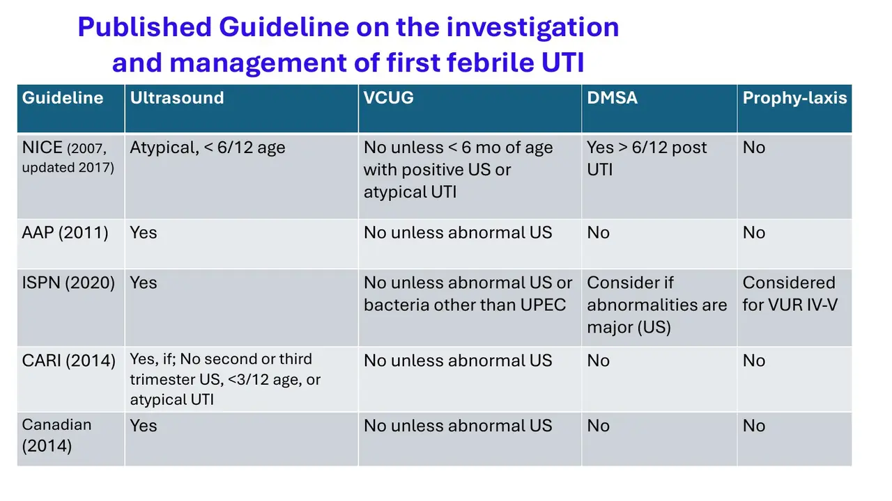
Slide 30. Hampir semua guideline menganjurkan USG, sedangkan VCUG hanya bila USG abnormal dan profilaksis umumnya tidak diberikan.
Recommended imaging schedule untuk anak 3 tahun atau lebih
Test
Responds well to treatment within 48 hours
Atypical UTI
Recurrent UTI
Ultrasound during the acute infection
No
Yes
No
Ultrasound within 6 weeks
No
No
Yes
DMSA scintigraphy scan 4 to 6 months after the acute infection
No
No
Yes
Micturating cystourethrogram
No
No
No
CAKUT dan vesicoureteral reflux
Congenital Anomaly of Kidney and Urinary Tract (CAKUT) pada gambar slide: agenesis, hypoplasia/dysplasia, duplication, supernumerary, ectopic or fused kidneys.
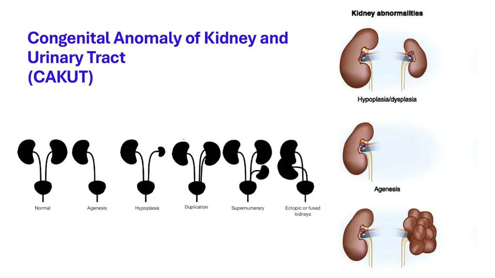
Slide 32. Bandingkan bentuk tiap kelainan dengan skema normal di paling kiri.
Grade of reflux (International Classification of VUR)
Grade
Deskripsi
I
Ureter only
II
Ureter, pelvis and calyces: no dilatation, normal fornices
III
Mild or moderate dilatation of renal pelvis, no or slight blunting of fornices
IV
Moderate dilatation and or tortuosity of ureter, moderate dilatation of pelvis and calyces
V
Gross dilatation and tortuosity of ureter, gross dilatation of pelvis and calyces
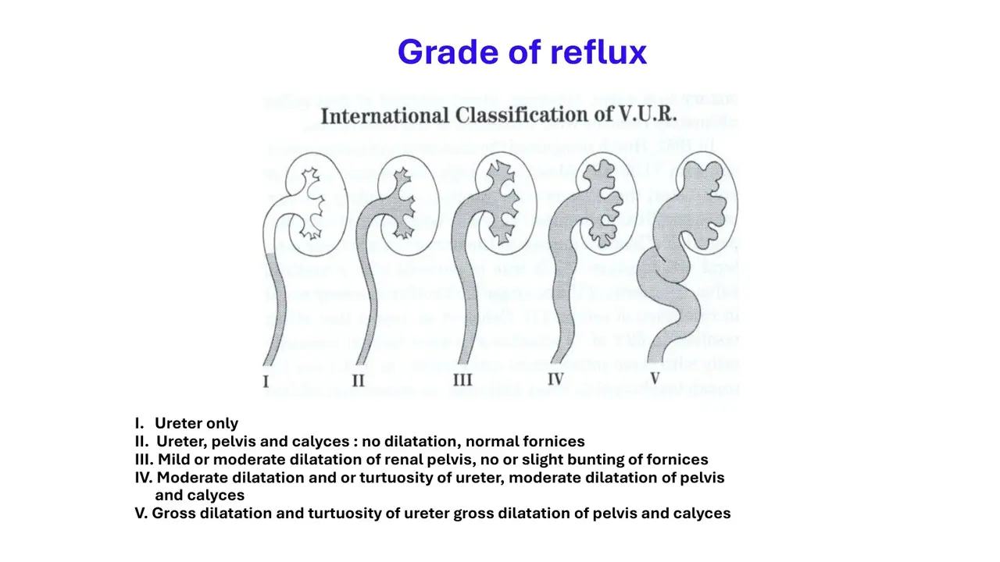
Slide 33. Perhatikan dilatasi dan tortuositas ureter yang makin berat dari grade I ke V.
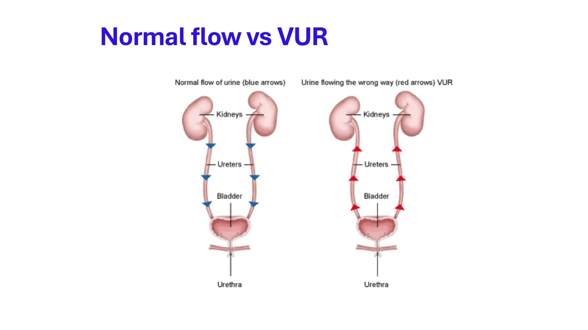
Slide 34. Pada VUR urin mengalir balik dari bladder ke ureter dan ginjal.
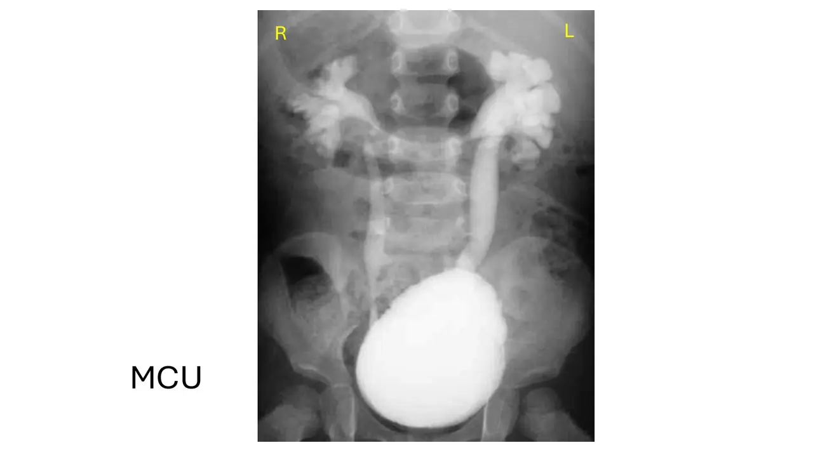
Slide 35. MCU: kontras dari bladder naik ke ureter dan pelviokalises, sisi kiri (L) tampak lebih melebar.
Surgery treatment
Untuk complex UTI: obstruction, posterior urethral valve, ureterocele, duplex ureter.
Suspected UTI: lakukan urine dipstick dan culture.
LE dan nitrite positif: presumptive UTI, start antibiotics, lanjutkan 7-10 hari.
LE dan nitrite negatif: nilai risk factors dan usia < 6 bulan. Bila ada, start antibiotics. Bila tidak (N), wait for urine C/S, dan bila confirmed UTI, start antibiotics.
Assess for BBD, lalu USG.
USG normal: watch for recurrence. Bila recurrent UTI: MCU.
USG abnormal: MCU.
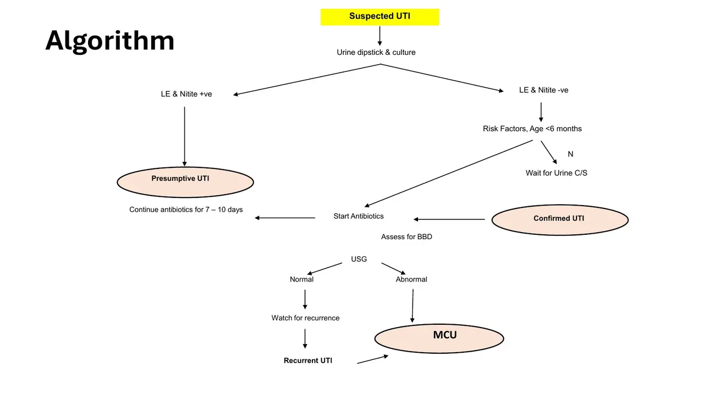
Slide 42. MCU dikerjakan bila USG abnormal atau terjadi recurrent UTI.
Mnemonik ISK pada Anak
Gabung semua, ISK pada anak:
Neonatus Nadi, anak besar Naik: neonatus terinfeksi hematogen (demam saja, mirip sepsis, ≈ pyelonephritis), anak besar ascending (dysuria, frequency, ≈ cystitis).
E. coli Empunya ISK: 85-90% kasus; organisme non E. coli = tanda atypical UTI dan indikasi MCU pada usia <2 tahun.
Suprapubik Suci, Bag Bohong: aspirasi suprapubik gold standard (bakteri berapa pun bermakna), kateter/mid stream ≥100.000 cfu/mL (Kass), urine bag high false positive.
Demam = Generasi 3, Atas lebih lama: febrile UTI empirik sefalosporin generasi 3 atau amox-clav; pyelonephritis akut dan neonatus IV 10-14 hari, cystitis oral 7-10 hari.
USG Untuk Semua, MCU Mencari reflUks: USG semua pasien, MCU bila USG abnormal atau recurrent UTI, grading VUR I-V.
Profilaksis Perempuan 2, laki-laki 1: 2 tahun pada perempuan, 1 tahun pada bayi laki-laki; stop >2 tahun bila toilet trained, tanpa BBD, bebas febrile UTI 1 tahun.
Gambaran umum, rute infeksi, dan faktor risiko
RuteNeonatus lewat Nadi, lainnya Naik: neonatus = hematogen, anak lain = ascending dari uretra ke buli.
Faktor risikoCerita si Prematur: bayi prematur, belum disunat, sering sembelit, kakaknya pernah ISK, urinnya stasis karena VUR atau batu, dan dia sendiri pernah ISK sebelumnya.
Etiologi
Gram positifAgalactiae = Awal kehidupan, Saprophyticus = Sexually active: S. agalactiae pada newborn, S. saprophyticus pada remaja perempuan aktif seksual.
E. coliE. coli Empunya ISK: 85-90% ISK anak disebabkan E. coli.
Klasifikasi UTI, atypical dan recurrent
ComplexComplex = ada Cacat: kelainan anatomi/fungsional yang membuat urin stasis, plus semua pyelonephritis akut dan semua UTI neonatus.
Recurrent2P, 1P+1C, 3C: 2 Pyelonephritis, atau 1 Pyelonephritis + 1 Cystitis, atau 3 Cystitis.
Atypical7A: Anak sakit berat, Aliran urin lemah, Ada massa abdomen/buli, Angka kreatinin naik, Aliran darah terinfeksi (septicaemia), Antibiotik gagal dalam 48 jam, Agen non E. coli.
Gejala
UsiaMakin kecil makin tinggi: bayi ≈ pyelonephritis (demam saja, ikterus lama, malas minum), anak besar ≈ cystitis (dysuria, frequency, enuresis).
Diagnosis dan interpretasi kultur
MetodeSuprapubik Suci, Bag Bohong: aspirasi suprapubik gold standard (1 bakteri pun bermakna), urine bag sering positif palsu.
AmbangSeratus ribu Sah, Sepuluh ribu Sampah: >100.000 cfu/mL significant, <10.000 kontaminasi, di antaranya ragu dan diulang.
StrainLebih dari satu = Lain-lain ikut masuk: kultur >1 strain berarti kontaminasi.
Sterile pyuriaNanah tanpa kuman, curigai TBC: TB saluran kemih, Ureaplasma/Gardnerella, atau non-infeksi (Kawasaki, hiperkalsiuria).
EmpirikDemam tinggi = Generasi tinggi: febrile UTI sefalosporin generasi 3 (atau amox-clav); cystitis remaja cukup generasi 1.
Rute IV2-Sakit-Telan: IV hanya bila usia <2 bulan, sakit berat, atau tidak bisa telan obat; selain itu oral. Bakteriuria asimtomatik: tanpa gejala, tanpa antibiotik.
Rawat inapNiH PeGaS: Neonatus, Hipertensi, Pielonefritis akut, Gagal ginjal, Sakit sistemik berat.
Deteksi kelainan fungsional dan anatomi (imaging)
ModalitasUSG Untuk Semua, MCU Mencari reflUks, DMSA Deteksi parut: USG semua anak, MCU untuk grading VUR, DMSA untuk scar.
Grade VUR1 Ureter, 2 Atas tanpa lebar, 3 mulai Lebar, 4 Lebar + Liku, 5 Luar biasa: grade I ureter saja, II sampai pelvis-calyces tanpa dilatasi, III dilatasi ringan-sedang, IV dilatasi sedang ± tortuositas, V dilatasi dan tortuositas berat.
Kuliah terdiri atas tiga topik: pendekatan biopsi ginjal, patologi dasar glomerulus (gejala klinis, patofisiologi, patogenesis), dan penyakit utama glomerulus. Ginjal dinilai per kompartemen: glomeruli, tubulus, interstisium, dan pembuluh darah. Semua pola kelainan glomerulus dapat disebabkan oleh IgA nephropathy, lupus nephritis, post-infectious glomerulonephritis, dan lain-lain.
Glomerulus normal
Diameter glomerulus dewasa kurang lebih 200 µm.
Glomerular basement membrane (GBM) tipis dan halus, inti sel mesangial tiga atau kurang per area mesangial, dikelilingi kapsula Bowman. Selularitas mesangial sangat bergantung pada ketebalan potongan, sehingga biopsi ginjal dianjurkan dipotong setebal 2 µm.
Sawar filtrasi: endotel berfenestra, membran basal, dan podosit (epitel viseral) dengan foot processes. Molekul nephrin dari foot processes yang bersebelahan membentuk slit diaphragm.
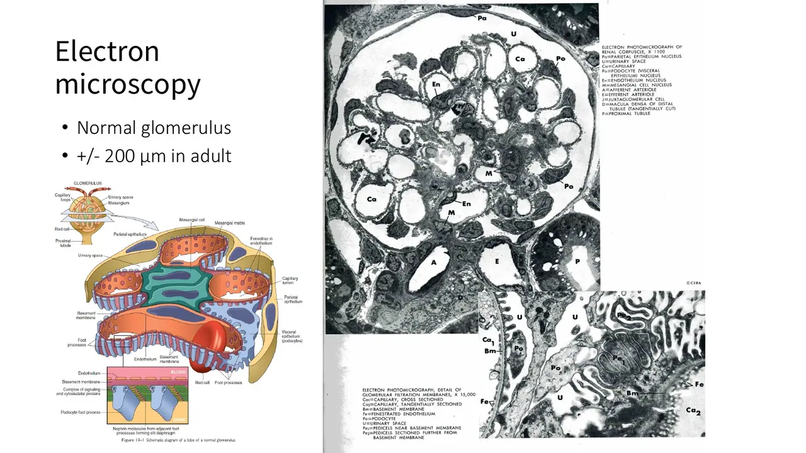
Slide 6. Glomerulus normal pada EM: kenali kapiler (Ca), podosit (Po), endotel (En), mesangium (M), ruang urin (U), serta endotel berfenestra, membran basal, dan pedikel.
Indikasi biopsi ginjal
Elevated Cr or BUN (akut atau kronik): filtrasi ginjal turun, ukur creatinine clearance atau eGFR.
Proteinuria: permeabilitas glomerulus meningkat. 1-3 g/d biasanya asimtomatik, kadar lebih tinggi menimbulkan edema dan sindrom nefrotik.
Nilai biopsi: mengubah diagnosis klinis pada 24-47%, mengubah terapi pada 31-42%, mengubah prognosis pada 31-57%, mengungkap patogenesis, dan menjadi endpoint uji klinis.
Pendekatan diagnostik
Data klinis dan laboratorium.
Morfologi (light microscopy, LM): H&E dan special stain (histokimia).
Imunohistologi (fluoresens dan/atau imunohistokimia): IgM, IgG, IgA, komplemen (C1q, C3, dan C4d untuk spesimen pascatransplantasi), fibrinogen.
Mikroskop elektron (EM): ultrastruktur, informasi lebih rinci tentang lokasi dan morfologi deposit.
Prinsip: satu penyakit ginjal dapat mempunyai banyak pola, dan satu pola dapat mewakili banyak penyakit. Diagnosis memerlukan gabungan data klinis, laboratorium, histopatologi, deposisi antigen-antibodi, dan ultrastruktur.
Patologi dasar glomerulus
Manifestasi klinis
Tanda dan gejala penyakit glomerulus: asymptomatic proteinuria, nephrotic syndrome, asymptomatic hematuria, acute nephritic syndrome, rapidly progressive nephritic syndrome, chronic kidney injury, dan ESRD.
Manifestasi
Patofisiologi utama
Proteinuria
Podocytes injury
Hematuria ringan
Mesangial injury
RPGN
Breakage in basement membrane
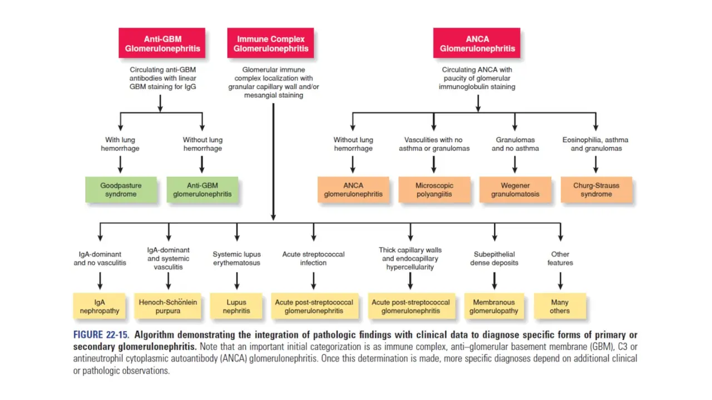
Slide 17. Kategorisasi awal: anti-GBM (IgG linear), immune complex (granular), atau ANCA (pauci-immune), lalu dirinci dengan data klinis.
Pola histologi berkorelasi dengan klinis: glomerulus normal atau mesangioproliferatif (hematuria dan/atau proteinuria asimtomatik), proliferatif atau nekrotikans (nefritis akut), kresentik (rapidly progressive nephritis), sklerosing (nefritis kronik atau ESRD).
Ringkasan penyakit glomerulus primer utama
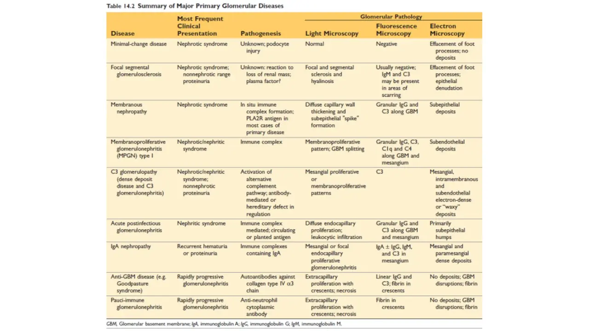
Slide 18. Tabel ringkasan tiap penyakit glomerulus primer (klinis, patogenesis, LM, IF, EM), sangat layak dihafal.
Mekanisme jejas glomerulus
GN dapat dipicu antibodi, deposit imunoglobulin, komplemen, dan mekanisme imun selular. Ada dua bentuk jejas terkait antibodi:
Deposisi kompleks Ag-Ab larut yang bersirkulasi. Antigen bukan berasal dari glomerulus. Endogen: SLE (DNA, tumor antigens). Eksogen: bakteri (Streptococcal, Treponema pallidum), virus (hepatitis B), parasit (plasmodium falciparum), unknown (MPGN).
Antibodi bereaksi in situ dengan antigen glomerulus intrinsik yang menetap (fixed) atau dengan molekul yang tertanam (planted) di glomerulus.
Fixed intrinsic tissue antigens: NC1 domain of type IV collagen (anti-GBM nephritis), PLA2R antigen (membranous glomerulopathy), mesangial antigens, lain-lain.
Selain itu: cell-mediated immune injury dan aktivasi alternative complement pathway.
Kompleks Ag-Ab di glomerulus mengaktifkan komplemen dan merekrut leukosit. Lokasi kompleks: mesangium, subendotel (antara endotel dan GBM), atau subepitel (permukaan luar GBM, di bawah podosit). Pola dan lokasi deposit penting untuk diagnosis GN dan dinilai dengan EM dan imunofluoresens.
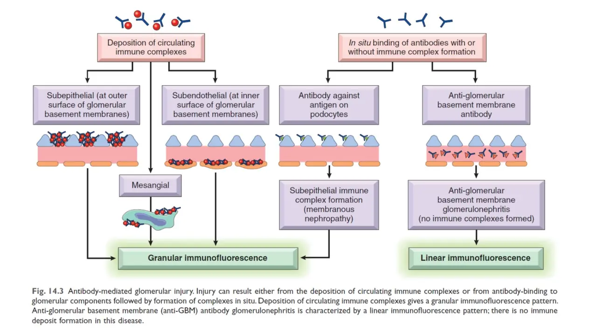
Slide 23. Deposisi kompleks imun (subepitel, subendotel, mesangial) dan antibodi terhadap antigen podosit memberi IF granular, sedangkan antibodi anti-GBM memberi IF linear tanpa pembentukan kompleks imun.
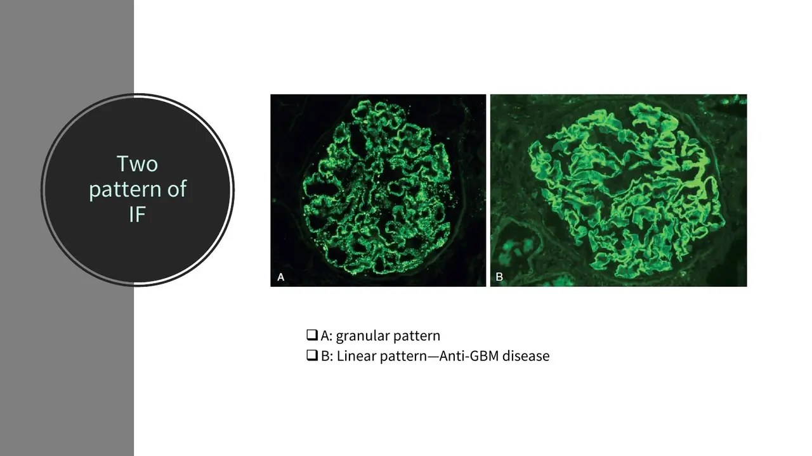
Slide 25. A: pola granular. B: pola linear, khas anti-GBM disease.
Podocyte injury: antibodi, sitokin, atau toksin menyebabkan effacement dan detachment foot process, sehingga protein lolos. Mediator jejas: deposisi antibodi mengaktifkan komplemen (C5a menarik neutrofil, C5b-9 merusak sel), sedangkan reaksi sel T melibatkan trombosit, makrofag, sel mesangial, sel T dan NK.
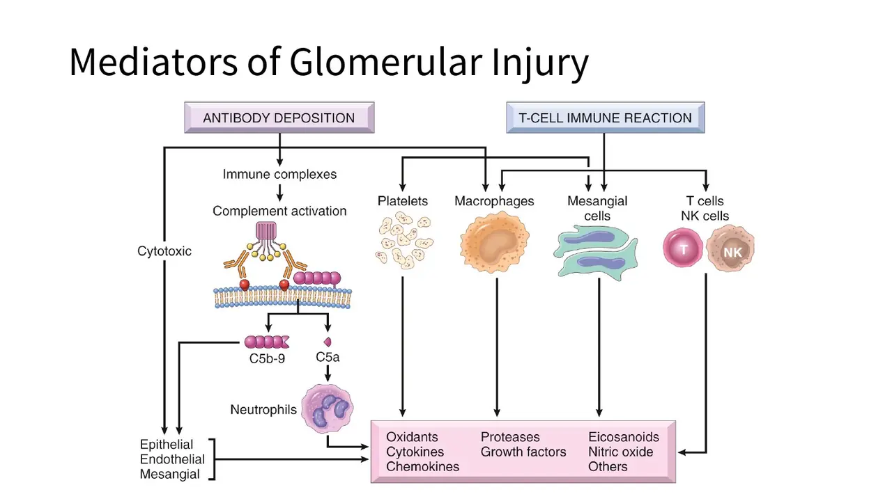
Slide 27. Dua jalur utama: antibody deposition (komplemen, C5a, C5b-9, neutrofil) dan T-cell immune reaction.
Glosarium: focal vs diffuse, segmental vs global, hypercellularity (mesangial, endocapillary, extracapillary), exudative proliferation, immune deposit (subendothelial, subepithelial).
Sindrom nefrotik
Penyebab (penyakit glomerulus primer)
Anak (%)
Dewasa (%)
Membranous nephropathy
3
30
Minimal change disease
75
8
Focal segmental glomerulosclerosis
10
35
MPGN dan dense deposit disease
10
10
GN proliferatif lain (focal, "pure mesangial", IgA nephropathy)
2
17
Penyakit primer mencakup kira-kira 95% sindrom nefrotik pada anak dan 60% pada dewasa. Penyakit sistemik 5% pada anak dan 40% pada dewasa.
MPGN dan GN proliferatif lain dapat memberi sindrom campuran nefrotik/nefritik.
Penyakit sistemik: diabetes mellitus, amyloidosis, SLE, obat (NSAID, penicillamine, heroin), infeksi (malaria, syphilis, hepatitis B dan C, HIV), keganasan (carcinoma, lymphoma), lain-lain (bee-sting allergy, hereditary nephritis).
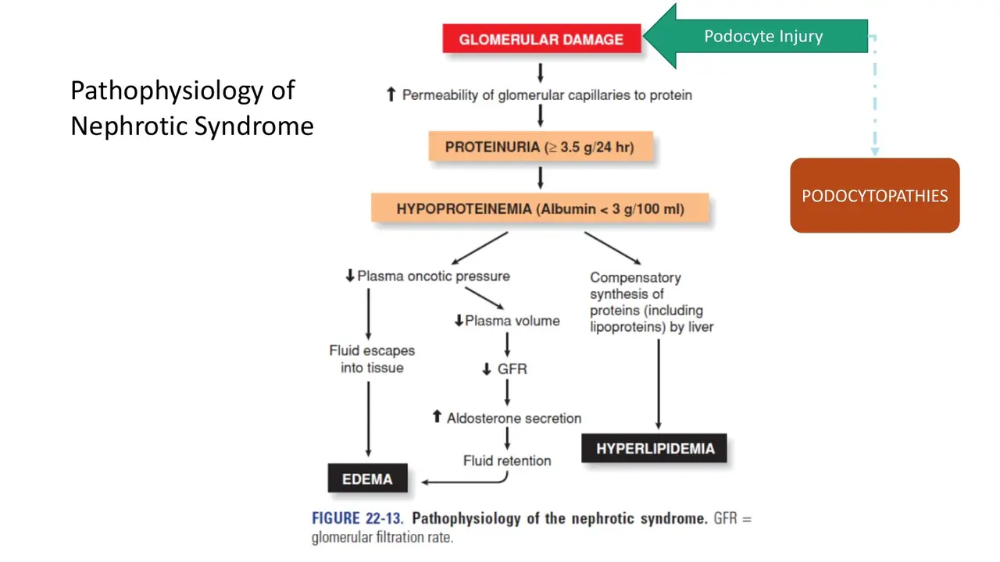
Slide 34. Jejas podosit (podocytopathies) menaikkan permeabilitas terhadap protein, lalu proteinuria, hipoproteinemia, turunnya tekanan onkotik, edema (dibantu aldosteron dan retensi cairan), serta hiperlipidemia akibat sintesis kompensasi oleh hati.
Minimal change disease (MCD)
Penyebab sindrom nefrotik tersering pada anak.
Diffuse effacement of foot processes sel epitel pada glomerulus yang tampak normal dengan mikroskop cahaya. Tepi sitoplasma sering menunjukkan vakuolisasi, pembengkakan, dan hiperplasia vili, yang keliru disebut "fusion of foot processes".
Sel tubulus proksimal sering penuh lipid dan protein akibat reabsorpsi lipoprotein: lipoid nephrosis.
Primer (podocytopathy): idiopatik. Hilangnya glikokaliks podosit bermuatan negatif (anionik) menyebabkan selective leakage of albumin dan foot process effacement. Circulating permeability factor atau kelainan sitokin. Jarang familial.
Epidemiologi: tersering pada anak < 10 tahun (puncak 2-3 tahun), ~50% sindrom nefrotik pada remaja, ~10-15% pada puncak akhir dewasa (80-91 tahun). Pada anak M:F = 2:1; M=F.
Presentasi: onset mendadak sindrom nefrotik, hematuria mikroskopik pada 10-30%, disfungsi ginjal (ARF pada 25% dewasa, kreatinin serum naik pada < 1/3 anak).
Prognosis: bentuk primer jarang menjadi ESRD tanpa FSGS, relaps sering dan menyebabkan steroid dependence. Bentuk sekunder remisi bila kondisi dasarnya sembuh. MCD dapat mendahului FSGS.
Pemeriksaan
Temuan MCD
LM, glomeruli
Tampak normal dengan peningkatan ringan dan fokal selularitas dan matriks mesangial. Podosit dapat bengkak dan menonjol. Colloidal iron stain sepanjang GBM berkurang. Pada dewasa dapat terlihat glomerulus sklerosis global.
LM, tubulus
Protein resorption droplets, lipid droplets ("lipoid nephrosis"), atrofi tubulus sedikit atau tidak ada. Pada ARF: perubahan regeneratif dan jejas tubulus.
LM, interstisium
Inflamasi dan fibrosis interstisial biasanya tidak ada. Interstitial foam cells dapat terlihat.
IF
No deposit. Sebagian kecil dengan pewarnaan IgM samar tanpa C3. < 5% anak mempunyai pewarnaan mesangial IgG, IgM, IgA, C1q dan/atau C3. Resorption droplets positif untuk albumin.
EM
Diffuse effacement of podocyte (foot processes retraksi, badan sel melebar di atas GBM), vakuolisasi podosit dan microvillous transformation, ekspansi mesangial ringan.
IHC
Nephrin sepanjang GBM menurun. Penanda yang lebih mendukung FSGS daripada MCD: CD44.
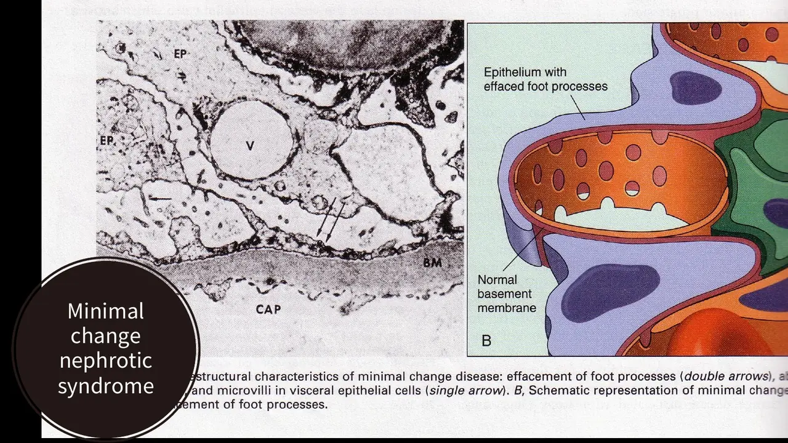
Slide 42. EM MCD: effacement foot processes (panah ganda), vakuol (V), dan mikrovili pada sel epitel viseral, dengan membran basal normal.
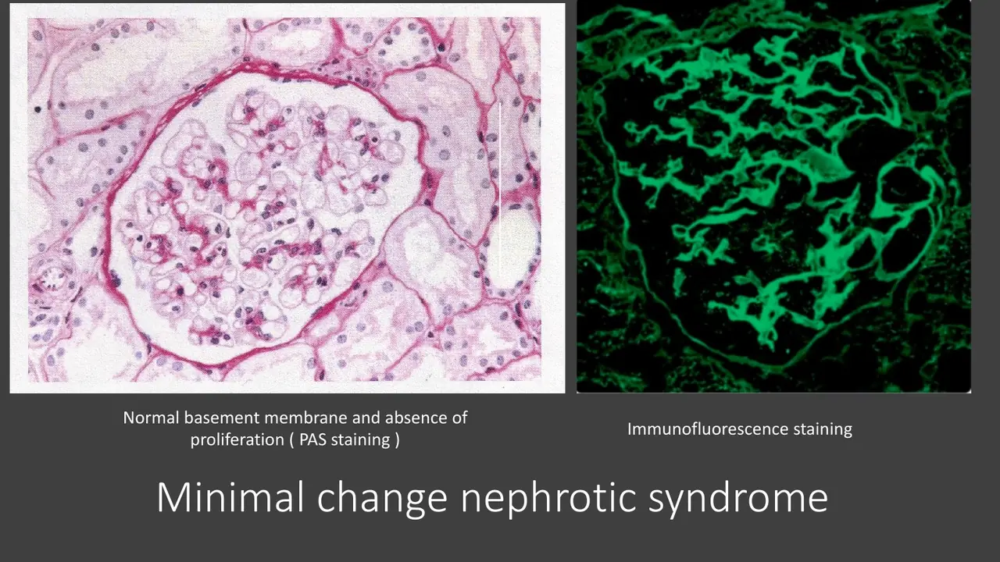
Slide 43. PAS: membran basal normal dan tidak ada proliferasi, di sampingnya gambar pulasan imunofluoresens.
Focal segmental glomerulosclerosis (FSGS)
Sindrom nefrotik tersering pada dewasa (35%), sekitar 10% pada anak. Kini disebut podocytopathy.
Prognosis umumnya buruk, sebagian besar berlanjut ke ESRD.
Klinis: proteinuria, sindrom nefrotik, azotemia.
Makroskopik: ginjal kuning pucat karena lipid di tubulus.
Etiologi:
Idiopatik.
Genetik non-sindromik: NPHS1, NPHS2, PLCE1, INF2, TRPC2, CD2AP, APOL1, CLCN5.
Genetik sindromik: WT1 (Frasier dan Denys-Drash), COL4A3 dan COL4A4 (Alport), LAMB2 (Pierson), LMX1B (Nail-patella), GLA (Fabry), dan lain-lain.
Slide 49. Berkurangnya massa ginjal menyebabkan hipertensi sistemik, hipertensi intraglomerular, dan hipertrofi glomerulus, lalu jejas epitel/endotel (proteinuria), hiperplasia mesangial, dan koagulasi intraglomerular yang berujung glomerulosklerosis dan lingkaran setan kehilangan nefron.
Morfologi: sklerosis segmental berbatas tegas, yaitu obliterasi lengkung kapiler dan peningkatan matriks, tanpa deposit, dengan diffuse foot process effacement pada EM. Adhesi (ke kapsula Bowman) dan hialinosis dapat ditemukan. Lesi cenderung di corticomedullary junction. EM juga menunjukkan GBM wrinkling.
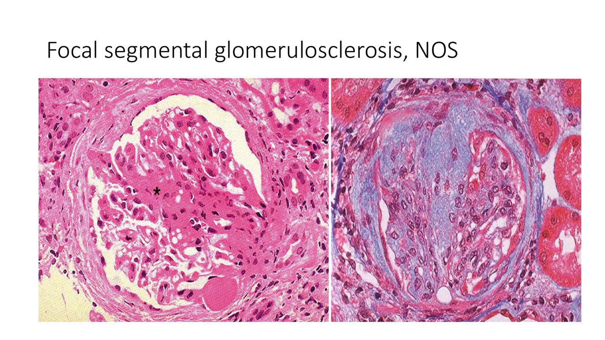
Slide 51. FSGS, NOS: hanya sebagian (segmen) gelung glomerulus yang sklerotik, sisanya masih terbuka.
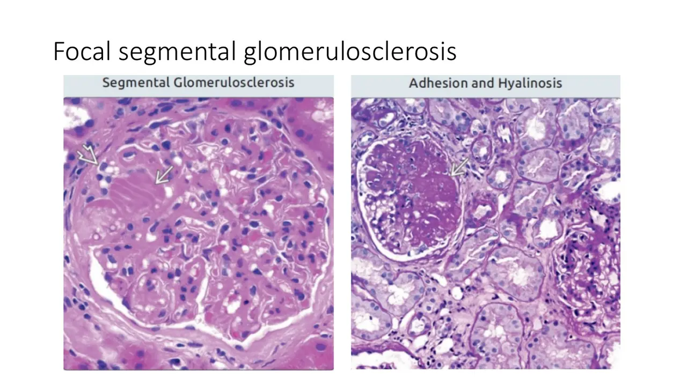
Slide 52. Kiri: segmental glomerulosclerosis. Kanan: adhesion and hyalinosis.
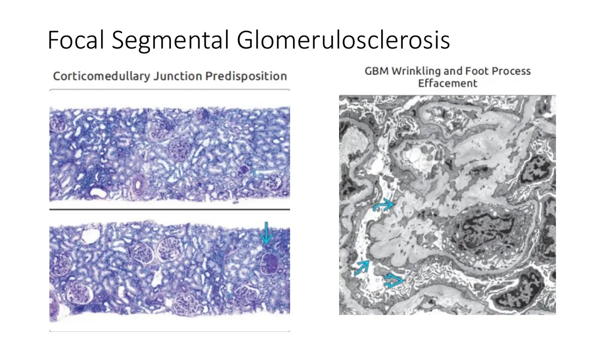
Slide 53. Predisposisi di corticomedullary junction, serta EM dengan GBM wrinkling dan foot process effacement.
Penyebab sindrom nefrotik kedua tersering pada dewasa setelah FSGS.
Penebalan difus dinding kapiler glomerulus dan akumulasi deposit yang mengandung Ig di sisi subepitel membran basal.
Sekunder terjadi pada: obat (penicillamine, captopril, gold, NSAID), tumor ganas (Ca paru, kolon, melanoma), SLE (15% glomerulonefritis pada SLE), infeksi (hepatitis B dan C kronik, sifilis, schistosomiasis, malaria), gangguan autoimun lain (tiroiditis).
Etiologi MGN primer: penyakit autoimun dengan pembentukan kompleks imun in situ. Antigen target utama Phospholipase A2 receptor 1 (PLA2R1), lainnya Thrombospondin type 1 domain-containing 7A, MME (CD10), AR dan SOD2. Faktor genetik: alel HLA-DQA1 dan PLA2R.
Klinis MGN primer:
Insidens: 6-10% biopsi ginjal native dewasa, ~3% pada anak (< 18 tahun). Puncak usia 30-50 tahun, M:F = 2:1.
Prognosis: 50% 10-year renal survival. 33% remisi spontan, 33% stabil dengan sedikit progresi, 33% berlanjut ke ESRD.
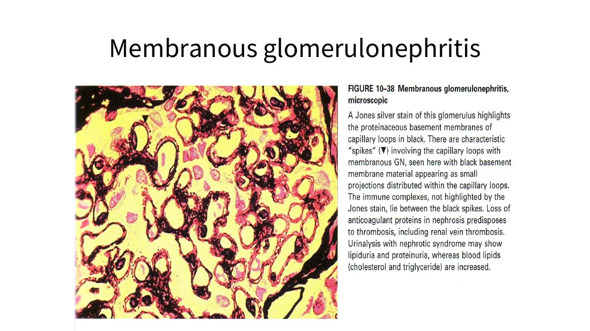
Slide 62. Jones silver stain: spike hitam pada lengkung kapiler. Kehilangan protein antikoagulan pada nefrosis memudahkan trombosis, termasuk renal vein thrombosis.
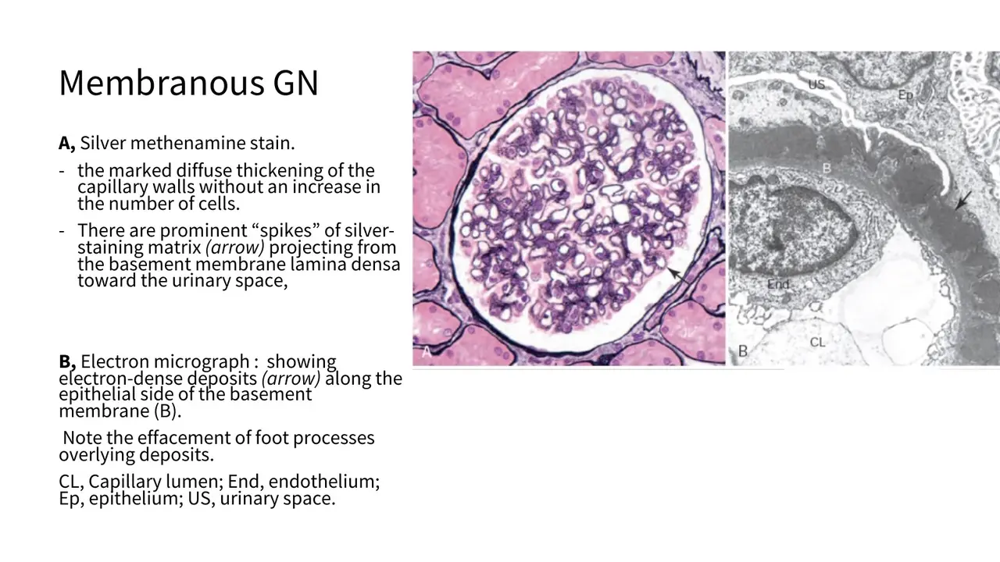
Slide 63. A: penebalan difus dinding kapiler tanpa hiperselularitas, dengan spike. B: deposit electron-dense di sisi epitel membran basal.
Membranoproliferative glomerulonephritis (MPGN) dan C3-related disease
Perubahan membran basal, proliferasi sel glomerulus, dan infiltrasi leukosit. Karena proliferasi terutama di mesangium, disebut juga mesangiocapillary glomerulonephritis.
10 sampai 20% sindrom nefrotik pada anak dan dewasa.
Dapat primer (idiopatik) atau sekunder (terkait penyakit sistemik dan agen etiologi yang diketahui).
Klasifikasi historis (semuanya dengan deposisi C3 glomerulus, hipokomplementemia kronik, dan kadang C3 nephritic factor):
MPGN I: mesangial hypercellularity, subendothelial deposits, duplication of GBM.
MPGN II atau dense deposit disease (DDD): deposit hiperdens pada EM.
MPGN III: deposit subepitel yang menonjol atau deposit intramembranosa GBM yang difus.
Masalah klasifikasi lama: kelainan komplemen yang sama dapat memberi patologi glomerulus berbeda, dan pola patologi yang sama dapat disebabkan kelainan komplemen yang berbeda.
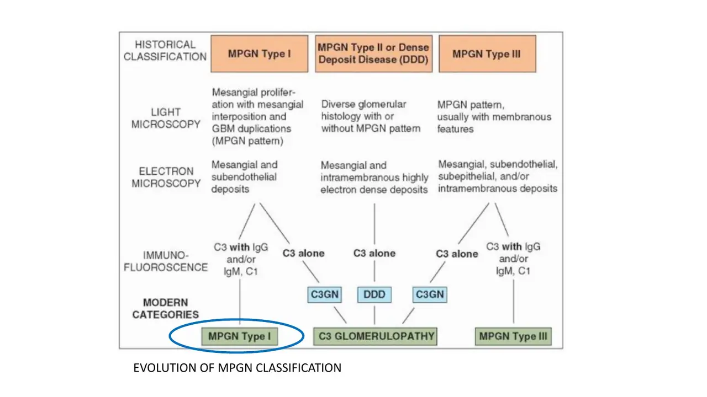
Slide 68. Klasifikasi modern memakai IF: C3 dengan IgG dan/atau IgM, C1 tetap MPGN type I atau III, sedangkan C3 saja masuk C3 glomerulopathy (C3GN atau DDD).
C3 glomerulopathies mencakup DDD (deposit GBM dan mesangial sangat padat pada EM, C3 dominan, autoantibodi terhadap C3bBb > 80%), C3 glomerulonephritis, familial C3 glomerulopathy, CFHR5 nephropathy, dan atypical acute glomerulonephritis. Pada idiopathic MPGN with immune complex deposition (type I dan III), Ig dan/atau C1q lebih besar atau dalam 1 tingkat IF dari C3.
MPGN with immune complexes (MPGN-IC): penyakit glomerulus dengan mesangial hypercellularity dan duplication of GBM, deposit kompleks imun subendotel dan mesangial, tanpa penyebab yang diketahui (infeksi, penyakit autoimun). Varian ultrastruktur: type I (dominan deposit subendotel) dan type III (permeasi GBM oleh deposit menurut Strife dan Anders, atau deposit subepitel menonjol menurut Burkholder). DDD kini digolongkan C3 glomerulopathy (dahulu MPGN type II).
Etiologi dan patogenesis: pola ini umum pada infeksi kronik, dan bila infeksi diketahui (mis. HCV) disebut MPGN sekunder. Kompleks imun bersirkulasi terdeteksi pada banyak pasien dan mengaktifkan jalur komplemen klasik dan alternatif. Sebagian mempunyai disfungsi atau aktivitas persisten jalur alternatif, termasuk C3 nephritic factor (C3NeF).
Epidemiologi: ~3% GN pada biopsi, terutama usia ~7-30 tahun, tanpa predileksi jenis kelamin.
Presentasi: proteinuria (sindrom nefrotik pada > 50%, sering awalnya nefritik lalu nefrotik), hematuria (sindrom nefritik akut pada 10-20%), hipertensi, dapat disertai renal vein thrombosis.
Prognosis: renal survival ~50% pada ~10 tahun (terapi memperbaiki menjadi 60-85%), remisi klinis 5-20%. Faktor buruk: glomerulus sklerotik, crescent, fibrosis interstisial, atrofi tubulus, sindrom nefrotik berat, kreatinin naik, hipertensi.
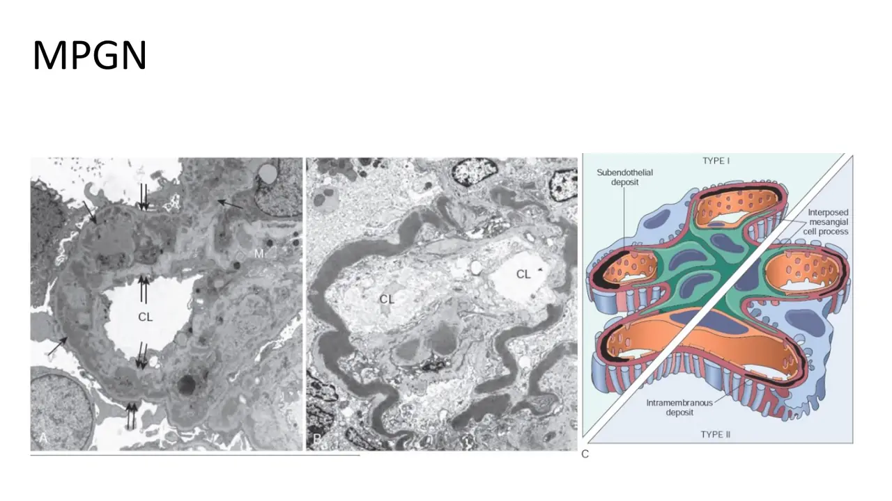
Slide 72. Type I: deposit subendotel dengan interposisi prosesus sel mesangial. Type II: deposit intramembranosa.
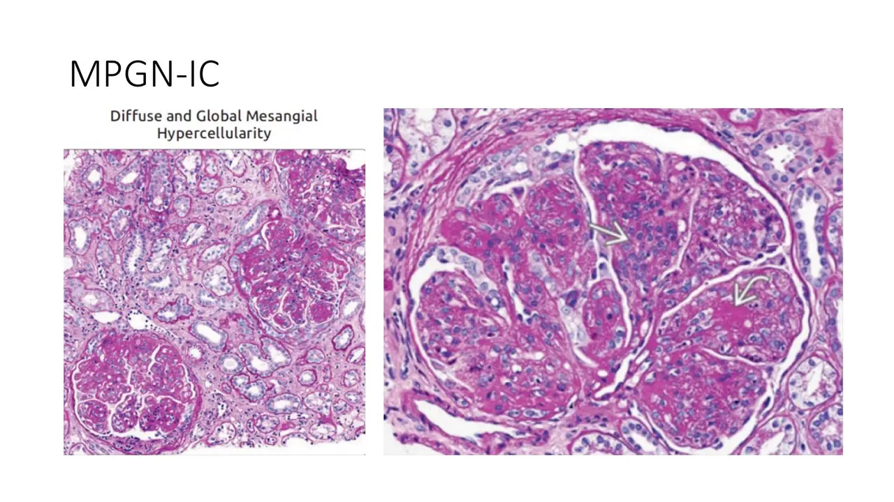
Slide 77. Hiperselularitas mesangial difus dan global dengan arsitektur lobular yang menonjol.
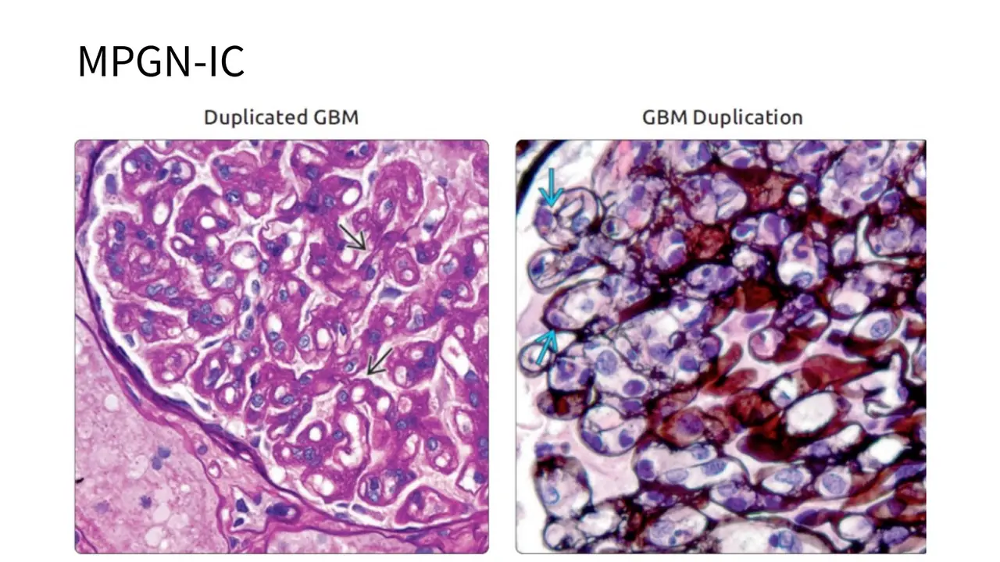
Slide 78. Duplikasi GBM (double contour), paling jelas pada pulasan perak di kanan.
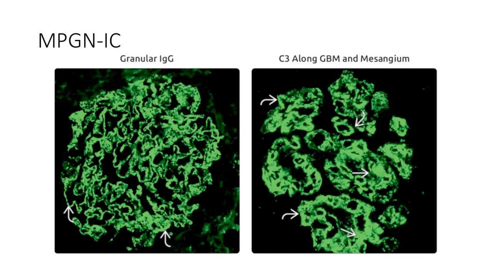
Slide 81. IgG granular dan C3 sepanjang GBM dan mesangium.
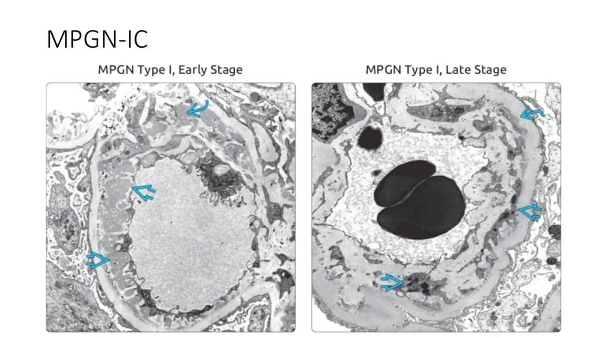
Slide 82. MPGN type I stadium awal dan lanjut pada EM, dengan deposit subendotel.
Sindrom nefritik
Presentasi klinis khas sebagian besar GN tipe proliferatif: postinfectious GN, crescentic GN, proliferative lupus GN.
Proliferasi sel di dalam glomerulus, sering disertai infiltrat leukosit inflamatorik.
Reaksi inflamasi merusak dinding kapiler sehingga darah masuk ke urin, lalu perubahan hemodinamik dan penurunan GFR.
GFR turun tampak sebagai oliguria, retensi cairan, dan azotemia.
Hipertensi kemungkinan akibat retensi cairan dan pelepasan renin dari ginjal yang iskemik.
Glomerulonefritis akut dapat terjadi pada post-infectious GN dan penyakit multisistem seperti SLE dan microscopic polyarteritis. Bentuknya: acute proliferative GN (post streptococcal, non-streptococcal) dan sebagai komponen crescentic/RPGN.
Timbul 1 sampai 4 minggu setelah infeksi streptokokus beta-hemolitikus grup A tipe 12, 4, dan 1 di faring atau kulit (nephritogenic strain).
Terutama anak 6 sampai 10 tahun, tetapi dewasa dan semua usia dapat terkena.
Klinis: subklinis pada ~20%. Onset mendadak 1-4 minggu setelah infeksi (rata-rata ~10 hari). Hematuria hampir universal, gross hematuria pada ~60% anak dan 30% dewasa (urin smoky, seperti Coca-Cola, teh, atau kopi). Proteinuria (sindrom nefrotik pada 5-10%). Edema, khasnya edema periorbital mendadak. Gagal ginjal akut dan oliguria/anuria (~60% BUN meningkat). Hipertensi (85%), terutama akibat retensi natrium dan cairan. Anemia.
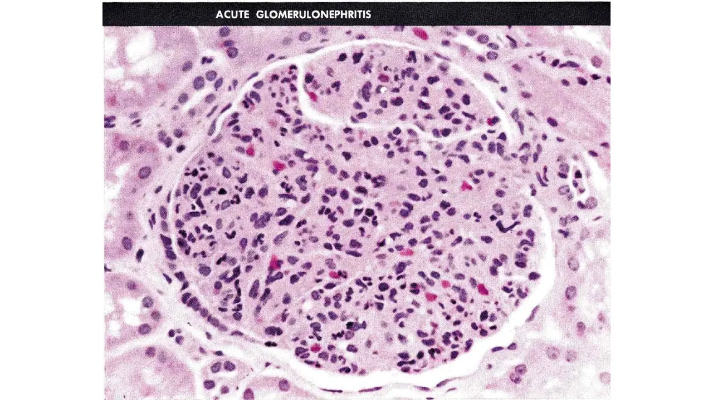
Slide 93. Glomerulonefritis akut: glomerulus membesar, sangat hiperselular, lumen kapiler menyempit, banyak leukosit.
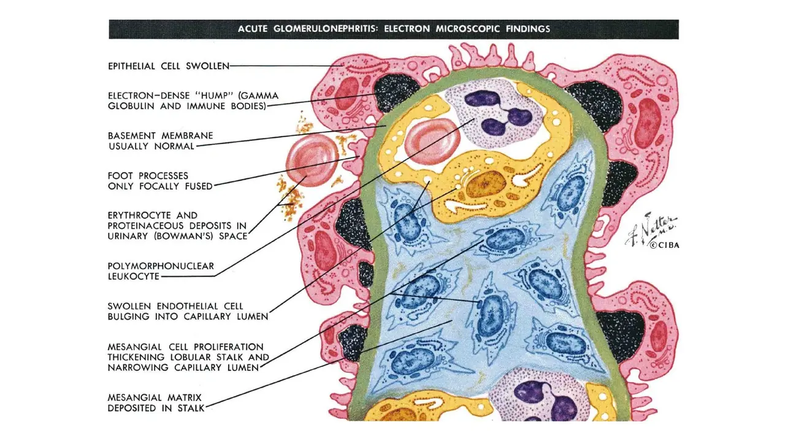
Slide 94. Hump electron-dense subepitel, membran basal biasanya normal, foot processes hanya fokal menyatu, leukosit PMN, endotel bengkak, proliferasi mesangial.
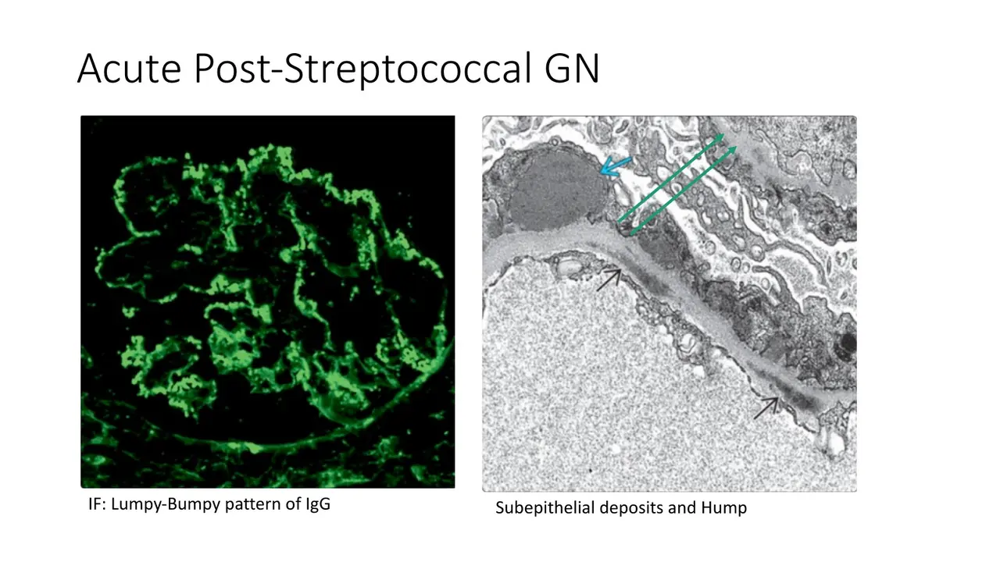
Slide 97. IF: pola lumpy-bumpy IgG. EM: deposit subepitel dan hump.
Rapidly progressive glomerulonephritis (RPGN)
Karakteristik: nefritis akut, proteinuria, dan gagal ginjal akut. Fungsi ginjal hilang cepat dan progresif disertai oliguria berat dan kematian akibat gagal ginjal dalam minggu sampai bulan.
Gambaran histologi klasik: crescent pada sebagian besar glomerulus (crescentic glomerulonephritis).
ANCA associated, idiopatik, Wegener granulomatosis, microscopic polyarteritis nodosa/microscopic polyangiitis
Kerusakan glomerulus sedemikian berat sehingga fibrinogen bocor ke ruang Bowman, memicu proliferasi sel epitel dan pembentukan crescent. Crescent adalah massa berbentuk bulan sabit dari sel yang berproliferasi dan leukosit di sisi dalam kapsula Bowman, yang menekan gelung glomerulus hingga kolaps. EM: GBM berkerut dengan disrupsi fokal (GBM breakage).
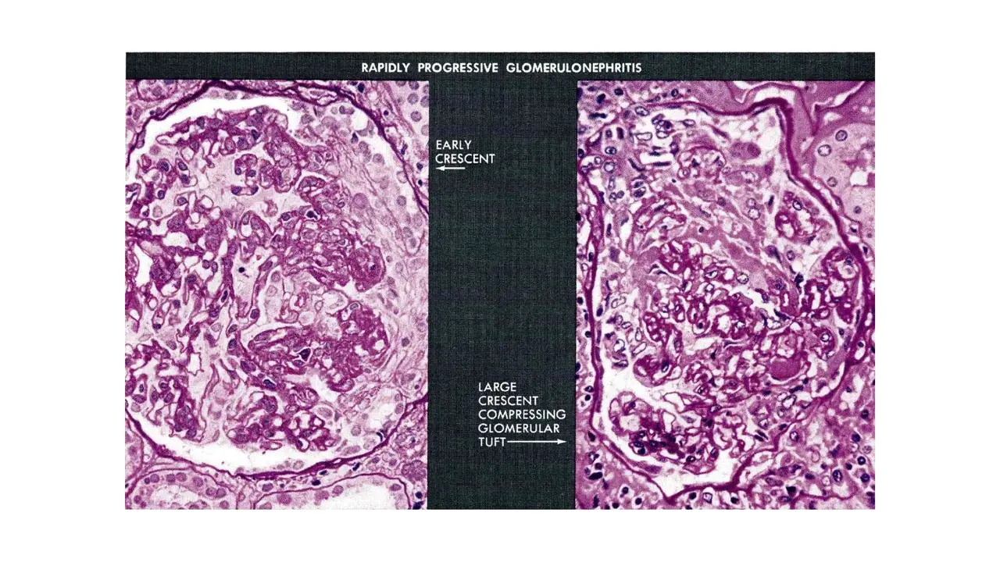
Slide 101. Crescent dini (kiri) dan crescent besar yang menekan gelung glomerulus (kanan).
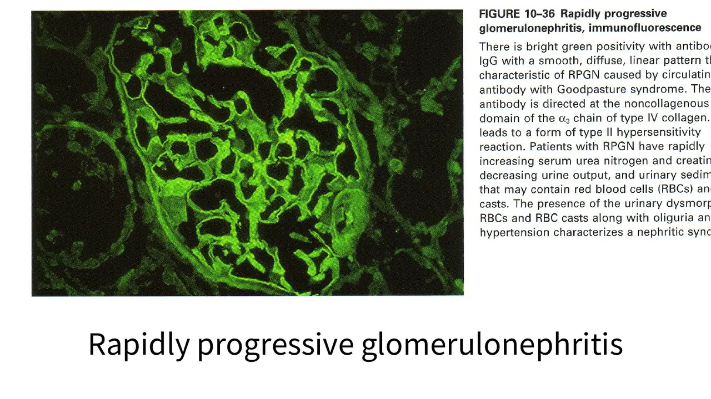
Slide 104. IgG dengan pola halus, difus, linear: khas RPGN akibat antibodi anti-GBM pada Goodpasture syndrome (reaksi hipersensitivitas tipe II).
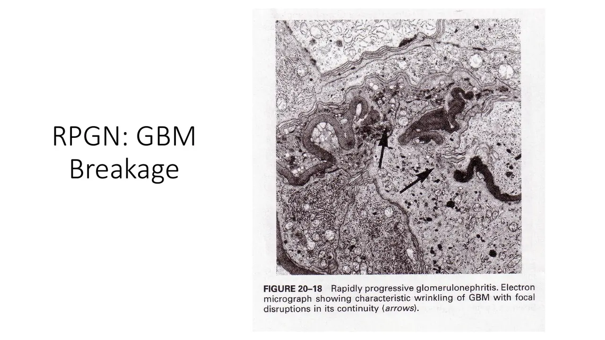
Slide 105. EM: GBM berkerut dengan disrupsi fokal kontinuitasnya (panah).
Anti-GBM glomerulonephritis
Penyakit akibat autoantibodi terhadap kolagen GBM. Khasnya necrotizing, crescentic GN, kadang dengan perdarahan paru.
Autoantibodi menyasar neoepitop pada noncollagenous-1 (NC1) domain rantai α-3 kolagen IV (Goodpasture antigen).
Klinis: jarang (1 per 1 juta/tahun di USA), puncak dekade ke-2 dan ke-6, datang dengan acute kidney injury (> 90%), perdarahan paru 25-50%.
Terapi: plasmapheresis, imunosupresi.
Fungsi ginjal jarang pulih bila crescent ≥ 75%. Faktor prognosis buruk: Cr > 5 mg/dL saat diagnosis dan anuria.
Kompartemen
Temuan
Glomerulus
Cellular crescents ± segmental fibrinoid necrosis, sering mengenai > 75% glomeruli, ruptur atau GBM breaks. Gelung yang tidak terkena tanpa hiperselularitas bermakna.
Tubulus
Red blood cell casts, tubulitis.
Interstisium
Inflamasi (limfosit, sel plasma, neutrofil, makrofag), lebih menonjol bila ada IgG di TBM. Infiltrat eosinofil yang menonjol mengarah ke Churg-Strauss syndrome.
Pembuluh
Necrotizing vasculitis jarang (8%).
IF
Bright linear IgG di GBM (99%). Linear juga dengan C3 (~90%), IgM (~50%), C1q (~20%), IgA (~10%). Linear TBM IgG pada 10-67%.
EM
Break atau disrupsi GBM, tidak ada deposit kompleks imun.
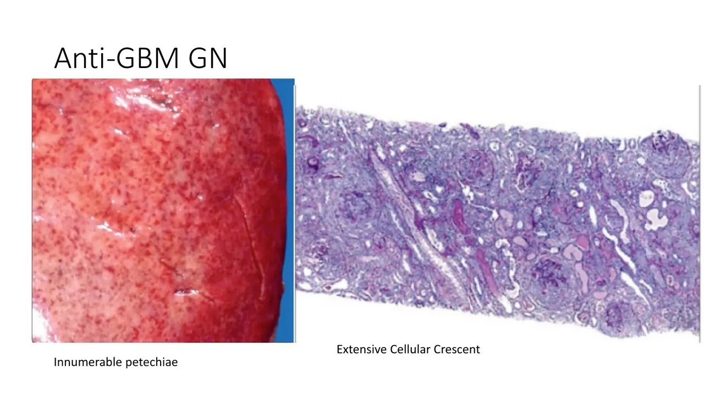
Slide 108. Makroskopik: petekie tak terhitung di permukaan ginjal. Mikroskopik: crescent selular yang luas.
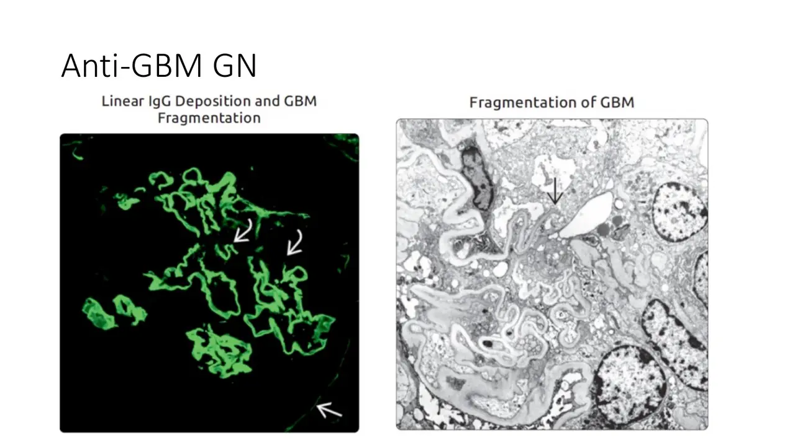
Slide 109. IF: deposisi IgG linear dengan fragmentasi GBM. EM: fragmentasi GBM tanpa deposit.
IgA nephropathy (Berger disease)
Deposit IgA yang menonjol di daerah mesangial, terdeteksi dengan imunofluoresens.
Penyebab sering hematuria gross atau mikroskopik berulang.
Gambaran khas: deposit IgA di mesangium, sering dengan C3 dan sedikit IgG atau IgM.
Etiologi dan patogenesis:
Genetik: riwayat keluarga nefritis ~10%. Glikosilasi IgA abnormal meningkatkan galactose-deficient IgA (GD-IgA), pola autosomal dominan. Pasien IgAN mempunyai IgA1 yang kekurangan galaktosa di serum dan glomerulus.
Respons IgA abnormal: respons IgA terhadap antigen intranasal meningkat, IgA serum naik pada ~50%.
Autoantibodi terhadap GD-IgA: GD-IgA berperan sebagai autoantigen. Kompleks IgA/anti-IgA merangsang proliferasi sel mesangial, mengaktifkan jalur MAPK/ERK melalui CD71 (IgA1 Fc receptor).
Komplemen: C3 hampir selalu menyertai IgA (~90%), dengan komponen jalur klasik, alternatif, atau lektin.
Faktor pencetus: individu asimtomatik dapat mempunyai IgA mesangial, diperlukan "2nd hit". Sering dieksaserbasi infeksi saluran napas atas.
Epidemiologi: glomerulonefritis tersering di dunia. Prevalensi biopsi: USA 5%, Eropa 15%, Jepang 30%. Puncak usia 20-30 tahun, M:F = 2:1, Asians > whites > blacks.
Klinis: mikrohematuria (88%), makrohematuria (43%), hipertensi (25%), proteinuria rentang nefrotik (10%), proteinuria > 1 g/d (47%), kelainan urin asimtomatik (40%), nyeri pinggang atau abdomen (30%), gagal ginjal akut (7%), lain-lain gagal ginjal kronik dan TMA. Laboratorium: IgA sirkulasi naik (50%), GD-IgA naik, autoantibodi IgG dan IgA terhadap GD-IgA, kadar komplemen normal.
Prognosis: ~80% 10-year renal survival. Makrohematuria berulang justru mempunyai 20-year renal survival lebih baik (91%) daripada makrohematuria terisolasi (64%) atau tanpa makrohematuria (57%). Prediktor independen progresi ke ESRD: eGFR menurun, proteinuria berat, hipertensi. Rekuren pada transplantasi 30%.
Morfologi (sangat bervariasi):
Glomerulus: histologi normal pada 10%. Hiperselularitas mesangial dan peningkatan matriks, inflamasi fokal segmental, hiperselularitas endokapiler. Dapat necrotizing GN (10%), crescentic GN (5% dengan > 50% glomeruli terkena), global glomerulosclerosis.
Interstisium: inflamasi dengan eosinofil, sel mononuklear, sel plasma, sel mast.
Pembuluh: TMA akut atau kronik (53% pada seri El Karoui), terkait jaringan parut lebih berat dan progresi lebih cepat.
IF: deposisi IgA mesangial. EM: deposit mesangial amorf.
Diagnosis banding: HSP nephritis (tidak dapat dibedakan dengan biopsi ginjal, pakai gambaran klinis), lupus nephritis (pola "full house", IgG lebih terang daripada IgA dan C1q), postinfectious GN IgA dominant, deposit IgA pada infeksi HIV, hepatic glomerulosclerosis, incidental mesangial IgA deposits, MCD dengan deposit IgA, FSGS.
Klasifikasi Haas: kelas 1 minimal histologic lesions, kelas 2 FSGS-like, kelas 3 focal proliferative GN (< 50% glomeruli hiperselular), kelas 4 diffuse proliferative (> 50% glomeruli hiperselular), kelas 5 advanced chronic GN (> 40% global glomerulosclerosis atau > 40% atrofi/kehilangan tubulus). Renal survival 10 tahun dewasa: > 90% (kelas 1 dan 2), 60%, 20%, 15%. Klasifikasi Oxford menilai mesangial hypercellularity (M0 rerata < 4 sel per area mesangial, M1 ≥ 4), segmental glomerulosclerosis (S0, S1), endocapillary hypercellularity (E0, E1), interstitial fibrosis/tubular atrophy (T0 ≤ 25%, T1 26-50%, T2 > 50%), dan crescents.
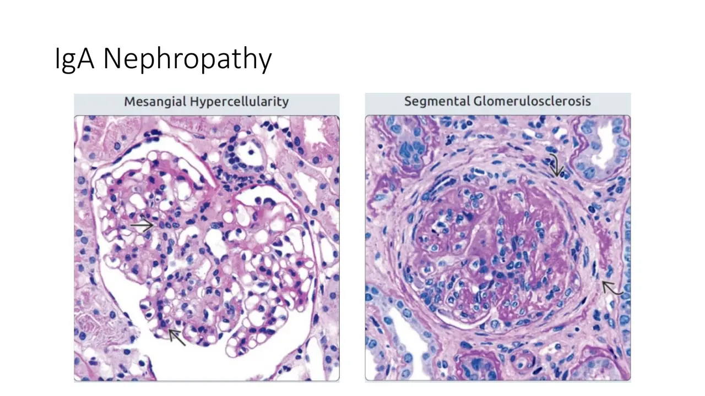
Slide 121. Hiperselularitas mesangial (kiri) dan segmental glomerulosclerosis (kanan).
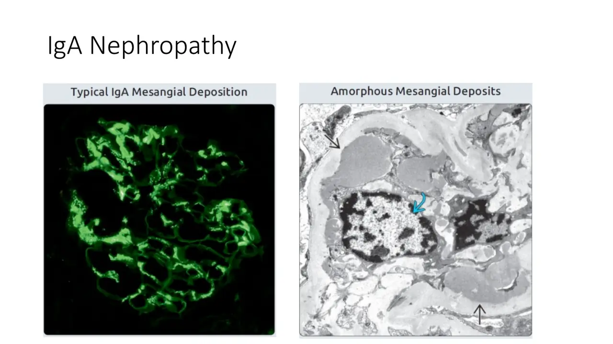
Slide 122. IF: deposisi IgA mesangial yang khas. EM: deposit mesangial amorf.
Lupus nephritis
SLE: penyakit autoimun dengan disregulasi dan hiperaktivitas sel B menyeluruh serta produksi autoantibodi terhadap banyak antigen nuklear dan non-nuklear (DNA, RNA, nukleoprotein, fosfolipid). Ginjal sering menjadi sasaran.
Kompleks imun mengendap di glomerulus, membran basal tubulus dan kapiler peritubular, serta pembuluh darah yang lebih besar.
Patogenesis:
Defek apoptosis dan gangguan pembersihan fragmen kromatin menimbulkan respons autoimun antinuklear dan menyediakan antigen target bagi kompleks imun nefritogenik.
Kompleks imun bersirkulasi yang dibentuk antibodi berafinitas tinggi (high-avidity) mengendap di zona subendotel dan mesangial. Antibodi berafinitas rendah membentuk kompleks in situ di zona subepitel.
Kompleks in situ dapat melibatkan double-stranded DNA dan nukleosom yang menumpuk di GBM atau matriks mesangial karena interaksi muatan.
Kompleks imun glomerulus mengaktifkan komplemen dan memulai inflamasi, sering menyebabkan hipokomplementemia.
Kompleks imun juga berada di interstisium, dinding pembuluh interstisial, dan membran basal tubulus sehingga timbul inflamasi tubulointerstisial.
Lokasi kompleks imun
Akibat
Mesangium
Inflamasi lebih ringan
Subendotel
Lebih terpajan sistem mediator inflamasi selular dan humoral, memulai inflamasi
Subepitel
Proteinuria, tetapi tidak merangsang inflamasi glomerulus yang nyata
Kelas
Lokasi kompleks imun
Manifestasi klinis
I: Minimal mesangial
Mesangial
Mild hematuria and proteinuria
II: Mesangial proliferative
Mesangial
Mild hematuria and proteinuria
III: Focal
Mesangial dan subendotel
Moderate nephritis (prognosis lebih buruk)
IV: Diffuse
Mesangial dan subendotel
Severe nephritis (prognosis lebih buruk)
V: Membranous
Subepitel dan mesangial
Nephrotic syndrome
VI: Chronic sclerosing
Variabel
Chronic renal failure (end-stage)
Kelas I tampak normal pada LM dengan IgG mesangial halus pada IF. Kelas V menunjukkan penebalan teratur dan kaku dinding kapiler.
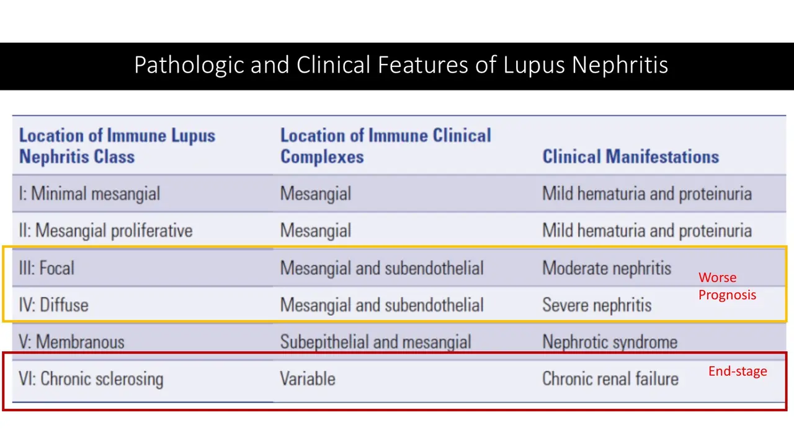
Slide 129. Kelas III dan IV berprognosis lebih buruk, kelas VI adalah end-stage.
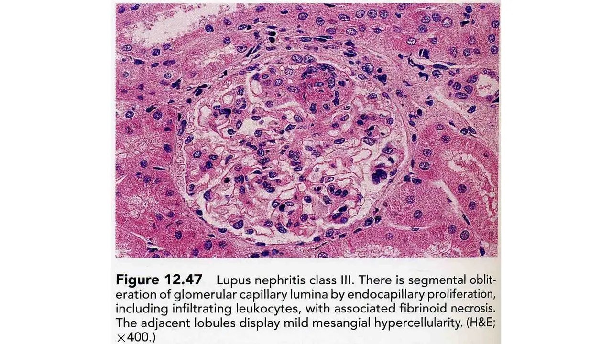
Slide 132. Kelas III: proliferasi endokapiler segmental dengan fibrinoid necrosis.
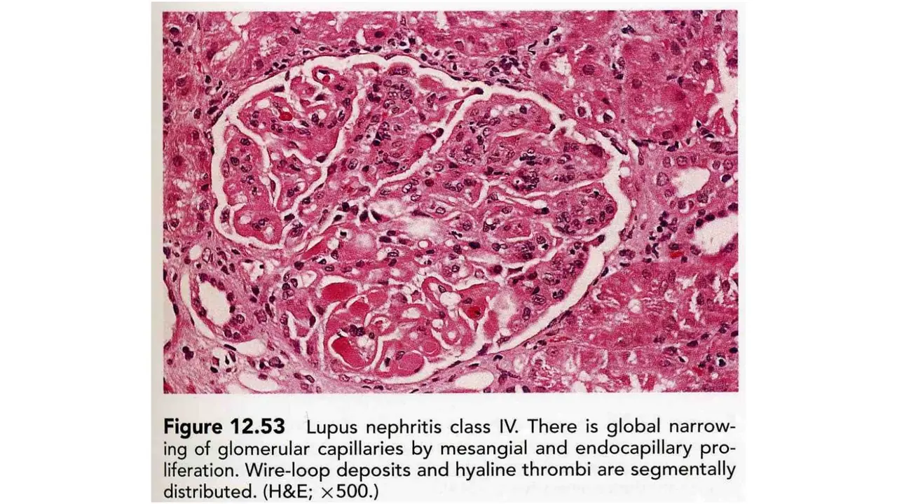
Slide 134. Kelas IV: penyempitan global kapiler, wire-loop deposits dan hyaline thrombi.
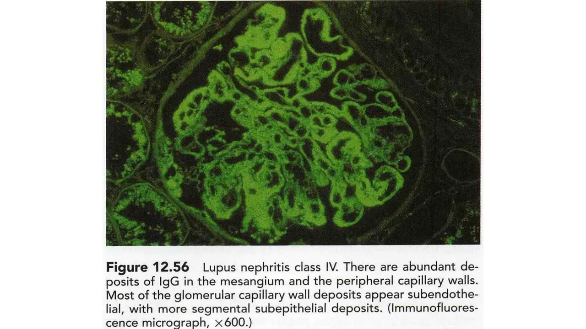
Slide 136. Kelas IV: deposit IgG berlimpah di mesangium dan dinding kapiler perifer.
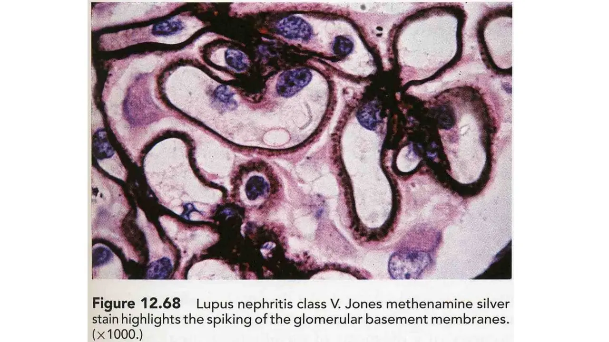
Slide 138. Kelas V: spike membran basal glomerulus pada Jones methenamine silver.
Diabetic nephropathy
Vaskulopati: perubahan hialin pada vas afferens dan efferens, arteriosklerosis dan aterosklerosis.
Tubulus: Armanni-Ebstein lesion (vakuol glikogen di sel epitel tubulus proksimal), osmotic nephrosis dan fatty degeneration.
EM pada glomerulosklerosis diabetik lanjut: peningkatan masif matriks mesangial yang mendesak lumen kapiler, GBM dan kapsula Bowman sangat menebal.
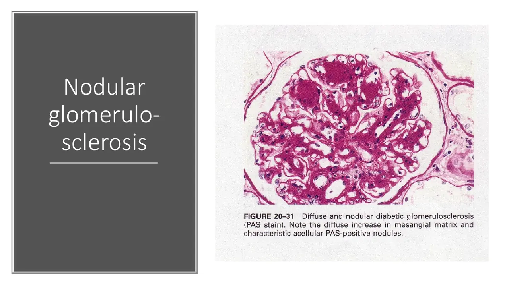
Slide 141. PAS: peningkatan difus matriks mesangial dan nodul aselular PAS-positif yang khas.
Renal amyloidosis
Morfologi: massa eosinofilik.
Pulasan histokimia: Congo red dengan birefringence pada cahaya terpolarisasi, methyl violet.
Jenis: light chain (AL) dan tipe AA.
Amiloidosis glomerulus: sindrom nefrotik, lalu gagal ginjal, lalu uremia.
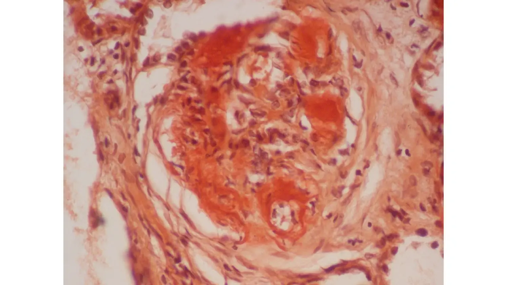
Slide 148. Deposit merah jingga di glomerulus pada pulasan khusus amiloid.
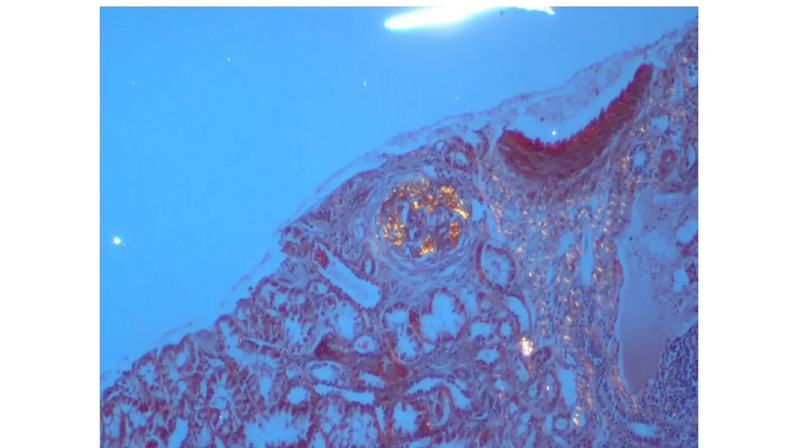
Slide 150. Pada cahaya terpolarisasi, deposit di glomerulus tampak birefringent.
Advanced diffuse global glomerular sclerosis
Sklerosis glomerulus global yang difus dan lanjut adalah gambaran akhir dari end-stage glomerular disease, end-stage vascular disease, dan end-stage tubulointerstitial disease. Slide penutup menunjukkan glomerulosklerosis pada end-stage chronic interstitial disease. Kuliah berlanjut ke penyakit tubulus, interstisium, dan vaskular.
Mnemonik PA 1: Kelainan Glomerulus
Gabung semua, kelainan glomerulus:
Nefrotik = Nyangkut di Podosit, Nefritik = Ngamuk di endotel: proteinuria dari jejas podosit (MCD, FSGS, MGN), hematuria-hipertensi-azotemia dari inflamasi proliferatif (APSGN, RPGN, lupus).
Anak Minimal, Dewasa Fokal, kedua Membranosa: nefrotik anak tersering MCD (75%), dewasa FSGS (35%), lalu MGN (30%).
Patologi anatomi kelainan vaskular ginjal, jejas tubulus akut, nefritis tubulointerstisial, pielonefritis, obstruksi, batu, penyakit kistik, dan sistitis beserta morfologinya.
128 slide
Peta kuliah
Kuliah mencakup dua kelompok besar: kelainan vaskular ginjal (ANCA-related disease, hypertensive renovascular disease, thrombotic microangiopathy, preeclampsia) dan kelainan tubulus serta interstisium (acute tubular injury, tubulointerstitial nephritis, papillary necrosis, pyelonephritis, obstruksi, nefropati metabolik, batu, penyakit kistik), ditutup dengan cystitis.
ANCA vasculitis
Definisi dan klasifikasi
Dahulu disebut idiopathic crescentic glomerulonephritis: tidak ada bukti deposisi antibodi anti-GBM atau kompleks imun di glomerulus, sehingga disebut pauci-immune.
Termasuk small vessel vasculitis dengan paucity of immune complexes (often with ANCA).
75% pasien ANCA GN juga mengalami kelainan pembuluh di luar ginjal.
Sering disertai necrotizing inflammation di pembuluh ginjal lain: arteri, arteriol, dan medullary peritubular capillaries.
Jenis
Ciri klinikopatologis
Microscopic polyangiitis
Pauci-immune vasculitis tanpa asthma dan tanpa granulomatous inflammation
Granulomatosis with polyangiitis (dahulu Wegener granulomatosis)
Necrotizing granulomatous inflammation, terutama di respiratory tract
Eosinophilic granulomatosis with polyangiitis (Churg-Strauss syndrome)
Eosinophilia dan asthma
Etiologi dan patogenesis
90% pasien memiliki ANCA dalam sirkulasi.
ANCA spesifik terhadap protein sitoplasma neutrofil dan monosit, biasanya myeloperoxidase (MPO-ANCA) atau proteinase 3 (PR3-ANCA).
ANCA mengaktifkan neutrofil: neutrofil menempel pada sel endotel, melepas toxic oxygen metabolites, degranulasi, dan membunuh sel endotel.
Neutrofil juga mengaktifkan alternative complement pathway sehingga inflamasi makin kuat.
Klinis
Rapidly progressive renal failure dengan tanda dan gejala nefritik.
ANCA GN merupakan 75% RPGN pada pasien >60 tahun, 45% pada usia pertengahan, 30% pada dewasa muda dan anak.
ANCA GN dengan pulmonary vasculitis menyebabkan pulmonary-renal vasculitic syndrome jauh lebih sering daripada Goodpasture syndrome.
>80% pasien menjadi ESRD dalam 5 tahun bila tidak diterapi. Terapi imunosupresif menurunkannya menjadi kurang dari 20%.
Kambuh pada 15% resipien transplantasi ginjal.
Morfologi
Segmental fibrinoid necrosis pada glomerulus.
Crescent formation akibat robeknya basement membrane.
Necrotizing arteritis: fibrinoid necrosis dan inflamasi pada arteri interlobular di korteks.
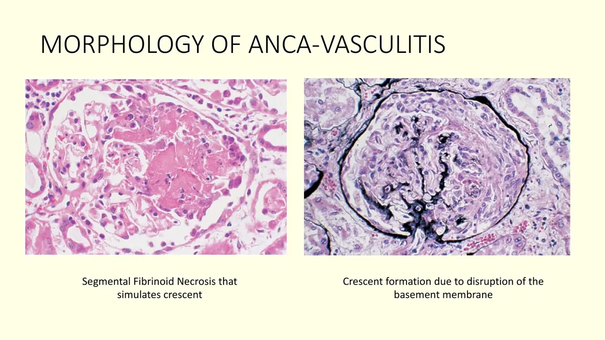
Slide 8. Kiri: segmental fibrinoid necrosis (merah muda homogen). Kanan: crescent yang terbentuk karena basement membrane terputus.
Definisi: sklerosis arteriol dan arteri kecil ginjal. Hipertensi dapat menjadi penyebab sekaligus akibat nephrosclerosis.
Etiologi: hipertensi ringan sampai sedang. Istilah lama benign nephrosclerosis, padahal tidak benar-benar jinak. Terjadi pada sekitar 15% pasien "benign hypertension". Dapat muncul pada usia tua tanpa hipertensi (dikaitkan dengan aging).
Klinis: biasanya tidak mengganggu fungsi ginjal. 15% berkembang menjadi progressive renal failure lalu ESRD. Karena hipertensi sangat sering, kelainan ini menyumbang 1/3 pasien ESRD. Paling sering dan agresif pada ras kulit hitam.
Makroskopik: ginjal bilateral atrofi, permukaan korteks finely granular (dapat ada parut yang lebih kasar), korteks menipis. Granularitas terjadi karena glomerulus sklerotik dan tubulus atrofi di sekitarnya berkelompok.
Mikroskopik glomerulus dan tubulus:
Banyak glomerulus tampak normal, sebagian menunjukkan perubahan iskemik.
Awal: penebalan kapiler glomerulus, GBM berkerut dan kolaps.
Lanjut: sel glomerulus hilang, deposisi kolagen dan matriks di Bowman space, akhirnya tuft terobliterasi (glomerulosclerosis).
Tubular atrophy, interstitial fibrosis, dan inflamasi kronik.
Mikroskopik pembuluh darah (bergantung pada ukuran pembuluh):
Arteri kecil (arteri arkuata): fibrotic thickening intima, replikasi elastica-like lamina, sebagian muskularis diganti jaringan fibrosa.
Arteri interlobular dan arteriol: medial hyperplasia.
Arteriol: penebalan hialin konsentris pada dinding, yaitu hyaline arteriolosclerosis, akibat ekstravasasi protein plasma melalui endotel yang rusak dan bertambahnya deposisi matriks membran basal.
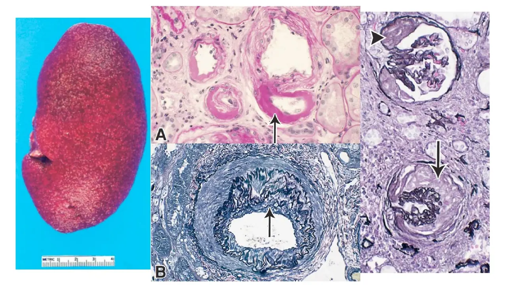
Slide 15. Permukaan ginjal granular halus, hialinisasi arteriol (A), penebalan intima dengan replikasi lamina elastika pada arteri (B), dan glomerulus yang mengalami sklerosis.
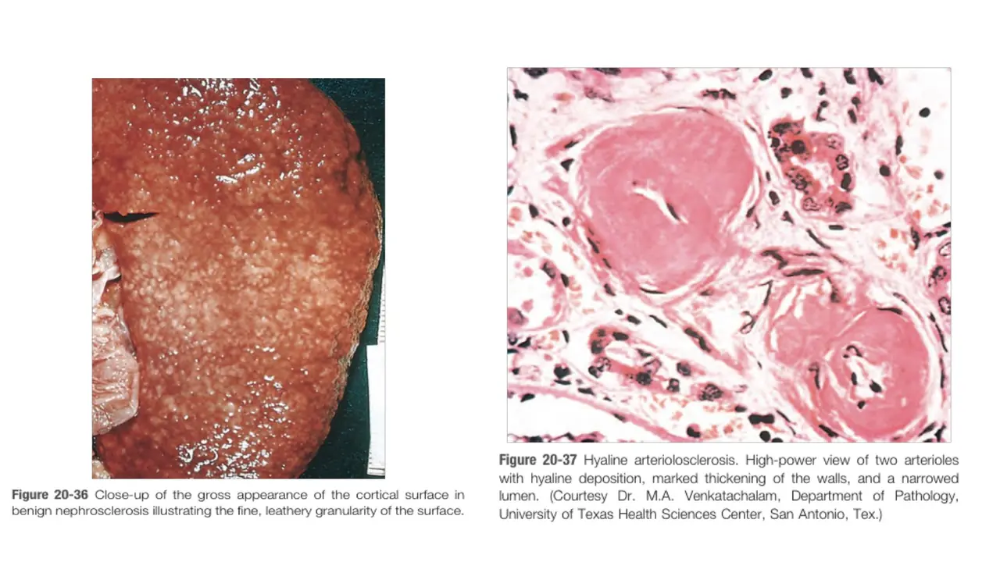
Slide 16. Kiri: fine, leathery granularity permukaan korteks. Kanan: dua arteriol dengan deposisi hialin, dinding sangat tebal, lumen sempit.
Malignant nephrosclerosis
Kelainan vaskular ginjal pada malignant atau accelerated hypertension. Jarang: 1% sampai 5% dari semua orang dengan tekanan darah tinggi.
Penyebab gagal ginjal yang sering pada systemic sclerosis.
Bentuk murni mengenai usia lebih muda, lebih sering pada pria dan ras kulit hitam. Lebih sering terjadi di atas hipertensi esensial, hipertensi sekunder, atau penyakit ginjal kronik yang sudah ada (terutama GN atau reflux nephropathy). Kadang timbul mendadak pada orang yang sebelumnya normotensif.
Tidak ada nilai tekanan darah spesifik. Kriteria: diastolik >130 mm Hg, perubahan vaskular retina, papilledema, dan gangguan fungsi ginjal.
Patogenesis: tekanan darah sangat tinggi ditambah vasokonstriksi mikrovaskular menimbulkan jejas endotel. Konstituen plasma bocor:
ke dinding arteriol yang rusak: fibrinoid necrosis;
ke intima arteri: edematous intimal thickening;
ke zona subendotel kapiler glomerulus: glomerulus berkonsolidasi.
Trombosis dapat menimbulkan focal renal cortical necrosis (infark).
Klinis: pria > wanita, sekitar usia 40. Sakit kepala, pusing, gangguan penglihatan, dapat menjadi ensefalopati. Hematuria dan proteinuria sering. Fungsi ginjal memburuk progresif bila menetap. Terapi antihipertensi agresif sering mengendalikan penyakit.
Morfologi:
Ukuran ginjal bervariasi dari kecil sampai membesar, bergantung lamanya benign hypertension sebelumnya.
Permukaan potong: mottled red and yellow, kadang ada infark korteks kecil.
Edematous (myxoid, mucoid) intimal expansion pada arteri dan fibrinoid necrosis arteriol, sering di atas gambaran hypertensive nephrosclerosis.
Glomerulus: dari kongesti kapiler, konsolidasi, sampai nekrosis. Kasus berat: trombosis dan focal ischemic cortical necrosis.
EM: materi electron-lucent memperlebar zona subendotel glomerulus. Gambaran identik dengan thrombotic microangiopathy lain.
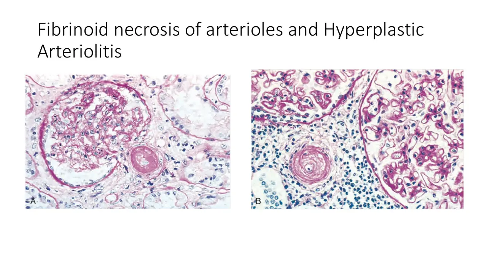
Slide 21. A: fibrinoid necrosis arteriol di samping glomerulus. B: hyperplastic arteriolitis dengan lapisan konsentris.Slide 22. Myointimal thickening dan hyperplastic arteriolosclerosis ("onion skinning") dengan lumen hampir tertutup.
Renal artery stenosis (RAS)
Penyempitan lumen arteri renalis yang cukup untuk menimbulkan perubahan iskemik ginjal dan hipertensi.
RAS unilateral menyebabkan 2% sampai 5% kasus hipertensi. Penting dikenali karena berpotensi sembuh dengan pembedahan.
Ginjal yang kehilangan suplai vaskular disebut Goldblatt kidney (Harry Goldblatt, percobaan pada anjing tahun 1934).
Hipertensi terjadi karena peningkatan renin, angiotensin II, dan aldosteron. Renin vena renalis ginjal iskemik meningkat, ginjal kontralateral normal.
Atherosclerosis (95%)
Penyebab lain
Penyebab tersering oklusi/stenosis arteri renalis besar (70-90% RAS). 33-39% bilateral, insidens gagal ginjal lebih tinggi. Pasien sering punya penyakit oklusif vaskular multifokal. Atheromatous plaques. Atheroemboli (cholesterol emboli).
Fibromuscular dysplasia, neurofibromatosis, coarctation of aorta, Moyamoya disease, Takayasu arteritis dan arteritis lain, dissecting aneurysm aorta atau arteri renalis, neonatal umbilical artery catheterization, iradiasi, retroperitoneal fibrosis, kompresi tumor, arteriovenous fistula, trauma.
Klinis: kenaikan tekanan darah ringan sampai sedang, dapat terdengar bruit di atas arteri renalis. Diagnosis memerlukan pencitraan seperti angiografi. Pada >1/2 pasien, revaskularisasi bedah, angioplasti, atau nefrektomi menyembuhkan hipertensi. Bila berlangsung lama, ginjal yang tidak terkena dapat mengalami hypertensive nephrosclerosis.
Renal atheroembolism: komplikasi aterosklerosis aorta berat. Debris ateroma masuk ke arteri renalis dan cabangnya, menimbulkan acute renal failure. Dapat spontan atau dipicu trauma. Tampak cholesterol clefts di lumen pembuluh, lesi awal dikelilingi materi ateroma atau trombus, memicu reaksi benda asing dan fibrosis dinding pembuluh.
Slide 27. Kiri: fibromuscular dysplasia tipe medial, media menebal fibrosa dan lumen stenotik. Kanan: atheroembolus menyumbat arteri arkuata dengan cholesterol clefts.
Thrombotic microangiopathy (TMA)
Patogenesis
Jalur HUS (typical dan atypical): kerusakan endotel membuat konstituen plasma masuk ke intima arteri, dinding arteriol, dan zona subendotel kapiler glomerulus. Lumen menyempit dan timbul iskemia. Permukaan endotel yang rusak memicu trombosis sehingga iskemia memburuk dan dapat terjadi focal ischemic necrosis.
Typical HUS: setelah diare akibat bakteri penghasil toksin, tersering E. coli (biasanya strain O157:H7). Toksin merusak sel endotel glomerulus.
Atypical HUS: tidak terkait diare. Kelainan genetik protein pengatur komplemen (terutama factor H, juga factor I dan membrane cofactor protein), autoantibodi terhadap protein pengatur komplemen (anti-factor H), atau keduanya.
Jalur TTP: defisiensi genetik atau didapat dari protease pemotong multimer von Willebrand factor (ADAMTS13). Multimer besar yang tidak terpotong menimbulkan agregasi trombosit dan trombosis mikrovaskular.
Darah yang melewati pembuluh yang rusak menimbulkan anemia hemolitik nonimun (Coombs-negative) dengan schistocytes dan trombositopenia. Sindrom ini disebut microangiopathic hemolytic anemia (MAHA).
EM: ekspansi electron-lucent zona subendotel karena insudasi protein plasma di bawah endotel yang rusak.
Fluorescence microscopy: fibrin dan protein plasma di dinding pembuluh yang rusak.
TTP: lesi mirip HUS, tetapi platelet-rich thrombi lebih banyak di kapiler glomerulus serta kapiler, arteriol, dan arteri kecil seluruh tubuh.
TMA kronik: arteriolar "onion-skinning" dan duplikasi GBM.
Slide 31. Pita lebar materi lusen di zona subendotel dan sel endotel yang bengkak menyempitkan lumen kapiler, disertai focal loss of foot processes.Slide 33. Fibrin stain: platelet-fibrin thrombi (merah) di kapiler glomerulus, khas untuk kelainan thrombotic microangiopathic.Slide 37. Arteriolar onion-skinning dan GBM duplication pada TMA kronik.
Klinis: HUS vs TTP
Semua MAHA memiliki anemia hemolitik mikroangiopati, trombositopenia, hipertensi, dan gagal ginjal dengan derajat berbeda. Penyakit penyerta (diare berdarah, SLE, systemic sclerosis) atau obat (mitomycin, cisplatin, VEGF inhibitor) memberi petunjuk penyebab.
Parameter
Typical HUS
TTP
Usia
Bayi dan anak kecil
Usia pertengahan
Jenis kelamin
Tidak ada predileksi
Lebih sering pada wanita
Variasi musim
Bentuk epidemik biasanya pada musim panas
Tidak ada
Prodromal diare
Ada
Tidak ada
Faktor predisposisi
Makanan terkontaminasi atau transmisi fecal-oral
Faktor nondiet
Keterlibatan ginjal
Ada pada semua kasus
Sering ringan, jarang dibiopsi
Hemorrhagic colitis
Biasanya ada
Jarang
Keterlibatan sistemik
Kasus berat, termasuk neurologis
Gejala neurologis dominan, multiorgan
Terapi
Suportif, antibiotik sering dikontraindikasikan
Plasmapheresis
Morbiditas dan mortalitas
Rendah, sebagian besar anak sembuh total
Tinggi, kambuh pada 20-30%
Rekurensi pascatransplantasi
Jarang
Tidak diketahui (tumpang tindih dengan aHUS)
Typical HUS: salah satu penyebab tersering acute renal failure pada anak. Diare hemoragik dan gagal ginjal progresif cepat. Walau perlu dialisis, fungsi ginjal biasanya pulih dalam beberapa minggu. Gangguan fungsi ginjal dapat muncul lagi setelah 15-25 tahun pada lebih dari 1/2 pasien.
Atypical HUS: lebih sering pada dewasa, tanpa diare, prognosis lebih buruk, sering kambuh dan lebih mungkin menjadi ESRD.
TTP: trombositopenia, purpura, demam, perubahan status mental. Perdarahan lebih berat daripada HUS. Plasmapheresis membuang anti-ADAMTS13, plasma infusion mengganti ADAMTS13 yang defisien.
Preeclampsia
Hipertensi, proteinuria, dan edema pada trimester ketiga kehamilan. Bila disertai kejang disebut eclampsia.
Patogenesis: kadar faktor antiangiogenik dari plasenta meningkat dalam sirkulasi ibu dan memicu perubahan endotel.
Morfologi: glomerulus membesar merata, sel endotel bengkak sehingga tuft tampak bloodless. EM: sel endotel bengkak berisi vakuol besar tidak teratur, vakuol juga ada pada podosit.
Tata laksana: bed rest dan antihipertensi untuk derajat ringan sampai sedang, kasus berat perlu induksi persalinan. Hipertensi dan proteinuria biasanya hilang 1-2 minggu setelah persalinan.
Slide 39. Sel endotel dan mesangial membengkak dan bervakuol sehingga lumen kapiler terobliterasi (Masson trichrome).
Azotemia: peningkatan blood urea nitrogen dan kreatinin, mencerminkan GFR turun.
Prerenal azotemia: hipoperfusi ginjal, GFR turun tanpa kerusakan parenkim.
Postrenal azotemia: aliran urin tersumbat di bawah ginjal.
Uremia: azotemia yang menimbulkan manifestasi klinis dan kelainan biokimia sistemik.
Acute kidney injury: acute tubular injury iskemik dan nefrotoksik
Definisi dan etiologi
Ischemic AKI: gagal ginjal berat tetapi berpotensi reversibel akibat gangguan fungsi epitel tubulus.
Ischemic prerenal AKI: reversibel, tanpa perubahan struktur epitel tubulus. Bila iskemia cukup berat sampai ada jejas histologis, disebut intrarenal ischemic AKI.
Iskemia luas dapat menimbulkan nekrosis nyata (ATN), tetapi sebagian besar tidak, sehingga istilah ATN sering merupakan misnomer.
Sel epitel tubulus bermetabolisme tinggi sehingga sangat peka terhadap kekurangan oksigen, ATP intrasel cepat habis.
Faktor yang membuat tubulus rentan toksin: luas permukaan reabsorpsi besar, sistem transpor aktif ion dan asam organik, kemampuan reabsorpsi, dan pemekatan toksin.
Jejas reversibel: cellular swelling, loss of brush border, blebbing, loss of polarity, cell detachment. Ireversibel: nekrosis dan apoptosis.
Loss of cell polarity adalah kejadian awal yang penting: Na+,K+ ATPase berpindah dari basolateral ke luminal sehingga natrium yang sampai ke tubulus distal meningkat.
Penurunan GFR terjadi karena: vasokonstriksi intrarenal, perubahan tonus arteriol oleh tubuloglomerular feedback, tekanan hidrostatik glomerulus turun, permeabilitas kapiler glomerulus (Kf) turun, obstruksi tubulus oleh debris sel, dan back-leak filtrat ke interstisium (edema interstisial).
Sel tubulus iskemik mengekspresikan sitokin dan molekul adhesi yang merekrut leukosit.
Slide 51. Tipe iskemik: nekrosis patchy, segmen pendek, terutama proximal straight tubule dan ascending limb. Tipe toksik: nekrosis luas sepanjang proximal convoluted tubule. Kedua tipe: cast di DCT dan collecting duct.Slide 52. Sel epitel yang lepas membentuk cast, menyumbat lumen, menaikkan tekanan intraluminal, dan menimbulkan backleak, ditambah konstriksi arteriol aferen.
Klinis
Penurunan GFR, kenaikan kreatinin serum dan BUN dalam jam sampai hari.
Fase klinis: oliguric (hari-minggu, GFR rendah, urin <400 mL/hari), early diuretic (hari-minggu, GFR rendah, urin meningkat), late diuretic (minggu, GFR normal kembali, urin meningkat).
Stadium AKIN: Stage 1 kreatinin serum naik 1.5-2.0 x baseline (atau ≥ 0.3 mg/dL). Stage 2 naik > 2.0-3.0 x baseline. Stage 3 naik > 3.0 x baseline atau ≥ 4.0 dengan kenaikan akut ≥ 0.5 mg/dL.
Morfologi
Ischemic ATI
Toxic ATI
Makroskopik
Ginjal bengkak, korteks pucat, medula kongesti
Tidak dirinci di slide
Distribusi
Fokal, paling nyata di tubulus proksimal dan thick ascending limb di outer medulla
Nekrosis epitel lebih luas, terbatas pada segmen yang paling peka terhadap toksin (tubulus proksimal)
Epitel
Epitel memipih, lumen melebar, brush border hilang (epithelial simplification). Nekrosis samar, berupa sel nekrotik tunggal yang lepas ke lumen sehingga membran basal tubulus terbuka fokal
Nekrosis nyata. Fase pemulihan: regenerasi dengan mitosis, sel dan inti membesar, cell crowding, arsitektur pulih sempurna
Cast
Brown granular casts di lumen tubulus distal dan urin
Pada hemoglobinuria/mioglobinuria: banyak cast merah-coklat berpigmen heme
Lain-lain
Glomerulus dan pembuluh normal, edema interstisial sering, vasa recta outer medulla kongesti berisi leukosit mononuklear. EM: lipatan membran basolateral berkurang
Slide 56. Ischemic ATI: sel epitel yang lepas dan cast di lumen tubulus (panah), glomerulus relatif utuh.Slide 59. Toxic ATI pada keracunan merkuri: nekrosis luas epitel tubulus proksimal, tubulus distal (D) relatif baik.
Tubulointerstitial nephritis (TIN)
Reaksi inflamasi tubulus dan interstisium. Sebagian besar disebabkan infeksi bakteri. Istilah interstitial nephritis dipakai untuk yang noninfeksi.
Akut: onset klinis cepat. Histologi: edema interstisial, infiltrasi leukosit di interstisium dan tubulus, nekrosis tubulus fokal.
Obat: sulfonamid, penisilin sintetik (methicillin, ampicillin), rifampicin, diuretik, NSAIDs.
Timbul 15 hari (2-40 hari) setelah pajanan.
Respons imun bersifat idiosinkratik, tidak bergantung dosis.
IgE serum meningkat, sel plasma dan basofil mengandung IgE: hipersensitivitas tipe 1. Infiltrat mononuklear atau granulomatosa dengan skin test positif terhadap hapten obat: tipe IV.
Klinis (keterangan gambar): demam, eosinofilia darah tepi, ruam kulit, oliguria, hematuria, proteinuria. Setengah kasus menjadi acute renal failure. Pada sepertiga kasus agen penyebab tidak diketahui.
Morfologi: interstisium edema, infiltrasi sel mononuklear (limfosit dan makrofag), dapat ada eosinofil dan neutrofil, granuloma interstisial dengan giant cells (methicillin, thiazides), tubulitis (limfosit menginfiltrasi tubulus), agregat sel plasma. Glomerulus biasanya normal, kecuali sebagian kasus akibat NSAIDs.
Slide 66. Interstisium meradang dengan eosinofil tersebar, neutrofil, dan sel mononuklear pada drug-induced interstitial nephritis.Slide 67. Agregat eosinofil dan inflamasi interstisial di antara tubulus.Slide 69. Agregat sel plasma dan tubulitis (limfosit di dalam epitel tubulus).
Acute interstitial nephritis
Acute tubular necrosis
Inflamasi interstisial (dengan eosinofil)
Penipisan brush border PAS positif
Tubulitis (limfosit di tubulus)
Nekrosis epitel tubulus
Infiltrasi granulomatosa
Akumulasi leukosit di vasa recta
Tubular cast (dapat granular)
Tubular cast (hialin, granular, tipe lain)
Nefropati terkait NSAIDs: hemodynamically induced acute renal failure, acute hypersensitivity interstitial nephritis, acute interstitial nephritis dengan minimal change disease, dan membranous glomerulonephritis dengan sindrom nefrotik.
Papillary necrosis dan analgesic nephropathy
Etiologi papillary necrosis
Iskemia medula: medula hanya menerima 8-10% aliran darah ginjal, pembuluh sebagian besar terminal. Faktor pemberat: oklusi lumen arteri kecil dan arteriol, vasokonstriksi akibat hambatan prostaglandin oleh NSAIDs, volume depletion, dehidrasi, congestive heart failure.
Penyakit ginjal kronik akibat asupan analgesik berlebihan, ditandai chronic tubulointerstitial nephritis dengan renal papillary necrosis.
Awalnya dikaitkan dengan phenacetin dan campurannya dengan aspirin, kafein, acetaminophen, dan kodein. Pasien biasanya minum campuran minimal dua analgesik antipiretik dalam jumlah besar. Wanita > pria.
Patogenesis: papillary necrosis diinduksi campuran aspirin dan phenacetin, biasanya bersama water depletion. Papillary necrosis terjadi lebih dulu, nefritis tubulointerstisial korteks adalah fenomena sekunder. Metabolit phenacetin (acetaminophen) merusak sel melalui covalent binding dan oxidative damage. Aspirin menghambat prostaglandin (vasodilator) sehingga memperberat iskemia.
Morfologi: ginjal normal atau sedikit mengecil. Korteks: tubulus hilang dan atrofi, fibrosis dan inflamasi interstisial, terutama akibat atrofi obstruktif karena kerusakan tubulus di papila.
Sebagian pasien mengalami transitional cell carcinoma pelvis renalis (keterangan gambar).
Slide 76. Potongan ginjal dengan papila nekrotik berwarna gelap pada analgesic nephropathy.Slide 77. Eksudat neutrofil membatasi papila nekrotik, dan neutrophil casts pada pielonefritis akut.
Pyelonephritis
Kelainan ginjal yang mengenai tubulus, interstisium, dan pelvis renalis. Akut: infeksi bakteri terkait UTI. Kronik: infeksi bakteri, vesicoureteral reflux, dan obstruksi.
Rute: hematogen (lebih jarang; Staphylococcus, E. coli) dan ascending infection (lebih sering).
Kolonisasi uretra distal dan introitus oleh bakteri coliform.
Dari uretra ke kandung kemih (kateterisasi uretra).
Multiplikasi di kandung kemih: obstruksi aliran atau disfungsi kandung kemih menyebabkan pengosongan tidak lengkap dan urin residu (BPH, tumor, batu, neurogenic bladder).
Vesicoureteral reflux: katup vesikoureter inkompeten sehingga urin kembali ke ureter.
Intrarenal reflux: tersering di kutub atas dan bawah ginjal, tempat papila berujung datar atau cekung (compound papilla).
Slide 82. Jalur hematogen (bakteremia) dan ascending (kolonisasi, masuk kandung kemih, vesicoureteral reflux, intrarenal reflux).Slide 86. Ureter intravesikal pendek memungkinkan refluks saat miksi. Compound papilla di kutub ginjal memungkinkan intrarenal reflux.
Acute pyelonephritis
Inflamasi supuratif akut ginjal.
Makroskopik: permukaan korteks dengan area putih keabuan berupa inflamasi dan abses.
Mikroskopik: patchy interstitial suppurative inflammation, agregat neutrofil intratubulus (neutrophil casts), nekrosis tubulus. Awalnya neutrofil terbatas di interstisium, lalu mengenai tubulus dan membentuk abses.
Glomerulus relatif resisten, tetapi nekrosis luas akhirnya merusaknya. Pielonefritis jamur sering mengenai glomerulus.
Komplikasi:
Papillary necrosis: terutama pada diabetes dan obstruksi. Biasanya bilateral, satu atau semua piramid. Ujung atau dua pertiga distal piramid nekrosis abu-putih sampai kuning. Mikroskopik: coagulative necrosis.
Pyonephrosis: obstruksi total atau hampir total, eksudat supuratif mengisi pelvis, kaliks, dan ureter.
Perinephric abscess: perluasan inflamasi supuratif menembus kapsul ke jaringan perinefrik.
Parut pielonefritis hampir selalu disertai inflamasi, fibrosis, dan deformasi kaliks serta pelvis di bawahnya.
Slide 88. Permukaan korteks dengan area putih keabuan (abses) dan infiltrat neutrofil padat di interstisium dan tubulus.Slide 91. Abses kecil kekuningan di permukaan ginjal dan gambaran abses dengan nekrosis.Slide 93. Pyonephrosis: batu staghorn di kaliks yang melebar, korteks dan medula tersisa tipis.
Chronic pyelonephritis
Kelainan tubulointerstisial kronik dengan inflamasi kronik dan parut ginjal yang disertai kelainan kaliks dan pelvis.
Dua bentuk: reflux nephropathy (lebih sering; terjadi pada masa kanak-kanak akibat infeksi saluran kemih di atas vesicoureteral reflux kongenital dan intrarenal reflux) dan chronic obstructive pyelonephritis (obstruksi menambah atrofi parenkim).
Refluks: parut di kutub ginjal. Obstruksi: infeksi semua papila, parut difus, korteks menipis, ureter melebar.
Makroskopik: ginjal berparut tidak teratur. Hallmark: parut kortikomedular kasar dan diskret di atas kaliks yang melebar, tumpul, atau deformasi.
Mikroskopik: tubulus atrofi di sebagian area dan hipertrofi atau dilatasi di area lain. Tubulus melebar berepitel pipih berisi colloid casts (thyroidization). Peralihan mendadak ke parenkim berparut, inflamasi pelvis.
Slide 96. Refluks menimbulkan parut di kutub (polar scar). Obstruksi menimbulkan parut difus dan penipisan korteks.Slide 97. A: permukaan dengan parut kasar tidak teratur. B: potongan dengan kaliks melebar dan tumpul di bawah parut.Slide 98. Parut korteks dan batas tegas antara parenkim berparut dengan parenkim yang masih baik.
Obstruksi saluran kemih dan hydronephrosis
Obstruksi meningkatkan kerentanan terhadap infeksi dan pembentukan batu. Dapat mendadak atau perlahan, parsial atau komplet, unilateral atau bilateral, di tingkat mana pun.
Hydronephrosis: dilatasi pelvis dan kaliks dengan atrofi progresif ginjal akibat obstruksi aliran urin. Makroskopik: ginjal membesar ringan sampai masif.
Slide 102. Hydronephrosis: pelvis dan kaliks sangat melebar, parenkim ginjal menipis.
Nefropati metabolik dan batu
Urate nephropathy
Chronic urate nephropathy: deposit kristal monosodium urate di tubulus dan interstisium.
Acute urate nephropathy: akibat cell turnover meningkat, misalnya tumor lysis syndrome. Kristal asam urat mengendap pada pH asam collecting duct, menyumbat, dan menimbulkan acute renal failure.
Hiperurisemia juga terjadi karena gangguan ekskresi (diuretik tertentu jangka panjang) atau gangguan sekresi tubulus proksimal pada keracunan timbal kronik (saturnine gout).
Slide 105. A: deposit urat sebagai golden streaks di medula. B: kristal asam urat di lumen tubulus (frozen section).
Nephrocalcinosis
Hiperkalsiuria menimbulkan nephrocalcinosis, nephrolithiasis, atau keduanya. Akibat: kemampuan pemekatan buruk, salt wasting, renal tubular acidosis.
Hiperkalsemia menimbulkan metastatic calcification. Dystrophic calcification terjadi di tempat jejas parenkim.
Penyebab hiperkalsemia: resorpsi tulang meningkat (renal osteodystrophy, hiperparatiroid primer, neoplasma penghasil parathormone, neoplasma osteolitik dan metastasis) dan absorpsi usus meningkat (idiopathic hypercalcemia, vitamin D excess, milk-alkali syndrome, sarcoidosis).
Acute phosphate nephropathy: komplikasi jarang dari phosphate bowel-cleansing. Faktor risiko: usia tua, insufisiensi ginjal, ACE inhibitor atau ARB. AKI muncul beberapa minggu kemudian. Deposit calcium phosphate di tubulus distal dan collecting duct dengan fibrosis interstisial dan inflamasi kronik.
Renal stones
Nephrolithiasis: batu di sistem kolektivus ginjal. Urolithiasis: batu di bagian lain saluran kemih. Pria > wanita, usia 20-30 tahun.
Dapat menyebabkan hydronephrosis berat dan pielonefritis, mengikis mukosa (hematuria), dan renal colic saat batu masuk ureter.
Jenis batu
Persentase
Keterangan
Calcium oxalate dan phosphate
70
Idiopathic hypercalciuria (50%), hypercalciuria dan hypercalcemia (10%), hyperoxaluria (5%), hyperuricosuria (20%), hypocitraturia, tanpa kelainan metabolik (15% sampai 20%)
Magnesium ammonium phosphate (struvite)
5-10
Uric acid
5-10
Terkait hiperurisemia, hiperurikosuria, idiopatik (50% batu urat)
Cystine
1-2
Lain-lain
±5
Slide 110. Batu besar terimpaksi di pelvis renalis, dan batu bercabang mengisi kaliks yang melebar.
Penyakit kistik ginjal
Kelompok heterogen: herediter, developmental, dan didapat. Dapat dikira tumor ganas. Pada bentuk herediter, defek dasar ada pada cilia-centrosome complex sel epitel tubulus.
Simple cyst dan acquired cystic kidney disease
Simple cyst: temuan postmortem yang sering. Tunggal atau multipel, diameter 1 sampai 5 cm, translusen, berdinding abu-abu licin mengilap, berisi cairan jernih, biasanya di korteks. Mikroskopik: selapis epitel kuboid atau kuboid pipih.
Dibedakan dari tumor: kontur licin, hampir selalu avaskular, berisi cairan.
Acquired cystic kidney disease: pada ESRD dengan dialisis bertahun-tahun. Kista multipel di korteks dan medula, dapat berdarah (hematuria). Risiko neoplasma ginjal >100 kali populasi umum.
Kista multipel yang membesar di kedua ginjal dan menghancurkan parenkim di antaranya. 1 dari 500 sampai 1000 orang, 10% kasus chronic kidney disease.
PKD1 (85% sampai 90%): lengan pendek kromosom 16, menyandi polycystin-1. Mutasi mengganggu mechanosensing dan sinyal kalsium, memicu proliferasi dan sekresi epitel tubulus sehingga terbentuk kista.
PKD2 (10% sampai 15%): kromosom 4, menyandi polycystin-2 (kanal membran permeabel kalsium, juga di silia). Progresi lebih lambat daripada PKD1.
Klinis: biasanya tanpa gejala sampai dekade keempat. Ginjal besar teraba, flank pain atau rasa berat, gross hematuria intermiten, hipertensi, infeksi saluran kemih. Saccular aneurysm circle of Willis pada 10% sampai 30% pasien. ESRD sekitar usia 50 tahun. Kematian karena uremia atau komplikasi hipertensi.
Makroskopik: ginjal sangat membesar dengan banyak kista melebar. Dapat disertai kista hati.
Defek: mutasi gen PKHD1 yang menyandi fibrocystin.
Bentuk perinatal dan neonatal tersering, bayi dapat cepat meninggal karena gagal hati atau ginjal. Yang bertahan mengalami congenital hepatic fibrosis.
Makroskopik: kista lebih kecil dan saluran melebar tegak lurus terhadap permukaan korteks.
Slide 118. A dan B: ADPKD dengan kista besar di seluruh ginjal. C: ARPKD dengan kista kecil dan saluran radial. D: kista hati pada PKD dewasa.
Cystitis
Etiologi dan klinis
Wanita > pria karena uretra lebih pendek. Pielonefritis bakterial sering didahului infeksi kandung kemih.
Agen: coliform, terutama Escherichia coli, lalu Proteus, Klebsiella, Enterobacter. Tuberculous cystitis hampir selalu sekuel TB ginjal. Candida albicans dan cryptococcus pada imunosupresi atau antibiotik jangka panjang. Juga Schistosoma haematobium, adenovirus, Chlamydia, Mycoplasma.
Tersering pada wanita. Nyeri suprapubik intermiten, frequency, urgency, hematuria, dysuria. Sistoskopi: fisura dan perdarahan pungtata (glomerulations). Defek hemoragik pada mukosa edema disebut Hunner ulcer.
Malakoplakia
Reaksi inflamasi kronik khas akibat defek fungsi fagosit pada infeksi bakteri kronik (E. coli, kadang Proteus). Lebih sering pada resipien transplantasi. Plak lebar dan datar, makrofag besar dengan sitoplasma granular PAS positif dan Michaelis-Gutmann bodies.
Polypoid cystitis
Akibat iritasi mukosa, tersering karena indwelling catheter. Tonjolan polipoid lebar karena edema submukosa. Dapat dikira papillary urothelial carcinoma.
Cystitis glandularis dan cystitis cystica
Brunn nests tumbuh ke lamina propria. Metaplasia kuboid atau kolumnar (glandularis) atau ruang kistik berlapis urotel pipih (cystica). Sering bersamaan, temuan insidental.
Slide 125. Acute cystitis: fokus perdarahan pada mukosa (A, B) dan infiltrat sel polimorfonuklear (C).Slide 126. Kiri: chronic cystitis dengan limfosit dan sel plasma di lamina propria. Kanan: Hunner ulcer pada interstitial cystitis.Slide 127. Malakoplakia: makrofag PAS positif dengan Michaelis-Gutmann bodies (panah) dan plak datar lebar pada mukosa.
Mnemonik PA 2: Vaskular, Tubulus, Interstisium
Gabung semua, vaskular, tubulus, dan interstisium ginjal:
Vaskular A-H-T-P: ANCA vasculitis, Hipertensi (nefrosklerosis dan stenosis arteri renalis), TMA (HUS/TTP), Preeklampsia.
Analgesik: Papila dulu, korteks kemudian: aspirin menghambat prostaglandin sehingga papila iskemik, lalu nefritis tubulointerstisial.
Kista: Dialisis Disumbat, Herediter rusak silia: kista didapat karena obstruksi tubulus (fibrosis atau kristal oksalat); ADPKD dewasa, ARPKD anak.
ANCA vasculitis (pauci-immune crescentic GN)
Pauci = Pas-pasanPauci-immune = imun Pas-pasan: imunofluoresensi hampir kosong, tanpa deposit anti-GBM atau kompleks imun, tetapi ada crescent.
Tiga vaskulitisGranuloma di Gerbang napas, Eosinofil bikin Engap, Mikroskopik Murni: GPA granuloma saluran napas, EGPA eosinofilia + asma, MPA tanpa asma dan tanpa granuloma.
Nefrosklerosis hipertensif: benigna vs maligna
Benign vs MalignantBenign = Bening (hialin homogen di dinding arteriol) vs Malignant = Mengupas bawang (onion skinning) + fibrinoid necrosis.
Kriteria malignaMaligna = 130 + Mata + Ginjal: diastolik >130 mm Hg, mata (perubahan vaskular retina, papilledema), dan gangguan fungsi ginjal.
Renal artery stenosis (RAS)
A-FStenosis A-F: Aterosklerosis (tersering) dan Fibromuscular dysplasia, dua jawaban gambaran stenosis arteri renalis.
GoldblattGinjal Goldblatt Getol renin: ginjal iskemik memproduksi renin sehingga RAA naik; hipertensinya reversibel bila stenosis diatasi.
Thrombotic microangiopathy: HUS vs TTP
HUS = Habis Usus SakitHUS = Habis Usus Sakit: typical HUS muncul setelah diare berdarah E. coli O157:H7 pada anak, ginjal paling terkena.
TTP = Tidak TerpotongTTP = Tidak Terpotong, Pikiran kacau, Plasmapheresis: ADAMTS13 defisien sehingga multimer vWF tidak terpotong, neurologis dominan, terapi plasmapheresis.
Endotel vs TrombositHUS mulai dari Endotel, TTP mulai dari Trombosit: jejas endotel primer pada typical HUS; aktivasi/agregasi trombosit primer pada TTP. Mutasi komplemen = HUS atipikal.
Preeklampsia
Bumil bengkakBumil Bengkak, endotel ikut Bengkak: preeklampsia = sel endotel glomerulus membengkak (endoteliosis).
BloodlessBloodless, bukan Bloody: endotel bengkak menyempitkan lumen sehingga glomerulus pucat, bukan lumen kongestif dan bukan penebalan seluruh dinding kapiler (itu membranosa).
Acute tubular injury (ATI) iskemik dan nefrotoksik
Tipis-Bocor-SumbatATI = Tipis, Bocor, Sumbat: epitel memipih, filtrat bocor balik (backleak), lumen tersumbat cast, maka aliran tubulus dan urin turun.
Tekanan naikBocor ke luar, tekanan naik: backleak membuat interstisium edema sehingga tekanan interstisial MENINGKAT. Pilihan tekanan interstisial menurun selalu salah.
Renin naikGinjal iskemik teriak renin: renin-angiotensin NAIK, PGI2 dan NO turun, hasilnya vasokonstriksi intrarenal.
Iskemik vs toksikIskemik = Titik-titik, Toksik = Total proksimal: ATI iskemik fokal/patchy dengan epitel memipih; ATI toksik nekrosis luas di tubulus proksimal.
Tubulointerstitial nephritis dan drug-induced interstitial nephritis
Trias alergiDER: Demam, Eosinofilia, Ruam kulit, sekitar 2 minggu (15 hari) setelah mulai obat.
Papila duluPapila Pertama, korteks kemudian: nekrosis papila terjadi lebih dulu, nefritis tubulointerstisial korteks menyusul (pilihan yang membalik urutan = salah).
Aspirin vs fenasetinAspirin = Aliran, Fenasetin = Fisik sel: aspirin menghambat prostaglandin vasodilator sehingga papila iskemik; metabolit fenasetin merusak sel secara kovalen dan oksidatif.
Pielonefritis, pionefrosis, dan hidronefrosis
Hidro-Pio-PieloHidro = Hampa air (pelviokaliks melebar + parenkim atrofi), Pio = Pus (pelvis, kaliks, ureter penuh eksudat supuratif), Pielo kronik = Parut (parut kortikomedular + kaliks tumpul).
TiroidisasiGinjal menyamar jadi tiroid: tubulus melebar berisi colloid cast mirip folikel tiroid, khas pielonefritis kronik.
Akut vs kronikAkut = Abses neutrofil, Kronik = Komplit semua kompartemen: kronik lanjut mengenai tubulus, interstisium, pelviokaliks, pembuluh, dan glomerulus.
Nefropati metabolik dan batu ginjal
Tulang vs ususTulang ROboh vs Usus rakus: resorpsi tulang (Renal Osteodystrophy, hiperparatiroid, tumor PTH/osteolitik) vs absorpsi usus (vitamin D, milk-alkali, sarkoidosis, idiopatik).
Kalsium juaraKalsium Kampiun 70: batu kalsium 70%, struvit dan asam urat masing-masing 5-10%, sistin paling jarang 1-2%.
Penyakit kistik ginjal
Dominan DewasaDominan = Dewasa, Resesif = Rewel bayi: ADPKD tipe dewasa (PKD1/PKD2), ARPKD tipe anak (PKHD1).
KromosomSatu-Enam belas, Dua-Empat: PKD1 di kromosom 16 (berawal angka 1), PKD2 di kromosom 4 (2+2).
Kista dialisisDialisis = Disumbat: kista didapat karena tubulus tersumbat fibrosis interstisial atau kristal oksalat; silia dan polycystin/fibrocystin adalah mekanisme herediter.
Cystitis
TriasFiND: Frequency, Nyeri suprapubik, Dysuria.
MalakoplakiaMalakoplakia = Michaelis-Gutmann (M bertemu M): makrofag PAS positif berisi badan Michaelis-Gutmann.
Kidney tumor: neoplasma yang berasal dari komponen parenkim ginjal mana pun: tubular epithelial cells, stroma/mesenchymal, atau primitive tumor.
Urothelial carcinoma: neoplasma dari sel urotel yang melapisi pelviokalises ginjal, ureter, kandung kemih, dan uretra.
Prostatic adenocarcinoma (dibedakan dari prostatic hyperplasia): berasal dari epitel luminal prostat. Prostat memeluk uretra pria sehingga menimbulkan gejala berkemih (LUTS).
Tumor
Gejala klinis
Renal tumor
SOL di abdomen (early satiety, konstipasi), flank pain, hematuria. Lain-lain: gejala paraneoplastik, anemia, berat badan turun, nyeri abdomen, anoreksia, demam
Urothelial Ca
Hematuria
Prostatic adenocarcinoma
LUTS
Spektrum penyakit (klasifikasi WHO)
Renal cell tumours: clear cell renal tumours (clear cell RCC, multilocular cystic renal neoplasm of low malignant potential), papillary renal tumours (papillary adenoma, papillary RCC), oncocytic and chromophobe renal tumours (oncocytoma, chromophobe RCC), collecting duct carcinoma, other renal tumours, dan molecularly defined renal carcinomas.
Lainnya: metanephric tumours, mixed epithelial and stromal renal tumours, renal mesenchymal tumours (dewasa misalnya angiomyolipoma/PEComa, anak misalnya congenital mesoblastic nephroma, rhabdoid tumour, clear cell sarcoma), dan embryonal neoplasms (nephrogenic rests, nephroblastoma).
Tumor saluran kemih: urothelial tumours non-invasive (urothelial papilloma, inverted urothelial papilloma, papillary urothelial neoplasm of low malignant potential, non-invasive papillary urothelial carcinoma low-grade dan high-grade, urothelial carcinoma in situ) dan invasive urothelial carcinoma. Selain itu squamous cell, glandular, urachal, urethral, dan Mullerian type neoplasms.
Kotak merah di slide (fokus kuliah): clear cell RCC, nephroblastoma, urothelial tumours, prostatic acinar adenocarcinoma.
Neoplasma ginjal dibagi menjadi benign (renal epithelial tumor, non epithelial tumor, jarang menimbulkan masalah klinis) dan malignant (pada anak dan pada dewasa).
Renal cell carcinoma (RCC)
Definisi dan epidemiologi
Tumor ganas yang berasal dari epitel tubulus ginjal (korteks). Nama lain: hypernephroma, Grawitz tumor, adenocarcinoma.
90% tumor ganas ginjal pada dewasa (slide lain: 80-85% dari seluruh tumor ganas ginjal), 2-3% dari seluruh tumor ganas dewasa.
Dekade ke-6 sampai ke-7. Pria > wanita, rasio 2:1.
Insidens rendah di Afrika dan Asia, tinggi di Amerika Latin. Di Eropa dan dunia naik 2% per tahun, di RSCM meningkat dalam 3 tahun terakhir.
Faktor etiologi
Gaya hidup: tobacco smoking (39% kasus pria), obesity (BMI >29 kg/m2: insidens 2x normal, overweight BMI 25-30 kg/m2: 50% lebih tinggi), dan hypertension.
Lain-lain: arsenic, cadmium, organic solvent, estrogen, pestisida, fungal toxin, phenacetin, family history of low birth bodyweight, diet rendah buah dan sayur, obat antihipertensi.
30 kali lebih tinggi pada polycystic disease sebagai komplikasi dialisis kronik.
Klinis
Trias: hematuria, flank pain (costovertebral pain), dan massa abdomen yang teraba. Trias lengkap hanya pada 10% kasus.
40% tanpa trias, datang dengan keluhan sistemik: berat badan turun, nyeri abdomen, anoreksia, demam.
50% menunjukkan peningkatan BSR. 33% anemia normositik yang tidak berhubungan dengan hematuria.
Cenderung bermetastasis luas sebelum menimbulkan gejala atau tanda lokal. Lokasi tersering: paru (>50%), tulang (33%), kelenjar getah bening regional, hati dan adrenal, otak.
5-year survival rate 45 sampai 70% bila tanpa metastasis jauh. Bila ada invasi vena renalis atau perluasan ke lemak perirenal turun menjadi kira-kira 15-20%.
Terapi: nephrectomy.
Faktor prognostik
Kelompok
Isi
Anatomic
Ukuran tumor, invasi pembuluh darah, invasi kapsul ginjal, keterlibatan adrenal, keterlibatan kelenjar getah bening, metastasis jauh
Penanda untuk riset, bukan rutin: VEGF, Ki67 (proliferasi), p53, E cadherin, CD44 (adhesi sel). Untuk diagnostik, RCC punya imunoprofil yang berbeda-beda
TNM staging tumor ginjal
Kategori
Keterangan
T1a
4 cm atau kurang, organ-confined
T1b
>4 sampai 7 cm, organ-confined
T2
Lebih dari 7 cm, organ-confined
T3a
Invasi langsung ke lemak perinefrik, termasuk lemak sinus renalis, atau kelenjar adrenal, tetapi masih di dalam Gerota's fascia
T3b
Tumor gross di vena renalis, cabang segmentalnya (mengandung otot), atau vena cava di bawah diafragma
T3c
Tumor gross di vena cava di atas diafragma, atau menginvasi dinding vena cava
T4
Tumor melewati Gerota's fascia
N
N0 tanpa metastasis KGB regional, N1 satu KGB, N2 lebih dari satu KGB regional. Lateralitas tidak memengaruhi N. Diseksi KGB minimal delapan KGB
M
M0 tanpa metastasis jauh, M1 metastasis jauh
WHO/ISUP grading untuk ccRCC dan pRCC
Grade
Deskripsi
1
Nukleoli tidak ada atau tidak mencolok dan basofilik pada pembesaran x400
2
Nukleoli mencolok dan eosinofilik pada x400, terlihat tetapi tidak prominen pada x100
Slide 26. Makroskopik RCC: massa besar di kutub ginjal dengan penampang pucat beraneka warna dan bercak perdarahan.Slide 27. Clear cell RCC: massa berbatas tegas, penampang kuning-jingga dengan rongga kistik.
Slide 28. Clear cell RCC: sarang sel bersitoplasma jernih dengan jaringan pembuluh darah halus di antaranya.Slide 29. Pembesaran lebih tinggi: sitoplasma jernih, batas sel tegas, inti bulat, perhatikan nukleolus untuk grading.
Tumor pediatrik: Nephroblastoma (Wilms' tumor)
Epidemiologi dan sindrom terkait
Paling sering usia 2-5 tahun, kecuali pada 3 bulan pertama kehidupan, sangat jarang pada dewasa. Median usia saat diagnosis 3 tahun.
Tiga kelompok malformasi kongenital yang berhubungan kuat:
Beckwith-Wiedemann syndrome: pembesaran organ tubuh tertentu (tiroid, ginjal) atau seluruh segmen tubuh (macroglossia, organomegaly, hemihypertrophy, neonatal hypoglycemia, embryonal tumors).
60% tumor Wilms bilateral dan 4% unilateral berhubungan dengan malformasi kongenital.
Genetik
WT1 di kromosom 11p13: mengode faktor transkripsi yang penting untuk perkembangan ginjal dan gonad normal.
WT2 di kromosom 11p15: terkait Beckwith-Wiedemann syndrome.
Sel tumor menunjukkan imunoreaktivitas inti terhadap WT1.
Morfologi
Makroskopik: massa besar, berbatas tegas (well circumscribed), penampang berlobus. 10% bilateral/multisentrik. Penampang lunak, homogen, tan sampai abu-abu, dengan fokus perdarahan, degenerasi kistik, dan nekrosis.
Mikroskopik trifasik:
Blastemal: lembaran small blue cells, sel bulat kecil dengan sitoplasma sedikit, inti tumpang tindih, mitosis aktif.
Mesenchymal/stromal: dapat menunjukkan diferensiasi otot rangka.
Epithelial: tubulus/glomeruloid.
Menyerupai zona nefrogenik primitif ginjal fetus.
Anaplastic histology: inti membesar dan hiperkromatik.
Slide 35. Wilms tumor makroskopik: massa besar berbatas tegas dengan penampang berlobus pada ginjal anak.Slide 36. Mikroskopik menyerupai zona nefrogenik fetus: struktur glomeruloid primitif dan stroma selular, disertai keterangan WT1 dan WT2.
Slide 37. Pola trifasik khas: komponen blastemal, tubular, dan stroma.Slide 38. Komponen blastemal: sel bulat kecil, sitoplasma sedikit, inti tumpang tindih, aktif bermitosis.Slide 39. Komponen epitelial membentuk struktur tubular.
Slide 40. Diferensiasi otot rangka pada komponen stroma.Slide 42. Histologi anaplastik: inti membesar dan hiperkromatik (sisi kiri).
Klinis dan prognosis
Hematuria, massa abdomen teraba. Demam dan nyeri abdomen lebih jarang. Hipertensi akibat peningkatan aktivitas renin pada 25% kasus.
Prognosis baik: 2-year survival rate 90%, cure rate keseluruhan lebih dari 80%.
Terapi: nephrectomy dan kemoterapi.
Tumor metastatik ke ginjal
Neoplasma ganas non-renal yang mengenai ginjal melalui penyebaran hematogen.
Jarang: ginjal adalah lokasi metastasis ke-8 tersering dari keganasan primer non-renal. Biasanya terjadi pada metastasis luas dari karsinoma, misalnya primer paru, saluran cerna, atau payudara.
Sering menyerupai tumor ginjal primer bila: unilateral, unifokal, tanpa keterlibatan organ lain, dan jarak waktu lama sejak diagnosis penyakit primer.
Pada pasien dengan keganasan lain, tumor ginjal primer sinkron insidental sama seringnya dengan metastasis.
Makroskopik: massa multipel, ireguler, bilateral, banyak dengan lekukan sentral (umbilikasi) akibat nekrosis sentral, sebagian gelap karena perdarahan. Karena fokal, parenkim sisa cukup untuk mencegah gagal ginjal. Hematuria dan flank pain dapat terjadi pada massa yang besar.
Contoh kasus: pria 68 tahun, hematuria dan gagal ginjal, diduga glomerulonefritis akut, biopsi menunjukkan glomerulus terlibat luas oleh metastasis non-small cell lung carcinoma.
Slide 44. Metastasis ke ginjal: nodul multipel bilateral dengan umbilikasi sentral dan sebagian hemoragik.Slide 46. Metastasis melanoma: nodul hitam multipel pada ginjal dan sel tumor yang menginfiltrasi di sekitar glomerulus.
Papillary urothelial carcinoma, grade 2 dan grade 3
Epidemiologi
Sekitar 90% dari seluruh tumor kandung kemih.
Banyak yang multifokal saat ditemukan, dapat muncul di mana pun ada urotel, dari pelvis renalis sampai uretra distal.
Pria : wanita 3:1. Lebih tinggi di negara maju dan di penduduk perkotaan. Sekitar 80% pasien berusia 50 sampai 80 tahun.
Dengan sedikit pengecualian, kanker kandung kemih tidak bersifat familial.
Faktor risiko
Merokok: meningkatkan risiko 3 sampai 7 kali. 50% dan 80% kanker kandung kemih pada pria berkaitan dengan rokok. Cerutu, pipa, dan smokeless tobacco risikonya lebih kecil.
Pajanan industri aryl amines, terutama 2-naphthylamine dan senyawa terkait. Kanker muncul 15 sampai 40 tahun setelah pajanan pertama.
Low-grade, noninvasive. RAS bekerja di hilir receptor tyrosine kinase seperti FGFR3
Kehilangan materi genetik kromosom 9 (30% sampai 60% tumor)
Tumor papiler noninvasif superfisial, kadang tumor datar noninvasif. Mungkin kejadian awal. Delesi 9p (9p20): gen p16/INK4a (cyclin-dependent kinase inhibitor) dan ARF (memperkuat fungsi p53). Delesi 9q: PTCH (regulator negatif jalur Hedgehog) dan TSC1 (regulator negatif sinyal mTOR)
Morfologi
Empat pola morfologik tumor kandung kemih: papilloma-papillary carcinoma, invasive papillary carcinoma, flat noninvasive carcinoma (CIS), dan flat invasive carcinoma. Yang dinilai pada urotel: maturasi, polaritas sel, susunan sel, rasio N/C, dan kromatin.
Slide 53. Empat pola: papilloma-papillary carcinoma, invasive papillary carcinoma, flat noninvasive carcinoma (CIS), flat invasive carcinoma.Slide 55. Potongan kandung kemih: tumor papiler besar (atas) dan neoplasma papiler kecil multifokal (bawah).
Slide 57. Kiri papilloma: fronds papiler kecil dilapisi urotel tampak normal. Kanan high-grade papillary urothelial carcinoma: atipia sitologik nyata.Slide 58. Low-grade papillary urothelial carcinoma: susunan teratur, lapisan lebih tebal dari papilloma, inti hiperkromatik tersebar dan mitosis (panah).Slide 59. A urotel normal: inti seragam dan lapisan umbrella cell (panah). B flat CIS: banyak sel berinti besar dan pleomorfik.
Keterlibatan orifisium ureter menyebabkan pielonefritis atau hidronefrosis.
Apa pun grade-nya, cenderung timbul tumor baru setelah eksisi, dan rekurensi dapat ber-grade lebih tinggi.
Risiko rekurensi dan progresi bergantung pada ukuran tumor, stage, grade, multifokalitas, laju rekurensi sebelumnya, serta displasia dan/atau CIS di mukosa sekitar.
Prognosis bergantung pada grade histologik dan stage saat diagnosis:
Papilloma, PUNLMP, dan low-grade papillary UC: 10-year survival rate 98%, hanya sedikit (<10%) yang progresi ke lesi grade lebih tinggi.
UC invasif ke lamina propria: mortalitas 30%.
Squamous cell carcinoma dan adenocarcinoma: prognosis lebih buruk.
Tantangan klinis dan diagnosis
Tantangannya adalah deteksi dini dan follow-up yang adekuat. 50% kanker kandung kemih invasif datang sudah muscle-invasive, prognosis buruk.
Tumor stadium lebih awal: sistoskopi dan biopsi adalah andalan diagnosis, dilanjutkan sistoskopi surveilans untuk mencari rekurensi.
Sitologi urin, dan FISH untuk aneuploidi kromosom 3, 7, 17 serta delesi 9p. Keduanya sering gagal mengenali neoplasma low-grade.
Terapi
Bergantung pada grade, stage, dan apakah lesi datar atau papiler.
Tumor papiler low-grade kecil dan terlokalisasi: reseksi transurethral, lalu follow-up sistoskopi dan sitologi urin seumur hidup.
Risiko tinggi rekurensi dan/atau progresi: instilasi intravesika BCG (strain Mycobacterium bovis yang dilemahkan), memicu reaksi radang lokal yang menghancurkan tumor.
Radical cystectomy bila: (1) tumor menginvasi muscularis propria, (2) CIS atau kanker papiler high-grade yang refrakter terhadap BCG, (3) CIS meluas ke uretra pars prostatika dan duktus prostat, tempat BCG tidak dapat berkontak dengan sel neoplastik.
Kanker kandung kemih metastatik berespons terhadap kemoterapi tetapi tidak dapat disembuhkan dengan agen saat ini.
Tumor sekunder kandung kemih
Paling sering akibat perluasan langsung dari lesi primer organ sekitar: serviks, uterus, prostat, rektum.
Limfoma: sebagai bagian penyakit sistemik, jarang primer.
Prostatic adenocarcinoma
Anatomi dan histologi normal
Lokasi: di dalam pelvis, anterior dari rektum.
Anterior fibromuscular stroma menutupi permukaan anterior-medial.
Zona: peripheral (70% volume), central (25% volume), dan transition zone (5%).
Sel neuroendokrin tidak terlihat pada sediaan H&E rutin jaringan prostat jinak. Pada sebagian kanker, sel neuroendokrin punya granul sitoplasma merah, disebut Paneth cell-like neuroendocrine differentiation.
Slide 65. Potongan koronal prostat: letak peripheral zone dan transition zone terhadap uretra proksimal dan verumontanum, serta anterior fibromuscular layer.
Ciri adenokarsinoma prostat
Komponen
Ciri
Nuclei
Inti membesar, hiperkromatik atau nukleoli prominen. Pleomorfisme lebih sedikit. Mitosis dan apoptotic bodies dapat ditemukan
Lumina
Struktur eosinofilik, padat, seperti kristal (crystalloids). Sekret intraluminal merah muda, aselular, padat, atau blue-tinged mucin. Tidak ada corpora amylacea (jarang)
Stroma
Karsinoma prostat biasa TIDAK memicu respons radang stroma atau desmoplastik yang nyata
Contoh kasus RSCM (HE 400x): sel tumor berinti pleomorfik, bulat-oval, berkromatin kasar, sebagian hiperkromatik, sebagian vesikuler disertai anak inti mencolok, sitoplasma eosinofilik.
Imunohistokimia
p63: pulasan inti positif pada sel basal kelenjar prostat jinak, negatif pada kanker prostat.
AMACR: pulasan sitoplasma kuat pada karsinoma prostat.
Koktail p63/AMACR: kelenjar jinak di sekitarnya p63 positif di sel basal, kelenjar neoplastik p63 negatif dan AMACR positif.
Slide 68. Kelenjar kecil berdesakan dengan crystalloid eosinofilik di dalam lumen.Slide 69. Kasus RSCM HE 400x: inti pleomorfik, kromatin kasar, anak inti mencolok, sitoplasma eosinofilik.Slide 70. A fokus kecil kanker pada biopsi jarum, B p63 positif hanya di sel basal kelenjar jinak, C AMACR sitoplasma kuat pada kelenjar kanker.
Empat polaPapiler atau Pipih, Diam atau Dalam: tumbuh papiler atau datar, noninvasif atau invasif; jadi karsinoma urotel dapat tumbuh papiler DAN invasif.
Lihat vs pastikanSistoskopi melihat, Histopatologi memastikan: sistoskopi + biopsi andalan diagnosis; diagnosis pasti dari histopatologi jaringan biopsi.
KistektomiOtot, Bandel, Prostat: kistektomi radikal bila tumor menembus muskularis propria, bandel terhadap BCG, atau CIS meluas ke uretra prostatika/duktus prostat.
Adenokarsinoma prostat vs BPH
BPH 3BBPH = Besar, Berlapis dua, Berlipat: asinus besar, dua lapis sel (basal tetap ada), epitel melipat papiler.
Kanker 4KKanker = Kecil, Kristal, Kebiruan, Kehilangan basal: asinus kecil berdesakan, crystalloid eosinofilik, musin kebiruan, sel basal hilang.
p63 vs AMACRp63 Penjaga basal, AMACR Amarah kanker: jinak p63 positif; kanker p63 negatif dan AMACR positif.
GleasonGleason = Gabungan dua pola terbanyak: skor = pola primer + pola sekunder, khusus prostat.
Prinsip terapi hipertensi dan farmakologi tiap golongan antihipertensi: mekanisme kerja, indikasi, efek samping, kontraindikasi, serta pemilihan obat menurut kondisi pasien.
Vivian Soetikno · 57 slide
Dasar tekanan darah dan klasifikasi hipertensi
BP = CO x TPR. Cardiac output (CO) = heart rate (HR) x stroke volume (SV). Rata-rata CO 4900-5000 mL = 70 x 70 mL.
CO: jumlah darah yang dipompa tiap ventrikel dalam 1 menit. HR: jumlah kontraksi ventrikel per menit. SV: jumlah darah yang dikeluarkan tiap ventrikel per kontraksi.
Faktor yang memengaruhi HR: sympathetic nervous system, epinephrine.
Faktor yang memengaruhi SV: venous return (preload), blood volume, sympathetic nervous system (contractility), peripheral resistance (afterload).
Categories of Blood Pressure in Adults
BP category
SBP
DBP
Normal
<120 mm Hg
and
<80 mm Hg
Elevated
120 to 129 mm Hg
and
<80 mm Hg
Hypertension Stage 1
130 to 139 mm Hg
or
80 to 89 mm Hg
Hypertension Stage 2
≥140 mm Hg
or
≥90 mm Hg
BP berdasarkan rata-rata ≥2 pembacaan yang cermat pada ≥2 kesempatan. Bila SBP dan DBP jatuh pada 2 kategori berbeda, dipakai kategori yang lebih tinggi. Tabel ini tidak berlaku untuk ibu hamil.
Komplikasi hipertensi dan tujuan pengobatan
Hipertrofi ventrikel kiri
Stroke
Coronary artery disease, myocardial infarction, dan sudden cardiac death
Heart failure
Renal insufficiency
Dissecting aneurysm of the aorta
Tujuan utama pengobatan hipertensi: menurunkan risiko kardiovaskular.
Terapi non-farmakologik
Prinsip penanganan hipertensi: (1) terapi non-farmakologik berupa modifikasi gaya hidup (penting), (2) terapi obat, karena mayoritas pasien hipertensi memerlukan terapi obat.
Slide 9. Keputusan memberi obat pada stage 1 ditentukan oleh ada tidaknya clinical ASCVD atau estimasi risiko CVD 10 tahun ≥10%.
Kategori
Tindakan
Reassess
Normal BP (<120/80 mm Hg)
Promote optimal lifestyle habits
1 y
Elevated BP (120-129/<80 mm Hg)
Nonpharmacologic therapy
3-6 mo
Stage 1 (130-139/80-89 mm Hg), tanpa ASCVD dan risiko 10 tahun <10%
Nonpharmacologic therapy
3-6 mo
Stage 1 dengan clinical ASCVD atau risiko CVD 10 tahun ≥10%
Nonpharmacologic therapy dan BP-lowering medication
1 mo
Stage 2 (≥140/90 mm Hg)
Nonpharmacologic therapy dan BP-lowering medication
1 mo
Setelah 1 bulan: bila BP goal tercapai, reassess 3-6 mo. Bila tidak, assess and optimize adherence to therapy, lalu consider intensification of therapy.
Slide 10. Terapi awal berupa kombinasi dua obat dalam satu pil, dinaikkan bertahap sampai hipertensi resisten.
Initial therapy, dual combination (1 pill): ACEi or ARB + CCB or diuretic. Monoterapi dipertimbangkan pada low risk grade 1 hypertension (systolic BP <150 mmHg), usia sangat tua (≥80 years), atau pasien frail.
Step 3, resistant hypertension (2 pills): tambahkan spironolactone (25-50 mg o.d.) atau diuretic lain, alpha-blocker, atau beta-blocker. Pertimbangkan rujuk ke specialist centre.
Beta-blockers dipertimbangkan pada tiap langkah bila ada indikasi khusus: heart failure, angina, post-MI, atrial fibrillation, atau wanita muda yang hamil atau merencanakan kehamilan.
Arterial: diazoxide, fenoldopam, hydralazine, minoxidil. Arterial and venous: nitroprusside.
Efek hemodinamik antihipertensi jangka panjang
Slide 12. Semua golongan menurunkan total peripheral resistance, yang berbeda adalah efek pada heart rate, cardiac output, plasma volume, dan plasma renin activity.
Golongan
Heart rate
Cardiac output
TPR
Plasma volume
Plasma renin activity
Diuretics
tetap
tetap
turun
turun atau tetap
naik
Centrally acting
turun atau tetap
turun atau tetap
turun
naik atau tetap
turun atau tetap
α1 blockers
naik atau tetap
naik atau tetap
turun
naik atau tetap
tetap
β blockers tanpa ISA
turun
turun
turun atau tetap
naik atau tetap
turun
β blockers dengan ISA
turun atau naik
tetap
turun
naik atau tetap
turun atau tetap
Arteriolar vasodilators
naik
naik
turun
naik
naik
Ca2+ channel blockers
turun atau naik
turun atau naik
turun
naik atau tetap
naik atau tetap
ACEIs
tetap
tetap
turun
tetap
naik
AT1 receptor blockers
tetap
tetap
turun
tetap
naik
Renin inhibitor
tetap
tetap
turun
tetap
turun (tetapi renin naik)
Dengan ISA, heart rate dapat naik saat istirahat dan turun saat exercise.
Penghambat sistem renin-angiotensin
Efek angiotensin II
Slide 14. Tiga jalur efek angiotensin II dan hasil akhirnya: rapid pressor response, slow pressor response, serta hipertrofi dan remodeling.
Jalur
Mekanisme
Hasil
Altered peripheral resistance
Direct vasoconstriction; enhancement of peripheral noradrenergic neurotransmission (increased NE release, decreased NE reuptake, increased vascular responsiveness); increased sympathetic discharge (CNS); release of catecholamines from adrenal medulla
Rapid pressor response
Altered renal function
Efek langsung meningkatkan reabsorpsi Na+ di tubulus proksimal; pelepasan aldosterone dari korteks adrenal (reabsorpsi Na+ naik dan ekskresi K+ naik di nefron distal); altered renal hemodynamics (direct renal vasoconstriction, enhanced noradrenergic neurotransmission in kidney, increased renal sympathetic tone)
Slow pressor response
Altered cardiovascular structure
Non-hemodynamically-mediated: increased expression of proto-oncogenes, increased production of growth factors, increased synthesis of extracellular matrix proteins. Hemodynamically-mediated: increased afterload (cardiac), increased wall tension (vascular)
Angiotensinogen diubah oleh renin menjadi angiotensin I (dihambat direct renin inhibitors), lalu oleh ACE1 dan chymase menjadi angiotensin II (dihambat ACE inhibitors). Angiotensin II dan angiotensin A bekerja di AGTR1 (dihambat ARBs dan ARNI).
Neprilysin (NEP) mendegradasi vasodilatory peptides menjadi inactive peptides. Hambatan NEP oleh ARNI meningkatkan vasodilatasi, dengan efek protektif jantung dan ginjal yang aditif (mungkin sinergis) dengan hambatan RAS.
Hambatan sintesis ANG II atau sinyal reseptornya menumpulkan efek patologis jalur RAS, terutama pada sistem kardiovaskular dan ginjal.
ANG II turun, terjadi vasodilatasi, tekanan darah turun.
Aldosterone turun, retensi Na+ dan air turun.
Bradikinin naik, terjadi vasodilatasi, tekanan darah turun.
Kebanyakan ACEi adalah prodrug.
Dieliminasi utama di ginjal, sehingga dosis harus disesuaikan pada gangguan fungsi ginjal.
ACEi meningkatkan renin release.
Indikasi: hipertensi ringan, sedang, berat; hipertensi dengan gagal jantung; krisis hipertensi; hipertensi pada diabetes, dislipidemia, dan DM nefropati. Penggunaan jangka panjang bersifat cardioprotective dan vasculoprotective.
Slide 19. Efek samping ACEI dikelompokkan menurut organ: hiperkalemia, hipotensi, penurunan GFR, serta batuk kering dan angioedema lewat bradikinin.
Arteriol: BP turun akut, hipotensi. Mulai dengan low first dose.
Ginjal (terutama pada CHF): GFR falls. Monitor K+ dan renal function.
Via bradykinin: acute angioedema di laring (rare), dan chronic dry cough dengan delayed onset.
Efek samping:
Batuk kering (~5%, sering terjadi).
Angioedema kepala/leher dan intestine: serius dan berpotensi fatal tetapi jarang terjadi.
Serius fetal adverse effects.
Disgeusia, rash kulit, hipotensi.
Risiko hiperkalemia, terutama jika dikombinasi dengan diuretic hemat kalium atau suplemen K+.
Farmakokinetik ACEi
Kaptopril: bioavailabilitas oral 75%, berkurang sekitar 25%-30% jika diberikan bersama makanan. Konsentrasi puncak plasma dicapai dalam 1 jam. Waktu paruh eliminasi ~2 jam. Eliminasi utama di ginjal.
Obat
Prodrug/active
Active form
Hepatic metabolism
Elimination
Daily dosing
Captopril
Active
-
+
Kidney
2-3 x
Lisinopril
Active
-
-
Kidney
OD
Perindopril
Prodrug
Perindoprilat
+
Kidney
OD
Enalapril
Prodrug
Enalaprilat
+
Kidney
OD/2x
Ramipril
Prodrug
Ramiprilat
+
Kidney
OD/2x
Quinapril
Prodrug
Quinaprilat
+
Kidney
OD/2x
Silazapril
Prodrug
Silazaprilat
+
Kidney
OD
Benazepril
Prodrug
Benazeprilat
+
Kidney
OD/2x
Fosinopril
Prodrug
Fosinoprilat
+
Kidney + bilier
OD
Hanya captopril dan lisinopril yang berbentuk aktif. Hanya fosinopril yang dieliminasi lewat ginjal dan bilier.
Mekanisme kerja: blokade reseptor angiotensin (AT1), sehingga terjadi relaksasi otot polos pembuluh darah (vasodilatasi), ekskresi garam dan cairan di ginjal naik, volume plasma turun, hipertrofi vascular dan jantung turun.
Efek samping sama dengan ACEi, kecuali: tidak ada batuk kering dan tidak ada angioedema.
Indikasi dan kontraindikasi sama dengan ACEi.
Calcium channel bloker (CCB)
Slide 24. CCB menghambat masuknya Ca2+ sehingga kompleks Ca2+-calmodulin tidak mengaktifkan MLCK dan otot polos tidak berkontraksi.
Jalur kontraksi: Ca2+ masuk, berikatan dengan calmodulin, kompleks Ca2+-calmodulin mengaktifkan myosin-LC kinase (MLCK), myosin light chains terfosforilasi (myosin-LC-PO4), lalu bersama actin menghasilkan contraction. CCB menghambat kanal Ca2+.
Jalur relaksasi di gambar: β2 agonists meningkatkan cAMP yang memfosforilasi MLCK menjadi MLCK(PO4)2; cGMP mendorong perubahan myosin-LC-PO4 menjadi myosin-LC (relaxation); ROCK menghambat langkah ini.
Hasil: relaksasi otot polos arteriolar dan penurunan resistensi pembuluh darah perifer.
Pembuluh darah: vasodilatasi terutama pada arteri.
Jantung: efek inotropic, dromotropic, dan kronotropik negative (terutama non-dihidropiridin: verapamil dan diltiazem).
Tidak direkomendasikan pada hipertensi dengan gagal jantung (kecuali amlodipine).
CCB merupakan obat yang paling dipilih untuk pengobatan hipertensi, monoterapi atau kombinasi, karena well-documented effect on cardiovascular end points and total mortality.
Vasculoselective: vasodilatasi. Efek pada jantung minimal
Kardioselektif: menurunkan kontraktilitas miokard dan konduksi miokard. Verapamil adalah inhibitor kuat transporter Pgp
Posisi
Long-acting DHP dan preparat sustained-release untuk hipertensi
Bukan lini pertama antihipertensi
Efek samping
Hipotensi dengan risiko iskemia serebral dan miokard (terutama nifedipine immediate-release), takikardi, sakit kepala, flushing, edema perifer (edema tumit)
Bradikardia, konstipasi, hiperplasi gingiva
Farmakokinetik CCB
Immediate-release nifedipine: absorpsi per oral cepat dan cepat mencapai Cmax, sehingga cepat menurunkan tekanan darah. T1/2 singkat, perlu 3-4x pemberian per hari. Tidak direkomendasikan untuk terapi hipertensi.
Amlodipin: absorpsi pelan, T1/2 panjang, once daily.
Semua CCB dimetabolisme di hepar terutama oleh Cyp3A4: hati-hati pada gangguan fungsi liver berat.
Semua CCB ekskresi di ginjal minimal: cukup aman untuk pasien gangguan fungsi ginjal.
Indikasi, efek metabolik, kontraindikasi
Hipertensi: long-acting DHP dan preparat sustained-release.
Efektif menurunkan BP dan CV events pada lansia dengan isolated systolic hypertension, dan dapat menjadi terapi pilihan pada pasien ini.
Semua CCB: tidak ada efek merugikan pada metabolik (tidak mengganggu profil lipid plasma, glukosa plasma, atau asam urat).
Kontraindikasi: heart failure (kecuali amlodipine). Hati-hati pada sirosis liver.
Dosis dan sediaan CCB
Obat
Dosis (mg)
Frekuensi/hari
Sediaan
Nifedipin
3-4x
Tab 10 mg
Nifedipin (long acting)
30-60
1 x
Tab 30, 60 dan 90 mg
Amlodipin
2,5-10 mg
1 x
Tab 5 dan 10 mg
Felodipin
2,5-20 mg
1 x
Tab 2,5; 5 dan 10 mg
Isradipin
2,5-10 mg
2 x
Tab 2,5 dan 5 mg
Nicardipin
Cap 20 dan 30 mg
Nicardipin SR
60-120 mg
2 x
Tab 30, 45 dan 60 mg, Amp 2,5 mg/mL
Nisoldipin
10-40
1 x
Tab 10, 20, 30 dan 40 mg
Verapamil
80-320 mg
2-3x
Tab 40, 80 dan 120 mg, Amp 2,5 mg/mL
Diltiazem
90-180 mg
3 x
Tab 30, 60 mg, amp 50 mg
Diltiazem SR
120-540 mg
1 x
Tab 90 dan 180 mg
Verapamil SR
240-480 mg
1-2 x
Tab 240 mg
Diuretik
Strategi awal penanganan hipertensi adalah mengubah kesetimbangan garam (Na+) melalui restriksi asupan garam.
Diuretik tiazid (HCT) punya efek antihipertensi, sendiri atau kombinasi dengan antihipertensi lain.
Mekanisme: ekskresi Na+ urin naik, CO turun, dan resistensi pembuluh darah turun (vasodilation): membuka kanal K+ di otot polos pembuluh darah, terjadi hiperpolarisasi, kanal Ca2+ menutup, entry Ca2+ turun, vasokonstriksi turun.
Dosis antihipertensi chlorthalidone atau HCT = 12,5-25 mg daily.
Dapat dikombinasi dengan antihipertensi lain (efek aditif), sudah ada fixed-dose combination.
Keuntungan lain: mengurangi retensi garam dan cairan akibat vasodilator atau obat simpatolitik.
Sebagai antihipertensi: tiazid > loop diuretic (masa kerja loop diuretic pendek).
Simpatolitik: beta bloker
Jantung: kontraktilitas miokard dan denyut jantung turun, sehingga cardiac output turun.
Sel jukstaglomerulus: sekresi renin dan aktivitas RAS turun.
Efek antihipertensi berasal dari antagonism reseptor beta-1. Efek samping berasal dari antagonism reseptor beta-2 (vasokonstriksi perifer, bronkokonstriksi, hipoglikemia).
Slide 36. Hambatan beta-1 di jantung dan ginjal adalah mekanisme utama; generasi ketiga menambah vasodilatasi.
Third generation, vasodilation: α1-adrenergic receptor blockage (labetalol, carvedilol) dan increased NO bioavailability (nebivolol).
Cardiovascular beneficial effects: decreased blood pressure, decreased myocardial oxygen demand, decreased water and salt retention, decreased oxidative and inflammatory stress, attenuated cardiovascular remodeling.
Sifat farmakodinamik dan farmakokinetik
Slide 38. Kelompok yang dilingkari (asebutolol, metoprolol, atenolol, bisoprolol, esmolol) adalah beta bloker kardioselektif.Slide 39. Beta bloker larut lemak dieliminasi di hati dengan metabolisme lintas pertama tinggi, yang larut air dieliminasi di ginjal.
Kardioselektif: asebutolol (+, ISA +, MSA +), metoprolol (++), atenolol (++), bisoprolol (+++), esmolol (+, bentuk i.v.).
Dengan efek vasodilatasi: karvedilol (α1-bloker +, Ca-bloker +, MSA ++), labetalol (α1-bloker +, ISA +, MSA +), karteolol (ISA ++, produksi NO +), betaksolol (kardioselektif ++, Ca-bloker +), seliprolol (kardioselektif +, ISA +, produksi NO +), nebivolol (kardioselektif ++++, produksi NO +, hambat agregasi platelet).
ISA = intrinsic sympathomimetic activity (aktivitas seperti agonis). MSA = membrane stabilizing activity (aktivitas seperti kuinidin).
Larut lemak dan air: oksprenolol, timolol, bisoprolol (bioavailabilitas ~80%, eliminasi hati dan ginjal, t½ 9-12), asebutolol, pindolol (~100%), karteolol. Diacetolol adalah metabolit utama asebutolol, aktif, ekuipoten, dan lebih kardioselektif.
Efek metabolik beta bloker
Menghambat glikogenolisis di liver (hambatan reseptor beta-2-adrenergic di liver), menyebabkan hipoglikemia.
Menghambat efek counter-regulation katekolamin, sehingga meniadakan tanda tremor, takikardia, dan nervousness.
Menghambat relaksasi uterus.
Menghambat uptake K+ pada otot skelet, mencetuskan hiperkalemia.
Indikasi, efek samping, kontraindikasi
Aspek
Isi
Indikasi
All grades hypertension. Antihipertensi mild-moderate, hipertensi pada coronary artery disease, hipertensi dengan supraventricular arrhythmias, hipertensi dengan takikardi. Anti aritmia, anti angina, penyakit jantung koroner. Bisoprolol, carvedilol, metoprolol, atau nebivolol: preferred drugs untuk hipertensi + infark miokard, penyakit jantung iskemik, fibrilasi atrial, atau congestive heart failure.
Efek samping
Akibat hambatan reseptor beta-2: bronkokonstriksi, hipoglikemia, vasokonstriksi perifer (rasa dingin pada ekstremitas). Fungsi seksual turun (mencetuskan impotensi), mimpi buruk dan insomnia, fungsi ginjal turun, hipertrigliseridemia, efek masking pada hipoglikemia (pasien yang memakai antihiperglikemia), dapat mencetuskan psoriasis dan depresi.
Withdrawal syndrome
Terjadi bila dihentikan mendadak (kemungkinan karena upregulation reseptor beta selama blokade, sehingga jaringan lebih sensitif terhadap katekolamin endogen), menimbulkan rebound hypertension. Dosis harus diturunkan bertahap 10-14 hari sebelum distop.
Kontraindikasi
Asma dan PPOK; penyakit pembuluh darah perifer (mis. claudicatio intermittent, Raynaud disease); AV blok 2nd dan 3rd degree; sick sinus syndrome.
Interaksi obat
NSAIDs atau COX-2 inhibitor dapat menurunkan efektivitas beta bloker.
Alfa1 bloker dan kombinasi α1 dan β-bloker
Alfa1 bloker: prazosin, terazosin, doxazosin
Mekanisme kerja: blok reseptor alfa-1 adrenergic, menghasilkan vasodilatasi arteriolar dan venula; relaksasi prostat dan sfinkter uretra.
Indikasi: mild to moderate hypertension (tidak direkomendasikan monoterapi); benign prostate hypertrophy (dengan atau tanpa hipertensi).
Efek samping: hipotensi ortostatik (first dose phenomenon), sehingga dimulai dengan dosis rendah sebelum tidur; takikardia; sakit kepala; edema perifer karena retensi garam dan air.
Advantage: trigliserida dan total LDL turun, HDL naik.
Kombinasi α1 dan β-bloker
Carvedilol: masa kerja panjang, metabolisme di liver oleh CYP2D6, menurunkan mortalitas pasien congestive heart failure.
Labetalol: FDA approved untuk hipertensi pada kehamilan, eclampsia, pre-eclampsia, dan hypertensive emergencies.
Simpatolitik sentral: metildopa dan klonidin
Metildopa
Klonidin
Mekanisme kerja
Prodrug, diubah jadi bentuk aktif α-metilnorepinefrin di saraf adrenergic. α-metilnorepinefrin menghambat adrenergic outflow dari otak dan menurunkan penglepasan NE
α2-adrenergic agonist. Stimulasi reseptor α2 menurunkan sympathetic outflow dari SSP, konsentrasi plasma NE turun, cardiac output dan resistensi pembuluh darah perifer turun
Indikasi
Hipertensi dalam kehamilan
Hipertensi emergency; untuk diagnosis feokromositoma
Farmakokinetik
Ekskresi melalui urin. T1/2 = 2 jam tapi peak effect = 6-8 jam, sehingga once atau twice daily
Relaksasi otot polos arteriolar secara langsung (reduksi konsentrasi Ca2+ intraselular melalui opening high-conductance Ca2+-activated K+ channels di otot polos). Menstimulasi sistem saraf simpatis: heart rate dan kontraktilitas naik, aktivitas renin plasma naik, retensi cairan
Severe hipertensi; hipertensi emergency pada preeklampsia
AV block (grade 2-3), severe LV dysfunction, heart failure
Co-medication dengan obat yang bergantung CYP3A4 atau Pgp (mis. statins, digoxin)
β blockers
Asthma, AV block (grade 2-3)
Metabolic syndrome, glucose intolerance, athletes and physically active patients, chronic obstructive lung disease, psoriasis, depression
α blockers
Heart failure
Central sympatholytic drugs
Depression, AV block (grade 2-3)
Erectile dysfunction, xerostomia
Mnemonik Antihipertensi
Gabung semua, antihipertensi:
BP = CO x TPR: tiap golongan menurunkan salah satu komponen. Jantung (β bloker), volume (diuretik), RAAS (ACEi, ARB, MRA), arteriol (CCB, α1 bloker, hydralazine, minoxidil), SSP (simpatolitik sentral).
A-C-D lalu S: lini pertama ACEi/ARB, CCB, Diuretik. Mulai dual 1 pil (A + C atau D), lalu triple A + C + D, hipertensi resisten tambah Spironolakton.
Pril Batuk, Sartan Santai: batuk kering, angioedema, disgeusia milik ACEi (kaptopril). Keduanya terlarang pada hamil, hiperkalemia, stenosis a. renalis bilateral.
Beta bloker: Bengek dan Bertopeng: dihindari pada asma (blok β2 bronkus) dan menutupi tanda hipoglikemia pada pasien DM yang minum antidiabetik.
Efek samping khas satu obat satu ciri: nifedipin sakit kepala berdenyut dan hipotensi, CCB DHP edema tumit, reserpin depresi, hydralazine lupus, minoxidil hipertrikosis, nitroprusside sianida.
Dasar tekanan darah, klasifikasi, komplikasi
Tangga 10120/80 lalu naik per 10: 120-129 elevated, 130-139 (atau 80-89) stage 1, ≥140 (atau ≥90) stage 2. Ingat: elevated pakai dan, stage pakai atau.
Golongan diuretik menurut tempat kerja di nefron (mekanisme, indikasi, efek samping, kontraindikasi) serta hormon antidiuretik dan antagonis reseptor vasopressin.
Vivian Soetikno · 49 slide
Diuretik: definisi dan tempat kerja
Diuretik adalah obat yang meningkatkan volume dan aliran urin serta meningkatkan ekskresi Na+-Cl-.
Indikasi utama:
Hypertension
Congestive heart failure
Kondisi lain dengan retensi air: edema, ascites
Lain-lain: cerebral edema, glaucoma, dan sebagainya
Slide 3. Tempat dan mekanisme kerja tiap golongan: CA inhibitors di tubulus proksimal, loop diuretics di thick ascending limb, thiazide di distal convoluted tubule, MRA dan Na+ channel inhibitors di collecting duct system.
Segmen nefron dan fungsinya
Segmen
Fungsi
Permeabilitas air
Transporter atau target obat di membran apikal
Diuretik yang bekerja
Glomerulus
Pembentukan filtrat glomerulus
Extremely high
None
None
Proximal convoluted tubule (PCT)
Reabsorpsi 65% Na+/K+/Ca2+ dan Mg2+ yang difiltrasi, 85% NaHCO3, hampir 100% glukosa dan asam amino. Reabsorpsi air isosmotik
Menghambat symporter Na+-K+-2Cl- (NKCC2) di sisi luminal thick ascending limb (TAL) loop of Henle, sehingga lumen-positive potential yang berasal dari K+ recycling berkurang.
Loop diuretics menginduksi ekspresi COX2, sintesis PGE2 meningkat, lalu transpor garam di TAL dihambat.
Furosemide meningkatkan renal blood flow lewat kerja PG pada pembuluh darah ginjal.
Slide 6. NKCC2 di membran luminal TAL, K+ kembali ke lumen membentuk potensial (+) yang mendorong reabsorpsi Mg2+ dan Ca2+.
Farmakokinetik (ADME)
Cepat diabsorpsi per oral.
Dieliminasi ginjal lewat filtrasi glomerulus dan sekresi tubulus.
Absorpsi oral torsemide lebih cepat (1 h) daripada furosemide (2-3 h).
Durasi kerja torsemide 4-6 h, furosemide 2-3 h.
Obat
Relative potency
Oral availability
t1/2 (jam)
Rute eliminasi
Furosemide
1
~60%
~1.5
~65% R, ~35% M
Bumetanide
40
~80%
~0.8
~62% R, ~38% M
Ethacrynic acid
0.7
~100%
~1
~67% R, ~33% M
Torsemide
3
~80%
~3.5
~20% R, ~80% M
R = ekskresi ginjal obat utuh, M = metabolisme.
Slide 7. Bumetanide paling poten (40), torsemide waktu paruhnya paling panjang (~3.5 jam) dan terutama dimetabolisme.
Indikasi
Acute pulmonary edema, edema karena renal failure, nephrotic syndrome, ascites
Chronic congestive heart failure
Hyperkalemia
Severe hypertension, resistant hypertension
Force diuresis pada intoksikasi obat atau bahan kimia
Efek samping
Gangguan cairan dan elektrolit: hypo-K+, hypo-Na+, hypo-Cl-, hypo-Mg2+, hypo-Ca2+ (biasanya tidak terjadi karena absorpsi Ca2+ usus yang diinduksi vit. D dan absorpsi Ca2+ ginjal yang diinduksi hormon paratiroid).
Hypokalemic metabolic alkalosis: sangat sering, diatasi dengan suplementasi K+.
Ototoxicity: hearing loss terkait dosis (reversibel), tinnitus, vertigo.
Anuria yang tidak respons terhadap dosis uji loop diuretic
Thiazide-type diuretics
Obat dan mekanisme kerja
Prototype: hydrochlorothiazide (HCT), memiliki cincin benzothiadiazine. Thiazide-like diuretics (indapamide dan chlorthalidone) tidak memiliki cincin ini.
Menghambat reabsorpsi Na+/Cl- (NCC) dari lumen ke sel tubulus, sehingga ekskresi Na+ dan Cl- (dan air) meningkat, lalu cardiac output dan peripheral vascular resistance menurun.
Ekskresi K+ dan H+ meningkat.
Ekskresi uric acid dan Ca2+ menurun (pada pemakaian kronik).
Thiazide meningkatkan reabsorpsi Ca2+.
Slide 13. NCC di membran luminal DCT adalah target thiazide. Reabsorpsi Ca2+ di segmen ini dirangsang PTH dan keluar ke darah lewat penukar Na+/Ca2+ dan Ca2+-ATPase.
Farmakokinetik (ADME)
Obat
Relative potency
Oral availability
t1/2 (jam)
Rute eliminasi
Bendroflumethiazide
10
~100%
3-3.9
~30% R, ~70% M
Chlorothiazide
0.1
9%-56% (dose-dependent)
~1.5
R
Hydrochlorothiazide
1
~70%
~2.5
R
Methyclothiazide
10
ID
ID
M
Chlorthalidone (thiazide-like)
1
~65%
~47
~65% R, ~10% B, ~25% U
Indapamide (thiazide-like)
20
~93%
~14
M
Metolazone (thiazide-like)
10
~65%
8-14
~80% R, ~10% B, ~10% M
B = ekskresi obat utuh ke empedu, ID = insufficient data, M = metabolisme, R = ekskresi ginjal obat utuh, U = jalur eliminasi tidak diketahui.
Slide 14. Chlorthalidone memiliki waktu paruh terpanjang (~47 jam), indapamide paling poten (20).
Chlorothiazide tidak larut lemak, harus diberikan dalam dosis relatif besar. Tersedia untuk pemberian parenteral.
Chlortalidone: diabsorpsi lambat dan durasi kerja panjang.
Kerja thiazide sebagian bergantung pada produksi PGE2 ginjal.
Semua thiazide disekresi oleh organic acid secretory system di tubulus proksimal dan dapat berkompetisi dengan sekresi uric acid, sehingga thiazide dapat menumpulkan sekresi uric acid.
Drug of choice untuk hipertensi ringan sampai sedang, dan hipertensi dengan aktivitas renin rendah (elderly).
Kehilangan efikasi pada renal insufficiency (GFR <30-40 mL/min), kecuali indapamide dan metolazone.
Sering dikombinasikan dengan antihipertensi lain: mencegah retensi air oleh antihipertensi lain (mis. vasodilator) dan potensiasi dengan antihipertensi lain.
Indikasi
Hypertension (tunggal atau kombinasi). Dosis lazim: 25 mg/day HCT. Terapi awal untuk uncomplicated hypertension.
Heart failure (chronic, mild)
Edema (loop diuretic lebih dipilih)
Nephrogenic diabetes insipidus
Mengurangi ekskresi Ca2+ urin: untuk Ca2+ nephrolithiasis dan osteoporosis
Efek samping
ADR paling serius: extracellular volume depletion, hypotension, hypokalemia, hyponatremia, hypochloremia, hypomagnesemia, hypercalcemia, dan hyperuricemia.
Hypokalemic metabolic alkalosis.
Impaired carbohydrate tolerance, terkait dosis: toleransi glukosa menurun (thiazide-induced hyperglycemia) dan membuka diabetes mellitus laten.
Reaksi alergi (photosensitivity dan generalized dermatitis). Yang serius: hemolytic anemia, thrombocytopenia, acute necrotizing pancreatitis.
Hyperglycemia dan hypercholesterolemia: kurang cocok untuk pasien DM dan dislipidemia (walaupun tidak dikontraindikasikan. Indapamide lebih sedikit efek sampingnya terhadap lipid dan uric acid).
Erectile dysfunction.
Impaired uric acid metabolism dan gout.
Disekresi ke ASI: hindari pada ibu menyusui.
Risiko hipokalemia dan aritmia bila dikombinasi dengan QT-prolonging drugs.
Pertanyaan latihan di slide (B/S)
Slide tidak mencantumkan jawaban. Bandingkan dengan isi slide terkait:
"Diuretik thiazide kehilangan efikasinya ketika GFR < 30 mL/min." Slide 16: kehilangan efikasi pada GFR <30-40 mL/min, kecuali indapamide dan metolazone.
"Efek samping yang tersering pada penggunaan diuretic thiazide adalah hiperkalemia." Slide 17: yang ditulis adalah hypokalemia.
"Loop diuretic mempunyai waktu paruh yang pendek, sehingga bukan merupakan pilihan utama pada pengobatan hipertensi." Slide 7: t1/2 loop diuretics ~0.8 sampai ~3.5 jam. Slide 9: indikasinya severe dan resistant hypertension. Slide 16: thiazide adalah drug of choice hipertensi ringan-sedang.
K+-sparing diuretics
Menghambat sekresi K+. Tempat kerja: late distal tubule dan collecting duct.
Aldosterone antagonist (spironolactone, eplerenone): memblok reseptor aldosteron, sehingga Na+ diekskresi tetapi K+ ditahan.
Ularitide: menghambat Na+ uptake dan Na+/K+ ATPase.
Nesiritide: menumpulkan reabsorpsi Na+ di PCT dan collecting tubule.
Slide 24. Kiri: aldosterone antagonist memblok MR sehingga aldosterone-induced proteins (AIP) tidak terbentuk. Kanan: Na+ channel inhibitors menutup kanal Na+ luminal sel prinsipal, sehingga dorongan sekresi K+ (dan H+ di sel interkalaris tipe A) berkurang.
Spironolactone dan eplerenone
Spironolactone
Eplerenone
Synthetic steroid
Kurang aktif pada reseptor androgen dan progesteron
Antagonis kompetitif aldosteron
Dapat memperlambat progresi albuminuria pada pasien diabetes
Metabolit aktif: 7-α-spirolactone dan canrenone, dibentuk di hati, waktu paruh panjang (12-20 h dan 14 h)
Mengurangi myocardial perfusion defects
Menghambat reseptor androgen
Farmakokinetik (ADME)
Kerja amiloride dan triamterene: segera dan jangka pendek.
Kerja spironolactone dan eplerenone: tertunda sekitar 3 hari dan bertahan lama, karena MRA mengatur densitas protein kanal di membran tubulus.
Obat
Relative potency
Oral availability
t1/2 (jam)
Rute eliminasi
Amiloride
1
15%-25%
~21
R
Triamterene
0.1
~50%
~4
M (diubah menjadi metabolit aktif yang diekskresi di urin)
Spironolactone
~65%
~1.6
M
Canrenone
80%
3.7-22
M
Potassium canrenoate
100%
3.7-22
M
Eplerenone
69%
~5
M
Slide 27. Amiloride diekskresi utuh lewat ginjal dengan waktu paruh ~21 jam, sedangkan antagonis MR dieliminasi lewat metabolisme.
Indikasi
Hipertensi dan edema: dikombinasi dengan antihipertensi lain, untuk meningkatkan efek dan mencegah hipokalemia akibat diuretik lain.
Heart failure: pencegahan cardiac remodelling.
MR antagonists: drug of choice pada pasien hepatic cirrhosis.
MR antagonists: mengurangi proteinuria pada pasien CKD.
Efek samping
Hyperkalemia (paling berbahaya).
Hyperchloremic metabolic acidosis.
Efek anti androgenik (gynecomastia, penurunan libido, impotensi, gangguan menstruasi): spironolactone (dapat dipakai untuk hirsutism dan acne).
MR antagonists: gangguan GI (diare, peptic ulcers, gastric bleeding).
Megaloblastic anemia (terutama pada pasien sirosis): triamterene (weak folate antagonist).
Triamterene: dapat menurunkan toleransi glukosa.
Kontraindikasi dan kewaspadaan
Kondisi yang rentan hyperkalemia:
Renal failure
Pemakaian bersama ACE-inhibitor, ARB, NSAID, suplementasi K+ (kecuali pada kondisi hipokalemia)
Osmotic diuretics
Prototype: mannitol.
Zat yang difiltrasi glomerulus, tidak direabsorpsi tubulus, dan menyebabkan retensi air (di lumen).
MoA: bekerja di proximal tubule dan descending limb loop of Henle, meningkatkan tekanan osmotik di lumen tubulus, mencegah reabsorpsi elektrolit dan air, sehingga ekskresi air meningkat.
Hampir semua elektrolit diekskresi: Na+, K+, Ca++, Mg++, HCO3-, phosphate.
Farmakokinetik
Harus diberikan dalam dosis cukup besar untuk meningkatkan osmolalitas plasma dan cairan tubulus secara bermakna.
Obat
Oral availability
t1/2 (jam)
Rute eliminasi
Glycerin
Orally active
0.5-0.75
~80% M, ~20% U
Isosorbide
Orally active
5-9.5
R
Mannitol
Negligible
0.25-1.7 (pada renal failure 6-36 h)
~80% R, ~20% M + B
Urea
Negligible
1.2
R
Slide 32. Mannitol dan urea tidak diabsorpsi per oral (negligible), glycerin dan isosorbide aktif per oral.
Indikasi
Mengurangi cerebral edema dan massa otak: mannitol diberikan sebelum dan sesudah bedah otak.
Glaucoma (rare).
Disequilibrium syndrome setelah hemodialisis.
Profilaksis ATN (acute tubular necrosis) akibat media kontras, pembedahan, dan trauma.
Meningkatkan ekskresi urin salicylates, barbiturates, bromide, dan lithium setelah overdosis.
Efek samping
Peningkatan awal volume plasma (karena volume mannitol relatif besar): berpotensi berbahaya pada heart failure dan lung edema.
Hyponatremia: nausea, vomiting, headache.
Hypovolemia.
Hypersensitivity reaction.
Vein thrombosis, nyeri bila ekstravasasi (urea).
Kontraindikasi
Renal failure with anuria
Lung edema
Dehydration
Intracranial hemorrhage, kecuali sebelum craniotomy
Urea dikontraindikasikan pada gangguan fungsi hati karena risiko peningkatan kadar amonia darah
Menghambat carbonic anhydrase bentuk membrane-bound dan sitoplasmik, sehingga reabsorpsi NaHCO3 di tubulus proksimal terhenti dan sekresi NH4+ dan H+ dihambat. Akibatnya pH urin naik menjadi ~8 dan timbul metabolic acidosis.
Slide 37. H+ yang disekresi NHE3 bergabung dengan HCO3- di lumen, CA mengubah H2CO3 menjadi H2O + CO2, lalu CA sitoplasma membentuk kembali HCO3-. CA-I memutus siklus ini.
Indikasi
Open-angle glaucoma: dorzolamide dan brinzolamide ophthalmic drops.
Terapi metabolic alkalosis.
CNS: anti epilepsi (pemakaian terbatas), acute mountain sickness.
Familial periodic paralysis: dichlorphenamide.
Alkalinisasi urin: mencegah batu uric acid dan cystine.
Dilepaskan posterior pituitary bila: kekurangan air menyebabkan osmolalitas plasma meningkat (threshold: 280 mOsm/kg), atau sistem kardiovaskular terganggu oleh hipovolemia atau hipotensi.
Mekanisme kerja
Bekerja di ascending limb of Henle's loop dan collecting ducts untuk meningkatkan permeabilitas membran terhadap air.
3 jenis reseptor:
V1a, V1b: otot polos vaskular, menyebabkan vasokonstriksi.
V2: ginjal, meningkatkan permeabilitas air epitel tubulus, sehingga terjadi reabsorpsi air.
Jalur konservasi air oleh vasopressin (slide 43):
Lewat reseptor V1a: penurunan cepat aliran darah medula bagian dalam, sehingga osmolalitas medula meningkat.
Lewat reseptor V2: aktivasi cepat VRUT di membran apikal IMCD, aktivasi cepat dan translokasi cepat symporter Na+-K+-2Cl- ke membran apikal TAL, serta peningkatan jangka panjang ekspresi symporter tersebut di TAL. Semuanya meningkatkan osmolalitas medula.
Jalur utama lewat V2: insersi cepat aquaporin-2 yang sudah terbentuk ke membran apikal sel prinsipal collecting duct, ditambah peningkatan jangka panjang ekspresi aquaporin-2. Hasilnya permeabilitas collecting duct terhadap air meningkat dan air dikonservasi ginjal.
Slide 43. Jalur merah adalah jalur utama: V2 memicu insersi aquaporin-2 di sel prinsipal collecting duct, jalur lain menaikkan osmolalitas medula.
Indikasi
Neurogenic diabetes insipidus (central type). Bukan untuk nephrogenic DI. Untuk nephrogenic DI: asupan air adekuat dan thiazide.
DI karena trauma kepala atau bedah otak.
Perdarahan GI karena hipertensi portal: vasokonstriksi mengurangi aliran darah mesenterika.
Von Willebrand disease (DDAVP merangsang sekresi vWF di sel endotel).
Kinetik
Tidak diberikan per oral (cepat didegradasi trypsin).
Pemberian: i.m., i.v., s.c., intranasal.
Waktu paruh desmopressin atau vasopressin seperti tertulis di slide: 17-35 menit bila diberikan per oral, t1/2 = 2-8 h bila diberikan i.m. atau s.c.
Desmopresin (DDAVP): waktu paruh panjang, efektif sampai 48-96 h setelah pemberian intranasal.
MoA: menghambat efek ADH di collecting tubule. Disebut juga aquaretics (= vasopressin antagonists): meningkatkan ekskresi air bebas ginjal dengan sedikit atau tanpa perubahan ekskresi elektrolit.
Obat
Rute
Reseptor yang dihambat
t1/2
Conivaptan
Hanya intravena
V1a dan V2
10-15 h
Tolvaptan
Oral
Hanya V2
12-24 h
Indikasi
Syndrome of inappropriate ADH secretion (SIADH): vaptans dipakai hanya bila restriksi air gagal.
Heart failure: conivaptan i.v. memblok reseptor V1a, sehingga peripheral vascular resistance dan cardiac output menurun (seperti tertulis di slide).
Loop dan Tiazid sama-sama Low K: hipokalemia, alkalosis metabolik hipokalemik, hiperurisemia, hiperglikemia. Beda di kalsium: Loop Lepas Ca, Tiazid Tahan Ca.
Asam vs Basa: CA-I (asetazolamid) dan hemat K membuat Asidosis; loop dan tiazid membuat Alkalosis.
Hemat K = Hiper K: bahaya utama hiperkalemia, KI pada gagal ginjal dan bersama ACEi, ARB, NSAID, suplemen K. Spironolakton plus ginekomastia.
NSAID mematikan diuretik: hambat PGE2 ginjal sehingga retensi Na dan air, efek tiazid turun.
DI Sentral = DDAVP, DI Nefrogenik = tiazid; SIADH = vaptan bila restriksi air gagal.
Definisi dan tempat kerja di nefron
65-25-8-5Persen Na turun berurutan 65, 25, 8, 5: PCT 65%, TAL 15-25%, DCT 4-8%, CCT 2-5%. Makin hilir makin sedikit.
Pasangan transporterLoop-NKCC2, Tiazid-NCC, Amilorid-ENaC: N-K-C-C di lengkung (Loop), N-C-C di distal (Tiazid).
Loop diuretik
Loop LepasLoop = Lepas semua: K, H, Ca, Mg, Na terbuang. Yang ditahan hanya asam urat.
TelingaFurosemide bikin telinga Fuzzy: ototoksisitas, tinnitus, vertigo, terkait dosis dan reversibel.
AlkalosisLoop kehilangan H dan K, darah jadi basa: alkalosis metabolik hipokalemik, bukan asidosis.
PotensiBumetanide Bombastis 40x: paling poten; furosemide patokan 1.
Tiazid
Tiazid TahanTiazid Tahan Ca: Ca diserap kembali, cocok untuk osteoporosis dan batu kalsium. Loop kebalikannya.
4 Hiper 1 HipoGLUC naik semua: Glukosa, Lipid, Urat, Calcium naik; yang turun Kalium (hipokalemia tersering).
GFR 30-40Tiazid pensiun di GFR <30-40, kecuali Indapamide dan Metolazone (IM tetap kerja).
Paradoks DIDiuretik untuk DI nefrogenik: tiazid justru mengurangi poliuria pada DI nefrogenik.
Diuretik hemat kalium
Hemat = HiperHemat K = Hiper K: K dan H ditahan, jadi hiperkalemia dan asidosis metabolik hiperkloremik (kebalikan loop dan tiazid).
SpironolaktonSPIRONOlakton bikin pria punya PAYUdara: blok reseptor androgen, ginekomastia.
Dua jalurA-T tutup pintu, S-E blok perintah: Amiloride/Triamterene tutup ENaC; Spironolactone/Eplerenone blok reseptor aldosteron.
Ginjal rusakGinjal rusak + hemat K = K menumpuk: KI pada gagal ginjal dan kombinasi ACEi/ARB/NSAID.
Diuretik osmotik
Mannitol otakMANnitol untuk MANdi otak: menarik air dari otak yang edema.
KI ADEPA-D-E-P: Anuria, Dehidrasi, Edema paru, Perdarahan intrakranial (kecuali pra-kraniotomi).
Penghambat karbonat anhidrase
AsetAzolamidASEtazolamid bikin darah ASam: bikarbonat terbuang, asidosis metabolik, urin basa pH ~8.
Farmakologi antimikroba sistemik dan antiseptik saluran kemih untuk ISK, serta obat BPH dan overactive bladder: mekanisme, spektrum, indikasi, efek samping, kontraindikasi.
Rianto Setiabudy, Anggi Gayatri · 41 slide
Pendahuluan: ISK dan pilihan antimikroba
Infeksi Saluran Kemih (ISK) sangat sering dijumpai dalam praktek sehari-hari.
Etiologi: terbanyak kuman Gram (-), yaitu E. coli. Lain-lain: K. pneumoniae, P. mirabilis, E. faecalis, S. saprophyticus.
ISK bawah: sistitis dan prostatitis. ISK atas: pielonefritis.
Kelompok
Obat
Antimikroba untuk infeksi sistemik
Trimetoprim-sulfametoksazol, fluorokuinolon, betalaktam (penisilin dan sefalosporin), aminoglikosida
Antiseptik saluran kemih
Nitrofurantoin, metenamin, fosfomisin
Antimikroba untuk infeksi sistemik
Kotrimoksazol (trimetoprim-sulfametoksazol)
Mekanisme kerja: hambatan berurutan pada dua tahap sintesis folat kuman.
Pteridine + PABA diubah menjadi asam dihidrofolat oleh enzim dihidropteroat sintetase. Tahap ini dihambat sulfonamid.
Asam dihidrofolat diubah menjadi asam tetrahidrofolat oleh enzim dihidrofolat reduktase. Tahap ini dihambat trimetoprim.
Asam tetrahidrofolat diperlukan untuk sintesis asam amino, purin, pirimidin.
Farmakokinetik: diserap cepat melalui saluran cerna, terdistribusi luas di jaringan, kadar tinggi di jaringan prostat dan vagina, perlu penyesuaian dosis pada penurunan fungsi ginjal.
Indikasi: ISK, demam tifoid, sigelosis, infeksi saluran nafas bawah, prostatitis, infeksi oleh Pneumocystis jiroveci.
Menghambat topoisomerase II (= DNA girase): menghambat relaksasi DNA dalam keadaan supercoiled (tergulung).
Menghambat topoisomerase IV: menghambat pemisahan DNA kromosom yang baru terbentuk dalam proses replikasi.
Spektrum: terutama kuman Gram (-). P. aeruginosa hanya untuk siprofloksasin. Kurang aktif terhadap kuman Gram (+), kecuali moksifloksasin dan levofloksasin. Tidak aktif terhadap kuman anaerob.
Respiratory quinolones (moksifloksasin, levofloksasin): lebih aktif terhadap kuman penyebab infeksi saluran nafas bawah, termasuk kuman Gram positif dan kuman atipikal, misalnya S. pneumoniae, H. influenzae, M. catarrhalis, S. aureus, M. pneumoniae, C. pneumoniae.
Farmakokinetik: efektif untuk infeksi sistemik, T1/2 panjang (cukup 1-2 kali sehari), bioavailabilitas 80-95%, distribusi luas.
Interaksi: antasid mengurangi absorpsinya melalui saluran cerna (beri jarak ± 3-4 jam). Fluorokuinolon menghambat metabolisme teofilin.
Efek samping: saluran cerna dan susunan saraf pusat, fototoksisitas, pemanjangan interval QT yang dapat menjadi Torsades de pointes, tendinitis, hepatotoksisitas.
Kontraindikasi: perempuan hamil dan anak, karena kemungkinan rusaknya sendi.
Golongan penisilin
Struktur: cincin betalaktam (cincin A) menyatu dengan cincin tiazolidin (cincin B), dengan rantai samping R dan gugus COOH. Betalaktamase (penisilinase) merusak cincin betalaktam sehingga daya antibakteri hilang.
Mekanisme kerja:
Berikatan dengan Penicillin-binding proteins (PBPs), yaitu transpeptidases, sehingga menghambat proses cross-linking dalam sintesis dinding sel kuman.
Kemudian terjadi aktivasi enzim autolisin, lalu lisis sel.
Slide 13. Cincin A adalah cincin betalaktam (sasaran betalaktamase), cincin B adalah cincin tiazolidin.Slide 15. Obat masuk lewat porin di outer membrane, melewati beta lactamase di periplasmic space, lalu mencapai PBP di cytoplasmic membrane.
Sering digunakan untuk ISK, dalam kombinasi dengan asam klavulanat (inhibitor betalaktamase)
Penisilin antistafilokokus
Dikloksasilin, flukloksasilin
Penisilin anti-pseudomonas
Tikarsilin
Ureidopenisilin
Piperasilin
Selalu dikombinasikan dengan tazobaktam
Mekanisme resistensi: inaktivasi antibiotik oleh betalaktamase, modifikasi PBP, gangguan penetrasi obat mencapai PBP, pompa efluks (pada bakteri gram negatif).
Efek samping: reaksi hipersensitivitas (urtikaria, kemerahan kulit, asma, syok anafilaksis, dll.) dan reaksi toksik berupa rangsangan susunan syaraf pusat.
Farmakokinetik: absorpsi baik melalui saluran cerna namun terganggu oleh makanan (kecuali amoksisilin). Konsentrasi di jaringan setara dengan serum. Penetrasi ke mata, prostat dan SSP buruk, meningkat pada radang selaput otak. Ekskresi melalui ginjal, perlu penyesuaian dosis pada gangguan fungsi ginjal.
Indikasi (infeksi kuman yang peka): infeksi saluran nafas atas dan bawah, ISK, penyakit yang ditularkan melalui hubungan kelamin (sifilis, gonore), infeksi kulit dan jaringan lunak, lain-lain (tetanus, antraks, aktinomikosis, meningitis bakterial).
Golongan sefalosporin
Mekanisme kerja: lihat penisilin.
Generasi
Spektrum
Contoh
1
Terutama aktif terhadap kuman Gram (+)
Sefazolin, sefradin, sefaleksin, sefadroksil
2
Terutama aktif terhadap kuman Gram (-)
Sefamandol, sefuroksim, sefoksitin
3
Aktif terhadap kuman Gram (-) dan (+)
Sefotaksim, seftriakson, seftazidim
4
Aktif terhadap kuman penghasil ESBL
Sefepim
Catatan: semua generasi sefalosporin dapat digunakan untuk ISK, tapi generasi 1 punya daya antibakteri terbatas.
Indikasi: infeksi saluran nafas, infeksi saluran kemih, infeksi kulit dan jaringan lunak, infeksi nosokomial, infeksi intra abdominal, profilaksis bedah (sefazolin), gonore (sefiksim), meningitis oleh kuman Gram (-) (hanya sefalosporin generasi 3).
Efek samping: reaksi hipersensitivitas (5-10% hipersensitivitas silang dengan penisilin), nefrotoksisitas, perdarahan karena hipoprotombinemia (berhubungan dengan gugus metil tioterazol, mis. sefoperazon, sefamandol), leukopenia, superinfeksi.
Mekanisme kerja: hambat sintesis protein kuman pada ribosom subunit 30S. Bersifat bakterisidal.
Bekerja sinergistik dengan antibiotik betalaktam untuk mengatasi infeksi serius oleh kuman Gram (-).
Spektrum: aktif terhadap kuman Gram (-): P. aeruginosa, Klebsiella, Proteus, E. coli. Streptomisin tidak efektif terhadap P. aeruginosa.
Mekanisme resistensi kuman: menghasilkan enzim perusak obat (a.l. asetiltransferase) yang dapat ditransfer via plasmids, mengurangi uptake obat, perubahan/mutasi pada reseptor protein di ribosom subunit 30S.
Farmakokinetik: sangat polar sehingga tidak diserap melalui mukosa usus. Tidak dapat menembus sawar darah-otak. Terkonsentrasi di ginjal dan telinga dalam sehingga nefro- dan oto-toksik. Tidak dimetabolisme. Ekskresi lewat filtrasi glomerulus, pada insufisiensi ginjal terjadi akumulasi sehingga dosis harus dikurangi.
Indikasi: gentamisin, netilmisin, tobramisin, amikasin untuk infeksi serius oleh kuman Gram (-). Streptomisin untuk tuberkulosis, bruselosis, dan sampar.
Efek samping: ototoksisitas (tuli, tinitus, vertigo), nefrotoksisitas, paralisis pernafasan akibat blokade hantaran listrik (jarang).
Hati-hati: lansia dan orang dengan insufisiensi ginjal, pemberian bersama obat lain yang ototoksik (furosemid, asam etakrinat). Pemberian aminoglikosida tidak dibenarkan untuk infeksi ringan. Monitoring kadar obat dalam darah diperlukan bila diberikan pada penderita dengan gangguan fungsi ginjal.
Obat
Ciri
Gentamisin (prototip)
Efektif untuk infeksi serius oleh kuman Gram (-), misalnya P. aeruginosa, Proteus, Klebsiella, Serratia, E. coli, Enterobacter. Dosis tunggal sekali sehari lebih dianjurkan. Penggunaan topikal di rumah sakit tidak dianjurkan, kecuali untuk luka bakar.
Amikasin
Masih efektif terhadap kuman yang sudah resisten terhadap gentamisin.
Tobramisin
Mempunyai sifat yang sama dengan gentamisin.
Antiseptik saluran kemih
Obat
Mekanisme kerja
Spektrum
Indikasi
Efek samping
Kontraindikasi
Nitrofurantoin
Merusak DNA kuman
Kuman Gram (+) dan (-). Tidak efektif terhadap P. aeruginosa, Proteus. Tidak ada resistensi silang dengan obat lain
ISK tanpa komplikasi (terutama pada perempuan) dan profilaksis infeksi kronis saluran kemih
Gabung semua, antibiotik dan antiseptik saluran kemih:
Ketok CVA nyeri = Ke atas, pakai Sistemik: ada tanda sistemik (demam, nyeri ketok CVA, hipotensi) pakai antimikroba sistemik; antiseptik saluran kemih hanya untuk ISK bawah tanpa komplikasi dan cegah kambuh.
Kuinolon Kunci sendi: fluorokuinolon KI pada anak dan perempuan hamil. Ibu hamil dengan bakteriuria atau sistitis: Fosfo-MOM, fosfomisin 3 g dosis tunggal.
Gentamisin nongkrong di Telinga dan Ginjal: aminoglikosida ototoksik (tinitus, tuli, vertigo) dan nefrotoksik; lansia dengan injeksi beberapa hari lalu tinitus/vertigo = aminoglikosida.
Alergi penisilin? Pindah ke Cipro: pielonefritis + alergi penisilin pilih siprofloksasin; hindari sefalosporin (alergi silang 5-10%).
-osin melonggarkan, -sterid menyusutkan: antagonis alfa-1 merelaksasi otot polos (mudah berkemih); inhibitor 5α-reduktase mengecilkan prostat, ES disfungsi seksual.
Pendahuluan: ISK dan pilihan antimikroba
AntiseptikNi-Me-Fo: Nitrofurantoin, Metenamin, Fosfomisin = antiseptik saluran kemih, kerja lokal di urin (ISK bawah, cegah kambuh).
Sistemik vs antiseptikKetok CVA nyeri = Ke atas, pakai Sistemik: pielonefritis atau tanda sistemik butuh antimikroba sistemik, bukan antiseptik.
MekanismeSulfa = Sintetase, Trimetoprim = Tetrahidrofolat: sulfonamid hambat dihidropteroat sintetase (tahap awal), trimetoprim hambat dihidrofolat reduktase yang membentuk tetrahidrofolat.
Prostat dan PneumocystisP-P: kotrimoksazol kadar tinggi di Prostat (indikasi prostatitis) dan obat Pneumocystis jiroveci.
Efek sampingKulit, Kristal, Kurang darah: SSJ/hipersensitivitas, kristaluria, supresi sumsum tulang dan anemia hemolitik.
Fluorokuinolon
KI sendiKuinolon Kunci sendi: merusak sendi, jadi KI pada anak dan perempuan hamil.
PseudomonasSi-Pseudo: di antara fluorokuinolon hanya Siprofloksasin yang aktif terhadap Pseudomonas aeruginosa.
Respiratory quinoloneMoksi-Levo Lewat paru: respiratory quinolones untuk infeksi napas bawah; moksifloksasin kadar urinnya rendah, tidak untuk ISK.
Efek sampingT-Q-F: Tendinitis, QT memanjang sampai Torsades, Fototoksisitas.
Golongan penisilin
KlavulanatKlavulanat = Klep pelindung: inhibitor betalaktamase yang melindungi amoksisilin, jadi efektif untuk Gram (-) penghasil betalaktamase.
PiperasilinPipa selalu bawa Tas: Piperasilin selalu dikombinasi Tazobaktam.
AmoksisilinAmoksisilin Aman saat makan: satu-satunya penisilin yang absorpsinya tidak terganggu makanan.
AntistafilokokusDi-Flu lawan Stafi: Dikloksasilin dan Flukloksasilin = penisilin antistafilokokus.
Golongan sefalosporin
Generasi1 Positif, 2 Negatif, 3 Dua-duanya, 4 ESBL: gen 1 Gram (+), gen 2 Gram (-), gen 3 Gram (-) dan (+), gen 4 (sefepim) penghasil ESBL.
Alergi silangSepupu penisilin: sama-sama betalaktam, alergi silang 5-10%, jadi pada alergi penisilin sefalosporin (mis. sefadroksil) bukan pilihan.
Profilaksis bedahZolin di ruang Operasi: sefazolin untuk profilaksis bedah; sefiksim untuk gonore.
Aminoglikosida
MekanismeS-S: aminoglikosida bekerja di ribosom 30S dan bersifat bakteriSidal.
Oto-nefrotoksikGentamisin nongkrong di Telinga dan Ginjal: terkonsentrasi di telinga dalam dan ginjal, jadi ototoksik (tinitus, tuli, vertigo) dan nefrotoksik.
PolarPolar = Pulang lewat ginjal, tak lewat usus dan otak: tidak diserap usus, tidak tembus sawar darah-otak, diekskresi utuh lewat filtrasi glomerulus.
AmikasinAmikasin = Amigo yang masih kuat: tetap efektif terhadap kuman yang sudah resisten gentamisin.
Antiseptik saluran kemih
FosfomisinFosfo-MOM, Sekali Sachet: fosfomisin aman untuk ibu (mom) hamil, cukup 3 g dosis tunggal dalam sachet.
MetenaminProteus Penghancur Metenamin: Proteus memecah urea, pH urin naik, formaldehid tak terbentuk. Sulfonamid juga musuhnya (endapan tak larut).
NitrofurantoinNitro meledakkan eritrosit: nitrofurantoin menyebabkan anemia hemolitik pada defisiensi G6PD; KI insufisiensi ginjal.
pHLima koma lima, harus asam: nitrofurantoin dan metenamin optimal pada pH urin < 5,5.
Obat Benign Prostate Hypertrophy (BPH)
Antagonis alfa-1-osin = Ongkang-ongkang (santai): obat akhiran -osin merelaksasi otot polos sfingter dan prostat, pancaran jadi lancar.
Inhibitor 5α-reduktase-sterid = Susut: finasterid, dutasterid menghambat 5α-reduktase (testosteron jadi DHT), prostat menyusut; ES disfungsi seksual.
ES alfa-1Pusing, Pingsan, Pilek: sakit kepala, hipotensi ortostatik, sembab hidung (plus palpitasi).
Obat Overactive Bladder (OAB)
DerivatDari-Soli Diam di M3: Darifenasin dan Solifenasin memblok M3 detrusor sehingga dorongan kencing reda.
KontraindikasiJangan pada yang sudah Tertahan: retensi urin, obstruksi kandung kemih, gastroparesis, glaukoma sudut sempit memburuk dengan antikolinergik.
Rute pemberian parenteral, bentuk sediaan injeksi dan infus, jenis cairan infus, interaksi obat, inkompatibilitas obat, serta perhitungan dosis dan penulisan resep.
65 slide
Kerangka kuliah dan posisi rute pemberian dalam peresepan
Kuliah dari Department of Medical Pharmacy FKUI. Isinya: definisi dan indikasi parenteral, rute pemberian, bentuk sediaan parenteral (injection dan infusion/intravenous fluid), drug interaction, drug incompatibility, dan dose calculation.
Drug of choice: mechanism of action, indication, contraindication, side effect, interaction.
Route of administration dan dosage form (fokus kuliah ini).
Dose, frequency, length of therapy, time of administration.
Slide 3. Rute pemberian dan bentuk sediaan ditentukan setelah obat pilihan, sebelum dosis dan frekuensi.
Skema "Drugs administration": route of administration menentukan drug dosage form, dan bentuk sediaan memengaruhi onset of action, bioavailability, drug half life, dan pharmacology response.
Pemberian obat parenteral
Definisi: obat diberikan dengan cara selain melalui saluran cerna (digestive tract).
Diberikan lewat syringe, needle, atau catheter ke dalam jaringan atau cairan tubuh.
Syarat sediaan: sterile, less irritant, pyrogen free.
Indikasi: replace blood or other fluids, maintain fluid balance, correct electrolyte imbalances, administer medications dan nutritional support.
Rute pemberian parenteral
Rute yang dibahas: intracutaneous, subcutaneous, intramuscular, intravenous, intrathecal, dan lain-lain.
Slide 7. Kedalaman jarum: IM sampai otot, SC berhenti di jaringan subkutan, IV masuk ke vena.Slide 8. Sudut penyuntikan tiap rute: IM 90°, SC 45°, IV 25°, intradermal 10° sampai 15°.
Rute
Sudut jarum
Lokasi
Volume
Contoh
Intracutaneous (intradermal)
10° sampai 15°
Lapisan luar kulit (dermis)
0,1 mL
Local anesthesia, sensitivity tests (allergy panels, tuberculin test), BCG vaccine
Subcutaneous
45° (atau 90°)
Jaringan antara kulit dan otot
0.5 sampai 1 mL
Insulin, heparin, erythropoitic agent
Intramuscular
90°
Jauh ke dalam otot
Lengan dan paha max 2 ml, gluteus maximus dewasa max 5 ml
Vaksin, sex hormones (sediaan delayed)
Intravenous
25°
Vena, langsung ke aliran darah
Bolus atau continuous infusion
Lihat bagian intravenous
Intracutaneous
Obat yang disuntikkan intradermal adalah agen untuk diagnostic determinations, desensitization, atau immunization.
Disuntikkan ke lapisan luar kulit (dermis).
Contoh: local anesthesia, sensitivity tests (allergy panels dan tuberculin test), BCG vaccine.
Volume 0,1 mL.
Subcutaneous
Lokasi: fat pads di abdomen, buttocks, upper back, serta lateral upper arms dan thighs.
Memakai jarum pendek, obat masuk ke lapisan jaringan antara kulit dan otot.
Bila pasien sering mendapat suntikan S.C., rotasi tempat suntikan.
Jaringan S.C. dikumpulkan dan diangkat perlahan, atau diregangkan.
Jarum masuk dengan sudut 45 atau 90 derajat, tergantung obat atau jumlah jaringan S.C. di tempat itu.
Syarat obat: highly soluble, low in volume, nonirritating. Dipakai untuk banyak protein drugs. Cocok untuk dosis kecil (0.5 sampai 1 mL).
Kecepatan absorpsi bervariasi, tergantung faktor lokal: sclerosis dan circulatory state.
Contoh: insulin, heparin, erythropoitic agent.
Subcutaneous infusions/pumps: obat tertentu diberikan lewat microprogrammable infusion pump selama periode waktu tertentu. Contoh: chemotherapeutic drugs, opioids, insulin.
Slide 13. Pompa infus subkutan yang dapat diprogram, dipakai untuk kemoterapi, opioid, dan insulin.
Intramuscular
Teknik memasukkan obat jauh ke dalam otot. Jarum lebih panjang.
Dapat untuk larutan aqueous maupun oily.
Kecepatan absorpsi cepat.
Ada sediaan delayed yang melepas zat aktif bertahap selama satu atau beberapa minggu dari tempat suntikan ke sirkulasi, contoh: sex hormones.
Kontraindikasi: co-treatment with anticoagulant therapy.
Lokasi IM
Keterangan
Deltoid muscle of the arm
Paling sering dipakai untuk vaksin
Vastus lateralis muscle of the thigh
Dipakai bila lokasi lain tidak tersedia atau bila menyuntik sendiri
Ventrogluteal muscle of the hip
Lokasi paling aman untuk dewasa dan anak di atas 7 bulan. Dalam dan tidak dekat pembuluh darah besar maupun saraf
Dorsogluteal muscles of the buttocks
Lokasi yang paling sering dipilih
IM dipakai bila dibutuhkan volume obat lebih besar. Batas volume:
Arm dan thigh: max 2 ml.
Gluteus maximus: adult max 5 ml, children < 1 year max 0,5 ml, children 1 - 2 year max 1 ml, children 2 - 12 year max 2 ml.
Slide 16. Batas volume IM per lokasi dan usia, dengan jarum tegak lurus 90° sampai ke otot.
Intravenous
Obat langsung masuk aliran darah, ke dalam vena.
Bioavailability 100%. Dosis tepat, efek segera.
Irritating solution.
Lebih sulit diberikan dan perlu pemantauan ketat.
Semua cairan dengan osmolarity > 600 mOsm/liter harus diinfuskan lewat central venous access device.
Cara pemberian: single dose (direct/bolus) atau continuous infusion (efek konstan), larutan digerakkan oleh gravitasi atau pompa.
Slide 18. Cairan dan obat dapat diberikan lewat kateter yang ujungnya berada di dalam vena.
Slide 19. Syringe pump, mendorong spuit dengan laju terprogram.Slide 20. Infusion pump untuk continuous infusion dari kantong cairan.
Indikasi intravenous injection (direct/bolus atau via continuous infusion):
Diinginkan efek segera.
The drug dosage forms (bentuk sediaan obatnya).
Tidak ada rute lain yang tersedia (mis. coma, GI bleed, ulcers).
Impaired circulation (mis. cardiac arrest).
Jenis cairan intravena menurut tonisitas
Jenis
Osmolality
Contoh
Catatan
Isotonic
~ serum
Lactated Ringer, NaCl 0.9%, Dextrose 5% in water
Indikasi: hypovolemic. AE: overload (hati-hati pada CHF dan hypertension)
Hypotonic
< serum
Ringer asetat, Dextrose 5 % (in plasma)
Hypertonic
> serum
Blood product, NaCl 3%, Manitol 20%, albumin
Efek samping pemberian intravena
Tromboflebitis
Venous thrombosis/venous embolism
Infection
Allergic reactions
Pharmaceutic reaction
Signs of phlebitis: erythema di tempat tusukan ± pain dan edema, palpable venous cord, streak formation, purulent damage.
Infiltration: coolness, swelling, discomfort.
Intrathecal
Sama dengan intraspinal, subdural, subarachnoid, atau lumbar injection.
Dipakai bila obat perlu memberi efek cepat atau lokal pada otak, medula spinalis, atau lapisan jaringan pembungkusnya (meninges).
Contoh: local anesthetic, chemotherapy (Mtx).
Intraperitoneal dan rute lain
Intraperitoneal: injeksi zat ke dalam peritoneum. Lebih sering dipakai pada hewan.
Peritoneal dialysis: proses dialisis yang memakai peritoneum pasien di abdomen sebagai membran tempat cairan dan zat terlarut dipertukarkan dari darah.
Rute lain: intra artery, intra articular, intra cardiac, intracarvenous, intralesional, intraocular, intraosseous infusion.
Slide 27. Larutan dialisis masuk ke rongga peritoneum lewat kateter peritoneal, lalu dikeluarkan lewat drain line.
Pertimbangan keamanan
Saat menyiapkan beberapa suntikan, segera beri label pada syringe. Simpan wadah obat bersama syringe-nya. Jangan mengandalkan ingatan untuk menentukan isi tiap syringe.
Pantau pasien terhadap adverse effects minimal 5 menit setelah pemberian obat apa pun.
Tangani multi-dose vial dengan hati-hati dan teknik aseptik agar obat tidak terbuang atau terkontaminasi.
Beberapa obat memberi efek berbeda bila diberikan parenteral dan non-parenteral: magnesium sulfate menyebabkan muscle relaxation bila IV dan diarrhea bila oral.
Beberapa obat tidak larut air, bisa diberikan IM tetapi tidak boleh IV. Selalu perhatikan label.
Beberapa obat dirusak asam lambung sehingga tidak bisa diberikan oral.
Beberapa obat suntik harus diberikan sangat lambat, yang lain harus diberikan bolus.
Bentuk sediaan parenteral
Injection
Sediaan steril berupa solution, emulsion, suspension, atau powder yang harus dilarutkan sebelum dipakai.
Kemasan: multidose preparation (vial) dan single dose preparation (ampul).
Keuntungan injeksi dibanding bentuk sediaan lain:
Immediate onset of action.
Dapat diberikan bila obat tidak bisa diberikan oral karena inaktivasi atau kurangnya absorpsi.
Dapat diberikan pada pasien tidak sadar atau tidak kooperatif.
Slide 33. Vial bertutup karet adalah sediaan multidose, ampul kaca adalah sediaan single dose.
Infusion
Larutan aqueous atau emulsi steril dengan air sebagai fase kontinu.
Solutions: jernih, bebas partikel. Emulsions: tidak ada pemisahan fase.
Terutama ditujukan untuk pemberian volume besar.
Dasar memilih cairan infus: hydration and hemodynamic state, electrolyte state, electrolyte composition of infusion fluid, organ disorder (+/-).
Indikasi infus:
Parenteral rehydration
Parenteral nutrition
Blood transfusion
Large volume of drug
Pre op prophylaxis
Jenis cairan infus
Crystalloid fluid: zat dengan MW rendah, tekanan onkotik rendah sehingga terdistribusi ke ekstraselular. Contoh: Ringer lactate, Ringer acetate, NaCl 0,9%.
Colloid fluid: zat dengan MW tinggi, tekanan onkotik tinggi. Contoh: blood product, albumin, dextran, HES.
Specific fluid: manitol, NaCl 3 %, sodium bicarbonate.
Solution
pH
Na+
Cl-
K+
Ca++
Lactate
Glucose
Osmolality
0,9% NaCl
5.0
154
154
0
0
0
0
308
Lactated Ringer
6.5
130
109
4
3
28
0
275
D5W
4.0
77
77
0
0
0
50 g/L
406
Crystalloid
Colloid
Price
Cheaper
More expensive
Composition
~ plasma
≠ plasma
Expansion of plasma volume
Less. Butuh volume lebih banyak (3-4x), risiko lung edema lebih tinggi
Ekspansi volume plasma tanpa ekspansi interstisial. Ekspansi volume lebih besar
Storage
Room temperature
Certain temp
Tissue oxygenation
Less
Better
Risk of anaphylaxis
Minimal
Higher risk
Drug interaction
Definisi: perubahan yang terukur (besar atau lama) pada kerja suatu obat akibat pemberian zat lain sebelumnya atau bersamaan. Jenisnya: drug-drug (Rx, OTC, herbal), drug-food, drug-alcohol, drug-lab, drug-disease, drug-chemical.
Akibat interaksi obat
Loss of therapeutic effect.
Toxicity.
Unexpected increase in pharmacological activity.
Beneficial effects, mis. additive dan potentiation (intended), atau antagonism (unintended).
Chemical or physical interaction, mis. I.V incompatibility dalam cairan atau campuran di syringe.
Pharmacokinetic interaction
Tahap
Mekanisme
Contoh
Dampak
Absorption
Complexation/chelation
Antacids + tetracycline
Tetracycline membentuk kompleks tidak larut dengan kation divalen
Contoh: synergistic/additive interactions, antagonistic interactions, serotonin syndrome, drug or neurotransmitter uptake interactions.
Interaksi dengan mekanisme tidak diketahui atau multipel
Banyak interaksi obat melibatkan lebih dari satu mekanisme.
Contoh: quinidine-digoxin. Bila quinidine diberikan pada pasien yang mendapat digoxin, kadar steady state digoxin naik dua sampai tiga kali. Berbagai mekanismenya dapat dijelaskan lewat inhibisi p-glycoprotein efflux transporter oleh quinidine.
Drug-food interactions
Grapefruit juice dengan terfenadine, cyclosporin, dan felodipine.
Grapefruit mengandung senyawa furanocoumarin yang secara selektif menghambat CYP3A4.
Drug incompatibility
Termasuk drug interaction, berupa perubahan fisik atau kimia antara 2 obat atau lebih.
Dapat menyebabkan aktivitas farmakologis berkurang atau berubah.
Hasilnya: drug potentiated, toxicity, drug damaged.
Inkompatibilitas dapat terjadi bila
Obat dicampur dengan larutan IV yang tidak sesuai.
Dua obat (drug-drug incompatibility) dicampur bersama, mis. dalam infusion line yang sama (simultaneous infusion) dan/atau wadah IV yang sama, atau diberikan berurutan tetapi lewat infusion line yang sama.
Obat dengan adjuvants (preservative, buffer, stabilizer, solvent).
Obat dengan bahan wadah IV (mis. PVC) atau alat medis, terkait sifat bahan dan/atau reaksi di permukaan dalam (mis. adsorption).
Mekanisme
Obat mengendap saat diencerkan (mis. Diazepam + aqueous solution).
Pengendapan karena perubahan pH saat dicampur (mis. Phenytoin + larutan dengan pH lebih rendah).
Reaksi ionik membentuk zat tidak larut (mis. larutan mengandung Ca + Ceftriaxone).
Denaturasi molekul biologis (mis. blood products, insulin).
Pembentukan gas (mis. acidic drug + carbonate/bicarbonate).
Jangan menambahkan lebih dari dua obat ke cairan dalam satu kemasan infus.
Obat ditambahkan ke larutan infus tepat sebelum dipakai.
Bila mungkin pakai larutan sederhana yang sesuai (Dextrose 5 % atau Normal Saline).
Dose calculation
Persen pada sediaan injeksi berarti gram/100 mL.
Lidocaine inj. 2 % (5 mL)
Dosis anestesi lokal 5 - 10 mg (max 300 mg/procedure).
2 % = 2 gram/100 mL. Satu ampul 5 mL berisi 100 mg Lidocaine.
Max 3 ampoule per procedure.
Min 0,25 - 0,5 mL per procedure.
Diazepam 10 mg/2 mL
10 mg/2 mL = 0,5% diazepam.
IV bolus: 5 mg per minute.
Infusion: 4 mL dalam 250 mL D 5% selama 4 jam, berarti 20 mg dalam 250 mL D5%.
Dosis per menit: 20 mg/(4 hour x 60 minutes/hour) = 0,083 mg/minutes.
Kecepatan tetes: 250 mL/(4 hour x 60 minute/hour) x 20 drops/mL = ± 20 drops/minutes.
Slide 62. Urutan hitung: persen sediaan, total mg dalam infus, mg per menit, lalu tetes per menit dengan faktor 20 drops/mL.
Format resep sediaan parenteral
R/ inj/inf/sol. (strength) (vol) amp/flc./vial/kolf No. ... dengan signa S pro inj/pro inf.
R/ Spuit 1 mL / 3 mL / 5 mL / 10 mL No. ... dengan signa S pro inj.
R/ Infus set / Infus set P No. ... dengan signa S pro inf.
R/ IV Cath (size) No. ... dengan signa S pro inf.
Di bawah resep ditulis Pro dan Umur. Kepala resep memuat nama dokter, alamat, SIP, tempat dan tanggal.
Slide 63. Resep parenteral mencantumkan sediaan obat beserta alat pemberiannya (spuit, infus set, IV cath), masing-masing dengan signa sendiri.
Mnemonik Dasar Terapi Parenteral
Gabung semua, dasar terapi parenteral:
Sudut 90-45-25-15: IM 90°, SC 45°, IV 25°, intradermal 10-15°.
Dua Lima Nol-satu: IM lengan/paha maks 2 mL, gluteus dewasa maks 5 mL, intradermal 0,1 mL.
Asetat Aman untuk hati: Ringer asetat (kristaloid) boleh pada sirosis; oksigenasi lebih baik, ekspansi volume besar, anafilaksis, koagulopati = sifat Koloid.
Persen = gram per seratus: lidokain 2% = 20 mg/mL, 1 ampul 5 mL = 100 mg. Volume = (mg/kg x BB) / 20.
SubkutanInsulin-Heparin-EPO Ikut Lemak: obat SC masuk ke lapisan lemak di bawah kulit, volume 0,5-1 mL, sudut 45°.
VolumeNol koma satu di Dermis, Setengah sampai Satu di Subkutis: intrakutan 0,1 mL, subkutan 0,5-1 mL.
Intramuskular
VolumeDua tangan, Lima pantat: deltoid/lengan dan paha maks 2 mL, gluteus dewasa maks 5 mL.
LokasiVentro Vital-aman, Delto Dosis vaksin, Dorso Doyan dipilih: ventrogluteal paling aman, deltoid paling sering untuk vaksin, dorsogluteal paling sering dipilih.
KontraindikasiIM + antikoagulan = Memar Mendalam: injeksi IM dikontraindikasikan pada pasien yang mendapat antikoagulan.
Intravena dan intratekal
IVIV = Instan dan Value 100: efek segera dengan bioavailabilitas 100%.
OsmolaritasEnam ratus ke Sentral: cairan > 600 mOsm/L wajib lewat akses vena sentral.
IntratekalTeka = Tembus tembok otak: intratekal masuk langsung ke LCS sehingga melewati sawar darah-otak; contoh metotreksat dan anestesi lokal.
Pertimbangan keamanan
MgSO4Magnesium: Masuk vena Melemaskan, Masuk mulut Mencret: IV relaksasi otot, oral diare.
Ringer asetatAsetat Aman untuk hati, Laktat Lewat hati: asetat dimetabolisme di otot, jadi Ringer asetat boleh pada sirosis.
Sifat koloidKoloid = Kaya tapi Kagetan: mahal, ekspansi volume besar, oksigenasi lebih baik, tapi risiko anafilaksis (dan koagulopati) lebih tinggi.
KristaloidKristal Kecil, Kebanyakan cairan: MW kecil, butuh 3-4x volume, risiko edema paru, murah dan disimpan suhu ruang.
NaCl 0,9%154-154-308: Na 154, Cl 154, osmolalitas 308 pada NaCl 0,9%.
Drug interaction
ProbenesidProbenesid = Penahan Penisilin: menghambat sekresi tubulus aktif sehingga penisilin bertahan lebih lama.
HidralazinHidralazin = Hidran buka aliran ginjal: vasodilator yang menaikkan aliran darah ginjal sehingga digoksin cepat dibuang.
KetokonazolKeto butuh Kecut: ketokonazol perlu asam lambung; H2 bloker (ranitidin, simetidin) menaikkan pH sehingga absorpsinya turun.
FenilbutazonFenilbutazon Fengusir Warfarin: menggeser warfarin dari ikatan protein, warfarin bebas naik, terjadi perdarahan.
Drug incompatibility
SeftriaksonSeftriakson benci Kalsium: seftriakson + Ca-glukonat (atau larutan berisi Ca) = presipitasi akibat reaksi ion.
Tiga mekanisme endapanDia-Fen-Sef = Dilusi, pH, Ion: Diazepam mengendap karena pengenceran, Fenitoin karena perubahan pH, Seftriakson karena reaksi ion dengan Ca.
TandaE-K-W-G: Endapan, Keruh, Warna berubah, Gas.
Dose calculation dan format resep
PersenPersen = Per seratus mL dalam gram: 2% = 2 g/100 mL = 20 mg/mL.
LidokainDua persen, Dua puluh, Seratus: lidokain 2% = 20 mg/mL, satu ampul 5 mL = 100 mg. Volume = mg yang dibutuhkan dibagi 20.
TetesanVolume per menit kali Dua puluh: tetes/menit = mL / menit x 20 tetes/mL.
Kebutuhan energi, protein, vitamin, mineral, dan cairan pada AKI, PGK pradialisis, dan PGK dialisis, termasuk protein energy wasting dan diet rendah protein.
Poor appetite (anorexia) akibat renal failure dan concurrent illness.
Malnutrition, wasting, cachexia.
Hypercatabolism akibat penyakit dasar seperti severe infection/sepsis, burns, atau postoperative healing.
Protein-energy wasting (PEW) sering ditemukan pada pasien CKD, HD, dan PD: 35-60%.
Slide 4. Prevalensi PEW berkisar 35-60% pada studi pasien HD, PD, maupun CKD 5 predialisis.
Goal of nutritional therapy
Mencegah malnutrisi sejak stadium awal penyakit ginjal dan/atau mempertahankan status gizi optimal.
Manage the metabolic disorders.
Control the accumulation of waste products.
Mencegah cardio-vascular disease dengan mengobati hyperlipidemia.
Mencegah bone disease dengan mengobati vitamin D deficiencies dan hyperparathyroidism.
Retard progression of renal dysfunction.
Acute Kidney Injury
Kebutuhan energi dan makronutrien
Komponen
Kebutuhan
Energy
30-40 kcal/kg IBW/d (dry weight, karena pasien AKI sering hyperhydrated atau overt edemas)
Carbohydrate
3-5 (max. 7) g/kg BW/d
Fat
0.8-1.2 g/kg (max 1.5) BW/d
Protein (ESPEN, Clinical Nutrition 2021)
Kondisi pasien
Protein
Hospitalized patient with CKD without acute/critical illness
0.6-0.8 g/kg BW/d
Hospitalized patient with AKI, AKI on CKD without acute/critical illness
0.8-1.0 g/kg BW/d
Hospitalized patient with AKI, AKI on CKD, CKD, with acute/critical illness, not on KRT
Mulai 1 g/kg BW/day, naikkan bertahap sampai 1.3 g/kg BW/d if tolerated
Critically ill patients with AKI or AKI on CKD or CKD with KF on conventional intermittent KRT
1.3-1.5 g/kg/d
Critically ill patients with AKI or AKI on CKD or CKD with KF on CKRT or PIKRT
1.5 g/kg/d up to 1.7 g/kg/d
Vitamin pada AKI
Kehilangan vitamin yang besar selama kidney replacement therapy harus disuplementasi dan dipantau, terutama vit C, folate, thiamin.
Vitamin C intake 100 mg/d. Suplementasi yang tidak tepat dapat menyebabkan secondary oxalosis.
Bellomo et al. melaporkan kehilangan vitamin C (600 mmol/d, i.e. 100 mg/day) dan folate (600 nmol/d, i.e. 265 mg/d) di ultrafiltrate selama kidney replacement therapy (satuan ditulis seperti di slide).
Vitamin A should be avoided karena kemungkinan akumulasi.
Kebutuhan vitamin B1, B6, folate meningkat.
Vitamin D dapat cepat terdeplesi, repletion is necessary.
Chronic Kidney Disease pradialisis
Vicious cycle of malnutrition dan protein energy wasting
Faktor yang mendorong PEW: reduced renal function, reduced nutrient intake, uremic toxins, comorbidities and life style, dialysis associated catabolism, metabolic derangements, dan inflammation (hubungan dua arah dengan PEW). Akibat PEW: cardiovascular diseases naik, infection naik, hospitalization naik, frailty and depression naik, quality of life turun, mortality naik. Akibat ini kembali menurunkan asupan dan menambah inflamasi.
Slide 12. PEW berada di pusat: penyebab di kiri, akibat klinis di kanan yang kembali memperburuk asupan dan inflamasi.
Causes and mechanisms of PEW in CKD patients (Table 8):
Penyebab
Mekanisme
Reduced protein and energy intake
Anorexia (dysregulation of appetite mediators, amino acid stimuli in the hypothalamus, uremic toxins); inappropriate dietary restrictions; gastrointestinal diseases; depression; difficulties in food preparation; socio-economic difficulties
Hypercatabolism
Increase in energy expenditure (chronic inflammation, increase in pro-inflammatory cytokines, altered metabolism of adiponectin and resistin); hormonal changes (insulin resistance, increased glucocorticoid activity)
Metabolic acidosis
Increased protein breakdown, increased BCAA oxidation, insulin and IGF-1 resistance
Loss of amino acids and proteins in the dialysate; inflammatory processes related to dialysis; hypermetabolism related to dialysis; loss of residual renal function
Slide 13. Tabel asli tujuh kelompok penyebab PEW pada CKD beserta mekanismenya.
Factors contributing to malnutrition pada CKD
Decrease intake akibat uremic syndrome: anorexia (loss of appetite) dan penurunan GIT function, terutama gastric emptying.
Increased leptin (inhibit appetite).
Diet restriction, terutama protein restricted diet.
Jangan hanya memakai body mass index, kecuali undernourished (BMI < 18.5 kg/m2).
Body composition (fat mass, fat free mass, muscle mass, total body water) dengan DXA atau bioelectric impedance analysis lebih dipilih untuk diagnosis dan monitoring PEW pada pasien AKI/CKD yang dirawat.
Body weight calculation
Gunakan "dry body weight".
Obese (BMI > 25 kg/m2): ideal body weight.
Obese (IMT > 30 kg/m2): adjusted body weight.
Ideal body weight = Height - 100.
Adjusted body weight = ideal body weight + 1/3 actual body weight.
Energi, lemak, dan karbohidrat (predialysis period, conservative therapy)
Komponen
Kebutuhan
Energy
≥ 30 - 35 kcal/kg IBW/d (predictive equation)
Fat
< 30% total calories; saturated fat < 7% total calories; PUFA 7-10% total calories; MUFA > 15% total calories; cholesterol < 300 mg/d
CHO
Simple sugar < 10%
Protein pada CKD pradialisis
Efek asupan protein tinggi pada ginjal: high dietary protein intake menyebabkan glomerular hyperfiltration, lalu damage to glomerulus structure, lalu increased intra-glomerular pressure, lalu kerusakan glomerulus lagi dan kembali ke hiperfiltrasi (vicious cycle).
Low protein diet 0.6-0.8 g/kg/day:
Benefits: menurunkan glomerular hyperfiltration, proteinuria, uremic toxins, oxidative stress, metabolic acidosis, phosphorus dan PTH, insulin resistance, dan blood pressure. Hasil akhirnya better uremia control dan delaying dialysis initiation.
Risks: inadequate calorie intake (<30 Cal/kg/d), protein loss and hypercatabolism, inflammation, worsening acidemia, altered glucose homeostasis. Dapat berujung protein energy wasting dan mungkin worse clinical outcomes.
Slide 20. Asupan protein tinggi memicu hiperfiltrasi yang merusak glomerulus secara berulang.Slide 21. Bandingkan sisi benefits (menunda dialisis) dengan sisi risks (PEW) dari low protein diet.
ESPEN: hospitalized patient with CKD without acute/critical illness 0.6-0.8 g/kg BW/d.
KDIGO 2022 (diabetes pada CKD), Recommendation 3.1.1: pertahankan asupan protein 0.8 g protein/kg (weight)/d pada pasien diabetes dan CKD yang tidak didialisis (2C).
General rule: asupan protein dibatasi sejalan dengan memburuknya fungsi ginjal.
Low protein diet (LPD) = 0.6 g/kg BW/d.
Very low protein diet (VLPD) = 0.3-0.5 g/kg BW/d + EAA + KA (EAA = essential amino acids, KA = keto acid).
EAA dan KA hanya berguna bila dikombinasikan dengan VLPD untuk mempertahankan nitrogen balance. Tidak ada manfaat gizi yang terdeteksi pada diet yang memberi lebih dari 0.6 kg/kg/d (satuan tertulis demikian di slide).
Keto acid dan essential amino acid
Keto acid supplements adalah bentuk asam amino yang berbeda secara kimia, dibuat di laboratorium (synthetic form). Disebut juga oxoacid.
Metabolic advantages: (a) lower nitrogen load for the kidneys, (b) dapat ditransaminasi menjadi essential amino acids tanpa tambahan nitrogen.
Mekanisme: ketoacid analogue menerima amino group (from urea, NH4+) lewat transamination, melepas H2O, menjadi amino acid yang lalu dipakai untuk protein synthesis.
Slide 26. Ketoacid tidak membawa nitrogen sendiri: gugus amino diambil dari urea, sehingga beban nitrogen ginjal turun.
Sumber: all meats, egg, dairy products, many cereal and grains.
Dihindari karena kandungan fosfor: dairy products, whole grains, bran and barley, nuts, coconut, dates, raisins, salmon, sardines, oysters, organ meats.
Cola drinks tinggi fosfor, tetapi soft drink berwarna terang (7-Up dan Sprite, club soda) are fine.
Meat, poultry, fish, dan eggs tinggi fosfor, tetapi tetap bagian penting diet pasien dialisis karena kandungan proteinnya.
Potassium
Food high in potassium: fruits and vegetables, bananas, oranges, potatoes, sweet potatoes, avocado, kiwi.
Mengurangi kalium sayuran, disebut "LEACHING":
Peel and dice the vegetable.
Rendam dalam hot water selama two hours, atau dalam cold water overnight.
Drain, rinse, and drain.
Tutup dengan fresh water, boil for five minutes, lalu simmer until done.
Drain and serve (boiled, fried, or mashed) atau freeze for later.
Vitamin pada CKD pradialisis
Water soluble: riboflavin, thiamin, pyridoxine low dose based on clinical sign and symptom. Vitamin C supplementation 75 mg/day (women), 90 mg/d (men).
Fat soluble: suplementasi vit. A, E, K are not recommended. Suplementasi 0.25 mg daily 1,25(OH)2D3 direkomendasikan untuk mengoreksi insufficiency/deficiency.
Chronic Kidney Disease dialisis
Protein
Critically ill patients with AKI or AKI on CKD or CKD with KF on conventional intermittent KRT: 1.3-1.5 g/kg/d.
Critically ill patients with AKI or AKI on CKD or CKD with KF on CKRT or PIKRT: 1.5 g/kg/d up to 1.7 g/kg/d.
Type of protein: animal protein bernilai biologis tinggi (high biologic value). Plant protein berkualitas rendah dan diserap kurang dari protein hewani sekitar 10%.
Kidney replacement therapy
Continuous kidney replacement therapy (CKRT) umum dipakai sebagai renal support pada pasien critically ill dengan acute kidney injury, terutama yang hemodynamically unstable.
Berbagai teknik dengan mode solute clearance berbeda dapat dipakai, termasuk continuous venovenous hemofiltration (CVVH).
Vitamin pada haemodialysis dan CAPD (KDOQI 2020)
Folic acid, B complex, B12 diberikan based on clinical sign and symptom.
Vitamin C: 90 mg/d (men), 75 mg/d (women).
Vitamin D (cholecalciferol or ergocalciferol) diberikan untuk mengoreksi deficiency/insufficiency.
Vitamin K: pasien yang mendapat anticoagulant tidak diberi vit K supplement (anticoagulant inhibit vit K activity).
Vit A dan vit E NOT routinely given karena high risk of toxicity.
Zn dan Selenium not routinely given due to lack of evidence.
Potassium: based on individual need and clinical judgment.
Sodium: < 2,3 g/day, untuk reduce blood pressure dan improve volume control.
Fluid (mL): 1000 + urine volume.
Tips for reduce water intake
Avoid salty and spicy food.
Avoid outdoor activity.
Drink the ice beverages.
Swallow medicine with food.
Sitting in a cool room air.
Mnemonik Nutrisi pada PGK dan AKI
Gabung semua, nutrisi pada PGK dan AKI:
Protein naik seiring Parahnya: PGK pradialisis 0,6-0,8, AKI tanpa sakit kritis 0,8-1,0, sakit kritis tanpa KRT 1 naik ke 1,3, KRT intermiten 1,3-1,5, CKRT 1,5-1,7 g/kg/hari.
Energi: AKI Tiga puluh-Empat puluh, PGK Tiga puluh-Tiga lima: AKI 30-40 kcal/kg IBW, PGK pradialisis 30-35 kcal/kg IBW, selalu pakai berat badan kering.
Garam Dua koma Tiga, Cairan Seribu plus urin: natrium < 2,3 g/hari, kalsium 800-1000 mg/hari, cairan HD/CAPD 1000 mL + volume urin.
Vitamin: B-C-D dikasih, A-E jangan: vitamin larut air dan D disuplementasi; A dan E tidak rutin (toksik), K tidak pada pengguna antikoagulan.
Ureum bikin Urung makan: anoreksia PGK karena uremia; VLPD wajib ditambah ketoanalog (mengambil gugus amino dari urea).
Fungsi ginjal dan dasar masalah gizi
PEWPEW Paling Enggak sepertiga: PEW ditemukan pada 35-60% pasien CKD, HD, dan PD.
Fungsi ginjalBUANG-TULANG-DARAH-JANTUNG-TENSI-VOLUME: buang urea, Ca-P/vitamin D untuk tulang, EPO untuk darah, K untuk jantung, renin untuk tekanan darah, Na-air untuk volume.
MUFA vs PUFAMUFA Melimpah, PUFA Pas-pasan: MUFA > 15% total kalori, PUFA hanya 7-10%.
GulaManis kurang dari Sepuluh: gula sederhana < 10% kalori.
PGK pradialisis: protein dan ketoanalog
LPDPradialisis = Pelit protein, Enam-Delapan: PGK sebelum dialisis 0,6-0,8 g/kg/hari.
VLPDVery Low wajib dibantu Keto: VLPD 0,3-0,5 g/kg/hari harus ditambah EAA + ketoacid.
KetoanalogKeto Ketagihan amino dari urea: ketoanalog menyerap gugus amino dari urea lewat transaminasi, jadi asam amino esensial tanpa beban nitrogen.
Jenis proteinHewani Hebat, dua pertiga dari Protein: sekitar 65% protein berasal dari hewani (nilai biologis tinggi), dihitung dari total protein, bukan kalori (menurut soal).
Komposisi dan pembentukan batu saluran kemih, fisiologi obstruksi, gambaran klinik kolik, pencitraan, serta tata laksana konservatif dan intervensi (ESWL, URS, PCNL, bedah terbuka).
Dr. Arry Rodjani · 61 slide
Pendahuluan
Di Indonesia, batu saluran kemih adalah kasus tersering di Urologi. RSUPN-CM: 1500 - 1800 kasus/tahun.
Indonesia termasuk daerah "Stone Belt": iklim tropis membuat insiden batu saluran kemih meningkat.
Prevalensi batu saluran kemih: 5-10% (EAU guideline).
Angka rekurensi: 50% tiap 10 tahun.
Mengenai umur produktif.
Menjadi salah satu penyebab terpenting gagal ginjal.
Randall's plaque (kristal kalsium fosfat). Sitrat sebagai penghambat
Asam urat
Urin asam berkepanjangan, tubular asidosis, gout, obat kemoterapi
100 kali lebih larut pada pH > 6 dibanding pH < 5,5
Struvit
ISK oleh kuman penghasil urease
Proteus mirabilis paling sering
Sistin
Kelainan gen resesif (sistinuria)
Homozigot >200 mg/hari. Larut pada pH > 9.6, tidak tercapai dengan alkali oral
Fisiologi ginjal dengan obstruksi
Slide menampilkan skema nefron (arteriol aferen, glomerulus, kapsula Bowman, arteriol eferen, kapiler peritubular) sebagai dasar perubahan hemodinamik saat obstruksi.
Obstruksi ureter unilateral akut
Terdapat hubungan trifasik antara aliran darah ginjal ipsilateral dan tekanan ureter selama 18 jam oklusi (Campbell's Urology 2007):
Fase
Waktu
Tekanan ureter (grafik)
Aliran darah ginjal (grafik)
Fase akut (I)
1-2 jam
Naik
Naik
Fase tengah (II)
2-5 jam
Tetap naik sampai puncak sekitar 55 mmHg
Mulai turun
Fase lanjutan (III)
5-24 jam
Turun
Turun
Slide 15. Fase I keduanya naik, fase II tekanan ureter tetap tinggi sementara aliran darah ginjal turun, fase III keduanya turun.
Hematuria: makroskopik atau mikroskopik. Urine seperti air teh (hematuri).
Keruh: bila ada infeksi.
Nyeri kolik vs akut abdomen
Nyeri kolik
Akut abdomen
Pasien tampak gelisah dan meringkuk sambil berusaha menemukan posisi yang paling nyaman
Pasien cenderung tidak banyak bergerak dan abdomennya teraba keras seperti papan
Pemeriksaan fisik
Diperiksa di sudut kostovertebra.
Ginjal teraba pada hidronefrosis yang besar, ballotement (+).
Nyeri ketok (+).
Pemeriksaan laboratorium
DPL
Fungsi ginjal: ureum, kreatinin
Asam urat darah
Urine lengkap
Kultur urine + tes sensitivitas
Atas indikasi: CCT, ekskresi Ca urine/24 jam, ekskresi urat urine/24 jam, ekskresi fosfat urine/24 jam
Diagnosis banding kolik ginjal akut pada dewasa
Batu ginjal atau batu ureter
Hidronefrosis (obstruksi pelvikoureter)
Pielonefritis
Akut abdomen (kelainan pada usus, kandung empedu, pankreas, atau aneurisma aorta abdominalis)
Ginekologi (kehamilan ektopik, torsio kista ovarium atau ruptur)
Pemeriksaan pencitraan
CT scan non kontras abdomen dan pelvis (gold standard)
BNO - IVP
USG
Atas indikasi: RPG, renogram, scintigram
Slide 24. Batu tampak hiperdens: batu besar di ginjal kiri (potongan aksial) dan batu di ureter dengan pelebaran sistem di proksimalnya (panah merah).
Slide 25. IVP: kiri memperlihatkan ginjal, ureter, dan buli terisi kontras, kanan memperlihatkan batu ginjal dengan ureter sisi tersebut tidak tervisualisasi.Slide 26. Pada USG, batu tampak hiperekoik (panah putih) dengan acoustic shadow di belakangnya.
Faktor yang harus diperhatikan dalam memilih terapi
Fungsi ginjal
Besar / ukuran batu
Lokasi batu
Observasi - konservatif
Batu ureter kecil dapat keluar spontan:
Ukuran ≤ 5 mm: 70-80% keluar spontan
Lebih berhasil pada ureter distal
Syarat: tidak obstruksi total
Tindakan aktif bila: infeksi saluran kemih, intractable pain, penurunan fungsi ginjal, pekerjaan pasien.
Guideline IAUI, terapi konservatif:
Minum untuk diuresis: 2 lt/hari
NSAID
Alfa blocker
Dapat diberikan sampai 6 minggu bila tidak ada indikasi tindakan aktif.
Pengobatan intervensi
Tren tata laksana batu: less invasive, repeatable, short morbidity, cost effective, less complication.
Pilihan pengobatan intervensi:
Extracorporeal shockwave lithotripsy (ESWL)
Ureterorenoskopi (URS)
Nefrolitotomi perkutan (PCNL)
Litotomi terbuka atau laparoskopik
ESWL
Terapi non invasif dengan gelombang kejut intensitas tinggi untuk memecahkan batu.
Gelombang dibangkitkan di luar tubuh dan diarahkan ke batu di ginjal atau ureter.
Slide 38. Gelombang kejut dari generator di luar tubuh difokuskan tepat ke batu.
Efektivitas ESWL batu ginjal (stone free rate, EAU guideline 2004):
Ukuran batu ginjal
Stone free rate ESWL
< 1 cm
84% (64-92)
1 - 2 cm
77% (59-81)
2 - 3 cm
ESWL + DJ stent, untuk mencegah komplikasi
Data RS Cipto Mangunkusumo (1997-2008): ESWL adalah tindakan terbanyak setiap tahun, dengan puncak 749 kasus pada 2002, dibandingkan PCNL (total 432) dan bedah terbuka. Untuk batu > 15 mm, stone-free rate ESWL menurun dan retreatment rate meningkat.
PCNL (Per-cutaneus Nefro Lithotripsi)
Tindakan minimal invasif untuk batu > 2 cm. Tahapan yang diperlihatkan di slide:
Pungsi sistem pelviokalises dengan panduan USG dan fluoroskopi.
Dilatasi saluran dengan metal dilatator dan pemasangan Amplatz sheath.
Lithotripsy dan evakuasi batu melalui nefroskop.
Slide 42. Batu ginjal besar pada foto polos dan skema jarum menembus kulit menuju kaliks atas, tengah, atau bawah.
Slide 43. Pungsi kaliks dengan panduan USG dan fluoroskopi.Slide 45. Lithotripsy dan evakuasi batu melalui nefroskop.
Slide 46. Before: batu besar bercabang. After: batu bersih dengan selang terpasang, luka kulit hanya kecil.
URS (Uretero Reno Scopy) untuk batu ureter
Ureteroskop dimasukkan melalui uretra dan buli ke ureter sampai mencapai batu. Batu dipecah atau diambil dengan alat seperti basket dan forsep.
Slide 47. Batu ureter distal pada BNO, jalur ureteroskop melalui buli, dan tampilan batu saat dipecah.Slide 51. Berbagai alat untuk menangkap dan mengeluarkan batu ureter (A sampai E), termasuk basket, forsep, dan balon.
Pilihan terapi menurut lokasi batu
Batu ginjal
Batu ginjal
Pilihan
≤ 2 cm
ESWL
> 2 cm
PCNL, ESWL + DJ stent, bedah terbuka
Staghorn
PCNL, bedah terbuka
Jenis batu ginjal dan terapi yang dibutuhkan (gambar slide 53):
Batu kaliks kecil, tunggal/multipel: tidak diterapi kecuali simtomatik.
Batu pelvis renalis soliter besar: diangkat (ESWL).
Batu bercabang (staghorn): diangkat (perkutan).
Batu bercabang dengan kerusakan parenkim berat: nefrektomi (kecuali bilateral).
Slide 53. Tipe batu ginjal dan terapi yang dibutuhkan, dari batu kaliks kecil sampai staghorn dengan kerusakan parenkim.
Batu cetak ginjal (staghorn) dapat dioperasi dengan bedah terbuka. Slide memperlihatkan foto polos batu staghorn, lapangan operasi, dan batu yang dikeluarkan.
Slide 57. Batu cetak (staghorn) hasil operasi bedah terbuka, bentuknya bercabang mengikuti pelvis dan kalises.
Batu buli
Lithotripsi
Sectio alta
Batu urethra
Didorong ke vesika, lalu lithotripsi
Ekstraksi batu
Modalitas terapi untuk batu ginjal dan ureter
Modalitas
Indikasi
Kelebihan
Kekurangan
Komplikasi
ESWL
Batu radiolusen, batu ginjal < 2 cm, batu ureter < 1 cm
Minimal invasif, dapat digunakan pada pasien rawat jalan
Membutuhkan pasase spontan fragmen sisa, fungsi ginjal harus baik, kurang efektif untuk pasien obesitas dan batu yang keras
Obstruksi ureter oleh fragmen sisa, hematom perinefrik
Ureteroskopi
Batu ureter
Terapi definitif
Invasif, namun minimal. Kadang membutuhkan stent ureter pasca operasi
Striktur/jejas ureter
Ureterorenoskopi
Batu ginjal < 2 cm
Terapi definitif
Terkadang sulit untuk membersihkan fragmen, membutuhkan stent ureter
Striktur/jejas ureter
PCNL
Batu ginjal > 2 cm, batu ureter proksimal > 1 cm
Terapi definitif
Invasif, namun minimal
Perdarahan, jejas pada sistem dan struktur yang terlibat
Mnemonik Batu Saluran Kemih
Gabung semua, batu saluran kemih:
Satpam, Pesing, Asam: sitrat Satpam batu kalsium oksalat, kuman urease bikin Pesing (struvit, Proteus), asam urat suka urin Asam.
Kolik Kelojotan, NSAID Nomor satu: pasien kolik gelisah mencari posisi, analgetik lini pertama NSAID.
CT Tanpa kontras = Tertinggi, Hamil = USG: baku emas CT non kontras abdomen-pelvis, ibu hamil pakai USG.
Pus di pipa tersumbat = Pasang selang: obstruksi + infeksi wajib drainase segera (nefrostomi/DJ stent).
FUL, lalu 5 mm dan 2 cm: pilih terapi dari Fungsi ginjal, Ukuran, Lokasi. Ureter ≤5 mm konservatif, ginjal ≤2 cm ESWL, >2 cm PCNL.
Pendahuluan
KambuhSetengah dalam Sepuluh: 50% batu kambuh tiap 10 tahun, jadi pasien pasca ESWL jangan dijanjikan bebas batu, cek ulang pencitraan.
Komposisi dan pembentukan batu
SitratSitrat Satpam Oksalat: sitrat mengikat kalsium sehingga menghambat batu kalsium oksalat. Satpam libur (hipositraturia) = batu CaOx terbentuk.
UreasePak PKEP bau Pesing: Proteus mirabilis (tersering), Klebsiella, Enterobacter, Pseudomonas memecah urea jadi amonia (pesing, urin basa), lahir batu struvit. E. coli Enggak punya urease.
Urat vs struvitUrat di Asam, Struvit di Basa: batu asam urat lahir di urin asam (pH < 5,5, larut 100x pada pH > 6). Proteus membuat urin basa, jadi Proteus BUKAN faktor batu asam urat.
SistinSistin Sembilan: sistin baru larut pada pH > 9,6, mustahil dicapai dengan alkali oral. Homozigot ekskresi >200 mg/hari.
OsteodistrofiOsteo = dari tulang: osteodistrofi renal (hiperparatiroid) melepas kalsium dari tulang, penyebab hiperkalsemia yang lain lewat usus.
Fisiologi obstruksi ureter unilateral akut
TrifasikNaik bareng, Pisah, Turun bareng: fase I (1-2 jam) tekanan dan aliran naik, fase II (2-5 jam) tekanan tetap naik tapi aliran turun, fase III (5-24 jam) keduanya turun.
Gambaran klinik dan laboratorium
Kolik vs abdomenKolik Kelojotan, Peritonitis Papan: kolik ginjal gelisah berpindah posisi, akut abdomen diam dengan perut keras seperti papan.
Pencitraan
Gold standardCT Tanpa kontras = Tertinggi: CT non kontras abdomen-pelvis paling sensitif dan spesifik untuk batu pada nyeri pinggang akut.
HamilHamil = Hindari radiasi, Halo USG: urolitiasis pada kehamilan dimulai dengan USG, bukan BNO, IVP, atau CT.
Indikasi intervensi segera dan fase akut
UnilateralSeMONyet: Sepsis, Mual muntah persisten, Obstruksi derajat tinggi, Nyeri tidak hilang dengan analgetik = intervensi segera.
NSAIDNSAID Nomor satu: lini pertama kolik renal, opioid (petidin) baru lini kedua.
DrainasePus di pipa tersumbat = Pasang selang: hidronefrosis + demam + piuria, langsung nefrostomi (atau DJ stent), bukan antibiotik saja dan bukan ESWL.
Pemilihan terapi dan terapi konservatif
Pilih terapiTerapi itu FUL: Fungsi ginjal, Ukuran batu, Lokasi batu. Komposisi tidak ikut.
KonservatifAngka 5-2-6: batu ≤5 mm, minum 2 lt/hari, tunggu sampai 6 minggu dengan NSAID + alfa blocker.
Pengobatan intervensi: ESWL, URS, PCNL
Kaliks inferiorKaliks inferior Kalah gravitasi: fragmen ESWL di kutub bawah susah turun, jadi stone free rate paling rendah.
BPH sebagai penyebab LUTS pada pria lanjut usia: patofisiologi statik-dinamik, evaluasi diagnostik, IPSS, serta terapi konservatif, medikamentosa, dan bedah.
38 slide
Prostat normal
Kelenjar seukuran dan sebentuk walnut, bagian dari sistem reproduksi pria.
Terletak di bawah buli (bladder) dan mengelilingi uretra.
Ukuran normal pada dewasa muda: 15-20 cc. Prostat membesar secara mikroskopik sejak usia 40 tahun.
Fungsi: menyekresi cairan seminal yang membawa sperma. Saat orgasme otot prostat berkontraksi dan membantu mendorong ejakulat keluar dari penis.
Menyumbang 0.5 mL plasma seminal (sekitar 15% total ejakulat). Cairan ini memberi energi pada sperma dan membuat kanal vagina kurang asam.
Gambaran umum BPH
BPH sebenarnya istilah histopatologik: peningkatan jumlah sel epitel dan stroma di area periuretra prostat, sehingga disebut hiperplasia.
LUTS secara historis dikaitkan erat dengan BPH.
Penyakit yang umum pada pria, insidens meningkat seiring usia: usia 50 tahun 50% pria, usia 80 tahun 90% pria terdiagnosis BPH. Prevalens tertinggi: 70-79 tahun.
Pertumbuhan prostat sampai aliran urin terobstruksi, menyebabkan Bladder Outlet Obstruction (BOO), lalu LUTS.
Hubungan BPH, BPE, BOO, dan LUTS
BPH adalah fenomena terkait usia, mulai kira-kira usia 40 tahun. BPH histologik mencapai >50% pada pria di atas 50 tahun.
Tidak semua BPH histologik menimbulkan gejala yang mengganggu.
Sebagian pria mengalami LUTS, tetapi tidak semua LUTS disebabkan BPH.
Hanya 25% yang perlu terapi.
Slide 5. BPE, BOO, dan LUTS saling beririsan di dalam BPH histologik, dan sebagian LUTS berada di luar BPH.
LUTS (Lower Urinary Tract Symptoms)
LUTS dibagi tiga: storage symptoms, voiding symptoms, dan post-micturition symptoms.
Storage ("irritative")
Voiding ("obstructive")
Frequency (sering buang air kecil)
Weak stream
Urgency (tergesa-gesa untuk buang air kecil)
Hesitancy (menunggu lama buang air kecil)
Urgency incontinence (sulit menahan buang air kecil)
Intermittency (buang air kecil terputus-putus)
Nocturia (buang air kecil malam hari lebih dari satu kali)
Straining (harus mengedan saat buang air kecil)
Post-micturition dribbling
Feeling of incomplete emptying (tidak lampias saat selesai berkemih)
Pada pria dengan LUTS, lazim ditemukan satu atau lebih faktor ini.
Faktor-faktor ini sebagian besar terkait penuaan.
Identifikasi dini dapat menghambat perkembangan penyakit, meningkatkan QoL, serta menurunkan biaya dan beban pasien.
Slide 8. Diagnosis banding LUTS pada pria: banyak penyebab selain obstruksi prostat jinak.
Epidemiologi dan faktor risiko
Di Indonesia BPH terjadi pada 70% pria >60 tahun, naik sampai 90% pada usia 80 tahun.
Prevalens pasti di Indonesia belum ditetapkan. Gambaran prevalens rumah sakit: RSCM 1994-2013 sebanyak 3804 kasus (rerata usia 66.61 tahun), RSHS 2012-2016 sebanyak 718 kasus (rerata usia 67.9 tahun).
BPH (dipengaruhi faktor risiko) menimbulkan BOO melalui dua komponen, statik dan dinamik. BOO kemudian menyebabkan: lower urinary tract symptoms, acute urinary retention, urinary infections, hematuria, bladder stones, dan renal insufficiency. Skema lain di slide: smooth muscle hyperplasia dan prostatic enlargement menyebabkan bladder dysfunction, lalu prostatism (LUTS).
Slide 11. Komponen statik dan dinamik sama-sama berujung pada BOO beserta komplikasinya.
Dynamic
Static
Caused by
Smooth muscle contraction
Prostate enlargement
How to overcome
Relaxation of smooth muscle
Reduce prostate size
Methods
Alpha-blocker
DHT inhibition by 5-ARIs, hormonal manipulation, operation
Komponen statik
DHT berperan penting. Diatasi terutama dengan 5-alpha reductase inhibitor.
Testosteron (T) masuk sel prostat, diubah oleh 5AR (tipe 1 dan 2) menjadi DHT. Serum DHT juga masuk ke sel.
DHT berikatan dengan reseptor androgen (AR), kompleks ini bekerja pada DNA di nukleus, menghasilkan mRNA dan protein: growth factors dan produk sekretori (mis. PSA), serta efek metabolik.
Kompleks DHT-androgen receptor meningkatkan pertumbuhan sel (lewat growth factors) dan memengaruhi kematian sel. Keduanya menjadi tidak seimbang: pertumbuhan sel melebihi kematian sel.
Slide 13. Jalur T menjadi DHT lalu ikatan DHT-AR pada DNA yang menghasilkan growth factors dan PSA.Slide 14. Kompleks DHT-reseptor androgen membuat pertumbuhan sel dan kematian sel tidak seimbang.
Komponen dinamik
Spasme otot polos berperan penting. Diatasi dengan alpha-blocker.
Alpha adrenoceptor tersebar di saluran kemih bawah (leher buli dan prostat). Setelah alpha-blocker diberikan, tahanan berkurang dan kurva pancaran urin (Q) meningkat.
Slide 15. Lokasi reseptor alfa dan perbaikan kurva aliran urin setelah pemberian alpha-blocker.
Evaluasi diagnostik
Anamnesis
Harus teliti dan sistematis. Pada pria dengan keluhan LUTS harus dilakukan anamnesis yang lengkap (LE 4, GR A*). Pertanyaan utama:
Sifat dan lama LUTS.
Riwayat penyakit dahulu, terutama kelainan urogenital.
Fungsi seksual dan kesehatan umum.
Obat yang baru dikonsumsi.
IPSS (penilaian gejala dan bother)
Kuesioner IPSS adalah skoring gejala terstandar untuk menilai BPH, sudah diterjemahkan ke banyak bahasa.
Tujuh pertanyaan tentang 1 bulan terakhir, masing-masing skor 0-5: rasa masih ada sisa selesai kencing, harus kencing lagi dalam waktu kurang dari 2 jam, kencing terputus-putus, sulit menahan kencing, pancaran kencing lemah, harus mengejan untuk mulai kencing, dan bangun untuk kencing malam hari (tidak pernah sampai 5 kali atau lebih).
Satu pertanyaan kualitas hidup, skor 0-6 (senang sekali sampai buruk sekali).
Penurunan 3 poin IPSS menunjukkan perbaikan yang nyata pada pasien BPH.
Urinalisis: terutama untuk menilai hematuria dan leukosituria. Harus dilakukan untuk penegakan diagnosis pada pria dengan keluhan LUTS (LE 3, GR A).
Fungsi ginjal (kreatinin serum): CKD dapat terjadi pada 13.6% BPH berat. Dinilai jika dicurigai gangguan fungsi ginjal berdasarkan riwayat dan pemeriksaan klinis, ada hidronefrosis, atau ketika mempertimbangkan tindakan bedah untuk LUTS (LE 3, GR A).
PSA:
Prediktor kuat perjalanan alamiah progresi penyakit pada pria dengan LUTS atau BPH. Organ specific but not cancer specific.
PSA meningkat pada inflamasi, kanker, atau pembesaran jinak prostat.
Laju pertumbuhan prostat lebih cepat pada PSA tinggi: 0.7 mL/tahun pada PSA 0.2-1.3 ng/dL, 2.1 mL/tahun pada PSA 1,4-3.2 ng/dL, 3.3 mL/tahun pada PSA 3.3-9.9 ng/dL.
PSA dikombinasikan dengan DRE penting untuk membedakan PCa dan BPH.
Diperiksa jika dicurigai kemungkinan kanker prostat yang dapat mengubah penatalaksanaan, atau jika PSA membantu pengambilan keputusan pada pasien dengan risiko BPH (LE 1b, GR A).
Pemeriksaan lain
Uroflowmetry.
Post Voiding Residual Urine (PVR): menilai risiko retensi urin.
Pencitraan prostat dengan TAUS atau TRUS: terutama sebelum terapi invasif.
Urethrocystoscopy: terutama untuk menyingkirkan kelainan uretra dan buli sebelum terapi invasif.
Urodynamics: untuk pasien <50 tahun atau >80 tahun, PVR >300 mL, pasca prosedur pelvis, neurogenic bladder, atau gagal setelah terapi invasif.
Algoritma penilaian LUTS pada pria usia 40 tahun atau lebih (EAU)
Male LUTS: history (+ sexual function), symptom score questionnaire, urinalysis, physical examination, PSA (jika diagnosis PCa akan mengubah tata laksana, diskusikan dengan pasien), dan pengukuran PVR.
Abnormal DRE, curiga penyakit neurologis, PSA tinggi, atau urinalisis abnormal: evaluasi sesuai pedoman terkait, obati kondisi yang mendasari (bila tidak ada, kembali ke penilaian awal).
PVR signifikan: US ginjal +/- penilaian fungsi ginjal.
Gejala tidak mengganggu (bothersome symptoms: No): tata laksana menurut algoritma terapi mLUTS EAU.
Gejala mengganggu (Yes): FVC pada storage LUTS/nocturia yang dominan, US prostat, uroflowmetry. Bila kondisi jinak buli dan/atau prostat: rencanakan terapi, yaitu terapi medis, atau endoskopi (bila hasilnya mengubah pilihan modalitas bedah) dan pressure flow studies (indikasi khusus) sebelum terapi bedah.
Slide 22. Alur penilaian LUTS pria menurut EAU, bercabang menurut temuan abnormal, PVR, dan ada tidaknya gejala yang mengganggu.
Algoritma tata laksana untuk dokter umum (IAUI 2017)
Pria dengan dugaan BPH: pemeriksaan awal berupa anamnesis, pemeriksaan fisik dan colok dubur, urinalisis, pemeriksaan faal ginjal, PSA.
Nilai IPSS dan QoL.
Ringan (IPSS < 7), gejala tidak mengganggu, tidak menghendaki terapi: konservatif.
Sedang-berat (IPSS 8-19 dan 20-35): pemeriksaan tambahan (uroflometri, PVR / volume residual urin, USG), lalu diskusi dengan pasien tentang pemilihan terapi.
Memilih terapi non-invasif: konservatif atau medikamentosa. Konservatif gagal: medikamentosa. Medikamentosa gagal: rujuk.
Memilih terapi invasif: rujuk ke spesialis urologi.
Slide 23. Alur dokter umum: pemeriksaan awal, IPSS dan QoL, lalu konservatif, medikamentosa, atau rujuk ke spesialis urologi.
Pilihan terapi
Tiga kelompok: conservative, pharmacological, dan surgical treatment. Menurut pedoman IAUI:
Cocok untuk pria dengan LUTS ringan-sedang tanpa komplikasi menurut skor IPSS.
Pilihan yang layak untuk LUTS yang tidak mengganggu, karena hanya sedikit yang berlanjut ke retensi urin akut dan sebagian besar stabil bertahun-tahun.
Pada satu studi, sekitar 85% pria dengan LUTS ringan tetap stabil dengan WW dalam satu tahun.
Rekomendasi: tawarkan WW pada pria dengan gejala ringan/sedang yang minimal terganggu (LE 1b, GR A).
Lifestyle advice: mengurangi asupan cairan, menghindari atau membatasi alkohol dan kafein, teknik relaxed/double-voiding, dan lain-lain.
Tawarkan lifestyle advice sebelum atau bersamaan dengan terapi pada pria dengan LUTS (LE 1b, GR A).
Terapi medikamentosa
Pilihan standar untuk BPH/LUTS: α-1 blockers, 5α-reductase inhibitors, dan combination therapy (ketiganya paling sering dipakai), serta muscarinic receptor antagonist, phosphodiesterase 5 inhibitors, phytotherapy, dan beta-3 agonist.
α-1 blockers
5α-reductase inhibitors (5-ARI)
Mekanisme kerja
Menghambat efek noradrenalin endogen pada sel otot polos prostat, sehingga menurunkan tonus prostat dan BOO
Menginduksi apoptosis sel epitel prostat dan mengurangi volume prostat 20-30%
Obat
Tersedia di Indonesia: alfuzosin, doxazosin, silodosin, tamsulosin, terazosin
Finasteride: hanya menghambat 5α-reductase tipe 2 (biasanya bila prostat >40 ml). Dutasteride: menghambat tipe 1 dan 2 dengan potensi serupa (dual 5-ARI), bila volume prostat >30 ml
Efikasi
Studi perbandingan: efikasi serupa pada dosis yang sesuai
Efek terlihat setelah minimal 6-12 bulan. Setelah 2-4 tahun: IPSS membaik 15-30%, volume prostat turun 18-26%, Qmax naik 1.5-2.0 mL/s. Kurang baik pada volume prostat <40 mL
Pertimbangan praktis
Obat lini pertama LUTS pria: onset cepat, efikasi baik, efek samping jarang dan ringan
Dipertimbangkan pada LUTS sedang-berat dengan prostat membesar (>40 mL) dan/atau PSA meningkat (>1.4-1.6 ng/mL)
Rekomendasi
Dapat ditawarkan pada LUTS sedang-berat (LE 1a, GR A)
Dapat ditawarkan pada LUTS sedang-berat dengan prostat >40 mL (LE 1b, GR A). Dapat mencegah progresi penyakit terkait retensi urin akut dan kebutuhan operasi (LE 1b, GR A)
Dua isoform 5α-reductase: tipe 1 ekspresi dan aktivitasnya minor di prostat, dominan di jaringan ekstraprostat seperti kulit dan hati. Tipe 2 ekspresi dan aktivitasnya dominan di prostat.
Uji klinis di Indonesia: tamsulosin menurunkan IPSS lebih besar daripada doxazosin pada minggu ke-2, 4, dan 6 (semua P < 0.01 dibanding baseline).
Terapi kombinasi
Dasar: uji CombAT (Combination of Avodart and Tamsulosine).
Temuan positif studi MTOP: finasteride (5-ARI tipe 2) dan alpha-blocker doxazocin dibandingkan masing-masing monoterapi.
Dutasteride adalah penghambat yang lebih poten untuk enzim 5alpha-reductase tipe 1 dan 2, sehingga supresi DHT lebih konsisten daripada finasteride.
Kombinasi alpha-blocker dan 5α-reductase inhibitor memberi manfaat yang lebih besar secara signifikan.
Terapi bedah
Indikasi
Slide 35. Komplikasi obstruksi akibat hiperplasia prostat: trabekulasi dan divertikel buli, hidroureter, hidronefrosis.
Algoritma terapi bedah (IAUI 2017)
Untuk pria diduga BPH dengan: indikasi absolut operasi, atau tidak respon terhadap terapi medikamentosa, atau tidak ingin terapi medikamentosa dan menginginkan terapi aktif. Langkah pertama: nilai risiko.
Komplikasi = Kirim: retensi berulang, ISK berulang, batu buli, hematuria, hidronefrosis/faal ginjal turun, curiga ganas, langsung rujuk urolog.
Prostat normal
ZonaTransisi menekan Tengah, Perifer jadi Penyakit ganas: BPH di zona transisional periuretra, kanker prostat di zona perifer (teraba nodul saat colok dubur).
Gambaran umum dan epidemiologi
UsiaUsia = Persen: usia 50 tahun 50% pria, usia 80 tahun 90% pria punya BPH.
AntimuskarinikMuskarinik Melebarkan pupil: antimuskarinik untuk urgensi bikin midriasis, tutup sudut bilik mata, jadi kontraindikasi glaukoma sudut sempit.
Patofisiologi: komponen statik dan dinamik
Statik vs dinamikDinamik = Dilemaskan, Statik = Susutkan: dinamik (otot polos) pakai alpha-blocker, statik (ukuran prostat) pakai 5-ARI atau operasi.
Alfa-1A1A = Aliran: alfa-1A di prostat dan leher buli (target tamsulosin), alfa-1B di Blood vessel.
Evaluasi diagnostik
IPSS7-19-35: ringan sampai 7, sedang sampai 19, berat sampai 35. Ingat: tujuh pertanyaan, maksimal 7x5 = 35.
PSAPSA itu Prostat Semua Alasan: organ spesifik tapi bukan kanker spesifik, naik pada BPH, prostatitis, dan kanker.
BiopsiEmpat ke atas, cek jaringan: PSA di atas cut off 4 atau ada nodul, diagnosis pasti lewat biopsi prostat.
Algoritma dokter umum dan indikasi rujukan (IAUI 2017)
RujukCuriga Ganas, PSA, Hematuria, Nyeri, Neuro, Buli teraba, Faal ginjal, Riwayat: semua tanda bahaya ini, dokter umum langsung rujuk. Singkat: komplikasi = kirim.
Terapi konservatif
Watchful waitingRingan = Rileks menunggu: LUTS ringan-sedang tanpa komplikasi cukup watchful waiting + kurangi cairan, kopi, alkohol.
Terapi medikamentosa
Alfa vs limaAlfa Akrab otot, Lima Langsingkan prostat: alfa-1 blocker cepat melemaskan otot polos, 5-ARI pelan-pelan (6-12 bulan) mengecilkan prostat 20-30%.
Efek samping alfaTamsulosin bikin Tumbang: blokade alfa-1 di pembuluh darah, pusing saat bangun (hipotensi ortostatik) dan hidung tersumbat.
Fin vs DutFinasteride Fokus satu (tipe 2), Dutasteride Dua-duanya (tipe 1 dan 2).
Pengecil prostatYang -ster- dan -tamide menyusutkan: finaSTERide, dutaSTERide, fluTAMIDE mengecilkan prostat, sedangkan -osin (tamsulosin, prazosin, terazosin) hanya melemaskan.
Terapi bedah
Volume30 dan 80 jadi pagar: <30 mL TUIP/TURP, 30-80 mL TURP/laser, >80 mL operasi terbuka atau HoLEP.
Klasifikasi, etiologi, faktor risiko, patogenesis, alur diagnosis berdasarkan presentasi klinis, dan pilihan antibiotik pada berbagai bentuk infeksi saluran kemih.
Dr. dr. Pringgodigdo Nugroho, SpPD. KGH. · 25 slide
Pendahuluan dan klasifikasi
Urinary tract infection (UTI) adalah penyakit yang sering dan nyeri, serta cepat berespons terhadap terapi antibiotik.
UTI dapat asymptomatic atau symptomatic.
50-80% perempuan pada populasi umum mengalami sedikitnya satu kali UTI seumur hidup.
Manifestasi UTI yang paling sering adalah acute cystitis.
Pembagian UTI
Berdasarkan bentuk klinis: Asymptomatic Bacteriuria (ASB), cystitis, prostatitis, pyelonephritis.
Berdasarkan kategori: uncomplicated, complicated, recurrent, dan catheter-associated.
Kategori uncomplicated dan complicated masing-masing dapat berupa cystitis, prostatitis, atau pyelonephritis.
Slide 4. Uncomplicated dan complicated sama-sama bercabang ke cystitis, prostatitis, dan pyelonephritis, sedangkan recurrent dan catheter-associated berdiri sendiri.
Presence of virulence factors, type of organism, expression of virulence factors
Environment
Vaginal ecology, anatomy / urinary retention, medical devices
Slide 8. Faktor host, organism, dan environment bertemu pada kolonisasi dan infeksi patogen, lalu menjadi UTI.Slide 9. Rute ascending: bakteri dari kulit atau rektum naik lewat uretra ke kandung kemih, lalu dapat terus naik ke ureter dan ginjal.
Rute infeksi: bakteri dari kulit atau rektum masuk dan naik melalui uretra ke kandung kemih, kemudian dapat naik lewat ureter sampai ginjal.
Elderly, pasien dengan spinal cord injury, immunocompromise, no alternate diagnosis
Complicated UTI. Pertimbangkan etiologi lain, urine culture, blood culture.
Slide 14. Gejala sistemik tanpa keluhan berkemih pada lansia, spinal cord injury, atau immunocompromise mengarah ke complicated UTI setelah etiologi lain dipertimbangkan.
Alur diagnosis: tanpa gejala berkemih
Karakteristik pasien
Pertimbangan diagnosis dan tindakan
Positive urine culture pada pasien hamil, renal transplant recipient, atau pasien yang akan menjalani invasive urological procedure
ASB. Screening and treatment warranted.
Positive urine culture pada semua pasien lain
ASB. Tidak perlu workup atau terapi tambahan.
Positive urine culture pada pasien dengan indwelling catheter
CA-ASB. Tidak perlu workup atau terapi tambahan, lepas kateter yang tidak diperlukan.
Slide 15. ASB hanya diskrining dan diterapi pada kehamilan, resipien transplantasi ginjal, dan sebelum prosedur urologi invasif.
Alur diagnosis: gejala berkemih akut berulang
Perempuan sehat, tidak hamil: pertimbangkan recurrent cystitis, lakukan urine culture.
TMP-SMX: Trimethoprim-Sulfamehoxazole (ejaan seperti di slide). DS: Double Strength.
Pyelonephritis
Jenis
Terapi
Uncomplicated pyelonephritis
Fluoroquinolones (first-line therapy): oral Ciprofloxacin 500 mg bid, dengan atau tanpa dosis awal IV 400 mg, selama 7 hari.
Oral TMP-SMX, satu tablet double strength dua kali sehari, selama 14 hari. Bila patogen belum diketahui dan TMP-SMX dipakai, beri dosis awal IV ceftriaxone 1 g.
KomplikataKomplikata = Kelainan: ada kelainan struktur/fungsi saluran kemih, diabetes, atau pasien laki-laki, otomatis complicated. Uncomplicated hanya perempuan sehat tidak hamil.
Etiologi
E. coliE. coli Empat per lima: sekitar 75-90% ISK uncomplicated karena E. coli, runner up S. saprophyticus 5-15%.
NitroNitrofurantoin Nongkrong di buli: kadar hanya cukup di urin buli, tidak untuk pielonefritis.
ISK pada kelompok khusus dan komplikata
ProstatitisProstat 2-4, 4-6, 12: akut 2-4 minggu, kronik 4-6 minggu, kambuh 12 minggu. Semakin kronik, semakin lama.
Xanto vs emfisemaXanto = eXcision, Emfisema = Evakuasi gas dulu: xantogranulomatosa nefrektomi, emfisematosa drainase perkutan lalu bila perlu nefrektomi.
ISK berulang
ProfilaksisTerus, Habis Hubungan, Hasil kultur: continuous, postcoital, patient-initiated. Dua yang pertama pakai TMP-SMX atau nitrofurantoin dosis rendah selama 6 bulan.
Definisi, kriteria dan staging KDIGO, etiologi prerenal-intrinsik-postrenal, evaluasi diagnostik, komplikasi, serta pencegahan dan tata laksana AKI.
Pringgodigdo Nugroho · 25 slide
Definisi
Gangguan fungsi filtrasi dan ekskresi ginjal yang terjadi dalam hitungan hari sampai minggu, sehingga terjadi retensi produk sisa nitrogen dan produk sisa lain yang normalnya dibersihkan ginjal.
AKI adalah istilah untuk sekumpulan kondisi beragam dengan ciri diagnostik serupa: (1) kenaikan SCr, (2) penurunan urine output.
Diagnosis dan staging AKI
Staging didasarkan pada besarnya kenaikan SCr serta berat dan lamanya oliguria.
Stage
Serum creatinine
Urine output
Diagnosis
Naik ≥0.3 mg/dl (26.5 µmol/l) dalam 48 jam, atau naik ≥1.5 kali baseline yang diketahui atau diduga terjadi dalam 7 hari
<0.5 ml/kg/h selama 6 jam
1
≥1.5-1.9 kali baseline, atau naik >0.3 mg/dl (26.5 µmol/l) dari baseline
<0.5 ml/kg/h selama 6-12 jam
2
≥2.0-2.9 kali baseline
<0.5 ml/kg/h selama ≥12 jam
3
≥3.0 kali baseline, atau SCr naik sampai ≥4.0 mg/dl (353.6 µmol/l), atau RRT, atau pada pasien usia <18 tahun eGFR turun sampai <35 ml/min/1.73 m2
<0.3 ml/kg/h selama ≥24 jam, atau anuria ≥12 jam
Epidemiologi
AKI menjadi komplikasi pada 5-7% rawat inap acute-care, dan sampai 30% pasien yang masuk ICU.
Morbiditas AKI pada pasien yang dirawat di ICU melebihi 50%.
Populasi
Usia
Insidens
Kebutuhan RRT (%)
Mortalitas (%)
Pasien rawat inap non-ICU
Dewasa
<1 dari 5 pasien
<10
10-20
Pasien sakit kritis
Dewasa
1 dari 3 sampai 2 dari 3 pasien
5-11
NR
Pasien sakit kritis
Anak
1 dari 4 pasien (10-82%)
1-2
11
Pasien bedah jantung
Dewasa
1 dari 5 pasien (2-50%)
<5
10
Pasien bedah jantung
Anak
1 dari 3 sampai 1 dari 2 pasien
NR
6
Pasien sepsis
Dewasa
1 dari 20 sampai 1 dari 2 pasien
15
30-60
NR = not reported.
Spektrum penyakit ginjal
Sampai 7 hari setelah injury: AKI (stage KDIGO: subacute AKI, 1 = SCr 1.5 x baseline, 2 = SCr 2 x baseline, 3 = SCr 3 x baseline dan/atau RRT, ongoing RRT).
Subtipe AKD stage 0: A = tidak ada bukti injury, B = kadar biomarker meningkat atau hilangnya renal reserve yang menunjukkan injury, C = SCr tidak kembali ke baseline.
>90 hari: CKD.
AKI meningkatkan risiko timbul atau memburuknya CKD dan timbulnya ESKD yang memerlukan dialisis.
Slide 5. Perhatikan batas waktu: AKI sampai 7 hari, AKD 7-90 hari, CKD lebih dari 90 hari.
Etiologi dan patofisiologi
Tiga kelompok besar: prerenal azotemia, intrinsic renal parenchymal disease, dan postrenal obstruction.
Slide 6. Bagan etiologi AKI, NSAIDs muncul baik sebagai penyebab prerenal (gangguan autoregulasi) maupun nephrotoxin.
Evaluasi diagnostik
Kenaikan SCr atau penurunan urine output.
Membedakan AKI dan CKD penting untuk diagnosis dan tata laksana. Pada AKI superimposed on CKD: lakukan pemeriksaan darah serial.
Setelah diagnosis tegak, tentukan penyebabnya.
Penyebab utama prerenal dan intrinsic AKI
Etiologi
Gambaran klinis
Laboratorium
Catatan
Prerenal azotemia
Riwayat asupan cairan kurang atau kehilangan cairan (hemorrhage, diarrhea, vomiting, sequestration ke ruang ekstravaskular). NSAID/ACE-I/ARB. Heart failure. Tanda volume depletion (tachycardia, hipotensi absolut atau postural, JVP rendah, mukosa kering). Decreased effective circulatory volume (cirrhosis, heart failure).
BUN/creatinine ratio di atas 20, FeNa <1%, hyaline casts, urine specific gravity >1.018, urine osmolality >500 mOsm/kg
FeNa rendah, specific gravity dan osmolality tinggi bisa tidak tampak pada CKD atau pemakaian diuretik. Kenaikan BUN yang tidak sebanding dengan creatinine juga bisa menandakan upper GI bleed atau katabolisme meningkat. Respons terhadap perbaikan hemodinamik paling diagnostik.
Sepsis-associated AKI
Sepsis, sepsis syndrome, atau septic shock. Hipotensi nyata tidak selalu ada pada AKI ringan-sedang.
Kultur positif dari cairan tubuh yang normalnya steril atau tes lain yang mengonfirmasi infeksi. Sedimen urine sering berisi granular casts, renal tubular epithelial cell casts.
FeNa bisa rendah (<1%) terutama di awal, tetapi biasanya >1% dengan osmolality <500 mOsm/kg.
Ischemia-associated AKI
Systemic hypotension, sering bertumpang tindih dengan sepsis dan/atau renal reserve terbatas (usia tua, CKD).
Granular casts, renal tubular epithelial cell casts. FeNa biasanya >1%.
Granular casts, renal tubular epithelial cell casts. FeNa biasanya >1%.
Bisa oliguric atau nonoliguric.
Slide 8. Tabel asli penyebab prerenal dan intrinsic AKI, perhatikan kolom FeNa pada tiap etiologi.
Penyebab intrinsic AKI lain dan postrenal
Etiologi
Gambaran klinis
Laboratorium
Catatan
Glomerulonephritis/vasculitis
Bervariasi: skin rash, arthralgias, sinusitis (AGBM disease), lung hemorrhage (AGBM, ANCA, lupus), infeksi kulit atau faringitis baru (poststreptococcal), thrombotic microangiopathies termasuk akibat obat seperti cocaine dan anti-VEGF.
Schistocytes pada apus darah tepi, LDH meningkat, anemia, thrombocytopenia.
"Typical HUS": AKI dengan prodromal diare, sering akibat Shiga toxin dari Escherichia coli atau bakteri lain. "Atypical HUS": disregulasi complement herediter atau didapat. "TTP-HUS": kasus sporadik pada dewasa. Diagnosis dapat melibatkan skrining aktivitas ADAMTS13, Shiga toxin-producing E. coli, evaluasi genetik complement regulatory proteins, dan biopsi ginjal.
Atheroembolic disease
Manipulasi aorta atau pembuluh besar lain, bisa spontan atau setelah antikoagulasi. Retinal plaques, palpable purpura, livedo reticularis, GI bleed.
Slide 10. Algoritma interpretasi sedimen urine pada AKI, dari jenis sel atau cast ke kelompok penyebab.
Proteinuria dan temuan khas
AKI akibat iskemia atau nephrotoxin: proteinuria ringan <1 g/dL.
Proteinuria lebih besar: kerusakan glomerular ultrafiltration barrier atau ekskresi myeloma light chains. Light chain tidak terdeteksi dipstick urine konvensional (yang mendeteksi albumin), perlu sulfosalicylic acid test atau immunoelectrophoresis.
Heavy proteinuria (>3.5/d, "nephrotic range"): GN, vasculitis, AIN.
Prerenal azotemia: hyaline cast (+), atau sedimen urine tidak khas.
Dipakai untuk membedakan prerenal azotemia dari intrinsic AKI saat tubulus tidak berfungsi baik.
Pemeriksaan
Prerenal azotemia
ARF (intrinsic)
Urine osmolality (mOsm/kg)
>500
<400
Urine sodium (mEq/l)
<20
>40
Urine/plasma creatinine ratio
>40
<20
Fractional excretion of sodium (%)
<1
>2
Fractional excretion of urea (%)
<35
>35
Urinary sediment
Normal, sesekali hyaline atau fine granular casts
Renal tubular epithelial cells, granular dan muddy brown casts
Pada prerenal azotemia, aliran tubulus yang rendah dan meningkatnya recycling urea di medula ginjal dapat menyebabkan kenaikan BUN yang tidak sebanding dengan creatinine.
Penyebab lain kenaikan BUN tidak sebanding: upper GI bleeding, hyperalimentation, increased tissue catabolism, dan pemakaian glucocorticoid.
Evaluasi radiologis
Obstruksi: dilatasi collecting system dan hydroureteronephrosis.
Obstruksi dapat tanpa kelainan radiologis pada volume depletion, retroperitoneal fibrosis, encasement oleh tumor, atau fase awal obstruksi.
Bila obstruksi sangat dicurigai tanpa kelainan radiologis: lakukan anterograde / retrograde pyelography.
Imaging: pada AKI diharapkan ukuran ginjal normal. Bila membesar, curigai AIN atau infiltrative diseases.
Vascular imaging: mungkin berguna pada obstruksi vena / arteri. Waspadai risiko pemberian kontras. Hindari gadolinium-based contrast agent (GBCAs) karena dapat menginduksi nephrogenic system fibrosis.
Biopsi ginjal
Dipertimbangkan bila penyebab AKI tidak jelas setelah evaluasi cermat, terutama bila penyebab prerenal dan postrenal sudah disingkirkan dan penyebab intrinsic AKI belum jelas.
Sangat berguna bila penilaian klinis, urinalisis, dan laboratorium mengarah ke diagnosis selain sepsis, iskemia, atau nephrotoxic injury.
Makin tinggi diagnostic uncertainty dan therapeutic relevance, makin besar kemungkinan dibiopsi: contrast nephropathy paling rendah, ATN atau AIN di tengah, RPGN paling tinggi.
Slide 15. Kemungkinan biopsi meningkat dari contrast nephropathy ke ATN/AIN lalu RPGN.
Novel biomarkers
BUN/Cr adalah biomarker fungsional GFR, bukan biomarker kerusakan jaringan, sehingga kurang optimal untuk mendiagnosis kerusakan parenkim ginjal yang sebenarnya.
Pada oliguric AKI, urinary flow rate <200 ml/2h setelah bolus iv furosemide 1.0-1.5 mg/kg menandakan risiko lebih tinggi progresi ke AKI lebih berat dan kebutuhan RRT.
Hallmark AKI. BUN >100 mg/dL menyebabkan perubahan status mental dan komplikasi perdarahan.
Hypervolemia; hypovolemia
AKI oliguric dan anuric menyebabkan ekspansi ECF: berat badan naik, edema, JVP meningkat, pulmonary edema. Memperberat acute lung injury.
Hyponatremia
Pemberian berlebihan hypotonic crystalloid atau isotonic dextrose menyebabkan hypoosmolality dan hyponatremia. Bila berat menimbulkan kelainan neurologis.
Hyperkalemia
Akibat rhabdomyolysis, hemolysis, tumor lysis syndrome. Menyebabkan gangguan konduksi jantung dan aritmia fatal.
Acidosis
Metabolic acidosis dengan anion gap meningkat.
Hyperphosphatemia, hypocalcemia
Rhabdomyolysis, hemolysis menyebabkan hyperphosphatemia lalu hypocalcemia. Hypocalcemia sering asimtomatik, tetapi dapat menimbulkan perioral paresthesias, muscle cramp, seizures, carpopedal spasm, dan QT prolongation.
Bleeding
Penurunan erythropoiesis dan disfungsi platelet. Diperberat sepsis, liver disease, dan DIC.
Infections
Akibat gangguan imunitas host.
Cardiac complications
Arrhythmias, pericarditis, pericardial effusion. Volume overload dan uremia menyebabkan cardiac injury dan gangguan fungsi jantung.
Malnutrition
Karena AKI adalah keadaan sangat hiperkatabolik.
Pencegahan dan tata laksana
Prerenal azotemia
Optimalkan perfusi ginjal. Komposisi cairan pengganti disesuaikan dengan jenis cairan yang hilang.
Intravascular hypovolemia seharusnya menjadi satu-satunya indikasi fluid replacement pada AKI.
Buffered crystalloid direkomendasikan untuk non-hypochloremic AKI.
Pada hypovolemic hypochloremic AKI: 0.9% saline. Pemberian chloride berlebihan menyebabkan hyperchloremic metabolic acidosis yang mengganggu eGFR.
Bila ada kekhawatiran metabolic acidosis: larutan mengandung bicarbonate (dextrose + 150 mEq sodium bicarbonate).
Hydroxyethyl starch kontraindikasi.
Optimalkan fungsi jantung: inotropic, preload- dan afterload-reducing agents, antiarrhythmic agents, serta invasive hemodynamic monitoring untuk memandu terapi.
Cirrhosis dan hepatorenal syndrome
Fluid challenge untuk diagnosis dan terapi. Pemberian volume berlebihan memperburuk ascites dan mengganggu paru.
Kultur cairan ascites untuk menyingkirkan peritonitis.
Albumin dapat mencegah AKI pada pasien yang diterapi antibiotik untuk SBP.
Bridge therapies: terlipressin + albumin. Bila tidak tersedia: octreotide dan midodrine + iv albumin (25-50 g, max 100 g/d).
Intrinsic AKI
Kidney injury biomarkers dapat memberi kesempatan menguji agen terapi lebih dini dalam perjalanan AKI.
Acute glomerulonephritis/vasculitis: immunosuppressive agents dan plasmapheresis.
AIN akibat obat: hentikan obat penyebab.
Scleroderma renal crisis: ACE inhibitors.
Idiopathic TTP: kegawatan, segera plasma exchange.
Atypical HUS: pharmacologic blockade of complement activation.
Rhabdomyolysis: volume repletion dini dan agresif.
10 L cairan/hari.
Alkaline fluids (75 mmol/L sodium bicarbonate ditambahkan ke 0.45% saline) untuk mencegah tubular injury dan pembentukan cast.
Diuretik bila repletion cairan adekuat tetapi tidak berhasil mencapai urinary flow rate 200-300 ml/h.
Pantau ketat calcium dan phosphate, karena keduanya mengendap di jaringan rusak dan dilepaskan saat jaringan pulih.
Postrenal AKI
Kenali dan bebaskan obstruksi dengan cepat. Lokasi obstruksi menentukan pendekatan terapi.
Pembebasan obstruksi harus diikuti diuresis yang sesuai (appropriate diuresis) selama beberapa hari.
Tata laksana suportif dan komplikasi
Masalah
Tata laksana
Nephrotoxin-specific
Rhabdomyolysis: aggressive i.v fluids, forced alkaline diuresis. Tumor lysis syndrome: aggressive iv fluids dan allopurinol.
Volume overload
Salt and water restriction, diuretics, ultrafiltration.
Hyponatremia
Restriksi asupan free water enteral, minimalkan larutan iv hipotonik. Hypertonic saline jarang diperlukan. Vasopressin antagonists umumnya tidak diperlukan.
Calcium carbonate atau calcium gluconate bila simtomatik.
Hypermagnesemia
Hentikan antasida yang mengandung Mg2+.
Hyperuricemia
Terapi akut biasanya tidak diperlukan, kecuali pada tumor lysis syndrome.
Nutrition
Asupan protein dan kalori cukup (20-30 kcal/kg/day) untuk menghindari negative nitrogen balance. Berikan nutrisi lewat jalur enteral bila memungkinkan.
Drug dosing
Perhatikan dosis dan frekuensi pemberian obat, sesuaikan dengan derajat gagal ginjal. Serum creatinine dapat overestimate fungsi ginjal pada keadaan non-steady state yang khas pada AKI.
Mnemonik Penyakit Ginjal Akut
Gabung semua, penyakit ginjal akut (AKI):
Kreatinin naik atau Kencing turun: AKI adalah diagnosis klinis, cukup SCr naik ≥0,3 mg/dl dalam 48 jam atau ≥1,5x dalam 7 hari, atau urin <0,5 ml/kg/jam selama 6 jam.
Satu setengah, Dua, Tiga: stage 1 = 1,5-1,9x, stage 2 = 2,0-2,9x, stage 3 = ≥3x atau SCr ≥4 atau RRT. Ambil kriteria terburuk.
Stage 3 cepatTiga jalan tol ke stage 3: SCr ≥4, sudah RRT, atau anuria ≥12 jam. Pasien sudah dialisis langsung stage 3 berapa pun kreatininnya.
TerburukYang paling parah menang: bila kreatinin dan urin memberi stage berbeda, ambil stage tertinggi.
Epidemiologi dan spektrum penyakit ginjal
Spektrum7 dan 90 jadi garis: sampai 7 hari AKI, 7-90 hari AKD, lewat 90 hari CKD.
Etiologi: prerenal, intrinsik, postrenal
Tiga kelompokPipa, Pabrik, Pembuangan: prerenal = pipa suplai darah kurang, intrinsik = pabrik (parenkim) rusak, postrenal = saluran pembuangan tersumbat.
NSAIDNSAID Nutup Aferen: menghambat prostaglandin yang membuka arteriol aferen, aliran masuk glomerulus turun.
HepatorenalHati bocor ke Splanknik: sirosis membuat pembuluh splanknik melebar, darah efektif ke ginjal berkurang.
PostrenalKakek buli Kembung, ginjal Kembung: buli penuh (nyeri suprapubik) + hidronefrosis bilateral = postrenal, sering karena BPH.
Gambaran klinis per penyebab
KontrasKontras 1-3-7: kreatinin naik hari 1-2, puncak hari 3-5, pulih hari 7. Kontras makin banyak, risiko makin besar.
RabdoHeme positif, Eritrosit kosong: dipstick darah (+) tapi RBC sedikit, pikirkan mioglobin (rabdomiolisis).
Temuan urine: volume, sedimen, proteinuria
SedimenHyaline = Hemodinamik, Muddy = Mati tubulus, Merah = Glomerulus, Putih = Pielo/Interstisial.
OliguriaEmpat ratus: urin <400 ml/24 jam disebut oliguria, tanda AKI lebih berat.
Renal failure indices
PrerenalPrerenal Pelit natrium, Pekat urinnya: Na urin <20, FeNa <1%, osmolalitas >500. Tubulus masih rajin menahan garam.
ATNATN Asal buang: tubulus rusak, Na urin >40, FeNa >2%, osmolalitas <400 (urin encer).
Radiologi, biopsi, dan biomarker
BiomarkerKNIT-S: KIM-1, NGAL, IGFBP7, TIMP-2, SuPAR, penanda kerusakan tubulus yang lebih dini dari kreatinin.
Komplikasi AKI
Indikasi RRTAEOU, ginjal mengaduh: Asidosis berat (pH <7,1), Elektrolit (K >6,5 dengan perubahan EKG), Overload cairan refrakter, Uremia simtomatik.
Pencegahan dan tata laksana
HiperkalemiaLindungi, Geser, Buang: kalsium glukonat lindungi jantung, insulin-glukosa dan beta-agonis geser K ke sel, loop diuretik dan resin buang K.
CairanStarch Stop: hydroxyethyl starch kontraindikasi pada AKI, pakai buffered crystalloid.
RabdoRabdo = Rendam 10 liter: cairan agresif sampai 10 L/hari, alkalinisasi, target urin 200-300 ml/jam.
Definisi, patofisiologi, klasifikasi CGA, diagnosis, manifestasi uremia dan komplikasi, serta tata laksana CKD termasuk obat, dialisis, transplantasi, dan rujukan.
Pringgodigdo Nugroho · 28 slide
Pendahuluan
Definisi (Harrison): spektrum proses patofisiologi yang berkaitan dengan abnormal kidney function, sering disertai penurunan GFR yang progresif.
Perburukan CKD berkaitan dengan GFR dan albuminuria.
Berujung pada kidney failure bila tidak diobati.
Masalah kesehatan masyarakat utama
Mengenai >10% populasi umum dunia, yaitu >800 juta orang (843,6 juta pada 2017, kira-kira 1 dari 10 orang).
Leading cause of mortality. Angka kematian naik +41.5% dari 1990 ke 2017.
Peringkat sebagai penyebab kematian: ke-19 (2013), ke-13 (2016), ke-12 (2017), diproyeksikan ke-5 (2040).
Beban besar di negara berpenghasilan rendah-menengah. Termasuk top 10 penyebab kematian di Singapore, Greece, dan Israel.
Karena itu perlu upaya pencegahan dan terapi yang efektif.
Patofisiologi
Mekanisme kerusakan ada dua:
Mekanisme pencetus spesifik sesuai etiologi yang mendasari.
Mekanisme nonspesifik: hiperfiltrasi dan hipertrofi nefron.
Hiperfiltrasi dan hipertrofi maladaptif -> tekanan dan aliran dalam nefron meningkat -> distorsi arsitektur glomerulus, fungsi podosit abnormal, dan gangguan filtration barrier -> sklerosis dan dropout nefron yang tersisa.
Slide 3. Glomerulus hiperfiltrasi menunjukkan damaged endothelium, sclerosis, dan enlarged arterioles dibanding glomerulus normal.Slide 4. Ang II meningkat membuat arteriol eferen konstriksi, tekanan intraglomerular naik, dan protein lolos ke urin.
Faktor risiko
Dewasa dengan faktor risiko berikut dipantau minimal setiap 2 tahun untuk albuminuria, penurunan eGFR, dan kelainan tekanan darah.
Kategori
Faktor risiko
Chronic nonrenal (systemic) disease
Diabetes dan metabolic syndrome; autoinflammatory disease (lupus, vasculitis, cancer immunotherapy); infeksi (HIV, HBV, HCV); absence of infection (JCV); nephrotoxic exposure (termasuk banyak terapi antineoplastik); hipertensi (risk, cause, or consequence)
Age, sex, population ancestry, family history, CKD regional dengan etiologi tidak pasti (Central America, Sri Lanka, penduduk asli Australia dan New Zealand)
Sumber informasi: physical exam, nephrotoxic medications, medical history, gejala dan tanda penyakit sistemik, gejala dan tanda kelainan saluran kemih, social and environmental history, varian genetik terkait CKD atau riwayat keluarga, serta laboratorium, pencitraan, dan sampel jaringan (urinalysis, ultrasound, urine albumin-to-creatinine ratio, kidney biopsy).
Test category
Examples
Keterangan
Imaging
Ultrasound
Menilai struktur ginjal (bentuk, ukuran, simetri, bukti obstruksi) untuk cystic disease, reflux disease. Teknologi tambahan berkembang (mis. 3D ultrasound).
Lihat KDIGO 2021 Guideline for Glomerular Diseases.
Paraproteins
Serum free light chains, serum and urine protein electrophoresis/immunofixation
Peran light chains pada penyakit ginjal makin dikenali walau tanpa multiple myeloma (monoclonal gammopathy of renal significance, MGRS).
Genetic testing
COL4A, NPHS1, TRPC6
Berkembang sebagai alat diagnosis. Penyebab genetik lebih sering dan bisa ada tanpa riwayat keluarga klasik.
Biopsy adalah uji diagnostik yang aman bila tepat secara klinis.
Rationale for the early detection
Makin awal intervensi dalam perjalanan penyakit, makin baik luaran bagi individu dan ekonomi kesehatan global.
No disease + prevention -> no disease. Tanpa prevention -> early pathological changes.
Early detection -> pencegahan komplikasi dan progresi.
No early detection -> progresi perubahan patologis. Bila diobati: pencegahan komplikasi dan progresi. Bila tidak diobati: progresi penyakit dan timbul komplikasi.
Definisi operasional dan klasifikasi
CKD adalah kelainan struktur atau fungsi ginjal yang ada selama > 3 bulan, dengan implikasi bagi kesehatan. Diklasifikasikan berdasarkan CGA: Cause, GFR category (G1-G5), Albuminuria category (A1-A3).
Kategori GFR
Deskripsi
GFR (ml/min/1.73 m2)
A1
A2
A3
G1
Normal or high
≥90
1 if CKD
Monitor (1)
Refer* (2)
G2
Mildly decreased
60-89
1 if CKD
Monitor (1)
Refer* (2)
G3a
Mildly to moderately decreased
45-59
Monitor (1)
Monitor (2)
Refer (3)
G3b
Moderately to severely decreased
30-44
Monitor (2)
Monitor (3)
Refer (3)
G4
Severely decreased
15-29
Refer* (3)
Refer* (3)
Refer (4+)
G5
Kidney failure
<15
Refer (4+)
Refer (4+)
Refer (4+)
Kategori albuminuria
Deskripsi
Rentang
A1
Normal to mildly increased
<30 mg/g, <3 mg/mmol
A2
Moderately increased
30-300 mg/g, 3-30 mg/mmol
A3
Severely increased
>300 mg/g, >30 mg/mmol
Angka dalam kurung (1, 2, 3, 4+) adalah frekuensi pemeriksaan eGFR dan albuminuria per tahun. Tanda * berarti konsultasi nefrologi sesuai kebutuhan dan pengaturan setempat. Klinisi memulai tata laksana faktor progresi (tekanan darah, diabetes, dislipidemia, proteinuria, dll).
Slide 9. Warna menunjukkan risiko: hijau low risk, kuning moderately increased, oranye high, merah very high risk, beserta frekuensi pemantauan dan saat merujuk.
Practice points (KDIGO 2023)
Don't assume: kronisitas tidak boleh diasumsikan, karena AKI bisa tampil dengan kelainan serupa.
Delaying diagnosis can delay care: wajar memulai terapi CKD saat identifikasi awal bila kronisitas dinilai mungkin.
Identify: identifikasi penyebab CKD penting untuk tata laksana optimal.
Menegakkan diagnosis dan etiologi
Bedakan CKD yang baru terdiagnosis dari gagal ginjal akut atau subakut: rujuk pada hasil kreatinin serum sebelumnya.
Biopsy tidak selalu diindikasikan. Biasanya dilakukan pada CKD awal (stg I-III). Bila tidak ada diagnosis klinis, biopsy bisa jadi satu-satunya cara menetapkan etiologi.
Pada CKD lanjut ginjal kecil dan scarred -> manfaat kecil dan risiko bermakna.
Pemeriksaan laboratorium
Tujuan: mencari proses penyakit penyebab atau pemberat, serta derajat kerusakan ginjal dan akibatnya.
Serum and urine electrophoresis pada semua pasien >35 tahun dengan CKD yang tidak terjelaskan (singkirkan multiple myeloma).
Bila ada glomerulonefritis, skrining etiologi autoimun dan infeksi.
Pengukuran fungsi ginjal serial.
Evaluasi CKD-MBD: serum calcium, phosphorus, vitamin D, dan PTH.
Hb, iron, vitamin B12, folate.
Urin 24 jam untuk albuminuria. Protein excretion >300 mg dapat menandakan perlunya RAAS inhibitor dan risiko progresi lebih tinggi.
Manifestasi klinis CKD dan uremia
Uremia: akumulasi zat toksik akibat penurunan ekskresi ginjal. Mengganggu semua sistem organ. Pasien sering asimtomatik sampai stadium lanjut.
Slide 13. Manifestasi uremia di tiap organ, termasuk uremic frost, perikarditis uremik, dan renal osteodystrophy.
Keseimbangan ekskresi tubular natrium dan air terganggu -> retensi natrium dan ekspansi ECFV -> hipertensi -> hiperfiltrasi dan cedera nefron dipercepat. Bila ada kehilangan cairan ekstrarenal, pasien rentan ECFV depletion -> keadaan prerenal -> acute-on-chronic kidney disease.
Hyperkalemia
Penurunan GFR tidak disertai penurunan ekskresi kalium urin. Ekskresi kalium di saluran cerna meningkat. Dicetuskan oleh RAS inhibitor, spironolactone, dan K+ sparing diuretics.
Metabolic acidosis
Pasien CKD tidak mampu mengekskresi proton yang cukup. Hiperkalemia makin menekan produksi amonia. Bila GFR makin turun, ekskresi asam bersih harian sangat terbatas (<30-40 mmol) -> akumulasi anion dan asam organik -> anion-gap metabolic acidosis. Asidosis ringan pun terkait katabolisme protein dan progresi CKD.
CKD-MBD
Renal osteodystrophy: nyeri tulang dan otot, kelemahan dan fraktur tulang, avascular necrosis (stadium lanjut), osteoclastoma, bentuk berat -> calciphylaxis (lethal).
Manifestasi kardiovaskular: LVH, hypertension, inflammation, iron deficiency anemia.
Tiga komponen CKD-MBD: cardiovascular disease, renal osteodystrophy, lab abnormalities.
Kelainan kardiovaskular
Risiko penyakit CV pada CKD dibanding populasi umum meningkat 10 sampai 200 kali. Pada kohort 1268 pasien, insidens kumulatif CV death dan non-CV death jauh lebih tinggi daripada ESRD.
Vascular disease. Faktor risiko terkait CKD: anemia, hyperphosphatemia, hyperparathyroidism, increased FGF-23, sleep apnea, systemic inflammation. Keadaan inflamasi mempercepat penyakit oklusi vaskular dan kalsifikasi vaskular.
Pada pasien hemodialisis, hipotensi dan hipovolemia memperberat iskemia koroner dan stun the myocardium, dengan kenaikan cardiac troponin.
Heart failure. Fungsi jantung abnormal + retensi garam dan air = heart failure dan pulmonary edema.
LVH dan dilated cardiomyopathy = faktor risiko terkuat morbiditas dan mortalitas CV.
Anemia dan pemasangan AV fistula menimbulkan high cardiac output state dan high output heart failure.
Hipertensi sulit diobati pada CKD karena aktivasi RAS dan ketidakseimbangan vasokonstriktor dan vasodilator.
Kelainan hematologi
Akibat anemia: penurunan hantaran dan utilisasi oksigen jaringan, peningkatan cardiac output, dilatasi ventrikel, hipertrofi ventrikel.
Penyebab anemia pada CKD (Table 311-5): relative deficiency of erythropoietin, diminished red blood cell survival, bleeding diathesis, iron deficiency (absorpsi diet buruk dan perdarahan GI), hyperparathyroidism/bone marrow fibrosis, chronic inflammation, folate or vitamin B12 deficiency, hemoglobinopathy, kondisi komorbid (hypo-/hyperthyroidism, pregnancy, HIV-associated disease, autoimmune disease, immunosuppressive drugs).
Abnormal hemostasis: prolonged bleeding time, penurunan aktivitas f.III, agregasi dan adhesivitas trombosit abnormal, gangguan konsumsi protrombin.
Klinis: mudah berdarah dan memar, perdarahan memanjang, menorrhagia, perdarahan GI.
Evaluasi dan tata laksana
Initial approach
History: hipertensi, DM, urinalisis abnormal, masalah kehamilan (preeclampsia, pregnancy loss), obat (COX-2 inhibitors, antimicrobials, chemotherapeutic agents, antiretroviral agents, PPI, lithium), sindrom uremik (nafsu makan, penurunan berat badan, mual, edema perifer, pruritus, restless legs), riwayat keluarga penyakit ginjal.
Physical examination: BP, target organ damage akibat hipertensi (funduscopy, ECG), edema, sensory polyneuropathy, asterixis, pericardial friction.
Imaging studies
Ultrasound adalah modalitas pertama: murah, cepat, aman, mudah diakses. Dapat mengukur ukuran ginjal dan ketebalan korteks. Kontras radiografik sebaiknya dihindari sebisa mungkin pada pasien CKD, terutama dengan diabetic nephropathy.
Slide 19. Bandingkan USG ginjal normal, mild and moderate CKD, dan severe CKD, serta nilai parameter morfologi.
Parameter USG
Nilai
Longitudinal diameter ginjal kanan
10.9 cm
Longitudinal diameter ginjal kiri
11.2 cm
Renal asymmetry
Selisih diameter longitudinal > 2 cm
Anterior-posterior thickness
50-60 mm
Cortical thickness
Normal > 10 mm; CKD 5.9 (3.2-11.0) mm
Corticomedullary thickness
Normal 16-18 mm; CKD < 13 mm
Renal geometric volume
Kanan 134 cm3, kiri 146 cm3
Renal sinus volume
21 (kiri), 24 (kanan) cm3
Treatment of CKD: medication (NPS Medicinewise)
Semua pasien: review eGFR, uACR, BP, absolute CV risk, HbA1c (bila T2DM). Frekuensi: tiap 12 bulan bila eGFR ≥60 mL/min/1.73m2 dengan mikroalbuminuria; tiap 3-6 bulan bila eGFR 30-59 dengan mikroalbuminuria; tiap 1-3 bulan bila makroalbuminuria atau eGFR <30.
Slide 20. Algoritma obat: terapi standar ACE inhibitor atau ARB untuk semua, lalu empat pertanyaan yang menentukan terapi tambahan.
Statin, +/- ezetimibe; target kolesterol serum tidak direkomendasikan secara spesifik untuk CKD
Kontrol glikemik di atas target HbA1c ≤ 7% atau ≤ 53 mmol/mol pada T2DM
Metformin + SGLT2 inhibitor lini pertama; tambah obat lain seperti GLP-1 receptor agonist bila target belum tercapai
CKD treatment and risk modification (KDIGO 2023)
Strategi komprehensif untuk menurunkan risiko progresi dan komplikasi. Sasaran pada manifestasi (cegah dan obati gejala dan tanda termasuk tekanan darah, maksimalkan kualitas hidup, pantau dan obati kelainan lab seperti anemia, CKD-MBD, gangguan kalium, asidosis) dan pada outcomes (minimalkan risiko progresi ke kidney failure, kelola komplikasi seperti penyakit CV, rawat inap, gout, infeksi).
Slide 22. Pendekatan holistik: gaya hidup, obat lini pertama (SGLT2i, RAS inhibitor, statin), lalu terapi target komplikasi.
First-line untuk sebagian besar pasien: SGLT2i (lanjut sampai dialisis atau transplantasi) + target SBP <120 mmHg dengan RAS inhibitor dosis maksimal yang ditoleransi (bila HTN) + statin intensitas sedang atau tinggi.
Terapi target komplikasi: kelola hiperglikemia sesuai KDIGO Diabetes Guideline termasuk GLP-1 RA; ns-MRA pada diabetes dengan indikasi; dihydropyridine CCB dan/atau diuretik untuk mencapai target BP; steroidal MRA untuk hipertensi resisten bila eGFR ≥45; antiplatelet untuk ASCVD klinis; ezetimibe, PCSK9i sesuai risiko ASCVD dan lipid; kelola anemia, CKD-MBD, asidosis, dan kelainan kalium.
Diagnosis dan tata laksana ASCVD dan atrial fibrillation memakai prinsip yang sama seperti orang tanpa CKD.
Dialisis
Timing of dialysis (KDIGO 2023)
Mulai bila salah satu ada (biasanya terjadi pada GFR 5-10 ml/min/1.73 m2):
Signs of kidney failure: gejala dan tanda neurologis akibat uremia, pericarditis, anorexia, kelainan asam-basa atau elektrolit yang resisten terapi medis, intractable pruritus, serositis.
Overload / BP control: status volume atau tekanan darah tidak terkendali.
Progressive deterioration: perburukan status nutrisi yang refrakter terhadap intervensi diet, atau cognitive impairment.
Pertimbangkan perencanaan preemptive kidney transplantation dan/atau akses dialisis pada dewasa bila GFR <20 ml/min per 1.73 m2 atau risiko KRT >40% dalam 2 tahun.
Prinsip umum dan indikasi (UpToDate)
Waktu optimal: saat manfaat keseluruhan melebihi risiko dan beban.
Hitung eGFR. Tanpa indikasi, pasien dengan CKD-EPI eGFR >10 mL/min tidak perlu dialisis, walau banyak yang mulai dialisis sebelum eGFR turun di bawah 5 mL/min/1.73 m2.
Slide 24. Algoritma: eGFR <5 mulai dialisis, eGFR 5 sampai 15 bergantung gejala uremik, eGFR >15 tidak mulai dialisis.
eGFR >15: tidak mulai dialisis, pantau ketat perburukan fungsi ginjal dan gejala uremik.
eGFR 5 to 15: bila ada uremic pericarditis/pleuritis atau uremic encephalopathy, mulai dialisis.
Bila tidak ada, nilai gejala lain yang menetap walau sudah terapi medis (declining nutritional status, persistent volume overload, fatigue or malaise, kelainan asam-basa atau elektrolit bermakna, gejala uremik lain). Tidak ada: pantau.
Ada gejala tersebut dan eGFR <10: mulai dialisis. Bila eGFR tidak <10: konfirmasi eGFR berbasis kreatinin, cari dan obati penyebab non-uremik. Gejala masih ada: mulai dialisis. Tidak ada: pantau.
Kidney transplantation
Treatment of choice untuk sebagian besar pasien ESKD: memperbaiki kualitas hidup, menurunkan risiko mortalitas, lebih murah dibanding dialisis rumatan.
Pasien belum dialisis: preemptive transplantation dianjurkan.
Ambang GFR: transplantasi tidak dilakukan sampai eGFR <20 mL/min/1.73 m2 dan ada bukti penurunan fungsi ginjal yang progresif dan ireversibel selama 6-12 bulan.
Pasien dialisis yang merupakan kandidat sesuai dipertimbangkan transplantasi sesegera mungkin.
Absolute contraindications
Relative contraindications
Active infections
Morbid obesity
Active malignancy
Malnutrition
Active substance use disorder
Primary oxalosis
Reversible kidney failure
Active systemic disease that limits the longevity of the transplant allograft
Uncontrolled psychiatric disease
Severe hyperparathyroidism
Documented active and ongoing treatment nonadherence
Limited life expectancy
Model pelayanan
Kapan merujuk ke layanan spesialis ginjal
Alasan
Tujuan rujukan
Keadaan
Causes
Evaluasi lanjut dan tata laksana khusus sesuai diagnosis
Penyebab CKD tidak pasti; hereditary kidney disease; recurrent extensive nephrolithiasis
eGFR / risk of KRT
Perencanaan dan persiapan kidney replacement therapy
eGFR <30 ml/min per 1.73 m2; penurunan GFR menetap >20%, atau >30% pada yang memulai terapi hemodynamically active; risiko 5 tahun memerlukan KRT >3-5% dengan persamaan risiko tervalidasi
Albuminuria and microscopic hematuria
Evaluasi dan tata laksana lanjut
Albuminuria bermakna konsisten (ACR ≥300 mg/g [≥30 mg/mmol] atau AER ≥300 mg/24 jam, kira-kira setara PCR ≥500 mg/g [≥50 mg/mmol] atau PER ≥500 mg/24 jam) bersama hematuria; kenaikan albuminuria ≥2 kali pada pasien yang dipantau; ACR konsisten >700 mg/g [>70 mg/mmol]; urinary red cell casts, RBC >20 per high power field menetap dan tidak terjelaskan
Others
Tata laksana komplikasi CKD
CKD dengan hipertensi refrakter terhadap ≥4 antihipertensi; kelainan kalium serum persisten
Team based integrated care
Stadium
Risiko kidney failure
Fokus
Tim
CKD G1-G2
<3-5% dalam 5 tahun
CV risk reduction, identifikasi pasien risiko tinggi
Primary care
CKD G3
≥3-5% dalam 5 tahun
Promote self-management, pencegahan dan tata laksana komplikasi
Nephrologist, multidisciplinary care team
CKD G4
≥10% dalam 2 tahun
KRT options, education
Nephrologist, multidisciplinary care team
CKD G5
≥40% dalam 2 tahun
Preparing for KRT
KRT preparation team / comprehensive conservative care team
Tujuan menyeluruh: delaying progression. Sediakan akses ke tim multidisiplin yang berpusat pada pasien: konseling diet, manajemen obat, edukasi dan konseling modalitas KRT, pilihan transplantasi, bedah akses dialisis, serta perawatan etik, psikologis, dan sosial.
Ringkasan
Mnemonik Penyakit Ginjal Kronik
Gabung semua, Penyakit Ginjal Kronik:
Tiga huruf, tiga bulan: CKD = kelainan struktur/fungsi ginjal >3 bulan, diklasifikasi Cause, GFR (G1-G5), Albuminuria (A1-A3).
Kerja lembur lalu ambruk: nefron sisa hiperfiltrasi dan hipertrofi, Ang II menyempitkan arteriol eferen, lama-lama sklerosis dan dropout nefron.
Semua naik kecuali Hb dan Ca: kalium, fosfat, PTH, asam (anion gap) naik; Hb (EPO turun) dan kalsium turun.
R-S-S: RAS inhibitor dosis maksimal, SGLT2 inhibitor, Statin = terapi lini pertama memperlambat progresi dan menurunkan risiko CV.
Otak, Selaput, Darah: dialisis bila ensefalopati uremik, perikarditis/pleuritis uremik, atau asidosis/hiperkalemia/hiperfosfatemia refrakter.
Pendahuluan dan patofisiologi
1 dari 10Sepuluh persen, peringkat lima di 2040: >10% populasi dunia kena CKD, diproyeksikan jadi penyebab kematian ke-5 pada 2040.
EferenAng II Ngerem Eferen: Ang II menyempitkan arteriol eferen sehingga tekanan glomerulus naik dan protein bocor; RAS inhibitor melepas rem ini.
Hiper-hiperKerja lembur lalu ambruk: nefron sisa hiperfiltrasi dan hipertrofi, lalu sklerosis dan dropout.
Faktor risiko dan evaluasi penyebab
Pantau 2 tahunDua tahun, tiga cek: pasien berisiko diperiksa minimal tiap 2 tahun untuk albuminuria, eGFR, dan tekanan darah.
Virus-ANHIV-AN dan COV-AN: akhiran AN = nephropathy (HIV-associated, COVID-associated nephropathy).
Definisi operasional dan klasifikasi
CGACGA + 3 bulan: Cause, GFR, Albuminuria; tiga huruf, syaratnya juga tiga bulan.
Angka G90-60-45-30-15: batas bawah G1, G2, G3a, G3b, G4; sekali turun 30, lalu tiap 15. Di bawah 15 = G5.
Angka A3-30-300: A1 <30, A2 30-300, A3 >300 mg/g; dalam mg/mmol cukup bagi 10 (3 dan 30).
ProgresiLima per tahun: progresi cepat bila eGFR turun >5 mL/min/1,73m2 dalam 1 tahun.
Pemeriksaan laboratorium dan menegakkan diagnosis
Satu ACRSatu potret belum film: satu ACR tinggi belum diagnosis; butuh eGFR dan bukti menetap >3 bulan.
Elektroforesis 35Tiga-lima, cek mieloma: CKD tak jelas pada usia >35 tahun, lakukan elektroforesis serum dan urin.
BiopsiBiopsi selagi Bisa: biopsi pada CKD awal (I-III); ginjal kecil berparut pada CKD lanjut, risiko lebih besar dari manfaat.
Manifestasi klinis dan sindrom uremik
UremikGatal, Gak nafsu, Gampang lelah: tiga G sindrom uremik (pruritus, anoreksia, fatigue). Pucat saja = anemia; pucat + gatal + anoreksia = uremia.
Uremic frostUreum jadi salju: uremic frost di kulit dan uremic fetor di napas pada uremia lanjut.
Pendekatan diagnosis gangguan asam basa: klasifikasi, rumus kompensasi, anion gap, serta etiologi, gejala, dan diagnosis asidosis dan alkalosis metabolik maupun respiratorik.
Pringgodigdo Nugroho · 32 slide
Pendahuluan dan fisiologi
pH darah arteri normal: 7.35 sampai 7.45. Di bawahnya disebut acidosis, di atasnya alkalosis.
pH ditentukan oleh dua komponen yang saling mengimbangi: komponen respiratory (paru, CO2) dan komponen metabolic (ginjal, HCO3-).
Slide 2. Perhatikan rentang normal 7.35-7.45, survival range 6.8-8.0, dan bentuk persamaan Henderson-Hasselbalch.
Klasifikasi
Gangguan
pH
HCO3-
CO2
Metabolic acidosis
↓
↓ (primary)
↓ (secondary)
Metabolic alkalosis
↑
↑ (primary)
↑ (secondary)
Respiratory acidosis
↓
↑ (secondary)
↑ (primary)
Respiratory alkalosis
↑
↓ (secondary)
↓ (primary)
Slide 4. Arah perubahan pH, HCO3- dan CO2 pada tiap gangguan, serta mana yang primer dan mana yang sekunder.
Acid-Base Nomogram
Nomogram memetakan pH darah arteri (sumbu X, 7.0 sampai 7.8, dengan [H+] dalam nmol/L di atas), [HCO3-] plasma arteri (sumbu Y, mmol/L), dan garis isobar PCO2 (mmHg). Daerah yang tergambar: normal, metabolic acidosis, metabolic alkalosis, acute respiratory acidosis, chronic respiratory acidosis, acute respiratory alkalosis, dan chronic respiratory alkalosis.
Slide 5. Titik yang jatuh di dalam pita biru sesuai gangguan sederhana, perhatikan letak tiap pita terhadap daerah normal.
Langkah diagnosis gangguan asam basa
Obtain arterial blood gas (ABG) and electrolytes simultaneously.
Compare [HCO3-] on ABG and electrolytes to verify accuracy.
Evaluate anion gap (AG); if not normal, correct to albumin concentration of 4,5 g/dL.
Know four causes of high-AG acidosis: ketoacidosis, lactic acid acidosis, renal failure, and toxins.
Know two causes of hyperchloremic or nongap acidosis: bicarbonate loss from gastrointestinal tract, renal tubular acidosis.
Gain of function mutation of sodium channel in distal convoluted tubule with extracellular fluid volume expansion, hypertension, K+ deficiency, and hyporeninemic hypoaldosteronism: Liddle's syndrome
Sign and symptoms
Mental confusion, obtundation, seizures
Paresthesia, muscular cramping, tetany
Aggravation of arrhythmia
Hypoxemia
Hypokalemia, hypophosphatemia
Diagnosis
Status extracellular fluid volume
Recumbent and upright blood pressure
Urine Cl-
Serum K+
Renin-aldosterone system
Respiratory acidosis
Prediksi kompensasi
Pola: pH low, HCO3- high, Paco2 high.
Acute: [HCO3-] will ↑ 0,1 mmol/L per mmHg ↑ in Paco2
Chronic: [HCO3-] will ↑ 0,4 mmol/L per mmHg ↑ in Paco2
ROME: Respiratory Opposite (pH berlawanan arah pCO2), Metabolic Equal (pH searah HCO3-). Kompensasi selalu searah dengan perubahan primer.
Metabolik 1,2 dan 0,7; Respiratorik 1-3,5 dan 2-4: angka kompensasi slide (per 1 mEq/L HCO3- atau per 10 mmHg pCO2).
Lebih dari prediksi = gangguan kedua: pCO2 terukur di atas prediksi = ikut asidosis respiratorik, di bawah = ikut alkalosis respiratorik.
Gap = Na kurang Cl dan HCO3: normal 6-12; gap naik = KULiT tebal (Ketoasidosis, Uremia, Laktat, Toksin), gap normal = Diare dan RTA.
PPOK = Paru Penuh CO2: asidosis respiratorik kronik dengan HCO3- naik karena reabsorpsi ginjal.
Fisiologi dan klasifikasi
ROMEROME: Respiratory Opposite (pH dan pCO2 berlawanan arah), Metabolic Equal (pH dan HCO3- searah).
SearahKompensasi ikut arus: pada keempat gangguan sederhana, HCO3- dan pCO2 bergerak ke arah yang sama.
pH normalTujuh tiga lima sampai tujuh empat lima: 7,35-7,45; patokan tengah 7,4.
Langkah diagnosis
UrutanpH, Primer, Pasangan, Gap: lihat pH, tentukan gangguan primer, cek kompensasi pasangannya, lalu hitung anion gap.
ParsialSetengah jalan: kompensasi parsial = pCO2/HCO3- sudah bergerak tetapi pH masih di luar 7,35-7,45.
Angka kompensasi
MetabolikAsam satu koma dua, Basa nol koma tujuh: asidosis metabolik pCO2 turun 1,2 per 1 HCO3-; alkalosis metabolik pCO2 naik 0,7.
RespiratorikAsidosis 1 lalu 3,5; Alkalosis 2 lalu 4: perubahan HCO3- per 10 mmHg pCO2, akut lalu kronik.
Kronik lebih besarGinjal lambat tapi kuat: angka kronik selalu lebih besar dari akut karena kompensasi ginjal butuh waktu (alkalosis respiratorik kronik bila >3-5 hari).
Asidosis metabolik: kompensasi dan anion gap
WinterSatu setengah kali, tambah delapan, plus minus dua: PaCO2 prediksi = 1,5 x HCO3- + 8 ± 2.
CampuranCO2 nyangkut = asidosis respiratorik ikut: pCO2 lebih tinggi dari prediksi berarti paru tidak cukup membuang CO2; lebih rendah berarti ada alkalosis respiratorik.
AGNa dikurangi Cl dan Bikarbonat: tiga elektrolit anion gap = natrium, klorida, bikarbonat; normal 6-12.
AlbuminAlbumin anion tersembunyi: albumin rendah (nefrotik, sirosis) menurunkan AG, jadi koreksi ke albumin 4,5 g/dL.
Etiologi asidosis metabolik
Gap tinggiKULiT tebal = gap tinggi: Ketoasidosis, Uremia (gagal ginjal), Laktat, Toksin.
Gap normalD-R, gap Datar: Diare (kehilangan HCO3- GI) dan RTA = asidosis non-anion gap (hiperkloremik).
RTA kaliumSatu-dua turun, empat naik: RTA tipe 1 dan 2 hipokalemia, RTA tipe 4 hiperkalemia.
Obat RTAAsetazolamid ke Atas (proksimal), Amfoterisin ke Akhir (distal): asetazolamid/topiramat = RTA tipe 2, amfoterisin B/ifosfamid = RTA tipe 1.
Alkalosis metabolik
VolumeKering-Normal vs Basah-Tinggi: volume kontraksi normotensi (muntah, diuretik, Bartter, Gitelman) vs volume ekspansi hipertensi (mineralokortikoid berlebih, Liddle).
MuntahMuntah buang asam lambung, sisa basa: kehilangan HCl dan kontraksi volume menimbulkan alkalosis metabolik.
Slide 4. Nilai status volume dulu, lalu UNa (>20 atau <20) untuk menentukan penyebab.
Euvolemic hyponatremia: hypothyroidism; secondary adrenal insufficiency (glucocorticoids exert negative feedback on AVP release); SIAD, most common cause (pulmonary disease: pneumonia, tuberculosis, pleural effusion; CNS disorder: tumor, SAH, meningitis; small-cell lung carcinoma; drugs).
Gambaran klinis
Akut: ↑ interstitial pressure → water movement from ECF to ICF → generalized cellular swelling → cerebral edema within a rigid skull → acute hyponatremic encephalopathy: nausea, headache, vomiting, sampai seizure, brainstem herniation, coma, death.
Key complication: normocapneic/hypercapneic respiratory failure. Hypoxia may amplify the neurologic injury.
Causes of acute hyponatremia: iatrogenic (postoperative premenopausal women, hypotonic fluids, glycine irrigation pada TURP dan uterine surgery, colonoscopy preparation), recent thiazides, polydipsia, MDMA, exercise induced.
Kronik: efflux of organic osmolytes from brain cells → reduced intracellular osmolality → vomiting, nausea, confusion, seizures. Increases the risk of bony fractures.
Slide: plasma Na should always be corrected in patients with chronic hypernatremia, even without overt symptoms (tertulis "hypernatremia" di bagian hiponatremia).
Evaluasi diagnostik (focus on the underlying cause)
History, volume status. X-ray: pulmonary cause. CT scan: small-cell carcinoma of the lung pada pasien risiko tinggi.
Serum glucose: tiap kenaikan 100 mg/dL, plasma Na turun 1.6-2.4 mM.
Uric acid: SIAD hypouricemic (<4 mg/dL), volume depleted hyperuricemic.
Cosyntropin test for primary adrenal insufficiency.
Urine Na <20-30 mM: hypovolemic hyponatremia. >30 mM: SIAD. Bisa tumpang tindih; gold standard: correction of plasma Na+ after hydration with normal saline.
Urine K+: untuk urine-to-plasma electrolyte ratio (predict response to fluid restriction).
Tata laksana
Urgensi ditentukan gejala. Chronic hyponatremia berisiko osmotic demyelination syndrome (ODS) bila dikoreksi terlalu cepat. Frequent plasma Na monitoring is imperative.
Slide 10. Kenaikan Na cepat (termasuk koreksi cepat chronic hyponatremia) menyebabkan osmotic demyelination; penurunan Na cepat menyebabkan cerebral edema.
Pharmacologic therapy (bila fluid restriction, Na replacement, dan increased solute intake gagal):
Oral furosemide (2x20 mg) + oral salt tablets pada SIAD. Risiko hypokalemia & renal dysfunction.
Demeclocycline bila tidak respons. Can reduce GFR, avoid in cirrhotic patient.
Oral urea: comparable efficacy to AVP antagonist.
AVP antagonist (aquaretic): tolvaptan oral, V2 antagonist; conivaptan i.v, mixed V1A/V2 antagonist, modest risk of hypotension. Dimulai di rumah sakit.
Hipernatremia
Definisi: plasma Na+ >145 mEq/L, akibat losses of H2O in excess of Na+. Less common than hyponatremia, but 40-60% mortality rate.
Penyebab dan gambaran klinis
Elderly with reduced thirst and/or diminished access to fluid.
Central defect in hypothalamic osmoreceptor function (tumor, occlusion of the anterior communicating artery, hydrocephalus, inflammation).
Insensible water loss (fever, exercise, heat exposure, severe burns, mechanical ventilation); osmotic diarrhea, viral gastroenteritis (stools Na, K <100 mEq/L); renal water loss (osmotic diuresis: hyperglycemia, excess urea, postobstructive diuresis, mannitol).
Central or nephrogenic diabetes insipidus, gestational DI.
Slide 14. Diagnostic approach to hypernatremia sampai pembedaan central dan nephrogenic DI.
Central DI
Nephrogenic DI
Mekanisme
Destruction of neurohypophyseal neurons or mutations in AVP
Decreased response to AVP or mutations in AVPR2 or AQP2
AVP, copeptin
Reduced
High
Respons DDAVP
>50% rise in urine osmolality, nonetheless fail to reach 800 mOsm/kg
Naik <50% or <150 mOsm/kg from baseline
Gestational DI: excessive activity of placental vasopressinase. Primary polydipsia: excessive fluid intake. Copeptin diukur pada hypotonic polyuria without hypernatremia.
Slide 18. Lokasi gangguan tiap jenis diabetes insipidus dan pembedaannya dengan DDAVP.
Tata laksana
Slide 19. Enam langkah menghitung kebutuhan air pada hipernatremia.
Kalium: dasar
Normal 3.5-5.0 mEq/L. Asupan harian diekskresi ~90% in the urine, 10% in the stool. >98% intracellular, chiefly in the muscle. Kidney reabsorbs K saat hipokalemia dan secretes K+ saat hiperkalemia.
Hipokalemia
Penyebab
Mekanisme
Penyebab
Decreased intake
Starvation, clay ingestion
Redistribution
Insulin, β2-adrenergic activity, thyroid hormone, alkalosis → Na+/K+-ATPase-mediated cellular uptake. Theophylline overdose, caffeine → cAMP-dependent signaling. Alcohol withdrawal, hyperthyroidism, acute MI, severe head injury → sympathetic nervous system
Nonrenal loss
Celiac disease, IBD, VIPoma, chronic laxative abuse → upregulated colonic BK channel. Diarrhea, vomiting, nasogastric suctioning → direct gastric losses, serta secondary hyperaldosteronism and bicarbonaturia → hypochloremic alkalosis → persistent kaliuresis
Inhibitory effect on muscle Na/K-ATPase → secondary kaliuresis; reduction in Mg-dependent intracellular block of K+ efflux → exaggerated K secretion by distal nephron
Gambaran klinis
Efek pada cardiac, skeletal, intestinal muscle: ventricular and atrial arrhythmia, digoxin toxicity, weakness and paralysis, rhabdomyolysis, intestinal ileus.
EKG saat K+ <2.7 mEq/L: broad flat T waves, ST depression, QT prolongation (gambar: prominent U wave).
Kidney: NaCl and HCO3- retention, polyuria, phosphaturia, hypocitraturia, ammoniagenesis, metabolic alkalosis. Predispose to AKI and ESRD.
24-h urine K+ <15 mmol: extrarenal cause. Urinary K-to-creatinine ratio >13 mmol/g creatinine: excessive renal K excretion.
TTKG should be <3 in the presence of hypokalemia.
Aldosterone:PRA >50: primary hyperaldosteronism, lanjut adrenal vein sampling atau uji genetik (chimeric FH-I/GRA gene) bila usia <20 tahun, family history, atau stroke at young age.
Non-anion gap acidosis: distal hypokalemic renal tubular acidosis or diarrhea.
BP low or normal, metabolic acidosis: proximal RTA, distal RTA, DKA, amphotericin B, acetazolamide.
BP low or normal, metabolic alkalosis: urine Cl- <10 vomiting, chloride diarrhea; >20 dengan urine Ca/Cr >0.20 loop diuretic, Bartter's syndrome; <0.15 thiazide, Gitelman's syndrome.
BP high, aldosterone high: renin high (RAS, RST, malignant HTN), renin low (PA, FH-I). Aldosterone low: cortisol high (Cushing's), normal (Liddle's syndrome, licorice, SAME).
Slide 29. Urine K+ memisahkan extrarenal dan renal loss, lalu TTKG, tekanan darah, asam basa, urine Cl-.
Tata laksana
Continuous cardiac telemetry bila prolonged QT atau risiko aritmia.
Oral KCl. Potassium phosphate bila hypophosphatemia. Potassium bicarbonate/citrate bila metabolic acidosis.
Theophylline overdose, acute head injury: high dose propranolol 3 mg/kg.
Selalu koreksi Mg2+ deficiency.
Kurangi kehilangan: minimize non-K sparing diuretics, restrict Na intake, kombinasi dengan K+ sparing (mis. loop diuretics with ACE inhibitor).
Hiperkalemia
Penyebab
Pseudohyperkalemia (harus dibedakan): pelepasan K+ saat atau setelah venipuncture. Fist clenching, thrombocytosis, leukocytosis, erythrocytosis, acute anxiety with respiratory alkalosis.
Multiple myeloma: lytic bone lesions, hypercalcemia, renal insufficiency, anemia, M-spike. Diagnosis: monoclonal antibody spike in serum or light chain in urine, >10% plasma cells in bone marrow, end organ damage.
More severe (>12-13 mg/dL): lethargy, stupor, coma, nausea, anorexia, constipation, pancreatitis.
Polydipsia, polyuria. ECG: bradycardia, AV block, shortened QT interval.
Corrected calcium: tambah 0.8 mg/dL untuk tiap penurunan albumin 1.0 g/dL di bawah 4.1 g/dL.
PTH ↑, Ca ↑, phosphate ↓: primary hyperparathyroidism. Calcium:creatinine clearance ratio <0,01: FHH. Suppressed PTH: most commonly malignancy (PTHrP). 1,25(OH)2D ↑: granulomatous disorders.
Mild, asymptomatic: manage underlying diagnosis. Symptomatic: 4-6 L iv saline for the first 24 h.
Zoledronic acid 4 mg iv ~30 minutes; pamidronate 60-90 mg iv ~2-4 h; denosumab 120 mg sc day 1, 8, 15, 29 then every 14 week; gallium nitrate 200 mg/m2 iv daily for 5 days.
1,25(OH)2D mediated: iv hydrocortisone 100-300 mg daily atau oral prednisone 40-60 mg daily for 3-7 days; ketoconazole, chloroquine, hydroxychloroquine.
Slide 54. Hiperkalsemia memendekkan QT; perubahan kalsium dapat dipantau lewat QT interval.
Hipokalsemia
Low PTH (hypoparathyroidism): damage to thyroid/parathyroid gland during surgery, autoimmune endocrinopathies, DiGeorge's syndrome, radiation, hypomagnesemia.
High PTH (secondary hyperparathyroidism): vitamin D deficiency, impaired 1,25(OH)2D, vitamin D resistance, pseudohypoparathyroidism, drugs (bisphosphonates, phenytoin, ketoconazole), hungry bone syndrome, osteoblastic metastases.
Severe tissue injuries (burns, rhabdomyolysis, tumor lysis, pancreatitis).
Diagnosis: serum calcium, albumin, phosphorus, magnesium, PTH. Low PTH: hypoparathyroidism. Elevated PTH: periksa vitamin D axis (slide: serum 25-dihydroxyvitamin D; renal insufficiency atau vit D resistance: 1,25(OH)2D).
Acute, symptomatic
Chronic (hypoparathyroidism)
Calcium gluconate 10 mL 10% (90 mg) iv in 50 mL 5% dextrose or 0.9% NaCl over 5 minutes. Lanjut infus 10 ampoules (900 mg calcium) in 1 L over 24 h. Koreksi hypomagnesemia
Elemental calcium 1000-1500 mg/d; vitamin D2 or D3 25.000-100.000 U/d; calcitriol 0.25-2 μg/d; PTH (1-84) bila refractory. Nutritional vit D deficiency: 50.000 IU 2-3x/week. Malabsorption: 100.000 IU/d or more
Mnemonik Gangguan Elektrolit
Gabung semua, Gangguan Elektrolit:
Natrium = cermin air: hiponatremia = kelebihan air relatif (bagi menurut volume: hipo, eu, hiper), hipernatremia = kekurangan air relatif.
Pelan-pelan, otak rapuh: hiponatremia kronik dikoreksi terlalu cepat → ODS; hipernatremia dikoreksi terlalu cepat → edema otak (maks 10 mEq/L per hari).
Insulin, Beta-2, Alkalosis = K masuk sel: redistribusi ini menimbulkan hipokalemia dan juga dipakai untuk mengobati hiperkalemia.
Kalsium: PTH dan Kanker: hiperkalsemia tersering hiperparatiroid dan keganasan; hipokalsemia pascatiroidektomi = Chvostek dan Trousseau.
Hiponatremia: klasifikasi menurut volume
HipervolemikAir naik dua, garam naik satu: hipervolemik = air ↑↑ dan Na ↑; euvolemik = air ↑, Na tetap; hipovolemik = air ↓, Na ↓↓.
U<sub>Na</sub> <20Ginjal sehat menahan garam: UNa <20 bila ginjal masih bekerja (muntah, diare, gagal jantung, sirosis, nefrotik); >20 bila ginjal yang membuang (diuretik, SIADH, gagal ginjal).
Trio edemaJantung, Hati, Ginjal bocor: gagal jantung, sirosis, sindrom nefrotik = hiponatremia hipervolemik dengan UNa <20.
GlukosaGula seratus, Na turun dua: tiap kenaikan glukosa 100 mg/dL, Na turun sekitar 1,6-2,4 mM (pseudo-hiponatremia hiperosmolar).
Hiponatremia: klinis dan diagnosis
SIADHUrin pekat di tubuh yang encer: osmolalitas serum rendah tetapi osmolalitas urin tinggi (>100, apalagi >400) = SIADH.
TiazidTiazid Tenggelamkan Natrium: tiazid baru beberapa hari bisa memicu hiponatremia akut dengan kejang dan koma.
Osm urinSeratus polidipsia, empat ratus AVP: osmolalitas urin <100 = polidipsia, >400 = kelebihan AVP.
Hiponatremia: tata laksana
ODSLow to High, your pons will die: Na rendah dinaikkan terlalu cepat → demielinasi osmotik (pontin).
HipertonikTiga persen, seratus mL, enam mM: NaCl 3% bolus 100 mL, target kenaikan total 4-6 mM.
Defisit NaNol koma enam kali berat kali selisih: defisit Na = 0,6 x BB x (target - awal).
Hipernatremia
KoreksiSepuluh sehari, dua hari: turunkan Na maksimal 10 mEq/L per hari, biasanya selama 48 jam.
TerapiHiper diberi Hipo: hipernatremia diobati air bebas atau saline hipotonik; hipertonik untuk hiponatremia.
DISentral Sembuh dengan DDAVP, Nefrogenik Nekat: DI sentral respons >50%, DI nefrogenik tidak respons (AVP tinggi).
Defisit airSelisih dari 140, kali TBW: defisit air = ((Na - 140)/140) x 0,6 BB pada pria.
Hipokalemia: penyebab
Masuk selI-B-A masuk rumah: Insulin, Beta-2 agonis, Alkalosis mendorong K ke dalam sel.
MgMg kunci pintu K: tanpa koreksi Mg, hipokalemia tidak akan terkoreksi.
Hipokalemia: klinis, diagnosis, terapi
EKG hipoKK rendah: T Tiarap, U Unjuk diri: T datar melebar, gelombang U menonjol, ST depresi, QT memanjang.
Urin KLima belas pemisah: urin K <15 mmol/hari = bocor di luar ginjal; >15 = bocor lewat ginjal (contoh soal K urin 51 + alkalosis → hiperaldosteronisme bila TD tinggi).
Bartter vs GitelmanBartter = Loop, Gitelman = Tiazid: Bartter mirip loop diuretik (kalsium urin tinggi), Gitelman mirip tiazid (kalsium urin rendah).
CairanKCl jangan dalam gula: dekstrosa memicu insulin dan menarik K ke dalam sel; larutkan dalam saline.
Hiperkalemia: penyebab dan klinis
EKG hiperKTenda dulu, Pelebaran kemudian, Sinus terakhir: T runcing (tenda) → PR/QRS lebar, P hilang → gelombang sinusoid → VF.
Pembeda EKGK tinggi T Tegak, K rendah T Tidur: peaked T = hiperkalemia; T datar, U wave, depresi ST = hipokalemia.
PseudoKepalan palsu: mengepalkan tangan dan trombositosis/leukositosis memberi pseudohiperkalemia.
Hiperkalemia: diagnosis dan tata laksana
UrutanLindungi, Pindahkan, Buang: Ca glukonat lindungi jantung, insulin-glukosa/albuterol pindahkan K, SPS/diuretik/dialisis buang K.
Modalitas radiologi traktus urinarius: BNO, IVU, USG, CT, MRI, kedokteran nuklir, APG/RPG, sistografi, uretrografi, beserta gambaran normal dan contoh kelainannya.
Dr. I Wayan Murna Y., SpRad(K); Dr. Sahat Matondang, SpRad(K); Dr. Trifonia Pingkan, SpRad(K); Dr. Agung Wibowo, SpRad(K) · 95 slide
Anatomi dan fungsi ginjal
Traktus urinarius terdiri dari ginjal, ureter, buli (vesika urinaria), dan uretra.
Ginjal adalah organ retroperitoneal, setinggi korpus vertebra T12 - L3, berbentuk kacang, ukuran 10 x 5,5 x 3 cm, berat 150 gram.
Terdiri dari korteks dan medulla. Di hilus ada arteri, vena, nervus. Nefron ada di korteks. Di medulla ada 6 - 18 piramid.
Aliran urine: kaliks minor (4-5), kaliks mayor (2-3), pelvis renalis, ureter, vesika urinaria, urethra.
Fungsi ginjal
Mengatur volume dan tekanan darah: menyesuaikan volume cairan yang diekskresi ke urin, melepaskan erythropoietin, mengeluarkan renin.
Berperan pada konsentrasi sodium, potasium, khlorida, dan ion lain di plasma melalui pengeluaran ion secara terkontrol, serta mengontrol ion kalsium pada sintesis calcitriol.
Daftar pemeriksaan radiologi
Foto polos abdomen (BNO)
Intravenous Pyelografi / Urografi (IVP / IVU)
USG
CT scan
MRI
APG / RPG
Sistografi / Urethrosistografi
Kedokteran nuklir (Nuclear Medicine): Renogram
Intervensional Radiologi
Prinsip pemeriksaan kontras menurut organ: ginjal dan ureter dengan urography, buli dengan cystography, uretra dengan urethrography.
Foto polos abdomen (BNO)
Tujuan dan persiapan
Tujuan: mendeteksi batu radio-opaque, dan suspek tumor atau kista ginjal (yang besar).
Persiapan saluran cerna (diperlukan sebelum pemeriksaan IVU):
Makanan lembek (lunak).
Urus-urus (intestinal catharsis) agar usus bersih.
Puasa minimal 6 jam sebelum pemeriksaan agar dehidrasi ringan, konsentrasi kontras pekat, visualisasi urinary tract baik.
Penilaian foto polos abdomen
Radiografi mencakup pole atas ginjal kanan-kiri sampai os pubis.
Udara dan feses tidak terlalu banyak di dalam lumen usus (kolon).
Terlihat jelas garis lemak preperitoneal, garis psoas, dan kontur kedua ginjal.
Deskripsikan bayangan opak (batu / kalsifikasi / benda asing) di intraabdomen pada proyeksi traktus urinarius.
Deskripsikan massa berdensitas jaringan lunak (tumor).
Evaluasi tulang vertebrae lumbosakral dan pelvis.
Slide 9. Anatomi radiologi foto polos abdomen: kontur ginjal setinggi T12-L3, garis m. psoas, preperitoneal fat, gas kolon, sacrum, dan bladder.
Slide 11. Kiri normal, kanan bayangan opak di proyeksi ginjal kanan: batu opak ginjal kanan.Slide 12. Kiri batu radioopak multipel (panah), kanan massa berdensitas jaringan lunak.
Contoh kelainan pada foto polos
Batu ginjal kanan: bayangan opak di proyeksi ginjal kanan.
Batu ginjal kanan-kiri berbentuk batu cetak (staghorn) disertai batu buli (opasitas bulat besar di rongga pelvis).
Nefrokalsinosis: kalsifikasi piramid ginjal, tampak opasitas kecil multipel tersebar di kedua ginjal.
Tumor ginjal kiri: massa jaringan lunak besar di abdomen kiri.
Slide 66. Batu ginjal kanan-kiri berbentuk batu cetak (staghorn) dan batu buli.Slide 67. Kalsifikasi piramid ginjal bilateral (nefrokalsinosis).
Urografi intravena (IVU / IVP)
Tujuan, persiapan, kontras
Tujuan: mengetahui anatomi dan fungsi ginjal, sistem pelviokalises, ureter, vesika urinaria, deteksi batu non-radioopak, deteksi tumor ginjal.
Persiapan: kebersihan saluran cerna, puasa (dehidrasi ringan sehingga kontras pekat di urine).
Syarat fungsi ginjal: kreatinin darah normal, eGFR > 45.
Evaluasi kontur dan fungsi ginjal, pelviokalises, ureter proksimal
AP supine. Kompresi pada simfisis pubis untuk menekan ureter distal sehingga pelviokalises dan ureter lebih jelas. Bila perlu tomografi pada menit ke 10 bila kontur ginjal dan pelviokalises tidak jelas (udara prominen, fekal material, atau penyebab lain)
24 x 30 cm (film kecil)
20'
Menilai kontur dan fungsi ginjal, pelviokalises, ureter, dan pengisian buli
AP supine. Bila salah satu sistem pelviokalises dan ureter tidak terlihat sampai 1 jam atau 2 jam, biasanya pemeriksaan dilanjutkan sampai 24 jam
30 x 40 cm (film besar)
30'
Menilai seluruh ureter dan dinding anterior buli, serta drainase pelviokalises dan ureter
Prone (tengkurap). Bila perlu posisi lateral
30 x 40 cm (film besar)
Buli penuh (full blass)
Menilai ureter distal dan buli. Apakah ada refluks ke ureter?
Bila hasil baik, dibuat foto post miksi
18 x 24 cm (film kecil)
Post miksi (post voiding)
Mengetahui obstruksi ureter (ditandai tertahannya kontras) dan fungsi berkemih (pengeluaran urin dari buli melalui urethrae)
18 x 24 cm (film kecil)
Kompresi (slide berbahasa Inggris): pasien supine, alat kompresi dipusatkan setinggi ASIS, ditekan di atas ujung distal ureter sehingga menghambat aliran urine ke buli. Center point: 2 in superior dari simfisis pubis.
Contoh kasus BNO-IVP
Pasien perempuan dengan tumor di rongga pelvis sampai abdomen bawah, keluhan saat ini nyeri abdomen kiri. Foto serial yang dibuat: foto polos abdomen, 5 menit, 10 menit, 20 menit AP dan lateral, 60 menit, 120 menit, dan post voiding. Slide tidak menuliskan interpretasi, perhatikan perbedaan pengisian sistem pelviokalises kanan dan kiri, ureter, serta bentuk buli pada tiap waktu.
Slide 23. Foto polos abdomen, lalu foto 5 dan 10 menit yang memperlihatkan pengisian pelviokalises kedua ginjal.Slide 24. Foto 20 menit proyeksi AP dan lateral.Slide 25. Foto 60 dan 120 menit (foto lanjutan), buli sudah terisi kontras.Slide 26. Foto post voiding untuk menilai sisa kontras setelah berkemih.
Kelainan ureter pada pemeriksaan kontras
Ureteritis (pseudodivertikulitis ureter): tonjolan kecil pada kontur ureter.
Ureteritis sistika: multiple filling defect di sepanjang lumen ureter.
Slide 88. Ureteritis (pseudodivertikulitis ureter), perhatikan kontur ureter proksimal yang tidak rata.
USG (ultrasonografi)
Pemeriksaan noninvasive, sangat aman, tidak menimbulkan rasa sakit.
Tujuan: mengetahui ukuran ginjal, lokasi obstruksi (hidronefrosis, hidroureter), membedakan dengan mudah massa kistik atau padat, mendeteksi tumor polypoid buli (tidak sensitif untuk tumor buli "flat" atau tumor sangat kecil), mengetahui volume prostat, dan medical check up massal.
Tidak perlu persiapan khusus, kecuali pemeriksaan prostat perlu menahan kencing.
Pemeriksaan grayscale dan Doppler.
Transduser
Resolusi
Kedalaman penetrasi
Kegunaan
Frekuensi tinggi (7,5 - 12 MHz)
Tinggi
Rendah / dekat
Organ superfisial / permukaan
Frekuensi rendah (3,5 MHz)
Rendah
Dalam / jauh
Organ yang lebih dalam
Yang dinilai per organ
Organ
Penilaian USG
Ginjal
Kortex vs medulla, kelainan kongenital, batu, massa ginjal (kista vs padat), hidronefrosis, ginjal allografts (post transplantasi)
Buli
Dinding dan intralumen, ketebalan dinding, reguler / irreguler, urin ekhogenik (keruh / debris) menandakan infeksi, ukur volume buli, buli penuh / post miksi (rest urine)
Ureter
Mudah mendeteksi ureter proksimal dan distal, atau ureter yang dilatasi. Ureter tengah sulit karena sering terhalang udara usus
Prostat
Transabdominal (syarat buli terisi urin), transrektal (akses untuk biopsi), ukur volume prostat, nilai parenkim prostat
Urethra
Laki-laki: evaluasi striktur (panjang scar dan dalamnya), keadaan intraluminal uretra. Perempuan: evaluasi divertikulum
Adrenal
Aman terutama pada bayi / anak (dibanding CT / MRI). Evaluasi nodul, kista, perdarahan, tumor. Kortex hipoekhoik dan medulla ekhogenik
Gambaran normal dan kelainan
Keadaan
Gambaran USG
Ginjal normal
Kortex dan medulla dapat dibedakan, ukuran ginjal diukur (contoh di slide: panjang 10,1 cm dan 11,2 cm)
Batu ginjal
Fokus hiperekhoik dengan posterior accoustic shadow
Hidronefrosis
Pelebaran sistem pelviokalises (rongga anekhoik), pada contoh disertai batu
Kista ginjal
Lesi anekhoik dengan posterior enhancement
Buli normal
Nilai bentuk, dinding, intralumen, dan ukuran (volume)
Sistitis
Dinding buli menebal dan permukaan irreguler
Prostat membesar
Tonjolan prostat ke dalam lumen vesika urinaria
Doppler ginjal
Menilai vaskuler ginjal
Doppler buli
Aliran urin dari muara ureter: jets sign
Slide 33. USG ginjal normal: bedakan kortex dan medulla, ukur panjang ginjal.Slide 34. Batu ginjal: fokus hiperekhoik dengan bayangan akustik di posteriornya.Slide 70. Batu ginjal disertai hidronefrosis, kalises tampak melebar anekhoik.Slide 71. Kista ginjal: lesi anekhoik dengan posterior enhancement (ukuran 2,14 x 2,09 cm).
Slide 36. Sistitis: dinding buli menebal dengan permukaan irreguler (panah).Slide 38. USG Doppler buli: aliran urin dari kedua muara ureter (jets sign).
CT scan
Keunggulan:
Tanpa kontras: sangat akurat memperlihatkan batu saluran kencing, termasuk batu non opak pada foto polos abdomen.
Dengan kontras media: memperlihatkan fungsi ginjal dan obstruksi saluran kencing (hidronefrosis, hidroureter).
Sangat baik untuk evaluasi tumor ginjal: pemeriksaan tanpa dan dengan kontras intravena.
Memperlihatkan struktur retroperitoneal (KGB).
Excellent untuk pemeriksaan trauma ginjal.
Dapat dilakukan CT urografi (CTU) dan CT 3D, termasuk CT angiography.
Slide 41. CT urography: potongan koronal dan rekonstruksi 3D fase delayed memperlihatkan pelviokalises, ureter, dan buli. Kasus yang sama ditampilkan lagi sebagai tumor ginjal kiri (slide 93).
Contoh kelainan pada CT
Kista ginjal kiri: lesi hipodens homogen berbatas tegas reguler (kista simpel), pada potongan axial dan koronal.
Tumor ginjal kanan: dinilai pada CT tanpa dan dengan kontras.
Tumor ginjal kiri: CT 3D, koronal, dan CT angiography.
Post trauma: cairan di perinefrik (hematome subkapsular ginjal). Contoh lain: CT trauma ginjal kiri dengan garis laserasi parenkim (panah).
Slide 83. Kista simpel ginjal kiri: lesi hipodens homogen, batas tegas, reguler.Slide 84. Tumor ginjal kanan pada CT tanpa kontras (kiri) dan dengan kontras (kanan).
Trauma ginjal: AAST Renal Injury
Grade
Type of injury
Description
I
Contusion; Hematoma
Microscopic or gross hematuria with normal urologic findings; nonexpanding subcapsular hematomas with no laceration
II
Hematoma; Laceration
Nonexpanding perinephric (perirenal) hematomas confined to the retroperitoneum; superficial cortical lacerations less than 1 cm in depth without collecting system injury
III
Laceration
Renal lacerations greater than 1 cm in depth without collecting system injury
IV
Laceration; Vascular injury
Renal lacerations extending through the renal cortex, medulla, and collecting system; injuries involving the main renal artery or vein with contained hematoma, segmental infarctions without associated lacerations
V
Laceration; Vascular injury
Shattered kidney, ureteropelvic junction avulsions; complete laceration (avulsion) or thrombosis of the main renal artery or vein that devascularizes the kidney
Catatan tabel: naikkan satu grade untuk cedera bilateral sampai grade III.
Contoh kasus: pasien status post trauma. Pada IVU ginjal kanan fungsi tidak ada, ginjal kiri fungsi baik. Radiologi intervensi (angiografi): transected right renal artery with no renal perfusion. Kesimpulan: AAST Renal Injury grade 5.
Slide 87. Klasifikasi AAST: batas 1 cm kedalaman laserasi memisahkan grade II dan III, keterlibatan collecting system mulai grade IV.Slide 86. IVU: ginjal kanan tidak berfungsi. Angiografi: arteri renalis kanan terputus tanpa perfusi (grade 5).
MRI
Menggunakan medan magnet eksternal yang kuat (strong external magnetic field).
Superior untuk evaluasi organ jaringan lunak (soft tissue).
Contoh di slide: tumor ginjal kiri (empat sekuens axial, panah menunjuk lesi) dan MRI tumor ginjal kanan.
Contoh renogram DTPA di slide: gambar serial dari 0 detik sampai 38,8 menit, kurva aktivitas tiap ginjal, dan tabel hasil. Split function kiri 98,5% dan kanan 1,476%. GFR kiri 82,9 ml/min, kanan 1,242 ml/min, total 84,1 ml/min.
Slide 48. Renogram: hanya satu ginjal yang menangkap radiofarmaka, split function dan GFR tiap ginjal terbaca di tabel.
Pemeriksaan lain dengan kontras media
Meliputi APG (antegrade pyelography), RPG (retrograde pyelography), uretrografi, sistografi, uretrosistografi, dan voiding sisto-uretrografi.
Pemeriksaan
Akses kontras dan teknik
Indikasi / yang dinilai
APG
Melalui kateter nefrostomi perkutaneus (antegrade). Percutaneous catheter insertion (puncture) / nephrostogram, fluoroscopy, iodinated contrast media
Hasil IVU suboptimal, kontraindikasi IVU, hidronephrosis, obstruksi di UPJ - ureter, evaluasi nefrostomi (sistem pelviokaliseal)
RPG
Melalui kateter ureter secara retrograde. Litotomy position, cystoscopy, fluoroscopy, catheter orificium ureter, iodinated CM
Sama dengan indikasi IVU, hasil IVU / CTU suboptimal, alergi berat terhadap kontras intravena
Sistografi (retrograde cystography)
Melalui kateter uretra langsung ke buli, atau kateter suprapubik (kateter sistostomi)
Evaluasi vesika urinaria
Voiding sisto-uretrografi (VSUG)
Kontras dimasukkan ke buli dengan kateter, dievaluasi dengan fluoroskopi secara real time saat pasien berkemih
Kateter folley, ujung di fossa navikulare, balon dikembangkan untuk fiksasi. Kontras water soluble di bawah monitor fluoroskopi. Posisi AP supine oblik agar urethra lurus memanjang
Riwayat trauma pelvis, ruptur / striktur urethra
Slide 52. APG: kontras lewat kateter nefrostomi mengisi pelviokalises lalu turun ke ureter.Slide 54. RPG: kateter ureter dimasukkan dari bawah, kontras mengisi ureter dan pelviokalises secara retrograde.
Sistografi dan VSUG
Divertikel buli: kantong berisi kontras di samping buli.
Hematom intra vesika: gambaran defek pengisian di dalam buli yang terisi kontras.
Slide 55. Sistografi: divertikel buli tampak sebagai kantong kedua berisi kontras di sisi buli.Slide 57. VSUG: buli dan uretra terisi kontras selama fase berkemih.
Urethrografi (RUG)
Anatomi normal uretra pada RUG: penile urethra, bulbar urethra dengan normal cone of bulbar urethra, membranous, prostatic, lalu bladder. Posisi oblik membuat uretra memanjang. Lokasi balon kateter di urethral orifice (meatus).
Dua contoh di slide: RUG proyeksi oblik kiri, dan retrograde urethrocystography dengan prostat membesar disertai hernia skrotalis
Striktur uretra
Penyempitan lumen uretra setempat, kolom kontras terputus atau menyempit
Ruptur uretra
Ekstravasasi kontras keluar lumen uretra. Dapat mengisi skrotum melalui fistel
Radiografi pelvis pada trauma
Fraktur os pubis kiri ramus superior (kaitan dengan indikasi uretrografi pada trauma pelvis)
Slide 60. RUG normal: penile, bulbar, membranous, dan prostatic urethra, balon kateter di meatus.Slide 75. Striktur uretra: kolom kontras menyempit tajam sebelum mencapai buli.Slide 80. Ruptur uretra: ekstravasasi kontras luas di luar lumen uretra.Slide 62. Ruptur uretra, kontras mengisi skrotum melalui fistel (fistel 1 dan fistel 2).
Mnemonik Radiologi Sistem Perkemihan
Gabung semua, Radiologi Sistem Perkemihan:
Batu Bayangan, Kista Kilau: di USG batu = hiperekhoik + posterior acoustic shadow; kista = anekhoik + posterior enhancement.
Hamil = Hanya USG: tanpa radiasi pengion dan tanpa kontras, lini pertama ibu hamil.
CT = Cek Tebal batu: CT tanpa kontras paling akurat untuk batu (termasuk non-opak) dan mengukur densitas (Hounsfield Unit); CT juga terbaik untuk trauma dan tumor ginjal.
IVU: Iodin, puasa, alergi: kontras iodin IV, puasa supaya kontras pekat, kontraindikasi alergi kontras, gagal ginjal, dehidrasi berat.
Trauma uretra = RUG: kontras dari meatus; menyempit tanpa bocor = striktur, kontras bocor = ruptur.
Anatomi ginjal dan daftar pemeriksaan
LetakDua belas sampai tiga: ginjal setinggi T12-L3, seperti jarum jam dari 12 ke 3.
Kontras per organUro-Sisto-Uretro: urografi untuk ginjal-ureter, sistografi untuk buli, uretrografi untuk uretra.
Kiri di kananPasien menghadap kita: kiri pasien tampil di sisi kanan gambar (lawan penanda R).
Foto polos abdomen (BNO)
CakupanDari atap ginjal sampai lantai pubis: foto polos harus memuat pole atas ginjal sampai os pubis.
Opak sajaPolos hanya melihat yang putih: BNO hanya mendeteksi batu radio-opak, tidak menilai fungsi atau hidronefrosis.
Bilateral + buliDua ginjal dan satu bola di panggul: opak di kedua ginjal + bulat besar di pelvis = nefrolitiasis bilateral + vesikolitiasis.
IVU/IVP: tujuan, persiapan, kontras
PuasaPuasa bikin Pekat: puasa 6 jam → dehidrasi ringan → kontras di urin lebih pekat; feses diatasi dengan urus-urus, bukan puasa.
KontrasIVU = Iodin Via Urat: kontras iodin (Urografin) disuntikkan intravena.
KontraindikasiA-G-D: Alergi kontras, Gagal ginjal, Dehidrasi berat.
Syarat GFREmpat lima boleh kontras: IVU butuh kreatinin normal dan eGFR >45.
IVU/IVP: foto serial dan kelainan
Serial5-10 ditekan, 20 telentang, 30 tengkurap, penuh, lalu pipis: urutan foto IVU (kompresi, AP supine, prone, full blass, post miksi).
Lokasi sumbatanYang melebar ada di hulu sumbatan: hidronefrosis + hidroureter = sumbatan di ureter distal.
Ureteritis sistikaSistika = banyak kista kecil: multiple filling defect sepanjang lumen ureter.
USG
Batu vs kistaBatu Bayangan, Kista Kilau: batu memblok suara sehingga ada bayangan gelap (shadow); kista meneruskan suara sehingga belakangnya lebih terang (enhancement).
HamilHamil = Hanya USG: tanpa radiasi pengion dan kontras, lini pertama batu pada ibu hamil.
DopplerDoppler = Darah: Doppler menilai vaskularisasi/aliran darah ginjal; grayscale untuk morfologi.
FungsiUSG lihat Bentuk, bukan Kerja: USG tidak menilai fungsi ginjal; IVU, CT/MR urografi, dan renogram menilai fungsi.
CT scan dan trauma ginjal (AAST)
HUHounsfield = punya CT: densitas batu hanya bisa diukur dengan CT (tanpa kontras).
AAST 1 cmSatu senti memisahkan II dan III: laserasi <1 cm grade II, >1 cm grade III; kena sistem kolektivus grade IV.
Grade VLima = Lenyap perfusi: ginjal hancur atau arteri renalis putus sehingga ginjal tidak terperfusi = grade V.
MRI, radiologi intervensi, kedokteran nuklir
MRIMRI = Magnet, Raja jaringan lunak: medan magnet kuat, superior untuk soft tissue.
RenogramTeknesium menghitung: renogram Tc99m menilai fungsi tiap ginjal secara kuantitatif.
APG, RPG, sistografi, VSUG, uretrografi
APG vs RPGAntegrade dari Atas, Retrograde dari bawah: APG masuk dari atas lewat nefrostomi perkutan; RPG masuk dari bawah lewat kateter ureter dengan sistoskopi.
RefluksRefluks ketahuan saat pipis: refluks vesiko-ureter dinilai dengan voiding sisto-uretrografi.
Striktur vs rupturSempit tapi tak bocor = Striktur; Bocor = Ruptur: lihat ada atau tidaknya ekstravasasi kontras di RUG.
RUGFossa Foley: ujung kateter Foley di fossa navikulare, kontras larut air dari meatus ke arah proksimal.
Daftar slide yang dipakai untuk menjawab soal Sumatif 2 tahun 2017 sampai 2023, urut per kuliah dari yang paling banyak soalnya. Angka "soal" = jumlah soal yang jawabannya ada di slide itu; tahun·nomor di bawahnya membuka soalnya.
Prioritas 1: 40 soal atau lebih. Prioritas 2: 25 sampai 39 soal. Prioritas 3: kurang dari 25 soal. Nomor halaman = nomor halaman PDF slide.
Ketuk slide untuk layar penuh; pakai Berikutnya dan Sebelumnya (atau panah kiri/kanan) untuk lanjut.
Halaman lain yang masing-masing dipakai 1 soal: 2, 10, 11, 13.
K10 ISK pada Anak tidak punya soal yang tertaut langsung di bank soal Sumatif 2; materi ISK anak diujikan lewat K14 dan K18.
RANGKUMAN
Rangkuman kuliah dan mnemonik
Poin yang perlu dihafal dari 17 kuliah, masing-masing dengan mnemoniknya, ditambah poin yang paling sering keluar di Sumatif 2 beserta tautan ke soalnya. 449 mnemonik kuliah, ditambah 531 mnemonik di pembahasan soal.
Neonatus Nadi, anak besar Naik: neonatus terinfeksi hematogen (demam saja, mirip sepsis, ≈ pyelonephritis), anak besar ascending (dysuria, frequency, ≈ cystitis).
E. coli Empunya ISK: 85-90% kasus; organisme non E. coli = tanda atypical UTI dan indikasi MCU pada usia <2 tahun.
Suprapubik Suci, Bag Bohong: aspirasi suprapubik gold standard (bakteri berapa pun bermakna), kateter/mid stream ≥100.000 cfu/mL (Kass), urine bag high false positive.
Demam = Generasi 3, Atas lebih lama: febrile UTI empirik sefalosporin generasi 3 atau amox-clav; pyelonephritis akut dan neonatus IV 10-14 hari, cystitis oral 7-10 hari.
USG Untuk Semua, MCU Mencari reflUks: USG semua pasien, MCU bila USG abnormal atau recurrent UTI, grading VUR I-V.
Profilaksis Perempuan 2, laki-laki 1: 2 tahun pada perempuan, 1 tahun pada bayi laki-laki; stop >2 tahun bila toilet trained, tanpa BBD, bebas febrile UTI 1 tahun.
Gambaran umum, rute infeksi, dan faktor risiko
Cumulative incidence 2%-8% pada usia 10 tahun; UTI dapat menjadi tanda kelainan saluran kemih (VUR, obstructive uropathies) dan dapat berujung ESRD.
Unexplained fever pada neonatus sering berhubungan dengan sepsis.
Rute infeksi: hematogen pada neonatus, ascending dari orifisium uretra ke buli pada anak lain.
Faktor risiko: penyakit sistemik/imunologis, kondisi urinary stasis (VUR, batu, voiding disorders, kelainan anatomi), UTI sebelumnya, riwayat VUR/UTI pada saudara atau orang tua, konstipasi/encopresis, prematuritas, uncircumcised.
RuteNeonatus lewat Nadi, lainnya Naik: neonatus = hematogen, anak lain = ascending dari uretra ke buli.
Faktor risikoCerita si Prematur: bayi prematur, belum disunat, sering sembelit, kakaknya pernah ISK, urinnya stasis karena VUR atau batu, dan dia sendiri pernah ISK sebelumnya.
Etiologi
Escherichia coli: penyebab tersering cystitis dan pyelonephritis (85-90%).
Gram-negatif usus lain: Klebsiella, Pseudomonas, Proteus, Enterobacter, Citrobacter.
Streptococcus agalactiae: newborn infants. Staphylococcus saprophyticus: remaja perempuan yang aktif secara seksual. Staphylococcus/Streptococcus sp: CAKUT dan imunokompromais.
Virus dan jamur: relatif jarang.
Gram positifAgalactiae = Awal kehidupan, Saprophyticus = Sexually active: S. agalactiae pada newborn, S. saprophyticus pada remaja perempuan aktif seksual.
E. coliE. coli Empunya ISK: 85-90% ISK anak disebabkan E. coli.
Klasifikasi UTI, atypical dan recurrent
Menurut gejala: symptomatic vs asymptomatic UTI.
Simplex (uncomplicated): tanpa kelainan anatomi/fungsional penyebab stasis. Complex (complicated): ada kelainan penyebab stasis (VUR, hidronefrosis, urolitiasis, neurogenic bladder), termasuk juga acute pyelonephritis dan UTI in neonate.
Lower UTI = cystitis: dysuria, frequency, urgency. Upper UTI = pyelonephritis: fever, tenderness, ESR dan CRP naik, kemampuan konsentrasi urin turun, white blood cell cast, beta-2 microglobulin urin naik, antibody coated bacteria, scar pada DMSA.
Atypical UTI: seriously ill, poor urine flow, massa abdomen/buli, kreatinin meningkat, septicaemia, gagal respons AB yang sesuai dalam 48 jam, infeksi organisme non E. coli.
Recurrent UTI: ≥2 episode acute pyelonephritis, atau 1 pyelonephritis + ≥1 cystitis, atau ≥3 episode cystitis.
ComplexComplex = ada Cacat: kelainan anatomi/fungsional yang membuat urin stasis, plus semua pyelonephritis akut dan semua UTI neonatus.
Recurrent2P, 1P+1C, 3C: 2 Pyelonephritis, atau 1 Pyelonephritis + 1 Cystitis, atau 3 Cystitis.
Atypical7A: Anak sakit berat, Aliran urin lemah, Ada massa abdomen/buli, Angka kreatinin naik, Aliran darah terinfeksi (septicaemia), Antibiotik gagal dalam 48 jam, Agen non E. coli.
Gejala
Dipengaruhi usia, level dan lokasi infeksi, virulensi organisme, dan innate immune response anak.
Newborn dan infants (≈ pyelonephritis): fever bisa menjadi satu-satunya gejala, gejala nonspesifik (prolonged jaundice, irritability, listlessness, vomiting, slow feeding, poor weight gain), predisposisi septicemia dan meningitis.
Older children (≈ cystitis): gejala lokal dysuria, frequency, urin berbau, diurnal dan secondary nocturnal enuresis.
UsiaMakin kecil makin tinggi: bayi ≈ pyelonephritis (demam saja, ikterus lama, malas minum), anak besar ≈ cystitis (dysuria, frequency, enuresis).
Diagnosis dan interpretasi kultur
Urinalisis: leukocyturia. Kultur: satu organisme dalam jumlah cukup dari spesimen yang diambil benar (≥105 koloni/mL, atau 50.000 koloni/mL disertai pyuria).
Sterile pyuria: TB ginjal dan saluran kemih, bakteri atipik (Ureaplasma, Gardnerella), inflamasi non-infeksi (Kawasaki disease, hypercalciuria).
MetodeSuprapubik Suci, Bag Bohong: aspirasi suprapubik gold standard (1 bakteri pun bermakna), urine bag sering positif palsu.
AmbangSeratus ribu Sah, Sepuluh ribu Sampah: >100.000 cfu/mL significant, <10.000 kontaminasi, di antaranya ragu dan diulang.
StrainLebih dari satu = Lain-lain ikut masuk: kultur >1 strain berarti kontaminasi.
Sterile pyuriaNanah tanpa kuman, curigai TBC: TB saluran kemih, Ureaplasma/Gardnerella, atau non-infeksi (Kawasaki, hiperkalsiuria).
Tata laksana: eradikasi infeksi akut
Tiga prinsip: eradikasi infeksi akut, deteksi dan terapi (bedah) kelainan fungsional/anatomi, deteksi-pencegahan-terapi infeksi berulang.
Antibiotik sedini mungkin, sebaiknya dalam 48-72 jam sejak onset demam. Ganti AB awal hanya bila clinical treatment failure, terlepas dari pola sensitivitas.
Asymptomatic bacteriuria: tanpa antibiotik.
Empirik febrile UTI anak: sefalosporin generasi 3 atau amox-clavulanic acid. Cystitis remaja: sefalosporin generasi 1 (cephalexin, cefadroxil) atau amox-clavulanic acid.
Oral lebih dipilih, kecuali bayi <2 bulan, sakit berat, atau tidak dapat menelan obat oral.
Rawat inap: gejala sistemik berat (dehidrasi, toksik, sulit asupan oral), acute pyelonephritis, hipertensi, gagal ginjal, neonatus.
Acute pyelonephritis: rawat inap, AB spektrum luas IV (dapat diganti oral), 10-14 hari. UTI neonatus: sering dengan sepsis, AB IV 10-14 hari. Cystitis: oral (TMP-SMX, amoxicillin, amox-clav, cefixime) 7-10 hari (3-5 hari), rawat inap hanya bila berat.
EmpirikDemam tinggi = Generasi tinggi: febrile UTI sefalosporin generasi 3 (atau amox-clav); cystitis remaja cukup generasi 1.
Rute IV2-Sakit-Telan: IV hanya bila usia <2 bulan, sakit berat, atau tidak bisa telan obat; selain itu oral. Bakteriuria asimtomatik: tanpa gejala, tanpa antibiotik.
Rawat inapNiH PeGaS: Neonatus, Hipertensi, Pielonefritis akut, Gagal ginjal, Sakit sistemik berat.
USG: semua pasien; non-invasif, tanpa radiasi, tetapi operator dependent.
MCU: USG abnormal, usia <2 tahun dengan UTI non-E. coli, recurrent UTI; memungkinkan grading VUR; radiasi, invasif, risiko UTI.
Late-phase DMSA: recurrent UTI; gold standard (kalimat slide terpotong), scar ginjal tampak pada DMSA.
First febrile UTI: AAP, CARI, Canadian umumnya USG ya, VCUG tidak kecuali USG abnormal, DMSA dan profilaksis tidak. ISPN: profilaksis dipertimbangkan untuk VUR IV-V.
Jadwal anak ≥3 tahun: respons baik dalam 48 jam = tanpa imaging; atypical = USG saat infeksi akut; recurrent = USG dalam 6 minggu + DMSA 4-6 bulan setelah infeksi; MCU tidak rutin pada ketiganya.
ModalitasUSG Untuk Semua, MCU Mencari reflUks, DMSA Deteksi parut: USG semua anak, MCU untuk grading VUR, DMSA untuk scar.
CAKUT: agenesis, hypoplasia/dysplasia, duplication, supernumerary, ectopic atau fused kidney.
Grade VUR: I ureter saja; II ureter, pelvis, calyces tanpa dilatasi (fornices normal); III dilatasi ringan-sedang pelvis, blunting fornices minimal; IV dilatasi sedang dan/atau tortuositas ureter, dilatasi sedang pelvis-calyces; V dilatasi berat dan tortuositas ureter, dilatasi berat pelvis-calyces.
Grade VUR1 Ureter, 2 Atas tanpa lebar, 3 mulai Lebar, 4 Lebar + Liku, 5 Luar biasa: grade I ureter saja, II sampai pelvis-calyces tanpa dilatasi, III dilatasi ringan-sedang, IV dilatasi sedang ± tortuositas, V dilatasi dan tortuositas berat.
Profilaksis diresepkan setelah pyelonephritis, terutama bila ada VUR.
Bukti: tidak bermanfaat bila tanpa VUR atau low-grade; mengurangi febrile UTI pada bayi VUR grade III-IV (perempuan saja); manfaat terutama 6 bulan pertama dan pada BBD. Untuk renal scarring, systematic review 7 RCT tidak menunjukkan manfaat.
Durasi: 2 tahun pada perempuan, 1 tahun pada bayi laki-laki.
Nitrofurantoin first-line (tidak tersedia di Indonesia); cotrimoxazole atau amox-clav sering dipilih. Dosis profilaksis trimetoprim 1-2 mg/kgBB/hari.
Hentikan pada anak >2 tahun bila ketiganya: toilet trained, tanpa BBD, tanpa febrile UTI 1 tahun terakhir.
DurasiPerempuan 2, laki-laki 1: profilaksis 2 tahun pada anak perempuan, 1 tahun pada bayi laki-laki.
ObatNitro Nomor satu, tapi Nihil di Indonesia: nitrofurantoin first-line, di Indonesia pakai cotrimoxazole atau amox-clav.
StopTiga T: Toilet trained, Tanpa BBD, Tanpa febrile UTI 1 tahun, pada anak >2 tahun.
BuktiProfilaksis bantu reflux berat, bukan parut: bermanfaat pada VUR III-IV (perempuan), tidak terbukti mencegah renal scarring.
Algoritma suspected UTI
Suspected UTI: urine dipstick dan kultur.
LE dan nitrit positif: presumptive UTI, mulai antibiotik, lanjutkan 7-10 hari.
LE dan nitrit negatif: nilai faktor risiko dan usia <6 bulan; bila ada, mulai AB; bila tidak, tunggu kultur dan mulai AB bila terkonfirmasi.
Nilai BBD, lalu USG. USG normal: pantau rekurensi, bila recurrent UTI lakukan MCU. USG abnormal: MCU.
DipstickDua plus langsung tembak: LE + nitrit positif, mulai AB 7-10 hari; negatif, tunggu kultur kecuali ada faktor risiko atau usia <6 bulan.
SesudahnyaUSG dulu, MCU kalau Mencurigakan atau Mengulang: MCU bila USG abnormal atau UTI berulang.
Komplemen turun pada APSGN, MPGN/C3 glomerulopathy, lupus; normal pada IgA nephropathy.
Glomerulus normal, indikasi dan pendekatan biopsi
Ginjal dinilai per kompartemen: glomeruli, tubulus, interstisium, pembuluh darah. Satu penyakit dapat memberi banyak pola, satu pola dapat mewakili banyak penyakit.
Glomerulus dewasa ±200 µm; sel mesangial ≤3 per area mesangial (potongan biopsi 2 µm).
Sawar filtrasi: endotel berfenestra, GBM, podosit dengan foot processes; nephrin membentuk slit diaphragm.
Pemeriksaan: LM (H&E dan special stain), imunohistologi (IgG, IgA, IgM, C1q, C3, C4d untuk transplantasi, fibrinogen), EM (lokasi dan morfologi deposit).
PemeriksaanLIE: Light microscopy (morfologi), Imunofluoresens (jenis deposit), Elektron (lokasi deposit).
Patologi dasar: manifestasi, mekanisme jejas, istilah
Pola histologi vs klinis: normal/mesangioproliferatif (hematuria/proteinuria asimtomatik), proliferatif/nekrotikans (nefritis akut), kresentik (RPGN), sklerosing (nefritis kronik/ESRD).
Dua jejas antibodi: kompleks imun bersirkulasi (antigen bukan dari glomerulus: SLE, Streptococcus, T. pallidum, hepatitis B, P. falciparum) dan in situ (fixed: NC1 kolagen IV pada anti-GBM, PLA2R pada membranosa; planted: DNA, IgA, agen infeksi, obat).
Lokasi deposit: mesangium, subendotel, subepitel. Subepitel tampak spike atau hump; antigen GBM sendiri = linear; kompleks imun = granular.
Komplemen: C5a menarik neutrofil, C5b-9 merusak sel.
Focal = <50% glomerulus terkena, diffuse = >50%; segmental = sebagian gelung satu glomerulus, global = seluruh gelung (menurut pembahasan soal).
Kriteria: proteinuria ≥3.5 g/hari (lebih rendah pada anak), albumin plasma <3 g/dL, edema generalisata, hiperlipidemia dan lipiduria.
Penyebab primer anak vs dewasa: MCD 75% vs 8%, FSGS 10% vs 35%, membranous 3% vs 30%, MPGN/DDD 10% vs 10%.
Penyakit primer ±95% pada anak dan 60% pada dewasa; sistemik 5% vs 40% (DM, amyloidosis, SLE, obat NSAID/penicillamine/heroin, infeksi malaria/sifilis/hepatitis B-C/HIV, keganasan, bee-sting allergy).
TriasNormal-Nol-Nempel datar: LM normal, IF nol deposit, EM effacement (foot process mendatar).
KlinisMinimal = Mini (anak kecil) dan Mudah sembuh steroid: nefrotik anak 2-3 tahun, responsif steroid, sering relaps.
Focal segmental glomerulosclerosis (FSGS)
Sindrom nefrotik tersering pada dewasa (35%), ±10% pada anak; podocytopathy; prognosis buruk, sebagian besar ke ESRD.
Morfologi: sklerosis segmental berbatas tegas (obliterasi kapiler, matriks bertambah) pada sebagian glomerulus, cenderung di corticomedullary junction; adhesi ke kapsula Bowman dan hialinosis; EM diffuse effacement; tanpa deposit.
Makroskopik: ginjal kuning pucat (lipid di tubulus).
Genetik: NPHS1, NPHS2, APOL1, WT1, COL4A3/4 (Alport), dan lain-lain.
Nama = definisiFocal-Segmental: sebagian glomerulus (2 dari 25), sebagian gelung, berupa sklerosis.
HIVHIV Hantam Fokal: proteinuria nefrotik pada pasien HIV = FSGS sekunder (HIVAN, varian kolaps menurut soal).
PrognosisFSGS = Final Stage Gampang Sampai: sebagian besar berlanjut ke ESRD, berbeda dengan MCD.
Membranous glomerulopathy (MGN)
Penyebab sindrom nefrotik dewasa kedua tersering setelah FSGS; puncak 30-50 tahun, M:F = 2:1; dapat disertai renal vein thrombosis.
Primer: autoimun dengan kompleks imun in situ terhadap PLA2R1 (juga THSD7A); anti-PLA2R1 untuk diagnosis, pemantauan terapi, prediksi rekurensi; IHC PLA2R1 positif pada 70%.
LM: penebalan difus dinding kapiler tanpa hiperselularitas. Silver (PASM/Jones): spikes dari GBM ke ruang urin.
IF: granular IgG difus sepanjang GBM. EM: deposit elektron-dense subepitel.
IF: IgG granular dan C3 sepanjang GBM dan mesangium. EM: type I deposit subendotel; type II (DDD) deposit intramembranosa hiperdens; type III subepitel/intramembranosa.
DDD kini C3 glomerulopathy: autoantibodi terhadap C3bBb >80%.
Sekunder: infeksi kronik, klasik hepatitis C.
SilverMPGN = Membran Pecah jadi Ganda (tram track): duplikasi GBM, bukan spike.
PatogenesisC3NeF = C3 Never stop: autoantibodi terhadap C3 konvertase C3bBb membuat komplemen alternatif terus aktif, C3 serum turun.
KlinisMPGN = Mixed: nefrotik plus hematuria, hipokomplementemia, sering terkait HCV.
Sindrom nefritik dan GN akut pascastreptokokus (APSGN)
Nefritik: hematuria (eritrosit dismorfik, red cell casts), proteinuria subnefrotik ± edema, azotemia, hipertensi (retensi cairan dan renin). GFR turun: oliguria, retensi cairan.
APSGN: 1-4 minggu (rata-rata ±10 hari) setelah infeksi Streptococcus beta-hemolitikus grup A tipe 12, 4, 1 di faring atau kulit; terutama anak 6-10 tahun.
LM: glomerulus membesar hiperselular difus dengan infiltrasi neutrofil dan monosit (proliferasi eksudatif) serta proliferasi endotel dan mesangial.
IF: granular IgG dan C3 (lumpy-bumpy). EM: humps subepitel; deposit subendotel dan intramembranosa sering juga terlihat.
Mekanisme: penyakit kompleks imun; komplemen turun, ASTO naik (pembahasan soal).
KlinisTenggorokan sakit, 2 minggu kemudian Teh: faringitis lalu urin seperti teh, mata bengkak, hipertensi.
GambaranNeutrofil Nongkrong, Lumpy-bumpy, Hump: LM proliferasi eksudatif neutrofil, IF granular kasar IgG-C3, EM hump subepitel.
Nefritik vs nefrotikNefritik Naik volume, Nefrotik Nurun albumin: nefritik hematuria-hipertensi-azotemia karena GFR turun dan retensi cairan.
RPGN dan anti-GBM glomerulonephritis
RPGN: nefritis akut + fungsi ginjal turun cepat (minggu-bulan); histologi khas crescent (proliferasi ekstrakapiler) di sebagian besar glomerulus.
Crescent terbentuk karena fibrinogen bocor ke ruang Bowman, memicu proliferasi sel epitel disertai leukosit; EM: GBM breakage.
Type 1 anti-GBM (renal limited, Goodpasture); Type 2 kompleks imun (post-infectious GN, SLE, HSP); Type 3 pauci-immune (ANCA, Wegener, microscopic polyangiitis).
Anti-GBM: autoantibodi terhadap NC1 domain rantai α-3 kolagen IV (Goodpasture antigen); faktor risiko hidrokarbon, merokok, HLA-DR/DQ; perdarahan paru 25-50%.
IF anti-GBM: bright linear IgG (99%); EM tanpa deposit kompleks imun. Terapi: plasmapheresis, imunosupresi. Buruk bila crescent ≥75%, Cr >5 mg/dL, anuria.
Tipe RPGN1-2-3 = Linear-Lumpy-Lowong: tipe 1 anti-GBM linear, tipe 2 kompleks imun granular, tipe 3 pauci-immune (ANCA) tanpa deposit.
CrescentBulan sabit = Bowman Banjir sel: hiperselularitas ekstrakapiler di ruang Bowman, tanda RPGN.
GoodpastureAlfa-3 di NC-1, Paru dan Ginjal: anti-α3 kolagen IV, perdarahan paru plus GN kresentik.
IgA nephropathy (Berger disease)
Glomerulonefritis tersering di dunia; puncak 20-30 tahun, M:F = 2:1, Asia > kulit putih > kulit hitam.
Klinis: hematuria mikroskopik/gross berulang (mikrohematuria 88%), sering dieksaserbasi infeksi saluran napas atas; kelainan urin asimtomatik 40%.
Patogenesis: IgA1 dengan glikosilasi abnormal (galactose-deficient IgA1) menjadi autoantigen, kompleks IgA/anti-IgA mengendap di mesangium dan merangsang proliferasi via CD71.
IF: deposit IgA mesangial, sering dengan C3. LM: hiperselularitas mesangial dan matriks bertambah. EM: deposit mesangial amorf.
Lab: IgA serum naik ±50%, kadar komplemen normal.
Tidak dapat dibedakan dari HSP nephritis dengan biopsi; lupus dibedakan dengan pola full house (IgG lebih terang dari IgA). Klasifikasi Oxford: MEST-C.
KlinisBerger = Berdarah berulang: hematuria berulang pada dewasa muda, sering setelah ISPA.
PatogenesisIgA1 kurang Gula (Galaktosa): glikosilasi abnormal IgA1 lalu mengendap di mesangium.
KomplemenIgA Aman komplemennya: komplemen serum normal, beda dengan APSGN, MPGN, lupus.
Lupus nephritis
Patogenesis: defek apoptosis dan gangguan pembersihan kromatin; kompleks imun in situ melibatkan dsDNA dan nukleosom di GBM/mesangium; komplemen teraktivasi sehingga hipokomplementemia.
Antibodi afinitas tinggi: kompleks bersirkulasi di subendotel dan mesangial; afinitas rendah: in situ subepitel.
IF: pola full house (IgG, IgA, IgM, C3, C1q), IgG paling terang. Patognomonik: hematoxylin bodies; lainnya wire-loop lesion, hyaline thrombus, crescent.
Kelas: I minimal mesangial, II mesangial proliferative, III focal dan IV diffuse (mesangial + subendotel, prognosis lebih buruk), V membranous (subepitel, sindrom nefrotik), VI chronic sclerosing.
IFLupus = Lengkap (full house): semua Ig dan komplemen positif, IgG dominan.
KelasMini-Mesangial-Fokal-Difus-Membranosa-Mati: kelas I sampai VI berurutan (VI sklerosis kronik).
LokasiSubendotel = Sumber ribut, Subepitel = Senyap tapi bocor: subendotel memicu inflamasi (kelas III/IV), subepitel proteinuria (kelas V).
PatognomonikHematoxylin bodies dan Wire loop: inti terpulas hematoksilin dan penebalan kawat dinding kapiler.
Hialin: fibrin caps di lengkung kapiler, capsular drops di kapsula Bowman; hialinisasi vas afferens dan efferens (efferens hampir khas DM menurut soal).
Membedakan sindrom nefrotik (proteinuria >3,5 g/24 jam, tanpa hematuria, kreatinin normal) dari nefritik. 2018·202017·512018·34
Edema nefrotik karena tekanan onkotik turun; hiperlipidemia karena sintesis lipoprotein kompensatorik hepar. 2018·162017·282018·212017·11
Pasca faringitis 1-4 minggu, urin teh, edema periorbital, ASTO naik = APSGN: proliferasi eksudatif/neutrofil, penyakit kompleks imun dengan hump subepitel (deposit subendotel juga sering terlihat). 2022·202020·642018·12018·22018·44
Nefrotik + hematuria + hipokomplementemia, IgG-C3 subendotel/mesangial = MPGN: silver duplikasi GBM (tram track), idiopatik akibat autoantibodi C3bBb (C3NeF), sekunder pada hepatitis C. 2022·272022·402017·52017·62017·8
Endapan C3 di glomerulus berarti serum hipokomplementemia. 2021·292020·48
Sengatan lebah dengan nefrotik murni: slide menyebut bee venom pada MCD sekunder dan sindrom nefrotik sistemik (menurut soal, dari opsi tanpa MCD dipilih membranous nephropathy). 2021·71
ANA/anti-dsDNA + nefritik = lupus nephritis: IF full house, IgG dominan; patogenesis kompleks in situ dsDNA-nukleosom. 2022·592021·882020·652019·16
Hematuria asimtomatik dewasa muda dengan IgA mesangial = IgA nephropathy, patogenesis IgA1 glikosilasi abnormal. 2021·322018·142022·54
Nefritik dengan LFG turun mendadak = RPGN: crescent (hiperselularitas ekstrakapiler). 2019·11
Analgesik: Papila dulu, korteks kemudian: aspirin menghambat prostaglandin sehingga papila iskemik, lalu nefritis tubulointerstisial.
Kista: Dialisis Disumbat, Herediter rusak silia: kista didapat karena obstruksi tubulus (fibrosis atau kristal oksalat); ADPKD dewasa, ARPKD anak.
ANCA vasculitis (pauci-immune crescentic GN)
Dahulu idiopathic crescentic GN: tanpa deposit anti-GBM maupun kompleks imun di glomerulus, sehingga disebut pauci-immune.
90% pasien punya ANCA: MPO-ANCA (myeloperoxidase) atau PR3-ANCA (proteinase 3). ANCA mengaktifkan neutrofil yang menempel dan membunuh sel endotel, diperkuat jalur komplemen alternatif.
Jenis: microscopic polyangiitis (tanpa asma, tanpa granuloma), granulomatosis with polyangiitis/Wegener (granuloma nekrotikans saluran napas), eosinophilic GPA/Churg-Strauss (eosinofilia dan asma).
Klinis RPGN dengan gambaran nefritik. ANCA GN = 75% RPGN pada usia >60 tahun. Sindrom pulmonary-renal karena ANCA jauh lebih sering daripada Goodpasture.
Tanpa terapi >80% ESRD dalam 5 tahun; dengan imunosupresi <20%.
Pauci = Pas-pasanPauci-immune = imun Pas-pasan: imunofluoresensi hampir kosong, tanpa deposit anti-GBM atau kompleks imun, tetapi ada crescent.
Tiga vaskulitisGranuloma di Gerbang napas, Eosinofil bikin Engap, Mikroskopik Murni: GPA granuloma saluran napas, EGPA eosinofilia + asma, MPA tanpa asma dan tanpa granuloma.
Nefrosklerosis hipertensif: benigna vs maligna
Benign (hypertensive) nephrosclerosis: sklerosis arteriol dan arteri kecil ginjal pada HTN ringan-sedang. Hanya 15% progresif, tetapi menyumbang 1/3 pasien ESRD; paling agresif pada ras kulit hitam.
Makro benigna: ginjal atrofi bilateral, korteks finely granular dan menipis.
Pembuluh: arteri kecil penebalan fibrotik intima dan replikasi lamina elastika; arteri interlobular dan arteriol hiperplasia media; arteriol hyaline arteriolosclerosis karena ekstravasasi protein plasma lewat endotel rusak + deposisi matriks membran basal (menurut soal: penebalan tunika media dan intima).
Malignant nephrosclerosis: 1-5% penderita HTN; pria, sekitar 40 tahun. Kriteria: diastolik >130 mm Hg, perubahan vaskular retina, papilledema, gangguan fungsi ginjal.
Morfologi maligna: fibrinoid necrosis arteriol, edematous (myxoid) intimal expansion, hyperplastic arteriolosclerosis (onion skinning); penampang mottled red and yellow, bisa infark korteks kecil. Gambaran identik dengan TMA lain.
Malignant nephrosclerosis adalah penyebab gagal ginjal yang sering pada systemic sclerosis.
Benign vs MalignantBenign = Bening (hialin homogen di dinding arteriol) vs Malignant = Mengupas bawang (onion skinning) + fibrinoid necrosis.
Kriteria malignaMaligna = 130 + Mata + Ginjal: diastolik >130 mm Hg, mata (perubahan vaskular retina, papilledema), dan gangguan fungsi ginjal.
Renal artery stenosis (RAS)
RAS unilateral menyebabkan 2-5% kasus hipertensi; penting karena berpotensi sembuh dengan pembedahan. Ginjal iskemik = Goldblatt kidney.
Mekanisme: iskemia sehingga renin, angiotensin II, dan aldosteron naik. Renin vena renalis sisi iskemik naik, sisi kontralateral normal.
Penyebab tersering aterosklerosis (plak ateromatosa, 70-90% RAS, 33-39% bilateral); penyebab lain utama fibromuscular dysplasia, juga Takayasu, neurofibromatosis, koarktasio aorta, diseksi, trauma.
Klinis: HTN ringan-sedang, bruit di atas a. renalis; diagnosis dengan angiografi. Pada >1/2 pasien revaskularisasi, angioplasti, atau nefrektomi menyembuhkan HTN.
Fibrinoid necrosis dan onion skin adalah gambaran HTN maligna, bukan penyebab stenosis arteri utama (menurut kunci berkas s2017-52: hyperplastic arteriolosclerosis).
Renal atheroembolism: debris ateroma aorta masuk a. renalis, tampak cholesterol clefts, dapat menimbulkan acute renal failure.
A-FStenosis A-F: Aterosklerosis (tersering) dan Fibromuscular dysplasia, dua jawaban gambaran stenosis arteri renalis.
GoldblattGinjal Goldblatt Getol renin: ginjal iskemik memproduksi renin sehingga RAA naik; hipertensinya reversibel bila stenosis diatasi.
Thrombotic microangiopathy: HUS vs TTP
Semua TMA: MAHA (anemia hemolitik Coombs-negatif dengan schistocytes), trombositopenia, hipertensi, gagal ginjal.
Typical HUS: bayi/anak, pascadiare bakteri penghasil toksin (E. coli O157:H7); toksin merusak endotel glomerulus sebagai kejadian primer. Epidemik musim panas, ginjal terkena semua kasus, terapi suportif (antibiotik sering kontraindikasi), sebagian besar sembuh.
Atypical HUS: dewasa, tanpa diare; mutasi protein pengatur komplemen (factor H, factor I, MCP) atau anti-factor H. Prognosis buruk, sering kambuh, lebih mungkin ESRD.
TTP: defisiensi ADAMTS13 (pemotong multimer vWF) sehingga agregasi trombosit; wanita usia pertengahan; trombositopenia, purpura, demam, gangguan mental (neurologis dominan). Terapi plasmapheresis; kambuh 20-30%.
Morfologi mirip HTN maligna: fibrinoid necrosis arteriol, intima edematus, trombus kaya trombosit; EM zona subendotel electron-lucent. Kronik: onion skinning dan duplikasi GBM.
HUS = Habis Usus SakitHUS = Habis Usus Sakit: typical HUS muncul setelah diare berdarah E. coli O157:H7 pada anak, ginjal paling terkena.
TTP = Tidak TerpotongTTP = Tidak Terpotong, Pikiran kacau, Plasmapheresis: ADAMTS13 defisien sehingga multimer vWF tidak terpotong, neurologis dominan, terapi plasmapheresis.
Endotel vs TrombositHUS mulai dari Endotel, TTP mulai dari Trombosit: jejas endotel primer pada typical HUS; aktivasi/agregasi trombosit primer pada TTP. Mutasi komplemen = HUS atipikal.
Preeklampsia
Hipertensi, proteinuria, dan edema pada trimester ketiga; bila disertai kejang = eklampsia.
Patogenesis: faktor antiangiogenik plasenta meningkat di sirkulasi ibu dan mengubah endotel.
Morfologi: glomerulus membesar merata, sel endotel bengkak sehingga tuft tampak bloodless. EM: vakuol besar tidak teratur di endotel, juga di podosit.
Tata laksana: bed rest dan antihipertensi untuk ringan-sedang; berat perlu induksi persalinan. HTN dan proteinuria hilang 1-2 minggu pascapersalinan.
Bumil bengkakBumil Bengkak, endotel ikut Bengkak: preeklampsia = sel endotel glomerulus membengkak (endoteliosis).
BloodlessBloodless, bukan Bloody: endotel bengkak menyempitkan lumen sehingga glomerulus pucat, bukan lumen kongestif dan bukan penebalan seluruh dinding kapiler (itu membranosa).
Acute tubular injury (ATI) iskemik dan nefrotoksik
Dasar: azotemia prerenal = hipoperfusi tanpa kerusakan parenkim; postrenal = obstruksi di bawah ginjal; uremia = azotemia + manifestasi klinis sistemik.
Mekanisme GFR turun/oliguria: vasokonstriksi intrarenal (renin-angiotensin naik, PGI2 dan NO turun), tubuloglomerular feedback, obstruksi lumen oleh sel yang lepas/cast, tubular backleak filtrat ke interstisium sehingga edema dan tekanan interstisial MENINGKAT, inflamasi (sitokin, molekul adhesi).
Kejadian awal penting: loss of cell polarity, Na+,K+-ATPase pindah dari basolateral ke luminal.
Ischemic ATI: fokal/patchy, terutama tubulus proksimal dan thick ascending limb; epitel memipih, lumen melebar, brush border hilang, brown granular casts; nekrosis samar (sel tunggal), tidak mengenai seluruh tubulus. Toxic ATI: nekrosis luas tubulus proksimal.
Fase: oliguric (urin <400 mL/hari), early diuretic, late diuretic (GFR pulih). Berpotensi reversibel.
Tipis-Bocor-SumbatATI = Tipis, Bocor, Sumbat: epitel memipih, filtrat bocor balik (backleak), lumen tersumbat cast, maka aliran tubulus dan urin turun.
Tekanan naikBocor ke luar, tekanan naik: backleak membuat interstisium edema sehingga tekanan interstisial MENINGKAT. Pilihan tekanan interstisial menurun selalu salah.
Renin naikGinjal iskemik teriak renin: renin-angiotensin NAIK, PGI2 dan NO turun, hasilnya vasokonstriksi intrarenal.
Iskemik vs toksikIskemik = Titik-titik, Toksik = Total proksimal: ATI iskemik fokal/patchy dengan epitel memipih; ATI toksik nekrosis luas di tubulus proksimal.
Tubulointerstitial nephritis dan drug-induced interstitial nephritis
TIN sebagian besar karena infeksi bakteri (pielonefritis); istilah interstitial nephritis untuk yang noninfeksi. Akut: edema interstisial, infiltrat leukosit, nekrosis tubulus fokal. Kronik: infiltrat mononuklear, fibrosis interstisial, atrofi tubulus luas.
Obat: sulfonamid, penisilin sintetik (methicillin, ampicillin), rifampicin, diuretik, NSAIDs. Muncul sekitar 15 hari (2-40 hari) setelah pajanan; idiosinkratik, tidak bergantung dosis.
Imunologi: IgE naik (hipersensitivitas tipe I) dan infiltrat mononuklear/granuloma dengan skin test hapten positif (tipe IV).
Morfologi: edema, limfosit-makrofag, eosinofil, tubulitis, granuloma dengan giant cells (methicillin, thiazides). Glomerulus normal kecuali sebagian kasus NSAIDs (minimal change, membranosa).
AIN vs ATN: AIN = inflamasi interstisial + tubulitis + granuloma; ATN = brush border PAS positif menipis + nekrosis epitel + leukosit di vasa recta.
Trias alergiDER: Demam, Eosinofilia, Ruam kulit, sekitar 2 minggu (15 hari) setelah mulai obat.
Medula hanya menerima 8-10% aliran darah ginjal dengan pembuluh terminal, sehingga rentan iskemia; diperberat hambatan prostaglandin oleh NSAIDs, dehidrasi, CHF.
Analgesic nephropathy = chronic tubulointerstitial nephritis + renal papillary necrosis. Biasanya campuran minimal dua analgesik (phenacetin + aspirin, kafein, acetaminophen, kodein) dalam jumlah besar; wanita > pria; sering bersama water depletion.
Urutan: papillary necrosis lebih dulu, nefritis tubulointerstisial korteks adalah fenomena sekunder.
Mekanisme: aspirin menghambat prostaglandin (vasodilator) sehingga iskemia; metabolit phenacetin (acetaminophen) merusak sel lewat covalent binding dan oxidative damage.
Ginjal normal atau sedikit mengecil; hampir semua papila terkena dengan stadium nekrosis berbeda, sering kalsifikasi. Sebagian pasien mengalami transitional cell carcinoma pelvis renalis. Pada DM: beberapa papila, stadium sama.
Papila duluPapila Pertama, korteks kemudian: nekrosis papila terjadi lebih dulu, nefritis tubulointerstisial korteks menyusul (pilihan yang membalik urutan = salah).
Aspirin vs fenasetinAspirin = Aliran, Fenasetin = Fisik sel: aspirin menghambat prostaglandin vasodilator sehingga papila iskemik; metabolit fenasetin merusak sel secara kovalen dan oksidatif.
Pielonefritis, pionefrosis, dan hidronefrosis
Agen: basil Gram negatif 85% (E. coli, Proteus, Klebsiella, Enterobacter). Rute tersering ascending; hematogen lebih jarang. Intrarenal reflux tersering di kutub atas dan bawah (compound papilla datar/cekung).
Akut: inflamasi supuratif interstisial patchy, neutrophil casts intratubulus, abses; glomerulus relatif resisten (pielonefritis jamur sering mengenai glomerulus).
Komplikasi akut: papillary necrosis (DM, obstruksi), pyonephrosis (obstruksi total sehingga eksudat supuratif mengisi pelvis, kaliks, dan ureter), perinephric abscess.
Kronik: reflux nephropathy (tersering, masa kanak-kanak, VUR kongenital) atau chronic obstructive pyelonephritis. Hallmark: parut kortikomedular kasar di atas kaliks melebar/tumpul/deformasi.
Mikro kronik: tubulus atrofi dan sebagian melebar berisi colloid casts (thyroidization), radang kronik limfoplasmasitik di interstisium dan pelvis; tahap lanjut mengenai semua kompartemen termasuk glomerulosklerosis.
Hidronefrosis: dilatasi pelvis dan kaliks + atrofi progresif parenkim akibat obstruksi aliran urin (batu, BPH, tumor, striktur, kehamilan, retroperitoneal fibrosis).
Hidro-Pio-PieloHidro = Hampa air (pelviokaliks melebar + parenkim atrofi), Pio = Pus (pelvis, kaliks, ureter penuh eksudat supuratif), Pielo kronik = Parut (parut kortikomedular + kaliks tumpul).
TiroidisasiGinjal menyamar jadi tiroid: tubulus melebar berisi colloid cast mirip folikel tiroid, khas pielonefritis kronik.
Akut vs kronikAkut = Abses neutrofil, Kronik = Komplit semua kompartemen: kronik lanjut mengenai tubulus, interstisium, pelviokaliks, pembuluh, dan glomerulus.
Nefropati metabolik dan batu ginjal
Acute urate nephropathy: cell turnover tinggi (tumor lysis syndrome); kristal asam urat mengendap pada pH asam collecting duct. Saturnine gout = hiperurisemia pada keracunan timbal kronik.
Hiperkalsemia karena resorpsi tulang naik: renal osteodystrophy, hiperparatiroid primer, tumor penghasil PTH, tumor osteolitik/metastasis. Karena absorpsi usus naik: idiopathic hypercalcemia, vitamin D excess, milk-alkali syndrome, sarkoidosis.
Hiperkalsiuria menimbulkan nephrocalcinosis/nephrolithiasis: gangguan pemekatan, salt wasting, RTA.
Acute phosphate nephropathy: pascapembersihan usus dengan fosfat; risiko usia tua, insufisiensi ginjal, ACEi/ARB; deposit kalsium fosfat di tubulus distal dan collecting duct.
Batu: pria > wanita, usia 20-30 tahun. Kalsium oksalat/fosfat 70% (idiopathic hypercalciuria 50%), struvit 5-10%, asam urat 5-10%, sistin 1-2%.
Tulang vs ususTulang ROboh vs Usus rakus: resorpsi tulang (Renal Osteodystrophy, hiperparatiroid, tumor PTH/osteolitik) vs absorpsi usus (vitamin D, milk-alkali, sarkoidosis, idiopatik).
Kalsium juaraKalsium Kampiun 70: batu kalsium 70%, struvit dan asam urat masing-masing 5-10%, sistin paling jarang 1-2%.
Penyakit kistik ginjal
Bentuk herediter: defek cilia-centrosome complex epitel tubulus.
Simple cyst: 1-5 cm, di korteks, cairan jernih, dinding licin, avaskular, epitel kuboid selapis; dibedakan dari tumor.
Acquired cystic kidney disease: ESRD dengan dialisis bertahun-tahun; kista multipel korteks-medula, dapat berdarah; risiko neoplasma ginjal >100x. Mekanisme: obstruksi tubulus oleh fibrosis interstisial atau kristal oksalat (menurut soal).
ADPKD (dewasa): PKD1 85-90% (kromosom 16, polycystin-1) atau PKD2 10-15% (kromosom 4, polycystin-2, progresi lebih lambat). Gejala dekade keempat, ESRD sekitar 50 tahun, aneurisma sakular circle of Willis 10-30%, kista hati.
ARPKD (anak): PKHD1 (fibrocystin), 1:20.000; perinatal/neonatal tersering; yang bertahan mengalami congenital hepatic fibrosis; kista kecil tegak lurus permukaan korteks.
Dominan DewasaDominan = Dewasa, Resesif = Rewel bayi: ADPKD tipe dewasa (PKD1/PKD2), ARPKD tipe anak (PKHD1).
KromosomSatu-Enam belas, Dua-Empat: PKD1 di kromosom 16 (berawal angka 1), PKD2 di kromosom 4 (2+2).
Kista dialisisDialisis = Disumbat: kista didapat karena tubulus tersumbat fibrosis interstisial atau kristal oksalat; silia dan polycystin/fibrocystin adalah mekanisme herediter.
Cystitis
Wanita > pria (uretra lebih pendek); tersering E. coli. Predisposisi: batu, obstruksi, DM, instrumentasi, imunodefisiensi.
Trias gejala: frequency (akut tiap 15-20 menit), nyeri suprapubik, dysuria.
Hemorrhagic cystitis: cyclophosphamide dan adenovirus.
Malakoplakia: defek fagosit pada infeksi kronik E. coli; makrofag besar PAS positif dengan Michaelis-Gutmann bodies.
Polypoid cystitis (kateter indwelling) dapat dikira papillary urothelial carcinoma; cystitis glandularis/cystica dari Brunn nests.
TriasFiND: Frequency, Nyeri suprapubik, Dysuria.
MalakoplakiaMalakoplakia = Michaelis-Gutmann (M bertemu M): makrofag PAS positif berisi badan Michaelis-Gutmann.
Sering keluar di Sumatif 2
Dilatasi pelvis renalis dan kaliks disertai atrofi parenkim pada spesimen nefrektomi = hidronefrosis. 2020·172020·302019·12018·3
Sklerosis global difus dengan radang limfoplasmasitik interstisial terutama di pelvis, atau tubulus atrofi dengan tiroidisasi = pielonefritis kronik (kunci berkas s2020-41 untuk stem yang sama: tubulointerstitial nephritis). 2023·612022·362021·572020·41
Pielonefritis kronik tahap lanjut mengenai semua kompartemen ginjal; pilihan crescent, streptokokus, dan kegagalan pemisahan kutub adalah pengecoh. 2023·782022·41
Eksudat supuratif memenuhi pelvis, kaliks, dan ureter = pionefrosis. 2020·50
Oliguria pada ATI: tubular backleak menurunkan aliran tubulus; tekanan interstisial justru meningkat, renin-angiotensin naik. 2023·752021·812019·132018·74
Pascaperdarahan hebat (ATI iskemik), gambaran yang mendasari oliguria adalah penggepengan epitel tubulus, bukan nekrosis seluruh sel. 2021·782020·49
Nefropati analgesik = nefritis tubulointerstisial kronik dengan nekrosis papila, bukan pielonefritis atau pionefrosis. 2021·722017·472018·47
Dari epitel tubulus korteks; nama lain hypernephroma, Grawitz tumor, adenocarcinoma. 90% tumor ganas ginjal dewasa (slide lain 80-85%). Subtipe tersering clear cell.
Dekade 6-7, pria : wanita = 2:1.
Faktor risiko gaya hidup: rokok (39% kasus pria), obesitas (BMI >29: insidens 2x), hipertensi. Lain: arsenik, kadmium, pelarut organik, phenacetin. 30x lebih tinggi pada penyakit kistik akibat dialisis kronik.
Trias: hematuria, flank (costovertebral) pain, massa abdomen teraba; trias lengkap hanya 10%. 40% datang dengan keluhan sistemik (BB turun, nyeri, anoreksia, demam).
Makro clear cell RCC: massa berbatas tegas, kuning; mikro sel poligonal, sitoplasma jernih (kaya lipid dan glikogen, bukan lisosom), pola solid/tubular (menurut soal).
Risiko ROHROH: Rokok, Obesitas, Hipertensi, tiga faktor gaya hidup RCC.
Trias 10%H-F-M, Hanya Sepuluh: Hematuria, Flank pain, Massa teraba; trias lengkap hanya pada 10% kasus.
Kuning jernihClear cell = Kuning Karena lemak: penampang kuning dan sitoplasma jernih karena sel kaya lipid dan glikogen.
RCC: metastasis, prognosis, staging, grading
Metastasis luas sebelum gejala lokal. Tersering paru (>50%), tulang (33%), lalu KGB regional, hati dan adrenal, otak.
5-year survival 45-70% tanpa metastasis jauh; turun menjadi sekitar 15-20% bila ada invasi vena renalis atau lemak perirenal. Terapi: nephrectomy.
TNM: T1a ≤4 cm, T1b >4-7 cm, T2 >7 cm (masih organ-confined); T3a lemak perinefrik/sinus renalis/adrenal di dalam Gerota; T3b vena renalis atau vena cava di bawah diafragma; T3c vena cava di atas diafragma; T4 melewati Gerota's fascia.
Grading WHO/ISUP (menggantikan Fuhrman) untuk ccRCC dan pRCC: G1 nukleoli tak mencolok/basofilik pada x400; G2 nukleoli eosinofilik terlihat pada x400; G3 nukleoli eosinofilik terlihat pada x100; G4 pleomorfisme ekstrem, giant cells, rhabdoid/sarcomatoid.
Paru-TulangParu Pertama, Tulang Tiga puluhan: metastasis RCC ke paru >50%, tulang 33%.
T 4-7-Gerota4-7-Gerota: ≤4 cm T1a, 4-7 cm T1b, >7 cm T2, menembus lemak/vena T3, lewat Gerota T4.
Grade dan lensaMakin kecil lensanya, makin ganas: nukleoli baru tampak di x400 = G2, sudah tampak di x100 = G3, rhabdoid/sarcomatoid = G4.
Squamous cell carcinoma ginjal timbul di pelvis renalis dari urotel yang mengalami metaplasia skuamosa akibat iritasi kronik (batu, infeksi); jembatan antarsel dan mutiara keratin (menurut soal).
Tumor metastatik ke ginjal: hematogen, lokasi metastasis ke-8 tersering; primer paru, saluran cerna, payudara. Makro: massa multipel, bilateral, umbilikasi akibat nekrosis sentral.
Metastasis menyerupai tumor primer bila unilateral, unifokal, tanpa organ lain, dan jarak lama dari primer. Pada pasien keganasan lain, tumor ginjal primer sinkron sama seringnya dengan metastasis.
Onko = Organel energiOnkositoma = Organel energi: sitoplasma pink karena penuh mitokondria (bukan lisosom, bukan ribosom).
SCC dari urotelSkuamosa di pelvis = Urotel ganti Seragam: SCC ginjal berasal dari urotel pelvis yang metaplasia skuamosa, bukan dari sel tubulus.
Nephroblastoma (Wilms tumor)
Usia tersering 2-5 tahun (median 3 tahun), sangat jarang pada dewasa.
Genetik: WT1 di 11p13 (faktor transkripsi perkembangan ginjal dan gonad), WT2 di 11p15 (Beckwith-Wiedemann). Inti tumor imunoreaktif WT1. VHL dan obesitas milik RCC, bukan Wilms.
Makro: massa besar, well circumscribed, lobulated, lunak, tan-abu-abu dengan perdarahan, kista, nekrosis; 10% bilateral/multisentrik.
Mikro trifasik: blastemal (small blue cells), stromal/mesenkimal (bisa otot rangka, kartilago), epitelial (tubulus primitif/glomeruloid, roset). Menyerupai zona nefrogenik primitif ginjal fetus. Anaplasia (inti besar, hiperkromatik) = histologi unfavorable.
Klinis: massa abdomen teraba, hematuria; hipertensi pada 25% karena aktivitas renin naik. Prognosis baik: 2-year survival 90%, cure rate >80%. Terapi nefrektomi + kemoterapi.
Wilms Wilayah balitaWilms = Wilayah balita: usia 2-5 tahun, median 3 tahun; massa perut anak 3 tahun = pikirkan Wilms.
Trifasik BESBES: Blastemal, Epitelial, Stromal, tiga komponen yang meniru ginjal fetus primitif.
WT di sebelasWilms Sebelas: WT1 di 11p13 dan WT2 di 11p15 (nomor gen kecil, pita kecil). Sindrom: WAGR, Denys-Drash, Beckwith-Wiedemann.
Rapi tapi ganasWilms Wadahnya rapi: berbatas tegas (well circumscribed), tetapi tetap ganas; pilihan tidak berbatas tegas = salah.
Tumor urotel: epidemiologi, faktor risiko, genetik
Sekitar 90% tumor kandung kemih; sering multifokal di seluruh urotel (pelvis renalis sampai uretra). Pria : wanita 3:1, 80% usia 50-80 tahun, jarang familial.
Faktor risiko: merokok (risiko 3-7x), aryl amines industri (2-naphthylamine, 15-40 tahun setelah pajanan), Schistosoma haematobium (Mesir, Sudan: radang kronik, metaplasia skuamosa, displasia, neoplasia), analgesik jangka panjang, cyclophosphamide, iradiasi pelvis.
Dua prekursor karsinoma invasif: tumor papiler noninvasif dan karsinoma datar noninvasif (CIS).
Genetik: FGFR3 (gain) dan HRAS untuk low-grade noninvasif papiler; TP53 dan RB (loss) untuk high-grade. Delesi kromosom 9 (30-60%) mungkin kejadian awal: 9p (p16/INK4a, ARF), 9q (PTCH, TSC1).
Grading WHO/ISUP: papilloma, PUNLMP, papillary UC low grade (WHO grade 1), high grade (WHO grade 2 dan 3).
Empat pola: papiler noninvasif, papiler invasif, datar noninvasif (CIS), datar invasif. Penilaian urotel: maturasi, polaritas, susunan sel, rasio N/C, kromatin. Hilangnya polaritas dan maturasi di seluruh tebal urotel + invasi muskularis detrusor = karsinoma urotel invasif.
CIS: sel atipik pada urotel datar, sering tidak menebal karena sel mudah lepas (menurut soal).
Klinis tersering painless hematuria; tumor baru cenderung muncul setelah eksisi, rekurensi dapat ber-grade lebih tinggi.
Prognosis: papilloma, PUNLMP, low-grade UC 10-year survival 98% (<10% progresi); UC invasif lamina propria mortalitas 30%; 50% kanker invasif datang sudah muscle-invasive.
Diagnosis: sistoskopi dan biopsi adalah andalan, lalu sistoskopi surveilans. Sitologi urin dan FISH (kromosom 3, 7, 17, delesi 9p) sering gagal mengenali tumor low-grade.
Terapi: low-grade kecil = TURBT + follow-up sistoskopi dan sitologi seumur hidup; risiko tinggi = BCG intravesika; radical cystectomy bila invasi muskularis propria, CIS/high-grade refrakter BCG, atau CIS meluas ke uretra pars prostatika/duktus prostat.
Empat polaPapiler atau Pipih, Diam atau Dalam: tumbuh papiler atau datar, noninvasif atau invasif; jadi karsinoma urotel dapat tumbuh papiler DAN invasif.
Lihat vs pastikanSistoskopi melihat, Histopatologi memastikan: sistoskopi + biopsi andalan diagnosis; diagnosis pasti dari histopatologi jaringan biopsi.
KistektomiOtot, Bandel, Prostat: kistektomi radikal bila tumor menembus muskularis propria, bandel terhadap BCG, atau CIS meluas ke uretra prostatika/duktus prostat.
Adenokarsinoma prostat vs BPH
Zona prostat: perifer 70% volume, sentral 25%, transisi 5%. Karsinoma tersering di zona perifer (menurut soal), BPH di zona transisi.
Ciri karsinoma: inti membesar, hiperkromatik, nukleoli prominen; lumen berisi crystalloids eosinofilik, sekret merah muda padat, atau blue-tinged mucin; tanpa corpora amylacea; tanpa reaksi desmoplastik stroma.
IHK: p63 positif di inti sel basal kelenjar jinak, negatif pada kanker; AMACR positif kuat sitoplasma kanker. Koktail p63/AMACR.
BPH (pembesaran simetris, PSA tidak naik): asinus besar, epitel dua lapis (luminal + basal), lipatan papiler ke lumen (menurut soal).
Skor Gleason = jumlah derajat dua pola pertumbuhan terbanyak (primer + sekunder); pola solid = derajat tinggi. PSA hanya skrining, diagnosis dengan biopsi (menurut soal).
Sel neuroendokrin dengan granul merah pada sebagian kanker: Paneth cell-like neuroendocrine differentiation.
BPH 3BBPH = Besar, Berlapis dua, Berlipat: asinus besar, dua lapis sel (basal tetap ada), epitel melipat papiler.
Kanker 4KKanker = Kecil, Kristal, Kebiruan, Kehilangan basal: asinus kecil berdesakan, crystalloid eosinofilik, musin kebiruan, sel basal hilang.
p63 vs AMACRp63 Penjaga basal, AMACR Amarah kanker: jinak p63 positif; kanker p63 negatif dan AMACR positif.
GleasonGleason = Gabungan dua pola terbanyak: skor = pola primer + pola sekunder, khusus prostat.
Sering keluar di Sumatif 2
Pria tua, massa ginjal berbatas tegas kuning, sel poligonal sitoplasma jernih, sindrom paraneoplastik = karsinoma sel ginjal. 2023·552021·242019·792018·402017·26
Subtipe RCC tersering adalah clear cell; sitoplasma jernih karena lipid dan glikogen, bukan lisosom; tumor dewasa. 2023·5
Anak 3 tahun dengan massa abdomen, sel imatur, tubulus primitif, stroma dengan kartilago = nefroblastoma (hipernefroma dan Grawitz = RCC). 2023·59
Wilms: epitel membentuk roset/tubulus primitif dan menyerupai zona nefrogenik primitif; VHL dan obesitas milik RCC. 2023·582021·50
Massa papiler dengan hilang polaritas dan maturasi menembus muskularis detrusor = karsinoma urotel invasif. 2023·16
Karsinoma urotel dapat tumbuh papiler dan invasif; Gleason bukan untuk urotel, TP53/RB untuk high-grade. 2019·42018·13
Baku emas tumor kandung kemih: kunci berbeda antartahun, sistoskopi (s2021-23) vs histopatologi (s2017-15); slide: sistoskopi dan biopsi andalan diagnosis. 2021·232017·15
Sitoplasma pink onkositoma karena banyak mitokondria. 2017·22
SCC ginjal berasal dari urotel pelvis yang metaplasia skuamosa; catatan: kunci berkas s2017-56 untuk gambaran skuamosa pelvis adalah RCC. 2017·632017·56
Pembesaran prostat simetris (BPH): asinus besar, dua lapis epitel, lipatan papiler; atipia dan kristaloid milik karsinoma. 2019·322017·49
Skor Gleason = dua pola pertumbuhan terbanyak; Ca prostat di zona perifer, sel basal hilang, PSA bukan dasar diagnosis. 2019·58
BP = CO x TPR: tiap golongan menurunkan salah satu komponen. Jantung (β bloker), volume (diuretik), RAAS (ACEi, ARB, MRA), arteriol (CCB, α1 bloker, hydralazine, minoxidil), SSP (simpatolitik sentral).
A-C-D lalu S: lini pertama ACEi/ARB, CCB, Diuretik. Mulai dual 1 pil (A + C atau D), lalu triple A + C + D, hipertensi resisten tambah Spironolakton.
Pril Batuk, Sartan Santai: batuk kering, angioedema, disgeusia milik ACEi (kaptopril). Keduanya terlarang pada hamil, hiperkalemia, stenosis a. renalis bilateral.
Beta bloker: Bengek dan Bertopeng: dihindari pada asma (blok β2 bronkus) dan menutupi tanda hipoglikemia pada pasien DM yang minum antidiabetik.
Efek samping khas satu obat satu ciri: nifedipin sakit kepala berdenyut dan hipotensi, CCB DHP edema tumit, reserpin depresi, hydralazine lupus, minoxidil hipertrikosis, nitroprusside sianida.
Dasar tekanan darah, klasifikasi, komplikasi
BP = CO x TPR. CO = HR x SV (rata-rata 70 x 70 mL, sekitar 4900-5000 mL).
Normal <120 dan <80. Elevated 120-129 dan <80. Stage 1: 130-139 atau 80-89. Stage 2: ≥140 atau ≥90 mmHg.
Pakai rata-rata ≥2 pembacaan pada ≥2 kesempatan. Bila SBP dan DBP beda kategori, ambil yang lebih tinggi. Tabel tidak berlaku untuk ibu hamil.
ACEi: Ang II turun, aldosteron turun, bradikinin naik. Kebanyakan prodrug; hanya captopril dan lisinopril bentuk aktif. Eliminasi ginjal (fosinopril: ginjal + bilier), dosis disesuaikan pada gangguan ginjal.
Kaptopril: bioavailabilitas 75%, turun 25-30% bila bersama makanan, puncak 1 jam, t1/2 ~2 jam, diberikan 2-3x/hari.
ESO ACEi: batuk kering (~5%, lewat bradikinin, onset tertunda), angioedema (jarang, fatal), disgeusia, rash, hipotensi dosis pertama, hiperkalemia (terutama + diuretik hemat K atau suplemen K), efek fetal serius.
KI ACEi: kehamilan dan menyusui (gagal ginjal fetus), stenosis a. renalis bilateral atau unilateral pada ginjal tunggal, hiperkalemia (K+ >5,5 mmol/L). Monitor kreatinin dan K+ di minggu pertama.
ARB (losartan, valsartan, irbesartan, candesartan, telmisartan, olmesartan): blok AT1. ESO, indikasi, KI sama dengan ACEi, kecuali tanpa batuk kering dan angioedema.
Indikasi kuat: HT + DM nefropati, proteinuria, mikroalbuminuria, disfungsi renal, HF, LVH. Menurut soal: ACEi/ARB renoprotektif karena melebarkan arteriol eferen sehingga tekanan intraglomerulus turun.
Pril vs SartanPril Batuk, Sartan Santai: ACEi (-pril) menumpuk bradikinin sehingga batuk kering dan angioedema; ARB (-sartan) tidak.
KaptoprilKAPtopril: salah meng-KECAP + batuK: disgeusia dan batuk kering.
H-H-SH-H-S terlarang: Hamil, Hiperkalemia, Stenosis a. renalis bilateral. Berlaku untuk ACEi dan ARB.
Bentuk aktifCuma CL yang langsung aktif: Captopril dan Lisinopril; sisanya prodrug (-prilat). Fosinopril = Full 2 jalur (ginjal + bilier).
Calcium channel blocker
Blok kanal Ca2+: relaksasi otot polos arteriol, TPR turun; vasodilatasi terutama arteri.
Hipertensi pada kehamilan (trimester berapa pun): obat yang dikontraindikasikan adalah kaptopril (ACEi/ARB fetotoksik). 2023·182022·522021·642019·192018·26
Antihipertensi yang aman pada kehamilan: labetalol (juga metildopa). 2023·50
Sakit kepala berdenyut dan hipotensi ortostatik pada pengguna antihipertensi: kunci soal nifedipin (vasodilator kuat, terutama sediaan IR); α1 bloker juga khas tetapi tidak ada di pilihan. 2023·812022·292021·132020·702019·222018·77
Loop dan Tiazid sama-sama Low K: hipokalemia, alkalosis metabolik hipokalemik, hiperurisemia, hiperglikemia. Beda di kalsium: Loop Lepas Ca, Tiazid Tahan Ca.
Asam vs Basa: CA-I (asetazolamid) dan hemat K membuat Asidosis; loop dan tiazid membuat Alkalosis.
Hemat K = Hiper K: bahaya utama hiperkalemia, KI pada gagal ginjal dan bersama ACEi, ARB, NSAID, suplemen K. Spironolakton plus ginekomastia.
NSAID mematikan diuretik: hambat PGE2 ginjal sehingga retensi Na dan air, efek tiazid turun.
DI Sentral = DDAVP, DI Nefrogenik = tiazid; SIADH = vaptan bila restriksi air gagal.
Definisi dan tempat kerja di nefron
Diuretik: meningkatkan volume dan aliran urin serta ekskresi NaCl. Indikasi utama: hipertensi, CHF, edema, ascites, edema serebral, glaukoma.
KI: deplesi Na dan volume berat, hipersensitivitas sulfonamid, wanita postmenopause osteopenik, anuria yang tidak respons dosis uji.
Loop LepasLoop = Lepas semua: K, H, Ca, Mg, Na terbuang. Yang ditahan hanya asam urat.
TelingaFurosemide bikin telinga Fuzzy: ototoksisitas, tinnitus, vertigo, terkait dosis dan reversibel.
AlkalosisLoop kehilangan H dan K, darah jadi basa: alkalosis metabolik hipokalemik, bukan asidosis.
PotensiBumetanide Bombastis 40x: paling poten; furosemide patokan 1.
Tiazid
HCT prototipe (cincin benzothiadiazine). Thiazide-like tanpa cincin ini: chlorthalidone, indapamide, metolazone. Hambat NCC di DCT.
Ekskresi Na, Cl, K, H naik; ekskresi asam urat dan Ca2+ turun (reabsorpsi Ca naik). Kerja sebagian bergantung PGE2 ginjal; disekresi lewat sistem sekresi asam organik sehingga bersaing dengan asam urat.
Antihipertensi: onset 2-3 hari, efek maksimum 4-6 minggu. Drug of choice HT ringan-sedang dan HT renin rendah (lansia). Dosis lazim HCT 25 mg/hari.
Hilang efikasi bila GFR <30-40 mL/menit, kecuali indapamide dan metolazone.
Indikasi lain: HF kronik ringan, edema (loop lebih dipilih), DI nefrogenik, batu Ca dan osteoporosis.
Disekresi ke ASI (hindari pada ibu menyusui). Risiko aritmia bila hipokalemia + obat pemanjang QT. Indapamide paling sedikit efek pada lipid dan asam urat.
Tiazid TahanTiazid Tahan Ca: Ca diserap kembali, cocok untuk osteoporosis dan batu kalsium. Loop kebalikannya.
4 Hiper 1 HipoGLUC naik semua: Glukosa, Lipid, Urat, Calcium naik; yang turun Kalium (hipokalemia tersering).
GFR 30-40Tiazid pensiun di GFR <30-40, kecuali Indapamide dan Metolazone (IM tetap kerja).
Paradoks DIDiuretik untuk DI nefrogenik: tiazid justru mengurangi poliuria pada DI nefrogenik.
Diuretik hemat kalium
Tempat kerja: late distal tubule dan collecting duct. Menghambat sekresi K+.
Spironolactone: steroid sintetik, metabolit aktif canrenone dan 7-α-spirolactone (t1/2 panjang), juga menghambat reseptor androgen. Eplerenone kurang aktif pada reseptor androgen dan progesteron.
Indikasi: kombinasi pada HT dan edema (cegah hipokalemia), HF (cegah remodelling), MRA drug of choice pada sirosis hepatis, MRA kurangi proteinuria CKD; HT resisten.
ESO: hiperkalemia (paling berbahaya), asidosis metabolik hiperkloremik, antiandrogen spironolakton (ginekomastia, libido turun, impotensi, gangguan haid; dipakai untuk hirsutisme dan akne), GI (MRA), anemia megaloblastik (triamterene, antagonis folat lemah).
KI/waspada: gagal ginjal, bersama ACEi, ARB, NSAID, suplemen K+.
Hemat = HiperHemat K = Hiper K: K dan H ditahan, jadi hiperkalemia dan asidosis metabolik hiperkloremik (kebalikan loop dan tiazid).
SpironolaktonSPIRONOlakton bikin pria punya PAYUdara: blok reseptor androgen, ginekomastia.
Dua jalurA-T tutup pintu, S-E blok perintah: Amiloride/Triamterene tutup ENaC; Spironolactone/Eplerenone blok reseptor aldosteron.
Ginjal rusakGinjal rusak + hemat K = K menumpuk: KI pada gagal ginjal dan kombinasi ACEi/ARB/NSAID.
Diuretik osmotik
Prototipe mannitol; lainnya glycerin, isosorbide, urea. Difiltrasi, tidak direabsorpsi, menahan air di lumen PCT dan descending limb.
Hampir semua elektrolit ikut diekskresi. Mannitol oral availability negligible (i.v.), t1/2 0,25-1,7 jam (6-36 jam pada gagal ginjal).
Mata dan gunungMata dan Gunung: glaukoma sudut terbuka dan acute mountain sickness.
Antidiuretik (vasopresin dan desmopresin)
ADH (AVP) dari hipofisis posterior, dilepas bila osmolalitas plasma naik (ambang 280 mOsm/kg) atau hipovolemia/hipotensi.
Reseptor: V1a, V1b di otot polos vaskular (vasokonstriksi). V2 di ginjal: insersi aquaporin-2 ke membran apikal sel prinsipal collecting duct, reabsorpsi air.
Indikasi: DI neurogenik (sentral), bukan nefrogenik (nefrogenik: air adekuat + tiazid); DI pasca trauma kepala/bedah otak; perdarahan GI hipertensi portal; von Willebrand disease (DDAVP lepas vWF).
Tidak per oral (didegradasi tripsin); i.m., i.v., s.c., intranasal. DDAVP efektif 48-96 jam setelah intranasal.
ESO: hipertensi, kolik abdomen, vasokonstriksi koroner (angina), intoksikasi air.
V1 vs V2V1 = Vaskular, V2 = air (2 = H2O): V1 vasokonstriksi, V2 aquaporin-2 di ginjal.
DISentral kurang ADH, kasih DDAVP; Nefrogenik ginjal tuli, kasih tiazid.
Antagonis reseptor vasopresin (vaptan)
Aquaretik: hambat ADH di collecting tubule, ekskresi air bebas naik dengan sedikit perubahan elektrolit.
Conivaptan: hanya i.v., blok V1a dan V2, t1/2 10-15 jam. Tolvaptan: oral, hanya V2, t1/2 12-24 jam.
Indikasi: SIADH dan hiponatremia terkait SIADH, hanya bila restriksi air gagal; HF (conivaptan).
Toksisitas: DI nefrogenik, gagal ginjal, mulut kering dan haus, hipotensi.
Coni vs TolvaCOnivaptan = COmbo (V1a + V2), lewat infus; TOLvaptan = TOtal oral, V2 saja.
SIADHRestriksi air dulu, Vaptan kemudian: vaptan untuk SIADH hanya bila restriksi air gagal.
Efek samping tiazid yang paling sering dan mengganggu: hipokalemia (bukan hipoglikemia, retensi Na, osteoporosis, atau hipertrikosis). 2023·332021·12020·582018·76
Efek samping HCT lain yang diujikan: hiperglikemia (toleransi glukosa turun). 2017·43
Penggunaan kronik loop diuretik: alkalosis metabolik hipokalemik; ekskresi Ca dan Mg justru naik, ekskresi asam urat turun. 2023·482019·142018·69
K14Antibiotik dan Antiseptik Saluran Kemih21 soal · 30 mnemonik
Gabung semua, antibiotik dan antiseptik saluran kemih:
Ketok CVA nyeri = Ke atas, pakai Sistemik: ada tanda sistemik (demam, nyeri ketok CVA, hipotensi) pakai antimikroba sistemik; antiseptik saluran kemih hanya untuk ISK bawah tanpa komplikasi dan cegah kambuh.
Kuinolon Kunci sendi: fluorokuinolon KI pada anak dan perempuan hamil. Ibu hamil dengan bakteriuria atau sistitis: Fosfo-MOM, fosfomisin 3 g dosis tunggal.
Gentamisin nongkrong di Telinga dan Ginjal: aminoglikosida ototoksik (tinitus, tuli, vertigo) dan nefrotoksik; lansia dengan injeksi beberapa hari lalu tinitus/vertigo = aminoglikosida.
Alergi penisilin? Pindah ke Cipro: pielonefritis + alergi penisilin pilih siprofloksasin; hindari sefalosporin (alergi silang 5-10%).
-osin melonggarkan, -sterid menyusutkan: antagonis alfa-1 merelaksasi otot polos (mudah berkemih); inhibitor 5α-reduktase mengecilkan prostat, ES disfungsi seksual.
Pendahuluan: ISK dan pilihan antimikroba
Etiologi terbanyak kuman Gram (-) E. coli; lainnya K. pneumoniae, P. mirabilis, E. faecalis, S. saprophyticus.
ISK bawah: sistitis dan prostatitis. ISK atas: pielonefritis.
Menghambat topoisomerase II (DNA girase, relaksasi DNA supercoiled) dan topoisomerase IV (pemisahan DNA kromosom hasil replikasi).
Terutama Gram (-). P. aeruginosa hanya siprofloksasin. Respiratory quinolones (moksifloksasin, levofloksasin) aktif Gram (+) dan atipik. Tidak aktif terhadap anaerob.
T1/2 panjang (1-2 kali sehari), bioavailabilitas 80-95%. Antasid mengurangi absorpsi (beri jarak 3-4 jam); menghambat metabolisme teofilin.
ES: saluran cerna, SSP, fototoksisitas, QT memanjang (Torsades de pointes), tendinitis, hepatotoksisitas.
KI: perempuan hamil dan anak (kerusakan sendi). Moksifloksasin tidak untuk ISK (kadar di saluran kemih rendah).
Pielonefritis pada pasien alergi penisilin: siprofloksasin (dari soal).
KI sendiKuinolon Kunci sendi: merusak sendi, jadi KI pada anak dan perempuan hamil.
PseudomonasSi-Pseudo: di antara fluorokuinolon hanya Siprofloksasin yang aktif terhadap Pseudomonas aeruginosa.
Respiratory quinoloneMoksi-Levo Lewat paru: respiratory quinolones untuk infeksi napas bawah; moksifloksasin kadar urinnya rendah, tidak untuk ISK.
Efek sampingT-Q-F: Tendinitis, QT memanjang sampai Torsades, Fototoksisitas.
Golongan penisilin
Cincin betalaktam + cincin tiazolidin; betalaktamase (penisilinase) merusak cincin betalaktam sehingga daya antibakteri hilang.
Mekanisme: berikatan dengan PBP (transpeptidase), hambat cross-linking dinding sel, lalu aktivasi autolisin dan lisis sel.
Kelompok: alam (penisilin G, V), aminopenisilin (amoksisilin, ampisilin), antistafilokokus (dikloksasilin, flukloksasilin), antipseudomonas (tikarsilin), ureidopenisilin (piperasilin, selalu + tazobaktam).
Absorpsi oral terganggu makanan kecuali amoksisilin. Penetrasi ke mata, prostat, SSP buruk. Ekskresi ginjal, perlu penyesuaian dosis pada gangguan ginjal (menurut soal: ampisilin dijawab tidak perlu koreksi dosis).
ISK: ampisilin oral hanya ISK bawah tanpa komplikasi; ampisilin sistemik + aminoglikosida untuk ISK dengan infeksi sistemik; amoksisilin-klavulanat atau ampisilin-sulbaktam untuk Gram (-) penghasil betalaktamase.
KlavulanatKlavulanat = Klep pelindung: inhibitor betalaktamase yang melindungi amoksisilin, jadi efektif untuk Gram (-) penghasil betalaktamase.
PiperasilinPipa selalu bawa Tas: Piperasilin selalu dikombinasi Tazobaktam.
AmoksisilinAmoksisilin Aman saat makan: satu-satunya penisilin yang absorpsinya tidak terganggu makanan.
AntistafilokokusDi-Flu lawan Stafi: Dikloksasilin dan Flukloksasilin = penisilin antistafilokokus.
Golongan sefalosporin
Generasi 1 terutama Gram (+): sefazolin, sefradin, sefaleksin, sefadroksil.
Hambat sintesis protein di ribosom 30S, bakterisidal; sinergis dengan betalaktam untuk infeksi Gram (-) serius. Streptomisin tidak efektif terhadap P. aeruginosa (dipakai untuk TB, bruselosis, sampar).
Sangat polar: tidak diserap usus, tidak menembus sawar darah-otak, tidak dimetabolisme, ekskresi lewat filtrasi glomerulus; terkonsentrasi di ginjal dan telinga dalam.
Hati-hati pada lansia, insufisiensi ginjal (akumulasi, dosis dikurangi, monitor kadar), dan bersama obat ototoksik (furosemid, asam etakrinat). Tidak dibenarkan untuk infeksi ringan.
Gentamisin dosis tunggal sekali sehari dianjurkan. Amikasin masih efektif pada kuman resisten gentamisin.
Dari soal: dosis pemeliharaan Giusti-Hayton = dosis normal x faktor (gentamisin 5 mg/kg x 70 kg x 0,1 = 35 mg/hari); dosis muat aminoglikosida diturunkan pada PGK.
MekanismeS-S: aminoglikosida bekerja di ribosom 30S dan bersifat bakteriSidal.
Oto-nefrotoksikGentamisin nongkrong di Telinga dan Ginjal: terkonsentrasi di telinga dalam dan ginjal, jadi ototoksik (tinitus, tuli, vertigo) dan nefrotoksik.
PolarPolar = Pulang lewat ginjal, tak lewat usus dan otak: tidak diserap usus, tidak tembus sawar darah-otak, diekskresi utuh lewat filtrasi glomerulus.
AmikasinAmikasin = Amigo yang masih kuat: tetap efektif terhadap kuman yang sudah resisten gentamisin.
Antiseptik saluran kemih
Nitrofurantoin: merusak DNA kuman; Gram (+) dan (-), tidak efektif terhadap P. aeruginosa dan Proteus; untuk ISK tanpa komplikasi (terutama perempuan) dan profilaksis ISK kronis. Metabolisme dan ekskresi sangat cepat, tanpa efek sistemik.
Metenamin: pada pH < 5,5 melepas formaldehid. Proteus memecah urea menjadi amonium hidroksida, pH naik, metenamin kehilangan daya. Jangan bersama sulfonamid (membentuk senyawa tidak larut). ES rangsangan lambung, albuminuria; KI gangguan hati dan/atau ginjal.
Fosfomisin: hambat sintesis dinding sel; E. coli dan Gram (+)/(-) lain, bukan P. aeruginosa; ISK bawah tanpa komplikasi; 3 g dosis tunggal (bubuk sachet); aman untuk perempuan hamil. ES: nausea, diare, sakit kepala.
Nitrofurantoin dan metenamin bekerja optimal pada pH urin < 5,5.
FosfomisinFosfo-MOM, Sekali Sachet: fosfomisin aman untuk ibu (mom) hamil, cukup 3 g dosis tunggal dalam sachet.
MetenaminProteus Penghancur Metenamin: Proteus memecah urea, pH urin naik, formaldehid tak terbentuk. Sulfonamid juga musuhnya (endapan tak larut).
NitrofurantoinNitro meledakkan eritrosit: nitrofurantoin menyebabkan anemia hemolitik pada defisiensi G6PD; KI insufisiensi ginjal.
pHLima koma lima, harus asam: nitrofurantoin dan metenamin optimal pada pH urin < 5,5.
Obat Benign Prostate Hypertrophy (BPH)
Antagonis alfa-1 (prazosin, terazosin, doksazosin, tamsulosin): bekerja di sfingter saluran kemih dan otot prostat, merelaksasi otot polos sehingga memudahkan berkemih.
ES antagonis alfa-1: hipotensi ortostatik, sakit kepala, sembab hidung, palpitasi.
Inhibitor 5α-reduktase (finasterid, dutasterid): hambat konversi testosteron menjadi DHT, sehingga memperkecil ukuran prostat. ES: disfungsi seksual.
Antagonis alfa-1-osin = Ongkang-ongkang (santai): obat akhiran -osin merelaksasi otot polos sfingter dan prostat, pancaran jadi lancar.
Inhibitor 5α-reduktase-sterid = Susut: finasterid, dutasterid menghambat 5α-reduktase (testosteron jadi DHT), prostat menyusut; ES disfungsi seksual.
ES alfa-1Pusing, Pingsan, Pilek: sakit kepala, hipotensi ortostatik, sembab hidung (plus palpitasi).
Obat Overactive Bladder (OAB)
Derivat antimuskarinik: darifenasin, solifenasin.
Mengantagonis reseptor M3 di otot detrusor, mengatasi gejala ingin kencing.
ES antikolinergik klasik: mulut kering, midriasis, takikardi, flushing, agitasi.
DerivatDari-Soli Diam di M3: Darifenasin dan Solifenasin memblok M3 detrusor sehingga dorongan kencing reda.
KontraindikasiJangan pada yang sudah Tertahan: retensi urin, obstruksi kandung kemih, gastroparesis, glaukoma sudut sempit memburuk dengan antikolinergik.
Sering keluar di Sumatif 2
ISK pada anak: siprofloksasin (fluorokuinolon) dikontraindikasikan karena risiko kerusakan sendi. 2023·20
Lansia dengan ISK komplikata, beberapa hari antibiotik injeksi, lalu tinitus, penurunan pendengaran, atau vertigo: aminoglikosida (gentamisin, amikasin). 2023·822022·232020·322019·3
Ibu hamil dengan bakteriuria asimtomatik atau sistitis: fosfomisin 3 g dosis tunggal; fluorokuinolon dan aminoglikosida bukan pilihan. 2021·342020·362020·662019·22018·49
Giusti-Hayton: dosis pemeliharaan = dosis normal x faktor; gentamisin 5 mg/kg x 70 kg x 0,1 = 35 mg/hari. 2018·19
Dosis muat yang perlu diturunkan pada PGK: aminoglikosida (menurut soal). 2017·31
Obat yang tidak perlu koreksi dosis pada gangguan ginjal: kunci soal ampisilin (litium, digoksin, morfin jelas perlu); slide menyebut penisilin tetap perlu penyesuaian. 2018·18
Sudut 90-45-25-15: IM 90°, SC 45°, IV 25°, intradermal 10-15°.
Dua Lima Nol-satu: IM lengan/paha maks 2 mL, gluteus dewasa maks 5 mL, intradermal 0,1 mL.
Asetat Aman untuk hati: Ringer asetat (kristaloid) boleh pada sirosis; oksigenasi lebih baik, ekspansi volume besar, anafilaksis, koagulopati = sifat Koloid.
Persen = gram per seratus: lidokain 2% = 20 mg/mL, 1 ampul 5 mL = 100 mg. Volume = (mg/kg x BB) / 20.
Kontrasepsi injeksi tidak diberikan intrakutan (diberikan IM, menurut soal).
Subkutan: sudut 45° (atau 90°), ke jaringan antara kulit dan otot (fat pad abdomen, bokong, punggung atas, lengan atas lateral, paha), volume 0,5-1 mL.
Syarat obat SC: sangat larut, volume kecil, tidak iritatif; banyak dipakai untuk obat protein. Rotasi tempat suntikan bila sering.
Absorpsi SC bervariasi menurut faktor lokal (sklerosis, keadaan sirkulasi). Contoh: insulin, heparin, agen eritropoietik; pompa infus SC untuk kemoterapi, opioid, insulin.
SubkutanInsulin-Heparin-EPO Ikut Lemak: obat SC masuk ke lapisan lemak di bawah kulit, volume 0,5-1 mL, sudut 45°.
VolumeNol koma satu di Dermis, Setengah sampai Satu di Subkutis: intrakutan 0,1 mL, subkutan 0,5-1 mL.
Intramuskular
Sudut 90°, jarum lebih panjang, jauh ke dalam otot; bisa untuk larutan aqueous maupun oily; absorpsi cepat.
Sediaan delayed melepas zat aktif bertahap 1 sampai beberapa minggu, contoh hormon seks.
Volume maks: lengan dan paha 2 mL; gluteus maximus dewasa 5 mL, anak < 1 tahun 0,5 mL, 1-2 tahun 1 mL, 2-12 tahun 2 mL.
Lokasi: ventrogluteal paling aman (dewasa dan anak > 7 bulan, jauh dari pembuluh dan saraf besar); deltoid paling sering untuk vaksin; dorsogluteal paling sering dipilih; vastus lateralis bila lokasi lain tidak tersedia atau menyuntik sendiri.
KI: pasien dengan terapi antikoagulan.
VolumeDua tangan, Lima pantat: deltoid/lengan dan paha maks 2 mL, gluteus dewasa maks 5 mL.
LokasiVentro Vital-aman, Delto Dosis vaksin, Dorso Doyan dipilih: ventrogluteal paling aman, deltoid paling sering untuk vaksin, dorsogluteal paling sering dipilih.
KontraindikasiIM + antikoagulan = Memar Mendalam: injeksi IM dikontraindikasikan pada pasien yang mendapat antikoagulan.
Intravena dan intratekal
IV: sudut 25°, langsung ke vena, bioavailabilitas 100%, dosis tepat, efek segera; perlu pemantauan ketat.
Cara: bolus (single dose) atau infus kontinu (efek konstan), dengan gravitasi atau pompa.
Indikasi: butuh efek segera, bentuk sediaan, tidak ada rute lain (koma, perdarahan saluran cerna), gangguan sirkulasi (henti jantung).
Cairan dengan osmolaritas > 600 mOsm/L harus lewat central venous access device.
ES IV: tromboflebitis, trombosis/emboli vena, infeksi, reaksi alergi, reaksi farmasetik. Infiltrasi: dingin, bengkak, tidak nyaman.
Intratekal (intraspinal, subdural, subaraknoid, lumbal): untuk efek cepat atau lokal di otak, medula spinalis, meninges; contoh anestesi lokal, kemoterapi (metotreksat). Melewati sawar darah-otak (dari soal).
IVIV = Instan dan Value 100: efek segera dengan bioavailabilitas 100%.
OsmolaritasEnam ratus ke Sentral: cairan > 600 mOsm/L wajib lewat akses vena sentral.
IntratekalTeka = Tembus tembok otak: intratekal masuk langsung ke LCS sehingga melewati sawar darah-otak; contoh metotreksat dan anestesi lokal.
Pertimbangan keamanan
Beri label syringe segera, simpan wadah obat bersama syringe-nya, jangan mengandalkan ingatan.
Pantau efek samping minimal 5 menit setelah pemberian obat apa pun.
Magnesium sulfat: relaksasi otot bila IV, diare bila oral.
Obat tidak larut air boleh IM tetapi tidak boleh IV; sebagian obat dirusak asam lambung sehingga tidak bisa oral.
MgSO4Magnesium: Masuk vena Melemaskan, Masuk mulut Mencret: IV relaksasi otot, oral diare.
Kristaloid: lebih murah, komposisi mirip plasma, butuh volume 3-4x (risiko edema paru lebih tinggi), simpan suhu ruang, oksigenasi jaringan kurang, risiko anafilaksis minimal.
Koloid: lebih mahal, komposisi tidak sama dengan plasma, ekspansi plasma lebih besar tanpa ekspansi interstisial, simpan suhu tertentu, oksigenasi lebih baik, risiko anafilaksis lebih tinggi.
Komposisi: NaCl 0,9% Na 154, Cl 154, osmolalitas 308. RL Na 130, Cl 109, K 4, Ca 3, laktat 28, osmolalitas 275.
Ringer asetat dapat diberikan pada sirosis hepatik: asetat dimetabolisme terutama di otot, bukan di hati seperti laktat (dari pembahasan soal).
Ringer asetatAsetat Aman untuk hati, Laktat Lewat hati: asetat dimetabolisme di otot, jadi Ringer asetat boleh pada sirosis.
Sifat koloidKoloid = Kaya tapi Kagetan: mahal, ekspansi volume besar, oksigenasi lebih baik, tapi risiko anafilaksis (dan koagulopati) lebih tinggi.
KristaloidKristal Kecil, Kebanyakan cairan: MW kecil, butuh 3-4x volume, risiko edema paru, murah dan disimpan suhu ruang.
NaCl 0,9%154-154-308: Na 154, Cl 154, osmolalitas 308 pada NaCl 0,9%.
Drug interaction
Definisi: perubahan terukur (besar atau lama) kerja obat akibat zat lain yang diberikan sebelumnya atau bersamaan (drug-drug, food, alcohol, lab, disease, chemical).
ProbenesidProbenesid = Penahan Penisilin: menghambat sekresi tubulus aktif sehingga penisilin bertahan lebih lama.
HidralazinHidralazin = Hidran buka aliran ginjal: vasodilator yang menaikkan aliran darah ginjal sehingga digoksin cepat dibuang.
KetokonazolKeto butuh Kecut: ketokonazol perlu asam lambung; H2 bloker (ranitidin, simetidin) menaikkan pH sehingga absorpsinya turun.
FenilbutazonFenilbutazon Fengusir Warfarin: menggeser warfarin dari ikatan protein, warfarin bebas naik, terjadi perdarahan.
Drug incompatibility
Interaksi berupa perubahan fisik atau kimia antara 2 obat atau lebih; bisa obat dengan larutan IV, obat-obat di satu syringe/line/wadah, obat dengan adjuvan, atau obat dengan bahan wadah (PVC, adsorpsi).
Mekanisme: mengendap saat diencerkan (diazepam + larutan aqueous); endapan karena perubahan pH (fenitoin + larutan pH lebih rendah); reaksi ion (larutan berisi Ca + seftriakson); denaturasi (produk darah, insulin); pembentukan gas (obat asam + karbonat/bikarbonat).
Seftriakson + D5% atau NaCl 0,9%: tidak bereaksi (dari soal). Fenitoin mengendap dalam larutan dekstrosa (dari soal).
Pencegahan: jangan campur obat dalam satu syringe, maksimal 2 obat per kemasan infus, tambahkan tepat sebelum dipakai, pakai larutan sederhana (D5% atau NaCl 0,9%).
SeftriaksonSeftriakson benci Kalsium: seftriakson + Ca-glukonat (atau larutan berisi Ca) = presipitasi akibat reaksi ion.
Tiga mekanisme endapanDia-Fen-Sef = Dilusi, pH, Ion: Diazepam mengendap karena pengenceran, Fenitoin karena perubahan pH, Seftriakson karena reaksi ion dengan Ca.
TandaE-K-W-G: Endapan, Keruh, Warna berubah, Gas.
Dose calculation dan format resep
Persen pada injeksi = gram/100 mL.
Lidokain 2% = 2 g/100 mL = 20 mg/mL; 1 ampul 5 mL = 100 mg. Dosis anestesi lokal maks 300 mg per prosedur (maks 3 ampul).
Contoh soal: 2 mg/kg x 40 kg = 80 mg = 4 mL; 2 mg/kg x 60 kg = 120 mg = 6 mL (lebih dari 1 ampul); 2 mg/kg x 50 kg = 100 mg = tepat 1 ampul.
Diazepam 10 mg/2 mL = 0,5%; IV bolus 5 mg per menit; infus 20 mg (4 mL) dalam 250 mL D5% selama 4 jam = 0,083 mg/menit.
Tetes per menit = volume (mL) / waktu (menit) x 20 tetes/mL; 250 mL dalam 4 jam kira-kira 20 tetes/menit.
Resep: R/ inj/inf (kekuatan) (volume) amp/vial/kolf No. ... S pro inj/pro inf; plus spuit, infus set, IV cath.
PersenPersen = Per seratus mL dalam gram: 2% = 2 g/100 mL = 20 mg/mL.
LidokainDua persen, Dua puluh, Seratus: lidokain 2% = 20 mg/mL, satu ampul 5 mL = 100 mg. Volume = mg yang dibutuhkan dibagi 20.
TetesanVolume per menit kali Dua puluh: tetes/menit = mL / menit x 20 tetes/mL.
Sering keluar di Sumatif 2
Ringer asetat (kristaloid) dapat diberikan pada sirosis hepatik; oksigenasi lebih baik, ekspansi volume, anafilaksis, dan koagulopati adalah sifat koloid. 2023·702021·832020·242020·782019·342018·272017·33
Tabel kristaloid vs koloid: kristaloid murah, mirip plasma, butuh 3-4x volume, risiko anafilaksis minimal. 2021·89
Protein naik seiring Parahnya: PGK pradialisis 0,6-0,8, AKI tanpa sakit kritis 0,8-1,0, sakit kritis tanpa KRT 1 naik ke 1,3, KRT intermiten 1,3-1,5, CKRT 1,5-1,7 g/kg/hari.
Energi: AKI Tiga puluh-Empat puluh, PGK Tiga puluh-Tiga lima: AKI 30-40 kcal/kg IBW, PGK pradialisis 30-35 kcal/kg IBW, selalu pakai berat badan kering.
Garam Dua koma Tiga, Cairan Seribu plus urin: natrium < 2,3 g/hari, kalsium 800-1000 mg/hari, cairan HD/CAPD 1000 mL + volume urin.
Vitamin: B-C-D dikasih, A-E jangan: vitamin larut air dan D disuplementasi; A dan E tidak rutin (toksik), K tidak pada pengguna antikoagulan.
Ureum bikin Urung makan: anoreksia PGK karena uremia; VLPD wajib ditambah ketoanalog (mengambil gugus amino dari urea).
Fungsi ginjal dan dasar masalah gizi
Fungsi terkait nutrisi: buang urea dan kreatinin, homeostasis Ca-P (PTH) dan aktivasi vitamin D, sintesis eritropoietin, keseimbangan K, renin-angiotensin, keseimbangan Na dan air.
Kondisi dasar: asidosis metabolik, hiperuremia, inflamasi/infeksi, stres oksidatif berlebih, resistensi insulin; mengubah metabolisme protein, karbohidrat, lemak.
Masalah gizi: anoreksia, malnutrisi/wasting/kaheksia, hiperkatabolisme (sepsis, luka bakar, pascaoperasi).
Protein-energy wasting (PEW) pada pasien CKD, HD, dan PD: 35-60%.
Tujuan terapi gizi: cegah malnutrisi, atasi gangguan metabolik, kendalikan akumulasi sisa metabolisme, cegah penyakit kardiovaskular (hiperlipidemia) dan penyakit tulang (vitamin D, hiperparatiroidisme), hambat progresi.
PEWPEW Paling Enggak sepertiga: PEW ditemukan pada 35-60% pasien CKD, HD, dan PD.
Fungsi ginjalBUANG-TULANG-DARAH-JANTUNG-TENSI-VOLUME: buang urea, Ca-P/vitamin D untuk tulang, EPO untuk darah, K untuk jantung, renin untuk tekanan darah, Na-air untuk volume.
Protein AKI tanpa sakit kritis: 0,8-1,0 g/kg/hari (batas atas 1,0). Sakit kritis tanpa KRT: mulai 1 g/kg, naik bertahap sampai 1,3 g/kg/hari. (Menurut satu soal: kunci 0,6-0,8.)
Vitamin C 100 mg/hari; suplementasi tidak tepat menyebabkan secondary oxalosis.
Vitamin A dihindari (akumulasi). Kebutuhan B1, B6, folat meningkat. Vitamin D cepat terdeplesi, perlu repletion.
Kehilangan vitamin besar saat KRT (terutama vit C, folat, tiamin) harus disuplementasi dan dipantau.
Energi AKIAKI = Angka Tiga puluh sampai Empat puluh: energi 30-40 kcal/kg IBW/hari, pakai berat kering.
Protein AKIDelapan sampai Satu, tak lebih dari Satu: AKI tanpa sakit kritis protein 0,8-1,0 g/kg/hari; baru naik bila sakit kritis atau KRT.
Vitamin AKIC seratus, lebih jadi batu Oksalat; A Akumulasi: vitamin C 100 mg/hari (berlebih memicu secondary oxalosis), vitamin A dihindari.
PGK pradialisis: PEW, penyebab malnutrisi, dan berat badan
Penyebab malnutrisi: asupan turun akibat sindrom uremik (anoreksia, pengosongan lambung lambat), leptin meningkat (menekan nafsu makan), restriksi diet terutama protein, kehilangan nutrien di dialisat, penyakit penyerta, perdarahan kronik, sitokin inflamasi dan katabolik, asidosis metabolik, gangguan endokrin (resistensi insulin, hiperparatiroidisme).
Asidosis metabolik meningkatkan pemecahan protein dan oksidasi BCAA, serta resistensi insulin dan IGF-1.
Akibat PEW: penyakit kardiovaskular, infeksi, rawat inap, frailty, depresi, dan mortalitas naik; kualitas hidup turun.
Diagnosis PEW jangan hanya pakai BMI kecuali BMI < 18,5 kg/m2; utamakan komposisi tubuh dengan DXA atau BIA.
Hitung dengan dry body weight. BMI > 25: ideal body weight; IMT > 30: adjusted body weight. IBW = tinggi badan - 100. Adjusted BW = IBW + 1/3 BB aktual (sesuai slide).
AnoreksiaUreum bikin Urung makan: penyebab anoreksia pada PGK adalah peningkatan ureum (toksin uremik), ditambah leptin yang naik.
Diagnosis PEWBMI Bukan Modal Inti: BMI saja tidak cukup kecuali < 18,5; pakai DXA atau BIA.
Berat badanKering dulu, baru hitung: selalu dry body weight; BMI > 25 pakai IBW, IMT > 30 pakai adjusted BW.
PGK pradialisis: energi, lemak, karbohidrat
Energi ≥ 30-35 kcal/kg IBW/hari (predictive equation), memakai berat ideal, bukan aktual. (Menurut soal: 30 kcal/kg IBW untuk usia ≥ 60 tahun, 35 untuk < 60 tahun; satu soal lain memakai kunci 30-35 kcal/kgBB aktual.)
MUFA vs PUFAMUFA Melimpah, PUFA Pas-pasan: MUFA > 15% total kalori, PUFA hanya 7-10%.
GulaManis kurang dari Sepuluh: gula sederhana < 10% kalori.
PGK pradialisis: protein dan ketoanalog
Protein tinggi menyebabkan hiperfiltrasi glomerulus, tekanan intraglomerular naik, kerusakan glomerulus (lingkaran setan).
Low protein diet 0,6-0,8 g/kg/hari (ESPEN, CKD tanpa sakit akut). Manfaat: turunkan hiperfiltrasi, proteinuria, toksin uremik, stres oksidatif, asidosis, fosfor dan PTH, resistensi insulin, tekanan darah; menunda inisiasi dialisis.
Risiko LPD: kalori kurang (< 30 Cal/kg/hari), hiperkatabolisme, inflamasi, asidemia memburuk, sehingga berujung PEW.
LPD = 0,6 g/kg/hari. VLPD = 0,3-0,5 g/kg/hari + EAA + ketoacid (KA); EAA dan KA hanya berguna bila dikombinasi VLPD.
KDIGO 2022: diabetes + CKD non-dialisis protein 0,8 g/kg/hari.
Ketoanalog (oxoacid, sintetik): menerima gugus amino dari urea/NH4+ lewat transaminasi, menjadi asam amino esensial tanpa tambahan beban nitrogen.
Jenis protein: protein hewani bernilai biologis tinggi; protein nabati diserap sekitar 10% lebih rendah. (Menurut soal: protein hewani 65% dari total kebutuhan protein, bukan dari kalori.)
LPDPradialisis = Pelit protein, Enam-Delapan: PGK sebelum dialisis 0,6-0,8 g/kg/hari.
VLPDVery Low wajib dibantu Keto: VLPD 0,3-0,5 g/kg/hari harus ditambah EAA + ketoacid.
KetoanalogKeto Ketagihan amino dari urea: ketoanalog menyerap gugus amino dari urea lewat transaminasi, jadi asam amino esensial tanpa beban nitrogen.
Jenis proteinHewani Hebat, dua pertiga dari Protein: sekitar 65% protein berasal dari hewani (nilai biologis tinggi), dihitung dari total protein, bukan kalori (menurut soal).
1 g NaCl = 400 mg Na. Diet rumah sakit: diet I (very low salt) 200-400 mg Na tanpa garam meja; diet II 600-800 mg, 1/4 sdt garam (1 g); diet III 1000-2000 mg, 1/2 sdt garam (2 g).
Fosfor tinggi: produk susu, whole grain, kacang, kelapa, kurma, kismis, salmon, sarden, tiram, jeroan, minuman cola. Soft drink bening (7-Up, Sprite) aman. Daging, ikan, telur tetap perlu karena proteinnya.
Kalium tinggi: buah dan sayur, pisang, jeruk, kentang, ubi, alpukat, kiwi. Leaching: kupas dan potong, rendam air panas 2 jam atau air dingin semalam, tiriskan dan bilas, rebus 5 menit lalu masak.
Vitamin pradialisis: vitamin C 75 mg/hari (wanita), 90 mg/hari (pria); riboflavin, tiamin, piridoksin dosis rendah sesuai klinis. Vitamin A, E, K tidak direkomendasikan. 1,25(OH)2D3 0,25 mg/hari untuk koreksi defisiensi.
NatriumGaram Dua koma Tiga: natrium < 2,3 g/hari untuk menurunkan tekanan darah dan kontrol volume.
KalsiumKalsium Delapan ratus-Seribu: 800-1000 mg/hari, sudah termasuk pengikat fosfat berbasis kalsium.
Konversi garamSatu gram garam, Empat ratus natrium: 1 g NaCl = 400 mg Na.
LeachingKupas, Rendam, Rebus: kalium sayur dibuang dengan dikupas-dipotong, direndam (panas 2 jam/dingin semalam), lalu direbus.
PGK dialisis (HD dan CAPD)
Protein sakit kritis: KRT intermiten 1,3-1,5 g/kg/hari; CKRT/PIKRT 1,5 sampai 1,7 g/kg/hari. (Menurut soal: HD rutin stabil 1,0-1,2 g/kg/hari, KDOQI.)
Energi HD (menurut soal, KDOQI): 25-35 kcal/kg berat badan bebas edema.
Protein hewani bernilai biologis tinggi lebih dipilih.
CKRT (mis. CVVH) dipakai pada pasien AKI sakit kritis yang hemodinamik tidak stabil.
Satpam, Pesing, Asam: sitrat Satpam batu kalsium oksalat, kuman urease bikin Pesing (struvit, Proteus), asam urat suka urin Asam.
Kolik Kelojotan, NSAID Nomor satu: pasien kolik gelisah mencari posisi, analgetik lini pertama NSAID.
CT Tanpa kontras = Tertinggi, Hamil = USG: baku emas CT non kontras abdomen-pelvis, ibu hamil pakai USG.
Pus di pipa tersumbat = Pasang selang: obstruksi + infeksi wajib drainase segera (nefrostomi/DJ stent).
FUL, lalu 5 mm dan 2 cm: pilih terapi dari Fungsi ginjal, Ukuran, Lokasi. Ureter ≤5 mm konservatif, ginjal ≤2 cm ESWL, >2 cm PCNL.
Pendahuluan
Kasus tersering di Urologi Indonesia (RSCM 1500-1800 kasus/tahun). Indonesia termasuk Stone Belt (iklim tropis).
Prevalensi 5-10% (EAU). Mengenai usia produktif dan menjadi salah satu penyebab penting gagal ginjal.
Angka rekurensi 50% tiap 10 tahun, sehingga pasca tindakan (mis. ESWL) tetap perlu pencitraan ulang untuk menilai fragmen sisa dan kekambuhan (menurut soal: CT scan abdomen).
KambuhSetengah dalam Sepuluh: 50% batu kambuh tiap 10 tahun, jadi pasien pasca ESWL jangan dijanjikan bebas batu, cek ulang pencitraan.
Asam urat: hasil metabolisme purin (enzim terakhir xanthine oxidase). 100 kali lebih larut pada pH > 6 dibanding pH < 5,5. Risiko: urin asam berkepanjangan, tubular asidosis, gout, hiperurikosuria akibat kemoterapi.
Struvit: ISK oleh kuman penghasil urease: Proteus mirabilis (tersering), Klebsiella, Enterobacter, Pseudomonas. Bentuk bercabang mengikuti pelviokalises (staghorn). E. coli tidak menghasilkan urease (menurut soal).
Sistin: kelainan gen resesif. Ekskresi normal <100 mg/hari, homozigot sistinuria >200 mg/hari. Larut pada pH > 9,6, tidak tercapai dengan alkali oral. Belum ada obat penghambat produksi sistin.
Hiperkalsemia akibat resorpsi kalsium dari tulang: osteodistrofi renal (hiperparatiroidisme). Vitamin D berlebih, milk-alkali, sarkoidosis lebih lewat absorpsi usus (menurut soal).
SitratSitrat Satpam Oksalat: sitrat mengikat kalsium sehingga menghambat batu kalsium oksalat. Satpam libur (hipositraturia) = batu CaOx terbentuk.
UreasePak PKEP bau Pesing: Proteus mirabilis (tersering), Klebsiella, Enterobacter, Pseudomonas memecah urea jadi amonia (pesing, urin basa), lahir batu struvit. E. coli Enggak punya urease.
Urat vs struvitUrat di Asam, Struvit di Basa: batu asam urat lahir di urin asam (pH < 5,5, larut 100x pada pH > 6). Proteus membuat urin basa, jadi Proteus BUKAN faktor batu asam urat.
SistinSistin Sembilan: sistin baru larut pada pH > 9,6, mustahil dicapai dengan alkali oral. Homozigot ekskresi >200 mg/hari.
OsteodistrofiOsteo = dari tulang: osteodistrofi renal (hiperparatiroid) melepas kalsium dari tulang, penyebab hiperkalsemia yang lain lewat usus.
Fisiologi obstruksi ureter unilateral akut
Hubungan trifasik aliran darah ginjal ipsilateral dan tekanan ureter selama oklusi (Campbell).
Fase I (1-2 jam): tekanan ureter naik, aliran darah ginjal naik.
Fase II (2-5 jam): tekanan ureter tetap naik sampai puncak sekitar 55 mmHg, aliran darah ginjal mulai turun.
Fase III (5-24 jam): tekanan ureter dan aliran darah ginjal sama-sama turun.
TrifasikNaik bareng, Pisah, Turun bareng: fase I (1-2 jam) tekanan dan aliran naik, fase II (2-5 jam) tekanan tetap naik tapi aliran turun, fase III (5-24 jam) keduanya turun.
Gambaran klinik dan laboratorium
Nyeri pegal (dull pain) atau kolik: tiba-tiba, hilang timbul, intensitas tinggi, menjalar, disertai gejala otonom (muntah, keringat dingin).
Urin: hematuria makro/mikroskopik (seperti air teh), keruh bila infeksi.
Kolik: pasien gelisah, meringkuk mencari posisi nyaman. Akut abdomen: pasien diam, perut keras seperti papan.
Pemeriksaan fisik di sudut kostovertebra: nyeri ketok (+), ginjal teraba (ballotement +) pada hidronefrosis besar.
Lab: DPL, ureum-kreatinin, asam urat darah, urin lengkap, kultur urin + sensitivitas. Atas indikasi: CCT, ekskresi Ca/urat/fosfat urin 24 jam.
Kolik vs abdomenKolik Kelojotan, Peritonitis Papan: kolik ginjal gelisah berpindah posisi, akut abdomen diam dengan perut keras seperti papan.
Pencitraan
CT scan non kontras abdomen dan pelvis = gold standard (sensitivitas dan spesifisitas tertinggi, melihat batu radiolusen). Menurut soal pilihan jawabannya ditulis CT urografi.
Lain: BNO-IVP, USG. Atas indikasi: RPG, renogram, scintigram.
Ibu hamil: USG ginjal dan saluran kemih sebagai pemeriksaan awal karena tanpa radiasi pengion (menurut soal).
Gold standardCT Tanpa kontras = Tertinggi: CT non kontras abdomen-pelvis paling sensitif dan spesifik untuk batu pada nyeri pinggang akut.
HamilHamil = Hindari radiasi, Halo USG: urolitiasis pada kehamilan dimulai dengan USG, bukan BNO, IVP, atau CT.
Indikasi intervensi segera dan fase akut
Tujuan: hilangkan nyeri, pertahankan/perbaiki fungsi ginjal, cegah komplikasi.
Obstruksi unilateral: nyeri tidak hilang dengan analgetik, gejala/tanda sepsis, mual muntah persisten, obstruksi derajat tinggi.
Obstruksi bilateral: semua di atas, ditambah ureum-kreatinin naik, uremia, hiperkalemia.
Kolik: NSAID lini pertama (menghambat prostaglandin, menurunkan tekanan intrapelvis dan spasme ureter), golongan narkotik (petidin) lini kedua.
NSAIDNSAID Nomor satu: lini pertama kolik renal, opioid (petidin) baru lini kedua.
DrainasePus di pipa tersumbat = Pasang selang: hidronefrosis + demam + piuria, langsung nefrostomi (atau DJ stent), bukan antibiotik saja dan bukan ESWL.
Pemilihan terapi dan terapi konservatif
Faktor pemilihan terapi: fungsi ginjal, besar/ukuran batu, lokasi batu. Komposisi batu tidak termasuk.
Batu ureter ≤ 5 mm: 70-80% keluar spontan, lebih berhasil di ureter distal, syarat tidak obstruksi total.
Terapi konservatif IAUI: minum untuk diuresis 2 lt/hari, NSAID, alfa blocker. Dapat sampai 6 minggu bila tidak ada indikasi tindakan aktif.
Tindakan aktif bila: ISK, intractable pain, penurunan fungsi ginjal, pekerjaan pasien.
Pilih terapiTerapi itu FUL: Fungsi ginjal, Ukuran batu, Lokasi batu. Komposisi tidak ikut.
KonservatifAngka 5-2-6: batu ≤5 mm, minum 2 lt/hari, tunggu sampai 6 minggu dengan NSAID + alfa blocker.
Pengobatan intervensi: ESWL, URS, PCNL
Tren: less invasive, repeatable, short morbidity, cost effective, less complication.
ESWL: gelombang kejut dari luar tubuh. Stone free rate batu ginjal <1 cm 84%, 1-2 cm 77%, 2-3 cm perlu ESWL + DJ stent. Tindakan terbanyak di RSCM. Batu >15 mm: stone free rate turun, retreatment naik.
ESWL paling rendah keberhasilannya pada batu kaliks inferior (fragmen melawan gravitasi, sudut infundibulopelvis tajam) (menurut soal).
ESWL: kurang efektif pada obesitas dan batu keras, butuh pasase spontan fragmen, fungsi ginjal harus baik. Komplikasi: obstruksi ureter oleh fragmen sisa, hematom perinefrik.
PCNL: minimal invasif untuk batu ginjal >2 cm dan batu ureter proksimal >1 cm. Tahap: pungsi pelviokalises (USG + fluoroskopi), dilatasi + Amplatz sheath, litotripsi lewat nefroskop. Komplikasi: perdarahan.
URS: ureteroskop lewat uretra dan buli ke ureter, batu dipecah atau diambil (basket, forsep). Terapi definitif batu ureter. Komplikasi: striktur/jejas ureter.
Kaliks inferiorKaliks inferior Kalah gravitasi: fragmen ESWL di kutub bawah susah turun, jadi stone free rate paling rendah.
E. coli tidak memproduksi urease. Penghasil urease (batu struvit): Proteus mirabilis, Klebsiella, Enterobacter, Pseudomonas. 2022·382021·162020·122020·192018·62
Proteus mirabilis BUKAN faktor batu asam urat (penyebab struvit). Faktor asam urat: urin asam lama, gout, kemoterapi, dehidrasi. 2022·52022·122022·242018·52
Pemeriksaan dengan sensitivitas dan spesifisitas tertinggi/gold standard: CT scan non kontras (pilihan jawaban: CT urografi). 2023·82022·62022·492019·712018·9
Komplikasi = Kirim: retensi berulang, ISK berulang, batu buli, hematuria, hidronefrosis/faal ginjal turun, curiga ganas, langsung rujuk urolog.
Prostat normal
Kelenjar seukuran walnut, di bawah buli dan mengelilingi uretra.
Ukuran normal dewasa muda 15-20 cc. Membesar mikroskopik sejak usia 40 tahun.
Menyumbang 0,5 mL plasma seminal (sekitar 15% ejakulat), memberi energi sperma dan menurunkan keasaman vagina.
BPH berasal dari zona transisional (periuretra) sehingga menekan uretra. Karsinoma prostat umumnya dari zona perifer (menurut soal).
ZonaTransisi menekan Tengah, Perifer jadi Penyakit ganas: BPH di zona transisional periuretra, kanker prostat di zona perifer (teraba nodul saat colok dubur).
Gambaran umum dan epidemiologi
BPH = istilah histopatologik: hiperplasia sel epitel dan stroma di periuretra.
Insidens naik dengan usia: 50% pada usia 50, 90% pada usia 80. Prevalensi tertinggi 70-79 tahun. Indonesia: 70% pria >60 tahun.
Urutan: pembesaran prostat, BOO (bladder outlet obstruction), LUTS. Tidak semua BPH bergejala, tidak semua LUTS karena BPH. Hanya 25% perlu terapi.
BPH adalah penyebab tersering pria lanjut usia sulit atau tidak bisa BAK (retensi urin) (menurut soal).
AntimuskarinikMuskarinik Melebarkan pupil: antimuskarinik untuk urgensi bikin midriasis, tutup sudut bilik mata, jadi kontraindikasi glaukoma sudut sempit.
Patofisiologi: komponen statik dan dinamik
BOO dari dua komponen. Dinamik: kontraksi otot polos, diatasi relaksasi dengan alpha-blocker.
Statik: pembesaran prostat, diatasi mengecilkan prostat dengan 5-ARI (inhibisi DHT), manipulasi hormonal, atau operasi.
Testosteron diubah 5-alpha reductase (tipe 1 dan 2) menjadi DHT. DHT + reseptor androgen di nukleus menghasilkan growth factors dan PSA, pertumbuhan sel melebihi kematian sel.
Alpha adrenoceptor di leher buli dan prostat. Subtipe dominan otot polos prostat dan leher buli: alfa-1A (alfa-1B di pembuluh darah) (menurut soal).
Akibat BOO: LUTS, retensi urin akut, ISK, hematuria, batu buli, insufisiensi ginjal.
Statik vs dinamikDinamik = Dilemaskan, Statik = Susutkan: dinamik (otot polos) pakai alpha-blocker, statik (ukuran prostat) pakai 5-ARI atau operasi.
Alfa-1A1A = Aliran: alfa-1A di prostat dan leher buli (target tamsulosin), alfa-1B di Blood vessel.
Evaluasi diagnostik
Anamnesis teliti: sifat dan lama LUTS, riwayat urogenital, fungsi seksual, obat yang baru dikonsumsi.
IPSS: 7 pertanyaan gejala (skor 0-5 tiap item, 1 bulan terakhir) + 1 pertanyaan QoL (0-6). 0-7 ringan, 8-19 sedang, 20-35 berat. Turun 3 poin = perbaikan nyata.
Urinalisis wajib (hematuria, leukosituria). Kreatinin bila curiga gangguan ginjal, hidronefrosis, atau rencana bedah (CKD pada 13,6% BPH berat).
PSA: organ specific, not cancer specific, naik pada inflamasi (prostatitis), kanker, dan BPH. Prediktor progresi BPH. Cut off biopsi 4 (satuan di slide ng/dL). PSA + DRE membedakan PCa dan BPH.
Colok dubur BPH: prostat membesar, kenyal, licin, tanpa nodul, tanpa nyeri tekan. Nodul/keras curiga keganasan, nyeri tekan curiga prostatitis (menurut soal).
PSA tinggi + nodul pada colok dubur: diagnosis pasti dengan biopsi prostat (menurut soal).
Lain: uroflowmetry, PVR, TAUS/TRUS, uretrosistoskopi. Urodinamik bila usia <50 atau >80 tahun, PVR >300 mL, pasca prosedur pelvis, neurogenic bladder, atau gagal terapi invasif.
IPSS7-19-35: ringan sampai 7, sedang sampai 19, berat sampai 35. Ingat: tujuh pertanyaan, maksimal 7x5 = 35.
PSAPSA itu Prostat Semua Alasan: organ spesifik tapi bukan kanker spesifik, naik pada BPH, prostatitis, dan kanker.
BiopsiEmpat ke atas, cek jaringan: PSA di atas cut off 4 atau ada nodul, diagnosis pasti lewat biopsi prostat.
Algoritma dokter umum dan indikasi rujukan (IAUI 2017)
Pemeriksaan awal: anamnesis, pemeriksaan fisik + colok dubur, urinalisis, faal ginjal, PSA, lalu nilai IPSS dan QoL.
IPSS ringan (<7), tidak mengganggu: konservatif. Sedang-berat: pemeriksaan tambahan (uroflowmetri, PVR, USG) lalu diskusi terapi.
Non-invasif: konservatif, gagal ke medikamentosa, gagal ke rujuk. Ingin invasif: rujuk urolog.
Langsung rujuk bila: colok dubur curiga ganas, PSA abnormal, hematuria, nyeri, kelainan neurologis, kandung kemih teraba, faal ginjal abnormal, riwayat operasi urologi/urolitiasis/keganasan urogenital.
Komplikasi BPH yang menjadi indikasi rujukan/tindakan: retensi berulang, ISK berulang, hematuria berulang, batu buli (menurut soal).
RujukCuriga Ganas, PSA, Hematuria, Nyeri, Neuro, Buli teraba, Faal ginjal, Riwayat: semua tanda bahaya ini, dokter umum langsung rujuk. Singkat: komplikasi = kirim.
Terapi konservatif
Pilihan IAUI: konservatif, medikamentosa, pembedahan invasif, pembedahan terbuka, kondisi khusus (TWOC, CIC, sistostomi, kateter menetap).
Watchful waiting: LUTS ringan-sedang tanpa komplikasi, minimal terganggu. Sekitar 85% stabil dalam 1 tahun.
Lifestyle: kurangi asupan cairan, batasi alkohol dan kafein, teknik relaxed/double-voiding.
Watchful waitingRingan = Rileks menunggu: LUTS ringan-sedang tanpa komplikasi cukup watchful waiting + kurangi cairan, kopi, alkohol.
Terapi medikamentosa
α-1 blocker (alfuzosin, doxazosin, silodosin, tamsulosin, terazosin): menghambat noradrenalin pada otot polos prostat, menurunkan tonus dan BOO. Lini pertama LUTS pria, onset cepat.
Efek samping α-1 blocker: hipotensi ortostatik dan hidung tersumbat karena vasodilatasi (menurut soal). Mekanismenya digambarkan sebagai relaksasi sfingter/otot polos leher buli dan prostat.
5-ARI: apoptosis epitel prostat, volume prostat turun 20-30%. Efek setelah 6-12 bulan. Untuk LUTS sedang-berat dengan prostat >40 mL dan/atau PSA >1,4-1,6 ng/mL. Mencegah retensi urin akut dan kebutuhan operasi.
Finasteride hanya tipe 2. Dutasteride tipe 1 dan 2 (dual), lebih poten. Tipe 1 dominan di kulit dan hati, tipe 2 dominan di prostat.
Antiandrogen seperti flutamide (manipulasi hormonal) juga mengecilkan prostat (menurut soal). α-blocker dan antimuskarinik tidak mengecilkan prostat.
Kombinasi α-blocker + 5-ARI (studi CombAT, MTOP) memberi manfaat lebih besar secara signifikan.
Pilihan lain: antimuskarinik, PDE5 inhibitor, fitoterapi, beta-3 agonist.
Alfa vs limaAlfa Akrab otot, Lima Langsingkan prostat: alfa-1 blocker cepat melemaskan otot polos, 5-ARI pelan-pelan (6-12 bulan) mengecilkan prostat 20-30%.
Efek samping alfaTamsulosin bikin Tumbang: blokade alfa-1 di pembuluh darah, pusing saat bangun (hipotensi ortostatik) dan hidung tersumbat.
Fin vs DutFinasteride Fokus satu (tipe 2), Dutasteride Dua-duanya (tipe 1 dan 2).
Pengecil prostatYang -ster- dan -tamide menyusutkan: finaSTERide, dutaSTERide, fluTAMIDE mengecilkan prostat, sedangkan -osin (tamsulosin, prazosin, terazosin) hanya melemaskan.
Terapi bedah
Indikasi absolut: retensi urin berulang/refrakter, overflow incontinence, ISK berulang, batu buli, divertikel, hematuria makroskopik refrakter karena BPH, dilatasi saluran kemih atas.
Indikasi relatif: LUTS atau PVR tidak cukup membaik dengan terapi konservatif/medikamentosa.
Risiko rendah: prostat <30 mL TUIP/TURP, 30-80 mL TURP/laser, >80 mL prostatektomi terbuka, HoLEP, laser vaporization, TURP.
Risiko tinggi, antikoagulan tidak bisa dihentikan: laser. Tidak bisa dianestesi: kateter menetap, CIC, sistostomi.
Volume30 dan 80 jadi pagar: <30 mL TUIP/TURP, 30-80 mL TURP/laser, >80 mL operasi terbuka atau HoLEP.
Sering keluar di Sumatif 2
Efek samping hipotensi ortostatik dan hidung tersumbat pada obat BPH berasal dari blokade reseptor alfa-1 (tamsulosin). 2023·832022·42022·48
Obat yang mengecilkan volume prostat: 5-ARI (finasteride, dutasteride), juga antiandrogen flutamide. 2023·882020·712019·572017·20
Obat cepat memperbaiki aliran urin BPH: alfa-1 blocker (prazosin, tamsulosin) dengan mekanisme relaksasi sfingter/otot polos leher buli. 2019·412018·42018·35
Target reseptor relaksasi otot polos prostat: alfa-1A. 2017·39
Nokturia termasuk gejala storage (iritatif), bukan voiding. 2023·222017·21
IPSS sedang: 8-19 (ringan 0-7, berat 20-35). 2023·372019·21
Indikasi rujukan BPH: komplikasi seperti batu buli, ISK berulang, hematuria berulang, retensi berulang (sering jawabannya semua benar). 2023·402020·542019·26
LUTS tidak spesifik BPH: juga infeksi buli, striktur uretra, batu buli (semua benar). Striktur ureter tidak menimbulkan LUTS. 2020·102019·102017·3
Pria lanjut usia tidak bisa/susah BAK: penyebab tersering pembesaran prostat jinak. 2020·152020·35
PSA organ spesifik, bukan kanker spesifik: naik pada BPH, prostatitis, dan kanker. Dipakai untuk deteksi karsinoma prostat. 2020·22018·12
PSA tinggi + nodul pada colok dubur: langkah diagnosis berikutnya biopsi prostat. 2023·69
Colok dubur kenyal, licin, tanpa nodul, pole atas tidak teraba = BPH, berasal dari zona transisional. 2017·42023·56
Antimuskarinik untuk urgensi kontraindikasi pada glaukoma sudut sempit. 2023·10
ISK bisa asimtomatik atau simtomatik. 50-80% perempuan pernah mengalami minimal satu kali ISK.
Manifestasi tersering: acute cystitis.
Bentuk klinis: asymptomatic bacteriuria (ASB), cystitis, prostatitis, pyelonephritis.
Kategori: uncomplicated, complicated, recurrent, catheter-associated.
Complicated: ada gangguan struktur atau fungsi saluran kemih (batu, obstruksi, refluks, buli neurogenik) atau penyakit dasar seperti diabetes. ISK pada laki-laki tergolong complicated (menurut soal).
KomplikataKomplikata = Kelainan: ada kelainan struktur/fungsi saluran kemih, diabetes, atau pasien laki-laki, otomatis complicated. Uncomplicated hanya perempuan sehat tidak hamil.
Etiologi
Uncomplicated: E. coli 75-90%, Staphylococcus saprophyticus 5-15%, lalu Klebsiella, Proteus, Enterococcus, Citrobacter.
Complicated: Gram negatif (E. coli predominan, Pseudomonas aeruginosa, Klebsiella, Proteus, Citrobacter, Acinetobacter, Morganella), Gram positif (Enterococci, S. aureus), dan yeast.
Jamur penyebab ISK tersering: Candida, terutama pada kateter menetap, diabetes, antibiotik lama (menurut soal).
Uretritis dengan duh purulen banyak pada pria muda: Neisseria gonorrhoeae (menurut soal).
E. coliE. coli Empat per lima: sekitar 75-90% ISK uncomplicated karena E. coli, runner up S. saprophyticus 5-15%.
Tanpa kulturCewek sehat Cukup tanpa Culture: hanya sistitis uncomplicated pada perempuan sehat tidak hamil yang boleh langsung diobati tanpa kultur.
Asymptomatic bacteriuria (ASB)
ASB = kultur urin positif tanpa gejala berkemih (bakteriuria bermakna >100.000 CFU/mL) (menurut soal).
Skrining dan terapi hanya pada: pasien hamil, resipien transplantasi ginjal, sebelum prosedur urologi invasif.
Pasien lain (termasuk diabetes, PGK, perempuan tidak hamil dengan nitrit +) dan CA-ASB: tidak perlu workup maupun terapi. Lepas kateter yang tidak perlu.
ASB pada hamil dan pra-prosedur urologi: tunggu hasil kultur dulu untuk memandu antibiotik.
ASB hamil diobati dengan antibiotik aman (mis. amoksisilin, fosfomisin). Fluorokuinolon dan kotrimoksazol dihindari pada kehamilan (menurut soal).
Indikasi terapi3T: Tengah hamil, Transplantasi ginjal, Tindakan urologi invasif. Di luar 3T, bakteriuria asimtomatik dibiarkan.
HamilHamil Hindari Quinolon: ASB ibu hamil, kultur dulu, lalu amoksisilin/fosfomisin, bukan levofloksasin atau ciprofloxacin.
ProstatitisProstat 2-4, 4-6, 12: akut 2-4 minggu, kronik 4-6 minggu, kambuh 12 minggu. Semakin kronik, semakin lama.
Xanto vs emfisemaXanto = eXcision, Emfisema = Evakuasi gas dulu: xantogranulomatosa nefrektomi, emfisematosa drainase perkutan lalu bila perlu nefrektomi.
ISK berulang
Tiga strategi profilaksis: continuous (TMP-SMX/nitrofurantoin dosis rendah 6 bulan), postcoital (TMP-SMX/nitrofurantoin dosis rendah 6 bulan), patient-initiated therapy (berdasarkan kultur).
Non-antimikroba: probiotik Lactobacillus, produk cranberry.
ProfilaksisTerus, Habis Hubungan, Hasil kultur: continuous, postcoital, patient-initiated. Dua yang pertama pakai TMP-SMX atau nitrofurantoin dosis rendah selama 6 bulan.
Sering keluar di Sumatif 2
Antibiotik pada bakteriuria asimtomatik dibenarkan pada ibu hamil (juga transplantasi ginjal, pra-prosedur urologi). 2021·112023·47
Bakteriuria >100.000 CFU tanpa gejala dan tanpa piuria = bakteriuria asimtomatik. Pada perempuan tidak hamil tidak perlu terapi. 2022·342018·36
Ibu hamil dengan bakteri pada urinalisis yang telanjur diberi fluorokuinolon: hentikan, lakukan kultur urin, ganti antibiotik aman (menurut kunci berkas: fosfomisin). 2018·502018·58
Sistitis tanpa komplikasi pada perempuan muda: fosfomisin dosis tunggal (atau nitrofurantoin). Alergi penisilin: siprofloksasin. Bila pilihan terbatas: sefiksim. 2023·792018·432018·48
Sistitis berulang: profilaksis antibiotik dosis rendah kontinu. 2023·57
Diabetes melitus adalah faktor yang membuat ISK/CAUTI berkomplikasi. 2021·752019·46
ISK komplikata dibedakan oleh adanya gangguan struktur atau fungsi saluran kemih. ISK pada laki-laki = complicated UTI. 2017·542021·76
Perempuan lebih berisiko ISK karena uretra lebih pendek. 2019·75
Uretritis dengan duh purulen pada pria muda: Neisseria gonorrhoeae. 2019·55
Nyeri berkemih + leukosituria + hematuria tanpa gejala sistemik pada pasien diabetes: sistitis. 2018·30
Pielonefritis nonkomplikata pada perempuan dapat berobat jalan dengan antibiotik oral (kunci berkas: antibiotik dapat diberikan 3 hari, berbeda dengan slide 7 hari ciprofloxacin). 2017·46
Kreatinin naik atau Kencing turun: AKI adalah diagnosis klinis, cukup SCr naik ≥0,3 mg/dl dalam 48 jam atau ≥1,5x dalam 7 hari, atau urin <0,5 ml/kg/jam selama 6 jam.
Satu setengah, Dua, Tiga: stage 1 = 1,5-1,9x, stage 2 = 2,0-2,9x, stage 3 = ≥3x atau SCr ≥4 atau RRT. Ambil kriteria terburuk.
AKI adalah diagnosis klinis, bukan struktural. Pada pasien syok, yang menjadi dasar diagnosis AKI adalah anuria/oliguria, bukan akral dingin atau hemodinamik (menurut soal).
Dua kriteriaKreatinin naik atau Kencing turun: hanya dua kunci diagnosis AKI. Tanda syok adalah penyebab, bukan kriteria.
Diagnosis dan staging KDIGO
Diagnosis: SCr naik ≥0,3 mg/dl dalam 48 jam, atau ≥1,5x baseline dalam 7 hari, atau urin <0,5 ml/kg/jam selama 6 jam.
Stage 1: SCr 1,5-1,9x baseline atau naik >0,3 mg/dl. Urin <0,5 ml/kg/jam 6-12 jam.
Stage 2: SCr 2,0-2,9x. Urin <0,5 ml/kg/jam ≥12 jam.
Stage 3: SCr ≥3,0x, atau SCr ≥4,0 mg/dl, atau mulai RRT, atau anak <18 tahun eGFR <35. Urin <0,3 ml/kg/jam ≥24 jam atau anuria ≥12 jam.
Derajat ditentukan oleh kriteria yang paling buruk antara SCr dan urine output.
Diagnosis0,3 dalam 2 hari, 1,5 dalam 7 hari, 0,5 selama 6 jam: tiga pintu diagnosis AKI.
AKI iskemik/nefrotoksin: proteinuria ringan. Light chain myeloma tidak terdeteksi dipstick, perlu sulfosalicylic acid atau imunoelektroforesis.
SedimenHyaline = Hemodinamik, Muddy = Mati tubulus, Merah = Glomerulus, Putih = Pielo/Interstisial.
OliguriaEmpat ratus: urin <400 ml/24 jam disebut oliguria, tanda AKI lebih berat.
Renal failure indices
Prerenal: urin osmolalitas >500, urin Na <20, U/P kreatinin >40, FeNa <1%, FeUrea <35%, BUN/kreatinin >20, BJ urin >1,018.
Intrinsik (ATN): osmolalitas <400, urin Na >40, U/P kreatinin <20, FeNa >2%, FeUrea >35%.
Prinsip: tubulus utuh pada prerenal masih menahan natrium dan memekatkan urin.
Kenaikan BUN tidak sebanding kreatinin: prerenal, perdarahan GI atas, hiperalimentasi, katabolisme, glukokortikoid.
FeNa rendah dan BJ tinggi bisa tidak tampak pada CKD atau pemakaian diuretik.
PrerenalPrerenal Pelit natrium, Pekat urinnya: Na urin <20, FeNa <1%, osmolalitas >500. Tubulus masih rajin menahan garam.
ATNATN Asal buang: tubulus rusak, Na urin >40, FeNa >2%, osmolalitas <400 (urin encer).
Radiologi, biopsi, dan biomarker
Obstruksi: dilatasi collecting system, hidroureteronefrosis. Bisa tanpa kelainan pada deplesi volume, fibrosis retroperitoneal, tumor, atau awal obstruksi: lakukan anterograde/retrograde pyelography.
Ukuran ginjal AKI normal. Ginjal membesar: curigai AIN atau penyakit infiltratif. Hindari gadolinium (nephrogenic systemic fibrosis).
Biopsi bila penyebab tidak jelas setelah prerenal dan postrenal disingkirkan. Kemungkinan biopsi tertinggi pada RPGN, terendah pada nefropati kontras.
Indikasi RRT termasuk hiperkalemia refrakter, mis. K >6,5 mEq/L dengan perubahan EKG, asidosis berat (pH <7,1), overload cairan refrakter, uremia simtomatik (menurut soal).
Indikasi RRTAEOU, ginjal mengaduh: Asidosis berat (pH <7,1), Elektrolit (K >6,5 dengan perubahan EKG), Overload cairan refrakter, Uremia simtomatik.
Pencegahan dan tata laksana
Prinsip: optimalkan hemodinamik (cairan, vasopresor bijak), hentikan nefrotoksin, RRT bila ada indikasi.
Prerenal: hipovolemia intravaskular satu-satunya indikasi cairan. Buffered crystalloid untuk AKI non-hipokloremik, NaCl 0,9% untuk hipovolemik hipokloremik. Hydroxyethyl starch kontraindikasi.
Rabdomiolisis: cairan dini agresif (10 L/hari), cairan alkali (bikarbonat 75 mmol/L dalam NaCl 0,45%), target urin 200-300 ml/jam.
Postrenal: bebaskan obstruksi cepat (kateter transuretra/suprapubik, nefrostomi, stent ureter), diikuti diuresis yang sesuai.
Hiperkalemia: kalsium glukonat (stabilisasi miokard), insulin + glukosa dan beta-agonis inhalasi (geser K ke intrasel), loop diuretik dan resin SPS/SZC (buang K). Bikarbonat bila pH <7,2. Nutrisi 20-30 kcal/kg/hari.
HiperkalemiaLindungi, Geser, Buang: kalsium glukonat lindungi jantung, insulin-glukosa dan beta-agonis geser K ke sel, loop diuretik dan resin buang K.
CairanStarch Stop: hydroxyethyl starch kontraindikasi pada AKI, pakai buffered crystalloid.
RabdoRabdo = Rendam 10 liter: cairan agresif sampai 10 L/hari, alkalinisasi, target urin 200-300 ml/jam.
Tiga huruf, tiga bulan: CKD = kelainan struktur/fungsi ginjal >3 bulan, diklasifikasi Cause, GFR (G1-G5), Albuminuria (A1-A3).
Kerja lembur lalu ambruk: nefron sisa hiperfiltrasi dan hipertrofi, Ang II menyempitkan arteriol eferen, lama-lama sklerosis dan dropout nefron.
Semua naik kecuali Hb dan Ca: kalium, fosfat, PTH, asam (anion gap) naik; Hb (EPO turun) dan kalsium turun.
R-S-S: RAS inhibitor dosis maksimal, SGLT2 inhibitor, Statin = terapi lini pertama memperlambat progresi dan menurunkan risiko CV.
Otak, Selaput, Darah: dialisis bila ensefalopati uremik, perikarditis/pleuritis uremik, atau asidosis/hiperkalemia/hiperfosfatemia refrakter.
Pendahuluan dan patofisiologi
CKD mengenai >10% populasi dunia (843,6 juta orang pada 2017, kira-kira 1 dari 10); penyebab kematian ke-12 (2017), diproyeksikan ke-5 pada 2040.
Perburukan CKD berkaitan dengan GFR dan albuminuria; tanpa terapi berujung kidney failure.
Dua mekanisme kerusakan: pencetus spesifik sesuai etiologi, dan nonspesifik berupa hiperfiltrasi dan hipertrofi nefron yang maladaptif → sklerosis dan dropout nefron sisa.
Hipertensi intraglomerular: Ang II ↑ → konstriksi arteriol eferen → tekanan intraglomerular ↑ → proteinuria. Ini dasar pemakaian RAS inhibitor.
1 dari 10Sepuluh persen, peringkat lima di 2040: >10% populasi dunia kena CKD, diproyeksikan jadi penyebab kematian ke-5 pada 2040.
EferenAng II Ngerem Eferen: Ang II menyempitkan arteriol eferen sehingga tekanan glomerulus naik dan protein bocor; RAS inhibitor melepas rem ini.
Hiper-hiperKerja lembur lalu ambruk: nefron sisa hiperfiltrasi dan hipertrofi, lalu sklerosis dan dropout.
Biopsi adalah uji diagnostik yang aman bila tepat secara klinis.
Pantau 2 tahunDua tahun, tiga cek: pasien berisiko diperiksa minimal tiap 2 tahun untuk albuminuria, eGFR, dan tekanan darah.
Virus-ANHIV-AN dan COV-AN: akhiran AN = nephropathy (HIV-associated, COVID-associated nephropathy).
Definisi operasional dan klasifikasi
CKD: kelainan struktur atau fungsi ginjal >3 bulan dengan implikasi bagi kesehatan. Klasifikasi CGA: Cause, GFR category (G1-G5), Albuminuria category (A1-A3).
Kriteria: GFR <60 mL/min/1,73m2 ≥3 bulan, ATAU bukti kerusakan ginjal ≥3 bulan (albuminuria, hematuria setelah penyebab urologis disingkirkan, kelainan struktur atau patologi).
Lelah + anoreksia + gatal pada eGFR 12 dengan ureum tinggi = sindrom uremik; anemia saja tidak menjelaskan gatal dan anoreksia.
UremikGatal, Gak nafsu, Gampang lelah: tiga G sindrom uremik (pruritus, anoreksia, fatigue). Pucat saja = anemia; pucat + gatal + anoreksia = uremia.
Uremic frostUreum jadi salju: uremic frost di kulit dan uremic fetor di napas pada uremia lanjut.
Gangguan cairan, kalium, dan asam-basa
Retensi natrium dan ekspansi ECFV → hipertensi → hiperfiltrasi; bila kehilangan cairan ekstrarenal → prerenal → acute-on-chronic kidney disease.
Hiperkalemia: penurunan GFR tidak diimbangi penurunan ekskresi K urin; dicetuskan RAS inhibitor, spironolakton, diuretik hemat K.
Slide: pada hiperkalemia, menurunkan dosis atau menghentikan RAASi hanya pilihan terakhir (menurut soal: K 5,8 menetap pada pasien dengan ramipril, ramipril dihentikan).
Asidosis metabolik anion gap tinggi: ekskresi asam bersih sangat terbatas (<30-40 mmol/hari) → akumulasi anion; hiperkalemia menekan produksi amonia. Asidosis ringan pun memicu katabolisme protein dan progresi.
USG = modalitas pertama: murah, cepat, aman, mudah diakses; mengukur ukuran ginjal dan tebal korteks.
Asimetri ginjal: selisih diameter longitudinal >2 cm. Korteks normal >10 mm; kortikomedula normal 16-18 mm, pada CKD <13 mm.
Hindari kontras radiografik sebisa mungkin, terutama pada nefropati diabetik.
AsimetriBeda dua senti, curiga: asimetri ginjal bila selisih panjang >2 cm.
KorteksSepuluh milimeter korteks sehat: korteks normal >10 mm; pada CKD menipis (kortikomedula <13 mm).
Tata laksana dan modifikasi risiko
Standar semua pasien: ACE inhibitor atau ARB dinaikkan sampai dosis maksimal yang ditoleransi, target penurunan albuminuria ≥50%. Pengendalian TD adalah cara utama memperlambat progresi.
Target TD: NPS <130/80 mmHg (sering perlu ≥3 antihipertensi, tambah CCB atau tiazid); KDIGO 2023 SBP <120 mmHg.
SGLT2 inhibitor (dapagliflozin) lini pertama KDIGO 2023, dilanjutkan sampai dialisis/transplantasi; indikasi eGFR ≥20, ACR ≥200 mg/g, gagal jantung.
Statin intensitas sedang-tinggi (±ezetimibe). DM tipe 2: metformin + SGLT2i lini pertama, target HbA1c ≤7%; tambah GLP-1 RA bila belum tercapai.
Steroidal MRA untuk hipertensi resisten bila eGFR ≥45; ns-MRA pada diabetes dengan indikasi. NSAID bersifat nefrotoksik.
Frekuensi review: tiap 12 bulan (eGFR ≥60 + mikroalbuminuria), 3-6 bulan (eGFR 30-59 + mikroalbuminuria), 1-3 bulan (makroalbuminuria atau eGFR <30).
SGLT2 20SGLT2 mulai Dua puluh: SGLT2i untuk eGFR ≥20 dan diteruskan sampai dialisis atau transplantasi.
Target TD130/80, lalu 120: NPS <130/80 mmHg; KDIGO 2023 lebih ketat, SBP <120 mmHg.
Albuminuria 50Separuh albumin hilang: ACEi/ARB dititrasi sampai albuminuria turun ≥50%.
Dialisis
KDIGO 2023: mulai bila ada tanda gagal ginjal (neurologis uremik, perikarditis, anoreksia, gangguan asam-basa/elektrolit refrakter, pruritus intraktabel, serositis), volume/TD tak terkendali, atau perburukan nutrisi/kognitif; biasanya pada GFR 5-10.
Indikasi absolut: perikarditis atau pleuritis uremik, ensefalopati uremik, asidosis, hiperkalemia, dan hiperfosfatemia refrakter.
LinglungLinglung = Lampu merah dialisis: perubahan kognitif pada ESKD adalah ensefalopati uremik, indikasi dialisis.
Transplantasi ginjal dan model pelayanan
Transplantasi = treatment of choice sebagian besar ESKD: kualitas hidup lebih baik, mortalitas lebih rendah, lebih murah dari dialisis rumatan. Preemptive dianjurkan bila belum dialisis.
Ambang: eGFR <20 dengan penurunan fungsi progresif dan ireversibel selama 6-12 bulan.
Kontraindikasi absolut: infeksi aktif, keganasan aktif, penyalahgunaan zat aktif, gagal ginjal reversibel, gangguan psikiatri tak terkontrol, ketidakpatuhan terdokumentasi.
Rujuk nefrologi: eGFR <30, penurunan GFR menetap >20%, ACR ≥300 mg/g dengan hematuria, ACR >700 mg/g, RBC cast atau RBC >20/LPB, hipertensi refrakter ≥4 obat, kelainan kalium persisten.
Tim per stadium: G1-G2 primary care (reduksi risiko CV); G3 nefrolog dan tim (self-management, cegah dan kelola komplikasi); G4 pilihan KRT dan edukasi; G5 persiapan KRT. Tujuan menyeluruh: delaying progression (stadium 3-4 = cegah progresi).
Pintu 20Dua puluh = pintu transplantasi: eGFR <20 mulai rencana transplantasi preemptive dan akses dialisis.
Rujuk 30Tiga puluh, telepon nefrolog: eGFR <30 rujuk untuk persiapan KRT.
Tim per stadiumCegah, Kelola, Pilih, Siapkan: G1-2 cegah risiko CV, G3 kelola komplikasi, G4 pilih modalitas KRT, G5 siapkan KRT.
Sering keluar di Sumatif 2
Staging: eGFR 45-59 = G3a, 30-44 = G3b; ACR >300 mg/g = A3 (soal menghitung ACR 300 dan 330 mg/g sebagai A3), jadi G3aA3 dan G3bA3. 2023·312018·32
Tes urin untuk diagnosis CKD adalah rasio albumin/kreatinin urin (ACR), bukan dipstick. 2021·802019·7
Satu kali ACR tinggi pada diabetes lama: langkah berikutnya periksa fungsi ginjal (eGFR) dan kronisitas, bukan biopsi atau langsung vonis PGK. 2018·452017·9
Edema pada diabetes 10 tahun: pemeriksaan pertama untuk memastikan penyebab adalah urinalisis (proteinuria). 2020·45
Komplikasi darah paling mungkin pada PGK: anemia karena EPO turun; pengecoh berisi arah kebalikan (hipokalemia, hipofosfatemia, hiperkalsemia). 2021·652019·9
Nyeri tulang + kelemahan otot + fosfat 6,5 + Ca rendah + PTH tinggi = CKD-MBD akibat hiperfosfatemia. 2023·462022·7
Lelah, anoreksia, pruritus pada eGFR 12 dengan ureum tinggi = sindrom uremik. 2023·25
Indikasi dialisis: sindrom uremik (ensefalopati, perikarditis, pleuritis) dan asidosis berat refrakter (pH 7,10, eGFR 10 → hemodialisis). 2021·142019·312023·28
Memperlambat progresi: kontrol tekanan darah, terutama dengan ACE inhibitor/ARB (menurunkan tekanan intraglomerulus dan proteinuria). 2021·102017·48
Obat tambahan dengan proteksi ginjal dan CV menurut KDIGO pada PGK + DM tipe 2: SGLT2 inhibitor (eGFR ≥20). 2023·51
Hiperkalemia menetap pada pasien PGK yang memakai ramipril: kunci soal hentikan ramipril (slide: menurunkan atau menghentikan RAASi sebagai pilihan terakhir). 2023·9
Tujuan tata laksana CKD stadium 3-4: mencegah progresivitas dan komplikasi; RRT pada stadium 5. 2021·66
Progresi PGK didefinisikan sebagai penurunan GFR >5 mL/min/1,73m2 dalam 1 tahun. 2019·59
BUN tidak dipakai untuk staging; pasien dengan riwayat gagal ginjal kronis dan BUN tinggi tetap didiagnosis CKD. 2022·60
ROME: Respiratory Opposite (pH berlawanan arah pCO2), Metabolic Equal (pH searah HCO3-). Kompensasi selalu searah dengan perubahan primer.
Metabolik 1,2 dan 0,7; Respiratorik 1-3,5 dan 2-4: angka kompensasi slide (per 1 mEq/L HCO3- atau per 10 mmHg pCO2).
Lebih dari prediksi = gangguan kedua: pCO2 terukur di atas prediksi = ikut asidosis respiratorik, di bawah = ikut alkalosis respiratorik.
Gap = Na kurang Cl dan HCO3: normal 6-12; gap naik = KULiT tebal (Ketoasidosis, Uremia, Laktat, Toksin), gap normal = Diare dan RTA.
PPOK = Paru Penuh CO2: asidosis respiratorik kronik dengan HCO3- naik karena reabsorpsi ginjal.
Fisiologi dan klasifikasi
pH arteri normal 7,35-7,45; di bawah = asidosis, di atas = alkalosis. Survival range 6,8-8,0.
Henderson-Hasselbalch: pH = pK' + log ([HCO3-] / (αCO2 x PCO2)). Komponen respiratorik (paru, CO2) dan metabolik (ginjal, HCO3-).
Metabolik: perubahan primer pada HCO3-. Respiratorik: perubahan primer pada CO2.
Asidosis metabolik: pH ↓, HCO3- ↓ primer, pCO2 ↓ sekunder. Alkalosis metabolik: semua ↑.
Asidosis respiratorik: pH ↓, pCO2 ↑ primer, HCO3- ↑ sekunder. Alkalosis respiratorik: pH ↑, pCO2 dan HCO3- ↓.
Organ penyebab: gangguan respiratorik dari paru, metabolik dari ginjal/metabolisme (menurut soal: pH 7,3 dengan PCO2 45 dianggap kelainan paru).
ROMEROME: Respiratory Opposite (pH dan pCO2 berlawanan arah), Metabolic Equal (pH dan HCO3- searah).
SearahKompensasi ikut arus: pada keempat gangguan sederhana, HCO3- dan pCO2 bergerak ke arah yang sama.
pH normalTujuh tiga lima sampai tujuh empat lima: 7,35-7,45; patokan tengah 7,4.
Langkah diagnosis
Ambil AGD dan elektrolit bersamaan; cocokkan HCO3- di AGD dan elektrolit.
Hitung anion gap; bila tidak normal, koreksi terhadap albumin 4,5 g/dL.
Empat penyebab asidosis anion gap tinggi: ketoasidosis, asidosis laktat, gagal ginjal, toksin. Dua penyebab non-gap: kehilangan HCO3- lewat GI dan RTA.
Estimasi respons kompensasi, lalu bandingkan ΔAG dengan ΔHCO3- dan perubahan Cl- dengan perubahan Na+.
Kompensasi parsial: arah kompensasi sudah ada tetapi pH belum kembali ke rentang normal (contoh soal: pH 7,54, HCO3- 39, pCO2 47).
UrutanpH, Primer, Pasangan, Gap: lihat pH, tentukan gangguan primer, cek kompensasi pasangannya, lalu hitung anion gap.
ParsialSetengah jalan: kompensasi parsial = pCO2/HCO3- sudah bergerak tetapi pH masih di luar 7,35-7,45.
Angka kompensasi
Asidosis metabolik: pCO2 turun 1,2 mmHg per 1 mEq/L HCO3- turun (teks lain 1,25).
Alkalosis metabolik: pCO2 naik 0,7 mmHg per 1 mEq/L HCO3- naik (0,75; atau 6 mmHg per 10 mmol/L).
Asidosis respiratorik per 10 mmHg pCO2 naik: akut HCO3- naik 1, kronik 3,5 mEq/L (teks prediksi: 0,1 dan 0,4 per mmHg).
Alkalosis respiratorik per 10 mmHg pCO2 turun: akut HCO3- turun 2, kronik 4 mEq/L. Kronik bila hipokapnia >3-5 hari.
MetabolikAsam satu koma dua, Basa nol koma tujuh: asidosis metabolik pCO2 turun 1,2 per 1 HCO3-; alkalosis metabolik pCO2 naik 0,7.
RespiratorikAsidosis 1 lalu 3,5; Alkalosis 2 lalu 4: perubahan HCO3- per 10 mmHg pCO2, akut lalu kronik.
Kronik lebih besarGinjal lambat tapi kuat: angka kronik selalu lebih besar dari akut karena kompensasi ginjal butuh waktu (alkalosis respiratorik kronik bila >3-5 hari).
Asidosis metabolik: kompensasi dan anion gap
Tiga mekanisme: produksi asam endogen ↑, kehilangan bikarbonat, akumulasi asam endogen. Berdampak ke jantung, saraf, dan napas.
Prediksi PaCO2 (Winter): (1,5 x HCO3-) + 8 ± 2, atau HCO3- + 15.
PaCO2 terukur sama dengan prediksi: simpel. Lebih rendah: ada alkalosis respiratorik. Lebih tinggi: ada asidosis respiratorik.
AG = Na+ - (Cl- + HCO3-), normal 6-12 mmol/L (rata-rata 10). AG turun pada hipoalbuminemia (sindrom nefrotik, penyakit hati), kation abnormal (lithium, imunoglobulin kationik).
WinterSatu setengah kali, tambah delapan, plus minus dua: PaCO2 prediksi = 1,5 x HCO3- + 8 ± 2.
CampuranCO2 nyangkut = asidosis respiratorik ikut: pCO2 lebih tinggi dari prediksi berarti paru tidak cukup membuang CO2; lebih rendah berarti ada alkalosis respiratorik.
AGNa dikurangi Cl dan Bikarbonat: tiga elektrolit anion gap = natrium, klorida, bikarbonat; normal 6-12.
AlbuminAlbumin anion tersembunyi: albumin rendah (nefrotik, sirosis) menurunkan AG, jadi koreksi ke albumin 4,5 g/dL.
Etiologi asidosis metabolik
Anion gap tinggi: asidosis laktat; ketoasidosis (diabetik, alkoholik, starvation); toksin (etilen glikol, metanol, salisilat, propilen glikol, asam piroglutamat); gagal ginjal akut dan kronik.
Skrining HAGMA: riwayat obat/toksin, DM, alkoholisme atau β-hidroksibutirat, tanda uremia (BUN, kreatinin), kristal oksalat di urin, keadaan laktat tinggi.
Contoh (soal): PGK dengan Na 140, Cl 104, HCO3- 15 → AG 21 = asidosis metabolik anion gap tinggi.
Non-anion gap: kehilangan HCO3- GI (diare, drainase pankreas/usus halus, ureterosigmoidostomi) dan asidosis renal (RTA). AG 11 dengan asidosis metabolik → diare.
RTA menurut kalium: hipokalemia pada RTA proksimal (tipe 2; obat asetazolamid, topiramat) dan distal (tipe 1; amfoterisin B, ifosfamid); hiperkalemia pada RTA tipe 4; normokalemia pada CKD progresif.
Hipokapnia (PaCO2 <30) menyebabkan vasokonstriksi pembuluh darah otak sehingga aliran darah otak turun → perubahan status mental (dari pembahasan soal).
Natrium = cermin air: hiponatremia = kelebihan air relatif (bagi menurut volume: hipo, eu, hiper), hipernatremia = kekurangan air relatif.
Pelan-pelan, otak rapuh: hiponatremia kronik dikoreksi terlalu cepat → ODS; hipernatremia dikoreksi terlalu cepat → edema otak (maks 10 mEq/L per hari).
Insulin, Beta-2, Alkalosis = K masuk sel: redistribusi ini menimbulkan hipokalemia dan juga dipakai untuk mengobati hiperkalemia.
Kalsium: PTH dan Kanker: hiperkalsemia tersering hiperparatiroid dan keganasan; hipokalsemia pascatiroidektomi = Chvostek dan Trousseau.
Hiponatremia: klasifikasi menurut volume
Na+ plasma <135 mEq/L; dibagi hipovolemik, euvolemik, hipervolemik.
Hipovolemik (air ↓, Na ↓↓): UNa >20 renal loss (diuretik, defisiensi mineralokortikoid, cerebral salt wasting); UNa <20 extrarenal loss (muntah, diare, third spacing, luka bakar, pankreatitis).
Hipervolemik (air ↑↑, Na ↑): UNa >20 gagal ginjal; UNa <20 sindrom nefrotik, sirosis, gagal jantung.
Gagal jantung dengan edema/ronki dan Na rendah = kelebihan air relatif, Na total tubuh sebenarnya naik.
Hiperglikemia (DKA) memberi hiponatremia hiperosmolar: tiap kenaikan glukosa 100 mg/dL, Na turun 1,6-2,4 mM.
HipervolemikAir naik dua, garam naik satu: hipervolemik = air ↑↑ dan Na ↑; euvolemik = air ↑, Na tetap; hipovolemik = air ↓, Na ↓↓.
U<sub>Na</sub> <20Ginjal sehat menahan garam: UNa <20 bila ginjal masih bekerja (muntah, diare, gagal jantung, sirosis, nefrotik); >20 bila ginjal yang membuang (diuretik, SIADH, gagal ginjal).
Trio edemaJantung, Hati, Ginjal bocor: gagal jantung, sirosis, sindrom nefrotik = hiponatremia hipervolemik dengan UNa <20.
GlukosaGula seratus, Na turun dua: tiap kenaikan glukosa 100 mg/dL, Na turun sekitar 1,6-2,4 mM (pseudo-hiponatremia hiperosmolar).
Hiponatremia: klinis dan diagnosis
Akut: air masuk ke sel → edema serebral → ensefalopati hiponatremik (mual, sakit kepala, muntah, kejang, herniasi, koma). Komplikasi kunci: gagal napas.
Penyebab akut: iatrogenik (cairan hipotonik, irigasi glisin pada TURP), tiazid yang baru dimulai, polidipsia, MDMA, olahraga.
Kronik: efflux osmolit organik dari sel otak; gejala mual, bingung, kejang, dan risiko fraktur naik.
Urine Na <20-30 mM hipovolemik, >30 mM SIAD. Osmolalitas urin <100 polidipsia, >400 mOsm/kg kelebihan AVP.
Contoh (soal): pneumonia, Na 115, osmolalitas serum 260, urin 500 → SIADH.
SIADHUrin pekat di tubuh yang encer: osmolalitas serum rendah tetapi osmolalitas urin tinggi (>100, apalagi >400) = SIADH.
TiazidTiazid Tenggelamkan Natrium: tiazid baru beberapa hari bisa memicu hiponatremia akut dengan kejang dan koma.
Osm urinSeratus polidipsia, empat ratus AVP: osmolalitas urin <100 = polidipsia, >400 = kelebihan AVP.
Hiponatremia: tata laksana
Urgensi ditentukan gejala. Koreksi terlalu cepat pada hiponatremia kronik → osmotic demyelination syndrome (ODS); pantau Na sering.
Akut simtomatik: NaCl 3% hipertonik, naikkan 1-2 mM/jam sampai total 4-6 mM; bolus 100 mL lebih efektif dari infus. Pantau Na tiap 2-4 jam.
Defisit Na+ = 0,6 x BB x (Na target - Na awal). Loop diuretik IV bila edema paru akut.
Farmakologis (bila restriksi cairan dan suplementasi solut gagal): furosemid oral + tablet garam pada SIAD, demeklosiklin (hindari pada sirosis), urea oral, antagonis AVP (tolvaptan oral V2, conivaptan IV V1A/V2) dimulai di RS.
Antagonis AVP tidak punya peran yang disetujui pada hiponatremia akut.
Menurut soal: hiponatremia euvolemik kronik simtomatik tanpa kejang dikoreksi NaCl 0,9%, dengan kejang saline hipertonik.
ODSLow to High, your pons will die: Na rendah dinaikkan terlalu cepat → demielinasi osmotik (pontin).
HipertonikTiga persen, seratus mL, enam mM: NaCl 3% bolus 100 mL, target kenaikan total 4-6 mM.
Defisit NaNol koma enam kali berat kali selisih: defisit Na = 0,6 x BB x (target - awal).
Hipernatremia
Na+ >145 mEq/L akibat kehilangan air melebihi Na; lebih jarang dari hiponatremia tetapi mortalitas 40-60%.
Penyebab: lansia dengan rasa haus berkurang, defek osmoreseptor hipotalamus, insensible water loss (demam, olahraga, panas, luka bakar), diare osmotik, diuresis osmotik (hiperglikemia, manitol), DI sentral atau nefrogenik, beban NaCl/NaHCO3 hipertonik.
DI sentral: AVP/copeptin rendah, respons DDAVP osmolalitas urin naik >50%. DI nefrogenik: AVP tinggi, naik <50%.
Koreksi lambat, biasanya selama 48 jam, tidak lebih dari 10 mEq/L per hari (cegah edema otak).
Terapi: air per oral/NGT, alternatif dekstrosa atau saline hipotonik IV.
TBW: 60% BB pria, 50% wanita. Defisit air bebas = [(Na - 140)/140] x TBW, diberikan selama 48-72 jam.
KoreksiSepuluh sehari, dua hari: turunkan Na maksimal 10 mEq/L per hari, biasanya selama 48 jam.
TerapiHiper diberi Hipo: hipernatremia diobati air bebas atau saline hipotonik; hipertonik untuk hiponatremia.
DISentral Sembuh dengan DDAVP, Nefrogenik Nekat: DI sentral respons >50%, DI nefrogenik tidak respons (AVP tinggi).
Defisit airSelisih dari 140, kali TBW: defisit air = ((Na - 140)/140) x 0,6 BB pada pria.
Hipokalemia: penyebab
K normal 3,5-5,0 mEq/L; >98% intraseluler (otot); 90% diekskresi lewat urin. Hipokalemia: K <3,5.
Redistribusi masuk sel lewat Na+/K+-ATPase: insulin, aktivitas β2-adrenergik, hormon tiroid, alkalosis; juga teofilin, kafein, putus alkohol, IMA.
Contoh (soal): DKA atau glukosa 600 diberi drip insulin → hipokalemia karena kalium bergeser ke dalam sel.
Kehilangan nonrenal: diare, laksatif, VIPoma; muntah dan NGT (melalui hiperaldosteronisme sekunder dan bikarbonaturia).
MgMg kunci pintu K: tanpa koreksi Mg, hipokalemia tidak akan terkoreksi.
Hipokalemia: klinis, diagnosis, terapi
Efek pada otot jantung, rangka, usus: aritmia, toksisitas digoksin, kelemahan sampai paralisis, rabdomiolisis, ileus.
EKG (K <2,7): T datar melebar, depresi ST, QT memanjang, gelombang U menonjol.
Urin K <15 mmol/hari = penyebab ekstrarenal; >15 = kehilangan renal, lalu nilai TTKG, tekanan darah, dan status asam-basa.
TD tinggi + aldosteron tinggi: renin tinggi (stenosis arteri renalis) vs renin rendah (aldosteronisme primer). Aldosteron:PRA >50 = aldosteronisme primer.
TD normal/rendah + alkalosis: Cl urin <10 muntah; >20 dengan Ca/Cr urin >0,20 loop diuretik/Bartter, <0,15 tiazid/Gitelman.
Terapi: KCl oral; IV KCl dalam saline (dekstrosa memicu insulin dan memperberat hipokalemia), 20-40 mmol/L; berat (<2,5) lewat vena sentral 10-20 mEq/jam dengan monitor jantung. Selalu koreksi Mg.
EKG hipoKK rendah: T Tiarap, U Unjuk diri: T datar melebar, gelombang U menonjol, ST depresi, QT memanjang.
Urin KLima belas pemisah: urin K <15 mmol/hari = bocor di luar ginjal; >15 = bocor lewat ginjal (contoh soal K urin 51 + alkalosis → hiperaldosteronisme bila TD tinggi).
Bartter vs GitelmanBartter = Loop, Gitelman = Tiazid: Bartter mirip loop diuretik (kalsium urin tinggi), Gitelman mirip tiazid (kalsium urin rendah).
CairanKCl jangan dalam gula: dekstrosa memicu insulin dan menarik K ke dalam sel; larutkan dalam saline.
Hiperkalemia: penyebab dan klinis
K >5,5 mEq/L; berat >6,0. Tersering: ekskresi renal turun (CKD, ESKD, AKI oligurik) dan obat yang memengaruhi aksis RAA. Hiperkalemia = emergensi.
Pseudohiperkalemia: mengepalkan tangan saat venipuncture, trombositosis, leukositosis, eritrositosis.
Koreksi Ca: tambah 0,8 mg/dL tiap penurunan albumin 1 g/dL di bawah 4,1.
Simtomatik: saline IV 4-6 L dalam 24 jam pertama; bisfosfonat (zoledronat 4 mg IV, pamidronat); kunci soal hiperkalsemia berat = saline + furosemid (tiazid justru memperberat). 1,25(OH)2D-mediated: hidrokortison/prednison.
GejalaStones, Bones, Groans, Moans: batu ginjal, nyeri/fraktur tulang, keluhan GI (ulkus, konstipasi, pankreatitis), gejala psikis.
PenyebabPTH atau Kanker: dua penyebab tersering; PTH tinggi = paratiroid, PTH tertekan = keganasan (PTHrP).
TerapiSiram lalu Buang: saline untuk ekspansi volume, lalu furosemid untuk kalsiuresis; jangan tiazid.
KoreksiNol koma delapan per satu albumin: Ca terkoreksi = Ca + 0,8 x (4,1 - albumin).
Hipokalsemia
PTH rendah (hipoparatiroid): kerusakan paratiroid saat operasi tiroid, autoimun, DiGeorge, radiasi, hipomagnesemia.
PTH tinggi (hiperparatiroid sekunder): defisiensi atau resistensi vitamin D, pseudohipoparatiroid, obat (bisfosfonat, fenitoin), hungry bone. Juga cedera jaringan berat (luka bakar, rabdomiolisis, pankreatitis).
Iritabilitas neuromuskular: parestesia jari dan sirkumoral, tanda Chvostek (sekitar 10% orang normal) dan Trousseau; berat: kejang, spasme karpopedal, laringospasme, QT memanjang.
Akut simtomatik: Ca glukonat 10% 10 mL (90 mg) IV dalam 50 mL D5 atau NaCl 0,9% selama 5 menit, lalu infus; koreksi hipomagnesemia.
Terapi hipernatremia = saline hipotonik atau air bebas; defisit air dihitung 0,6 x BB x (Na/140 - 1), contoh 60 kg dengan Na 151-153 sekitar 3 liter. 2021·732020·18
NaHCO3 berlebihan pada acute-on-CKD menimbulkan hipernatremia hipervolemia. 2017·42
Hipokalemia setelah drip insulin (DKA, glukosa 600) karena pergeseran K ke dalam sel; EKG menunjukkan gelombang U dan T datar. 2023·32021·25
Hipokalemia + alkalosis + K urin tinggi, serta penyebab hipokalemia klasik = hiperaldosteronisme. 2020·212020·77
Hiperkalemia (K 6,7-6,8) pada PGK: EKG khas T wave memuncak. 2022·262023·29
Tata laksana tercepat hiperkalemia dengan perubahan EKG: Ca glukonat 10% IV untuk menstabilkan membran miokard. 2023·292020·11
Hiperkalsemia berat diobati infus saline + furosemid. 2017·7
Hipokalsemia pascatiroidektomi (Ca 6,8, PTH rendah) memberi tanda Chvostek dan Trousseau. 2023·72
K20Radiologi Sistem Perkemihan56 soal · 26 mnemonik
Gabung semua, Radiologi Sistem Perkemihan:
Batu Bayangan, Kista Kilau: di USG batu = hiperekhoik + posterior acoustic shadow; kista = anekhoik + posterior enhancement.
Hamil = Hanya USG: tanpa radiasi pengion dan tanpa kontras, lini pertama ibu hamil.
CT = Cek Tebal batu: CT tanpa kontras paling akurat untuk batu (termasuk non-opak) dan mengukur densitas (Hounsfield Unit); CT juga terbaik untuk trauma dan tumor ginjal.
IVU: Iodin, puasa, alergi: kontras iodin IV, puasa supaya kontras pekat, kontraindikasi alergi kontras, gagal ginjal, dehidrasi berat.
Trauma uretra = RUG: kontras dari meatus; menyempit tanpa bocor = striktur, kontras bocor = ruptur.
Anatomi ginjal dan daftar pemeriksaan
Ginjal organ retroperitoneal setinggi T12-L3, ukuran 10 x 5,5 x 3 cm, berat 150 gram; nefron di korteks, 6-18 piramid di medula.
Aliran urin: kaliks minor (4-5) → kaliks mayor (2-3) → pelvis renalis → ureter → buli → uretra.
Membaca foto: sisi kiri pasien berada di sisi kanan gambar (dari pembahasan soal).
LetakDua belas sampai tiga: ginjal setinggi T12-L3, seperti jarum jam dari 12 ke 3.
Kontras per organUro-Sisto-Uretro: urografi untuk ginjal-ureter, sistografi untuk buli, uretrografi untuk uretra.
Kiri di kananPasien menghadap kita: kiri pasien tampil di sisi kanan gambar (lawan penanda R).
Foto polos abdomen (BNO)
Tujuan: mendeteksi batu radio-opak dan suspek tumor atau kista ginjal besar.
Syarat foto layak: mencakup pole atas ginjal sampai os pubis; udara dan feses sedikit; garis lemak preperitoneal, garis psoas, kontur ginjal jelas.
Batu ginjal = bayangan opak di proyeksi ginjal; staghorn = batu cetak pelviokalises; batu buli = opasitas bulat besar di rongga pelvis.
Nefrokalsinosis = kalsifikasi piramid, opasitas kecil multipel di kedua ginjal.
Foto polos tidak dapat menilai hidronefrosis (menurut soal).
CakupanDari atap ginjal sampai lantai pubis: foto polos harus memuat pole atas ginjal sampai os pubis.
Opak sajaPolos hanya melihat yang putih: BNO hanya mendeteksi batu radio-opak, tidak menilai fungsi atau hidronefrosis.
Bilateral + buliDua ginjal dan satu bola di panggul: opak di kedua ginjal + bulat besar di pelvis = nefrolitiasis bilateral + vesikolitiasis.
IVU/IVP: tujuan, persiapan, kontras
Tujuan: menilai anatomi dan fungsi ginjal, pelviokalises, ureter, buli, deteksi batu non-radioopak, deteksi tumor ginjal.
Persiapan: makanan lunak, urus-urus (katarsis) agar usus bersih, puasa minimal 6 jam agar dehidrasi ringan sehingga kontras di urin lebih pekat dan visualisasi lebih baik.
Syarat fungsi ginjal: kreatinin normal, eGFR >45.
Kontras iodin IV (meglumine amidotrizoate / Urografin). Barium untuk saluran cerna, gadolinium untuk MRI (dari pembahasan soal).
Indikasi: gross hematuria, massa intraabdomen curiga infiltrasi traktus urinarius, ISK berulang, curiga obstruksi (mis. BPH), trauma, kolik tak jelas.
Kontraindikasi: alergi kontras, gagal ginjal, dehidrasi berat. Efek samping utama selama pemeriksaan: alergi terhadap kontras (skin test positif = kontraindikasi).
PuasaPuasa bikin Pekat: puasa 6 jam → dehidrasi ringan → kontras di urin lebih pekat; feses diatasi dengan urus-urus, bukan puasa.
KontrasIVU = Iodin Via Urat: kontras iodin (Urografin) disuntikkan intravena.
KontraindikasiA-G-D: Alergi kontras, Gagal ginjal, Dehidrasi berat.
Syarat GFREmpat lima boleh kontras: IVU butuh kreatinin normal dan eGFR >45.
IVU/IVP: foto serial dan kelainan
5' dan 10': kontur dan fungsi ginjal, pelviokalises, ureter proksimal; AP supine dengan kompresi pada ureter distal (setinggi ASIS, di atas simfisis) agar pelviokalises lebih jelas; film kecil 24 x 30.
20': kontur, fungsi, pelviokalises, ureter, pengisian buli; AP supine, film besar. 30': prone, seluruh ureter dan dinding anterior buli.
Buli penuh: ureter distal dan buli, ada refluks? Post miksi: obstruksi (kontras tertahan) dan fungsi berkemih.
Bila salah satu sistem tidak tampak sampai 1-2 jam, lanjut sampai 24 jam.
Hidronefrosis: pelviokalises melebar dan kaliks menumpul. Hidronefrosis + hidroureter berarti sumbatan di ureter distal (contoh soal: infiltrasi karsinoma serviks).
Ureteritis (pseudodivertikulitis): tonjolan kecil pada kontur ureter. Ureteritis sistika: multiple filling defect sepanjang lumen.
Serial5-10 ditekan, 20 telentang, 30 tengkurap, penuh, lalu pipis: urutan foto IVU (kompresi, AP supine, prone, full blass, post miksi).
Lokasi sumbatanYang melebar ada di hulu sumbatan: hidronefrosis + hidroureter = sumbatan di ureter distal.
Ureteritis sistikaSistika = banyak kista kecil: multiple filling defect sepanjang lumen ureter.
USG
Noninvasif, sangat aman, tanpa radiasi; tidak perlu persiapan khusus kecuali prostat (tahan kencing). Pilihan pertama pada kehamilan.
Tujuan: ukuran ginjal, lokasi obstruksi (hidronefrosis, hidroureter), membedakan massa kistik vs padat, tumor buli polipoid, volume prostat, MCU massal.
Transduser frekuensi tinggi (7,5-12 MHz) resolusi tinggi penetrasi dangkal; frekuensi rendah (3,5 MHz) untuk organ dalam.
Doppler ginjal menilai vaskularisasi ginjal; Doppler buli menilai jets sign dari muara ureter.
Keterbatasan: tidak menilai fungsi ginjal, tidak sensitif untuk tumor buli flat atau sangat kecil, ureter tengah sulit (udara usus). Sistitis: dinding buli menebal irreguler. Volume buli = 0,52 x P x L x T.
Batu vs kistaBatu Bayangan, Kista Kilau: batu memblok suara sehingga ada bayangan gelap (shadow); kista meneruskan suara sehingga belakangnya lebih terang (enhancement).
HamilHamil = Hanya USG: tanpa radiasi pengion dan kontras, lini pertama batu pada ibu hamil.
DopplerDoppler = Darah: Doppler menilai vaskularisasi/aliran darah ginjal; grayscale untuk morfologi.
FungsiUSG lihat Bentuk, bukan Kerja: USG tidak menilai fungsi ginjal; IVU, CT/MR urografi, dan renogram menilai fungsi.
CT scan dan trauma ginjal (AAST)
Tanpa kontras: sangat akurat untuk batu saluran kemih, termasuk batu non-opak; mengukur densitas batu dalam Hounsfield Unit (dari pembahasan soal).
Dengan kontras: fungsi ginjal dan obstruksi. Sangat baik untuk tumor ginjal (tanpa dan dengan kontras), struktur retroperitoneal (KGB), dan excellent untuk trauma ginjal. Bisa CTU, CT 3D, CT angiografi.
Kista simpel di CT: lesi hipodens homogen berbatas tegas reguler. Post trauma: cairan perinefrik / hematom subkapsular, garis laserasi parenkim.
AAST: I kontusio/hematom subkapsular tak meluas; II hematom perirenal atau laserasi <1 cm tanpa sistem kolektivus; III laserasi >1 cm tanpa sistem kolektivus; IV laserasi sampai sistem kolektivus atau cedera vaskular dengan hematom terbatas.
Grade V: shattered kidney, avulsi UPJ, avulsi atau trombosis arteri/vena renalis utama yang devaskularisasi ginjal. Contoh: angiografi arteri renalis kanan terputus tanpa perfusi.
Cedera bilateral sampai grade III: naikkan satu grade.
HUHounsfield = punya CT: densitas batu hanya bisa diukur dengan CT (tanpa kontras).
AAST 1 cmSatu senti memisahkan II dan III: laserasi <1 cm grade II, >1 cm grade III; kena sistem kolektivus grade IV.
Grade VLima = Lenyap perfusi: ginjal hancur atau arteri renalis putus sehingga ginjal tidak terperfusi = grade V.
MRI, radiologi intervensi, kedokteran nuklir
MRI: medan magnet eksternal kuat, superior untuk jaringan lunak; kontrasnya gadolinium (dari pembahasan soal).
Radiologi intervensi: diagnostik dan terapi; akses vaskular (angiografi renal) dan non-vaskular (drainase cairan/abses).
Renogram: radiofarmaka Tc99m, menilai fungsi ginjal secara kuantitatif (split function, GFR tiap ginjal), alat SPECT.
MRIMRI = Magnet, Raja jaringan lunak: medan magnet kuat, superior untuk soft tissue.
RenogramTeknesium menghitung: renogram Tc99m menilai fungsi tiap ginjal secara kuantitatif.
APG, RPG, sistografi, VSUG, uretrografi
APG (antegrade): lewat kateter nefrostomi perkutan; indikasi IVU suboptimal, kontraindikasi IVU, hidronefrosis, obstruksi UPJ-ureter.
RPG (retrograde): lewat kateter ureter dengan sistoskopi, posisi litotomi; dipilih pada alergi berat terhadap kontras IV atau IVU/CTU suboptimal.
Sistografi: kontras lewat kateter uretra atau suprapubik ke buli. Divertikel buli = kantong kontras di samping buli; hematom intravesika = filling defect.
VSUG: fluoroskopi real time saat berkemih, menilai buli, uretra, refluks vesiko-ureter, mekanisme berkemih.
RUG: kateter Foley dengan ujung di fossa navikulare, balon dikembangkan, kontras larut air (iodin), posisi oblik agar uretra lurus memanjang; indikasi trauma pelvis, ruptur atau striktur uretra.
RUG: striktur = penyempitan lumen setempat, kolom kontras menyempit/terputus tanpa ekstravasasi; ruptur = ekstravasasi kontras keluar lumen (bisa mengisi skrotum).
APG vs RPGAntegrade dari Atas, Retrograde dari bawah: APG masuk dari atas lewat nefrostomi perkutan; RPG masuk dari bawah lewat kateter ureter dengan sistoskopi.
RefluksRefluks ketahuan saat pipis: refluks vesiko-ureter dinilai dengan voiding sisto-uretrografi.
Striktur vs rupturSempit tapi tak bocor = Striktur; Bocor = Ruptur: lihat ada atau tidaknya ekstravasasi kontras di RUG.
RUGFossa Foley: ujung kateter Foley di fossa navikulare, kontras larut air dari meatus ke arah proksimal.
Gambar kontras dari meatus mengisi uretra (pascakecelakaan) = retrograde urethrography; dugaan ruptur uretra pada fraktur pubis juga dengan uretrosistografi retrograd. 2023·212021·262020·382017·32
Foto polos: opak di proyeksi ginjal kiri = batu ginjal kiri; opak kedua ginjal + bulat di pelvis = nefrolitiasis bilateral + vesikolitiasis. 2021·352020·422019·122018·60
Doppler ginjal menilai vaskularisasi dan aliran darah ginjal. 2022·332021·43
Pemeriksaan yang tidak dapat menilai fungsi ginjal: USG. 2017·17
80 soal dari berkas kumpulan ingatan mahasiswa, ditulis lengkap. Pilih jawaban: hijau berarti benar, merah berarti salah.
Soal 1
Mempertimbangkan adanya hiperkolesterolemia pada penyakit ginjal kronis, berapakah asupan lemak yang sesuai?
Lihat jawaban
c. Asupan lemak <30% dari total kalori
Lemak 30-7-300: lemak total <30% kalori, jenuh <7%, kolesterol <300 mg/hari. Pilihan yang memakai tanda > atau membebaskan lemak jenuh justru melonggarkan, padahal pasien dislipidemia.
Pada PGK dengan dislipidemia, lemak dibatasi <30% dari total kalori dengan lemak jenuh rendah dan kolesterol <300 mg/hari. Pilihan lain justru melonggarkan lemak jenuh atau kolesterol.
Seorang pria berusia 45 tahun datang ke poliklinik penyakit dalam dengan keluhan nyeri perut dan hematuria selama satu minggu terakhir. Pasien memiliki riwayat trauma tumpul pada perut sekitar satu bulan yang lalu. Setelah dilakukan anamnesis dan pemeriksaan fisik, pasien dirujuk ke bagian Radiologi untuk menjalani pemeriksaan urografi intravena. Hasil pemeriksaan radiologi tampak seperti gambar di bawah ini. Kesimpulan dari pemeriksaan radiologi ini adalah:
Lihat jawaban
e. Hidronefrosis kiri
Pasien menghadap kita: kiri pasien tampil di sisi kanan gambar. Cari pelviokalises yang melebar dan menggembung berisi kontras padat di sisi kanan foto = hidronefrosis kiri. Jebakannya menjawab kanan karena membaca sisi gambar, bukan sisi pasien.
Pada IVU, sistem pelviokalises kiri (sisi kanan gambar) tampak melebar dan terisi kontras lebih padat dibanding sisi kanan, sesuai hidronefrosis kiri. Ingat bahwa sisi kiri pasien berada di sisi kanan gambar.
Slide 24, K20 Radiologi Sistem Perkemihan. Foto serial BNO-IVP 20 menit pada contoh kasus memperlihatkan pelviokalises kiri (sisi kanan gambar) melebar dibanding kanan; slide tidak menuliskan label diagnosisnya.
Seorang pria berusia 55 tahun dengan diabetes ketoasidosis menjalani terapi dengan infus insulin. Empat jam kemudian, EKG menunjukkan gelombang U dan perataan gelombang T. Hasil laboratorium menunjukkan K+ = 2,9 mEq/L. Apakah penyebab paling mungkin dari hipokalemia pasien ini?
Lihat jawaban
b. Pergeseran kalium ke dalam sel
I-B-A masuk rumah: Insulin, Beta-2 agonis, Alkalosis mendorong K+ ke dalam sel. Drip insulin plus koreksi asidosis KAD menarik K+ masuk sel dalam hitungan jam, EKG T Tiarap, U Unjuk diri. Hilang lewat urin atau GI butuh waktu lebih lama dari 4 jam.
Insulin mengaktifkan Na+/K+-ATPase sehingga kalium bergeser dari ekstrasel ke intrasel (transcellular shift), dan koreksi asidosis memperkuat pergeseran itu. Penurunan yang terjadi cepat dalam 4 jam setelah insulin tidak sesuai dengan kehilangan lewat urin atau saluran cerna.
Slide 23, K19 Gangguan Elektrolit. Bagan Redistribution and Hypokalemia: insulin mengaktifkan Na+/K+-ATPase sehingga K+ masuk ke sel dan timbul hipokalemia.
Seorang pria berusia 65 tahun mengalami hipotensi setelah diare berat. Kadar kreatinin serum meningkat dari 0,9 menjadi 2,0 mg/dL dalam 48 jam. Kadar natrium urin <20 mEq/L. Apakah diagnosis yang paling mungkin?
Lihat jawaban
e. Gagal ginjal akut prerenal
Prerenal Pelit natrium: diare + hipotensi = Pipa suplai darah kurang, tubulus masih sehat sehingga Na urin <20. ATN Asal buang: tubulus rusak membuang Na >40, jadi bukan nekrosis tubular akut.
Hipovolemia akibat diare dengan hipotensi menurunkan perfusi ginjal, dan natrium urin <20 mEq/L menunjukkan tubulus masih utuh dan menahan natrium, khas AKI prerenal. Pada nekrosis tubular akut natrium urin biasanya >40 mEq/L karena tubulus tidak mampu mereabsorpsi.
Kunci tidak ada di berkas, jawaban ditentukan dari slide kuliah. Materi: K18 Penyakit Ginjal Akut.
Catatan: Berkas tidak menandai kunci untuk soal ini; jawaban ditentukan sendiri.
Slide 13, K18 Penyakit Ginjal Akut. Tabel Renal Failure Indices: pada prerenal azotemia urine sodium <20 mEq/L, sedangkan pada ARF (ATN) >40.
Seorang pria berusia 68 tahun datang ke rumah sakit dengan hematuria dan nyeri ketok pada CVA (costovertebral angle) kiri. Pemeriksaan radiologi menemukan massa tumor pada ginjal kiri, dan dilakukan nefrektomi. Massa tampak berbatas tegas dan berwarna kuning. Secara mikroskopis, tumor tampak padat dengan pola tubular, inti sel berbentuk poligonal, dan sitoplasma jernih. Secara klinis ditemukan pula sindrom paraneoplastik. Manakah pernyataan yang benar mengenai entitas tumor ini?
Lihat jawaban
e. Subtipe paling umum adalah sel jernih
Clear cell = Kuning Karena lemak: kakek dengan massa ginjal kuning, sitoplasma jernih, dan paraneoplastik = RCC, subtipe tersering clear cell. Jernih karena lipid dan glikogen, bukan lisosom; sitoplasma pink penuh mitokondria milik Onkositoma = Organel energi. Tumor anak milik Wilms.
Gambaran massa kuning berbatas tegas dengan sel poligonal bersitoplasma jernih dan sindrom paraneoplastik adalah karsinoma sel ginjal, dengan subtipe tersering clear cell. Sitoplasma jernih karena glikogen dan lipid, bukan lisosom, dan tumor ini penyakit dewasa.
Slide 27, K12 PA 2: Neoplasma Saluran Kemih. Slide berjudul Clear cell RCC menampilkan massa ginjal berbatas tegas berwarna kuning-jingga, cocok dengan gambaran kasus; slide tidak menuliskan bahwa subtipe ini yang tersering.
Seorang wanita berusia 36 tahun mengeluh nyeri pinggang kanan disertai demam dan menggigil. Terdapat nyeri tekan dan nyeri ketok pada CVA kanan. Urinalisis menunjukkan piuria. Pemeriksaan USG menunjukkan hidronefrosis derajat 3 pada ginjal kanan dengan gema internal dan terdapat banyak batu. Ginjal kiri tampak normal. Tindakan apa yang sebaiknya dilakukan?
Lihat jawaban
b. Nefrostomi kanan segera
Pus di pipa tersumbat = Pasang selang: hidronefrosis dengan gema internal + demam menggigil + piuria = obstruksi terinfeksi, langsung nefrostomi kanan. Antibiotik saja tidak cukup selama sistem masih tersumbat, dan ESWL dikontraindikasikan pada infeksi aktif.
Obstruksi dengan infeksi (hidronefrosis dengan gema internal, demam, piuria) adalah kegawatan urologi yang harus segera didekompresi dengan nefrostomi perkutan atau DJ stent. Antibiotik saja tidak cukup selama sistem masih tersumbat, dan ESWL dikontraindikasikan pada infeksi aktif.
Seorang pria berusia 25 tahun mengalami cedera pinggang kanan akibat kecelakaan lalu lintas. Ia mengalami perdarahan intraabdomen dan menjalani pemeriksaan radiologi intervensi dengan temuan seperti pada gambar di bawah ini. Berdasarkan Sistem Grading Cedera Ginjal AAST, temuan radiologis tersebut sesuai dengan derajat cedera ginjal AAST tingkat berapa?
Lihat jawaban
a. 5
Lima = Lenyap perfusi: cari ginjal kanan yang gelap tanpa kontras karena arteri renalis terputus, sementara ginjal kiri terang normal = AAST grade 5. Satu senti memisahkan II dan III, sistem kolektivus kena = IV; semuanya masih terperfusi.
Angiografi menunjukkan ginjal kanan tidak terperfusi (arteri renalis terputus), sedangkan ginjal kiri terisi kontras normal. Avulsi atau devaskularisasi hilus ginjal maupun ginjal hancur (shattered kidney) termasuk AAST derajat 5.
Slide 86, K20 Radiologi Sistem Perkemihan. Slide AAST: angiografi menunjukkan transected right renal artery with no renal perfusion, ditulis AAST Renal Injury grade 5.
Pemeriksaan manakah yang memiliki sensitivitas dan spesifisitas tertinggi untuk mendiagnosis urolitiasis pada pasien dengan nyeri pinggang akut?
Lihat jawaban
a. CT-Urografi
CT Tanpa kontras = Tertinggi: baku emas batu pada nyeri pinggang akut, melihat hampir semua batu termasuk yang radiolusen (di pilihan tertulis CT-urografi). Polos hanya melihat yang putih, sehingga KUB-IVU dan juga USG lebih rendah akurasinya.
CT (khususnya CT tanpa kontras) adalah baku emas urolitiasis pada nyeri pinggang akut dengan sensitivitas dan spesifisitas tertinggi, dapat melihat hampir semua jenis batu termasuk yang radiolusen. USG dan KUB-IVU lebih rendah akurasinya.
Seorang pria berusia 66 tahun dengan penyakit ginjal kronik (PGK) stadium 3b memiliki kadar kalium 5,8 mEq/L yang menetap meskipun sudah dilakukan pembatasan diet. Ia mengonsumsi ramipril dan furosemid. Manajemen awal terbaik adalah:
Lihat jawaban
e. Hentikan ramipril segera
RAS-Spiro-Sparing: ramipril (RAS inhibitor) pemicu hiperkalemia pada PGK karena aldosteron turun dan K+ tertahan. Diet sudah dibatasi tetapi K+ tetap 5,8, maka cabut pemicunya: hentikan ramipril. Insulin-glukosa dan dialisis disimpan untuk hiperkalemia berat atau dengan perubahan EKG.
Kunci berkas: ACE inhibitor (ramipril) menurunkan aldosteron sehingga menahan kalium, dan pada hiperkalemia menetap obat penyebab dihentikan. Insulin-glukosa dan dialisis untuk hiperkalemia berat atau dengan perubahan EKG.
Catatan: Kunci berkas dapat diperdebatkan: pedoman KDIGO menganjurkan meninjau obat penyebab dan memakai pengikat kalium atau menurunkan dosis dulu sebelum menghentikan penghambat RAAS, sehingga pilihan b juga masuk akal (walau pembatasan diet sudah dilakukan).
Slide 28, K18 Penyakit Ginjal Kronik. Slide Summary menulis: In hyperkalemia, only reduce the dose or stop RAASi as last resort (jadi slide tidak mendukung penghentian segera).
Catatan sumber: KDIGO 2024 menganjurkan hiperkalemia akibat RASi ditangani dulu dengan meninjau obat penyebab dan menurunkan kalium, sedangkan mengurangi dosis atau menghentikan RASi adalah pilihan terakhir, sehingga yang didukung adalah pilihan b, bukan kunci e.
Soal 10
Seorang pria berusia 73 tahun datang ke klinik mengeluhkan rasa ingin berkemih terus-menerus meskipun kandung kemihnya baru saja dikosongkan. Dokter memberikan obat untuk mengatasi keluhan tersebut. Apa kontraindikasi dari obat tersebut?
Lihat jawaban
a. Glaukoma sudut sempit
Muskarinik Melebarkan pupil: rasa ingin berkemih terus (urgensi, gejala storage) diobati antimuskarinik, yang memicu midriasis dan menutup sudut bilik mata, jadi KI glaukoma sudut sempit. Pusing, Pingsan, Pilek (hipotensi ortostatik, hidung tersumbat) adalah efek samping alfa-1 blocker, bukan kontraindikasi.
Keluhan urgensi (gejala penyimpanan/overactive bladder) diobati dengan antimuskarinik, yang dikontraindikasikan pada glaukoma sudut sempit karena midriasis menutup sudut bilik mata. Hipotensi ortostatik dan hidung tersumbat adalah efek samping penghambat alfa-1, bukan kontraindikasi.
Pria 60 tahun dengan pneumonia datang dalam keadaan linglung. Hasil lab: Na+ 115 mEq/L, osmolalitas serum 260 mOsm/kg, osmolalitas urin 500 mOsm/kg. CT otak normal. Apa penyebab paling mungkin?
Lihat jawaban
b. SIADH dari infeksi paru
Urin pekat di tubuh yang encer: osmolalitas serum 260 rendah tetapi urin 500 tetap pekat = SIADH, dipicu pneumonia. DI kebalikannya (hipernatremia, urin encer), dan pseudohiponatremia tidak memberi serum hipoosmolar.
Hiponatremia hipotonik dengan urin yang tetap pekat (osmolalitas urin 500 > serum) pada pasien pneumonia khas SIADH. Diabetes insipidus memberi hipernatremia dengan urin encer, dan pseudohiponatremia tidak disertai osmolalitas serum rendah.
Catatan: Berkas menulis 'Na2+'; yang dimaksud Na+.
Slide 5, K19 Gangguan Elektrolit. Slide Euvolemic Hyponatremia: SIAD adalah penyebab tersering, antara lain akibat penyakit paru (pneumonia, tuberkulosis, efusi pleura).
Pria 35 tahun mengikuti pemeriksaan kesehatan. Gejala disangkal (asimtomatik). Berikut hasil ultrasound renal. Apa kesimpulan gambar ini?
Lihat jawaban
c. Batu ginjal
Batu Bayangan, Kista Kilau: cari titik putih terang (hiperekoik) dengan pita bayangan hitam di belakangnya (posterior acoustic shadow) = batu ginjal. Kista justru bulat hitam (anekoik) dengan bagian belakang lebih terang.
USG menunjukkan fokus hiperekoik dengan bayangan akustik posterior (posterior acoustic shadow), gambaran khas batu ginjal. Kista tampak anekoik dengan posterior enhancement.
Biopsi ginjal dilakukan pada anak laki-laki 10 tahun dengan urin keruh. Dari 20 glomerulus yang dibiopsi, 2 di antaranya sklerosis di area perihilus. Hasil imunofluoresensi negatif. Berdasarkan jumlah lesi yang ditemukan pada kasus ini, apa istilah yang paling menggambarkan?
Lihat jawaban
c. Focal
Fokal-Diffuse menghitung Jumlah glomerulus, Segmental-Global menilai Satu glomerulus: 2 dari 20 glomerulus (<50%) = fokal. Kata perihilus menggoda ke segmental, tetapi soal menanyakan jumlah glomerulus yang terkena.
Fokal berarti lesi mengenai <50% glomerulus (di sini 2 dari 20), sedangkan difus berarti >50%. Segmental dan global menggambarkan luas lesi di dalam satu glomerulus, bukan jumlah glomerulus yang terkena.
Slide 28, K11 PA 1: Kelainan Glomerulus. Slide Glossary memuat pasangan istilah Focal vs. Diffuse dan Segmental vs. Global; definisinya tidak tertulis di slide.
Seorang wanita berusia 35 tahun, saat ini sedang hamil 25 minggu, datang ke rumah sakit dengan keluhan hematuria. Urinalisis menunjukkan RBC (+), bakteri (+), dan kristal (+). Diduga terdapat batu saluran kemih, dan direncanakan pemeriksaan pencitraan. Modalitas pencitraan manakah yang paling tepat untuk mengevaluasi saluran kemih pada pasien ini?
Lihat jawaban
d. Ultrasonography (USG)
Hamil = Hanya USG: tanpa radiasi pengion dan tanpa kontras, jadi lini pertama untuk ibu hamil 25 minggu dengan dugaan batu. Foto polos, IVU, dan renografi nuklir semuanya memaparkan janin pada radiasi.
USG adalah pilihan pertama pada kehamilan karena tidak memakai radiasi pengion maupun kontras. Foto polos, IVU, dan kedokteran nuklir memaparkan janin pada radiasi.
Slide 28, K20 Radiologi Sistem Perkemihan. Slide USG menulis pemeriksaan noninvasive, sangat aman, tidak menimbulkan rasa sakit, dan dapat mengetahui lokasi obstruksi; kehamilan tidak disebut khusus.
Pria 35 tahun datang ke puskesmas dengan keluhan sakit kepala. Pemeriksaan fisik menunjukkan tekanan darah 150/95 mmHg, obesitas, dan hiperkolesterolemia. Pemeriksaan EKG menunjukkan pembesaran ventrikel kiri jantung. Dokter meresepkan obat antihipertensi dan pasien mengeluh batuk kering setelah mengonsumsi obat tersebut. Obat apa yang menyebabkan keluhan pasien?
Lihat jawaban
b. Captopril
Pril Batuk, Sartan Santai: kaptopril (ACEi) menghambat pemecahan bradikinin sehingga batuk kering; losartan (ARB) tidak menyentuh bradikinin. Ingat juga KAPtopril: salah meng-KECAP + batuK.
ACE inhibitor (captopril) menghambat pemecahan bradikinin sehingga menimbulkan batuk kering. ARB seperti losartan tidak memengaruhi bradikinin sehingga jarang menyebabkan batuk.
Seorang pria berusia 55 tahun datang ke rumah sakit dengan hematuria tanpa rasa sakit. Setelah diperiksa, ditemukan massa tumor di dalam kandung kemihnya. Biopsi dilakukan dan hasilnya menunjukkan adanya massa papiler yang tumbuh dengan gangguan polaritas dan maturitas di seluruh lapisan urotelium. Massa tersebut juga telah menginvasi muskularis detrusor. Apa diagnosis yang tepat untuk pasien ini?
Lihat jawaban
e. Karsinoma urothelial invasif
Papiler atau Pipih, Diam atau Dalam: massa papiler dengan polaritas dan maturasi kacau di seluruh tebal urotel yang sudah masuk Dalam ke muskularis detrusor = karsinoma urotel invasif. Papiloma jinak: urotel teratur, tanpa invasi.
Massa papiler dengan hilangnya polaritas dan maturasi di seluruh tebal urotelium yang sudah menembus muskularis detrusor adalah karsinoma urotelial invasif. Papiloma bersifat jinak dengan urotelium teratur dan tanpa invasi.
Slide 53, K12 PA 2: Neoplasma Saluran Kemih. Skema empat pola tumor kandung kemih memperlihatkan invasive papillary carcinoma yang menembus lapisan otot.
Pria 45 tahun didiagnosis hipertensi stadium 1. Dokter memberikan diuretik tiazid (hidroklorotiazid 25 mg/hari). Obat apa yang dapat mengurangi efektivitas diuretik tersebut?
Lihat jawaban
a. OAINS
NSAID mematikan diuretik: OAINS menghambat PGE2 ginjal sehingga Na dan air tertahan, efek HCT turun. Digitalis tidak melemahkan tiazid, malah makin toksik bila tiazid menimbulkan hipokalemia.
OAINS menghambat sintesis prostaglandin ginjal sehingga menyebabkan retensi natrium dan air serta menurunkan efek diuretik dan antihipertensi tiazid. Digitalis justru menjadi lebih toksik bila tiazid menimbulkan hipokalemia, bukan mengurangi efeknya.
Seorang wanita berusia 32 tahun, G1P0A0 (kehamilan trimester 1) dengan hipertensi. Obat apa yang benar-benar dikontraindikasikan untuk pasien ini?
Lihat jawaban
e. Captopril
H-H-S terlarang: Hamil, Hiperkalemia, Stenosis a. renalis bilateral untuk ACEi/ARB. Kaptopril fetotoksik (ginjal janin, oligohidramnion, malformasi). Sebaliknya Metildopa = Mama, obat pilihan hipertensi kehamilan.
ACE inhibitor (dan ARB) dikontraindikasikan mutlak pada kehamilan karena fetotoksik: gangguan ginjal janin, oligohidramnion, dan malformasi. Methyldopa justru obat pilihan pada kehamilan.
Pernyataan mana yang benar mengenai pemberian obat intratekal?
Lihat jawaban
d. Melewati sawar darah-otak
Teka = Tembus tembok otak: intratekal masuk langsung ke LCS sehingga melewati sawar darah-otak. Volumenya kecil, sediaan khusus tanpa pengawet, dan harus oleh tenaga terlatih, jadi pilihan lain salah.
Rute intratekal memasukkan obat langsung ke cairan serebrospinal sehingga melewati (mem-bypass) sawar darah-otak. Volumenya kecil, hanya untuk sediaan tertentu tanpa pengawet, dan harus dilakukan tenaga terlatih.
Slide 25, K15 Dasar Terapi Parenteral. Slide Intrathecal: injeksi intraspinal/subarachnoid untuk efek cepat atau lokal pada otak, medula spinalis, dan meningen (sawar darah-otak tidak disebut eksplisit).
Seorang anak perempuan berusia 10 tahun dibawa oleh ibunya ke klinik dengan keluhan nyeri dan sering buang air kecil. Pada pemeriksaan fisik, suhu pasien 38 derajat Celcius, tidak ada nyeri tekan pada sudut kostovertebral. Pasien tidak memiliki riwayat alergi obat. Antibiotik apa yang dikontraindikasikan untuk pasien ini?
Lihat jawaban
a. Ciprofloxacin
Kuinolon Kunci sendi: fluorokuinolon (ciprofloxacin) merusak kartilago sendi dan tendon anak yang masih tumbuh, jadi KI pada anak 10 tahun ini. Amoksisilin-klavulanat, kotrimoksazol, sefiksim, dan fosfomisin lazim untuk ISK anak.
Fluorokuinolon (ciprofloxacin) dihindari pada anak dan remaja yang masih tumbuh karena risiko kerusakan kartilago sendi (artropati) dan tendon. Pilihan lain lazim dipakai untuk ISK anak.
Seorang pria berusia 27 tahun dengan riwayat kecelakaan sepeda motor 6 bulan yang lalu kini mengeluh kesulitan buang air kecil: hanya keluar beberapa tetes meskipun sudah mengejan. Gambar radiologis berikut diperoleh.
Lihat jawaban
e. Retrograde urethography
Fossa Foley: kontras disuntik dari meatus eksternus ke arah proksimal (Retrograde dari bawah) dan mengisi uretra = retrograde urethrography. Ureterografi dan sistografi salah organ: Uro-Sisto-Uretro, uretrografi untuk uretra.
Gambar menunjukkan kontras yang dimasukkan dari meatus eksternus mengisi uretra anterior dan terhenti atau menyempit di uretra posterior, yaitu uretrografi retrograd. Pemeriksaan ini adalah pilihan untuk menilai striktur uretra pascatrauma.
Catatan: Kalimat pertanyaan tidak tertulis di berkas; dari pilihannya, yang ditanyakan adalah nama pemeriksaan radiologi pada gambar. Ejaan pilihan d dan e ('urethography') mengikuti berkas, maksudnya urethrography.
Slide 58, K20 Radiologi Sistem Perkemihan. Slide Urethrografi: kontras dimasukkan lewat kateter di fossa navikulare (retrograd), indikasi riwayat trauma pelvis dan ruptur/striktur uretra.
Manakah dari berikut ini yang termasuk fase iritatif/penyimpanan dari gejala saluran kemih bagian bawah (LUTS)?
Lihat jawaban
c. Nokturia
FUN di kamar mandi: Frequency, Urgency, Nocturia = storage/iritatif. Pilihan lain masuk WISH susah pipis: Weak stream, Intermittency, Straining, Hesitancy = voiding.
Gejala penyimpanan (iritatif) meliputi frekuensi, urgensi, dan nokturia. Pancaran lemah, intermitensi, hesitansi, dan mengejan adalah gejala pengosongan (obstruktif).
Seorang pria berusia 35 tahun menjalani pemeriksaan medis (MCU) sebagai syarat untuk bekerja di kapal pesiar. Ia tidak menunjukkan gejala apa pun. Temuan ultrasonografi ginjal ditunjukkan. Apa yang dilaporkan pada laporan radiologi?
Lihat jawaban
e. Hyperechoic focus with posterior acoustic shadow
Batu Bayangan, Kista Kilau: batu memantulkan seluruh gelombang suara, jadi tampak hiperekoik (putih) dengan posterior acoustic shadow (bayangan gelap di belakang). Anekoik + posterior enhancement adalah kista.
Batu ginjal pada USG tampak sebagai fokus hiperekoik dengan posterior acoustic shadow karena gelombang suara dipantulkan seluruhnya oleh batu. Fokus anekoik dengan posterior enhancement adalah gambaran kista.
NSAID Nomor satu: NSAID menghambat prostaglandin sehingga tekanan intrapelvis dan spasme ureter turun, dengan efek samping lebih sedikit. Petidin (opioid) baru lini kedua.
NSAID adalah lini pertama kolik renal karena menghambat prostaglandin sehingga menurunkan tekanan intrapelvis dan spasme ureter, dengan efek samping lebih sedikit daripada opioid. Opioid seperti petidin menjadi lini kedua.
Pria berusia 65 tahun datang dengan keluhan mudah lelah, kehilangan nafsu makan, dan gatal-gatal. Pemeriksaan fisik menunjukkan konjungtiva pucat dan terdapat bekas garukan pada kulit. Hasil laboratorium: eGFR 12 mL/menit/1,73 m2, ureum 90 mg/dL. Apa penyebab paling mungkin dari gejalanya?
Lihat jawaban
d. Sindrom uremik
Gatal, Gak nafsu, Gampang lelah: tiga G sindrom uremik pada eGFR 12 dengan ureum tinggi. Pucat saja = anemia; pucat + gatal + anoreksia = uremia.
Anoreksia, lemah, dan pruritus pada eGFR 12 (PGK stadium 5) dengan ureum tinggi merupakan kumpulan gejala sindrom uremik. Anemia hanya menjelaskan pucat dan lelah, tidak menjelaskan gatal dan anoreksia.
Pada pasien yang menjalani hemodialisis, vitamin yang perlu dipertimbangkan untuk suplementasi adalah
Lihat jawaban
a. Vitamin B, C, dan D
B-C-D dikasih, A-E jangan: vitamin larut air B dan C ikut terbuang saat dialisis, vitamin D kurang karena aktivasinya di ginjal terganggu. Vitamin A menumpuk pada gagal ginjal, jadi setiap pilihan yang memuat A atau tanpa D salah.
Vitamin larut air (B dan C) ikut terbuang saat dialisis, dan vitamin D kurang karena aktivasinya di ginjal terganggu. Vitamin A dihindari karena menumpuk pada gagal ginjal.
Slide 38, K16 Nutrisi pada PGK dan AKI. Slide Haemodialysis & CAPD: B complex, vitamin C, dan vitamin D diberikan; vitamin A dan E tidak rutin, vitamin K tidak diberikan pada pemakai antikoagulan.
Wanita berusia 57 tahun dirawat di ICU setelah operasi kanker serviks. Kondisinya stabil, tetapi menunjukkan gangguan fungsi ginjal dengan produksi urin yang masih adekuat. Hasil laboratorium menunjukkan ureum 185, kreatinin 1,9, dan albumin 2,7 g/dL. Pasien tidak memiliki riwayat penyakit ginjal, diabetes, atau hipertensi. Berapa kebutuhan energi yang sesuai untuk pasien ini?
Lihat jawaban
b. 30-40 kcal/kgBW
AKI = Angka Tiga puluh sampai Empat puluh: pasien pascaoperasi dengan gangguan ginjal akut (tanpa riwayat PGK) butuh energi 30-40 kcal/kg IBW, pakai berat kering. Pengecoh 30-35 adalah angka PGK pradialisis (Tiga puluh-Tiga lima di berat Ideal).
Menurut kuliah nutrisi, kebutuhan energi pada AKI adalah 30-40 kcal/kg berat badan ideal per hari (memakai dry weight karena pasien AKI sering overhidrasi).
Catatan sumber: Tabel 1 ESPEN 2006 menulis kebutuhan energi gagal ginjal akut 20-30 kcal/kgBB/hari (kalori nonprotein), sehingga sumber ini mendukung pilihan d, sedangkan kunci b mengikuti angka 30-40 di slide kuliah.
Soal 28
Pria berusia 55 tahun dengan penyakit ginjal kronik (CKD) mengeluh sesak napas progresif dan kebingungan. Hasil laboratorium: pH 7,10, bikarbonat 10 mEq/L, kalium 5,4 mEq/L, eGFR 10 mL/menit/1,73 m2. Langkah terbaik selanjutnya adalah?
Lihat jawaban
c. Lakukan hemodialisis
AEOU, ginjal mengaduh: Asidosis berat (pH 7,10) plus Uremia simtomatik pada eGFR 10 = hemodialisis. Linglung = Lampu merah dialisis. Bikarbonat oral terlalu lambat untuk asidosis seberat ini.
Asidosis metabolik berat (pH 7,10) dengan gejala uremik (kebingungan) dan sesak pada eGFR 10 adalah indikasi dialisis segera. Bikarbonat oral terlalu lambat untuk asidosis seberat ini.
Pria berusia 45 tahun dengan penyakit ginjal kronik datang dengan kelemahan otot. Hasil laboratorium menunjukkan K+ 6,8 mEq/L, dan EKG memperlihatkan gelombang T yang tinggi dan runcing. Langkah terbaik berikutnya dalam penatalaksanaan adalah:
Lihat jawaban
b. Berikan kalsium glukonat secara intravena
Lindungi, Geser, Buang: K+ 6,8 dengan T runcing (K tinggi T Tegak) wajib kalsium glukonat IV dulu untuk menstabilkan membran miokard. Insulin hanya menggeser, SPS dan furosemid membuang; keduanya tidak melindungi jantung.
Hiperkalemia berat dengan perubahan EKG harus lebih dulu diberi kalsium glukonat IV untuk menstabilkan membran miokard dan mencegah aritmia. Setelah itu baru kalium digeser ke dalam sel (insulin dengan glukosa) dan dikeluarkan dari tubuh.
Slide 45, K19 Gangguan Elektrolit. Slide langkah 1 Immediate antagonism of the cardiac effects of hyperkalemia: 10 mL kalsium glukonat 10% iv dalam 2-3 menit.
Seorang wanita berusia 52 tahun datang ke rumah sakit dengan keluhan utama sesak napas selama 2 hari. Ia memiliki riwayat asma. Tekanan darahnya 150/90 mmHg. Obat antihipertensi mana yang harus dihindari pada pasien ini?
Lihat jawaban
e. Beta blocker
Beta bloker bikin Bengek: blokade β2 bronkus memicu bronkospasme, jadi dihindari pada pasien asma yang sedang sesak. Ingat 1 jantung, 2 paru.
Beta blocker (terutama non-selektif) menghambat reseptor beta-2 bronkus sehingga memicu bronkospasme pada pasien asma.
Seorang pria berusia 62 tahun dengan diabetes yang sudah lama diderita datang untuk evaluasi rutin. Pemeriksaan fisik menunjukkan tekanan darah 140/90 mmHg, tanpa edema. Pemeriksaan laboratorium menunjukkan eGFR 48 mL/menit/1,73 m2 dan rasio albumin-kreatinin urin (ACR) sebesar 300 mg/g. Kategori penyakit ginjal kronik (CKD) manakah yang benar untuk pasien ini?
Lihat jawaban
b. G3aA3
90-60-45-30-15 dan 3-30-300: eGFR 48 masuk 45-59 = G3a, ACR 300 mg/g dihitung albuminuria berat = A3, jadi G3aA3. G4 di bawah 30, G2 di atas 60.
eGFR 45-59 termasuk G3a, dan albuminuria berat termasuk A3, sehingga G3aA3. Pilihan lain tidak cocok kategori GFR-nya (G4 15-29, G5 <15, G2 60-89).
Catatan: Di berkas hanya ada 4 pilihan. Secara ketat A3 adalah ACR >300 mg/g (A2: 30-300), jadi nilai tepat 300 berada di batas, tetapi hanya pilihan b yang kategori GFR-nya benar.
Slide 9, K18 Penyakit Ginjal Kronik. Tabel Prognosis of CKD by GFR and albuminuria categories: G3a = 45-59, A2 = 30-300 mg/g, A3 = >300 mg/g.
Seorang wanita berusia 55 tahun dengan riwayat lupus datang dengan kadar kreatinin yang meningkat dan ditemukan silinder sel darah merah (red blood cell casts). Apakah diagnosis yang paling mungkin?
Lihat jawaban
e. Glomerulonefritis akut (Acute glomerulonephritis)
Sedimen = Sidik jari, Merah = Glomerulus: silinder eritrosit pada pasien lupus = glomerulonefritis (nefritis lupus). Putih = Pielo/Interstisial: silinder leukosit dan eosinofiluria milik nefritis interstisial akut.
Silinder eritrosit menandakan perdarahan yang berasal dari glomerulus, dan pada pasien lupus ini sesuai nefritis lupus (glomerulonefritis). Nefritis interstisial akut memberi silinder leukosit dan eosinofiluria.
Seorang pria berusia 45 tahun didiagnosis dengan hipertensi derajat 1. Dokter memberinya obat diuretik tiazid (hidroklorotiazid 25 mg/hari). Efek samping dari obat tersebut yang paling mengganggu bagi pasien adalah?
Lihat jawaban
b. Hipokalemia
Loop dan Tiazid sama-sama Low K: tiazid menambah Na+ yang sampai ke distal sehingga sekresi K+ naik, hipokalemia. Ingat GLUC naik (glukosa, lipid, urat, kalsium), jadi hipoglikemia salah; Tiazid Tahan Ca, jadi osteoporosis juga salah.
Tiazid meningkatkan penghantaran natrium ke tubulus distal sehingga sekresi K+ meningkat dan timbul hipokalemia. Tiazid justru menyebabkan hiperglikemia dan menahan kalsium (melindungi tulang).
Slide 17, K13 Diuretik dan Antidiuretik. Slide Adverse Effects of thiazide-type diuretics menebalkan hypokalemia di antara ADR paling serius, dan menyebut hiperglikemia serta hiperkalsemia.
Seorang pria berusia 45 tahun datang ke poliklinik penyakit dalam dengan keluhan nyeri perut dan hematuria sejak satu minggu terakhir. Ia memiliki riwayat trauma tumpul pada perut sekitar satu bulan yang lalu. Setelah dilakukan anamnesis dan pemeriksaan fisik, dokter penyakit dalam merujuk pasien ke Departemen Radiologi untuk dilakukan pemeriksaan urografi intravena (intravenous urography). Sebelum menjalani pemeriksaan tersebut, petugas radiologi menginstruksikan pasien untuk berpuasa selama sekitar 6-8 jam sebelum prosedur dilakukan. Apa tujuan dari puasa sebelum prosedur ini?
Lihat jawaban
a. Untuk memastikan bahwa kontras menjadi lebih pekat sehingga visualisasi saluran kemih lebih baik
Puasa bikin Pekat: puasa 6-8 jam membuat dehidrasi ringan sehingga kontras di urin lebih pekat dan saluran kemih tampak jelas. Bayangan feses diatasi dengan urus-urus (pencahar), bukan dengan puasa.
Menurut kuliah radiologi, puasa minimal 6 jam sebelum IVU membuat pasien dehidrasi ringan sehingga kontras di urin lebih pekat dan visualisasi saluran kemih lebih baik. Bayangan feses diatasi dengan persiapan saluran cerna (pencahar), bukan dengan puasa.
Catatan: Berkas menebalkan dua pilihan sekaligus (a dan c), jadi penyusun berkas sendiri ragu. Pilihan a sesuai slide kuliah; pilihan c tidak tepat karena feses tidak mengganggu fungsi ginjal.
Slide 7, K20 Radiologi Sistem Perkemihan. Slide menulis pasien puasa minimal 6 jam sebelum pemeriksaan agar dehidrasi ringan, konsentrasi kontras pekat, visualisasi urinary tract baik.
Seorang wanita berusia 50 tahun mengeluhkan nyeri perut dan urin berwarna kemerahan seperti "meat wash water". Dilakukan foto polos abdomen, dan hasilnya ditunjukkan (gambar tidak ditampilkan). Untuk menentukan kepadatan batu (nilai Hounsfield Unit), pemeriksaan apa yang paling tepat dilakukan?
Lihat jawaban
b. Pemindaian tomografi terkomputasi (Computed Tomography Scan / CT scan)
Hounsfield = punya CT: HU adalah satuan atenuasi sinar X pada CT, jadi densitas batu hanya terukur dengan CT tanpa kontras. Foto polos, IVU, USG, dan MRI tidak memberi angka HU.
Hounsfield Unit adalah satuan atenuasi sinar X pada CT, sehingga kepadatan batu hanya dapat diukur dengan CT scan (tanpa kontras).
Catatan: Gambar foto polos abdomen tidak disertakan di berkas (tertulis 'gambar tidak ditampilkan'); soal tetap bisa dijawab tanpa gambar.
Slide 39, K20 Radiologi Sistem Perkemihan. Slide CT Scan: tanpa kontras sangat akurat memperlihatkan batu saluran kencing termasuk batu non opak; satuan Hounsfield tidak disebut.
International Prostate Symptom Score (IPSS) merupakan instrumen yang dapat digunakan untuk menilai tingkat keparahan gejala saluran kemih bagian bawah (Lower Urinary Tract Symptoms / LUTS). Berapa skor yang diperlukan untuk mengklasifikasikan pasien sebagai memiliki gejala sedang (moderate)?
Lihat jawaban
a. 8-19
7-19-35: IPSS ringan sampai 7, sedang 8-19, berat 20-35. Tujuh pertanyaan x skor maksimal 5 = 35. Pengecoh 8-15 memotong batas sedang terlalu cepat.
Sitratus (citrate) berperan sebagai inhibitor untuk jenis batu ginjal yang mana?
Lihat jawaban
b. Batu kalsium oksalat
Sitrat Satpam Oksalat: sitrat mengikat kalsium di urin menjadi kompleks larut sehingga kalsium oksalat tidak mengkristal. Satpam libur (hipositraturia) = batu CaOx terbentuk.
Sitrat mengikat kalsium di urin menjadi kompleks yang larut sehingga menghambat kristalisasi kalsium oksalat; hipositraturia adalah faktor risiko batu kalsium oksalat.
Seorang wanita berusia 28 tahun diresepkan injeksi diklofenak intramuskular. Berapa volume maksimum yang dapat diberikan dengan aman melalui otot deltoid?
Lihat jawaban
a. 2 mL
Dua tangan, Lima pantat: deltoid (lengan) maksimal 2 mL karena ototnya kecil; volume sampai 5 mL diberikan di gluteus dewasa.
Otot deltoid kecil sehingga volume injeksi intramuskular maksimalnya sekitar 2 mL pada dewasa. Volume lebih besar (sampai sekitar 5 mL) diberikan di otot gluteal.
Pasien dengan benign prostatic hyperplasia (BPH) dapat didiagnosis oleh dokter umum dan diberikan pengobatan, kecuali bila terdapat indikasi untuk dirujuk. Manakah yang merupakan indikasi rujukan?
Lihat jawaban
a. Batu kandung kemih
Komplikasi = Kirim: batu buli adalah komplikasi BPH yang butuh tindakan invasif, jadi rujuk ke urolog. Kata kunci pengecoh pertama kali: hematuria dan ISK baru dirujuk bila berulang, dan tanpa hidronefrosis justru aman.
Batu kandung kemih adalah komplikasi BPH yang memerlukan tindakan invasif sehingga harus dirujuk ke spesialis urologi. Indikasi rujukan lain adalah retensi urin berulang, hematuria atau ISK berulang, dan hidronefrosis atau gangguan fungsi ginjal, bukan kejadian pertama kali.
Slide 35, K17 BPH. Slide Surgical Treatment Indications in BPH: bladder stones termasuk indikasi absolut, bersama retensi berulang, ISK berulang, dan hematuria yang resisten terapi.
Seorang dokter menyuntikkan lidokain untuk anestesi lokal pada pasien berusia 30 tahun dengan berat badan 60 kg. Dosis lidokain yang akan diberikan adalah 2 mg/kg berat badan. Tersedia injeksi lidokain 2% dalam ampul 5 mL. Manakah pernyataan yang benar mengenai injeksi lidokain ini (untuk satu kali pemberian)?
Lihat jawaban
a. Volume lidokain yang akan disuntikkan adalah 6 mL
Dua persen, Dua puluh, Seratus: lidokain 2% = 20 mg/mL, 1 ampul 5 mL = 100 mg. Dosis 2 mg/kg x 60 kg = 120 mg, dibagi 20 = 6 mL, jadi butuh lebih dari 1 ampul.
Lidokain 2% = 20 mg/mL, jadi 1 ampul 5 mL berisi 100 mg. Dosis 2 mg/kg x 60 kg = 120 mg = 6 mL, sehingga dibutuhkan lebih dari 1 ampul (2 ampul).
Seorang pria 27 tahun dengan riwayat kecelakaan sepeda motor 6 bulan yang lalu kini mengeluh kesulitan berkemih dan hanya keluar tetesan kecil meskipun sudah mengejan. Gambar radiologis berikut diperoleh. Apa diagnosis berdasarkan pemeriksaan radiologis tersebut?
Lihat jawaban
a. Stenosis uretra
Sempit tapi tak bocor = Striktur; Bocor = Ruptur: pada RUG cari lumen uretra yang menyempit dengan kontras sulit lewat ke proksimal, tanpa kontras keluar lumen. Parut pascatrauma 6 bulan menyempitkan uretra = stenosis uretra (istilah yang dipakai kunci).
Uretrogram retrograd menunjukkan penyempitan lumen uretra dengan kontras yang sulit lewat ke proksimal, akibat jaringan parut pascatrauma 6 bulan lalu. Tidak ada ekstravasasi kontras, jadi bukan ruptur uretra.
Catatan: Kunci berkas a (stenosis uretra) diragukan: penyempitan uretra akibat jaringan parut pascatrauma lazim disebut striktur uretra (pilihan e), dan itulah istilah baku untuk kasus ini. Kedua istilah sama-sama berarti penyempitan, sehingga soal ini rancu.
Slide 75, K20 Radiologi Sistem Perkemihan. Slide RUG memberi label Striktur uretra pada gambaran penyempitan kolom kontras uretra (bukan stenosis).
Catatan sumber: StatPearls memakai istilah striktur uretra untuk penyempitan pascatrauma (fraktur pelvis penyebab sekitar 70% striktur membranosa) dan slide kuliah juga melabelinya striktur uretra, sehingga yang didukung pilihan e, bukan kunci a.
Soal 43
Seorang wanita 70 tahun dengan riwayat diabetes menahun mengalami oliguria. Urinalisis menunjukkan silinder granular cokelat keruh. Apa diagnosis yang paling mungkin?
Lihat jawaban
c. Nekrosis tubular akut
Muddy = Mati tubulus: silinder granular cokelat keruh (muddy brown) = nekrosis tubular akut. Hyaline = Hemodinamik: prerenal memberi sedimen bersih atau silinder hialin.
Silinder granular cokelat keruh (muddy brown casts) adalah tanda khas nekrosis tubular akut. AKI prerenal memberi sedimen urin yang bersih atau silinder hialin.
Seorang pria 55 tahun dengan PPOK datang dengan sesak napas yang meningkat. Analisis gas darah arteri (AGD): pH 7,30, pCO2 60 mmHg, HCO3- 26 mEq/L. Gangguan asam-basa apa yang paling mungkin?
Lihat jawaban
b. Asidosis respiratorik
ROME: Respiratory Opposite, pH 7,30 turun sedangkan pCO2 60 naik = asidosis respiratorik. PPOK = Paru Penuh CO2. HCO3- 26 masih normal, jadi tidak ada komponen metabolik.
pH rendah dengan pCO2 tinggi menunjukkan asidosis respiratorik akibat retensi CO2 pada PPOK. HCO3- masih normal atau sedikit naik, jadi tidak ada komponen asidosis metabolik.
Seorang wanita 65 tahun datang ke IGD dengan keluhan utama parestesia dan mual akibat asidosis metabolik. Obat manakah yang menjadi penyebab kondisi pasien ini?
Lihat jawaban
b. Asetazolamid
Asidosis + kesemutan + mual = Asetazolamid: ASEtazolamid bikin darah ASam, karbonat anhidrase di PCT dihambat sehingga bikarbonat terbuang. Tiazid dan furosemid justru membuat alkalosis metabolik.
Asetazolamid menghambat karbonat anhidrase di tubulus proksimal sehingga bikarbonat terbuang lewat urin dan timbul asidosis metabolik hiperkloremik, dengan efek samping khas parestesia. Tiazid dan furosemid menyebabkan alkalosis metabolik.
Seorang pria 68 tahun dengan penyakit ginjal kronik akibat nefropati diabetik mengalami kelemahan dan nyeri tulang. Hasil laboratorium: kalsium serum 8,0 mg/dL, fosfat 6,5 mg/dL, PTH meningkat. Apa diagnosis yang paling mungkin?
Lihat jawaban
d. Gangguan Mineral dan Tulang pada PGK (CKD-MBD)
Fosfat naik, Kalsium kabur, PTH panik: fosfat 6,5, Ca 8,0, PTH tinggi dengan nyeri tulang pada PGK = CKD-MBD. Hiperparatiroid primer kebalikannya (Ca tinggi, fosfat rendah), penyakit tulang adinamik PTH rendah.
Hipokalsemia, hiperfosfatemia, dan PTH tinggi (hiperparatiroidisme sekunder) dengan nyeri tulang pada PGK adalah CKD-MBD. Hiperparatiroidisme primer memberi kalsium tinggi dan fosfat rendah, sedangkan penyakit tulang adinamik memberi PTH rendah.
Slide 15, K18 Penyakit Ginjal Kronik. Slide CKD-MBD manifestations menyebut renal osteodystrophy dengan bone and muscle pain, weakness, serta PTH tinggi dan hiperfosfatemia.
Seorang wanita hamil 32 tahun ditemukan memiliki bakteriuria pada kultur urin tetapi tanpa gejala saluran kemih. Apa tatalaksana terbaik?
Lihat jawaban
c. Amoksisilin oral
3T: Tengah hamil, Transplantasi ginjal, Tindakan urologi = bakteriuria asimtomatik wajib diobati (risiko pielonefritis dan prematur). Hamil Hindari Quinolon: pilih amoksisilin, bukan siprofloksasin; kotrimoksazol juga dihindari.
Bakteriuria asimtomatik pada kehamilan harus diobati karena berisiko menjadi pielonefritis dan persalinan prematur, dengan antibiotik yang aman seperti amoksisilin. Fluorokuinolon dan kotrimoksazol dihindari pada kehamilan.
Slide 20, K18 Infeksi Saluran Kemih. Slide Treatment UTI in Pregnant Woman menulis nitrofurantoin, ampicillin, dan cephalosporins selama 4-7 hari sebagai pilihan pada kehamilan.
Pernyataan manakah yang benar mengenai efek penggunaan diuretik loop kronik?
Lihat jawaban
d. Alkalosis metabolik hipokalemik
Loop kehilangan H dan K, darah jadi basa: alkalosis metabolik hipokalemik. Loop = Lepas semua (K, H, Ca, Mg), yang ditahan hanya asam urat, jadi pilihan penurunan ekskresi Ca dan peningkatan ekskresi asam urat terbalik.
Diuretik loop meningkatkan penghantaran Na+ ke distal dan mengaktifkan aldosteron sehingga K+ dan H+ terbuang: alkalosis metabolik hipokalemik. Loop justru meningkatkan ekskresi Ca2+ dan menurunkan ekskresi asam urat (hiperurisemia).
Slide 10, K13 Diuretik dan Antidiuretik. Slide Adverse Effects of loop diuretics menulis hypokalemic metabolic alkalosis (very common) serta hyperuricemia.
Salah satu etiologi hipertensi berhubungan dengan stenosis atau oklusi total pembuluh darah utama di ginjal. Hal ini menyebabkan iskemia yang memicu produksi renin dan menimbulkan hipertensi. Fenomena ini masih dapat reversibel jika stenosis lumen diatasi. Patogenesis kondisi ini adalah:
Lihat jawaban
b. Aterosklerosis
Stenosis A-F: Aterosklerosis (tersering) dan Fibromuscular dysplasia. Ginjal Goldblatt Getol renin, reversibel bila stenosis diatasi. Fibrinoid dan onion skin milik Malignant = Mengupas bawang, bukan penyebab stenosis arteri utama.
Hipertensi renovaskular akibat stenosis arteri renalis paling sering disebabkan plak aterosklerosis (sisanya displasia fibromuskular). Nekrosis fibrinoid dan arteriol onion skin adalah gambaran hipertensi maligna, bukan penyebab stenosis arteri utama.
Slide 25, K12 PA 2: Vaskular, Tubulus, Interstisium. Slide RAS-etiology menulis Atherosclerosis (95%) sebagai penyebab tersering oklusi/stenosis arteri renalis besar.
Seorang wanita 58 tahun dengan hipertensi dan diabetes tipe 2 memiliki eGFR 35 mL/menit/1,73 m2 dan rasio albumin-kreatinin urin (ACR) 250 mg/g. Obat tambahan manakah yang memberikan perlindungan ginjal dan kardiovaskular sesuai rekomendasi KDIGO?
Lihat jawaban
c. Inhibitor SGLT2
R-S-S: RAS inhibitor, SGLT2i, Statin. Pada PGK + DM tipe 2, tambahan yang melindungi ginjal dan jantung adalah SGLT2i (SGLT2 mulai Dua puluh, eGFR 35 memenuhi). NSAID justru nefrotoksik.
KDIGO merekomendasikan inhibitor SGLT2 pada PGK dengan diabetes tipe 2 (eGFR >=20) karena memperlambat progresivitas PGK dan menurunkan kejadian kardiovaskular. NSAID justru nefrotoksik.
Manakah indikasi yang memerlukan intervensi segera pada urolithiasis?
Lihat jawaban
b. Obstruksi traktus urinarius bagian atas disertai infeksi
Pus di pipa tersumbat = Pasang selang: obstruksi saluran atas + infeksi berisiko urosepsis, butuh dekompresi segera (nefrostomi/DJ stent); dalam SeMONyet, Sepsis paling gawat. Batu ureter distal 3 mm tanpa obstruksi masuk Angka 5-2-6, ditunggu keluar spontan.
Obstruksi saluran kemih atas yang disertai infeksi berisiko urosepsis dan memerlukan dekompresi segera (nefrostomi atau DJ stent). Batu ureter distal kecil tanpa obstruksi dapat ditunggu keluar spontan.
Slide 29, K17 Batu Saluran Kemih. Tabel Indikasi untuk intervensi segera memuat gejala dan tanda sepsis pada obstruksi (slide juga memuat nyeri yang tidak hilang dengan analgetik, mual muntah persisten, dan peningkatan ureum kreatinin).
Seorang wanita 59 tahun dengan hipertensi dan penyakit ginjal kronik memiliki eGFR 38 mL/menit/1,73 m2. Kelas obat antihipertensi mana yang memberikan efek renoprotektif tambahan dengan menurunkan tekanan intraglomerulus?
Lihat jawaban
d. ACE inhibitor
Ginjal bocor, tambal pakai ACEi/ARB: Ang II Ngerem Eferen, ACEi melepas rem itu sehingga arteriol eferen melebar, tekanan intraglomerulus dan proteinuria turun. Golongan lain hanya menurunkan tekanan darah sistemik tanpa efek eferen ini.
ACE inhibitor (dan ARB) melebarkan arteriol eferen sehingga tekanan intraglomerulus dan proteinuria turun, memberi efek renoprotektif di luar penurunan tekanan darah.
Manakah pernyataan yang benar tentang diuretik hemat kalium antagonis aldosteron?
Lihat jawaban
d. Spironolakton dapat menyebabkan ginekomastia
SPIRONOlakton bikin pria punya PAYUdara: blok reseptor androgen, ginekomastia. Hemat K = Hiper K (K dan H ditahan), dan menutup kanal Na adalah jalur A-T tutup pintu (amilorid, triamteren), bukan antagonis aldosteron.
Spironolakton juga menghambat reseptor androgen sehingga dapat menimbulkan ginekomastia. Antagonis aldosteron menahan K+ dan H+ (hiperkalemia), dan yang menghambat kanal Na+ secara langsung adalah amilorid dan triamteren.
Slide 28, K13 Diuretik dan Antidiuretik. Slide Adverse effects of K-Sparing diuretics menulis anti androgenic effect (gynecomastia) pada spironolactone, serta hyperkalemia.
Seorang pria 68 tahun datang dengan hematuria dan nyeri tekan di CVA kiri. Radiologi menunjukkan massa tumor pada ginjal, dan dilakukan nefrektomi. Tumor tampak terbungkus jelas dan berwarna kuning. Secara mikroskopik, tumor padat dengan pola tubular, inti poligonal, dan sitoplasma jernih. Secara klinis juga ditemukan sindrom paraneoplastik. Apa diagnosis yang paling mungkin?
Lihat jawaban
b. Karsinoma sel ginjal (Renal cell carcinoma)
Kakek kuning vs Balita berlapis tiga: pria 68 tahun, massa kuning berbatas tegas, sitoplasma jernih, paraneoplastik = karsinoma sel ginjal. Onkositoma cokelat mahoni dan pink (Organel energi); nefroblastoma milik balita.
Tumor ginjal kuning berbatas tegas dengan sel bersitoplasma jernih pada pria lanjut usia disertai sindrom paraneoplastik adalah karsinoma sel ginjal tipe clear cell. Onkositoma berwarna cokelat mahoni dengan sitoplasma eosinofilik, dan nefroblastoma adalah tumor anak.
Seorang pria 69 tahun datang dengan inkontinensia urin. Pemeriksaan colok dubur menunjukkan pembesaran prostat dengan batas atas tidak teraba, konsistensi keras, tanpa nodul atau indurasi. PSA 0,7 ng/mL. Berdasarkan data tersebut, di mana letak pembesaran prostat yang menyebabkan inkontinensia pada pasien ini?
Lihat jawaban
e. Zona transisional
Transisi menekan Tengah, Perifer jadi Penyakit ganas: prostat besar tanpa nodul, PSA 0,7 = BPH dari zona transisional periuretra yang menekan uretra sampai retensi dengan inkontinensia overflow. Zona perifer tempat karsinoma (teraba nodul).
Pembesaran prostat tanpa nodul dengan PSA normal sesuai BPH, yang berasal dari zona transisional (periuretra) sehingga menekan uretra dan menimbulkan retensi dengan inkontinensia overflow. Karsinoma prostat umumnya berasal dari zona perifer.
Catatan: Berkas menulis 'konsistensi keras'; pada BPH konsistensi biasanya kenyal. Kunci tetap sesuai.
Slide 4, K17 BPH. Slide Overview of BPH menulis BPH sebagai peningkatan sel epitel dan stroma di area periuretra prostat (zona transisional tidak disebut dengan nama).
Seorang wanita 55 tahun datang dengan sistitis berulang (>3 kali/tahun). Apa yang direkomendasikan untuk pencegahan?
Lihat jawaban
e. Pemberian antibiotik dosis rendah secara terus-menerus (profilaksis)
Terus, Habis Hubungan, Hasil kultur: tiga pola profilaksis ISK berulang; jawabannya yang Terus = antibiotik dosis rendah kontinu. Vitamin C, pantang susu, dan ceftriaxone IV tiap 6 bulan tidak termasuk strategi ini.
Pada ISK berulang, bila tindakan non-antibiotik gagal, diberikan profilaksis antibiotik dosis rendah kontinu (atau pascakoitus) yang terbukti menurunkan kekambuhan.
Seorang ibu membawa anak laki-lakinya usia 3 tahun karena dicurigai memiliki massa intraabdominal. Hasil mikroskopik menunjukkan kumpulan sel imatur, pembentukan tubulus primitif, dan jaringan fibrotik dengan kartilago. Pernyataan mana yang benar mengenai entitas tumor ini?
Lihat jawaban
a. Struktur epitel membentuk pola roset secara mikroskopik
BES: Blastemal, Epitelial, Stromal (dengan kartilago) pada balita 3 tahun = Wilms; komponen epitelnya membentuk tubulus primitif dan roset. VHL dan obesitas milik RCC, dan Wilms tetap ganas walau Wadahnya rapi.
Gambaran trifasik (blastema, epitel, stroma) pada anak 3 tahun adalah tumor Wilms; komponen epitelnya membentuk tubulus abortif dan roset. Gen VHL dan obesitas berkaitan dengan karsinoma sel ginjal, dan tumor Wilms bersifat ganas (terkait gen WT1).
Slide 36, K12 PA 2: Neoplasma Saluran Kemih. Slide Nephroblastoma (Wilms tumor, microscopic) memperlihatkan struktur glomeruloid/tubulus primitif tersusun melingkar dan menyebut gen WT1; kata roset tidak tertulis.
Seorang ibu membawa anak laki-lakinya usia 3 tahun karena dicurigai memiliki massa intraabdominal. Hasil mikroskopik menunjukkan kumpulan sel imatur, pembentukan tubulus primitif, dan jaringan fibrotik dengan kartilago. Apa diagnosis pasien ini?
Lihat jawaban
a. Nefroblastoma (Wilms tumor)
Wilms = Wilayah balita: anak 3 tahun + trifasik BES (sel imatur, tubulus primitif, stroma dengan kartilago) = nefroblastoma. Hipernefroma dan tumor Grawitz hanyalah nama lain RCC, tumor kakek.
Massa abdomen pada anak 3 tahun dengan histologi trifasik (blastema imatur, tubulus primitif, stroma dengan elemen heterolog seperti kartilago) adalah nefroblastoma. Hipernefroma dan tumor Grawitz adalah nama lain karsinoma sel ginjal.
Slide 32, K12 PA 2: Neoplasma Saluran Kemih. Slide Nephroblastoma: Morphology menulis mikroskopik trifasik: blastemal, mesenchymal/stromal, dan epithelial (tubule/glomeruloid).
ESWL memiliki tingkat keberhasilan paling rendah untuk batu yang terletak di area mana?
Lihat jawaban
e. Kaliks inferior
Kaliks inferior Kalah gravitasi: fragmen ESWL di kutub bawah harus naik melawan gravitasi lewat sudut infundibulopelvis yang tajam, jadi angka bebas batu paling rendah.
Fragmen batu di kaliks inferior sulit keluar karena melawan gravitasi dan sudut infundibulopelvis yang tajam, sehingga angka bebas batu setelah ESWL paling rendah.
Seorang pria 56 tahun mengalami nyeri pinggang kanan kronik. Setelah dilakukan nefrektomi, hasil mikroskopik menunjukkan sklerosis global difus dengan infiltrasi sel inflamasi limfoplasmasitik pada interstisium, terutama di pelvis renalis. Apa diagnosis yang paling sesuai?
Lihat jawaban
a. Pielonefritis kronik (Chronic pyelonephritis)
Pielo kronik = Parut: radang limfoplasmasitik interstisial yang dominan di pelvis renalis + sklerosis glomerulus sekunder = pielonefritis kronik. Kata pelvis adalah kuncinya; GN kresen menunjukkan Bulan sabit = Bowman Banjir sel, bukan radang pelvis.
Radang kronik limfoplasmasitik di interstisium yang dominan di pelvis dan kaliks, dengan sklerosis glomerulus sekunder, adalah gambaran pielonefritis kronik. Glomerulonefritis kresen ditandai proliferasi ekstrakapiler, bukan radang pelvis.
Slide 99, K12 PA 2: Vaskular, Tubulus, Interstisium. Slide memperlihatkan mikrograf Pelvic Inflammation in Pyelonephritis dengan sebukan padat sel radang kronik di bawah urotel pelvis.
Seorang pria berusia 69 tahun datang dengan keluhan inkontinensia urin dan kadar PSA yang meningkat sebesar 20 ng/mL. Pemeriksaan colok dubur menunjukkan pembesaran prostat dengan adanya nodul. Langkah selanjutnya untuk menegakkan diagnosis adalah:
Lihat jawaban
d. Biopsi prostat
Empat ke atas, cek jaringan: PSA 20 dan nodul pada colok dubur (Keras Nodul = Ngeri), diagnosis pasti lewat biopsi prostat. CT dan bone scan baru untuk staging setelah diagnosis tegak.
PSA tinggi dengan nodul pada colok dubur mencurigakan karsinoma prostat, dan diagnosis pasti hanya ditegakkan dengan biopsi prostat (histopatologi). CT dan bone scan dipakai untuk staging setelah diagnosis tegak.
Slide 20, K17 BPH. Slide Laboratorium Evaluation (2) menulis PSA combined with DRE penting untuk membedakan PCa dan BPH dan cut off point to do biopsy is 4 ng/dL.
Seorang wanita berusia 50 tahun datang ke unit gawat darurat dengan keluhan diare sejak 2 hari yang lalu. Pada pemeriksaan fisik, pasien ditemukan dalam keadaan dehidrasi berat. Pasien kemudian diberikan infus Ringer asetat secara intravena. Pernyataan manakah yang benar mengenai cairan infus yang diberikan pada pasien ini?
Lihat jawaban
b. Dapat diberikan pada pasien dengan sirosis hepatik
Asetat Aman untuk hati, Laktat Lewat hati: asetat dimetabolisme di otot, jadi Ringer asetat boleh pada sirosis. Ekspansi volume besar, oksigenasi lebih baik, anafilaksis, dan koagulopati adalah sifat Koloid = Kaya tapi Kagetan.
Asetat dimetabolisme menjadi bikarbonat terutama di otot, bukan di hati seperti laktat, sehingga Ringer asetat dapat diberikan pada gangguan fungsi hati. Reaksi anafilaksis dan koagulopati adalah risiko koloid, bukan kristaloid.
Seorang wanita berusia 57 tahun dirawat di ICU setelah menjalani operasi kanker serviks. Kondisinya stabil, namun terdapat gangguan fungsi ginjal dengan produksi urin yang masih adekuat. Hasil laboratorium menunjukkan: ureum 185, kreatinin 1,9, dan albumin 2,7 g/dL. Pasien tidak memiliki riwayat penyakit ginjal, diabetes, atau hipertensi. Berapa kebutuhan asupan protein yang sesuai untuk pasien ini?
Lihat jawaban
d. 0,8-1 g/kgBB
Delapan sampai Satu, tak lebih dari Satu: AKI tanpa sakit kritis dan tanpa KRT butuh protein 0,8-1,0 g/kg/hari. Protein naik seiring Parahnya: KRT intermiten 1,3-1,5, CKRT 1,5-1,7, sedangkan 0,6-0,8 milik PGK pradialisis.
Menurut kuliah nutrisi (ESPEN), AKI tanpa sakit kritis dan tanpa terapi pengganti ginjal membutuhkan protein 0,8-1,0 g/kgBB/hari. Kebutuhan naik menjadi 1,3-1,5 pada dialisis intermiten dan 1,5-1,7 pada CKRT, sedangkan 0,6-0,8 untuk PGK stabil.
Catatan: Pasien dirawat di ICU; bila dianggap sakit kritis tanpa terapi pengganti ginjal, slide menyebut mulai 1 g/kg lalu naik bertahap ke 1,3 g/kg (pilihan a). Kunci berkas menganggap pasien stabil (tidak kritis).
Slide 9, K16 Nutrisi pada PGK dan AKI. Slide PROTEIN menulis pasien rawat dengan AKI tanpa acute/critical illness: 0.8-1.0 g/kg BW/d (dengan critical illness tanpa KRT: mulai 1 g/kg lalu naik sampai 1.3 g/kg).
Seorang pria berusia 40 tahun datang dengan keluhan kejang otot dan mati rasa di sekitar mulut setelah menjalani tiroidektomi. Hasil laboratorium menunjukkan: kalsium 6,8 mg/dL, fosfat 5,0 mg/dL, dan kadar PTH rendah. Tanda fisik apa yang mungkin ditemukan pada pasien ini?
Lihat jawaban
d. Tanda Chvostek dan Trousseau
Chvostek = Cheek, Trousseau = Tensimeter: Tiroid diangkat, paratiroid ikut terangkat, Ca 6,8 dengan PTH rendah memicu hipereksitabilitas neuromuskular. Ketuk pipi, wajah berkedut; pompa manset, tangan spasme karpal.
Hipoparatiroidisme pascatiroidektomi menyebabkan hipokalsemia dengan hipereksitabilitas neuromuskular, yang tampak sebagai tanda Chvostek (kedutan otot wajah saat n. fasialis diketuk) dan Trousseau (spasme karpal saat manset dipompa).
Seorang wanita berusia 30 tahun, hamil G3P2A0 usia 24 minggu, mengeluh nyeri pinggang kiri disertai demam. Ada riwayat mengeluarkan batu sebelumnya (+). Pada pemeriksaan fisik, nyeri ketok terdapat di sisi kanan. Pemeriksaan urinalisis menunjukkan eritrosit 40-50/LPB. Pemeriksaan pendahuluan apa yang sebaiknya dilakukan untuk menegakkan diagnosis urolitiasis pada pasien ini?
Lihat jawaban
b. USG ginjal dan kandung kemih
Hamil = Hindari radiasi, Halo USG: ibu hamil 24 minggu dengan dugaan batu, pemeriksaan awal USG ginjal dan buli. KUB, IVU, CT, dan RPG semuanya memakai radiasi pengion.
Pada kehamilan, USG adalah pencitraan lini pertama untuk urolitiasis karena bebas radiasi. KUB, IVU, CT, dan RPG semuanya memakai radiasi pengion.
Seorang pria berusia 68 tahun datang dengan keluhan tidak berkemih selama 24 jam dan nyeri tekan suprapubik. USG menunjukkan hidronefrosis bilateral. Apa penyebab paling mungkin dari AKI pada pasien ini?
Lihat jawaban
e. Postrenal AKI
Kakek buli Kembung, ginjal Kembung: tidak berkemih 24 jam + nyeri suprapubik + hidronefrosis bilateral = sumbatan di bawah buli (sering BPH), AKI postrenal karena Pembuangan tersumbat.
Anuria dengan kandung kemih penuh dan hidronefrosis bilateral menunjukkan obstruksi di bawah kandung kemih (misalnya BPH), yaitu AKI postrenal.
Seorang pria berusia 35 tahun datang dengan diare kronis dan penurunan volume urin. Setelah pemeriksaan lengkap disimpulkan pasien mengalami acute tubular injury (ATI). Mekanisme yang benar terkait diagnosis pasien ini adalah:
Lihat jawaban
b. Terjadi "tubular back leak" yang menyebabkan penurunan aliran cairan
ATI = Tipis, Bocor, Sumbat: epitel rusak terlepas, filtrat bocor balik (tubular back leak) dan lumen tersumbat cast, aliran urin turun. Bocor ke luar, tekanan naik: tekanan interstisial meningkat, jadi pilihan tekanan menurun salah.
Pada ATI, sel tubulus yang rusak terlepas sehingga filtrat bocor kembali ke interstisium (tubular back leak) dan lumen tersumbat silinder, yang menurunkan aliran urin dan GFR. Tekanan interstisial justru meningkat, bukan menurun.
Slide 52, K12 PA 2: Vaskular, Tubulus, Interstisium. Slide Pathogenesis of acute renal failure caused by acute tubular injury menulis fluid back-leakage from the lumen into the interstitium dan obstruksi oleh cast.
Seorang pria berusia 40 tahun mengalami muntah selama 3 hari, disertai kelemahan dan dehidrasi. Hasil Analisis Gas Darah (AGD): pH 7,50, HCO3- 36 mEq/L, pCO2 48 mmHg. Apa diagnosisnya?
Lihat jawaban
d. Alkalosis metabolik
ROME: Metabolic Equal, pH 7,50 dan HCO3- 36 sama-sama naik = alkalosis metabolik. Muntah buang asam lambung, sisa basa; pCO2 48 naik karena Basa naik, napas ditahan (kompensasi), bukan gangguan campuran.
pH tinggi dengan HCO3- tinggi adalah alkalosis metabolik akibat hilangnya HCl lewat muntah dan kontraksi volume; pCO2 naik sebagai kompensasi respiratorik (hipoventilasi).
Seorang pria 45 tahun dengan diabetes datang dengan demam, nyeri pinggang, menggigil, mual, dan muntah. Kultur urin menunjukkan E. coli. Apa terapi yang sesuai?
Lihat jawaban
e. Ciprofloxacin oral
Bawah Basah, Atas Api: demam, nyeri pinggang, menggigil = pielonefritis, kunci memilih oral Cipro Tujuh karena penetrasi jaringan ginjalnya baik. Nitrofurantoin Nongkrong di buli: kadar jaringannya tidak cukup, hanya untuk sistitis.
Kunci berkas: fluorokuinolon (ciprofloxacin) adalah pilihan pielonefritis akut karena penetrasi jaringan ginjalnya baik. Nitrofurantoin tidak mencapai kadar jaringan yang cukup sehingga hanya untuk sistitis.
Catatan: Kunci berkas diragukan: pasien pria dengan diabetes (ISK terkomplikasi) yang mual dan muntah umumnya dirawat dan diberi antibiotik parenteral, sehingga ceftriaxone intravena (d) lebih tepat menurut pedoman baku.
Slide 19, K18 Infeksi Saluran Kemih. Slide Uncomplicated Pyelonephritis menulis fluoroquinolones (first-line therapy): oral ciprofloxacin 500 mg bid, with/without an initial IV 400 mg; untuk complicated pyelonephritis slide menulis beta-laktam + penghambat beta-laktamase atau karbapenem.
Catatan sumber: Pedoman IDSA menggolongkan pielonefritis pada pria atau pasien diabetes sebagai ISK terkomplikasi dengan pilihan empiris sefalosporin generasi ketiga atau fluorokuinolon, dan terapi oral hanya bila pasien mampu minum obat, sehingga pada pasien yang mual muntah ceftriaxone intravena (d) lebih didukung daripada ciprofloxacin oral (e).
Soal 78
Seorang pria berusia 56 tahun datang dengan nyeri kronik di pinggang kanan. Setelah pemeriksaan lengkap, diputuskan dilakukan nefrektomi. Spesimen dikirim ke patologi anatomi. Pemeriksaan makro dan mikro menunjukkan sklerosis global difus dengan infiltrasi sel inflamasi limfoplasmasitik di interstisium, terutama pada pelvis renalis. Pernyataan manakah yang benar mengenai diagnosis pasien ini?
Lihat jawaban
e. Kelainan ditemukan di semua kompartemen ginjal
Akut = Abses neutrofil, Kronik = Komplit semua kompartemen: pielonefritis kronik lanjut mengenai tubulus (tiroidisasi), interstisium, glomerulus, dan pembuluh. Pengecoh: kresen milik RPGN, streptokokus milik APSGN, fusi kutub milik ginjal tapal kuda.
Diagnosisnya pielonefritis kronik, yang pada tahap lanjut mengenai semua kompartemen: tubulus (atrofi, tiroidisasi), interstisium (fibrosis dan radang), glomerulus (sklerosis), dan pembuluh darah. Pilihan a adalah GN kresentik, b adalah GN pasca-streptokokus, dan d adalah ginjal tapal kuda.
Slide 94, K12 PA 2: Vaskular, Tubulus, Interstisium. Slide Chronic pyelonephritis menulis kelainan tubulointerstisial kronik dengan radang dan jaringan parut yang melibatkan kaliks dan pelvis; frasa semua kompartemen tidak tertulis.
Seorang wanita berusia 25 tahun mengeluh nyeri dan sering buang air kecil. Pada pemeriksaan fisik, suhu tubuh pasien 36,3 derajat C dan tidak terdapat nyeri ketok pada sudut kostovertebra. Pasien tidak memiliki riwayat alergi obat. Antibiotik pilihan utama untuk pasien ini adalah:
Lihat jawaban
c. Fosfomisin
Fosfo Sekali: sistitis tanpa komplikasi (afebris, CVA tidak nyeri) pada perempuan muda = fosfomisin dosis tunggal. Pilihan lain antibiotik parenteral untuk infeksi berat, padahal Bawah Basah cukup obat oral.
Sistitis akut tanpa komplikasi pada wanita muda diobati dengan antibiotik oral lini pertama seperti fosfomisin dosis tunggal (atau nitrofurantoin). Pilihan lain adalah antibiotik parenteral untuk infeksi berat.
Slide 18, K18 Infeksi Saluran Kemih. Tabel Treatment Uncomplicated Cystitis mencantumkan Fosfomycin 3 g single dose sachet di antara obat lini pertama.
Seorang pria berusia 65 tahun dengan penyakit ginjal kronis datang dengan keluhan mudah lelah dan mual. Hasil analisis gas darah (AGD) menunjukkan: pH 7,25, HCO3- 15 mEq/L, pCO2 34 mmHg. Elektrolit serum: Na+ 140 mEq/L, Cl- 104 mEq/L. Berdasarkan perhitungan anion gap, diagnosis yang paling mungkin adalah:
Lihat jawaban
c. Asidosis metabolik dengan anion gap tinggi
KULiT tebal = gap tinggi: Ketoasidosis, Uremia, Laktat, Toksin. AG = 140 - (104 + 15) = 21, di atas normal karena asam uremik tertahan pada PGK. Gap normal milik D-R (diare, RTA).
pH dan HCO3- rendah berarti asidosis metabolik; anion gap = 140 - (104 + 15) = 21 (normal sekitar 8-12), jadi anion gap tinggi akibat retensi asam uremik pada PGK.
Slide 11, K19 Gangguan Asam Basa. Slide Anion Gap menulis AG = Na+ - (Cl- + HCO3-) dengan rentang normal 6-12 mmol/L, sehingga 140 - (104 + 15) = 21 tergolong high anion gap.
Seorang pria berusia 50 tahun datang ke IGD dengan keluhan sakit kepala berdenyut, terutama saat bangun tidur atau setelah berdiri dari posisi duduk (hipotensi ortostatik). Pasien memiliki riwayat hipertensi dan sedang mengonsumsi obat antihipertensi. Obat antihipertensi yang paling sering menyebabkan keluhan seperti pada pasien ini adalah:
Lihat jawaban
c. Nifedipine
Nifedipin cepat = Nyut-nyutan: vasodilator arteri kuat sehingga sakit kepala berdenyut, flushing, dan hipotensi postural, terutama sediaan kerja cepat. DHP = Dilatasi Pembuluh, bukan propranolol atau valsartan.
Nifedipine (CCB dihidropiridin) adalah vasodilator arteri kuat sehingga sering menimbulkan sakit kepala berdenyut, flushing, dan hipotensi postural, terutama sediaan kerja cepat.
Seorang wanita berusia 69 tahun dirawat di rumah sakit karena infeksi saluran kemih yang terkomplikasi dan telah mendapat antibiotik injeksi selama 4 hari terakhir. Saat ini pasien mengeluh telinga berdenging (tinnitus) dan mengalami penurunan pendengaran. Antibiotik yang paling mungkin menyebabkan keluhan tersebut adalah:
Lihat jawaban
b. Gentamisin
Gentamisin nongkrong di Telinga dan Ginjal: lansia, ISK komplikata, beberapa hari injeksi, lalu tinitus dan tuli = aminoglikosida ototoksik. Levofloksasin dan betalaktam tidak khas merusak koklea.
Aminoglikosida (gentamisin) bersifat ototoksik (koklea dan vestibular) dan nefrotoksik, terutama pada lansia dan pemberian beberapa hari.
Seorang pria berusia 71 tahun datang ke IGD dengan keluhan sulit buang air kecil selama 6 bulan yang memburuk dalam 3 minggu terakhir. Pasien mengeluh aliran urin lemah dan rasa tidak nyaman di perut bawah. Pada pemeriksaan fisik ditemukan distensi kandung kemih dengan nyeri tekan ringan, dan pada pemeriksaan colok dubur (DRE) didapatkan pembesaran prostat. Pasien diberi dua obat untuk mengatasi keluhannya. Setelah satu minggu, ia sering mengalami hidung tersumbat dan pusing saat bangun dari posisi tidur (hipotensi ortostatik). Mekanisme kerja obat yang menyebabkan hidung tersumbat dan pusing pada pasien adalah
Lihat jawaban
a. Menghambat reseptor alfa-1
Tamsulosin bikin Tumbang: blokade alfa-1 di pembuluh darah = pusing saat bangun dan hidung tersumbat (Pusing, Pingsan, Pilek). Obat kedua (5-ARI) memberi efek samping seksual, bukan hipotensi.
Penghambat alfa-1 merelaksasi otot polos leher kandung kemih dan prostat, tetapi juga menyebabkan vasodilatasi sehingga timbul hipotensi ortostatik dan kongesti hidung. Penghambat 5-alfa-reduktase memberi efek samping seksual, bukan hipotensi.
Mineral mana yang perlu mendapat perhatian pada pasien yang menjalani hemodialisis?
Lihat jawaban
a. Kalsium dan fosfat
Ca-P sepasang: gagal ginjal menahan fosfat dan mengganggu kalsium (CKD-MBD), jadi keduanya dipantau berpasangan pada HD. Pilihan fosfat saja atau kalsium saja hanya separuh pasangan.
Pada gagal ginjal terjadi retensi fosfat dan gangguan kalsium (CKD-MBD), sehingga keduanya harus dipantau dan diatur lewat diet, pengikat fosfat, dan dialisis.
Slide 27, K16 Nutrisi pada PGK dan AKI. Slide HEMODIALYSIS AND CAPD, Minerals and fluid requirements, menulis kalsium 800-1000 mg/day dan pertimbangan restriksi fosfor.
Seorang wanita berusia 30 tahun mengeluh demam, nyeri pinggang (flank pain), dan mual. Hasil urinalisis menunjukkan piuria (adanya sel leukosit dalam urin). Apa diagnosis yang paling mungkin?
Lihat jawaban
c. Pielonefritis akut
Bawah Basah, Atas Api: demam + nyeri pinggang + mual dengan piuria = pielonefritis akut. Sistitis hanya sibuk kencing tanpa demam dan nyeri pinggang.
Demam, nyeri pinggang, dan mual dengan piuria adalah trias ISK atas (pielonefritis akut). Sistitis hanya memberi gejala saluran kemih bawah tanpa demam dan nyeri pinggang.
Slide 11, K18 Infeksi Saluran Kemih. Slide Sign and Symptoms kolom Pyelonephritis menulis fever, lower back or costovertebral-angle pain, rigors, nausea/vomiting.
Seorang pria berusia 45 tahun datang ke poliklinik penyakit dalam dengan keluhan nyeri perut dan hematuria selama satu minggu terakhir. Pasien memiliki riwayat trauma tumpul pada perut sekitar satu bulan yang lalu. Setelah anamnesis dan pemeriksaan fisik, dokter penyakit dalam merujuk pasien ke bagian Radiologi untuk menjalani pemeriksaan intravena urografi (IVU). Berdasarkan informasi tersebut, efek samping apa yang mungkin terjadi selama pemeriksaan?
Lihat jawaban
c. Alergi terhadap media kontras
IVU = Iodin Via Urat: kontras iodin disuntik intravena, jadi risiko saat pemeriksaan adalah alergi kontras (A-G-D: Alergi, Gagal ginjal, Dehidrasi berat). Perdarahan dan hematuria berasal dari traumanya, bukan dari prosedur.
IVU memakai media kontras iodin intravena, sehingga risiko selama pemeriksaan adalah reaksi alergi (hipersensitivitas) terhadap kontras, selain nefropati kontras.
Seorang pasien yang sedang menerima TPN (Total Parenteral Nutrition) membutuhkan tambahan injeksi IV fenitoin. Setelah pemberian, terjadi presipitasi (pengendapan) pada jalur infus. Apa penyebab yang paling mungkin?
Lihat jawaban
e. Fenitoin mengendap dalam larutan dekstrosa
Dia-Fen-Sef = Dilusi, pH, Ion: Fenitoin mengendap karena perubahan pH. Fenitoin sangat basa (pH sekitar 12) dan hanya stabil di NaCl 0,9%; bertemu dekstrosa TPN yang lebih asam, langsung mengkristal.
Injeksi fenitoin bersifat sangat basa (pH sekitar 12) dan hanya stabil dalam NaCl 0,9%; dalam larutan dekstrosa yang lebih asam, fenitoin mengkristal dan mengendap. Karena itu fenitoin tidak boleh dicampur atau dialirkan bersama TPN yang mengandung dekstrosa.
Slide 58, K15 Dasar Terapi Parenteral. Slide Mechanism of Drug Incompatibility menulis precipitation of drugs due to pH change upon mixing (ex. Phenytoin + lower pH solution).
Obat manakah yang dapat mengurangi ukuran atau mencegah pertumbuhan kelenjar prostat?
Lihat jawaban
e. Dutasteride
-sterid = Susut: dutasterid menghambat 5α-reduktase, DHT turun, prostat mengecil. Empat pilihan lain berakhiran -osin = Ongkang-ongkang: hanya melemaskan otot polos, ukuran prostat tetap.
Dutasteride adalah penghambat 5-alfa-reduktase yang menurunkan dihidrotestosteron sehingga volume prostat mengecil. Empat pilihan lain adalah penghambat alfa-1 yang hanya merelaksasi otot polos tanpa mengubah ukuran prostat.
62 soal dari berkas kumpulan ingatan mahasiswa, ditulis lengkap. Pilih jawaban: hijau berarti benar, merah berarti salah.
Soal 1
Intinya ada pasien yang datang ke RS dengan urin warna coca-cola. Dia ada penurunan BB, tekanan darah 140/80 mmHg. Lalu mengalami peningkatan apa?
Peningkatan filtrasi dan sebagainya
Lihat jawaban
Lihat pembahasan
Nefritik Naik volume: urin coca-cola + hipertensi = glomerulus meradang (Ngamuk di endotel), GFR justru turun. Yang naik: retensi Na-air, ureum-kreatinin, dan kebocoran eritrosit-protein lewat kapiler glomerulus. Jawaban GFR naik selalu salah.
Urin warna coca-cola dengan hipertensi menunjukkan sindrom nefritik (glomerulonefritis akut). Pada keadaan ini laju filtrasi glomerulus justru turun, sedangkan yang meningkat adalah permeabilitas dinding kapiler glomerulus terhadap eritrosit dan protein, retensi natrium dan air, serta ureum dan kreatinin.
Kunci tidak ada di berkas dan dasarnya tidak ada di slide K10-K20, jawaban dari pengetahuan umum. Materi: K11 PA 1: Kelainan Glomerulus.
Catatan: Soal tidak lengkap: stem hanya garis besar dan hanya satu pilihan yang diingat, sehingga huruf jawaban tidak bisa ditentukan. Satu-satunya pilihan yang tercatat (peningkatan filtrasi) kemungkinan besar bukan jawabannya.
Slide 90, K11 PA 1: Kelainan Glomerulus. Slide klinis GN pasca streptokokus: urin Coca-Cola, hipertensi 85% akibat retensi natrium dan cairan, gagal ginjal akut dengan BUN meningkat.
Catatan sumber: Kunci tidak ada; sumber menyatakan pada sindrom nefritik GFR turun dengan azotemia, kreatinin naik, serta retensi natrium dan air, sehingga pilihan peningkatan filtrasi tidak didukung.
Soal 2
Pasien setuju untuk melakukan dialisis, kadar protein yang diperlukan?
Lihat jawaban
c. 1-1,3
Dialisis = Ditambah protein: HD rutin membuang asam amino dan katabolisme naik, jadi protein naik ke sekitar 1-1,2 g/kgBB/hari (pilihan 1-1,3). Pradialisis = Pelit protein: 0,6-0,8 hanya untuk pasien yang belum dialisis.
Pasien PGK yang sudah menjalani dialisis rutin dan stabil membutuhkan protein lebih tinggi, sekitar 1,0-1,2 g/kgBB/hari, karena ada kehilangan asam amino saat dialisis dan katabolisme meningkat. Diet rendah protein 0,6-0,8 g/kgBB/hari hanya untuk PGK pradialisis.
Kunci tidak ada di berkas dan dasarnya tidak ada di slide K10-K20, jawaban dari pengetahuan umum. Materi: K16 Nutrisi pada PGK dan AKI.
Catatan: Satuan tidak ditulis di berkas (maksudnya g/kgBB/hari). Kunci agak diragukan: di recap kuliah, angka untuk pasien dialisis hanya tercantum untuk pasien sakit kritis (1,3-1,5 pada KRT intermiten, 1,5 sampai 1,7 pada CKRT), sehingga bila soal aslinya memakai tabel itu, pilihan d juga mungkin.
Obat yang mempengaruhi sekresi tubular penicillin?
Lihat jawaban
a. Probenesid
Probenesid = Penahan Penisilin: menghambat sekresi aktif di tubulus, penisilin tertahan lebih lama di darah. Hidralazin bekerja lewat aliran darah ginjal (pasangan digoksin), fenilbutazon lewat ikatan protein (pasangan warfarin).
Probenesid menghambat sekresi aktif penisilin di tubulus ginjal sehingga waktu paruh penisilin memanjang. Ini contoh interaksi obat pada tahap klirens ginjal.
Intinya pasien BPH diberikan 2 obat. Obat apa yang bisa menyebabkan hipotensi ortostatik?
Lihat jawaban
a. Tamsulosin
Tamsulosin bikin Tumbang: blokade alfa-1 juga melemaskan pembuluh darah, pusing saat bangun (hipotensi ortostatik). -sterid = Susut: dutasterid dan finasterid mengecilkan prostat, efek sampingnya disfungsi seksual, bukan hipotensi.
Tamsulosin adalah penghambat reseptor alfa-1 yang merelaksasi otot polos prostat dan leher buli, tetapi juga pembuluh darah, sehingga dapat menimbulkan hipotensi ortostatik. Dutasteride dan finasteride (inhibitor 5-alfa reduktase) efek sampingnya disfungsi seksual.
Kunci tidak ada di berkas, jawaban ditentukan dari slide kuliah. Materi: K17 BPH.
Catatan: Soal hasil ingatan, hanya 4 pilihan yang tercatat di berkas.
Berikut yang merupakan faktor risiko terbentuknya batu asam urat, kecuali:
Lihat jawaban
c. Proteus mirabilis
Urat di Asam, Struvit di Basa: batu asam urat lahir di urin asam lama (pH < 5,5), hiperurisemia, kemoterapi, dan dehidrasi. Proteus memecah urea jadi amonia (Pesing), urin basa, lahirlah struvit, jadi Proteus mirabilis BUKAN faktor batu asam urat.
Faktor risiko batu asam urat adalah urin asam yang berlangsung lama (pH < 5,5), hiperurisemia/gout, hiperurikosuria akibat kemoterapi, dan dehidrasi. Proteus mirabilis adalah kuman penghasil urease yang menyebabkan batu struvit, bukan batu asam urat.
Kunci tidak ada di berkas, jawaban ditentukan dari slide kuliah. Materi: K17 Batu Saluran Kemih.
Catatan: Di berkas pilihan pH tertulis lebih dari 5,5. Kalau memang begitu bunyinya, pilihan itu juga bukan faktor risiko (batu asam urat terbentuk pada urin asam, pH < 5,5), sehingga ada dua pilihan yang bisa dianggap pengecualian. Kunci dipilih Proteus mirabilis dengan anggapan tanda pH salah diingat; kunci ini perlu dicek ulang.
Slide 8, K17 Batu Saluran Kemih. Slide Batu asam urat: faktor risiko utama urin asam yang lama (kelarutan rendah pada pH < 5,5), gout/hiperurisemia, dan hiperurikosuria akibat kemoterapi; tidak ada infeksi kuman urease.
Catatan sumber: Sumber mendukung Proteus mirabilis sebagai pengecualian, tetapi juga menyebut asam urat mengendap pada pH urin 5,5 atau kurang, sehingga pilihan pH > 5,5 (bila memang begitu bunyinya) juga bukan faktor risiko.
Soal 6
Pemeriksaan yang mempunyai nilai sensitivitas dan spesifisitas yang paling baik untuk menegakkan batu saluran kemih dengan nyeri pinggang akut adalah:
Lihat jawaban
a. CT-urografi
CT Tanpa kontras = Tertinggi: CT non kontras abdomen-pelvis paling sensitif dan spesifik untuk batu pada nyeri pinggang akut (di pilihan tertulis CT-urografi). USG, BNO/IVP, RPG, dan APG kalah akurat atau hanya dipakai atas indikasi.
CT scan (tanpa kontras) abdomen dan pelvis adalah pencitraan terbaik dan baku emas untuk batu ginjal dan ureter. USG, BNO/IVP, RPG, dan APG sensitivitas dan spesifisitasnya lebih rendah atau hanya dipakai atas indikasi.
Kunci tidak ada di berkas, jawaban ditentukan dari slide kuliah. Materi: K17 Batu Saluran Kemih.
Slide 23, K17 Batu Saluran Kemih. Slide Pemeriksaan Pencitraan: CT scan non kontras abdomen dan pelvis ditulis sebagai gold standard, di atas BNO-IVP dan USG.
Catatan sumber: Sumber mendukung CT, tetapi yang dimaksud adalah CT tanpa kontras (NCCT), bukan CT-urografi berkontras; pilihan a tetap yang paling dekat.
Soal 7
Seorang pasien gagal ginjal kronis sudah menjalani pengobatan secara teratur tetapi belakangan ini mengeluh badannya sakit dan kelemahan otot. Pemeriksaan fisik nyeri tekan di tulang panjang; fosfat 6,5 mg/dL dan eGFR 24.
Lihat jawaban
e. Hiperfosfatemia
Fosfat naik, Kalsium kabur, PTH panik: eGFR 24 membuat fosfat tertahan (6,5 mg/dL = hiperfosfatemia), PTH naik dan tulang dikuras, maka nyeri tulang panjang dan lemah otot (CKD-MBD). Semua naik kecuali Hb dan Ca: hipofosfatemia atau fosfat normal berlawanan arah.
Fosfat 6,5 mg/dL berada di atas normal: pada PGK ekskresi fosfat turun sehingga terjadi hiperfosfatemia, yang memicu hiperparatiroid sekunder dan kelainan tulang (CKD-MBD) dengan nyeri tulang dan kelemahan otot.
Catatan: Kalimat pertanyaan tidak tercatat di berkas (kemungkinan menanyakan kelainan yang mendasari keluhan pasien).
Slide 15, K18 Penyakit Ginjal Kronik. Slide CKD-MBD manifestations: renal osteodystrophy dengan bone and muscle pain serta kelemahan, dan hiperfosfatemia sebagai kelainannya.
Pasien CKD pre dialisis, asupan protein yang dianjurkan berapa?
Lihat jawaban
b. 0,6-0,8
Pradialisis = Pelit protein, Enam-Delapan: PGK sebelum dialisis 0,6-0,8 g/kgBB/hari untuk mengurangi hiperfiltrasi dan toksin uremik. 0,3-0,5 adalah VLPD (Very Low wajib dibantu Keto), 1,0-1,3 milik pasien yang sudah dialisis.
Pada PGK pradialisis dianjurkan diet rendah protein 0,6-0,8 g/kgBB/hari untuk mengurangi hiperfiltrasi glomerulus, proteinuria, dan toksin uremik.
Lima = Lenyap perfusi: di angiografi cari ginjal kanan yang gelap tanpa kontras karena a. renalis terputus, sementara ginjal kiri terisi kontras. Arteri utama putus atau trombosis = AAST grade 5. Grade II-IV (Satu senti memisahkan II dan III, kolektivus IV) ginjalnya masih berperfusi.
Angiografi memperlihatkan arteri renalis kanan terputus dan ginjal kanan tidak terperfusi, sedangkan ginjal kiri terisi kontras dengan baik. Avulsi atau trombosis arteri renalis utama yang membuat ginjal tidak mendapat darah termasuk AAST grade 5.
Antihipertensi yang menyebabkan gangguan pengecapan (dysgeusia)?
Lihat jawaban
c. Kaptopril
KAPtopril: salah meng-KECAP + batuK: ACEi bergugus sulfhidril ini mengganggu pengecapan (disgeusia), plus batuk kering dan angioedema (Pril Batuk). Propranolol, furosemid, dan nifedipin tidak punya efek pengecapan.
Kaptopril (ACE inhibitor dengan gugus sulfhidril) dikenal menimbulkan gangguan pengecapan, selain batuk kering dan angioedema.
Kunci tidak ada di berkas dan dasarnya tidak ada di slide K10-K20, jawaban dari pengetahuan umum. Materi: K13 Antihipertensi.
Catatan: Soal hasil ingatan, hanya 4 pilihan yang tercatat di berkas.
Slide 20, K13 Antihipertensi. Slide Efek samping ACEi mencantumkan disgeusia, selain batuk kering dan angioedema.
Perempuan, 65 tahun, datang ke IGD dengan keluhan parestesia dan mual akibat asidosis metabolik karena obat yang diminumnya. Apa obat di bawah ini yang dapat menyebabkan keadaan pasien di atas?
Lihat jawaban
d. Asetazolamid
ASEtazolamid bikin darah ASam: menghambat karbonat anhidrase di tubulus proksimal, HCO3- terbuang, asidosis metabolik dengan ciri kesemutan + mual. Furosemid dan tiazid kebalikannya: Loop kehilangan H dan K, darah jadi basa.
Asetazolamid menghambat karbonat anhidrase di tubulus proksimal sehingga reabsorpsi NaHCO3 terhenti dan timbul asidosis metabolik, dengan efek samping khas parestesia dan mengantuk. Furosemid dan tiazid justru menimbulkan alkalosis metabolik.
Faktor yang menyebabkan terjadinya batu asam urat, kecuali
Lihat jawaban
c. Proteus mirabilis
Pak PKEP bau Pesing: Proteus mirabilis memecah urea, urin jadi basa, lahir batu struvit. Batu asam urat justru suka urin Asam (pH < 5,5), hiperurisemia, kemoterapi, dan dehidrasi, jadi Proteus adalah jawaban kecuali.
Faktor risiko batu asam urat adalah urin asam yang berlangsung lama (pH < 5,5), hiperurisemia/gout, hiperurikosuria akibat kemoterapi, dan dehidrasi. Proteus mirabilis adalah kuman penghasil urease yang menyebabkan batu struvit, bukan batu asam urat.
Kunci tidak ada di berkas, jawaban ditentukan dari slide kuliah. Materi: K17 Batu Saluran Kemih.
Catatan: Soal sama dengan no. 5. Di berkas pilihan pH tertulis lebih dari 5,5. Kalau memang begitu bunyinya, pilihan itu juga bukan faktor risiko (batu asam urat terbentuk pada urin asam, pH < 5,5), sehingga ada dua pilihan yang bisa dianggap pengecualian. Kunci dipilih Proteus mirabilis dengan anggapan tanda pH salah diingat; kunci ini perlu dicek ulang.
Slide 8, K17 Batu Saluran Kemih. Slide Batu asam urat: faktor risiko utama urin asam yang lama (kelarutan rendah pada pH < 5,5), gout/hiperurisemia, dan hiperurikosuria akibat kemoterapi; tidak ada infeksi kuman urease.
Catatan sumber: Sumber mendukung Proteus mirabilis sebagai pengecualian, tetapi juga menyebut asam urat mengendap pada pH urin 5,5 atau kurang, sehingga pilihan pH > 5,5 (bila memang begitu bunyinya) juga bukan faktor risiko.
Soal 13
Tatalaksana lini pertama nyeri kolik
Lihat jawaban
b. NSAID
NSAID Nomor satu: kolik renal fase akut diberi NSAID dulu; pethidine (opioid) baru lini kedua bila NSAID tidak cukup. Pasien kolik Kelojotan butuh analgetik, bukan sekadar kompres atau sedatif.
Pada kolik fase akut diberikan analgetik, dengan NSAID sebagai pilihan pertama; golongan narkotik seperti pethidine dipakai bila NSAID tidak cukup.
Kunci tidak ada di berkas, jawaban ditentukan dari slide kuliah. Materi: K17 Batu Saluran Kemih.
Slide 31, K17 Batu Saluran Kemih. Slide Penatalaksanaan fase akut kolik: analgetik NSAIDs disebut pertama, lalu golongan narkotik.
Beta bloker bikin Bengek: blokade β2 di bronkus mencetuskan bronkospasme, jadi asma kontraindikasi (1 jantung, 2 paru). CCB, tiazid, asetazolamid, dan furosemid tidak menyempitkan bronkus.
Beta blocker dapat menghambat reseptor beta-2 di bronkus dan mencetuskan bronkospasme, sehingga asma merupakan kontraindikasinya.
Kunci tidak ada di berkas, jawaban ditentukan dari slide kuliah. Materi: K13 Antihipertensi.
Slide 42, K13 Antihipertensi. Slide Kontraindikasi beta bloker: asma dan PPOK di urutan pertama.
Tn S, 58 tahun, dirawat di RS karena sesak napas disertai asites dan edema di ekstremitas. Dia didiagnosis mengalami gagal jantung. Konsentrasi Na plasma 129 mmol/L dan Na urine < 20 mmol/L. Kondisi yang mendasari hiponatremia pasien?
Lihat jawaban
c. Total air tubuh (naik*2) dan total Na+ tubuh (naik)
Air naik dua, garam naik satu: gagal jantung dengan asites dan edema = hiponatremia hipervolemik, air tubuh total ↑↑ dan Na total ↑. Na urin < 20 karena ginjal sehat menahan garam. Air naik dengan Na tetap adalah euvolemik (SIADH).
Gagal jantung dengan edema dan asites adalah hiponatremia hipervolemik: air tubuh total naik lebih banyak daripada natrium tubuh total yang juga naik. Na urin < 20 mmol/L sesuai dengan gagal jantung, sirosis, atau sindrom nefrotik.
Kunci tidak ada di berkas, jawaban ditentukan dari slide kuliah. Materi: K19 Gangguan Elektrolit.
Catatan: Tanda (naik*2) dan (turun*2) di berkas berarti naik atau turun dua tingkat (panah ganda). Di berkas ada angka 73 di awal stem (nomor soal asli).
Slide 4, K19 Gangguan Elektrolit. Bagan hiponatremia: hipervolemia = total body water naik dua panah dan total body sodium naik satu panah; UNa < 20 pada sindrom nefrotik, sirosis, gagal jantung.
Natrium yang diberikan kepada pasien dengan CKD level 5 dengan riwayat diabetes dan hipertensi terkontrol, intinya ini
Lihat jawaban
c. < 2,5
Garam Dua koma Tiga: natrium pada PGK dibatasi < 2,3 g/hari untuk tekanan darah dan kontrol volume; di pilihan angka terdekat adalah < 2,5. Tanda lebih dari (>) pasti salah karena natrium harus dibatasi.
Asupan natrium pada PGK dibatasi < 2,3 g/hari untuk menurunkan tekanan darah dan memperbaiki kontrol volume. Pilihan yang paling mendekati adalah < 2,5.
Catatan: Angka pilihan hasil ingatan dan tanpa satuan (gram/hari). Angka di kuliah adalah < 2,3 g/hari, lihat juga no. 35.
Slide 27, K16 Nutrisi pada PGK dan AKI. Slide Hemodialysis and CAPD minerals: Sodium < 2,3 g/day untuk menurunkan tekanan darah dan memperbaiki kontrol volume.
Propranolol = Pukul rata beta: menghambat reseptor β adrenergik non-selektif, β1 dan β2 sekaligus (1 jantung, 2 paru), sehingga denyut jantung, curah jantung, dan sekresi renin turun.
Propranolol adalah penghambat reseptor beta adrenergik non selektif (beta-1 dan beta-2): menurunkan denyut dan curah jantung serta sekresi renin.
Kunci tidak ada di berkas, jawaban ditentukan dari slide kuliah. Materi: K13 Antihipertensi.
Catatan: Soal tidak lengkap: hanya satu pilihan yang diingat dan tulisannya rancu (beta adrogenase, maksudnya penghambat reseptor beta adrenergik). Di berkas obat tertulis propanol.
Slide 35, K13 Antihipertensi. Slide Simpatolitik beta bloker: efek antihipertensi lewat antagonisme reseptor beta-1, efek samping lewat antagonisme beta-2.
Batu Bayangan, Kista Kilau: batu memantulkan gelombang (hiperekhoik, putih) dan memblok suara di belakangnya (posterior acoustic shadow). Kista berisi cairan meneruskan suara: anekhoik dengan posterior enhancement. Hipoekhoik bukan ciri keduanya.
Batu ginjal pada USG tampak sebagai fokus hiperekhoik dengan posterior acoustic shadow. Kista sederhana sebaliknya tampak anekhoik dengan posterior acoustic enhancement.
Catatan: Soal tidak lengkap: gambar tidak disertakan dan penyusun tidak yakin apakah gambarnya batu atau kista. Kunci b berlaku bila gambarnya batu (seperti no. 39); bila kista, jawabannya a.
Anak perempuan 11 tahun dibawa ke RS karena urin berwarna seperti teh. Kedua palpebra terlihat bengkak, TD 130/80 mmHg, 2 minggu sebelumnya mengalami nyeri tenggorokan dan sembuh setelah minum antibiotik, kadar ASTO serum meningkat. Apakah temuan yang paling mungkin pada pemeriksaan histopatologi?
Lihat jawaban
b. Terdapat banyak infiltrasi neutrofil di glomerulus
Tenggorokan sakit, 2 minggu kemudian Teh: ASTO naik + urin teh + palpebra bengkak = GN pascastreptokokus. Histopatologi: Neutrofil Nongkrong, glomerulus hiperselular difus dengan proliferasi eksudatif. Sklerosis segmental = FSGS, penebalan dinding kapiler = membranosa, glomerulus normal = MCD.
Kasus ini glomerulonefritis akut pasca streptokokus: glomerulus membesar dan hiperselular difus dengan proliferasi endokapiler dan banyak infiltrasi neutrofil (proliferasi eksudatif). Sklerosis segmental khas FSGS, penebalan dinding kapiler tanpa hiperselularitas khas membranosa, dan glomerulus tampak normal khas minimal change disease.
Kunci tidak ada di berkas dan dasarnya tidak ada di slide K10-K20, jawaban dari pengetahuan umum. Materi: K11 PA 1: Kelainan Glomerulus.
Slide 91, K11 PA 1: Kelainan Glomerulus. Slide Acute proliferative (post streptococcal) GN: glomerulus membesar dan hiperselular karena infiltrasi neutrofil dan monosit serta proliferasi sel endotel dan mesangial.
Seorang laki-laki, usia 27 tahun, riwayat kecelakaan motor, saat ini memiliki keluhan sulit berkemih, pasien dirujuk ke departemen radiologi untuk dilakukan pemeriksaan retrograde urethrography (RUG). Hasil pemeriksaan radiografi RUG ditampilkan pada gambar berikut ini. Apakah diagnosis yang paling tepat untuk kasus ini?
Lihat jawaban
c. Striktur urethra
Sempit tapi tak bocor = Striktur; Bocor = Ruptur: di RUG cari kolom kontras uretra yang menyempit setempat tanpa kontras keluar lumen, sisa trauma motor dengan keluhan sulit berkemih. Kontras merembes ke jaringan sekitar baru ruptur uretra.
Pada soal aslinya RUG memperlihatkan penyempitan lumen uretra setempat dengan kolom kontras yang menyempit tanpa ekstravasasi, sesuai striktur uretra pasca trauma. Ruptur uretra akan tampak sebagai ekstravasasi kontras keluar lumen.
Catatan: Gambar RUG tidak ada di berkas 2022: di halaman 4 yang tertempel justru tabel percobaan glukosa yang tidak berhubungan dengan soal. Soal yang sama lengkap dengan gambar RUG ada di berkas 2019 no. 77, dan di sana kuncinya striktur urethra.
Slide 75, K20 Radiologi Sistem Perkemihan. Slide RUG berjudul Striktur uretra: penyempitan lumen uretra setempat tanpa ekstravasasi kontras.
Pasien D, wanita berusia 60 tahun datang ke IGD dengan keluhan sesak napas. Beliau pernah didiagnosis penyakit paru obstruktif kronis tanpa pengobatan yang memadai. Manakah hasil berikut yang mungkin diperoleh dari hasil analisis gas darah arteri pasien?
Lihat jawaban
b. pH turun, pCO2 turun, HCO3 turun, dan kompensasi reabsorpsi HCO3 naik
PPOK = Paru Penuh CO2: retensi CO2, pH turun, lalu ginjal menambah reabsorpsi HCO3- (pola lengkap: pH ↓, pCO2 ↑, HCO3- ↑). Pembeda pilihan a-d hanya kompensasinya: yang benar kompensasi ginjal, reabsorpsi HCO3- naik; hiperventilasi atau hipoventilasi adalah kompensasi paru.
PPOK menyebabkan retensi CO2, jadi asidosis respiratorik kronik: pH turun, pCO2 naik, HCO3- naik, dengan kompensasi ginjal berupa peningkatan reabsorpsi HCO3-. Pilihan b adalah satu-satunya yang kompensasinya benar.
Kunci tidak ada di berkas, jawaban ditentukan dari slide kuliah. Materi: K19 Gangguan Asam Basa.
Catatan: Pilihan di berkas tampaknya salah diingat: pilihan a sampai d semuanya menulis pCO2 turun dan HCO3 turun, padahal pada PPOK keduanya naik, sehingga tidak ada pilihan yang benar sepenuhnya. Versi yang pilihannya benar ada di no. 28.
Slide 24, K19 Gangguan Asam Basa. Tabel Respiratory acidosis: pH low, HCO3 high, PaCO2 high, dengan kompensasi kenaikan HCO3.
Catatan sumber: Sumber menyatakan pada asidosis respiratorik kronik PaCO2 dan HCO3 naik; semua pilihan a sampai d menulis keduanya turun, jadi tidak ada pilihan yang benar penuh dan b hanya benar pada arah kompensasi ginjal.
Soal 23
Wanita usia 73 tahun, dirawat inap di rumah sakit karena ISK dengan komplikasi dan diberi antibiotik injeksi. Pasien mengeluhkan telinga berdenging dan penurunan pendengaran. Antibiotik apa yang dapat menyebabkan keluhan tersebut?
Lihat jawaban
c. Gentamisin
Gentamisin nongkrong di Telinga dan Ginjal: aminoglikosida menumpuk di koklea, jadi lansia yang beberapa hari mendapat injeksi lalu telinga berdenging dan pendengaran turun = gentamisin. Efek samping levofloksasin T-Q-F: tendinitis, QT memanjang, fototoksisitas.
Gentamisin (aminoglikosida) bersifat ototoksik dan nefrotoksik; tinitus dan penurunan pendengaran adalah tanda ototoksisitas koklea, terutama pada usia lanjut.
Urat di Asam: asam urat mengendap pada urin asam lama, hiperurisemia, dan kemoterapi. Struvit di Basa: Proteus mirabilis pemecah urea membuat urin basa dan batu struvit, jadi Proteus adalah jawaban kecuali.
Faktor risiko batu asam urat adalah urin asam yang berlangsung lama (pH < 5,5), hiperurisemia/gout, hiperurikosuria akibat kemoterapi, dan dehidrasi. Proteus mirabilis adalah kuman penghasil urease yang menyebabkan batu struvit, bukan batu asam urat.
Kunci tidak ada di berkas, jawaban ditentukan dari slide kuliah. Materi: K17 Batu Saluran Kemih.
Catatan: Soal sama dengan no. 5 dan 12, di sini hanya 4 pilihan yang tercatat. Di berkas pilihan pH tertulis lebih dari 5,5. Kalau memang begitu bunyinya, pilihan itu juga bukan faktor risiko (batu asam urat terbentuk pada urin asam, pH < 5,5), sehingga ada dua pilihan yang bisa dianggap pengecualian. Kunci dipilih Proteus mirabilis dengan anggapan tanda pH salah diingat; kunci ini perlu dicek ulang.
Slide 8, K17 Batu Saluran Kemih. Slide Batu asam urat: faktor risiko utama urin asam yang lama (kelarutan rendah pada pH < 5,5), gout/hiperurisemia, dan hiperurikosuria akibat kemoterapi; tidak ada infeksi kuman urease.
Catatan sumber: Sumber mendukung Proteus mirabilis sebagai pengecualian, tetapi juga menyebut asam urat mengendap pada pH urin 5,5 atau kurang, sehingga pilihan pH > 5,5 (bila memang begitu bunyinya) juga bukan faktor risiko.
Soal 25
Manakah obat yang secara signifikan dapat menurunkan absorpsi ketokonazol?
Lihat jawaban
b. Ranitidin
Keto butuh Kecut: ketokonazol hanya larut di lambung yang asam; ranitidin (H2 bloker) menaikkan pH lambung sehingga disolusi dan absorpsi ketokonazol turun. Parasetamol, gentamisin, flukonazol, dan amoksisilin tidak mengubah pH lambung.
Ketokonazol memerlukan suasana asam lambung untuk larut. Ranitidin (penghambat H2) menaikkan pH lambung sehingga disolusi dan absorpsi ketokonazol menurun.
Laki-laki 60 tahun datang dengan keluhan sakit kepala dan malaise sejak 6 bulan lalu. TD 190/100, PF pucat dan edema di kedua kaki. Hb 6,8, WBC 8000, trombosit 190.000, Na 137, K 6,7. Pada EKG, apakah yang paling memungkinkan terjadi?
Lihat jawaban
a. T wave memuncak
K tinggi T Tegak: K 6,7 pada pasien gagal ginjal (anemia, hipertensi, edema) memberi gelombang T runcing seperti tenda, perubahan EKG paling awal (Tenda dulu, Pelebaran kemudian, Sinus terakhir). ST depresi milik K rendah T Tidur.
K 6,7 berarti hiperkalemia; perubahan EKG yang paling awal dan paling khas adalah gelombang T tinggi dan runcing, baru kemudian P melebar dan mendatar, PR memanjang, dan QRS melebar. Depresi ST adalah gambaran hipokalemia.
Kunci tidak ada di berkas, jawaban ditentukan dari slide kuliah. Materi: K19 Gangguan Elektrolit.
Catatan: Pilihan b dan d di berkas isinya sama (gelombang P datar), kemungkinan salah satunya salah diingat.
Slide 40, K19 Gangguan Elektrolit. Slide Clinical features hiperkalemia: urutan EKG dimulai dari peaked T wave, lalu PR dan QRS melebar, lalu hilangnya gelombang P.
Seorang laki-laki 27 tahun datang ke dokter dengan keluhan utama urin yang keruh. Pemeriksaan laboratorium menunjukkan proteinuria 5,2 g/24 jam, albumin serum 2,8 g/dL, kolesterol 256 g/dL, eritrosit di urin mencapai 6-10/LPB. Terdapat hipokomplementemia ringan. Pemeriksaan mikroskopik menggambarkan hiperselularitas mesangium dan endokapiler. Terdapat endapan C3 dan IgG di dinding endotel kapiler dan mesangium. Pewarnaan perak menggambarkan ...
Lihat jawaban
a. Duplikasi basement membrane
MPGN = Membran Pecah jadi Ganda: nefrotik + hematuria + komplemen turun (MPGN = Mixed) dengan C3-IgG subendotel dan mesangium, pulasan perak memperlihatkan tram track. Silver: Spike-Membranosa, Tram track-MPGN, Nodul-Diabetes; hump milik pascastreptokokus.
Sindrom nefrotik disertai hematuria, hipokomplementemia, hiperselularitas mesangium dan endokapiler, serta deposit C3 dan IgG subendotel dan mesangium adalah MPGN. Pulasan perak memperlihatkan duplikasi membran basal (tram track atau double contour). Spike khas membranosa, hump khas pasca infeksi, sklerosis nodular khas diabetes.
Pasien perempuan Ibu D, 60 tahun, datang ke rumah sakit karena keluhan sesak. Pasien memiliki kondisi Penyakit Paru Obstruktif Kronik. Apa mekanisme keadaan asam-basa yang terjadi pada tubuh pasien?
Lihat jawaban
c. pH ↓, PCO2 ↑, HCO3- ↑, kompensasi reabsorpsi HCO3- ↑ di ginjal
PPOK = Paru Penuh CO2: PCO2 ↑ sehingga pH ↓ (Respiratory Opposite), lalu ginjal menambah reabsorpsi HCO3- sehingga HCO3- ikut ↑ (kompensasi ikut arus). Pilihan e membalik arah kompensasi, pilihan a dan d bukan asidosis.
PPOK menimbulkan asidosis respiratorik: kelainan primernya PCO2 naik sehingga pH turun, dan ginjal mengompensasi dengan menaikkan reabsorpsi HCO3- sehingga HCO3- naik. Pilihan e salah karena arah kompensasinya terbalik.
Kunci tidak ada di berkas, jawaban ditentukan dari slide kuliah. Materi: K19 Gangguan Asam Basa.
Slide 24, K19 Gangguan Asam Basa. Tabel Respiratory acidosis: pH low, HCO3 high, PaCO2 high, dengan kompensasi kenaikan HCO3.
Laki-laki, 50 tahun, datang ke IGD dengan keluhan sakit kepala berdenyut terutama saat bangun tidur atau setelah beranjak dari duduk (hipotensi ortostatik). Pasien mempunyai riwayat tekanan darah tinggi dan mengkonsumsi obat antihipertensi. Apa obat antihipertensi berikut yang sering menyebabkan keluhan seperti pasien di atas?
Lihat jawaban
c. Nifedipin
Nifedipin cepat = Nyut-nyutan: DHP vasodilator arteri kuat (DHP = Dilatasi Pembuluh), maka sakit kepala berdenyut, flushing, dan hipotensi saat beranjak bangun. Tiazid, valsartan, dan propranolol jarang memberi keluhan ini; α1 bloker juga khas tetapi tidak ada di pilihan.
Nifedipin adalah penghambat kanal kalsium dihidropiridin yang bekerja sebagai vasodilator arteri kuat, sehingga sering menimbulkan sakit kepala berdenyut dan hipotensi, terutama sediaan kerja cepat. Beta blocker, tiazid, dan valsartan jarang menimbulkan keluhan ini.
Kunci tidak ada di berkas dan dasarnya tidak ada di slide K10-K20, jawaban dari pengetahuan umum. Materi: K13 Antihipertensi.
Catatan: Kunci agak diragukan. Berkas 2019 (soal yang sama, no. 22) menandai nifedipin sebagai kunci, tetapi metildopa sebagai simpatolitik sentral juga dapat menyebabkan hipotensi postural. Sakit kepala berdenyut lebih mengarah ke nifedipin.
Slide 29, K13 Antihipertensi. Slide Efek samping nifedipin dan CCB DHP: hipotensi (terutama nifedipine immediate-release), takikardi, sakit kepala, flushing.
Perempuan 58 tahun, datang dengan kondisi lemas, hipertensi ringan dan riwayat penggunaan NSAID untuk menghilangkan nyeri pada bagian pinggang. Hasil pemeriksaan fisik: edema periorbital, demam disangkal. Hasil analisis: kreatinin 3 mg/dL dengan proteinuria ringan. Riwayat berkemih 400 ml selama 24 jam. Apa diagnosis pasien tersebut?
Lihat jawaban
e. Penyakit ginjal intrinsik
Pipa, Pabrik, Pembuangan: NSAID + kreatinin 3 + oliguria (400 mL/24 jam) + proteinuria dan edema = pabrik (parenkim) yang rusak, AKI intrinsik. Tidak ada tanda hipovolemia (pipa) maupun sumbatan (pembuangan).
Kenaikan kreatinin dengan oliguria setelah pemakaian NSAID, disertai proteinuria dan edema, menunjukkan kerusakan parenkim ginjal (nefritis interstisial akut atau jejas tubulus akibat NSAID), yaitu AKI intrinsik. Tidak ada tanda hipovolemia untuk prerenal maupun obstruksi untuk postrenal.
Kunci tidak ada di berkas dan dasarnya tidak ada di slide K10-K20, jawaban dari pengetahuan umum. Materi: K18 Penyakit Ginjal Akut.
Catatan: Kunci agak diragukan: NSAID juga dapat menimbulkan AKI prerenal lewat gangguan autoregulasi (vasokonstriksi arteriol aferen), sehingga pilihan c masih mungkin. Proteinuria dan edema lebih mendukung kelainan intrinsik.
Slide 6, K18 Penyakit Ginjal Akut. Bagan etiologi AKI: NSAIDs tercantum di prerenal (impaired renal autoregulation) dan juga di intrinsik (nephrotoxins).
Catatan sumber: Sumber tidak tegas memihak kunci: bentuk utama AKI akibat NSAID adalah hemodinamik (mendukung c, prerenal), sedangkan nefritis interstisial akut dengan proteinuria (mendukung e, intrinsik) adalah bentuk kedua.
Soal 31
Obat yang bisa meningkatkan renal blood flow jika dikombinasikan dengan digoxin ...
Lihat jawaban
a. Hydralazine
Hidralazin = Hidran buka aliran ginjal: vasodilator yang menaikkan aliran darah ginjal sehingga digoksin lebih cepat dibuang (interaksi tahap ekskresi). Simetidin pasangannya ketokonazol (pH lambung), gentamisin justru nefrotoksik.
Hydralazine adalah vasodilator yang meningkatkan aliran darah ginjal, sehingga klirens ginjal digoxin meningkat. Ini contoh interaksi pada tahap ekskresi ginjal.
Seorang wanita 45 tahun mengalami keluhan urine keruh dan berbusa. Tekanan darah istirahat 140/85 mmHg. Pemeriksaan laboratorium proteinuria 2300 mg/24 jam dan HbA1c 16 g/dL. Pasien tidak memiliki riwayat diabetes, tidak ada riwayat penggunaan obat diabetes, namun orang tua pasien memiliki diabetes. Gambaran makroskopik yang dapat dilihat adalah ...
Lihat jawaban
b. Hialinisasi dinding kapiler aferen/eferen
Diabetes Dua arah: HbA1c sangat tinggi + proteinuria + orang tua DM = nefropati diabetik, cari hialinisasi arteriol aferen DAN eferen (eferen hampir khas diabetes). Spike = membranosa, sel di rongga Bowman = kresentik, foam cell = FSGS.
HbA1c sangat tinggi dengan proteinuria menunjukkan nefropati diabetik. Gambaran khasnya adalah hialinisasi arteriol aferen dan eferen (keterlibatan arteriol eferen hampir khas diabetes), selain penebalan membran basal dan sklerosis mesangial difus atau nodular. Spike khas membranosa, sel dalam rongga Bowman khas kresentik, dan foam cell khas FSGS.
Catatan: Di berkas tertulis gambaran makroskopik, padahal semua pilihan adalah gambaran mikroskopik (lihat no. 46, soal yang sama). Kunci agak diragukan terhadap pilihan c: matriks mesangial memang bertambah pada nefropati diabetik, tetapi pertambahan sel mesangial bukan ciri utamanya.
Slide 140, K11 PA 1: Kelainan Glomerulus. Slide Diabetic nephropathy menulis vasculopathy: hyaline changes in vas afferens and efferens.
Doppler = Darah: Doppler menilai vaskularisasi dan aliran pembuluh darah ginjal. Korteks dan pelviokalises dilihat dengan USG grayscale (USG lihat Bentuk, bukan Kerja), fungsi ginjal dengan IVU atau renogram.
USG Doppler ginjal dipakai untuk menilai vaskular ginjal dan alirannya. Korteks dan sistem pelviokalises dinilai dengan USG grayscale, sedangkan fungsi ginjal dinilai dengan IVU atau renogram.
Wanita hamil 28 tahun, tidak ada gejala, saat cek urin rutin ditemukan Streptococcus beta hemolitikus > 100.000 CFU, tidak ada piuria, diagnosisnya apa?
Lihat jawaban
a. Bakteriuria asimptomatik
Seratus ribu tanpa keluhan = Asimtomatik: bakteriuria > 100.000 CFU tanpa gejala dan tanpa piuria = bakteriuria asimtomatik. Sistitis butuh keluhan (Bawah Basah), pielonefritis butuh demam dan nyeri pinggang (Atas Api). Karena hamil, tetap diobati (3T: Tengah hamil).
Bakteriuria bermakna (lebih dari 100.000 CFU/mL) tanpa gejala saluran kemih adalah bakteriuria asimptomatik. Pada perempuan hamil keadaan ini tetap perlu diskrining dan diobati sesuai hasil kultur.
Kunci tidak ada di berkas dan dasarnya tidak ada di slide K10-K20, jawaban dari pengetahuan umum. Materi: K18 Infeksi Saluran Kemih.
Slide 15, K18 Infeksi Saluran Kemih. Bagan Diagnosis: tanpa gejala saluran kemih dengan kultur urin positif pada pasien hamil mengarah ke ASB yang perlu diskrining dan diterapi.
Pemberian natrium untuk pasien CKD grade 5 sebelum dialisis
Lihat jawaban
c. < 2,3 gram
Garam Dua koma Tiga: PGK grade 5 sebelum dialisis membatasi natrium < 2,3 g/hari untuk tensi dan kontrol volume. Angka 5,2 gram terlalu longgar, dan tanda lebih dari (>) salah karena natrium harus dibatasi.
Asupan natrium pada PGK dibatasi < 2,3 g/hari untuk menurunkan tekanan darah dan memperbaiki kontrol volume cairan.
Catatan: Soal hasil ingatan, hanya 4 pilihan yang tercatat di berkas.
Slide 27, K16 Nutrisi pada PGK dan AKI. Slide kebutuhan mineral (judul Hemodialysis and CAPD, rujukan KDOQI 2020) menulis Sodium < 2,3 g/day untuk menurunkan tekanan darah dan memperbaiki kontrol volume.
Laki-laki berusia 56 tahun mengalami nyeri pinggang kanan menahun, dilakukan nefrektomi untuk dilakukan pemeriksaan patologi anatomi dan ditemukan gambaran sklerosis global difus dan limfoplasmasitik di bagian interstisial pelvis renalis. Apa diagnosis dari kondisi tersebut?
Lihat jawaban
b. Pyelonephritis kronik
Pielo kronik = Parut: nyeri pinggang menahun, radang limfoplasmasitik interstisial di pelvis renalis, glomerulus sklerosis global = pielonefritis kronik (tubulus kadang menyamar jadi tiroid). Glomerulonefritis dan GN kresentik tidak mengenai pelvis-kaliks.
Pielonefritis kronik adalah kelainan tubulointerstisial kronik dengan inflamasi kronik (limfosit dan sel plasma) dan parut ginjal yang melibatkan kaliks dan pelvis, pada tahap lanjut disertai sklerosis glomerulus. Glomerulonefritis tidak mengenai pelvis dan kaliks.
Slide 94, K12 PA 2: Vaskular, Tubulus, Interstisium. Slide Chronic pyelonephritis: kelainan tubulointerstisial kronik dengan inflamasi kronik dan parut ginjal yang melibatkan kaliks dan pelvis.
Obat antihipertensi yang tidak boleh diberikan pada orang dengan riwayat depresi?
Lihat jawaban
d. Reserpine
RESERPIN = RESERvoir kosong: simpanan katekolamin dan serotonin di otak dikuras habis, timbul depresi berat, jadi terlarang pada riwayat depresi (Sentral-Sedih). Furosemid, propranolol, tiazid, dan nifedipin tidak mengosongkan monoamin.
Reserpine mengosongkan simpanan katekolamin dan serotonin di saraf pusat sehingga dapat mencetuskan depresi berat; depresi adalah kontraindikasi simpatolitik sentral.
Kunci tidak ada di berkas, jawaban ditentukan dari slide kuliah. Materi: K13 Antihipertensi.
Catatan: Propranolol juga dapat mencetuskan depresi dan di tabel kuliah depresi tercantum sebagai kontraindikasi relatif beta blocker, tetapi jawaban klasik dan paling kuat adalah reserpine.
Slide 56, K13 Antihipertensi. Tabel kontraindikasi antihipertensi (Goodman & Gilman): Central sympatholytic drugs berkontraindikasi kuat pada Depression, sedangkan pada beta blocker depresi hanya precaution.
Batu struvit adalah produk dari pemecahan urea. Bakteri yang berperan dalam pemecahan urea adalah, kecuali
Lihat jawaban
d. E. coli
Pak PKEP bau Pesing: Proteus mirabilis, Klebsiella, Enterobacter, Pseudomonas punya urease, memecah urea jadi amonia dan batu struvit. E. coli Enggak punya urease, maka itulah jawaban kecuali.
Kuman penghasil urease penyebab batu struvit adalah Proteus mirabilis (tersering), Klebsiella, Enterobacter, dan Pseudomonas. E. coli tidak menghasilkan urease.
Kunci tidak ada di berkas, jawaban ditentukan dari slide kuliah. Materi: K17 Batu Saluran Kemih.
Catatan: Pilihan e tidak diingat penyusun (ditulis xx). Pada berkas tahun lain pilihan kelimanya Enterobacter.
Slide 10, K17 Batu Saluran Kemih. Slide Batu Struvit: disebabkan ISK oleh kuman penghasil urease, yaitu Proteus mirabilis (paling sering), Klebsiella, Enterobacter, Pseudomonas; E. coli tidak tercantum.
Batu Bayangan: di gambar cari titik putih terang di ginjal (hiperekhoik) dengan pita hitam memanjang di belakangnya (posterior acoustic shadow), karena batu memblok suara. Kista Kilau: bulatan hitam (anekhoik) dengan area belakang lebih terang (enhancement).
Pada gambar tampak fokus putih terang (hiperekhoik) di ginjal dengan bayangan hitam di belakangnya (posterior acoustic shadow), gambaran khas batu. Anekhoik dengan posterior enhancement adalah gambaran kista.
Slide 34, K20 Radiologi Sistem Perkemihan. Slide USG Batu ginjal: fokus hiperekhoik dengan posterior accoustic shadow, ditunjuk panah pada dua gambar USG.
Pasien pria berusia 27 tahun memiliki keluhan berupa urin yang keruh, setelah diperiksa, didapatkan hasil proteinuria, hematuria (6-10/LPB), hipoalbuminemia, dan hiperkolesterolemia, dan hypocomplementemia ringan. Pada pemeriksaan imunofluoresensi terdapat endapan C3 dan IgG granular di mesangial. Pada pemeriksaan ultrastruktur dengan pewarnaan silver, dapat ditemukan?
Lihat jawaban
c. Duplikasi membran basement
MPGN = Mixed: nefrotik + hematuria + hipokomplementemia dengan IgG-C3 granular di mesangium. Pulasan perak: Membran Pecah jadi Ganda (duplikasi GBM, tram track). Spike = membranosa, subepithelial hump = pascastreptokokus, nodular sclerosis dan hialinisasi aferen = diabetes.
Gambaran campuran nefrotik dan nefritik dengan hipokomplementemia serta deposit granular IgG dan C3 sesuai MPGN, yang pada pulasan perak memperlihatkan duplikasi membran basal glomerulus (tram track).
Pasien berusia 54 tahun mengalami nyeri pinggang lalu dinefrektomi. Patologi anatomi dari pemeriksaan makroskopis dan mikroskopis menunjukkan adanya sklerosis global difus dengan peradangan sel infiltratif limfoplasmasitik interstisial pada area pelviokaliks. Apakah yang berhubungan dengan diagnosis penyakit tersebut?
Lihat jawaban
d. Terjadi di semua kompartemen ginjal
Akut = Abses neutrofil, Kronik = Komplit semua kompartemen: pielonefritis kronik lanjut mengenai tubulus, interstisium, pelviokaliks, pembuluh, sampai glomerulus. Streptokokus = GN pascainfeksi, gagal berpisah kutub = ginjal tapal kuda, proliferasi ekstrakapiler = GN kresentik.
Diagnosisnya pielonefritis kronik, yang pada tahap lanjut mengenai semua kompartemen ginjal: tubulus atrofi atau melebar (thyroidization), interstisium meradang dan fibrosis, kaliks dan pelvis berubah bentuk, pembuluh darah menebal, dan glomerulus menjadi sklerotik. Pilihan lain menggambarkan GN pasca streptokokus, ginjal tapal kuda, dan GN kresentik.
Slide 94, K12 PA 2: Vaskular, Tubulus, Interstisium. Slide Chronic pyelonephritis: inflamasi tubulointerstisial kronik dan parut ginjal disertai keterlibatan kaliks dan pelvis (slide tidak menulis kata semua kompartemen).
Seorang pasien datang dengan keluhan tidak dapat berkemih dan penurunan kesadaran. Hasil laboratorium menunjukkan Cr naik dari 1,0 ke 3,8. Volume urin < 400 mL/hari. Apa diagnosis pasien ...
Lihat jawaban
c. AKI 3
Satu setengah, Dua, Tiga: kreatinin 1,0 ke 3,8 = 3,8 kali baseline, melewati 3 kali, maka AKI stage 3 (urin < 400 mL/hari mendukung). Stage 2 hanya untuk 2,0-2,9 kali; kenaikan akut seperti ini bukan CKD.
Menurut KDIGO, kreatinin serum naik 3,0 kali baseline atau lebih (di sini 3,8 kali) termasuk AKI derajat 3. Derajat 2 bila kenaikannya 2,0-2,9 kali.
Kunci tidak ada di berkas, jawaban ditentukan dari slide kuliah. Materi: K18 Penyakit Ginjal Akut.
Catatan: Pilihan d dan e di berkas sama-sama tertulis CKD, kemungkinan salah satunya salah diingat (di soal no. 44 pilihan e adalah gagal ginjal stadium akhir).
Slide 3, K18 Penyakit Ginjal Akut. Tabel Diagnosis and staging of AKI: stage 3 bila kreatinin >= 3,0 kali baseline atau naik menjadi >= 4,0 mg/dl.
Seorang pasien datang dengan keluhan tidak dapat berkemih. Hasil laboratorium menunjukkan Cr naik dari 1,1 ke 2,2. Volume urin kurang dari 0,5 ml/kg dalam 8 jam. Apa diagnosis pasien?
Lihat jawaban
b. AKI 2
Satu setengah, Dua, Tiga: kreatinin 1,1 ke 2,2 = tepat 2 kali, AKI stage 2. Urin < 0,5 mL/kg/jam selama 8 jam hanya stage 1 (kriteria 6-12 jam); yang paling parah menang, jadi stage 2.
Kreatinin naik 2,0 kali baseline masuk AKI derajat 2 (2,0-2,9 kali), sedangkan urin < 0,5 ml/kg/jam selama 6-12 jam baru derajat 1. Derajat ditentukan oleh kriteria yang paling buruk, jadi AKI derajat 2.
Kunci tidak ada di berkas, jawaban ditentukan dari slide kuliah. Materi: K18 Penyakit Ginjal Akut.
Slide 3, K18 Penyakit Ginjal Akut. Tabel Diagnosis and staging of AKI: stage 2 bila kreatinin 2,0-2,9 kali baseline; urin < 0,5 ml/kg/jam selama 6-12 jam baru stage 1, dan derajat memakai kriteria terburuk.
Pria usia 75 tahun dengan keluhan tidak berkemih sejak 18 jam yang lalu. Hasil pemeriksaan: PF nyeri suprapubik; lab kreatinin naik dari 1,5 jadi 4; USG hidronefrosis. Berdasarkan anamnesis dan pemeriksaan di atas, kemungkinan pria tersebut mengalami
Lihat jawaban
c. AKI post renal
Kakek buli Kembung, ginjal Kembung: pria 75 tahun tidak berkemih + nyeri suprapubik (buli penuh) + hidronefrosis = sumbatan di saluran pembuangan, AKI postrenal (sering BPH). Prerenal butuh tanda hipovolemia, intrarenal butuh jejas parenkim.
Anuria dengan nyeri suprapubik (buli penuh) dan hidronefrosis pada pria lanjut usia menunjukkan obstruksi saluran keluar buli, misalnya BPH, sehingga terjadi AKI postrenal.
Kunci tidak ada di berkas, jawaban ditentukan dari slide kuliah. Materi: K18 Penyakit Ginjal Akut.
Slide 14, K18 Penyakit Ginjal Akut. Slide Radiologic Evaluation: obstruksi tampak sebagai dilatasi sistem kolektivus dan hidroureteronefrosis.
Seorang perempuan usia 41 tahun datang dengan keluhan edema seluruh tubuh dengan disertai urin keruh dan berbusa. Tekanan darah istirahat pasien 140/85 mmHg. Pasien mengalami proteinuria 2300 mg/24 jam dan HbA1c 16 g/dL. Pasien tidak pernah didiagnosis penyakit gula, tidak pernah mengkonsumsi obat antidiabetes, tetapi terdapat riwayat sakit gula pada kedua orang tua. Gambaran mikroskopik ginjal yang dapat ditemui pada pasien adalah...
Lihat jawaban
a. Hialinisasi pembuluh kapiler aferen/eferen
Diabetes Dua arah: HbA1c sangat tinggi tanpa diagnosis DM + proteinuria = nefropati diabetik, cari hialinisasi arteriol aferen dan eferen (bila nodular: Kimmelstiel-Wilson = Kencing manis). Spike milik membranosa, deposit imun tidak khas diabetes, sel di rongga Bowman milik kresentik.
HbA1c sangat tinggi dengan proteinuria menunjukkan nefropati diabetik, dengan gambaran khas hialinisasi arteriol aferen dan eferen, penebalan membran basal, dan sklerosis mesangial difus atau nodular. Spike khas membranosa dan deposit imun tidak ditemukan pada nefropati diabetik.
Catatan: Soal sama dengan no. 32. Di berkas pilihan d dan e tertulis menyatu dalam satu baris, dan penyusun menulis bahwa isi persis pilihan e tidak diingat (kira-kira: deposit imun). Kunci agak diragukan terhadap pilihan d, lihat catatan no. 32.
Slide 140, K11 PA 1: Kelainan Glomerulus. Slide Diabetic nephropathy menulis vasculopathy: hyaline changes in vas afferens and efferens.
Pasien dengan pembesaran prostat mendapat tatalaksana obat-obatan. Pasien mengeluh pusing atau berputar setiap berpindah posisi. Pasien diduga menderita hipotensi ortostatik. Berikut cara kerja obat yang bisa mempengaruhi keadaan tersebut.
Lihat jawaban
a. Berikatan pada reseptor alfa-1
Tamsulosin bikin Tumbang: obat BPH yang berikatan dengan reseptor alfa-1 juga melemaskan pembuluh darah, pusing setiap berpindah posisi = hipotensi ortostatik (Dosis pertama, langsung jatuh). Antimuskarinik dipakai untuk urgensi, efek khasnya bukan hipotensi.
Obat BPH yang menimbulkan hipotensi ortostatik adalah penghambat alfa-1 (tamsulosin, doxazosin, terazosin): blokade reseptor alfa-1 merelaksasi otot polos prostat dan juga pembuluh darah.
Kunci tidak ada di berkas, jawaban ditentukan dari slide kuliah. Materi: K17 BPH.
Slide 28, K17 BPH. Slide Standard Medical Treatment for BPH/LUTS menempatkan alpha-1 blockers sebagai obat yang paling sering dipakai (efek hipotensi ortostatik tidak tertulis di slide).
CT Tanpa kontras = Tertinggi: baku emas urolitiasis adalah CT non kontras abdomen-pelvis, di pilihan tertulis CT urografi. USG lini pertama ibu hamil, APG dan RPG hanya atas indikasi (Antegrade dari Atas, Retrograde dari bawah).
Baku emas pencitraan batu saluran kemih adalah CT scan tanpa kontras abdomen dan pelvis; pilihan yang sesuai adalah CT urografi.
Kunci tidak ada di berkas, jawaban ditentukan dari slide kuliah. Materi: K17 Batu Saluran Kemih.
Catatan: Soal hasil ingatan, hanya 4 pilihan yang tercatat di berkas. Pilihan c tertulis CPG, kemungkinan maksudnya RPG.
Slide 23, K17 Batu Saluran Kemih. Slide Pemeriksaan Pencitraan: CT Scan non kontras abdomen dan pelvis (GOLD STANDART).
[Vignette tidak diingat]. Pemeriksaan antibodi yang bisa ditemukan positif pada pasien adalah
Lihat jawaban
d. PLA2R1
Spike di Perak, PLA2R di Podosit: di pulasan perak cari dinding kapiler tebal dengan tonjolan duri tanpa sel bertambah = membranosa, antibodinya anti-PLA2R1. ASTO milik pascastreptokokus, ANA dan anti-dsDNA milik lupus (Lupus = Lengkap, full house).
Gambar adalah pulasan perak yang memperlihatkan dinding kapiler glomerulus menebal dengan tonjolan spike tanpa hiperselularitas, sesuai nefropati membranosa. Pada membranosa primer ditemukan autoantibodi terhadap PLA2R1 di podosit.
Catatan: Soal tidak lengkap: vignette tidak diingat penyusun, jawaban ditentukan dari gambar saja. Spike juga dapat ditemukan pada nefritis lupus kelas V, sehingga bila vignette aslinya mengarah ke lupus, jawabannya bisa ANA atau anti ds DNA.
Slide 58, K11 PA 1: Kelainan Glomerulus. Slide Primary MGN Clinical Issues, Laboratory Tests: Anti-PLA2R1 autoantibodies dipakai untuk diagnosis dan pemantauan.
Tn. D pria 55 tahun segera dirujuk ke RS karena sesak nafas yang memburuk sejak 4 hari terakhir. Tanda vital menunjukkan tekanan darah 130/80 mmHg, denyut jantung 90 bpm, frekuensi pernapasan 28 rpm, dengan saturasi oksigen udara ruangan 90%. Investigasi darahnya menunjukkan: Hb 15,50 g/dL; WBC 5.830/uL; trombosit 201.000/uL; glukosa darah acak 116 mg/dL; kreatinin 0,70 mg/dL; gas darah arteri: pH 7,150; pCO2 7,7 mmHg; pO2 69,3 mmHg; HCO3 2,6 mmol/L (normal: 22-28 mmol/L); natrium 147 mmol/L; kalium 2,74 mmol/L; klorida 74 mmol/L. Dari kasus ini, manakah dari pernyataan kompensasi asam basa berikut yang sesuai dengan diagnosis?
Lihat jawaban
d. Untuk setiap penurunan 1 mmol/L dalam HCO3-, PCO2 menurun 1,2 mmHg
Asam satu koma dua: pH 7,15 dengan HCO3- 2,6 = asidosis metabolik berat (gap tinggi, napas 28 kali), kompensasinya PCO2 turun 1,2 mmHg per 1 mmol/L HCO3-. Basa nol koma tujuh milik alkalosis metabolik; angka per 10 mmHg PCO2 milik gangguan respiratorik.
pH 7,15 dengan HCO3- 2,6 mmol/L adalah asidosis metabolik (anion gap sangat tinggi). Kompensasi respiratoriknya: PaCO2 turun sekitar 1,2 mmHg (1,25) untuk tiap penurunan 1 mmol/L HCO3-. Pilihan a dan e adalah kompensasi asidosis respiratorik akut dan kronik, b alkalosis metabolik, c alkalosis respiratorik akut.
Kunci tidak ada di berkas, jawaban ditentukan dari slide kuliah. Materi: K19 Gangguan Asam Basa.
Slide 7, K19 Gangguan Asam Basa. Slide Estimate compensatory response: metabolic acidosis, HCO3- turun 1 meq/L diikuti pCO2 turun 1,2 mmHg.
Seorang perempuan 36 tahun sedang hamil trimester 2 datang dengan keluhan pusing [vignette tidak diingat]. Obat antihipertensi yang dikontraindikasikan kepada pasien tersebut adalah
Lihat jawaban
b. Captopril
Pril-Perut hamil: ACEi (kaptopril) dan ARB fetotoksik, terlarang terutama trimester 2 dan 3 (H-H-S terlarang: Hamil, Hiperkalemia, Stenosis a. renalis bilateral). Yang aman: Metildopa = Mama, LABetalol = LABor, dan nifedipin.
ACE inhibitor (captopril) dan ARB dikontraindikasikan pada kehamilan karena fetotoksik, terutama pada trimester 2 dan 3. Obat pilihan pada kehamilan adalah metildopa, labetalol, dan nifedipin.
Kunci tidak ada di berkas, jawaban ditentukan dari slide kuliah. Materi: K13 Antihipertensi.
Catatan: Vignette tidak diingat lengkap oleh penyusun.
Slide 21, K13 Antihipertensi. Slide Kontraindikasi ACEi: kehamilan dan menyusui karena risiko gagal ginjal pada fetus.
[Vignette tidak diingat] Pokoknya ada pasien datang penurunan kesadaran, pCO2 < 30. Apa yang menyebabkan penurunan kesadaran tersebut?
Lihat jawaban
d. Efek vasokonstriksi CO2 yang menurunkan aliran darah otak
CO2 kurang, pembuluh otak kuncup: pCO2 < 30 = hipokapnia, pembuluh serebral vasokonstriksi, aliran darah otak turun sampai kesadaran menurun. Tekanan intrakranial naik, vasodilatasi, dan efek seperti narkotik adalah cerita hiperkapnia (CO2 menumpuk).
pCO2 < 30 mmHg berarti hipokapnia (alkalosis respiratorik). Hipokapnia menyebabkan vasokonstriksi pembuluh darah otak sehingga aliran darah otak turun, timbul pusing sampai penurunan kesadaran. Pilihan a, c, dan e adalah efek hiperkapnia.
Kunci tidak ada di berkas dan dasarnya tidak ada di slide K10-K20, jawaban dari pengetahuan umum. Materi: K19 Gangguan Asam Basa.
Catatan: Vignette tidak diingat penyusun. Rumusan pilihan d kurang tepat (yang menyebabkan vasokonstriksi adalah rendahnya CO2), tetapi tetap pilihan yang paling sesuai.
[Vignette tidak diingat] hematuria tanpa proteinuria. Maka gambaran histopatologi yang mungkin terlihat adalah...
xx
Lihat jawaban
Lihat pembahasan
Berger = Berdarah berulang: hematuria tanpa proteinuria pada dewasa muda paling sering nefropati IgA, cari pelebaran dan hiperselularitas mesangium dengan deposit IgA (Mesangium-Merah ringan). Bila glomerulus tampak normal di mikroskop cahaya, pikirkan thin basement membrane disease.
Hematuria glomerular terisolasi tanpa proteinuria paling sering disebabkan nefropati IgA (pelebaran dan hiperselularitas mesangium dengan deposit IgA) atau thin basement membrane disease (glomerulus tampak normal pada mikroskop cahaya). Jawaban pastinya bergantung pada vignette dan pilihan yang tidak tercatat.
Kunci tidak ada di berkas dan dasarnya tidak ada di slide K10-K20, jawaban dari pengetahuan umum. Materi: K11 PA 1: Kelainan Glomerulus.
Catatan: Soal tidak lengkap: vignette dan semua pilihan tidak diingat penyusun (ditulis xx), sehingga huruf jawaban tidak bisa ditentukan.
Soal 55
Pemilihan pengobatan batu saluran kemih berdasarkan, kecuali...
Lihat jawaban
a. Komposisi batu
Terapi itu FUL: Fungsi ginjal, Ukuran batu, Lokasi batu menentukan pilihan observasi, ESWL, URS, atau PCNL. Komposisi batu tidak masuk daftar, jadi itulah jawaban kecuali.
Menurut kuliah, faktor yang harus diperhatikan dalam memilih terapi batu saluran kemih adalah fungsi ginjal, besar atau ukuran batu, dan lokasi batu. Komposisi batu tidak termasuk daftar tersebut.
Kunci tidak ada di berkas, jawaban ditentukan dari slide kuliah. Materi: K17 Batu Saluran Kemih.
Catatan: Dalam praktik komposisi atau kekerasan batu juga ikut dipertimbangkan (misalnya untuk ESWL), tetapi kunci mengikuti daftar di slide kuliah.
Slide 33, K17 Batu Saluran Kemih. Slide Faktor-faktor yang harus diperhatikan hanya memuat tiga butir: fungsi ginjal, besar/ukuran batu, lokasi batu.
Catatan sumber: Pedoman EAU menyebut ukuran, jumlah, lokasi, dan komposisi batu sebagai dasar pemilihan terapi, jadi menurut sumber luar komposisi batu ikut menentukan dan pilihan a bukan pengecualian; kunci a hanya mengikuti daftar di slide kuliah.
Soal 56
Wanita 35 tahun, hamil 25 minggu, datang ke RS dengan keluhan hematuria. Hasil pemeriksaan urinalisis: eritrosit +, bakteri +, kristal +. Pasien dicurigai terkena batu saluran kemih dan direncanakan untuk melakukan pemeriksaan radiologi. Modalitas radiologi apa yang tepat untuk pemeriksaan traktus urinarius pasien ini?
Lihat jawaban
b. Ultrasonografi (USG)
Hamil = Hanya USG: tanpa radiasi pengion dan tanpa kontras, jadi lini pertama curiga batu pada ibu hamil 25 minggu. Foto polos, IVU, radiologi intervensi, dan kedokteran nuklir semuanya memapar janin dengan radiasi.
Pada kehamilan dipilih USG karena tidak memakai radiasi pengion maupun kontras. Foto polos, IVU, radiologi intervensi, dan kedokteran nuklir semuanya memberi paparan radiasi pada janin.
Kunci tidak ada di berkas dan dasarnya tidak ada di slide K10-K20, jawaban dari pengetahuan umum. Materi: K20 Radiologi Sistem Perkemihan.
Slide 28, K20 Radiologi Sistem Perkemihan. Slide USG: pemeriksaan noninvasive, sangat aman, tidak menimbulkan rasa sakit, dapat mengetahui lokasi obstruksi (kehamilan tidak disebut khusus).
Seorang ibu berusia 60 (?) tahun mengalami obstruksi paru-paru kronik. Saat pemeriksaan, terdengar mengi. Apa kondisi yang mungkin dapat terjadi akibat itu...
Lihat jawaban
b. Asidosis respiratorik
PPOK = Paru Penuh CO2: obstruksi kronik dan mengi membuat ventilasi alveolar kurang, CO2 tertahan, kelainan primernya pCO2 naik = asidosis respiratorik. Gangguan metabolik berawal dari HCO3-, bukan dari paru.
PPOK menyebabkan hipoventilasi alveolar dan retensi CO2, sehingga terjadi asidosis respiratorik (kelainan primer: pCO2 naik).
Kunci tidak ada di berkas, jawaban ditentukan dari slide kuliah. Materi: K19 Gangguan Asam Basa.
Catatan: Soal hasil ingatan, hanya 4 pilihan yang tercatat di berkas. Usia pasien tidak diingat pasti oleh penyusun.
Slide 25, K19 Gangguan Asam Basa. Slide Etiology asidosis respiratorik memuat kelainan airway (obstruction, asthma) dan parenkim (emphysema, bronchitis).
Protein untuk pasien derajat 5 yang belum hemodialisis (ini ada dua versi, ada yang sudah atau belum HD)
Lihat jawaban
c. 0,6-0,8 kg/BB
Pradialisis = Pelit protein, Enam-Delapan: derajat 5 yang belum HD tetap diet rendah protein 0,6-0,8 g/kgBB/hari. Versi soal yang sudah HD berubah jadi Dialisis = Ditambah protein, sekitar 1-1,2 g/kgBB/hari.
PGK derajat 5 yang belum dialisis diberi diet rendah protein 0,6-0,8 g/kgBB/hari. Untuk versi pasien yang sudah hemodialisis rutin, kebutuhannya lebih tinggi, sekitar 1-1,2 g/kgBB/hari.
Catatan: Soal hasil ingatan, hanya 4 pilihan yang tercatat di berkas. Satuan di berkas tertulis kg/BB (maksudnya g/kgBB/hari). Penyusun mencatat ada dua versi soal: untuk versi sudah HD jawabannya pilihan d.
Slide 22, K16 Nutrisi pada PGK dan AKI. Slide kutipan ESPEN 2021: pasien CKD rawat inap tanpa penyakit akut/kritis diberi protein 0,6-0,8 g/kg BB/hari.
Ada pasien laki-laki 23 tahun mengalami air kencing seperti teh, ada bengkak, ada hipertensi juga. Ada positif titer ANA dan ds-DNA. Gambaran mikroskop immunofluorescence bagaimana?
Lihat jawaban
e. Full house
Lupus = Lengkap (full house): ANA dan anti-dsDNA positif + urin teh, bengkak, hipertensi = nefritis lupus, imunofluoresensi menyala untuk IgG, IgA, IgM, C3, dan C1q sekaligus. IgA mesangial saja = Berger, IgG linear = anti-GBM.
ANA dan anti ds-DNA positif dengan sindrom nefritik menunjukkan nefritis lupus, yang pada imunofluoresensi memberi pola full house: IgG, IgA, IgM, C3, dan C1q semuanya positif.
Catatan: Pilihan d tidak diingat penyusun (ditulis LUPA) dan pilihan b diingat tidak pasti.
Slide 118, K11 PA 1: Kelainan Glomerulus. Slide Differentials: Lupus Nephritis memberi pola pulasan Full house dengan IgG lebih terang daripada IgA dan C1q.
Pasien dengan riwayat gagal ginjal kronis dengan BUN (blood urea nitrogen) 50 (soal staging pakai indikator BUN lumayan banyak)
Lihat jawaban
d. CKD
Kreatinin naik atau Kencing turun: staging AKI KDIGO hanya memakai kreatinin serum dan urine output, bukan BUN. Data yang ada hanya riwayat gagal ginjal kronis dengan BUN 50, jadi diagnosisnya tetap CKD (7 dan 90 jadi garis: lewat 90 hari = CKD).
Derajat AKI menurut KDIGO ditentukan oleh kenaikan kreatinin serum dan jumlah urin, bukan BUN. Dengan data yang tercatat hanya riwayat gagal ginjal kronis dan BUN tinggi, diagnosis yang bisa ditegakkan adalah CKD.
Kunci tidak ada di berkas dan dasarnya tidak ada di slide K10-K20, jawaban dari pengetahuan umum. Materi: K18 Penyakit Ginjal Kronik.
Catatan: Soal tidak lengkap: stem hanya garis besar, tanpa data kreatinin, urin, maupun pertanyaan yang jelas, dan hanya 4 pilihan yang tercatat. Kunci diragukan karena bergantung pada data yang tidak diingat (bisa saja soal aslinya AKI on CKD).
Slide 3, K18 Penyakit Ginjal Akut. Tabel Diagnosis and staging of AKI: derajat AKI ditentukan oleh kenaikan kreatinin serum dan jumlah urin, BUN tidak dipakai.
(Ditampilkan foto polos dengan batu ginjal) Pemeriksaan selanjutnya yang dilakukan untuk menilai densitas batu
Lihat jawaban
a. CT scan
Hounsfield = punya CT: densitas batu diukur dalam Hounsfield Unit, hanya bisa dengan CT tanpa kontras (CT = Cek Tebal batu). IVU menilai ekskresi dan anatomi, foto polos hanya melihat yang opak, sistografi untuk buli.
CT scan tanpa kontras dapat mengukur densitas batu dalam Hounsfield unit, yang berguna untuk memperkirakan komposisi dan kekerasan batu. IVU menilai fungsi ekskresi dan anatomi, bukan densitas.
Kunci tidak ada di berkas dan dasarnya tidak ada di slide K10-K20, jawaban dari pengetahuan umum. Materi: K20 Radiologi Sistem Perkemihan.
Catatan: Gambar foto polos pada soal asli tidak disertakan di berkas.
Slide 39, K20 Radiologi Sistem Perkemihan. Slide CT scan: tanpa kontras sangat akurat memperlihatkan batu saluran kencing termasuk batu non opak (pengukuran densitas tidak tertulis di slide).
Perempuan, 52 tahun, datang ke Rumah Sakit dengan keluhan sesak napas yang memberat sejak 2 hari yang lalu. Pasien mempunyai riwayat asma. Tekanan darah = 150/90 mmHg. Apa antihipertensi yang harus dihindari untuk kondisi pasien tersebut di atas?
Lihat jawaban
e. Beta bloker
Beta bloker bikin Bengek: pasien asma dengan sesak memberat, beta bloker memblok β2 bronkus dan mencetuskan bronkospasme. Pasangan KI lain tidak menyangkut asma: Tiazid-Gout, Pril-Perut hamil, Alfa-Ambruk jantung.
Beta blocker dapat menghambat reseptor beta-2 di bronkus dan mencetuskan bronkospasme, sehingga dikontraindikasikan pada asma.
Kunci tidak ada di berkas, jawaban ditentukan dari slide kuliah. Materi: K13 Antihipertensi.
88 soal dari berkas kumpulan ingatan mahasiswa, ditulis lengkap. Pilih jawaban: hijau berarti benar, merah berarti salah.
Soal 1
Pasien 45 tahun didiagnosis dengan hipertensi stage 1. Dokter memberikannya obat tiazid (hidroklorotiazid 25 mL). Apa efek samping yang paling mengganggu dari obat ini?
Lihat jawaban
a. Hipokalemia
GLUC naik, Kalium turun: tiazid menaikkan Glukosa, Lipid, Urat, Calcium; yang turun kalium (hipokalemia tersering). Hipoglikemia salah arah, dan Tiazid Tahan Ca justru teman tulang, bukan penyebab osteoporosis.
Tiazid menambah Na+ yang sampai ke tubulus distal sehingga sekresi K+ meningkat, dan hipokalemia adalah efek samping tersering. Tiazid justru menimbulkan hiperglikemia, membuang Na+ dan air, serta menahan kalsium (menguntungkan pada osteoporosis).
Setengah jalan: pCO2 sudah bergerak naik ke 47, tetapi pH 7,54 masih di luar 7,35-7,45, jadi kompensasi parsial. Kompensasi penuh baru bila pH kembali ke rentang normal.
pH 7,54 dengan HCO3 39 berarti alkalosis metabolik. pCO2 sudah naik (47) sebagai respons kompensasi, tetapi pH belum kembali ke rentang normal, sehingga disebut terkompensasi sebagian.
Kunci tidak ada di berkas dan dasarnya tidak ada di slide K10-K20, jawaban dari pengetahuan umum. Materi: K19 Gangguan Asam Basa.
Slide 18, K19 Gangguan Asam Basa. Tabel alkalosis metabolik: pH, HCO3, dan PaCO2 sama-sama tinggi, artinya PaCO2 naik sebagai kompensasi sementara pH masih tinggi.
pCO2 47, HCO3 39, pH 7,54. Yang mana yang menjadi gangguan utama?
Lihat jawaban
c. Alkalosis metabolik
ROME, Metabolic Equal: pH naik dan HCO3- ikut naik (39), searah, jadi alkalosis metabolik primer. Alkalosis respiratorik butuh pCO2 turun, padahal di sini 47.
pH naik (alkalemia) dan perubahan yang searah dengan pH adalah HCO3 yang naik, jadi gangguan primernya alkalosis metabolik. Pada alkalosis respiratorik pCO2 seharusnya turun, bukan naik.
Kunci tidak ada di berkas, jawaban ditentukan dari slide kuliah. Materi: K19 Gangguan Asam Basa.
Slide 4, K19 Gangguan Asam Basa. Bagan klasifikasi: alkalosis metabolik = pH naik dengan HCO3 naik sebagai perubahan primer dan CO2 naik sebagai perubahan sekunder.
pCO2 47, HCO3 39, pH 7,54. Yang mana yang menjadi kompensasi?
Lihat jawaban
b. Asidosis respiratorik
Basa naik, napas ditahan: kompensasi alkalosis metabolik adalah hipoventilasi, pCO2 naik ke 47 = asidosis respiratorik kompensatorik. Kompensasi ikut arus: HCO3- dan pCO2 sama-sama naik.
Kompensasi alkalosis metabolik adalah hipoventilasi sehingga pCO2 naik (sekitar 0,7 mmHg tiap kenaikan 1 mEq/L HCO3), yaitu asidosis respiratorik kompensatorik. Di sini pCO2 47 mmHg.
Kunci tidak ada di berkas, jawaban ditentukan dari slide kuliah. Materi: K19 Gangguan Asam Basa.
Obat yang memerlukan penyesuaian dosis pada pasien gangguan fungsi ginjal
Lihat jawaban
a. Digoksin
DIGoksin = DIbuang Ginjal, jendela sempit: ekskresi utama lewat ginjal dan indeks terapinya sempit, jadi dosis muat dan pemeliharaan wajib disesuaikan. Amoksisilin dan ampisilin juga lewat ginjal, tetapi indeksnya lebar.
Digoksin terutama diekskresi lewat ginjal dan indeks terapinya sempit, sehingga dosis muat dan dosis pemeliharaannya harus disesuaikan pada gangguan fungsi ginjal. Penisilin (amoksisilin, ampisilin) juga diekskresi ginjal tetapi indeks terapinya lebar.
Kunci tidak ada di berkas dan dasarnya tidak ada di slide K10-K20, jawaban dari pengetahuan umum.
Catatan: Soal serupa di berkas tahun 2019 dan 2020 juga berkunci digoksin. Recap K14 menyebut penisilin perlu penyesuaian dosis pada gangguan ginjal, tetapi yang dimaksud soal adalah obat berindeks terapi sempit.
Catatan sumber: Sumber mendukung digoksin, tetapi tinjauan Drug Dosing Adjustments in Patients with CKD (American Family Physician 2007) juga mencantumkan amoksisilin dan ampisilin perlu penyesuaian interval dosis, jadi pilihan b dan e tidak sepenuhnya salah.
Soal 6
Obat untuk mengurangi volume prostat
Lihat jawaban
a. Finasteride
-sterid = Susut: finasterid menghambat 5α-reduktase, DHT turun, prostat menyusut. -osin = Ongkang-ongkang: tamsulosin dan prazosin hanya melemaskan otot polos, ukuran prostat tetap.
Finasteride menghambat 5-alfa reduktase sehingga pembentukan DHT berkurang dan ukuran prostat mengecil. Tamsulosin dan prazosin (antagonis alfa-1) hanya merelaksasi otot polos, tidak mengecilkan prostat.
Seorang ibu rumah tangga, usia 30 tahun, hamil G3P2A0 24 minggu, mengeluh sakit di pinggang kiri tanpa disertai demam. Riwayat BAK keluar batu sebelumnya (+). Pada pemeriksaan fisik terdapat nyeri ketok CVA kiri dan pada urinalisis terdapat sedimen eritrosit 40-50/LPB. Pemeriksaan awal yang Anda anjurkan untuk mengetahui adanya batu saluran kemih adalah:
Lihat jawaban
e. USG ginjal dan saluran kemih
Hamil = Hanya USG: tanpa radiasi pengion dan tanpa kontras, lini pertama curiga batu pada ibu hamil 24 minggu ini. RPG, BNO/IVP, CT, dan foto polos semuanya memakai sinar-X.
Pada kehamilan, pemeriksaan pencitraan lini pertama adalah USG karena tidak memakai radiasi pengion. RPG, BNO/IVP, CT, dan foto polos semuanya memaparkan janin pada sinar-X.
Kunci tidak ada di berkas dan dasarnya tidak ada di slide K10-K20, jawaban dari pengetahuan umum. Materi: K20 Radiologi Sistem Perkemihan.
Slide 28, K20 Radiologi Sistem Perkemihan. Slide USG: pemeriksaan noninvasif, sangat aman, dan dapat mengetahui lokasi obstruksi (hidronefrosis, hidroureter).
Pernyataan tentang polycystic kidney tipe dewasa (adult) yang benar
Lihat jawaban
a. Bersifat autosomal dominan
Dominan = Dewasa, Resesif = Rewel bayi: ADPKD tipe dewasa (PKD1/PKD2), ARPKD tipe anak (PKHD1, fibrocystin).
Penyakit ginjal polikistik tipe dewasa adalah autosomal dominant polycystic kidney disease (mutasi PKD1 atau PKD2). Bentuk autosomal resesif adalah tipe anak (mutasi PKHD1, fibrocystin).
Catatan: Di berkas hanya ada dua pilihan, kemungkinan pilihan lain tidak teringat.
Slide 113, K12 PA 2: Vaskular, Tubulus, Interstisium. Judul slide Autosomal Dominant (Adult) Polycystic Kidney Disease; disebabkan gen autosomal dominan dengan penetrans sangat tinggi.
Pria dengan perdarahan intraabdomen diperiksa radiologi intervensi. Berdasarkan AAST, injury ginjalnya grade berapa?
Lihat jawaban
e. 5
Lima = Lenyap perfusi: di angiografi arteri renalis kanan terputus dan ginjal kanan tidak terisi kontras sama sekali, sementara ginjal kiri terang. Arteri putus dengan ginjal tak terperfusi = AAST grade V.
Angiografi memperlihatkan arteri renalis kanan terputus tanpa perfusi ginjal kanan, sedangkan ginjal kiri terisi baik. Avulsi atau putusnya pembuluh hilus dengan devaskularisasi ginjal adalah AAST grade 5, sama dengan contoh kasus di slide radiologi.
Slide 86, K20 Radiologi Sistem Perkemihan. Slide kasus pascatrauma: angiografi transected right renal artery with no renal perfusion, ditulis AAST Renal Injury grade 5.
Pada pasien CKD, salah satu cara untuk menghambat progresivitas adalah
Lihat jawaban
a. Mengontrol tekanan darah
Tensi dikendalikan, ginjal diselamatkan: kontrol tekanan darah adalah cara utama memperlambat progresi CKD (Ang II Ngerem Eferen, ACEi/ARB melepas rem itu). Pilihan diet salah angka dan satuan: Pradialisis = Pelit protein, Enam-Delapan (0,6-0,8 g/kg/hari).
Pengendalian tekanan darah adalah cara utama memperlambat progresivitas CKD. Pilihan b salah angka dan satuan (diet rendah protein CKD 0,6-0,8 g/kgBB/hari), dan penghambat RAS terutama diindikasikan pada albuminuria yang lebih berat, bukan dibatasi pada 30-300 mg/hari.
Kunci tidak ada di berkas dan dasarnya tidak ada di slide K10-K20, jawaban dari pengetahuan umum. Materi: K18 Penyakit Ginjal Kronik.
Catatan: Di berkas hanya ada tiga pilihan, kemungkinan tidak lengkap. Pilihan c bisa diperdebatkan karena ACE-i/ARB juga dipakai pada pasien diabetes dengan albuminuria 30-300 mg/hari.
Slide 22, K18 Penyakit Ginjal Kronik. Bagan KDIGO: terapi lini pertama CKD mencakup target tekanan darah sistolik < 120 mmHg dengan RAS inhibitor dosis maksimal yang ditoleransi.
Justifikasi pemberian antibiotik pada bakteriuria asimtomatik
Lihat jawaban
c. Ibu hamil
3T: Tengah hamil, Transplantasi ginjal, Tindakan urologi invasif. Di luar 3T (HIV, PGK, obesitas, diabetes), bakteriuria asimtomatik dibiarkan tanpa antibiotik.
Bakteriuria asimtomatik hanya diskrining dan diterapi pada kehamilan, resipien transplantasi ginjal, dan sebelum prosedur urologi invasif. Pada diabetes, PGK, atau HIV tanpa gejala tidak perlu terapi.
Slide 21, K18 Infeksi Saluran Kemih. Slide Asymptomatic Bacteriuria: yang ditangani adalah perempuan hamil dan pasien yang akan menjalani prosedur urologi (kultur urin dahulu).
Seorang perempuan 50 tahun datang berobat karena menderita penyakit ginjal kronik stadium IV dan hipertensi sejak 2 tahun lalu. Pasien teratur menjalani hemodialisis dan minum obat dari dokter penyakit dalam. Pasien mengeluh tidak nafsu makan sejak 2 bulan lalu dengan penurunan BB yang tidak direncanakan. Tekanan darah 150/90 mmHg, denyut nadi dan pernapasan dalam batas normal. Penurunan BB terjadi sebanyak 3 kg dalam 2 bulan. Tinggi badan 155 cm, berat badan 51 kg, dengan indeks massa tubuh 21,2 kg/m2. Ureum 97 mg/dl, kreatinin 3 mg/dl, dan kalium 5,5 mmol/dl. Mempertimbangkan terjadinya hiperkolesterolemia pada pasien penyakit ginjal kronik, bagaimana cara pemberian asupan lemak?
Lihat jawaban
e. Asupan lemak < 30% dari kalori total
30-7-300: lemak total < 30% kalori, lemak jenuh < 7%, kolesterol < 300 mg/hari. Semua pilihan lain melompati pagar angka ini.
Pada PGK, lemak dibatasi < 30% kalori total, lemak jenuh < 7% kalori total, dan kolesterol < 300 mg/hari. Pilihan lain semuanya melampaui batas itu.
Laki-laki, 50 tahun, datang ke IGD dengan keluhan sakit kepala berdenyut terutama saat bangun tidur atau setelah beranjak dari duduk (hipotensi ortostatik). Pasien mempunyai riwayat tekanan darah tinggi dan mengkonsumsi obat antihipertensi. Apa obat antihipertensi berikut yang sering menyebabkan keluhan seperti pasien di atas?
Lihat jawaban
c. Nifedipin
Nifedipin cepat = Nyut-nyutan: vasodilator arteriol kuat, jadi sakit kepala berdenyut, flushing, dan hipotensi saat bangun dari duduk. Pengecoh punya ciri sendiri: tiazid hipokalemia, valsartan santai, propranolol bikin bengek.
Nifedipin (CCB dihidropiridin kerja cepat) adalah vasodilator arteriol kuat sehingga sering menimbulkan sakit kepala berdenyut dan hipotensi, termasuk hipotensi postural. Dari pilihan yang ada, ini yang paling sesuai dengan sakit kepala berdenyut akibat vasodilatasi.
Kunci tidak ada di berkas dan dasarnya tidak ada di slide K10-K20, jawaban dari pengetahuan umum. Materi: K13 Antihipertensi.
Catatan: Soal yang sama di berkas tahun 2019 berkunci nifedipin. Metildopa (simpatolitik sentral) juga dapat menimbulkan hipotensi postural, dan penyebab klasik hipotensi ortostatik (alfa-1 bloker) tidak ada di pilihan, jadi kunci ini masih bisa diperdebatkan.
Slide 29, K13 Antihipertensi. Slide efek samping nifedipin dan CCB DHP: hipotensi (terutama nifedipin immediate-release), takikardi, sakit kepala, flushing.
Ny. H, wanita 60 tahun segera dirawat di rumah sakit karena gangguan kognitif. Dia pernah didiagnosis penyakit ginjal stadium akhir akibat diabetes melitus yang tidak terkontrol dan direkomendasikan untuk menjalani terapi penggantian ginjal. Namun, dia menolak untuk melakukan hemodialisis. Pada perawatannya saat ini, hemodialisis sangat dibutuhkan. Inisiasi dialisis ditunjukkan pada kondisi di bawah ini:
Lihat jawaban
c. Sindrom uremik
Linglung = Lampu merah dialisis: gangguan kognitif pada ESKD adalah ensefalopati uremik, bagian dari Otak, Selaput, Darah. Hipovolemia, hipokalemia, dan hipotensi bukan alasan memulai dialisis.
Indikasi memulai dialisis adalah gejala uremia (ensefalopati, perikarditis, pleuritis uremik), serta asidosis, hiperkalemia, dan kelebihan cairan yang refrakter. Gangguan kognitif pasien ini adalah ensefalopati uremik. Hipovolemia, hipokalemia, dan hipotensi bukan indikasi.
Slide 24, K18 Penyakit Ginjal Kronik. Slide Dialysis: indikasi absolut dialisis adalah perikarditis atau pleuritis uremik, ensefalopati uremik, serta asidosis dan hiperkalemia refrakter.
Batu Bayangan, Kista Kilau: cari fokus putih terang (hiperekhoik) dengan pita gelap di belakangnya (posterior acoustic shadow). Anekhoik dengan posterior enhancement adalah kista.
Batu pada USG tampak sebagai fokus hiperekhoik dengan bayangan akustik di posteriornya (posterior acoustic shadow). Anekhoik dengan posterior enhancement adalah gambaran kista.
Batu struvit disebabkan oleh patogen penghasil urease. Mikroba di bawah ini yang tidak memproduksi urease adalah?
Lihat jawaban
c. E. coli
Pak PKEP bau Pesing: Proteus, Klebsiella, Enterobacter, Pseudomonas memecah urea jadi amonia, lahir batu struvit. E. coli Enggak punya urease.
Kuman penghasil urease penyebab batu struvit adalah Proteus mirabilis (tersering), Klebsiella, Enterobacter, dan Pseudomonas. E. coli tidak menghasilkan urease.
Kunci tidak ada di berkas, jawaban ditentukan dari slide kuliah. Materi: K17 Batu Saluran Kemih.
Slide 10, K17 Batu Saluran Kemih. Slide Batu Struvit: kuman penghasil urease adalah Proteus mirabilis, Klebsiella, Enterobacter, Pseudomonas (E. coli tidak tercantum).
Tn. S, 58 tahun, dirawat di RS karena sesak napas disertai asites dan edema di ekstremitas. Dia didiagnosis mengalami gagal jantung. Konsentrasi Na plasma 129 mmol/L dan Na urine <20 mmol/L. Kondisi yang mendasari hiponatremia pasien?
Lihat jawaban
c. Total air tubuh naik banyak (naik 2 tingkat) dan total Na+ tubuh naik
Air naik dua, garam naik satu: gagal jantung = hiponatremia hipervolemik (air ↑↑, Na ↑), dan Jantung, Hati, Ginjal bocor memberi UNa <20. Air naik dengan Na tetap adalah pola euvolemik (SIADH).
Gagal jantung menimbulkan hiponatremia hipervolemik: air tubuh total naik lebih banyak daripada natrium tubuh total, dengan Na urine < 20 mmol/L. Air naik dengan Na tetap adalah pola euvolemik (misalnya SIADH).
Kunci tidak ada di berkas, jawaban ditentukan dari slide kuliah. Materi: K19 Gangguan Elektrolit.
Catatan: Di berkas tertulis 'naik*2' dan 'turun*2', maksudnya dua tanda panah (naik atau turun lebih banyak).
Slide 4, K19 Gangguan Elektrolit. Bagan hiponatremia: hipervolemia = total body water naik dua panah dan total body sodium naik satu panah; UNa < 20 pada cardiac failure.
Laki-laki dengan pembesaran prostat jinak, obat antihipertensi yang dapat diberikan?
Lihat jawaban
a. Alpha 1 blocker
4P, Prostat = α1 bloker: -zosin = Zona prostat, prazosin/terazosin/doxazosin menurunkan tekanan darah sekaligus melemaskan otot polos prostat dan leher buli.
Alfa-1 bloker (prazosin, terazosin, doxazosin) menurunkan tekanan darah sekaligus merelaksasi otot polos prostat dan sfingter uretra, sehingga dipilih pada hipertensi dengan BPH.
Kunci tidak ada di berkas, jawaban ditentukan dari slide kuliah. Materi: K13 Antihipertensi.
Slide 44, K13 Antihipertensi. Slide alfa-1 bloker: relaksasi prostat dan sfingter uretra; indikasi benign prostate hypertrophy dengan atau tanpa hipertensi.
Perempuan, 52 tahun, datang ke Rumah Sakit dengan keluhan sesak napas yang memberat sejak 2 hari yang lalu. Pasien mempunyai riwayat asma. Tekanan darah = 150/90 mmHg. Apa antihipertensi yang harus dihindari untuk kondisi pasien tersebut di atas?
Lihat jawaban
e. Beta bloker
Beta bloker bikin Bengek: 1 jantung, 2 paru, blokade β2 bronkus memicu bronkospasme, jadi dihindari pada pasien asma ini.
Beta bloker menghambat reseptor beta-2 di bronkus sehingga menimbulkan bronkokonstriksi dan dapat mencetuskan serangan asma.
Kunci tidak ada di berkas, jawaban ditentukan dari slide kuliah. Materi: K13 Antihipertensi.
-olol = blok adrenergik: propranolol adalah beta bloker non-selektif (1 jantung, 2 paru, keduanya diblok). Kanal Ca milik -dipin, ACE milik -pril, reseptor angiotensin milik -sartan, NKCC milik loop.
Propranolol adalah beta bloker non-selektif yang menghambat reseptor beta adrenergik. Pilihan lain berturut-turut adalah mekanisme CCB, ACE inhibitor, ARB, dan loop diuretic.
Kunci tidak ada di berkas, jawaban ditentukan dari slide kuliah. Materi: K13 Antihipertensi.
Slide 35, K13 Antihipertensi. Slide Simpatolitik beta bloker: efek antihipertensi lewat antagonisme reseptor beta-1, efek samping lewat antagonisme reseptor beta-2.
Gula seratus, Na turun dua: hiperglikemia DKA menaikkan osmolalitas plasma, air tertarik keluar sel, Na terencerkan = hiponatremia hiperosmolar. SIADH, hipotiroid, dan CSWS semuanya hipoosmolar.
Hiperglikemia pada ketoasidosis diabetik menaikkan osmolalitas plasma dan menarik air keluar sel sehingga natrium terencerkan (Na turun sekitar 1,6-2,4 mM tiap kenaikan glukosa 100 mg/dL). SIADH, hipotiroid, dan cerebral salt wasting menimbulkan hiponatremia hipoosmolar.
Kunci tidak ada di berkas dan dasarnya tidak ada di slide K10-K20, jawaban dari pengetahuan umum. Materi: K19 Gangguan Elektrolit.
Slide 8, K19 Gangguan Elektrolit. Slide evaluasi hiponatremia: tiap kenaikan glukosa 100 mg/dL natrium plasma turun 1,6-2,4 mM dan pulih setelah hiperglikemia dikoreksi.
Seorang laki-laki berusia 65 tahun datang ke RS dengan keluhan utama hematuria. Setelah dilakukan pemeriksaan diketahui terdapat massa tumor di dalam kandung kemih. Manakah yang merupakan pemeriksaan baku emas pada kondisi ini?
Lihat jawaban
b. Sistoskopi
Sistoskopi melihat, Histopatologi memastikan: untuk massa kandung kemih, kunci tahun ini memilih sistoskopi (disertai biopsi) sebagai baku emas. Sitologi urin sering luput pada tumor low-grade, USG tidak sensitif untuk tumor kecil atau datar.
Sistoskopi (disertai biopsi) adalah andalan diagnosis tumor kandung kemih. Sitologi urin sering gagal mengenali tumor low-grade dan USG tidak sensitif untuk tumor datar atau kecil.
Catatan: Pilihan e (histopatologi) juga dapat dibela karena diagnosis pasti keganasan ditegakkan dari jaringan biopsi. Kunci tidak ditandai di berkas.
Slide 60, K12 PA 2: Neoplasma Saluran Kemih. Slide Clinical Challenges: cystoscopy and biopsy are the mainstays of diagnosis; sitologi dan FISH sering gagal mengenali tumor low-grade.
Seorang laki-laki usia 65 tahun datang ke RS dengan keluhan sakit pinggang kanan. Setelah dilakukan pemeriksaan secara klinis dan radiologis ternyata ditemukan massa tumor di ginjal. Kemudian dilakukan nefrektomi dan ditemukan tumor agak kekuningan. Apakah kemungkinan diagnosis yang paling tepat untuk kasus ini?
Lihat jawaban
b. Karsinoma sel ginjal
Clear cell = Kuning Karena lemak: pria 65 tahun dengan massa ginjal berpenampang kuning = karsinoma sel ginjal (sel kaya lipid dan glikogen). Wilms = Wilayah balita, jadi nefroblastoma bukan untuk usia 65.
Clear cell renal cell carcinoma tampak sebagai massa berbatas tegas dengan penampang kuning-jingga karena selnya kaya lipid dan glikogen, dan merupakan tumor ginjal tersering pada dewasa tua. Nefroblastoma adalah tumor anak 2-5 tahun.
Tn. J usia 62 tahun datang ke IGD karena glukosa acaknya tinggi yaitu 600 mg/dL. Pasien diberi insulin tetes. Apa kelainan elektrolit yang ada pada pasien?
Lihat jawaban
b. Hipokalemia
I-B-A masuk rumah: Insulin, Beta-2 agonis, Alkalosis mendorong K ke dalam sel. Drip insulin pada glukosa 600 = hipokalemia, jadi K dipantau selama drip.
Insulin mengaktifkan Na+/K+-ATPase sehingga kalium masuk ke dalam sel (redistribusi) dan timbul hipokalemia. Karena itu kalium harus dipantau selama pemberian insulin drip.
Kunci tidak ada di berkas, jawaban ditentukan dari slide kuliah. Materi: K19 Gangguan Elektrolit.
Slide 23, K19 Gangguan Elektrolit. Bagan Redistribution and Hypokalemia: insulin mengaktifkan ambilan K+ ke dalam sel lewat Na+/K+-ATPase sehingga terjadi hipokalemia.
Ada pasien laki-laki habis kecelakaan. Ada keluhan anuria. Lalu dirujuk ke departemen radiologi. Gambar di bawah ini adalah pemeriksaan apa?
Lihat jawaban
d. Urethrography retrograde
Fossa Foley: ujung kateter di fossa navikularis, kontras dari meatus mengisi uretra ke arah proksimal = retrograde urethrography. Cari kolom kontras di uretra, bukan di buli (sistografi) atau ureter. Trauma uretra = RUG.
Kontras dimasukkan dari ujung uretra (kateter di fossa navikularis) dan mengisi uretra ke arah proksimal pada posisi oblik, yaitu retrograde urethrography (RUG). Indikasinya riwayat trauma pelvis dan kecurigaan ruptur atau striktur uretra.
Slide 58, K20 Radiologi Sistem Perkemihan. Slide Urethrografi: kateter di fossa navikulare, kontras dimasukkan lewat kateter; indikasi riwayat trauma pelvis dan ruptur atau striktur uretra.
Ada pasien laki-laki habis kecelakaan. Ada keluhan anuria. Lalu dirujuk ke departemen radiologi. Dilakukan pemeriksaan uretrografi retrograd (gambar). Kondisi di atas merupakan?
Lihat jawaban
a. Striktur uretra
Sempit tapi tak bocor = Striktur; Bocor = Ruptur: kolom kontras menyempit lalu terputus tanpa ada kontras keluar lumen, jadi striktur uretra.
Kolom kontras di uretra menyempit lalu terputus tanpa tampak ekstravasasi kontras, sesuai striktur uretra. Pada ruptur uretra seharusnya terlihat kontras bocor keluar lumen.
Kunci tidak ada di berkas dan dasarnya tidak ada di slide K10-K20, jawaban dari pengetahuan umum. Materi: K20 Radiologi Sistem Perkemihan.
Catatan: Di berkas hanya ada dua pilihan, kemungkinan tidak lengkap. Soal bergambar sama di berkas tahun 2019 punya pilihan stenosis, ruptur, striktur, dan tumor uretra dengan kunci striktur uretra.
Untuk melihat densitas batu dilakukan pemeriksaan:
Lihat jawaban
a. CT scan
CT = Cek Tebal batu: Hounsfield = punya CT, densitas batu (HU) hanya bisa diukur dengan CT tanpa kontras. MRI, uretrografi, dan IVU tidak memberi angka densitas.
CT scan tanpa kontras paling akurat untuk batu saluran kemih, termasuk batu non-opak, dan dapat mengukur densitas batu (Hounsfield unit).
Slide 39, K20 Radiologi Sistem Perkemihan. Slide CT scan: tanpa kontras sangat akurat memperlihatkan batu saluran kencing, termasuk batu non opak pada foto polos.
Pasien mengalami edema periorbital, memiliki riwayat HIV 5 tahun lalu, urin keruh, hasil biopsi terlihat adanya hiperseluler endokapiler global dan endapan C3c. Kalau dilakukan pemeriksaan darah, hasilnya akan bagaimana?
Lihat jawaban
a. Hipokomplementemia
Endapan C3 di glomerulus, C3 di darah habis: komplemen terpakai di ginjal sehingga serum hipokomplementemia. ASTO milik streptokokus, ANA milik lupus, GD-IgA milik nefropati IgA.
Glomerulonefritis proliferatif dengan endapan C3 (GN terkait infeksi, MPGN, atau C3 glomerulopathy) mengonsumsi komplemen sehingga C3 serum rendah (hipokomplementemia). ASTO hanya naik pada infeksi streptokokus, dan ANA pada lupus.
Slide 75, K11 PA 1: Kelainan Glomerulus. Slide MPGN-IC (GN kompleks imun, termasuk terkait infeksi): hasil laboratorium hypocomplementemia dengan C3 rendah.
Dari lokasi batu saluran kemih di bawah ini, yang mempunyai tingkat keberhasilan paling kecil apabila dilakukan prosedur ESWL adalah:
Lihat jawaban
b. Batu kalik inferior
Kaliks inferior Kalah gravitasi: fragmen ESWL di kutub bawah harus naik melawan gravitasi lewat sudut infundibulopelvik yang tajam, jadi stone free rate paling rendah.
Fragmen batu di kaliks inferior sulit keluar karena melawan gravitasi dan sudut infundibulopelvik yang tajam, sehingga stone free rate ESWL paling rendah di lokasi ini.
Kunci tidak ada di berkas dan dasarnya tidak ada di slide K10-K20, jawaban dari pengetahuan umum. Materi: K17 Batu Saluran Kemih.
Catatan: Soal yang sama di berkas tahun 2019 juga berkunci batu kalik inferior.
Tn. D, pria 55 tahun, segera dirujuk ke RS karena sesak nafas yang memburuk sejak 4 hari terakhir. Tanda vital menunjukkan tekanan darah 130/80 mmHg, denyut jantung 90 bpm, frekuensi pernafasan 28 rpm, dengan saturasi oksigen udara ruangan 90%. Investigasi darahnya menunjukkan: Hb 15,50 g/dL; WBC 5.830/uL; trombosit 201.000/uL; glukosa darah acak 116 mg/dL; kreatinin 0,70 mg/dL; gas darah arteri: pH 7,150; pCO2 7,7 mmHg; pO2 69,3 mmHg; HCO3 2,6 mmol/L; natrium 147 mmol/L; kalium 2,74 mmol/L; klorida 74 mmol/L. Dari pemeriksaan medisnya, sesak nafas yang memburuk bisa disebabkan oleh:
Lihat jawaban
a. Asidosis metabolik
KULiT tebal = gap tinggi: pH 7,15 dengan HCO3- 2,6 = asidosis metabolik, AG 147 - (74 + 2,6) sekitar 70. Sesak adalah napas Kussmaul (pCO2 7,7 = kompensasi), bukan penyebab primer. D-R, gap Datar: RTA gapnya normal, jadi bukan RTA.
pH 7,15 dengan HCO3 sangat rendah (2,6) adalah asidosis metabolik, dan pCO2 yang rendah adalah kompensasi berupa hiperventilasi (napas Kussmaul) yang dirasakan sebagai sesak. Anion gap 147 - (74 + 2,6) sekitar 70, jadi asidosis metabolik anion gap tinggi, bukan RTA.
Kunci tidak ada di berkas, jawaban ditentukan dari slide kuliah. Materi: K19 Gangguan Asam Basa.
Slide 4, K19 Gangguan Asam Basa. Bagan klasifikasi: asidosis metabolik = pH turun, HCO3 turun (primer), dan CO2 turun (sekunder, lewat hiperventilasi).
Seorang laki-laki 24 tahun diajak ke rumah sakit karena pemeriksaan urin saat pemeriksaan medis dalam proses lamaran kerja menunjukkan hematuria sekitar 50-100 per lapang pandang besar. Ia tidak pernah menunjukkan keluhan sebelumnya. Dilakukan biopsi yang menunjukkan proliferasi sel dan matriks mesangial disertai endapan IgA kuat. Bagaimana patogenesis penyakit ini?
Lihat jawaban
d. IgA1 yang mengalami glikosilasi abnormal
IgA1 kurang Gula (Galaktosa): glikosilasi IgA1 abnormal lalu mengendap di mesangium. Berger = Berdarah berulang pada dewasa muda. PLA2R milik membranosa, sisa apoptosis milik lupus.
Nefropati IgA terjadi karena glikosilasi IgA1 yang abnormal (galactose-deficient IgA1) yang kemudian membentuk kompleks imun dan mengendap di mesangium. Anti-PLA2R adalah patogenesis nefropati membranosa, dan gangguan apoptosis adalah patogenesis lupus.
Slide 112, K11 PA 1: Kelainan Glomerulus. Slide IgA Nephropathy etiology/pathogenesis: abnormal glycosylation of IgA menghasilkan galactose-deficient IgA1 di serum dan glomerulus.
Kista pada ginjal dapat ditemukan pada usia yang bervariasi. Salah satu faktor risiko terjadinya kista adalah pada penderita yang dilakukan dialisa dalam jangka waktu lama. Mekanisme yang mendasari terbentuknya kista adalah:
Lihat jawaban
d. Obstruksi tubulus oleh karena adanya fibrosis interstisial atau kristal oksalat
Dialisis = Disumbat: kista didapat pada dialisis lama karena tubulus tersumbat fibrosis interstisial atau kristal oksalat. Silia, polycystin, fibrocystin, nephrocystin = mekanisme herediter.
Acquired (dialysis-associated) cystic disease terjadi karena tubulus tersumbat oleh fibrosis interstisial atau kristal oksalat. Disfungsi silia dan mutasi polycystin, fibrocystin, atau nephrocystin adalah mekanisme penyakit kistik herediter.
Seorang perempuan, usia 30 tahun, dengan usia kehamilan 5 bulan, tidak memiliki keluhan apapun, datang ke dokter untuk pemeriksaan rutin kehamilan. Dari hasil pemeriksaan urinalisis didapatkan bahwa pasien mengalami bakteriuria. Apa pilihan terapi untuk pasien ini?
Lihat jawaban
e. Fosfomisin
Fosfo-MOM, Sekali Sachet: fosfomisin 3 g dosis tunggal aman untuk ibu hamil dengan bakteriuria. Kuinolon Kunci sendi (ofloksasin, siprofloksasin) dan Gentamisin nongkrong di Telinga (aminoglikosida) bukan pilihan.
Fosfomisin 3 g dosis tunggal aman untuk perempuan hamil. Fluorokuinolon (ofloksasin, siprofloksasin) dikontraindikasikan pada kehamilan karena merusak sendi, dan aminoglikosida bersifat ototoksik pada janin.
Ada foto radiografi dari depan (foto polos abdomen). Kelihatan ada batu ginjal di sebelah kiri (gumpalan putih hampir memenuhi satu pelvis). Ada vignette pasien perempuan, tetapi fokusnya ke foto radiografi. Ditanyakan apa kelainannya.
Lihat jawaban
a. Batu ginjal kiri
Pasien menghadap kita: bayangan opak putih di proyeksi ginjal di sisi kanan gambar (lawan penanda R) = batu ginjal kiri. Polos hanya melihat yang putih: hidronefrosis tidak bisa dinilai dari BNO.
Pada foto polos abdomen tampak bayangan opak di proyeksi ginjal kiri (sisi kanan gambar, berlawanan dengan penanda R), sesuai batu radioopak ginjal kiri. Hidronefrosis tidak dapat dinilai dari foto polos.
Kunci tidak ada di berkas dan dasarnya tidak ada di slide K10-K20, jawaban dari pengetahuan umum. Materi: K20 Radiologi Sistem Perkemihan.
Catatan: Stem ditulis ulang dari ingatan penyusun, vignette aslinya tidak ada. Gambar di berkas adalah gambar pengganti dari penyusun.
Slide 11, K20 Radiologi Sistem Perkemihan. Slide radiografi abdomen polos: contoh batu opak ginjal (sisi ditentukan dari penanda R), berdampingan dengan foto normal.
Soal 36
Perempuan, 65 tahun, datang ke IGD dengan keluhan parestesia dan mual akibat asidosis metabolik karena obat yang diminumnya. Apa obat di bawah ini yang dapat menyebabkan keadaan pasien di atas?
Lihat jawaban
d. Asetazolamid
Asidosis + kesemutan + mual = Asetazolamid: ASEtazolamid bikin darah ASam, bikarbonat terbuang di urin. Loop dan tiazid justru alkalosis, amilorid tidak khas parestesia.
Asetazolamid menghambat carbonic anhydrase sehingga bikarbonat terbuang lewat urin dan timbul asidosis metabolik, disertai parestesia dan drowsiness. Furosemid dan tiazid justru menimbulkan alkalosis metabolik.
Jenis obat yang tidak diberikan melalui rute injeksi intrakutan
Lihat jawaban
e. Kontrasepsi injeksi
B-A-T di kulit: BCG, Anestesi lokal/tes Alergi, Tuberkulin (Mantoux) = intrakutan 0,1 mL. Kontrasepsi injeksi tidak termasuk B-A-T, karena diberikan IM.
Rute intrakutan (intradermal) dipakai untuk anestesi lokal, uji sensitivitas (tes alergi, tes tuberkulin atau Mantoux), dan vaksin BCG dengan volume sekitar 0,1 mL. Kontrasepsi injeksi diberikan intramuskular (atau subkutan).
Slide 9, K15 Dasar Terapi Parenteral. Slide Intracutaneous: contoh anestesi lokal, uji sensitivitas (alergi, tuberkulin), dan vaksin BCG; kontrasepsi tidak termasuk.
Soal 38
Seorang pasien laki-laki, 45 tahun didiagnosis hipertensi derajat 1. Dokter memberikan obat hidroklorotiazid 25 mg/hari. Obat apa yang dapat mengurangi efektivitas diuretik tersebut?
Lihat jawaban
d. OAINS
NSAID mematikan diuretik: OAINS menghambat PGE2 ginjal, Na dan air tertahan, efek HCT turun. ACE inhibitor justru sinergis dengan tiazid.
OAINS menghambat sintesis prostaglandin ginjal sehingga terjadi retensi natrium dan air, yang mengurangi efek diuretik dan antihipertensi tiazid.
Kunci tidak ada di berkas dan dasarnya tidak ada di slide K10-K20, jawaban dari pengetahuan umum. Materi: K13 Diuretik dan Antidiuretik.
Apa karakteristik obat yang memerlukan penyesuaian dosis obat pada pasien dengan gangguan fungsi ginjal?
Lihat jawaban
d. Mempunyai indeks terapi yang sempit
Sempit jendelanya, setel dosisnya: obat berindeks terapi sempit (digoksin, aminoglikosida) wajib disesuaikan pada gangguan ginjal. Fraksi ginjal ≤0,33 dan metabolit inaktif justru ciri obat yang aman tanpa penyesuaian.
Penyesuaian dosis diperlukan untuk obat yang sebagian besar dieliminasi ginjal (fraksi tinggi, bukan <= 0,33), punya metabolit aktif atau toksik, dan indeks terapinya sempit, misalnya digoksin dan aminoglikosida.
Kunci tidak ada di berkas dan dasarnya tidak ada di slide K10-K20, jawaban dari pengetahuan umum.
Catatan: Soal yang sama di berkas tahun 2019 juga berkunci pilihan d.
Polar = Pulang lewat ginjal: aminoglikosida diekskresi utuh lewat filtrasi glomerulus, indeksnya sempit, dan Gentamisin nongkrong di Telinga dan Ginjal, jadi dosis disesuaikan. Warfarin lewat hati, ampisilin berindeks lebar.
Aminoglikosida diekskresi utuh lewat ginjal, indeks terapinya sempit, dan bersifat nefrotoksik serta ototoksik, sehingga dosisnya harus disesuaikan pada gangguan fungsi ginjal. Warfarin dimetabolisme di hati, dan ampisilin berindeks terapi lebar.
Kunci tidak ada di berkas dan dasarnya tidak ada di slide K10-K20, jawaban dari pengetahuan umum.
Catatan: Di berkas hanya ada tiga pilihan, kemungkinan tidak lengkap.
Slide 28, K14 Antibiotik dan Antiseptik Saluran Kemih. Slide Aminoglikosida (4): ekskresi lewat filtrasi glomerulus, pada insufisiensi ginjal terjadi akumulasi sehingga dosis harus dikurangi.
Seorang wanita, usia 36 tahun mengeluh sakit pinggang kanan disertai dengan demam menggigil dan terdapat nyeri tekan dan nyeri ketok pada CVA kanan. Leukosit penuh pada urinalisis. Pada pemeriksaan USG terdapat hidronefrosis kanan derajat 3 dengan internal echo dan batu multipel, ginjal kiri tampak normal. Tindakan yang harus dilakukan:
Lihat jawaban
e. Nefrostomi kanan segera
Pus di pipa tersumbat = Pasang selang: hidronefrosis dengan internal echo + demam menggigil + piuria = obstruksi terinfeksi, langsung nefrostomi kanan. Antibiotik saja tidak mendekompresi, ESWL terlarang saat infeksi aktif.
Hidronefrosis dengan internal echo, demam menggigil, dan piuria berarti obstruksi terinfeksi (pionefrosis), yang merupakan indikasi drainase segera dengan nefrostomi. Antibiotik saja tidak cukup tanpa dekompresi, dan ESWL dikontraindikasikan pada infeksi aktif.
Kunci tidak ada di berkas, jawaban ditentukan dari slide kuliah. Materi: K17 Batu Saluran Kemih.
Slide 32, K17 Batu Saluran Kemih. Slide Penatalaksanaan fase akut: panas atau sepsis dengan pyonephrosis ditangani dengan drainage.
Pasien batu ginjal ukuran 5 mm di distal ureter dan merasakan nyeri. Sudah diberikan NSAID, tata laksana lanjutannya adalah
Lihat jawaban
d. Alpha blocker dan NSAID
Angka 5-2-6: batu ≤5 mm, minum 2 L/hari, tunggu sampai 6 minggu dengan NSAID + alfa bloker (medical expulsive therapy). URS belum perlu tanpa indikasi tindakan aktif.
Batu ureter <= 5 mm, terutama di ureter distal, 70-80% keluar spontan. Terapi konservatif menurut IAUI: minum 2 liter/hari, NSAID, dan alfa bloker (medical expulsive therapy) sampai 6 minggu bila tidak ada indikasi tindakan aktif.
Kunci tidak ada di berkas, jawaban ditentukan dari slide kuliah. Materi: K17 Batu Saluran Kemih.
Catatan: Pilihan e di berkas tertulis 'lupa', isinya tidak teringat. Soal ini berulang sebagai nomor 56.
Slide 35, K17 Batu Saluran Kemih. Slide Guideline IAUI: terapi konservatif batu saluran kemih adalah minum 2 liter per hari, NSAID, dan alfa blocker sampai 6 minggu.
Seorang wanita usia 38 tahun datang dengan keluhan nyeri pinggang yang menjalar. Pemeriksaan dilakukan dengan pemeriksaan Doppler. Hal apa yang dinilai pada pemeriksaan tersebut?
Lihat jawaban
a. Vaskularisasi ginjal
Doppler = Darah: Doppler menilai vaskularisasi dan aliran darah ginjal. Batu dilihat dengan grayscale atau CT, dan USG lihat Bentuk, bukan Kerja, jadi fungsi tidak dinilai.
USG Doppler ginjal menilai vaskular (aliran darah) ginjal. Batu dinilai dengan USG grayscale atau CT, dan fungsi ginjal dengan IVU atau renogram.
Kasus BPH, pada akhirnya ditanya mekanisme kerja obat yang memperkecil ukuran prostat adalah
Lihat jawaban
a. Menghambat reseptor 5-alfa reduktase
-sterid = Susut: finasterid dan dutasterid menghambat 5α-reduktase (testosteron jadi DHT), prostat mengecil. Penghambat alfa-1 hanya melemaskan, antimuskarinik untuk OAB.
Inhibitor 5-alfa reduktase (finasterid, dutasterid) menghambat konversi testosteron menjadi DHT sehingga ukuran prostat mengecil. Antagonis alfa-1 hanya merelaksasi otot polos.
Catatan: Vignette kasus tidak disalin penyusun. Secara tepat 5-alfa reduktase adalah enzim, bukan reseptor.
Slide 39, K14 Antibiotik dan Antiseptik Saluran Kemih. Slide inhibitor 5-alfa reduktase: menghambat 5-alfa reduktase, enzim yang mengubah testosteron menjadi DHT, sehingga pembesaran prostat berkurang.
Seorang dokter menyuntikkan anestesi lokal lidokain pada pasien dengan umur 20 tahun, berat badan 40 kg. Dosis lidokain yang akan diberikan = 2 mg/kgBB. Lidokain injeksi tersedia dalam ampul volume 5 mL dengan kadar 2%. Manakah pernyataan yang BENAR mengenai injeksi lidokain tersebut (untuk 1 kali pemberian)?
Lihat jawaban
e. Volume lidokain yang disuntikkan adalah 4 mL
Dua persen, Dua puluh, Seratus: lidokain 2% = 20 mg/mL, satu ampul 5 mL = 100 mg. Dosis 2 x 40 = 80 mg, volume 80/20 = 4 mL, kurang dari satu ampul.
Dosis = 2 mg x 40 kg = 80 mg. Lidokain 2% = 2 g/100 mL = 20 mg/mL, jadi 1 ampul 5 mL berisi 100 mg dan volume yang disuntikkan 80/20 = 4 mL (kurang dari 1 ampul).
Obat warfarin akan menimbulkan perdarahan hebat apabila dikonsumsi dengan obat:
Lihat jawaban
a. Phenylbutazone
Fenilbutazon Fengusir Warfarin: menggeser warfarin dari ikatan protein plasma, warfarin bebas naik, perdarahan hebat. Rifampisin kebalikannya, menginduksi metabolisme sehingga efek warfarin turun.
Fenilbutazon menggeser warfarin dari ikatan protein plasma sehingga kadar warfarin bebas naik dan terjadi perdarahan, ini pasangan contoh di slide interaksi obat. Rifampisin justru menginduksi metabolisme warfarin sehingga efeknya berkurang.
Catatan: Ketokonazol dan simetidin (penghambat enzim) juga dapat meningkatkan efek warfarin, tetapi contoh yang diajarkan di slide adalah phenylbutazon + warfarin.
Slide 51, K15 Dasar Terapi Parenteral. Slide menulis contoh phenylbutazon + warfarin: ikatan protein warfarin berkurang.
Seorang laki-laki, usia 35 tahun, mengeluh nyeri dan sering berkemih sejak 3 hari lalu, namun hanya dapat mengeluarkan dalam jumlah sedikit. Pada pemeriksaan fisik didapatkan suhu 37,5 derajat Celcius dan tekanan darah 90/60 mmHg, disertai dengan nyeri tekan pada sudut kostovertebra. Ketika dokter akan memberikan antibiotik, pasien mengatakan bahwa ia pernah mengalami reaksi alergi ketika mendapatkan penisilin dan turunannya. Apa antibiotik pilihan untuk pasien ini?
Lihat jawaban
b. Siprofloksasin
Alergi penisilin? Pindah ke Cipro: nyeri ketok CVA dan hipotensi berarti ISK atas, butuh antimikroba sistemik (Ketok CVA nyeri = Ke atas). Ampisilin-sulbaktam dan amoks-klav masih penisilin, sefadroksil Sepupu penisilin (alergi silang).
Pasien mengalami ISK atas dengan tanda sistemik dan alergi penisilin, sehingga dipilih fluorokuinolon (siprofloksasin) yang aktif terhadap Gram negatif. Ampisilin-sulbaktam dan amoksisilin-klavulanat adalah penisilin, sefadroksil berisiko reaksi silang, dan klaritromisin bukan obat ISK.
Slide 19, K18 Infeksi Saluran Kemih. Slide menulis fluoroquinolone (ciprofloxacin oral 500 mg bid) sebagai terapi lini pertama pielonefritis, sedangkan pilihan lain adalah beta-laktam.
Pasien urinasi 350 mL dalam 24 jam terakhir. Diketahui dia sudah menerima Renal Replacement Therapy. Peningkatan kreatinin dari 1,9 jadi 3 sekian. Stadiumnya berapa?
Lihat jawaban
c. AKI AKIN 3
Tiga jalan tol ke stage 3: SCr ≥4, sudah RRT, atau anuria ≥12 jam. Pasien ini sudah menerima RRT, jadi stage 3 walaupun kreatinin 1,9 ke 3 sekian hanya setara stage 1.
Pasien yang sudah memerlukan renal replacement therapy langsung masuk AKI stadium 3, berapa pun kenaikan kreatininnya. Kenaikan 1,9 ke 3 sekian saja (kurang dari 2 kali) hanya setara stadium 1.
Kunci tidak ada di berkas, jawaban ditentukan dari slide kuliah. Materi: K18 Penyakit Ginjal Akut.
Catatan: Angka kreatinin kedua tidak diingat tepat oleh penyusun ('3, sekian').
Slide 3, K18 Penyakit Ginjal Akut. Tabel staging AKI di slide memasukkan RRT (renal replacement therapy) sebagai kriteria stadium 3.
Pemilihan pengobatan batu saluran kemih berdasarkan hal berikut, kecuali
Lihat jawaban
a. Komposisi batu
Terapi itu FUL: Fungsi ginjal, Ukuran batu, Lokasi batu. Komposisi tidak ikut dalam FUL, jadi itulah pengecualiannya.
Faktor yang harus diperhatikan dalam memilih terapi menurut slide adalah fungsi ginjal, besar atau ukuran batu, dan lokasi batu. Komposisi batu tidak tercantum.
Kunci tidak ada di berkas, jawaban ditentukan dari slide kuliah. Materi: K17 Batu Saluran Kemih.
Catatan: Stem ditulis ulang dari ingatan penyusun. Menurut guideline, komposisi (kekerasan) batu sebenarnya ikut dipertimbangkan, jadi kunci ini mengikuti slide kuliah.
Slide 33, K17 Batu Saluran Kemih. Slide menulis faktor yang harus diperhatikan: fungsi ginjal, besar/ukuran batu, lokasi batu (komposisi tidak disebut).
Catatan sumber: Pedoman EAU menyebut ukuran, lokasi, dan komposisi (kekerasan) batu sama-sama memengaruhi pemilihan modalitas terapi, sehingga menurut sumber luar komposisi batu ikut dipertimbangkan dan kunci a hanya benar menurut slide kuliah.
Soal 50
Seorang anak 3 tahun dibawa ke rumah sakit karena teraba massa intraabdomen. Setelah diperiksa, dilakukan nefrektomi. Diagnosisnya adalah nefroblastoma. Apa yang benar terkait nefroblastoma?
Lihat jawaban
b. Secara mikroskopik ditemukan gambaran menyerupai nefrogenik primitif
BES: Blastemal, Epitelial, Stromal, trifasik meniru zona nefrogenik primitif ginjal fetus. Wilms Wadahnya rapi (berbatas tegas, bukan infiltratif), sedangkan obesitas dan VHL milik RCC.
Tumor Wilms berhistologi trifasik (blastemal, stromal, epitelial) yang menyerupai zona nefrogenik primitif ginjal fetus, dan terkait gen WT1 dan WT2. Obesitas dan gen VHL adalah faktor pada karsinoma sel ginjal, dan tumor Wilms umumnya berbatas tegas.
Slide 32, K12 PA 2: Neoplasma Saluran Kemih. Slide menulis mikroskopik nephroblastoma trifasik: blastemal (sheet of small blue cells), mesenkimal/stromal, dan epitelial (tubulus/glomeruloid).
Ada gambar radiologi (sepertinya IVP), ditanya apa kelainan yang dapat diobservasi.
Lihat jawaban
a. Hidronefrosis kiri
Pasien menghadap kita: pelviokalises yang melebar dengan kaliks tumpul ada di sisi kanan gambar = ginjal kiri, jadi hidronefrosis kiri. Sisi lawannya ramping dan normal.
Pada IVP tampak pelebaran sistem pelviokalises ginjal kiri (sisi kanan gambar) dengan kaliks menumpul, sedangkan pelviokalises dan ureter kanan tampak ramping, sehingga paling sesuai hidronefrosis kiri.
Kunci tidak ada di berkas dan dasarnya tidak ada di slide K10-K20, jawaban dari pengetahuan umum. Materi: K20 Radiologi Sistem Perkemihan.
Catatan: Penyusun sendiri tidak yakin jawabannya. Deskripsi penyusun: ada pelebaran kaliks di ginjal kiri, di kanan tampak bentuk kaliks dan pelvis tetapi tidak yakin ada kelainan, buli sedikit terisi di bagian inferior dan di superiornya tampak bagian besar yang lebih gelap. Area gelap di atas buli itu bisa berupa gas usus atau filling defect, sehingga pilihan c tidak dapat disingkirkan sepenuhnya. Gambar adalah pengganti dari penyusun.
Indikasi intervensi segera pasien dengan batu saluran kemih:
Lihat jawaban
c. Semua di atas benar
SeMONyet: Sepsis, Mual muntah persisten, Obstruksi derajat tinggi, Nyeri tidak hilang dengan analgetik, ditambah fungsi ginjal terancam. Semua pilihan masuk daftar, jadi semua benar.
Intervensi segera dilakukan bila nyeri tidak hilang dengan analgetik, ada sepsis atau infeksi dengan obstruksi, mual muntah persisten, obstruksi derajat tinggi, atau fungsi ginjal terancam (ureum kreatinin naik, uremia, hiperkalemia). Semua pilihan termasuk.
Kunci tidak ada di berkas, jawaban ditentukan dari slide kuliah. Materi: K17 Batu Saluran Kemih.
Slide 29, K17 Batu Saluran Kemih. Tabel indikasi intervensi segera: nyeri tidak hilang dengan analgetik, gejala dan tanda sepsis, mual muntah persisten, obstruksi derajat tinggi, peningkatan ureum kreatinin, uremia, hiperkalemia.
Ny. D, 60 tahun datang ke RS karena sesak nafas. Dia pernah didiagnosis dengan penyakit paru obstruktif kronik tanpa pengobatan yang tepat. Pada auskultasi, mengi terdengar di seluruh hemitoraks. Pada pasien dapat terjadi?
Lihat jawaban
a. Asidosis respiratorik
PPOK = Paru Penuh CO2: hipoventilasi alveolar menahan CO2, pCO2 naik primer = asidosis respiratorik.
PPOK menyebabkan hipoventilasi alveolar dan retensi CO2, sehingga perubahan primernya pCO2 naik, yaitu asidosis respiratorik.
Kunci tidak ada di berkas dan dasarnya tidak ada di slide K10-K20, jawaban dari pengetahuan umum. Materi: K19 Gangguan Asam Basa.
Slide 25, K19 Gangguan Asam Basa. Slide etiologi asidosis respiratorik mencantumkan obstruksi jalan napas, emfisema, dan bronkitis.
Tn. SS 60 tahun, BMI 22, GFR 20. Konsumsi proteinnya
Lihat jawaban
a. Hewani 65% dari total kebutuhan protein
Hewani Hebat, dua pertiga dari Protein: pada PGK pradialisis (GFR 20) sekitar 65% protein berasal dari hewani bernilai biologis tinggi, dihitung dari total protein, bukan kalori.
Pada PGK pradialisis protein dibatasi (0,6-0,8 g/kgBB/hari) sehingga sebagian besar harus berasal dari protein bernilai biologis tinggi, yaitu protein hewani. Persentasenya dihitung terhadap kebutuhan protein, bukan terhadap kalori.
Kunci tidak ada di berkas dan dasarnya tidak ada di slide K10-K20, jawaban dari pengetahuan umum. Materi: K16 Nutrisi pada PGK dan AKI.
Catatan: Stem sangat ringkas. Recap kuliah hanya menyebut protein hewani bernilai biologis tinggi tanpa angka 65%, dan rekomendasi baku biasanya minimal 50% protein bernilai biologis tinggi, jadi kunci ini kurang pasti (alternatif: e).
Slide 36, K16 Nutrisi pada PGK dan AKI. Slide menulis protein hewani bernilai biologis tinggi, sedangkan protein nabati berkualitas rendah dan diserap kira-kira 10% lebih sedikit (tanpa angka 65%).
Pasien laki-laki 60 tahun dengan nefropati diabetik, IMT 22. Akan diberikan rencana pemberian kalori, berapa kalori yang harus diberikan?
Lihat jawaban
a. 30 kkal/kgBB ideal
Tiga puluh-Tiga lima di berat Ideal: PGK pradialisis 30-35 kkal/kg BB ideal; pasien 60 tahun ambil batas bawah 30. Pakai berat ideal, bukan aktual.
Kebutuhan energi PGK pradialisis adalah 30-35 kkal/kgBB ideal per hari. Untuk usia 60 tahun ke atas dipakai batas bawah, yaitu 30 kkal/kgBB ideal, sedangkan 35 kkal/kgBB ideal untuk usia di bawah 60 tahun.
Catatan: Slide hanya menulis rentang 30-35 kkal/kg BB ideal. Pemilihan 30 (bukan 35) memakai aturan usia >= 60 tahun dari KDOQI, jadi pilihan b masih mungkin.
Pasien batu ginjal ukuran 5 mm di distal ureter dan merasakan nyeri. Sudah diberikan NSAID, tata laksana lanjutannya adalah
Lihat jawaban
d. Alpha blocker dan NSAID
Angka 5-2-6: batu ≤5 mm, minum 2 L/hari, tunggu sampai 6 minggu dengan NSAID + alfa bloker (medical expulsive therapy). URS belum perlu tanpa indikasi tindakan aktif.
Batu ureter <= 5 mm, terutama di ureter distal, 70-80% keluar spontan. Terapi konservatif menurut IAUI: minum 2 liter/hari, NSAID, dan alfa bloker (medical expulsive therapy) sampai 6 minggu bila tidak ada indikasi tindakan aktif.
Kunci tidak ada di berkas, jawaban ditentukan dari slide kuliah. Materi: K17 Batu Saluran Kemih.
Catatan: Soal ini pengulangan nomor 42.
Slide 35, K17 Batu Saluran Kemih. Slide Guideline IAUI terapi konservatif: minum 2 liter/hari, NSAID, alfa blocker, sampai 6 minggu bila tidak ada indikasi tindakan aktif.
Seorang laki-laki 45 tahun memiliki keluhan sakit pinggang. PF: nyeri ketok costovertebral (+). Setelah pemeriksaan lengkap akhirnya dilakukan nefrektomi. Dari hasil nefrektomi, dilakukan biopsi ginjal dan diamati di bawah mikroskop. Ditemukan sebagian tubulus hilang, sebagian atrofi, dan mengalami tiroidisasi. Terdapat sebukan sel radang. Apa diagnosisnya?
Lihat jawaban
c. Pielonefritis kronik
Ginjal menyamar jadi tiroid: tubulus atrofi dan melebar berisi colloid cast (tiroidisasi) + radang kronik = pielonefritis kronik. Akut = Abses neutrofil, jadi pielonefritis akut tidak cocok.
Atrofi tubulus, tubulus melebar berisi colloid cast (tiroidisasi), dan sebukan radang kronik adalah gambaran khas pielonefritis kronik. Pielonefritis akut ditandai neutrofil dan abses.
Nefrosklerosis di arteriol dan arteri berhubungan dengan hipertensi. Patofisiologinya bagaimana?
Lihat jawaban
c. Penebalan tunika media dan intima
Benign = Bening: nefrosklerosis hipertensif berupa penebalan tunika media dan intima arteri plus hialin homogen di dinding arteriol. Trombus dan kalsifikasi media bukan mekanismenya.
Pada nefrosklerosis hipertensif terjadi penebalan media dan intima arteri sebagai respons terhadap perubahan hemodinamik, serta hyaline arteriolosclerosis akibat ekstravasasi protein plasma melalui endotel yang rusak. Trombus dan kalsifikasi media bukan mekanismenya.
Catatan: Pilihan d dan e tidak diingat tepat oleh penyusun (pilihan e diberi tanda tanya, kemungkinan aslinya 'hialin akibat ekstravasasi protein plasma melalui endotel'). Bila pilihan asli berbunyi demikian, pilihan itu juga benar, jadi kunci ini kurang pasti.
Slide 14, K12 PA 2: Vaskular, Tubulus, Interstisium. Slide patologi nefrosklerosis hipertensif: arteriol menunjukkan medial and intimal thickening sebagai respons perubahan hemodinamik, serta hyaline arteriolosclerosis akibat ekstravasasi protein plasma.
Kenapa diuretik hemat kalium dan penghambat aldosteron tidak boleh diberi pada pasien gangguan fungsi ginjal?
Lihat jawaban
a. Meningkatkan kadar kalium
Hemat K = Hiper K: Ginjal rusak + hemat K = K menumpuk, karena ekskresi kalium sudah turun pada gangguan fungsi ginjal.
Efek samping paling berbahaya diuretik hemat kalium adalah hiperkalemia, dan gagal ginjal adalah kondisi yang rentan hiperkalemia karena ekskresi kalium sudah menurun.
NSAID Nomor satu: lini pertama kolik renal fase akut; opioid (petidin) baru lini kedua. Dekompresi hanya bila Pus di pipa tersumbat atau nyeri refrakter.
Analgetik lini pertama kolik fase akut adalah NSAID, golongan narkotik dipakai bila perlu. Dekompresi hanya untuk obstruksi dengan infeksi atau nyeri yang tidak teratasi.
Kunci tidak ada di berkas, jawaban ditentukan dari slide kuliah. Materi: K17 Batu Saluran Kemih.
Slide 31, K17 Batu Saluran Kemih. Slide penatalaksanaan fase akut kolik: analgetik NSAIDs, lalu golongan narkotik.
Sitrat merupakan senyawa inhibitor dari batu ginjal dengan senyawa
Lihat jawaban
b. Kalsium oksalat
Sitrat Satpam Oksalat: sitrat mengikat kalsium sehingga menghambat kristal kalsium oksalat. Satpam libur (hipositraturia) = batu CaOx terbentuk.
Sitrat urin mengikat kalsium dan menghambat kristalisasi, dan hipositraturia adalah faktor risiko terbentuknya batu kalsium oksalat.
Kunci tidak ada di berkas, jawaban ditentukan dari slide kuliah. Materi: K17 Batu Saluran Kemih.
Slide 7, K17 Batu Saluran Kemih. Slide batu kalsium oksalat: sitrat urin adalah faktor penghambat, hipositraturia faktor risiko terbentuknya batu kalsium oksalat.
Nn. AS didiagnosis dengan AKI akibat perdarahan pasca operasi. Pemeriksaan antropometri menunjukkan IMT 18,5 kg/m2. Berapa jumlah target kalori total yang harus diberikan per hari?
Lihat jawaban
c. 30-40 kkal/kgBB
AKI = Angka Tiga puluh sampai Empat puluh: energi AKI 30-40 kkal/kg BB ideal per hari, pakai berat kering. Pagar PGK pradialisis lebih sempit (30-35).
Menurut slide nutrisi, kebutuhan energi pada AKI adalah 30-40 kkal/kg BB ideal per hari, dihitung dengan berat badan kering.
Catatan: Kunci mengikuti slide kuliah. Beberapa pedoman (ESPEN) memakai 20-30 kkal/kgBB/hari untuk AKI, sehingga pilihan b bisa menjadi kunci bila dosen memakai acuan itu.
Slide 8, K16 Nutrisi pada PGK dan AKI. Slide kebutuhan nutrisi AKI menulis energi 30-40 kcal/kg IBW/hari (berat badan kering).
Catatan sumber: Pedoman ESPEN menganjurkan kalorimetri indirek dan, bila tidak tersedia, sekitar 20-30 kkal/kgBB/hari, sehingga sumber luar lebih mendukung pilihan b; kunci c mengikuti angka 30-40 kkal/kg di slide kuliah.
Soal 63
Seorang anak laki-laki berusia 5 tahun datang dengan keluhan edema di seluruh tubuh, proteinuria masif, tanpa hematuria, albumin serum 2,8 g/dL, kolesterol total 300 g/dL. Setelah diberikan terapi dengan steroid, gejala berkurang. Pada penyakit ini, gambaran apa yang paling mungkin ditemukan pada pemeriksaan mikroskopis imunofluoresensi?
Lihat jawaban
e. Tidak ada endapan imun
Normal-Nol-Nempel datar: anak 5 tahun nefrotik murni yang responsif steroid = MCD; LM normal, IF nol deposit, EM effacement. Linear milik anti-GBM, granular milik kompleks imun.
Sindrom nefrotik anak yang responsif steroid adalah minimal change disease: glomerulus normal pada mikroskop cahaya, imunofluoresensi negatif (tanpa endapan imun), dan hanya effacement foot process pada mikroskop elektron.
Perempuan, 32 tahun, G1P0A0 (hamil trimester 1) dengan hipertensi. Apa obat antihipertensi di bawah ini yang dikontraindikasikan untuk pasien tersebut di atas?
Lihat jawaban
e. Kaptopril
H-H-S terlarang: Hamil, Hiperkalemia, Stenosis a. renalis bilateral untuk ACEi/ARB, jadi kaptopril dilarang pada kehamilan (fetotoksik). Metildopa = Mama, justru obat pilihan.
ACE inhibitor (kaptopril) dan ARB dikontraindikasikan pada kehamilan karena efek buruk serius pada janin, termasuk gagal ginjal fetus. Metildopa justru obat pilihan hipertensi dalam kehamilan.
Kunci tidak ada di berkas, jawaban ditentukan dari slide kuliah. Materi: K13 Antihipertensi.
Slide 21, K13 Antihipertensi. Slide kontraindikasi ACEi: kehamilan dan menyusui, risiko gagal ginjal pada fetus.
Ny. L, 60 tahun dirujuk ke nefrolog karena penurunan fungsi ginjalnya yang progresif. Dia kemudian didiagnosis dengan penyakit ginjal kronis. Berikut di bawah ini adalah komplikasi yang paling mungkin ditemukan dalam pemeriksaan darahnya?
Lihat jawaban
c. Anemia
Semua naik kecuali Hb dan Ca: Pabrik EPO tutup, jadi anemia. Pengecoh membalik arah: seharusnya hiperkalemia, hiperfosfatemia, hipokalsemia, dan hiperparatiroid sekunder.
Pada PGK produksi eritropoietin turun sehingga terjadi anemia. Kelainan lain yang khas adalah hiperkalemia, hiperfosfatemia, hipokalsemia, dan hiperparatiroidisme sekunder, kebalikan dari pilihan lainnya.
Cegah, Kelola, Pilih, Siapkan: G3 kelola komplikasi dan G4 pilih modalitas KRT, intinya stadium 3-4 mencegah progresivitas. RRT baru diinisiasi di G5, skrining milik populasi berisiko.
Pada CKD stadium 3-4 tujuan utamanya memperlambat progresivitas serta mencegah dan menangani komplikasi. Skrining populasi berisiko adalah langkah sebelum CKD, dan RRT dimulai pada stadium 5.
Kunci tidak ada di berkas dan dasarnya tidak ada di slide K10-K20, jawaban dari pengetahuan umum. Materi: K18 Penyakit Ginjal Kronik.
Slide 21, K18 Penyakit Ginjal Kronik. Slide menulis strategi terapi komprehensif PGK untuk menurunkan risiko progresi CKD dan komplikasinya.
Tn. D, pria 55 tahun, segera dirujuk ke RS karena sesak nafas yang memburuk sejak 4 hari terakhir. Tanda vital menunjukkan tekanan darah 130/80 mmHg, denyut jantung 90 bpm, frekuensi pernafasan 28 rpm, dengan saturasi oksigen udara ruangan 90%. Investigasi darahnya menunjukkan: Hb 15,50 g/dL; WBC 5.830/uL; trombosit 201.000/uL; glukosa darah acak 116 mg/dL; kreatinin 0,70 mg/dL; gas darah arteri: pH 7,150; pCO2 7,7 mmHg; pO2 69,3 mmHg; HCO3 2,6 mmol/L; natrium 147 mmol/L; kalium 2,74 mmol/L; klorida 74 mmol/L. Untuk menentukan penyebab gangguan asam basa pada pasien ini, celah anion serum dapat dihitung dari kadar elektrolit yang meliputi
Lihat jawaban
a. Natrium, klorida, bikarbonat
Na dikurangi Cl dan Bikarbonat: AG = Na - (Cl + HCO3-), normal 6-12. Pada Tn. D 147 - (74 + 2,6) sekitar 70. Kalium dan albumin tidak masuk rumus dasar.
Anion gap = Na+ - (Cl- + HCO3-), nilai normal 6-12 mmol/L. Pada pasien ini 147 - (74 + 2,6) sekitar 70, yaitu asidosis metabolik anion gap tinggi.
Kunci tidak ada di berkas, jawaban ditentukan dari slide kuliah. Materi: K19 Gangguan Asam Basa.
Slide 11, K19 Gangguan Asam Basa. Slide menulis AG = Na+ - (Cl- + HCO3-), normal 6-12 mmol/L.
Obat antihipertensi yang tidak boleh diberikan pada orang dengan riwayat depresi?
Lihat jawaban
d. Reserpine
RESERPIN = RESERvoir kosong: simpanan monoamin SSP habis sehingga timbul depresi berat; Sentral-Sedih, jangan diberikan pada riwayat depresi.
Reserpin mengosongkan simpanan monoamin (norepinefrin, serotonin, dopamin) di sistem saraf pusat sehingga dapat menimbulkan depresi berat, dan dikontraindikasikan pada riwayat depresi.
Kunci tidak ada di berkas dan dasarnya tidak ada di slide K10-K20, jawaban dari pengetahuan umum. Materi: K13 Antihipertensi.
Catatan: Recap kuliah menyebut beta bloker dapat mencetuskan depresi, sehingga propranolol (b) juga mungkin dimaksud dosen. Reserpin adalah jawaban farmakologi klasik, kunci ini kurang pasti.
Obat apa yang memerlukan suplementasi setelah hemodialisis?
Lihat jawaban
e. Volume distribusi 1 L/kg
Kecil, Cair, Bebas, Dekat: obat yang ikut tersaring dialisis dan butuh suplemen berukuran Kecil (< 500 Da), larut air (Cair), Bebas protein, dan volume distribusinya kecil (tetap Dekat di plasma, sekitar 1 L/kg). Larut lemak, terikat protein, dan BM besar justru tidak terdialisis.
Dosis suplemen pascahemodialisis diperlukan untuk obat yang banyak terbuang saat dialisis: berat molekul kecil (< 500 Da), larut air, ikatan protein rendah, dan volume distribusi kecil. Dari pilihan yang ada hanya volume distribusi kecil (sekitar 1 L/kg atau kurang) yang searah, pilihan lain justru ciri obat yang tidak terdialisis.
Kunci tidak ada di berkas dan dasarnya tidak ada di slide K10-K20, jawaban dari pengetahuan umum.
Catatan: Kunci kurang pasti karena pilihan tampaknya tidak diingat tepat. Di berkas tahun 2019 soal serupa berkunci 'berat molekul kurang dari 500 Dalton' dengan pengecoh 'volume distribusi lebih dari 1 L/kg'.
Seorang peternak lebah laki-laki 33 tahun disengat lebih dari 50 lebah. Pasien mengalami letargi, bengkak seluruh tubuh, dan TD 140/90 mmHg. Pemeriksaan lab: albumin 1,8 g/dL, kolesterol 280 mg/dL, ureum 85 mg/dL, kreatinin 2 mg/dL, dan proteinuria 4 g/dL. Ditemukan silinder granular (?) dan tidak terdapat hematuria. Apa gambaran mikroskopik yang dapat ditemukan pada pasien?
Lihat jawaban
d. Membranous nephropathy
Nefrotik murni dari antigen luar: proteinuria masif, albumin 1,8, kolesterol tinggi, tanpa hematuria setelah sengatan lebah; dari pilihan tanpa MCD, kunci memilih membranosa. Crescentic GN dan MPGN = Mixed bersifat nefritik, FSGS bukan gambaran pajanan antigen akut.
Pasien mengalami sindrom nefrotik murni (hipoalbuminemia, hiperkolesterolemia, proteinuria masif, tanpa hematuria) setelah pajanan antigen eksogen (bisa lebah). Dari pilihan yang ada, penyebab sindrom nefrotik dewasa yang terkait antigen eksogen dan tanpa hematuria adalah nefropati membranosa; crescentic GN dan MPGN bersifat nefritik.
Kunci tidak ada di berkas dan dasarnya tidak ada di slide K10-K20, jawaban dari pengetahuan umum. Materi: K11 PA 1: Kelainan Glomerulus.
Catatan: Kunci diragukan. Sengatan lebah secara klasik dikaitkan dengan minimal change disease (recap K11 menaruh bee venom sebagai penyebab sekunder MCD), tetapi MCD tidak ada di empat pilihan yang diingat penyusun, kemungkinan pilihan tidak lengkap. Penyusun juga tidak yakin dengan temuan silinder. Di berkas tertulis FSGN, maksudnya FSGS.
Catatan sumber: Laporan ini memang mendokumentasikan nefropati membranosa setelah sengatan Hymenoptera, tetapi tinjauan pustakanya menunjukkan lesi yang paling sering dilaporkan adalah minimal change disease (6 kasus), jadi kunci d hanya dapat dibela karena MCD tidak ada di pilihan.
Soal 72
Perempuan usia 56 tahun sering konsumsi obat pereda nyeri sejak muda. Gambaran nefropati analgesik?
Lihat jawaban
d. Nefritis tubulointerstisial
Papila Pertama, korteks kemudian: analgesik lama menimbulkan nekrosis papila lalu nefritis tubulointerstisial kronik. Pielonefritis dan pionefrosis butuh kuman, bukan obat.
Nefropati analgesik adalah nefritis tubulointerstisial kronik akibat toksin (obat), disertai nekrosis papila. Pielonefritis dan pionefrosis disebabkan infeksi.
Slide 73, K12 PA 2: Vaskular, Tubulus, Interstisium. Slide menulis analgesic nephropathy ditandai secara morfologi oleh chronic tubulointerstitial nephritis dengan nekrosis papila.
Hiper diberi Hipo: hipernatremia = kurang air relatif, koreksi dengan air bebas atau saline hipotonik, Sepuluh sehari. Saline hipertonik dan tablet NaCl untuk hiponatremia.
Hipernatremia adalah defisit air relatif terhadap natrium, sehingga dikoreksi perlahan dengan air bebas (per oral, dekstrosa) atau saline hipotonik. Saline hipertonis dan tablet NaCl dipakai untuk hiponatremia.
Kunci tidak ada di berkas, jawaban ditentukan dari slide kuliah. Materi: K19 Gangguan Elektrolit.
Slide 19, K19 Gangguan Elektrolit. Slide terapi hipernatremia: air per oral/NGT, air bebas dalam larutan dekstrosa, atau hypotonic saline solution sesuai status volume.
Stenosis A-F: Aterosklerosis (tersering) dan Fibromuscular dysplasia. Fibrinoid dan onion skinning milik Malignant = Mengupas bawang (nefrosklerosis maligna).
Penyebab stenosis arteri renalis adalah plak aterosklerotik (tersering) dan fibromuscular dysplasia. Nekrosis fibrinoid arteriol dan onion skinning adalah gambaran nefrosklerosis maligna.
Ny. W, 60 tahun dibawa oleh keluarganya ke unit gawat darurat dengan demam selama 5 hari. Dia pernah dirawat di rumah sakit karena stroke dan diabetes melitus. Setelah dipulangkan, dia diimobilisasi dan dipasang kateter. Dokter kemudian mendiagnosisnya dengan infeksi saluran kemih terkait kateter. Manakah dari faktor berikut yang mempengaruhi komplikasi ISK?
Lihat jawaban
b. Diabetes mellitus
Komplikata = Kelainan: diabetes adalah penyakit dasar pejamu yang otomatis membuat ISK berkomplikasi (FASIH PD, Diabetes). Imobilisasi, rawat inap, dan kateter adalah faktor risiko infeksi, bukan penentu komplikasi di kunci ini.
Diabetes melitus adalah penyakit dasar pejamu yang membuat ISK menjadi complicated dan meningkatkan risiko komplikasi (pielonefritis emfisematosa, abses, nekrosis papila, sepsis).
Kunci tidak ada di berkas dan dasarnya tidak ada di slide K10-K20, jawaban dari pengetahuan umum. Materi: K18 Infeksi Saluran Kemih.
Catatan: Kunci diragukan: soal yang sama di berkas tahun 2019 berkunci diabetes mellitus, tetapi kateter yang menetap (e) juga faktor penyulit ISK dan merupakan penyebab langsung infeksi pada kasus ini.
Slide 7, K18 Infeksi Saluran Kemih. Slide risk factors ISK mencantumkan diabetes mellitus (bersama female, anatomic abnormality, incontinence, dan lain-lain).
Pasien laki-laki dengan nyeri suprapubik (+), nyeri CVA (+), diagnosisnya?
Lihat jawaban
d. Complicated UTI
Komplikata = Kelainan: pasien laki-laki otomatis complicated UTI, apalagi bawah (suprapubik) dan atas (CVA) sekaligus. Uncomplicated hanya perempuan sehat tidak hamil.
ISK pada laki-laki digolongkan complicated UTI, apalagi dengan keterlibatan saluran kemih bawah (nyeri suprapubik) dan atas (nyeri CVA) sekaligus. Kategori uncomplicated hanya untuk perempuan sehat tidak hamil.
Kunci tidak ada di berkas dan dasarnya tidak ada di slide K10-K20, jawaban dari pengetahuan umum. Materi: K18 Infeksi Saluran Kemih.
Catatan: Stem sangat ringkas. Kunci diragukan: pielonefritis akut (a) juga masuk akal karena ada nyeri ketok CVA, tergantung apakah soal menanyakan lokasi atau kategori ISK.
Seorang laki-laki, usia 40 tahun, dengan riwayat limfoma maligna post kemoterapi datang ke klinik penyakit dalam dengan keluhan nyeri berkemih dan hematuria sejak 1 minggu yang lalu. Pasien memiliki riwayat trauma tumpul abdomen sekitar 1 bulan yang lalu. Setelah pemeriksaan fisik, pasien dirujuk ke Departemen Radiologi untuk dilakukan pemeriksaan urografi intravena. Saat dilakukan skin test media kontras didapatkan skin test (+). Kontras yang dipakai untuk trauma adalah?
Lihat jawaban
a. Iodium
IVU = Iodin Via Urat: urografi intravena memakai kontras iodin larut air, dan kontras inilah yang diuji skin test. Barium untuk usus, gadolinium untuk MRI.
Urografi intravena memakai kontras iodin larut air (misalnya meglumine amidotrizoate) yang disuntikkan intravena, dan kontras inilah yang diuji dengan skin test. Barium untuk saluran cerna dan gadolinium untuk MRI.
Catatan: Kalimat pertanyaan tidak diingat tepat. Di berkas tahun 2019 pertanyaannya 'Apakah kandungan kontras media yang dipakai pada pemeriksaan radiologi tersebut?' dengan kunci iodium.
Ada orang habis perdarahan hebat karena kecelakaan, volume urin turun. Apa gambaran atau mekanisme yang mendasari terjadinya penurunan volume urin?
Lihat jawaban
a. Penggepengan sel epitel tubulus
Iskemik = Titik-titik, Toksik = Total proksimal: perdarahan hebat menimbulkan ATI iskemik yang fokal dengan epitel tubulus memipih (ATI = Tipis, Bocor, Sumbat). Nekrosis seluruh sel tubulus terlalu luas.
Perdarahan hebat menimbulkan acute tubular injury iskemik: epitel tubulus menjadi pipih (flattening) dan atrofi, bervakuol, brush border hilang, dengan debris dan cast di lumen yang menyumbat tubulus. Nekrosisnya bersifat fokal, tidak mengenai seluruh sel tubulus.
Catatan: Kalimat pertanyaan tidak diingat pasti oleh penyusun. Penyusun menduga kasusnya acute tubular injury dan menambahkan keterangan pada pilihan a: ada atrofi, vakuol di epitel tubulus, dan debris di lumen tubulus. Hanya tiga pilihan yang teringat.
Slide 47, K12 PA 2: Vaskular, Tubulus, Interstisium. Slide menulis kelainan histologik tersering pada AKI iskemik adalah flattening (simplification) sel epitel tubulus, overt necrosis lebih jarang.
Protein maksimal pada pasien dengan gagal ginjal akut
Lihat jawaban
e. 1,0 mg/kgBB
Delapan sampai Satu, tak lebih dari Satu: AKI tanpa sakit kritis mendapat protein 0,8-1,0 g/kg/hari, jadi maksimal 1,0. Angka baru naik bila sakit kritis atau KRT.
Menurut ESPEN 2021 di slide, pasien AKI tanpa sakit kritis mendapat protein 0,8-1,0 g/kgBB/hari, sehingga batas atasnya 1,0 g/kgBB/hari. Kebutuhan baru naik (1,3 sampai 1,7 g/kgBB/hari) bila sakit kritis atau menjalani terapi pengganti ginjal.
Tn. T, pria berumur 70 tahun dirujuk ke nephrologist karena dicurigai menderita penyakit ginjal kronis. Tes urine apa yang dapat membantu dokter untuk menentukan diagnosis?
Lihat jawaban
c. Rasio albumin/kreatinin urin
CGA + 3 bulan: diagnosis CKD memakai Cause, GFR, dan Albuminuria; tes urinnya rasio albumin/kreatinin (ACR), 3-30-300. Dipstick dan kultur tidak mengukur albuminuria secara kuantitatif.
Diagnosis CKD memakai tiga komponen: eGFR, rasio albumin/kreatinin urin (urine ACR), dan penyebab dasarnya. Albuminuria yang menetap lebih dari 3 bulan adalah penanda kerusakan ginjal.
Slide 6, K18 Penyakit Ginjal Kronik. Slide evaluation of cause mencantumkan urine albumin-to-creatinine ratio di antara pemeriksaan laboratorium untuk evaluasi CKD.
Seorang pasien laki-laki usia 37 tahun datang ke RS karena diare kronik yang berkepanjangan, dan mengeluh jumlah urinnya berkurang. Setelah dilakukan serangkaian pemeriksaan, selain ada gangguan pada pencernaannya juga terjadi gagal ginjal akut yang disebabkan oleh acute tubular injury (ATI). Mekanisme berikut ini yang berkaitan dengan oliguria yang terjadi pada pasien di atas adalah:
Lihat jawaban
c. Terjadi tubular backleak yang menyebabkan aliran cairan tubulus menurun
ATI = Tipis, Bocor, Sumbat: filtrat bocor balik (tubular backleak) sehingga aliran tubulus dan urin turun. Ginjal iskemik teriak renin: renin-angiotensin naik, bukan turun.
Pada ATI, sel epitel yang lepas membentuk cast yang menyumbat lumen, tekanan intraluminal naik, dan filtrat bocor balik ke interstisium (tubular backleak) sehingga aliran cairan tubulus dan urin berkurang. Vasokonstriksi pada ATI terjadi karena renin-angiotensin justru meningkat, bukan menurun.
Catatan: Hanya tiga pilihan yang tertulis di berkas. Di berkas tahun 2019 soal ini punya lima pilihan dan tubular backleak adalah pilihan e.
Slide 52, K12 PA 2: Vaskular, Tubulus, Interstisium. Slide patogenesis ATI: cast menyebabkan obstruksi dan tekanan intraluminal naik, lalu terjadi fluid back-leakage dari lumen ke interstisium (gambar bertanda Backleak).
Nn. K, wanita berusia 30 tahun dirawat di unit gawat darurat karena dia mengalami diare parah. Tanda vital menunjukkan tekanan darah 90/75 mmHg, denyut nadi 115 bpm, frekuensi pernapasan 24 rpm, dan saturasi oksigen 98% udara ruangan. Buang air kecil terakhirnya adalah 6 jam yang lalu dengan urin pekat. Dokter mendiagnosisnya dengan kondisi syok dengan cedera ginjal akut. Apa kemungkinan besar penyebab cedera ginjalnya?
Lihat jawaban
e. Pra-renal
Pipa, Pabrik, Pembuangan: diare berat membuat pipa suplai darah kurang = prerenal. Prerenal Pelit natrium, Pekat urinnya: urin pekat berarti tubulus masih bekerja.
Diare berat menyebabkan hipovolemia dan syok sehingga perfusi ginjal turun, yaitu AKI prerenal. Urin yang pekat menunjukkan fungsi tubulus masih baik.
Kunci tidak ada di berkas, jawaban ditentukan dari slide kuliah. Materi: K18 Penyakit Ginjal Akut.
Slide 8, K18 Penyakit Ginjal Akut. Tabel slide: prerenal azotemia dengan riwayat asupan cairan kurang atau kehilangan cairan (perdarahan, diare, muntah).
Seorang pria, 60 tahun datang ke IGD dengan keluhan diare sejak 3 hari yang lalu. Pada pemeriksaan fisik, ditemukan pasien dalam keadaan dehidrasi berat. Untuk mengatasinya diberikan cairan infus Ringer asetat secara intravena. Pernyataan manakah yang BENAR mengenai sifat cairan infus yang diberikan pada pasien ini?
Lihat jawaban
b. Dapat diberikan pada pasien sirosis hepatik
Asetat Aman untuk hati, Laktat Lewat hati: asetat dimetabolisme di otot, jadi Ringer asetat boleh pada sirosis. Oksigenasi lebih baik, ekspansi besar, anafilaksis, koagulopati = Koloid = Kaya tapi Kagetan.
Ringer asetat adalah kristaloid, dan asetatnya dimetabolisme di otot, bukan di hati seperti laktat, sehingga aman pada sirosis hepatik. Oksigenasi jaringan lebih baik, ekspansi intravaskular lebih besar, serta risiko anafilaksis dan koagulopati lebih tinggi adalah sifat koloid.
Kunci tidak ada di berkas dan dasarnya tidak ada di slide K10-K20, jawaban dari pengetahuan umum. Materi: K15 Dasar Terapi Parenteral.
Catatan: Soal yang sama di berkas tahun 2019 juga berkunci pilihan b.
Seorang laki-laki, usia 73 tahun, datang ke UGD dengan keluhan kesulitan berkemih sejak 1 tahun lalu. Pasien merasa pancaran berkemihnya melemah. Pada pemeriksaan fisik dokter menemukan distensi dan nyeri tekan ringan pada kandung kemih, serta pembesaran prostat pada pemeriksaan colok dubur. Bagaimana mekanisme kerja obat yang diberikan oleh dokter untuk mengatasi kesulitan berkemih pada pasien?
Lihat jawaban
c. Relaksasi sfingter saluran kemih
-osin = Ongkang-ongkang (santai): alfa-1 bloker merelaksasi sfingter dan otot polos prostat-leher buli, pancaran jadi lancar. Antimuskarinik memperberat retensi, dan obat BPH menghambat (bukan meningkatkan) 5α-reduktase.
Antagonis alfa-1 merelaksasi otot polos prostat, leher kandung kemih, dan sfingter uretra sehingga memudahkan berkemih. Antagonis muskarinik justru memperberat retensi urin, dan obat BPH menghambat (bukan meningkatkan) 5-alfa reduktase.
Slide 38, K14 Antibiotik dan Antiseptik Saluran Kemih. Slide antagonis alfa-1: bekerja di sfingter saluran kemih dan otot prostat, relaksasi otot polos, memudahkan berkemih.
Anak laki-laki berusia 4 tahun dibawa ke rumah sakit karena saat berkemih terlihat air seni yang keruh dan berbusa. Tubuhnya terlihat lebih besar. Pada pemeriksaan fisik ditemukan pitting edema. Pemeriksaan darah menunjukkan hiperkolesterolemia. Bila dilakukan biopsi ginjal dan diperiksa dengan mikroskop elektron, gambaran ultrastruktur yang paling mungkin ditemui adalah:
Lihat jawaban
b. Effacement podosit
Minimal = Mini (anak kecil), trias Normal-Nol-Nempel datar: di mikroskop elektron foot process podosit mendatar (effacement). Hump subepitel milik pascastreptokokus.
Sindrom nefrotik pada anak paling sering minimal change disease, dengan gambaran mikroskop elektron berupa effacement difus foot process podosit. Hump subepitel khas GN pascainfeksi, dan membran basal tipis pada thin basement membrane disease.
Slide 36, K11 PA 1: Kelainan Glomerulus. Slide MCD: penyebab tersering sindrom nefrotik anak, diffuse effacement of foot processes sel epitel pada glomerulus yang tampak normal di mikroskop cahaya.
Ada pasien laki-laki 23 tahun mengalami air kencing seperti teh, ada bengkak, ada hipertensi juga. Ada positif titer ANA dan ds-DNA. Gambaran mikroskop immunofluorescence bagaimana?
Lihat jawaban
c. IgG
Lupus = Lengkap (full house): urin teh + ANA dan anti-dsDNA = nefritis lupus, IF semua Ig dan komplemen positif dengan IgG paling terang. Pilihan defek apoptosis adalah patogenesis, bukan gambaran IF.
Sindrom nefritik dengan ANA dan anti-dsDNA positif adalah nefritis lupus. Imunofluoresensinya berpola full house (IgG, IgA, IgM, C3, C1q) dengan IgG paling terang, sehingga dari pilihan yang ada dipilih IgG. Pilihan d adalah patogenesis, bukan gambaran imunofluoresensi.
Catatan: Kunci diragukan. Penyusun tidak ingat nilai tekanan darah dan lupa apakah pilihan b berbunyi IgG atau IgM. Karena pola sebenarnya full house, pilihan b (beberapa imunoglobulin sekaligus) juga dapat dibela. Pembahasan soal yang sama di berkas tahun 2020 memilih IgG.
Slide 118, K11 PA 1: Kelainan Glomerulus. Slide differentials: lupus nephritis berpola full house, pewarnaan IgG lebih terang daripada IgA dan C1q.
Catatan sumber: Sumber menyatakan pola imunofluoresens nefritis lupus umumnya full house (IgG, IgA, IgM, C3, C1q positif sekaligus), sehingga pilihan b (beberapa imunoglobulin) sama kuat atau lebih kuat daripada kunci c yang hanya menyebut IgG.
Soal 89
Pernyataan yang benar tentang cairan kristaloid dibandingkan dengan koloid
Lihat jawaban
Lihat pembahasan
Kristal Kecil, Kebanyakan cairan: kristaloid murah, mirip plasma, butuh 3-4x volume (risiko edema paru), suhu ruang, anafilaksis minimal. Koloid = Kaya tapi Kagetan: mahal, ekspansi plasma besar, oksigenasi lebih baik, risiko anafilaksis lebih tinggi.
Pilihan tidak diingat, jadi hafalkan tabelnya. Kristaloid: lebih murah, komposisi mirip plasma, ekspansi plasma lebih kecil sehingga butuh volume 3-4 kali (risiko edema paru lebih tinggi), disimpan di suhu ruang, oksigenasi jaringan kurang, risiko anafilaksis minimal. Koloid: lebih mahal, komposisi tidak sama dengan plasma, ekspansi volume plasma lebih besar tanpa ekspansi interstisial, penyimpanan pada suhu tertentu, oksigenasi jaringan lebih baik, risiko anafilaksis lebih tinggi.
Catatan: Penyusun tidak hafal pilihan jawabannya dan menyertakan tabel perbandingan kristaloid dan koloid dari slide sebagai bahan hafalan.
Slide 38, K15 Dasar Terapi Parenteral. Tabel slide kristaloid vs koloid: kristaloid lebih murah, komposisi mirip plasma, ekspansi plasma lebih kecil (butuh volume 3-4 kali, risiko edema paru), suhu ruang, oksigenasi jaringan kurang, risiko anafilaksis minimal.
78 soal dari berkas kumpulan ingatan mahasiswa, ditulis lengkap. Pilih jawaban: hijau berarti benar, merah berarti salah.
Soal 1
Perempuan, 65 tahun, datang ke IGD dengan keluhan paresthesia dan mual akibat asidosis metabolik karena obat yang diminumnya. Apa obat di bawah ini yang dapat menyebabkan keadaan pasien di atas?
Lihat jawaban
d. Asetazolamid
ASEtazolamid bikin darah ASam: hambat karbonat anhidrase di PCT, bikarbonat terbuang. Asidosis + kesemutan + mual = Asetazolamid. Furosemid dan tiazid justru alkalosis; amilorid hemat K.
Asetazolamid adalah penghambat karbonik anhidrase yang menghambat reabsorpsi HCO3- di tubulus proksimal sehingga menimbulkan asidosis metabolik, dengan efek samping khas parestesia (kesemutan). Amiloride adalah diuretik hemat kalium, furosemide loop diuretic, hidroklorotiazid tiazid, dan mannitol diuretik osmotik.
Slide 20, K17 BPH. Slide menulis PSA organ specific but not cancer specific dan dapat meningkat pada inflammation, cancer, or benign enlargement of prostate.
Gambar USG batu / kista ginjal. Bagaimana gambaran yang tampak pada USG tersebut?
Lihat jawaban
b. Hiperekhoik with posterior acoustic shadow
Batu Bayangan, Kista Kilau: batu putih terang (hiperekhoik) dan memblok suara sehingga di belakangnya ada bayangan hitam (posterior acoustic shadow). Kista hitam (anekhoik) dengan belakang lebih terang (enhancement).
Menurut penyusun gambar di soal adalah batu karena ada bayangan hitam di belakang lesi: batu tampak hiperekhoik dengan posterior acoustic shadow. Kista tampak anekhoik dengan posterior acoustic enhancement.
Catatan: Stem soal tidak diingat lengkap dan penyusun awalnya ragu apakah soalnya batu atau kista ("tidak tahu jawabannya yang mana"), lalu menetapkan batu. Gambar adalah gambar yang menurut ingatan penyusun mirip dengan gambar soal.
Perempuan pH 7,3, pCO2 30, HCO3 12. Gangguan asam basa?
Lihat jawaban
a. Asidosis metabolik campuran (asidosis metabolik + asidosis respiratorik)
CO2 nyangkut = asidosis respiratorik ikut: asidosis metabolik (Metabolic Equal, pH dan HCO3- sama turun). Asam satu koma dua: pCO2 harusnya 40 - (12 x 1,2) = 25,6. Pasien 30, lebih tinggi, jadi campuran dengan asidosis respiratorik.
pH turun dan HCO3- turun berarti asidosis metabolik. Kompensasi ideal: tiap penurunan HCO3- 1 meq/L diikuti penurunan pCO2 1,2 mmHg, sehingga pCO2 seharusnya 40 - (12 x 1,2) = 25,6. pCO2 pasien 30 (kurang turun), jadi ada asidosis respiratorik yang menyertai.
Slide 10, K19 Gangguan Asam Basa. Tabel metabolic acidosis: PaCO2 = (1,5 x HCO3) + 8 +/- 2, dan PaCO2 terukur lebih tinggi dari prediksi berarti mixed respiratory acidosis.
Ada laki-laki yang mengalami AKI karena kecelakaan. Berapakah rekomendasi asupan protein pada kondisi tersebut?
Lihat jawaban
c. 0,6-0,8 g/kgBB
Pradialisis = Pelit protein, Enam-Delapan: ginjal terganggu tanpa terapi pengganti ginjal dan tanpa hiperkatabolisme, protein 0,6-0,8 g/kgBB/hari. Dialisis = Ditambah protein: angka 1-1,2 ke atas baru dipakai bila dialisis atau sakit kritis.
Kunci berkas 0,6-0,8 g/kgBB/hari, yaitu anjuran untuk gangguan ginjal tanpa terapi pengganti ginjal dan tanpa hiperkatabolisme. Kebutuhan protein naik bila pasien sakit kritis atau menjalani dialisis.
Catatan: Pilihan E tidak diingat penyusun. Satuan di berkas tertulis "kg/BB", maksudnya g/kgBB/hari. Kunci patut dicek ulang: di recap K16 (ESPEN 2021) angka 0,6-0,8 adalah untuk CKD stabil, sedangkan AKI tanpa sakit kritis 0,8-1,0 g/kg/hari dan lebih tinggi lagi bila sakit kritis atau dengan terapi pengganti ginjal; rentang 0,8-1,0 tidak ada di pilihan.
Slide 9, K16 Nutrisi pada PGK dan AKI. Slide PROTEIN (ESPEN 2021) menulis AKI tanpa sakit akut/kritis 0,8-1,0 g/kgBB/hari dan AKI dengan sakit kritis tanpa KRT mulai 1 g/kgBB/hari naik sampai 1,3; angka 0,6-0,8 tidak ada untuk AKI.
Catatan sumber: Sumber (ESPEN 2021, sama dengan slide) menganjurkan 0,8-1,0 g/kgBB/hari untuk AKI tanpa sakit kritis dan 1,0-1,3 bila sakit kritis, sehingga lebih mendukung pilihan d (1-1,2) daripada kunci c (0,6-0,8) yang merupakan angka untuk PGK stabil tanpa dialisis.
Soal 6
Seorang dokter menyuntikkan anestesi lokal lidokain pada pasien dengan umur 35 tahun, berat badan 50 kg. Dosis lidokain yang akan diberikan = 2 mg/kgBB. Lidokain injeksi tersedia dalam ampul volume 5 mL dengan kadar 2%. Manakah pernyataan yang BENAR mengenai injeksi lidokain tersebut (untuk 1 kali pemberian)?
Volume lidokain yang disuntikkan adalah 3 mL
Dalam 1 ampul terdapat 100 mg/1000 mL lidokain
Dalam 1 ampul terdapat 1000 mg lidokain
Dibutuhkan 2 ampul lidokain
Volume lidokain yang disuntikkan adalah 4 mL
Lihat jawaban
Lihat pembahasan
Dua persen, Dua puluh, Seratus: lidokain 2% = 20 mg/mL, satu ampul 5 mL = 100 mg. Kebutuhan 50 kg x 2 mg = 100 mg, jadi tepat 1 ampul = 5 mL.
Dosis = 50 kg x 2 mg/kgBB = 100 mg. Kadar 2% = 2 g/100 mL = 20 mg/mL, jadi 1 ampul 5 mL berisi 100 mg. Pasien butuh tepat 1 ampul = 5 mL = 100 mg, dan tidak ada pilihan yang menyatakan itu.
Catatan: Berkas menyatakan soal ini tidak ada jawabannya di antara pilihan yang diingat (kemungkinan pilihan salah diingat). Jawaban yang benar: volume yang disuntikkan 5 mL (1 ampul, 100 mg).
Slide 61, K15 Dasar Terapi Parenteral. Slide Dose Calculation: 2% = 2 gram/100 mL, dalam ampul lidokain 5 mL terdapat 100 mg lidokain.
Perempuan, 52 tahun, datang ke Rumah Sakit dengan keluhan sesak napas yang memberat sejak 2 hari yang lalu. Pasien mempunyai riwayat asma. Tekanan darah = 150/90 mmHg. Apa antihipertensi yang harus dihindari untuk kondisi pasien tersebut di atas?
Lihat jawaban
e. Beta bloker
Beta bloker bikin Bengek: blok β2 di bronkus (1 jantung, 2 paru) sehingga bronkospasme, KI pada asma. Alfa bloker, ACEi, tiazid, dan CCB tidak menyempitkan bronkus.
Beta bloker memblok reseptor beta-2 di bronkus sehingga menimbulkan bronkospasme dan memperberat asma. Golongan lain tidak menimbulkan bronkokonstriksi.
Pernyataan yang benar terkait gangguan absorbsi obat pada pasien dengan gangguan fungsi ginjal adalah ....
Lihat jawaban
a. Mual dan muntah akibat edema saluran cerna
Absorpsi = Awal di usus: gangguan absorpsi terjadi di saluran cerna, yaitu edema GI dengan mual muntah. Protein dan Volume = Distribusi, P450 = Pengolahan (metabolisme): pengecoh lain bukan tahap absorpsi.
Pada gangguan fungsi ginjal absorpsi obat menurun karena edema saluran cerna dengan mual dan muntah. Kompetisi ikatan protein, perubahan volume distribusi, dan hipoalbuminemia memengaruhi distribusi, sedangkan sitokrom P450 menyangkut metabolisme.
Lower urinary tract syndrome (LUTS) merupakan manifestasi gejala klinis dari:
Lihat jawaban
d. Semua di atas benar
LUTS bukan milik BPH saja: B-B-L (BPH, BOO, LUTS) hanya satu jalan; ISK, striktur uretra, dan batu buli juga memberi gejala FUN dan WISH, jadi semua benar.
LUTS tidak spesifik untuk BPH: infeksi kandung kemih, striktur uretra, dan batu buli juga menimbulkan gejala saluran kemih bawah, sehingga semuanya benar.
Seorang pria berusia 50 tahun datang dengan keluhan gangguan ginjal sejak 3 hari lalu. Keadaan fisik normal. Terdapat riwayat diabetes 10 tahun yang lalu. TD 140/90, Hb 9, GDS 70, ureum 10, kreatinin 250, natrium 140 (n: 135-145), kalium 8 (n: 3,5-5,5). EKG menunjukkan gambaran hiper... T. Tatalaksana yang cepat untuk hiperkalemia dari pasien ini adalah...
Lihat jawaban
c. Pemberian Ca glukonas 10% intravena
Lindungi, Pindahkan, Buang: yang tercepat adalah Kalsium Kawal jantung, Ca glukonas 10% IV menstabilkan membran miokard dalam menit. Insulin dan bikarbonat baru memindahkan K ke sel, lebih lambat; GDS 70 membuat insulin saja berisiko hipoglikemia.
Kalsium glukonas 10% (10-30 mL) bekerja paling cepat, onset 1-3 menit, dengan mengantagonis efek K+ pada membran jantung. Insulin dengan glukosa dan bikarbonat beronset intermediat (menarik K+ ke dalam sel); lagi pula GDS pasien 70 sehingga insulin saja berisiko hipoglikemia.
Catatan: Pilihan D dan E tidak diingat penyusun. Bagian EKG di stem terpotong ("hiper... T", maksudnya gelombang T tinggi).
Slide 45, K19 Gangguan Elektrolit. Slide langkah 1 (immediate antagonism of the cardiac effects of hyperkalemia): 10 mL kalsium glukonas 10% iv dalam 2-3 menit.
Batu struvit disebabkan oleh patogen penghasil urease. Mikroba di bawah ini yang tidak memproduksi urease adalah?
Lihat jawaban
c. E. coli
Pak PKEP bau Pesing: Proteus, Klebsiella, Enterobacter, Pseudomonas memecah urea jadi amonia sehingga batu struvit. E. coli Enggak punya urease.
E. coli tidak memproduksi urease. Urease memecah urea menjadi amonium sehingga urin menjadi basa dan mineral mudah mengendap menjadi batu struvit; Proteus, Klebsiella, Pseudomonas, dan Enterobacter termasuk kuman penghasil urease.
Slide 10, K17 Batu Saluran Kemih. Slide Batu Struvit: kuman penghasil urease adalah Proteus mirabilis (paling sering), Klebsiella, Enterobacter, Pseudomonas; E. coli tidak tercantum.
Seorang perempuan mengalami acute anxiety reaction dengan RR 40-50/menit (n: 15-20/menit). Hasil analisis gas darah menunjukkan pH 7,54 / pCO2 25 / HCO3- 21. Gangguan asam-basa yang terjadi pada pasien ini?
Lihat jawaban
a. Alkalosis respiratorik akut simpel
Cemas, Hamil, Hipoksia, Salisilat: cemas memicu hiperventilasi, alkalosis respiratorik (Respiratory Opposite: pH naik, pCO2 turun). Alkalosis 2 lalu 4: akut turun 2 per 10, pCO2 turun 15 sehingga HCO3- 24 - 3 = 21, cocok, jadi akut simpel.
pH naik dan pCO2 turun berarti alkalosis respiratorik, konteksnya akut (hiperventilasi karena cemas). Pada alkalosis respiratorik akut tiap penurunan pCO2 10 mmHg diikuti penurunan HCO3- 2 meq/L: pCO2 turun 15 sehingga HCO3- seharusnya 24 - 3 = 21, cocok dengan hasil, jadi simpel.
Seorang wanita, usia 36 tahun mengeluh sakit pinggang kanan disertai dengan demam menggigil dan terdapat nyeri tekan dan nyeri ketok pada CVA kanan. Lekosit penuh pada urinalisis. Pada pemeriksaan USG terdapat hidronefrosis kanan derajat 3 dengan internal echo dan batu multipel, ginjal kiri tampak normal. Tindakan yang harus dilakukan:
Lihat jawaban
e. Nefrostomi kanan segera
Pus di pipa tersumbat = Pasang selang: hidronefrosis dengan internal echo, demam menggigil, dan piuria berarti pionefrosis, langsung nefrostomi. Antibiotik saja gagal selama sumbatan belum dibuka, ESWL bukan untuk fase infeksi.
Obstruksi karena batu yang disertai infeksi (demam menggigil, piuria, internal echo pada hidronefrosis yang mengarah ke pionefrosis) memerlukan dekompresi/drainase segera dengan nefrostomi. Antibiotik saja tidak cukup selama obstruksi belum dibebaskan, dan ESWL bukan tindakan pada fase infeksi.
Pasien laki-laki 78 tahun tidak bisa BAK. Penyebab terseringnya adalah
Lihat jawaban
a. Hipertrofi prostat
Kakek tak bisa pipis = Kelenjar prostat: retensi urin pada laki-laki tua paling sering karena BPH. Usia = Persen: usia 80 tahun hampir 90% pria punya BPH.
Retensi urin akut pada laki-laki usia lanjut (>50 tahun) paling sering disebabkan pembesaran prostat jinak (BPH).
Slide 4, K17 BPH. Slide Overview of BPH: pada usia 80 tahun 90% pria terdiagnosis BPH, dan pembesaran prostat menghambat aliran urin (bladder outlet obstruction).
Obat apa di bawah ini yang memerlukan penyesuaian dosis muat dan dosis pemeliharaan pada pasien dengan gangguan fungsi ginjal?
Lihat jawaban
b. Digoksin
Digoksin = Dua masalah: dibuang lewat ginjal DAN indeks terapinya sempit, jadi dosis muat dan pemeliharaan disesuaikan. Ampisilin Aman lebar: betalaktam indeks terapi lebar; parasetamol dan ibuprofen tidak perlu koreksi.
Digoksin (seperti aminoglikosida) diekskresi terutama lewat ginjal dan berindeks terapi sempit sehingga dosisnya harus disesuaikan. Golongan penisilin seperti ampisilin berindeks terapi lebar sehingga tidak perlu; parasetamol/asetaminofen dan ibuprofen juga tidak.
Catatan: Soal diingat tidak lengkap; penyusun menambahkan bahwa seingatnya di soal sampai ada atrofi parenkim ginjal. Hanya tiga pilihan yang diingat. Soal serupa muncul lebih lengkap di nomor 30.
Slide 101, K12 PA 2: Vaskular, Tubulus, Interstisium. Slide Hydronephrosis: dilation of the renal pelvis and calyces associated with progressive atrophy of the kidney due to obstruction to the outflow of urine.
Laki-laki berusia 21 tahun, berlari selama 3 jam nonstop. Kelelahan, masih sadar, mukosa kering. TD 90/60 mmHg, BB 60 kg, Na 151 meq/dl, Glukosa 17 g/L. Berapa defisit cairan?
Lihat jawaban
c. 3 liter
Selisih dari 140, kali TBW: lari 3 jam, mukosa kering, Na tinggi berarti kehilangan air. TBW 0,6 x 60 = 36 L; ((151 - 140)/140) x 36 ≈ 2,8, dibulatkan 3 liter.
Pasien dehidrasi dengan kecenderungan hipernatremia. Defisit air = 0,6 x BB x ([Na sekarang/140] - 1) = 0,6 x 60 x ([153/140] - 1) = sekitar 3,3 liter, dibulatkan 3 liter.
Catatan: Penyusun yakin kadar Na di soal asli adalah 153, bukan 151; perhitungan di berkas memakai 153. Dengan Na 151 hasilnya sekitar 2,8 liter, tetap paling dekat ke 3 liter.
Slide 19, K19 Gangguan Elektrolit. Tabel Water Deficit: TBW 60% berat badan pada pria, free-water deficit = [(Na - 140)/140] x TBW.
Batu struvit disebabkan oleh patogen penghasil urease. Mikroba di bawah ini yang tidak memproduksi urease adalah?
Lihat jawaban
c. E. coli
Pak PKEP bau Pesing: Proteus, Klebsiella, Enterobacter, Pseudomonas penghasil urease pembentuk batu struvit. E. coli Enggak punya urease.
E. coli tidak memproduksi urease. Urease memecah urea menjadi amonium sehingga urin menjadi basa dan mineral mudah mengendap menjadi batu struvit; Proteus, Klebsiella, Pseudomonas, dan Enterobacter termasuk kuman penghasil urease.
Catatan: Soal sama dengan nomor 12 (di berkas ditulis "sudah di atas").
Slide 10, K17 Batu Saluran Kemih. Slide Batu Struvit: kuman penghasil urease adalah Proteus mirabilis (paling sering), Klebsiella, Enterobacter, Pseudomonas; E. coli tidak tercantum.
Ada gambar radiologi (sepertinya IVP), ditanya apa kelainan yang dapat diobservasi.
Lihat jawaban
a. Hidronefrosis kiri
Yang melebar ada di hulu sumbatan: cari sisi yang pelviokaliksnya gembung terisi kontras. Kaliks kiri melebar, kanan masih berbentuk cangkir normal, jadi hidronefrosis kiri. Ingat Pasien menghadap kita: kiri pasien di sisi kanan gambar.
Pada gambar tampak pelebaran sistem pelviokalises ginjal kiri yang terisi kontras, sedangkan kaliks dan pelvis kanan masih berbentuk normal, sesuai hidronefrosis kiri.
Catatan: Penyusun tidak yakin dengan jawabannya. Deskripsi penyusun: ada pelebaran kaliks di ginjal kiri, di kanan tampak bentuk kaliks dan pelvis tetapi tidak yakin ada kelainan, buli sedikit terisi di bagian inferior dan di bagian superiornya tampak bagian besar yang lebih gelap dari jaringan lain. Gambar adalah gambar yang menurut ingatan penyusun mirip dengan gambar soal.
Pasien datang dengan hipokalemi. Ada riwayat hipokalemi juga 6 bulan yang lalu. K+ = 2,1 meq/L, pH 7,51, pCO2 (tidak diingat, tetapi rendah), K+ urine 51 meq/L. Kemungkinan dia kenapa?
Lihat jawaban
c. Hiperaldosteronisme
Lima belas pemisah: K urin 51 berarti bocor lewat ginjal. Aldosteron: Simpan Na, Sekresi K, hasilnya hipokalemia + alkalosis + hipertensi. Bartter = Loop, Gitelman = Tiazid bertensi normal atau rendah.
K+ urin 51 meq/L (>20) berarti kehilangan kalium lewat ginjal, disertai alkalosis. Langkah berikutnya menilai tekanan darah: bila TD tinggi mengarah ke hiperaldosteronisme, bila TD rendah atau normal mengarah ke sindrom Bartter atau Gitelman (dibedakan dengan kalsium urin).
Kunci tidak ada di berkas, jawaban ditentukan dari slide kuliah. Materi: K19 Gangguan Elektrolit.
Catatan: Berkas tidak menandai kunci karena tekanan darah di soal tidak diingat, padahal itu penentunya (penyusun: TD rendah = Bartter/Gitelman, TD tinggi = hiperaldosteronisme). Huruf c dipilih dengan asumsi TD tinggi, karena bila TD rendah Bartter dan Gitelman tidak bisa dibedakan dari data yang ada; jawaban ini tidak pasti.
Slide 29, K19 Gangguan Elektrolit. Algoritma hipokalemia: renal loss dengan BP tinggi dan aldosteron tinggi mengarah ke hiperaldosteronisme (PA), sedangkan BP rendah/normal dengan alkalosis metabolik mengarah ke Bartter atau Gitelman.
Catatan: Pilihan D dan E tidak diingat penyusun. Stem menyebut foto polos, tetapi kuncinya tentang kontras, jadi yang dimaksud pemeriksaan dengan kontras (IVP/IVU); penyusun menulis kunci ini berdasarkan ingatan dari praktikum ("cmiiw"). Soal serupa: nomor 56.
Slide 7, K20 Radiologi Sistem Perkemihan. Slide menulis pasien puasa minimal 6 jam sebelum pemeriksaan agar dehidrasi ringan, konsentrasi kontras pekat, visualisasi urinary tract baik.
Seorang pasien laki-laki sudah tua mengalami gangguan berkemih disebabkan BPH, pengobatan antihipertensi apa yang menjadi pilihan pertama?
Lihat jawaban
a. Alpha blocker
-zosin = Zona prostat: alfa bloker menurunkan tensi sekaligus melemaskan otot polos prostat dan leher buli. 4P: Prostat = α1 bloker; propranolol tidak menolong berkemih.
Alfa bloker adalah antihipertensi yang juga merelaksasi otot polos prostat dan leher buli sehingga memperbaiki gejala berkemih pada BPH. Untuk mengecilkan prostat dipakai inhibitor 5-alfa reduktase (finasteride, dutasteride), dan antimuskarinik untuk storage symptoms.
Seorang pria, 60 tahun datang ke IGD dengan keluhan diare sejak 3 hari yang lalu. Pada pemeriksaan fisik, ditemukan pasien dalam keadaan dehidrasi berat. Untuk mengatasinya diberikan cairan infus Ringer asetat secara intravena. Pernyataan manakah yang BENAR mengenai sifat cairan infus yang diberikan pada pasien ini?
Lihat jawaban
b. Dapat diberikan pada pasien sirosis hepatik
Asetat Aman untuk hati, Laktat Lewat hati: asetat dimetabolisme di otot, jadi Ringer asetat boleh pada sirosis. Koloid = Kaya tapi Kagetan: oksigenasi lebih baik, volume intravaskular besar, anafilaksis, koagulopati adalah sifat koloid.
Ringer asetat adalah kristaloid; asetat tidak bergantung pada metabolisme hati seperti laktat pada Ringer laktat, sehingga dapat diberikan pada sirosis hepatik. Oksigenasi jaringan lebih baik, ekspansi volume intravaskular yang lebih besar, risiko anafilaksis, dan koagulopati adalah sifat koloid.
Laki-laki mengalami batuk kering setelah minum obat hipertensi. Obat yang diminumnya apa?
Lihat jawaban
a. Kaptopril
Pril Batuk, Sartan Santai: ACEi (kaptopril) menumpuk bradikinin sehingga batuk kering. KAPtopril: salah meng-KECAP + batuK. CCB, propranolol, metildopa tidak memberi batuk.
ACE-inhibitor (golongan -pril) menghambat degradasi bradikinin sehingga bradikinin menumpuk di paru dan menimbulkan batuk kering. ARB (golongan -sartan) tidak menghambat ACE sehingga tidak menimbulkan batuk.
Apa yang menyebabkan penurunan absorbsi obat pada penyakit ginjal kronis?
Lihat jawaban
d. Edema saluran GI menyebabkan mual muntah
Absorpsi = Awal di usus: edema GI dengan mual muntah menurunkan absorpsi semua obat. Ikatan protein dan hipoalbuminemia urusan distribusi; amonia (pH lambung naik) hanya mengganggu obat bersifat asam.
Kompetisi ikatan protein dan hipoalbuminemia memengaruhi distribusi, bukan absorpsi. Edema saluran cerna dengan mual muntah menurunkan absorpsi semua jenis obat, sedangkan kenaikan amonia (pH lambung naik) hanya menurunkan absorpsi obat yang bersifat asam.
Kunci dari berkas soal.
Catatan: Penyusun mengakui pilihan C juga benar (untuk obat asam) dan memilih D karena berlaku lebih umum ("menurutku ini lebih benar, cmiiw").
Catatan: Stem soal tidak diingat lengkap dan hanya tiga pilihan yang diingat.
Slide 28, K20 Radiologi Sistem Perkemihan. Slide USG: pemeriksaan noninvasive, sangat aman, tidak menimbulkan rasa sakit (kehamilan tidak disebut eksplisit).
Obat yang berinteraksi dengan fenilbutazon menyebabkan pendarahan
Lihat jawaban
a. Warfarin
Fenilbutazon Fengusir Warfarin: menggeser warfarin dari ikatan protein, warfarin bebas naik, terjadi perdarahan. Keto butuh Kecut (interaksi absorpsi), simetidin hambat metabolisme, bukan penyebab perdarahan.
Fenilbutazon menggeser warfarin dari ikatan proteinnya sehingga kadar warfarin bebas di plasma meningkat dan terjadi perdarahan. Ketokonazol berinteraksi dengan H2 bloker pada tahap absorpsi, dan cimetidine (penghambat CYP) menghambat metabolisme teofilin.
Slide 51, K15 Dasar Terapi Parenteral. Slide Alterations in plasma protein binding: contoh phenylbutazon + warfarin, ikatan protein warfarin berkurang.
Seorang pasien laki-laki, 45 tahun didiagnosis hipertensi derajat 1. Dokter memberikan obat hidroklorotiazid 25 mg/hari. Obat apa yang dapat mengurangi efektivitas diuretik tersebut?
Lihat jawaban
d. OAINS (NSAID)
NSAID mematikan diuretik: hambat prostaglandin yang membuka arteriol aferen (NSAID Nutup Aferen), GFR turun, retensi Na dan air, efek HCT berkurang. Kuinidin berinteraksi dengan digoksin, bukan tiazid.
NSAID menghambat sintesis prostaglandin yang berperan dalam vasodilatasi arteriol aferen, sehingga aliran darah ginjal dan GFR turun dan efek semua diuretik berkurang. Kuinidin berinteraksi dengan digoksin (menghambat P-gp), bukan dengan tiazid.
Laki-laki 45 tahun datang dengan keluhan nyeri pinggang, nyeri ketok CVA (+), setelah dilakukan nefrektomi ditemukan dilatasi pelvis dan kaliks serta atrofi parenkim ginjal. Diagnosisnya?
Lihat jawaban
a. Hidronefrosis
Hidro = Hampa air: pelviokaliks melebar + parenkim atrofi. Pio = Pus bila sistem pelviokaliks penuh eksudat; Pielo kronik = Parut kortikomedular dengan kaliks tumpul.
Dua ciri utama hidronefrosis adalah dilatasi pelviokalises dan atrofi parenkim ginjal. Pionefrosis baru dipikirkan bila sistem pelviokalises terisi eksudat supuratif.
Slide 101, K12 PA 2: Vaskular, Tubulus, Interstisium. Slide Hydronephrosis: dilation of the renal pelvis and calyces associated with progressive atrophy of the kidney due to obstruction to the outflow of urine.
Indikasi intervensi pasien dengan batu saluran kemih.
Lihat jawaban
c. Semua benar
SeMONyet: Sepsis, Mual muntah persisten, Obstruksi derajat tinggi, Nyeri tidak hilang dengan analgetik. Bilateral tambah UUK: ureum-kreatinin naik, uremia, hiperkalemia. Semua pilihan masuk.
Indikasi intervensi segera pada batu saluran kemih: nyeri yang tidak hilang dengan analgetik, tanda sepsis, mual muntah persisten, obstruksi derajat tinggi, serta pada obstruksi bilateral peningkatan ureum kreatinin, uremia, dan hiperkalemia. Semua pilihan termasuk, jadi semua benar.
Slide 29, K17 Batu Saluran Kemih. Tabel Indikasi untuk intervensi segera: nyeri yang tidak hilang dengan analgetik, tanda sepsis, mual muntah persisten, obstruksi derajat tinggi, peningkatan ureum kreatinin.
Seorang perempuan, usia 63 tahun, sudah dirawat selama 1 minggu karena mengalami infeksi saluran kemih dengan komplikasi, yang disertai dengan DM. Dokter memberikan antibiotik injeksi sejak hari pertama. Pada hari ke-5, pasien mengeluh ruangan terasa berputar (vertigo). Apa antibiotik yang kemungkinan dapat menyebabkan kondisi pasien?
Lihat jawaban
a. Amikasin
Gentamisin nongkrong di Telinga dan Ginjal: aminoglikosida (termasuk amikasin) ototoksik, vestibular memberi vertigo. Levofloksasin, sefiksim, dan penisilin plus inhibitor betalaktamase tidak khas ototoksik.
Amikasin adalah aminoglikosida yang bersifat ototoksik (vestibular dan koklear) dan nefrotoksik, sehingga dapat menimbulkan vertigo. Levofloksasin adalah kuinolon, sefiksim sefalosporin generasi ke-3, dan dua pilihan terakhir golongan penisilin dengan penghambat betalaktamase.
Catatan: Di berkas, nomor 32 memuat dua soal. Soal pertama hanya potongan tanpa pilihan: "Hipokalemia, gelombang di EKG apa", dengan jawaban penyusun: gelombang U (pada hiperkalemia gelombang T tinggi dan lancip, QRS melebar). Soal kedua adalah soal amikasin yang disalin di sini lengkap dengan pilihannya.
Seorang perempuan berusia 71 tahun dengan rasa lemas sejak 1 minggu yang lalu. Dari pemeriksaan, tidak didapati rasa mual dan muntah. Pemeriksaan fisik didapatkan bahwa tekanan darah 110/70, kulit turgor baik, rhonki basah pada kedua paru-paru, dan tidak ada edema. Pemeriksaan laboratorium didapatkan bahwa Hb 11 g/dL, leukosit 11.000/mm3, Na 124 meq/L. Bagaimana tatalaksana dari pasien tersebut?
Lihat jawaban
d. Koreksi NaCl 0,9%
Tensi, Turgor, Tanpa edema normal = euvolemik: hiponatremia kronik simtomatik (lemas dianggap letargi). Menurut algoritma berkas: Kejang = 3%, Tak kejang = 0,9%, jadi koreksi NaCl 0,9%.
Menurut pembahasan berkas: TD normal, turgor baik, dan tanpa edema berarti hiponatremia euvolemik, kronik (>48 jam), dan simtomatik (lemas dianggap letargi). Pada algoritma yang dipakai, hiponatremia kronik simtomatik dikoreksi dengan saline hipertonik bila kejang dan saline isotonik bila tidak kejang.
Catatan: Di berkas tertulis "turgor balik", "pemeriksaan urin", dan "Na 124 mcq/L"; dirapikan menjadi turgor baik, pemeriksaan laboratorium, dan meq/L. Kunci patut diragukan: pada hiponatremia euvolemik kronik dengan gejala ringan (gambaran SIADH, ada ronki basah), tatalaksana baku adalah restriksi cairan (pilihan e), dan NaCl 0,9% dapat memperburuk natrium pada SIADH. Penyusun sendiri ragu apakah pasien tergolong simtomatik.
Catatan sumber: Sumber menyatakan hiponatremia euvolemik biasanya ditangani dengan restriksi cairan kurang dari 1 L/hari dan salin hipertonik hanya untuk gejala berat, sehingga lebih mendukung pilihan e (restriksi cairan 1 liter/hari) daripada kunci d (NaCl 0,9%).
Soal 34
Apa yang akan terjadi bila seorang dokter memberikan injeksi seftriakson yang dicampur dengan injeksi Ca-glukonat?
Lihat jawaban
a. Presipitasi akibat reaksi ion
Seftriakson benci Kalsium: dua karboksilat seftriakson mengikat Ca2+ jadi garam tak larut. Dia-Fen-Sef = Dilusi, pH, Ion: seftriakson mengendap karena reaksi ion, bukan pH atau pengenceran.
Dua gugus karboksilat dari dua molekul seftriakson mengikat satu ion kalsium dan membentuk garam yang tidak larut, yaitu presipitasi akibat reaksi ionik. Presipitasi karena perubahan pH contohnya difenhidramin + aminofilin, dan presipitasi karena kelarutan contohnya diazepam + air.
Seorang lelaki berusia 78 tahun susah mengeluarkan urin. Penyebab terseringnya adalah
Lihat jawaban
b. Pembesaran prostat jinak
Kakek susah pipis = Kelenjar prostat: laki-laki usia lanjut dengan sulit berkemih paling sering karena pembesaran prostat jinak (WISH susah pipis), bukan batu atau tumor.
Laki-laki usia lanjut dengan kesulitan mengeluarkan urin paling sering disebabkan pembesaran prostat jinak.
Catatan: Hanya tiga pilihan yang diingat. Soal serupa: nomor 15.
Slide 4, K17 BPH. Slide Overview of BPH: pada usia 80 tahun 90% pria terdiagnosis BPH, dan pembesaran prostat menghambat aliran urin (bladder outlet obstruction).
Seorang perempuan, usia 30 tahun, dengan usia kehamilan 5 bulan, tidak memiliki keluhan apapun, datang ke dokter untuk pemeriksaan rutin kehamilan. Dari hasil pemeriksaan urinalisis didapatkan bahwa pasien mengalami bakteriuria. Apa pilihan terapi untuk pasien ini?
Lihat jawaban
e. Fosfomisin
3T: Tengah hamil termasuk bakteriuria asimtomatik yang wajib diobati. Fosfo-MOM, Sekali Sachet: fosfomisin aman untuk ibu hamil. Kuinolon Kunci sendi (ofloksasin, siprofloksasin) KI hamil; aminoglikosida bukan pilihan.
Bakteriuria asimtomatik pada kehamilan wajib diterapi, dan fosfomisin (antiseptik saluran kemih) aman untuk kehamilan. Ofloxacin dan siprofloksasin adalah fluorokuinolon yang tidak dipakai pada kehamilan, sedangkan amikasin dan gentamisin adalah aminoglikosida yang bukan pilihan untuk kondisi ini.
NSAID Nomor satu: lini pertama kolik renal. Petidin lini kedua dan memicu muntah, buscopan untuk spasme GI, dekompresi hanya bila sepsis + obstruksi.
NSAID adalah analgetik lini pertama kolik renal. Dekompresi dilakukan bila ada sepsis dengan obstruksi, buscopan untuk spasme gastrointestinal, petidin menimbulkan muntah, dan obat penenang tidak menghilangkan nyeri.
Pasien laki-laki muda habis kecelakaan. Ada keluhan anuria. Lalu dirujuk ke departemen radiologi. Gambar di bawah ini adalah pemeriksaan apa?
Lihat jawaban
d. Urethrography retrograde
Fossa Foley: kontras masuk dari meatus uretra eksterna naik ke proksimal = uretrografi retrograd. Uro-Sisto-Uretro: yang terisi uretra, bukan buli atau ureter. Sempit tapi tak bocor = Striktur; Bocor = Ruptur pada trauma.
Gambar memperlihatkan uretra laki-laki yang terisi kontras yang dimasukkan dari meatus uretra eksterna ke arah proksimal, yaitu uretrografi retrograd, pemeriksaan pilihan pada kecurigaan ruptur uretra setelah trauma.
Wanita berumur 56 tahun, mengalami penurunan kalium dan diuresis. Dokter menyarankan untuk dialisis namun pasien menolak. Asupan protein yang direkomendasikan adalah
Lihat jawaban
c. 0,6-0,7
Pradialisis = Pelit protein, Enam-Delapan: menolak dialisis berarti tetap pakai protein rendah 0,6-0,8 g/kgBB/hari (pilihan yang paling cocok 0,6-0,7). Dialisis = Ditambah protein: 1-1,2 hanya untuk yang sudah HD.
Asupan protein pasien dengan kerusakan ginjal yang tidak menjalani dialisis adalah 0,6-0,8 g/kgBB/hari (maksimal 1 g/kgBB/hari); protein lebih tinggi (1-1,2) baru diberikan bila pasien menjalani hemodialisis.
Catatan: Berkas menandai dua kunci sekaligus, C (0,6-0,7) dan D (0,7-0,8), karena rentang yang benar 0,6-0,8 terbagi ke dua pilihan; kemungkinan pilihan salah diingat. Di sini ditulis c, tetapi d sama kuatnya. Satuan pilihan A di berkas tertulis mg/kgBB, maksudnya g/kgBB.
Slide 24, K16 Nutrisi pada PGK dan AKI. Slide CKD predialysis: asupan protein dibatasi, low protein diet = 0,6 g/kgBB/hari.
Pasien, 18 tahun, dibawa ke IGD karena kecelakaan 2 jam lalu. Pasien tidak sadar, tekanan darah 70/palpasi, akral dingin. Hematom di abdomen kuadran kanan atas dan tengah, selama di IGD tidak mengeluarkan urin. Diagnosis AKI ditegakkan berdasarkan:
Lihat jawaban
a. Anuria
Kreatinin naik atau Kencing turun: hanya dua kunci diagnosis AKI, di sini anuria. Akral dingin, tidak sadar, hematom, dan hemodinamik tidak stabil adalah tanda syok, penyebab, bukan kriteria.
Diagnosis AKI menurut KDIGO didasarkan pada kenaikan kreatinin serum atau penurunan urine output (oliguria/anuria). Akral dingin, penurunan kesadaran, dan hemodinamik tidak stabil adalah tanda syok, yaitu penyebabnya, bukan kriteria diagnosis AKI.
Seorang laki-laki 45 tahun memiliki keluhan sakit pinggang. PF: nyeri ketok costovertebral (+). Setelah pemeriksaan lengkap akhirnya dilakukan nefrektomi. Dari hasil nefrektomi, dilakukan biopsi ginjal dan diamati di bawah mikroskop. Ditemukan sebagian tubulus hilang, sebagian atrofi, dan mengalami tiroidisasi. Terdapat sebukan sel radang. Apa diagnosisnya?
Lihat jawaban
a. Tubulointerstitial nephritis
Tubulus Tumbang + Interstisium Inflamasi = Tubulointerstitial nephritis: tubulus hilang, atrofi, tiroidisasi (kerusakan tubulus) ditambah sebukan sel radang interstisium. Glomerulonefritis kronik berpusat di glomerulus, bukan tubulus.
Kunci berkas: tubulus yang hilang, atrofi, dan mengalami tiroidisasi menunjukkan kerusakan tubulus, dan sebukan sel radang menunjukkan inflamasi interstisium, sehingga dijawab tubulointerstitial nephritis.
Catatan: Penyusun menambahkan bahwa di soal asli seingatnya ada temuan tentang glomerulus juga, tetapi lupa. Kunci patut diragukan: tiroidisasi tubulus (tubulus melebar berisi colloid cast) dengan atrofi tubulus dan sebukan radang kronik adalah gambaran khas pielonefritis kronik (pilihan c) menurut recap K12; pielonefritis kronik memang termasuk kelompok nefritis tubulointerstisial, tetapi c lebih spesifik.
Slide 95, K12 PA 2: Vaskular, Tubulus, Interstisium. Slide Morphology pielonefritis kronik menulis tubulus atrofi di sebagian area dan tubulus melebar berisi colloid cast (thyroidization); slide ini mendukung pilihan c, bukan kunci a.
Catatan sumber: Sumber menyebut thyroidization sebagai gambaran klasik pielonefritis kronik, sehingga yang didukung adalah pilihan c (pielonefritis kronik), bukan kunci a yang lebih umum.
Soal 42
Ada foto radiografi dari depan pada seorang perempuan (vignette tidak diingat, fokusnya pada foto). Kelihatan gumpalan putih hampir memenuhi satu pelvis ginjal di sebelah kiri. Ditanyakan apa kelainannya.
Lihat jawaban
a. Batu ginjal kiri
Polos hanya melihat yang putih: bayangan radioopak memenuhi pelvis ginjal kiri = batu (staghorn bila mengisi pelvis-kaliks). Hidronefrosis tidak bisa dinilai di foto polos tanpa kontras. Ingat Pasien menghadap kita untuk sisi kiri-kanan.
Pada foto polos abdomen tampak bayangan radioopak di proyeksi ginjal kiri, sesuai batu ginjal kiri. Hidronefrosis (pelebaran pelvis dan kaliks) tidak dapat dinilai dari foto polos tanpa kontras.
Catatan: Vignette soal tidak diingat penyusun dan pilihan E tidak diingat.
Slide 12, K20 Radiologi Sistem Perkemihan. Slide Batu Radioopak memperlihatkan foto polos abdomen dengan bayangan opak di proyeksi ginjal, termasuk sisi kiri.
Slide 7, K17 Batu Saluran Kemih. Slide Batu kalsium oksalat menulis sitrat urin adalah faktor penghambat dan hipositraturia adalah faktor risiko terbentuknya batu kalsium oksalat.
Perempuan 22 tahun diagnosis acute abdomen. pH 7,3, pCO2 30, HCO3- 12. Gangguan asam basa yang terjadi?
Lihat jawaban
d. Asidosis metabolik dan asidosis respiratorik
CO2 nyangkut = asidosis respiratorik ikut: pH dan HCO3- sama turun = asidosis metabolik. Asam satu koma dua: pCO2 harusnya 40 - 14,4 = 25,6; pasien 30, kurang turun, jadi ditambah asidosis respiratorik.
pH turun dan HCO3- turun berarti asidosis metabolik. Kompensasi ideal: penurunan HCO3- 12 x 1,2 = 14,4, sehingga pCO2 seharusnya 25,6. pCO2 pasien hanya turun ke 30, jadi ada asidosis respiratorik yang menyertai.
Catatan: Di berkas pilihan diberi huruf f sampai j; di sini diubah menjadi a sampai e (kunci berkas i = d). Soal sama dengan nomor 4 dan dengan soal latihan Kapsel IPD.
Pasien laki-laki sudah diabetes 10 tahun, datang dengan keluhan (tidak diingat) dan rutin mengonsumsi 2 obat (metformin dan satu lagi berawalan G, tidak diingat). Pasien mengalami edema (pitting). Pemeriksaan untuk memastikan penyebab edemanya adalah?
Lihat jawaban
b. Urinalisis
Ginjal bocor, cek urinnya dulu: DM 10 tahun + edema = nefropati diabetik dengan proteinuria, dipastikan pertama dengan urinalisis. Biopsi tidak rutin pada nefropati diabetik yang khas.
Edema pada pasien diabetes lama mengarah ke nefropati diabetik dengan proteinuria/albuminuria, yang dipastikan pertama kali dengan urinalisis. Biopsi ginjal tidak rutin dilakukan pada nefropati diabetik yang khas.
Kunci tidak ada di berkas dan dasarnya tidak ada di slide K10-K20, jawaban dari pengetahuan umum. Materi: K18 Penyakit Ginjal Kronik.
Catatan: Berkas tidak menandai kunci (soal ditulis dengan warna merah, tanpa stabilo). Stem diingat tidak lengkap: keluhan dan nama obat kedua tidak diingat.
Slide 12, K18 Penyakit Ginjal Kronik. Slide Laboratory investigation menulis pemeriksaan urin untuk mencari albuminuria, dan ekskresi protein >300 mg menandakan risiko progresi.
Ada pasien, hasil labnya pH 7,2; pCO2 84; HCO3 39. Yang diderita pasien adalah?
Lihat jawaban
b. Asidosis respiratorik kronik simpel
PPOK = Paru Penuh CO2: pH turun, pCO2 naik = asidosis respiratorik. Asidosis 1 lalu 3,5: kronik naik 3,5 per 10; (44/10) x 3,5 = 15,4, HCO3- ideal 39,4, cocok dengan 39, jadi kronik simpel.
pH turun dan pCO2 naik berarti asidosis respiratorik. Pada yang kronik tiap kenaikan pCO2 10 mmHg diikuti kenaikan HCO3- 3,5 meq/L: (44/10) x 3,5 = 15,4, sehingga HCO3- ideal 39,4, cocok dengan 39, jadi kronik simpel.
Catatan: Soal diingat tidak lengkap (soal Kapsel; penyusun mencatat konteks soalnya kronik) dan hanya dua pilihan yang diingat. Soal serupa lebih lengkap di nomor 76.
Untuk melihat densitas batu dilakukan pemeriksaan:
Lihat jawaban
a. CT scan
Hounsfield = punya CT: densitas batu hanya bisa diukur dengan CT (tanpa kontras). IVP menilai fungsi ekskresi, MRI untuk jaringan lunak.
CT scan tanpa kontras adalah baku emas untuk batu saluran kemih dan dapat mengukur densitas batu. IVP/IVU lebih untuk menilai fungsi ekskresi ginjal dengan kontras iodine intravena, dan MRI lebih untuk jaringan lunak.
Slide 39, K20 Radiologi Sistem Perkemihan. Slide CT scan menulis CT tanpa kontras sangat akurat memperlihatkan batu saluran kencing, termasuk batu non opak pada foto polos.
Soal PA: laki-laki usia 25 tahun dengan bengkak/edema, intinya ada endapan C3 di glomerulus. Pemeriksaan darah manakah yang dapat ditemukan pada pasien tersebut?
Lihat jawaban
c. Hipokomplementemia
C3 mengendap, C3 serum ludes: endapan C3 berarti komplemen terpakai, jadi hipokomplementemia. MPGN = Mixed pada dewasa (nefrotik + hematuria + komplemen turun); ASTO untuk anak pasca faringitis, IgA Aman komplemennya.
Endapan C3 di glomerulus menandakan aktivasi dan konsumsi komplemen sehingga kadar komplemen serum turun (hipokomplementemia). Penyusun menduga MPGN, bukan GNAPS, karena pasien dewasa sehingga ASTO tidak dipilih.
Ada orang habis perdarahan hebat karena kecelakaan, volume urin turun. Apa mekanisme yang mendasari terjadinya penurunan volume urin?
Lihat jawaban
a. Penggepengan sel epitel tubulus
ATI = Tipis, Bocor, Sumbat: perdarahan hebat membuat tubulus iskemik, epitel memipih (gepeng), filtrat bocor balik, lumen tersumbat, urin turun. Iskemik = Titik-titik: patchy, bukan nekrosis seluruh tubulus.
Kasusnya acute tubular injury iskemik akibat perdarahan: epitel tubulus menjadi pipih/atrofi, bervakuol, dan ada debris di lumen tubulus. Nekrosis tidak mengenai seluruh sel tubulus.
Catatan: Penyusun tidak yakin dengan redaksi pertanyaan ("sepertinya ini"). Pilihan D hanya diingat sebagian dan pilihan E tidak diingat.
Slide 47, K12 PA 2: Vaskular, Tubulus, Interstisium. Slide Pathophysiology Ischemic AKI menulis kelainan histologi tersering adalah flattening (simplification) sel epitel tubulus, dan nekrosis nyata lebih jarang.
Obat yang akan menurunkan absorbsi dari ketoconazole adalah?
Lihat jawaban
c. Cimetidine
Keto butuh Kecut: ketokonazol perlu asam lambung; simetidin (H2 bloker) menaikkan pH sehingga absorpsinya turun. Fenilbutazon Fengusir Warfarin (distribusi), Hidralazin = Hidran (klirens ginjal).
Ketokonazol memerlukan suasana asam lambung untuk diabsorpsi. Cimetidine (H2 bloker) menurunkan sekresi asam sehingga pH lambung naik dan absorpsi ketokonazol turun.
Catatan: Penyusun mengingat contoh di kuliah adalah ranitidine; cimetidine dipilih karena sama-sama H2 bloker.
Slide 45, K15 Dasar Terapi Parenteral. Slide Alterations in Absorption memberi contoh H-2 blockers + ketoconazole: disolusi ketoconazole turun sehingga absorpsi berkurang.
Seorang laki-laki umur 40-an tahun, air seni keruh dan berbusa. HbA1c 11. Gambaran histologi biopsi ginjal dengan mikroskop cahaya yang paling mungkin ditemukan adalah
Lihat jawaban
b. Penambahan jumlah dan matriks mesangial
Kimmelstiel-Wilson = Kencing manis: HbA1c 11 + urin berbusa = nefropati diabetik, mesangium melebar (sel dan matriks) sampai nodul. Membran basal putus = RPGN, endapan imun mesangium = IgA.
HbA1c tinggi dengan urin berbusa (proteinuria) mengarah ke nefropati diabetik, yang pada mikroskop cahaya memperlihatkan ekspansi matriks dan sel mesangial (diffuse mesangial sclerosis sampai nodul Kimmelstiel-Wilson). Membran basal yang putus adalah gambaran RPGN.
Catatan: Data soal diingat tidak lengkap; di berkas tertulis "Hb1ac (11 g/dL)". Pilihan E tidak diingat. Nefropati diabetik juga menimbulkan penebalan membran basal kapiler, sehingga pilihan D bisa diperdebatkan.
Slide 139, K11 PA 1: Kelainan Glomerulus. Slide Diabetic nephropathy mencantumkan diffuse mesangial sclerosis dan nodular glomerulosclerosis (Kimmelstiel-Wilson), di samping penebalan membran basal kapiler.
Slide 44, K13 Antihipertensi. Slide Alfa1 bloker menulis mekanisme relaksasi prostat dan sfinkter uretra serta indikasi benign prostate hypertrophy dengan atau tanpa hipertensi.
Pembesaran prostat jinak dapat diobati secara medikamentosa. Indikasi untuk merujuk penderita adalah:
Lihat jawaban
b. Semua di atas benar
Komplikasi = kirim: ISK berulang, hematuria gross, batu buli, dan retensi urin berulang semuanya komplikasi BPH, jadi semua indikasi rujuk.
ISK berulang, hematuria makroskopik berulang atau persisten, batu buli, dan retensi urin berulang semuanya adalah komplikasi BPH yang menjadi indikasi rujukan/tindakan, jadi semua benar.
Catatan: Urutan pilihan seperti di berkas (pilihan "semua di atas benar" tercatat di huruf b).
Slide 35, K17 BPH. Slide Surgical Treatment Indications in BPH mencantumkan retensi urin berulang, ISK berulang, batu buli, dan hematuria makroskopik yang resisten terapi.
Laki-laki tua, trauma abdomen, hematuria. Diperiksa radiologi kontras. Skin test negatif, alergi seafood. Komplikasi kalau dilakukan radiografi kontras adalah
Lihat jawaban
d. Alergi terhadap kontras
A-G-D: Alergi kontras di urutan pertama kontraindikasi. Alergi seafood menandai risiko; skin test negatif tidak menjamin aman dari reaksi iodine sampai anafilaksis.
Kontras iodine dapat menimbulkan reaksi alergi sampai syok anafilaktik; pasien dengan riwayat alergi perlu diwaspadai walaupun skin test negatif.
Catatan: Pilihan D tidak diingat. Kasus sama dengan nomor 55, soal serupa dengan nomor 22. Pilihan C (feses tidak menghalangi) adalah tujuan persiapan kebersihan saluran cerna, bukan tujuan puasanya.
Slide 7, K20 Radiologi Sistem Perkemihan. Slide menulis pasien puasa minimal 6 jam agar dehidrasi ringan, konsentrasi kontras pekat, visualisasi urinary tract baik.
Nenek-nenek dengan osteoporosis dan hipertensi, obatnya apa yang tepat?
Lihat jawaban
b. Thiazid
Tiazid musuh Gout, teman Tulang: Tiazid Tahan Ca, ekskresi kalsium turun, cocok untuk osteoporosis. Loop = Lepas semua termasuk Ca, jadi furosemid dihindari.
Tiazid menurunkan ekskresi Ca2+ di urin (pada pemakaian kronik) sehingga menguntungkan pada osteoporosis. Furosemid justru meningkatkan ekskresi kalsium sehingga dihindari.
Slide 19, K13 Diuretik dan Antidiuretik. Slide Indications of Thiazide-type diuretics menulis reduce urinary Ca2+ excretion: dipakai untuk nefrolitiasis kalsium dan osteoporosis.
Bapak-bapak hipertensi diberi hydrochlorothiazide, apa efek yang akan dikeluhkan?
Lihat jawaban
c. Hipokalemia
Loop dan Tiazid sama-sama Low K: tiazid membuang K+ dan H+, hipokalemia efek samping tersering. Tiazid Tahan Ca, jadi bukan osteoporosis; glaukoma justru diobati asetazolamid.
Tiazid meningkatkan ekskresi K+ dan H+ sehingga menimbulkan hipokalemia. Tiazid justru menurunkan ekskresi kalsium, jadi tidak menyebabkan osteoporosis.
Pasca operasi akut, perokok lama kronik: pH turun, pCO2 naik = asidosis respiratorik akut. Asidosis 1 lalu 3,5: akut naik 1 per 10; pCO2 naik 20 sehingga HCO3- ideal 26, dekat 27, jadi simpel akut.
pH turun dan pCO2 naik berarti asidosis respiratorik, konteks pasca operasi berarti akut. Pada yang akut tiap kenaikan pCO2 10 mmHg diikuti kenaikan HCO3- 1 meq/L: kenaikan 20 berarti HCO3- ideal 26, mendekati 27, jadi simpel akut.
Bapak-bapak dengan data penyakit (tidak diingat), mengalami hiper/hipokalemia. Terapi mineral apa yang diberikan untuk bapak ini?
Lihat jawaban
e. Kalsium 800-1000
Kalsium Delapan ratus-Seribu: anjuran mineral pada penyakit ginjal 800-1000 mg/hari, sudah termasuk pengikat fosfat berbasis kalsium. Garam Dua koma Tiga: natrium <2,3 g, jadi 3000 mg salah.
Anjuran mineral pada penyakit ginjal: kalsium 800-1000 mg/hari (termasuk dari pengikat fosfat berbasis kalsium). Natrium seharusnya dibatasi <2,3 g/hari, jadi 3000 mg salah.
Pasien 45 tahun, hipertensi stage 1, diberi obat thiazid (hidroklorotiazid 25 mg/kgBB). Obat apa yang bisa mengganggu kerja thiazid?
Lihat jawaban
e. NSAIDs
NSAID mematikan diuretik: hambat COX, prostaglandin vasodilator turun, aferen menyempit (NSAID Nutup Aferen), GFR turun sehingga efek tiazid berkurang. Parasetamol, omeprazol, alopurinol tidak.
NSAID menghambat COX sehingga produksi prostaglandin vasodilator turun, terjadi vasokonstriksi, aliran darah ginjal dan GFR turun, dan efek diuretik tiazid berkurang.
Catatan: Di slide dasar perhitungannya berat badan ideal (IBW), sedangkan di pilihan tertulis berat badan aktual; pada pasien edema berat aktual tidak tepat dipakai.
Slide 19, K16 Nutrisi pada PGK dan AKI. Slide CKD predialysis period (conservative therapy) menulis Energy >= 30-35 kcal/kg IBW/d.
Seorang pria 26 tahun datang dengan keluhan urin keruh dan berbusa sejak 4 hari lalu disertai dengan pembengkakan. Tekanan darah 150/90 mmHg. Pada pemeriksaan biopsi, ditemukan sklerosis segmental pada 2 dari 25 glomerulus. Diagnosis?
Lihat jawaban
c. Focal segmental glomerulosclerosis
Focal-Segmental: sebagian glomerulus (2 dari 25) dan sebagian gelung, berupa sklerosis = FSGS. Anak Minimal, Dewasa Fokal: pria 26 tahun nefrotik paling sering FSGS.
Sklerosis yang mengenai sebagian glomerulus (fokal: 2 dari 25) dan sebagian segmen glomerulus (segmental) adalah definisi FSGS, penyebab sindrom nefrotik yang sering pada dewasa.
Slide 52, K11 PA 1: Kelainan Glomerulus. Slide Focal segmental glomerulosclerosis memperlihatkan glomerulus dengan sklerosis hanya pada sebagian segmen (segmental glomerulosclerosis).
Anak laki-laki, 9 tahun, dibawa ke dokter dengan tampak pembengkakan di sekitar mata dengan tekanan darah 135/85 mmHg. Tiga minggu yang lalu, pasien sakit tenggorokan dan mendapatkan antibiotik selama 1 minggu. Bila dokter ingin melakukan biopsi ginjal, tampilan yang mungkin ditemukan adalah:
Lihat jawaban
c. Proliferasi eksudatif
Tenggorokan sakit, 2 minggu kemudian Teh: GNAPS. Neutrofil Nongkrong, Lumpy-bumpy, Hump: mikroskop cahaya memperlihatkan proliferasi eksudatif. Normal-Nol-Nempel datar (tidak ada kelainan) milik MCD.
Edema periorbital dan hipertensi setelah sakit tenggorokan adalah sindrom nefritik karena GNAPS. Gambaran PA: proliferasi eksudatif (neutrofil di glomerulus) dengan proliferasi sel mesangial dan endotel, IF granular IgG dan C3, dan hump subepitel pada mikroskop elektron. Tidak ada kelainan adalah gambaran MCD.
Slide 91, K11 PA 1: Kelainan Glomerulus. Slide Acute proliferative (post streptococcal) GN menulis glomerulus membesar dan hiperseluler karena infiltrasi neutrofil dan monosit serta proliferasi sel endotel dan mesangial.
Pasien laki-laki 23 tahun mengalami air kencing seperti teh, ada bengkak, ada hipertensi juga (nilainya tidak diingat). Titer ANA dan ds-DNA positif. Gambaran mikroskop immunofluorescence bagaimana?
Lihat jawaban
c. IgG
Lupus = Lengkap (full house): ANA + anti-dsDNA = lupus nefritis, semua Ig dan komplemen positif dengan IgG dominan. Defek clearance kromatin adalah patogenesis, bukan gambaran IF.
Sindrom nefritik dengan ANA dan anti-dsDNA positif adalah lupus nephritis. Kompleks imun terdeposit di glomerulus dan pada imunofluoresensi tampak endapan dengan IgG yang dominan. Defek apoptosis dan clearance fragmen kromatin adalah patogenesisnya, bukan gambaran imunofluoresensi.
Catatan: Berkas menandai dua hal: stabilo pada pilihan D (patogenesis lupus nefritis) dan stabilo pada kalimat pembahasan "penampakan imunofluoresensi: IgG". Karena yang ditanya gambaran imunofluoresensi, di sini dipakai c. Penyusun lupa isi pilihan B (IgG atau IgM). Catatan: lupus nephritis khasnya berpola full house (IgG, IgA, IgM, C3, C1q dengan IgG paling terang), sehingga bila pilihan B aslinya menggambarkan full house, B bisa jadi jawaban yang dimaksud soal.
Slide 136, K11 PA 1: Kelainan Glomerulus. Slide imunofluoresensi lupus nephritis kelas IV menulis abundant deposits of IgG di mesangium dan dinding kapiler perifer.
Catatan sumber: Sumber melaporkan pola full house (IgG, IgA, IgM, C3, C1q) pada sebagian besar lupus nephritis dengan IgG positif pada 94,8%; IgG memang ada (kunci c), tetapi bila pilihan b aslinya menggambarkan full house maka b lebih lengkap.
Soal 66
Seorang perempuan 26 tahun ingin kontrol kehamilan. Usia janin 24 minggu. Tanpa keluhan. Urinalisis: eritrosit 0-3/LPB, leukosit 10-14/LPB, albumin negatif, nitrit +, bakteri +, leukosit esterase +. Bagaimana tata laksananya?
Lihat jawaban
d. Fosfomisin 3 mg tiap dosis peroral
3T: Tengah hamil, bakteriuria (nitrit +, LE +) walau tanpa gejala wajib diobati, tidak perlu menunggu. Fosfo-MOM, Sekali Sachet: fosfomisin dosis tunggal oral. Hamil Hindari Quinolon: levofloksasin salah.
Bakteriuria pada ibu hamil wajib diterapi walaupun tanpa gejala, dan fosfomisin aman untuk kehamilan. Levofloksasin adalah kuinolon yang dikontraindikasikan pada kehamilan.
Wanita 45 tahun datang dengan keluhan nyeri berkemih sejak 2 hari lalu. Suhu 37,5, tekanan darah 100/60, ada nyeri ketok CVA. Obat yang sebaiknya diberikan
Lihat jawaban
d. Asam nalidiksat
Ketok CVA nyeri = Ke atas, pakai Sistemik: pielonefritis, menurut berkas lini pertama kuinolon, yaitu asam nalidiksat. Ni-Me-Fo (nitrofurantoin, metenamin, fosfomisin) hanya antiseptik ISK bawah.
Menurut pembahasan berkas: nyeri ketok CVA berarti pielonefritis, dan lini pertamanya golongan kuinolon; di antara pilihan yang termasuk kuinolon adalah asam nalidiksat. Nitrofurantoin, metenamin, dan fosfomisin hanya antiseptik saluran kemih untuk ISK bawah.
Catatan: Kunci patut diragukan: lini pertama pielonefritis adalah fluorokuinolon (misalnya siprofloksasin), sedangkan asam nalidiksat adalah kuinolon lama non-fluorinasi yang tidak mencapai kadar sistemik/jaringan yang memadai dan hanya berperan sebagai antiseptik saluran kemih. Dari pilihan yang ada, kotrimoksazol (pilihan e) adalah antimikroba sistemik yang lebih tepat; penyusun sendiri mengakui e sebenarnya juga bisa.
Slide 3, K14 Antibiotik dan Antiseptik Saluran Kemih. Slide antimikroba untuk ISK memisahkan antimikroba infeksi sistemik (kotrimoksazol, fluorokuinolon) dari antiseptik saluran kemih (nitrofurantoin, metenamin, fosfomisin); asam nalidiksat tidak disebut di slide.
Catatan sumber: Sumber menganjurkan fluorokuinolon atau kotrimoksazol untuk pielonefritis rawat jalan dan tidak menyebut asam nalidiksat, sehingga dari pilihan yang ada yang didukung adalah e (kotrimoksazol), bukan kunci d.
Soal 68
Seorang laki-laki, usia 40 tahun dengan keluhan nyeri pinggang kanan datang ke IGD. Pada pemeriksaan fisik didapatkan nyeri ketok CVA kanan positif. Pasien kemudian dilakukan pemeriksaan ultrasonografi (USG) abdomen, dan didapatkan adanya batu ginjal. Bagaimana gambaran pemeriksaan radiologi pada kasus ini?
Lihat jawaban
c. Fokus hiperechoic dengan posterior acoustic shadow.
Batu Bayangan, Kista Kilau: batu = fokus hiperekhoik + posterior acoustic shadow. Enhancement milik kista anekhoik; edge shadow muncul di tepi struktur bulat, bukan khas batu.
Batu pada USG tampak sebagai fokus hiperekhoik (putih) dengan posterior acoustic shadow (bayangan hitam di belakangnya). Posterior acoustic enhancement adalah ciri kista yang anekhoik.
Laki-laki 68 tahun datang dengan bengkak di perut dan kaki. Ada penurunan urin sejak 2 hari lalu. Dia ada sirosis hati karena hepatitis B sejak 1 tahun lalu. Hipertensi, DM, gangguan ginjal sebelumnya disangkal. Apa patofisiologi gangguan ginjalnya?
Lihat jawaban
b. Pengurangan sirkulasi efektif akibat vasodilatasi splanknik
Hati bocor ke Splanknik: sirosis membuat pembuluh splanknik melebar, volume sirkulasi efektif ke ginjal berkurang = sindrom hepatorenal. Hipovolemi sejati terjadi pada kehilangan darah.
Ini sindrom hepatorenal: pada sirosis terjadi vasodilatasi splanknik sehingga volume sirkulasi efektif berkurang dan perfusi ginjal turun. Hipovolemi sejati adalah mekanisme pada syok karena kehilangan darah banyak.
Wanita 23 tahun mengalami hipotensi ortostatik. Beliau memiliki riwayat hipertensi dan mengonsumsi obat antihipertensi. Apa obat hipertensi yang dikonsumsi yang dapat menyebabkan efek samping tersebut?
Lihat jawaban
c. Nifedipine
Nifedipin cepat = Nyut-nyutan: vasodilator DHP (DHP = Dilatasi Pembuluh) gagal vasokonstriksi saat berdiri, timbul hipotensi ortostatik, flushing, sakit kepala. Propranolol, tiazid, valsartan, kaptopril bukan kunci di sini.
Hipotensi ortostatik terjadi karena gagal vasokonstriksi saat berubah posisi, sehingga ditimbulkan oleh obat yang bekerja sebagai vasodilator. Nifedipine adalah CCB dihidropiridin yang memblok kanal kalsium otot polos pembuluh darah; alfa bloker dan simpatolitik sentral juga dapat menimbulkannya tetapi tidak ada di pilihan.
Slide 29, K13 Antihipertensi. Slide efek samping CCB menulis nifedipin dan CCB DHP menimbulkan hipotensi (terutama nifedipine immediate-release) dan takikardi; kata ortostatik tidak tertulis untuk CCB.
Catatan sumber: Sumber mencantumkan lightheadedness, hipotensi akut, dan sinkop untuk dihidropiridin tetapi tidak menyebut hipotensi ortostatik secara khusus untuk golongan ini, jadi kunci c hanya didukung sebagian.
Soal 71
Pria, 70-an tahun, mengidap BPH. Apa yang dilakukan untuk mengurangi volume prostat?
Lihat jawaban
a. Inhibisi 5-alfa reductase
-sterid = Susut: inhibitor 5α-reduktase menghambat DHT sehingga prostat mengecil. Dinamik = Dilemaskan, Statik = Susutkan: alfa bloker hanya melemaskan otot polos.
Inhibitor 5-alfa reduktase menghambat pembentukan DHT sehingga volume prostat berkurang. Alfa bloker hanya merelaksasi otot polos untuk memperbaiki LUTS, tidak mengecilkan prostat.
Pasien diabetes yang sedang mengonsumsi obat antidiabetik oral, apa obat antihipertensi yang kontraindikasi relatif?
Lihat jawaban
b. Propanolol
Beta bloker = Bertopeng: propranolol menutupi tremor, takikardi, gelisah saat hipoglikemia, jadi KI relatif pada pengguna antidiabetik oral. Valsartan, kaptopril, amlodipin, spironolakton tidak menyamarkan hipoglikemia.
Beta bloker menutupi gejala peringatan hipoglikemia (tremor, takikardia, gelisah) pada pasien yang memakai antidiabetik, sehingga dikontraindikasikan relatif.
Catatan: Di berkas stem aslinya tertulis "Kontraindikasi pada hiperglikemia", lalu dikoreksi mentor: tidak ada soal seperti itu, yang ada soal pasien diabetes dengan obat antidiabetik oral yang ditanya kontraindikasi relatifnya, dengan pilihan persis seperti ini. Kemungkinan salah ingat dari soal nomor 75.
Slide 37, K13 Antihipertensi. Slide Efek metabolik beta bloker menulis hambatan glikogenolisis menyebabkan hipoglikemia dan meniadakan tanda tremor, takikardia, nervousness.
Obat yang perlu penyesuaian dosis pada pasien dengan gangguan fungsi ginjal
Lihat jawaban
a. Digoxin
Digoksin = Dua masalah: eliminasi utama lewat ginjal dan indeks terapi sempit, jadi perlu penyesuaian dosis. Ampisilin Aman lebar: betalaktam indeks terapi lebar; parasetamol dan amlodipin tidak perlu koreksi.
Penyesuaian dosis diperlukan untuk obat yang eliminasi utamanya di ginjal (fraksi ekskresi ginjal >= 0,5) atau berindeks terapi sempit, seperti digoksin dan aminoglikosida. Betalaktam seperti ampisilin dan amoksisilin tidak perlu dikoreksi.
Ada pasien hemodialisis (kasus panjang, tidak diingat). Ditanyakan asupan protein rutinnya.
Lihat jawaban
b. 1-1,2
Dialisis = Ditambah protein: HD membuang asam amino ke dialisat, jadi protein naik ke 1-1,2 g/kgBB/hari. Pradialisis = Pelit protein, Enam-Delapan untuk yang belum dialisis.
Pasien hemodialisis membutuhkan protein lebih tinggi daripada yang tidak dialisis karena ada kehilangan asam amino dan protein saat dialisis: 1,0-1,2 g/kgBB/hari (KDOQI). Tanpa dialisis proteinnya lebih rendah (0,6-0,8).
Pasien diabetes mengalami hipertensi, apa obat yang kontraindikasi relatif untuk pasien tersebut?
Lihat jawaban
e. Propanolol
Beta bloker = Bertopeng: propranolol menyamarkan tanda hipoglikemia (tremor, takikardi, gelisah) pada pasien diabetes. Relatif karena masih boleh asal gula darah dipantau.
Beta bloker menutupi tanda hipoglikemia (tremor, takikardia, gelisah) pada pasien diabetes yang memakai antidiabetik, sehingga hipoglikemia tidak terdeteksi dan tidak tertangani. Disebut relatif karena masih boleh diberikan asalkan gula darah dipantau.
Pasien perokok aktif berumur 50 tahun dan sudah merokok lama (50 bungkus tiap tahun). pH 7,28, pCO2 84, HCO3 39. Pasien ini memiliki kondisi?
Lihat jawaban
a. Asidosis respiratorik simpel kronis
Pasca operasi akut, perokok lama kronik: perokok 50 pack-year = PPOK = Paru Penuh CO2. Asidosis 1 lalu 3,5: (44/10) x 3,5 = 15,4, HCO3- ideal 39,4, cocok dengan 39, jadi kronik simpel.
pH turun dan pCO2 naik berarti asidosis respiratorik, kronik karena perokok lama. Kompensasi kronik: kenaikan pCO2 44 berarti HCO3- naik (44/10) x 3,5 = 15,4, ideal 39,4, cocok dengan 39, jadi kronik simpel.
Kondisi yang menyebabkan hipokalemia di bawah ini adalah
Lihat jawaban
a. Hiperaldosteronisme
Aldosteron: Simpan Na, Sekresi K: hiperaldosteronisme membuang K di distal dan duktus koligens, hasilnya hipokalemia + hipertensi + alkalosis metabolik.
Aldosteron meningkatkan sekresi K+ di tubulus distal dan duktus koligens, sehingga hiperaldosteronisme menyebabkan hipokalemia dengan hipertensi dan alkalosis metabolik.
Kunci tidak ada di berkas, jawaban ditentukan dari slide kuliah. Materi: K19 Gangguan Elektrolit.
Catatan: Berkas tidak menandai kunci dan menyatakan soalnya tidak lengkap. Nama sindrom pada pilihan b dan c tidak diingat dengan benar oleh penyusun (diberi tanda tanya), sehingga tidak bisa dinilai; bila salah satunya ternyata Bartter atau Gitelman, pilihan itu juga menyebabkan hipokalemia.
Slide 25, K19 Gangguan Elektrolit. Slide Renal loss menulis aldosteron mengaktifkan ENaC, meningkatkan ekskresi K+, lalu hipokalemia, dengan contoh hiperaldosteronisme primer.
Ada pasien, intinya diberi Ringer asetat secara intravena. Pernyataan yang benar mengenai sifat cairan infus yang diberikan?
Lihat jawaban
c. Dapat diberikan pada pasien sirosis hepatik
Asetat Aman untuk hati, Laktat Lewat hati: Ringer asetat kristaloid yang boleh pada sirosis. Koloid = Kaya tapi Kagetan: oksigenasi, ekspansi volume besar, koagulopati, anafilaksis adalah sifat koloid.
Ringer asetat adalah kristaloid yang asetatnya tidak bergantung pada metabolisme hati seperti laktat, sehingga dapat diberikan pada sirosis hepatik. Pilihan lain adalah sifat koloid.
80 soal dari berkas kumpulan ingatan mahasiswa, ditulis lengkap. Pilih jawaban: hijau berarti benar, merah berarti salah.
Soal 1
Spesimen berasal dari nefrektomi yang menunjukkan dilatasi pelvis renalis dan calyces yang disertai atrofi parenkim ginjal. Disebut apakah kelainan pada kasus ini?
Lihat jawaban
e. Hydronefrosis
Hidro = Hampa air: pelviokaliks melebar seperti balon kosong dan parenkim menipis (atrofi) akibat obstruksi. Pembeda: Pio = Pus (pelvis penuh nanah), Pielo kronik = Parut kortikomedular.
Hidronefrosis adalah dilatasi pelvis renalis dan kaliks akibat obstruksi aliran urin, yang lama-kelamaan menekan dan membuat parenkim ginjal atrofi. Pyonefrosis berisi nanah, sedangkan pielonefritis kronik ditandai jaringan parut kortikomedular.
Seorang perempuan, usia 30 tahun, dengan usia kehamilan 5 bulan, tidak memiliki keluhan apapun, datang ke dokter untuk pemeriksaan rutin kehamilan. Dari hasil pemeriksaan urinalisis didapatkan bahwa pasien mengalami bakteriuria. Apa pilihan terapi untuk pasien ini?
Lihat jawaban
e. Fosfomisin
Fosfo-MOM, Sekali Sachet: bakteriuria asimtomatik pada ibu hamil wajib diobati, fosfomisin dosis tunggal aman. Kuinolon Kunci sendi (ofloksasin, siprofloksasin merusak kartilago janin) dan aminoglikosida (ototoksik janin) dihindari.
Bakteriuria asimtomatik pada kehamilan harus diobati, dan fosfomisin dosis tunggal aman untuk ibu hamil. Fluorokuinolon (ofloksasin, siprofloksasin) merusak kartilago janin dan aminoglikosida (amikasin, gentamisin) ototoksik bagi janin.
Seorang perempuan, usia 63 tahun, sudah dirawat selama 1 minggu karena mengalami infeksi saluran kemih dengan komplikasi, yang disertai dengan DM. Dokter memberikan antibiotik injeksi sejak hari pertama. Pada hari ke-5, pasien mengeluh ruangan terasa berputar (vertigo). Apa antibiotik yang kemungkinan dapat menyebabkan kondisi pasien?
Lihat jawaban
a. Amikasin
Gentamisin nongkrong di Telinga dan Ginjal: amikasin (aminoglikosida) injeksi beberapa hari pada lansia, lalu vertigo = ototoksisitas vestibular. Sefiksim obat oral, bukan injeksi.
Amikasin adalah aminoglikosida yang bersifat ototoksik, baik koklear (gangguan dengar) maupun vestibular (vertigo), terutama pada pemberian beberapa hari. Sefiksim adalah obat oral, bukan injeksi.
Seorang laki-laki usia 53 tahun datang berobat ke RS dengan keluhan buang air kecil berdarah. Setelah dilakukan berbagai pemeriksaan diketahui terdapat massa tumor di kandung kemih dan setelah dilakukan biopsi, spesimen dibawa ke Dept PA dan diagnosis pasien ini adalah Karsinoma Sel Urotel. Manakah pernyataan berikut yang sesuai dengan diagnosis di atas?
Lihat jawaban
d. Dapat tumbuh papiler dan invasive
Papiler atau Pipih, Diam atau Dalam: karsinoma urotel dapat tumbuh papiler DAN invasif. Pembeda: Gleason hanya untuk Glandula prostat, dan Rendah = Reseptor, Tinggi = Tumor suppressor (TP53/RB milik derajat tinggi).
Karsinoma urotel dapat tumbuh papiler maupun datar dan dapat menginvasi dinding kandung kemih. Gleason dipakai untuk prostat, karsinoma in situ justru berupa sel atipik pada urotel datar yang sering tidak menebal (sel mudah terlepas), dan mutasi TP53/RB khas untuk derajat tinggi (derajat rendah: FGFR3, HRAS).
Tn. O, 65 tahun datang ke RS setelah mengeluh bengkak di ekstremitasnya. Dia juga mengalami sesak napas yang diperburuk dengan aktivitas. Ia sebelumnya didiagnosis gagal jantung kongestif dengan diuretik sebagai salah satu pengobatan rutinnya. Analisis gas darahnya menunjukkan pH 7,6; PaCO2 40 mmHg; HCO3- 38 mmol/L; Natrium 131 mmol/L, Kalium 3,6 mmol/L, Klorida 77 mmol/L. Apa penyebab paling mungkin dari analisis gas darahnya?
Lihat jawaban
b. Alkalosis metabolik dan alkalosis pernapasan
Lebih dari prediksi = gangguan kedua: diuretik memberi alkalosis metabolik (HCO3- 38), seharusnya PaCO2 naik 0,7 per 1 mmol/L menjadi sekitar 50. PaCO2 tetap 40 lebih rendah dari prediksi, jadi ada alkalosis respiratorik yang ikut.
pH 7,6 dengan HCO3- 38 menunjukkan alkalosis metabolik (akibat diuretik). Kompensasi yang diharapkan adalah PaCO2 naik sekitar 0,7 mmHg per 1 mmol/L kenaikan HCO3- (menjadi sekitar 50 mmHg); PaCO2 tetap 40 mmHg berarti lebih rendah dari seharusnya, sehingga ada alkalosis respiratorik yang menyertai.
Slide 18, K19 Gangguan Asam Basa. Tabel Metabolic Alkalosis: PaCO2 naik 0,75 mmHg per mmol/L kenaikan HCO3-, dan PaCO2 terukur lebih rendah dari prediksi berarti mixed respiratory alkalosis.
Manakah pernyataan berikut yang sesuai dengan analgesic nephropathy?
Lihat jawaban
b. Aspirin menghambat kerja prostaglandin sehingga menyebabkan jejas iskemia
Aspirin = Aliran, Fenasetin = Fisik sel: aspirin menghambat prostaglandin vasodilator sehingga papila iskemik. Pembeda: Papila Pertama, korteks kemudian (pilihan e membalik urutan), timbul pada campuran analgesik dan ginjal mengecil.
Pada nefropati analgesik, aspirin menghambat sintesis prostaglandin vasodilator sehingga papila menjadi iskemik, sementara metabolit fenasetin/parasetamol merusak sel secara oksidatif. Penyakit ini timbul pada pemakaian campuran analgesik jangka panjang, ginjal mengecil, dan nekrosis papila terjadi lebih dulu baru diikuti nefritis tubulointerstisial kortikal (kebalikan pilihan e).
Tn. T, pria berumur 70 tahun dirujuk ke nephrologist karena dicurigai menderita penyakit ginjal kronis. Tes urine apa yang dapat membantu dokter untuk menentukan diagnosis?
Lihat jawaban
c. Rasio albumin / kreatinin urin
CGA: PGK dinilai dari Cause, GFR, dan Albuminuria, yang diukur dengan rasio albumin/kreatinin urin (3-30-300 mg/g). Dipstick kurang sensitif untuk albuminuria ringan.
Diagnosis dan stadium PGK ditegakkan dari LFG dan penanda kerusakan ginjal, terutama albuminuria yang diukur dengan rasio albumin/kreatinin urin (ACR 30 mg/g atau lebih selama lebih dari 3 bulan). Dipstick kurang sensitif untuk albuminuria derajat ringan.
Slide 11, K18 Penyakit Ginjal Kronik. Slide Diagnosing CKD: tiga komponen diagnosis PGK yaitu eGFR, urine ACR (normo, mikro, atau makroalbuminuria), dan patologi yang mendasari.
Tn. S, 58 tahun dirawat di RS karena sesak napas disertai asites dan edema di ekstremitas. Dia didiagnosis mengalami gagal jantung. Konsentrasi natrium plasma menunjukkan 129 mmol/L dengan pengukuran natrium urin menunjukkan <20 mmol/L. Kondisi apa yang mendasari hiponatremia pada pasien ini?
Lihat jawaban
e. Total air tubuh ↑↑ dan total Na+ tubuh ↑
Air naik dua, garam naik satu: gagal jantung dengan edema dan asites = hiponatremia hipervolemik, air total ↑↑ dan Na total ↑ sehingga Na plasma terdilusi. Ginjal sehat menahan garam: Na urin <20 cocok dengan Jantung, Hati, Ginjal bocor.
Gagal jantung dengan edema dan asites adalah hiponatremia hipervolemik: natrium total tubuh bertambah, tetapi air total tubuh bertambah lebih banyak sehingga natrium plasma terdilusi. Natrium urin <20 mmol/L cocok dengan gagal jantung, sirosis, atau sindrom nefrotik (pada gagal ginjal >20 mmol/L).
Catatan: Berkas menyertakan dua bagan panduan diagnostik hiponatremia (halaman 3) sebagai pembahasan, bukan bagian dari soal.
Slide 4, K19 Gangguan Elektrolit. Bagan hiponatremia: hipervolemia berarti total body water naik dua panah dan total body sodium naik satu panah, dengan UNa <20 pada nephrotic syndrome, cirrhosis, cardiac failure.
Ny. L, 60 tahun dirujuk ke nefrolog karena penurunan fungsi ginjalnya yang progresif. Dia kemudian didiagnosis dengan penyakit ginjal kronis. Berikut di bawah ini adalah komplikasi yang paling mungkin ditemukan dalam pemeriksaan darahnya?
Lihat jawaban
c. Anemia
Pabrik EPO tutup: PGK menurunkan eritropoietin sehingga anemia. Semua naik kecuali Hb dan Ca: pengecoh membalik arah (seharusnya hiperkalemia, hiperfosfatemia, hipokalsemia, hiperparatiroid sekunder).
PGK menyebabkan anemia karena produksi eritropoietin menurun. Kelainan lain pada PGK justru berkebalikan dengan pengecoh: hiperkalemia, hiperfosfatemia, hipokalsemia, dan hiperparatiroidisme sekunder.
Slide 17, K18 Penyakit Ginjal Kronik. Slide Hematologic Abnormalities: anemia normositik normokrom pada PGK, penyebab utama eritropoietin yang tidak cukup.
LUTS bukan milik BPH saja: striktur uretra, batu buli, dan infeksi kandung kemih juga memberi gejala storage (FUN) dan voiding (WISH), jadi semua benar.
LUTS (gejala saluran kemih bawah) tidak spesifik untuk BPH: striktur uretra, batu buli, dan infeksi kandung kemih juga menimbulkan gejala obstruksi maupun iritasi.
Anak perempuan usia 7 tahun dibawa ke rumah sakit karena air seninya berwarna seperti teh. Tubuhnya terlihat membesar. Pada pemeriksaan fisik ditemukan pitting edema dan hipertensi. Urinalisis menunjukkan banyak eritrosit, sebagian besar dismorfik serta silinder eritrosit (erythrocyte cast). Pemeriksaan darah menunjukkan peningkatan ureum dan kreatinin sehingga laju filtrasi glomerulus estimasi menurun mendadak. Gambaran histologik biopsi ginjal dengan mikroskop cahaya yang paling mungkin ditemukan adalah
Lihat jawaban
b. Hiperselularitas ekstrakapiler atau crescent
Bulan sabit = Bowman Banjir sel: nefritik (silinder eritrosit) dengan LFG anjlok mendadak = RPGN, histologinya crescent (hiperselularitas ekstrakapiler). Pengecoh: Congo red = amiloid, dinding tebal difus = membranosa, nodul = diabetes.
Sindrom nefritik dengan LFG yang turun mendadak mengarah ke glomerulonefritis progresif cepat (RPGN), yang secara histologik ditandai crescent, yaitu proliferasi ekstrakapiler. Congo red untuk amiloidosis, penebalan difus dinding kapiler untuk nefropati membranosa, dan sklerosis noduler untuk nefropati diabetik.
Catatan: Penyusun berkas sendiri ragu ('mungkin maksudnya B crescent'). Gambaran khas glomerulonefritis pascainfeksi sebenarnya hiperselularitas endokapiler difus dengan sebukan neutrofil, tetapi itu tidak ada di pilihan; crescent dipilih karena LFG turun mendadak (RPGN). Pilihan d menurut penyusun tidak salah tetapi tidak spesifik.
Slide 99, K11 PA 1: Kelainan Glomerulus. Slide karakteristik RPGN: hilangnya fungsi ginjal secara cepat dengan gambaran histologik klasik crescent pada sebagian besar glomerulus.
Seorang laki-laki, usia 30 tahun dengan keluhan nyeri perut dan BAK berwarna merah seperti air cucian daging, pasien dirujuk ke Departemen Radiologi dan telah dilakukan pemeriksaan radiografi abdomen polos. Hasil foto rontgen ditampilkan sebagai berikut. Apakah diagnosis yang paling tepat pada pasien ini (sesuai foto yang telah dilakukan)?
Lihat jawaban
c. Nephrolithiasis bilateral dan vesicolithiasis
Dua ginjal dan satu bola di panggul: cari opak di proyeksi kedua ginjal plus bayangan bulat besar di pelvis = nefrolitiasis bilateral + vesikolitiasis. Polos hanya melihat yang putih: hidronefrosis dan tumor tidak dinilai dari foto polos.
Foto polos abdomen memperlihatkan bayangan radioopak di proyeksi kedua ginjal dan satu bayangan radioopak bulat besar di rongga pelvis (buli), sesuai nefrolitiasis bilateral dan vesikolitiasis. Hidronefrosis dan tumor tidak dapat dinilai dari foto polos.
Catatan: Berkas gambar di folder raw berupa tangkapan layar utuh (foto rontgen ada di sisi kiri); foto yang sudah terpotong terlihat di halaman 5 berkas asli.
Slide 66, K20 Radiologi Sistem Perkemihan. Foto polos abdomen pada slide: batu ginjal kanan-kiri (batu cetak/staghorn) dan batu buli.
Seorang pasien laki-laki usia 37 tahun datang ke RS karena diare kronik yang berkepanjangan, dan mengeluh jumlah urinnya berkurang. Setelah dilakukan serangkaian pemeriksaan selain ada gangguan pada pencernaannya juga terjadi gagal ginjal akut yang disebabkan oleh acute tubular injury (ATI). Mekanisme berikut ini berkaitan dengan oliguria yang terjadi pada pasien di atas, KECUALI:
Lihat jawaban
d. Tekanan jaringan interstitial menurun sehingga menyebabkan kerusakan tubulus
Bocor ke luar, tekanan naik: backleak filtrat membuat interstisium edema sehingga tekanan interstisial MENINGKAT, maka pilihan "menurun" adalah jawaban KECUALI. Sisanya sah: ATI = Tipis, Bocor, Sumbat dan Ginjal iskemik teriak renin.
Pada ATI, filtrat yang bocor balik ke interstisium menimbulkan edema dan MENINGKATKAN tekanan interstisial, bukan menurunkannya, sehingga pernyataan d salah. Vasokonstriksi intrarenal, obstruksi lumen oleh sel yang terlepas, inflamasi (sel tubulus iskemik mengekspresikan sitokin dan molekul adhesi), dan backleak semuanya menurunkan LFG (Robbins).
Catatan: Catatan penyusun di berkas tidak konsisten ('harusnya naik' lalu 'harusnya turun'); menurut kutipan Robbins yang dilampirkan, tekanan interstisial meningkat, jadi kunci d tetap tepat.
Slide 50, K12 PA 2: Vaskular, Tubulus, Interstisium. Slide Pathophysiology of Ischemic AKI: back-leakage filtrat ke interstisium menimbulkan edema interstisial dan increased interstitial pressure.
Apa pernyataan di bawah ini yang benar akibat penggunaan kronik loop diuretik?
Lihat jawaban
e. Hypokalemic alkalosis metabolik
Loop = Lepas semua: K dan H terbuang sehingga alkalosis metabolik hipokalemik; Ca dan Mg ikut lepas (ekskresi naik). Yang ditahan hanya asam urat, dan asidosis hiperkloremik milik asetazolamid.
Loop diuretik meningkatkan hantaran Na+ ke tubulus distal sehingga sekresi K+ dan H+ bertambah, menimbulkan alkalosis metabolik hipokalemik. Obat ini juga meningkatkan ekskresi Ca2+ dan Mg2+ serta menyebabkan hiperurisemia (ekskresi asam urat menurun).
Ny. D, 60 tahun datang ke RS karena sesak nafas. Dia pernah didiagnosis dengan penyakit paru obstruktif kronik tanpa pengobatan yang tepat. Pada auskultasi, mengi terdengar di seluruh hemitoraks. Manakah dari hasil berikut ini yang mungkin muncul dari pemeriksaan gas darah arteri?
PPOK = Paru Penuh CO2: pH ↓, PCO2 ↑, lalu ginjal menahan basa sehingga HCO3- ↑ lewat reabsorpsi ↑. Kompensasi ikut arus: pilihan c benar arah gasnya tetapi membalik arah kompensasi ginjal.
PPOK menyebabkan retensi CO2, yaitu asidosis respiratorik: pH turun dan PCO2 naik, lalu ginjal mengompensasi dengan meningkatkan reabsorpsi (dan pembentukan) HCO3- sehingga HCO3- naik. Pilihan c salah pada arah kompensasi ginjalnya.
Seorang perempuan berusia 25 tahun datang ke RS dengan keluhan merasa tubuhnya membesar. Akhir-akhir ini air seninya tampak berbuih, terkadang agak kemerahan. Pasien merasa cepat lelah. Pemeriksaan fisik menunjukkan tekanan darah 150/90 mmHg, kemerahan pada pipi serta kulit yang terkena matahari dan pitting edema. Pemeriksaan laboratorium menunjukkan titer ANA dan anti-dsDNA yang tinggi. Patogenesis apa yang terjadi pada pasien ini?
Lihat jawaban
b. Endapan imun yang terbentuk in situ melibatkan dsDNA dan nukleosom
Lupus = Lengkap (full house): ruam malar, fotosensitif, anti-dsDNA = nefritis lupus dengan kompleks dsDNA-nukleosom in situ. Pasangan lain: PLA2R1-membranosa, Gd-IgA1-nefropati IgA, C3bBb-glomerulopati C3, alfa-3 kolagen IV-anti-GBM.
Ruam malar, fotosensitivitas, ANA dan anti-dsDNA tinggi menunjukkan nefritis lupus, yang terjadi karena kompleks imun anti-dsDNA dan nukleosom mengendap atau terbentuk in situ di glomerulus. PLA2R untuk nefropati membranosa primer, Gd-IgA1 untuk nefropati IgA, C3bBb (C3 nephritic factor) untuk glomerulopati C3, dan alpha-3 kolagen IV untuk penyakit anti-GBM.
Slide 127, K11 PA 1: Kelainan Glomerulus. Slide Pathophysiology nefritis lupus: kompleks imun yang terbentuk in situ dapat melibatkan double-stranded DNA dan nukleosom.
Perempuan, 52 tahun, datang ke Rumah Sakit dengan keluhan sesak napas yang memberat sejak 2 hari yang lalu. Pasien mempunyai riwayat asma. Tekanan darah = 150/90 mmHg. Apa antihipertensi yang harus dihindari untuk kondisi pasien tersebut di atas?
Lihat jawaban
e. Beta bloker
Beta bloker bikin Bengek: blok β2 bronkus memicu bronkospasme pada asma (1 jantung, 2 paru); yang kardioselektif pun kehilangan selektivitas pada dosis tinggi.
Beta bloker menghambat reseptor beta-2 di bronkus sehingga memicu bronkospasme; yang kardioselektif (beta-1) pun kehilangan selektivitasnya pada dosis tinggi, sehingga dihindari pada asma.
Obat apa di bawah ini yang memerlukan penyesuaian dosis muat dan dosis pemeliharaan pada pasien dengan gangguan fungsi ginjal?
Lihat jawaban
b. Digoksin
Digoksin = Dua dosis Dipangkas: indeks terapi sempit, diekskresi ginjal, dan volume distribusinya mengecil pada gagal ginjal, jadi dosis muat DAN pemeliharaan diturunkan. Parasetamol dan asetaminofen obat yang sama, petunjuk keduanya pengecoh.
Digoksin berindeks terapi sempit, diekskresi terutama lewat ginjal, dan volume distribusinya berkurang pada gagal ginjal, sehingga dosis muat maupun dosis pemeliharaan harus diturunkan. Menurut catatan berkas, aminoglikosida juga termasuk obat yang kedua dosisnya perlu disesuaikan.
Perempuan, 32 tahun, G1P0A0 (hamil trimester 1) dengan hipertensi. Apa obat antihipertensi di bawah ini yang dikontraindikasikan untuk pasien tersebut di atas?
Lihat jawaban
e. Kaptopril
Pril-Perut hamil: kaptopril (ACEi) fetotoksik, masuk H-H-S terlarang (Hamil, Hiperkalemia, Stenosis a. renalis bilateral). Metildopa = Mama: justru obat pilihan hipertensi kehamilan.
ACE inhibitor (kaptopril) dan ARB dikontraindikasikan pada kehamilan karena fetotoksik (gangguan ginjal janin, oligohidramnion). Metildopa justru obat pilihan hipertensi pada kehamilan.
Nn. A, 29 tahun dirawat di rumah sakit karena riwayat kejang berulang dan sakit kepala selama 3 bulan. Untuk menegakkan diagnosis harus dilakukan CT otak dengan kontras. Manakah dari berikut ini yang merupakan faktor risiko cedera ginjal akut akibat kontras?
Lihat jawaban
e. Volume kontras yang lebih tinggi
Kontras makin banyak, risiko makin besar: volume kontras tinggi adalah faktor risiko nefropati kontras. Pengecoh semuanya pelindung: iso-osmolar, hidrasi cukup, hemodinamik stabil, paparan pertama (yang berisiko justru paparan berulang).
Risiko nefropati kontras meningkat dengan volume kontras yang besar, kontras osmolar tinggi, dehidrasi, hemodinamik tidak stabil, PGK, dan paparan berulang dalam waktu dekat. Kontras iso-osmolar, hidrasi cukup, dan hemodinamik stabil justru faktor pelindung.
Catatan: Penyusun berkas ragu antara c dan e ('ini juga bisa sih'). Yang menjadi faktor risiko adalah paparan berulang, bukan paparan pertama, sehingga e lebih tepat.
International Prostatic Symptom Score (IPSS) adalah instrumen yang dapat digunakan untuk menilai derajat LUTS. Dianggap mempunyai gejala sedang bila mempunyai skor:
Lihat jawaban
b. 8 - 15
7-19-35: IPSS ringan 0-7, sedang 8-19, berat 20-35. Rentang 8-15 seluruhnya berada di zona sedang sehingga paling mendekati; <7 ringan dan 20-35 berat.
Derajat IPSS: 0-7 ringan, 8-19 sedang, 20-35 berat. Rentang sedang yang benar adalah 8-19, dan pilihan b adalah yang paling mendekati.
Catatan: Kunci berkas b diberi catatan 'harusnya 8-19'. Karena tidak ada pilihan yang persis benar, pilihan a (bukan salah satu di atas) juga bisa dibela; kunci ini diragukan.
Catatan sumber: Sumber menyebut gejala sedang adalah skor 8-19, jadi tidak ada pilihan yang persis benar; kunci b (8-15) hanya yang paling mendekati dan pilihan a (bukan salah satu di atas) juga dapat dibela.
Soal 22
Laki-laki, 50 tahun, datang ke IGD dengan keluhan sakit kepala berdenyut terutama saat bangun tidur atau setelah beranjak dari duduk (hipotensi ortostatik). Pasien mempunyai riwayat tekanan darah tinggi dan mengkonsumsi obat antihipertensi. Apa obat antihipertensi berikut yang sering menyebabkan keluhan seperti pasien di atas?
Lihat jawaban
c. Nifedipin
Nifedipin cepat = Nyut-nyutan: vasodilator arteriol kuat (terutama sediaan lepas cepat) menimbulkan sakit kepala berdenyut, flushing, hipotensi, dan takikardia refleks. Ingat DHP = Dilatasi Pembuluh.
Menurut kunci berkas, nifedipin (terutama sediaan lepas cepat) adalah vasodilator arteriol kuat yang menimbulkan hipotensi, sakit kepala berdenyut, flushing, dan takikardia refleks.
Catatan: Kunci diragukan. Hipotensi ortostatik paling khas untuk alfa-1 bloker (prazosin, first dose phenomenon) yang tidak ada di pilihan; di antara pilihan, metildopa (simpatolitik sentral) juga dikenal menyebabkan hipotensi postural. Nifedipin lebih khas menimbulkan sakit kepala berdenyut dan flushing.
Slide 29, K13 Antihipertensi. Slide Efek samping CCB: nifedipin dan CCB DHP menyebabkan hipotensi (terutama nifedipin immediate-release), takikardi, sakit kepala, flushing.
Seorang dokter menyuntikkan anestesi lokal lidokain pada pasien dengan umur 20 tahun, berat badan 40 kg. Dosis lidokain yang akan diberikan = 2 mg/kgBB. Lidokain injeksi tersedia dalam ampul volume 5 mL dengan kadar 2%. Manakah pernyataan yang BENAR mengenai injeksi lidokain tersebut (untuk 1 kali pemberian)?
Lihat jawaban
e. Volume lidokain yang disuntikkan adalah 4 mL
Dua persen, Dua puluh, Seratus: lidokain 2% = 20 mg/mL, 1 ampul 5 mL = 100 mg. Dosis 2 mg/kg x 40 kg = 80 mg, dibagi 20 = 4 mL (kurang dari 1 ampul).
Dosis = 40 kg x 2 mg/kg = 80 mg. Kadar 2% berarti 2 g per 100 mL = 20 mg/mL, sehingga 1 ampul 5 mL berisi 100 mg dan 80 mg setara 4 mL (kurang dari 1 ampul).
Tn. E, pria 63 tahun mengalami AKI setelah operasi laparotomi. Kreatinin naik dari 0,6 menjadi 5,4 mg/dL dalam 2 hari. Output urinnya lebih rendah dari 200 mL dalam 24 jam, dan kaliumnya 6,7 mEq/L. Manakah dari berikut ini yang merupakan indikasi untuk terapi penggantian ginjal?
Lihat jawaban
a. K lebih dari 6,5 mEq/L dengan perubahan EKG
AEOU, ginjal mengaduh: Elektrolit, yaitu K >6,5 mEq/L dengan perubahan EKG, adalah indikasi RRT. Pengecoh adalah kebalikan indikasi: hipovolemia (bukan overload), pH >7,1 (bukan <7,1), alkalosis, poliuria.
Indikasi terapi pengganti ginjal pada AKI: hiperkalemia refrakter (K+ >6,5 mEq/L atau dengan perubahan EKG), asidosis berat (pH <7,1), kelebihan cairan refrakter, dan uremia simtomatik. Pengecoh lain adalah kebalikan dari indikasi tersebut.
Apa parameter obat di bawah ini yang perlu dosis suplementasi setelah dilakukan hemodialisis?
Lihat jawaban
a. Berat molekul kurang dari 500 Dalton
Kecil, Cair, Lepas = Lolos dialiser: obat BM <500 Da, larut air, ikatan protein rendah, dan Vd kecil mudah terdialisis sehingga perlu dosis suplemen. Ikatan protein tinggi, Vd besar, dan lipofilik justru bertahan di tubuh.
Obat mudah terdialisis (sehingga perlu dosis tambahan pascadialisis) bila berat molekulnya kecil (<500 Da), larut air, ikatan proteinnya rendah, dan volume distribusinya kecil. Ikatan protein tinggi, Vd besar, dan sifat lipofilik membuat obat sulit terdialisis.
Pembesaran prostat jinak dapat diobati secara medikamentosa. Indikasi untuk merujuk penderita adalah:
Lihat jawaban
b. Semua diatas benar
Komplikasi = Kirim: ISK berulang, hematuria berulang/persisten, batu buli, dan retensi berulang semuanya komplikasi BPH yang menjadi indikasi rujukan, jadi semua benar.
ISK berulang, hematuria makroskopik berulang/persisten, batu buli, dan retensi urin berulang semuanya merupakan komplikasi BPH yang menjadi indikasi rujukan untuk tindakan bedah.
Tn. D, pria 55 tahun segera dirujuk ke RS karena sesak nafas yang memburuk sejak 4 hari terakhir. Tanda vital menunjukkan tekanan darah 130/80 mmHg, denyut jantung 90 bpm, frekuensi pernafasan 28 rpm, dengan saturasi oksigen udara ruangan 90%. Investigasi darahnya menunjukkan: Hb 15,50 g/dL; WBC 5.830/uL; Trombosit 201.000/uL; Glukosa darah acak 116 mg/dL; Kreatinin 0,70 mg/dL. Gas darah arteri: pH 7,150; pCO2 7,7 mmHg; pO2 69,3 mmHg; HCO3 2,6 mmol/L; Natrium 147 mmol/L; Kalium 2,74 mmol/L; Klorida 74 mmol/L. Dari pemeriksaan medisnya, sesak nafas yang memburuk bisa disebabkan oleh:
Lihat jawaban
a. Asidosis metabolik
ROME, Metabolic Equal: pH 7,15 searah HCO3- 2,6 yang anjlok = asidosis metabolik; pCO2 7,7 adalah napas Kussmaul kompensasi yang terasa sesak. KULiT tebal = gap tinggi: AG sekitar 70, bukan RTA yang gap-nya Datar.
pH 7,15 dengan HCO3- sangat rendah (2,6 mmol/L) adalah asidosis metabolik; pCO2 yang rendah (7,7 mmHg) merupakan kompensasi berupa hiperventilasi (pernapasan Kussmaul) yang dirasakan sebagai sesak. Anion gap sangat tinggi (147 - 74 - 2,6 = sekitar 70), tidak sesuai asidosis tubulus ginjal yang anion gap-nya normal.
Tn. D, laki-laki umur 70 tahun dibawa keluarganya ke IGD dengan demam 5 hari. Gejala tersebut didahului oleh ketidaknyamanan suprapubis, nyeri pinggang, dan terkadang disuria. Pasien dikateterisasi karena kesulitan buang air kecil akibat BPH. Dari pemeriksaan urine, ditemukan infeksi jamur. Jamur apa yang paling umum menyebabkan infeksi saluran genitourinari?
Lihat jawaban
c. Kandidiasis
Kateter + Kencing manis = Kandida: ISK jamur tersering adalah Candida, terutama pada kateter menetap, diabetes, atau antibiotik lama.
Candida adalah jamur penyebab ISK tersering, terutama pada pasien dengan kateter menetap, diabetes, atau pemakaian antibiotik lama.
Slide 22, K18 Infeksi Saluran Kemih. Slide Treatment: candiduria adalah satu-satunya ISK jamur yang dibahas (flukonazol 200-400 mg/hari), bersebelahan dengan catheter-associated UTI.
Perempuan, 65 tahun, datang ke IGD dengan keluhan paresthesia dan mual akibat asidosis metabolik karena obat yang diminumnya. Apa obat di bawah ini yang dapat menyebabkan keadaan pasien di atas?
Lihat jawaban
d. Asetazolamid
Asidosis + kesemutan + mual = Asetazolamid: ASEtazolamid bikin darah ASam karena HCO3- terbuang di tubulus proksimal, dengan parestesia sebagai efek samping khas. Furosemid dan tiazid justru alkalosis.
Asetazolamid menghambat karbonik anhidrase di tubulus proksimal sehingga HCO3- terbuang lewat urin dan timbul asidosis metabolik hiperkloremik, dengan efek samping khas parestesia. Furosemid dan tiazid justru menyebabkan alkalosis metabolik.
Perempuan, 60 tahun datang ke puskesmas dengan keluhan sakit kepala. Pada pemeriksaan fisik didapatkan tekanan darah 160/90 mmHg. Pemeriksaan darah didapatkan hiperglikemia (peningkatan kadar glukosa plasma) dan sudah mengkonsumsi antidiabetik oral selama 1 tahun terakhir. Apa antihipertensi di bawah ini yang dikontraindikasikan relatif pada pasien di atas?
Lihat jawaban
c. Propranolol
Beta bloker = Bertopeng: propranolol nonselektif menutupi tremor dan takikardia hipoglikemia pada pasien yang minum antidiabetik. Ginjal bocor, tambal pakai ACEi/ARB: kaptopril dan valsartan justru dianjurkan pada DM.
Beta bloker nonselektif seperti propranolol menutupi gejala adrenergik hipoglikemia (takikardia, tremor) dan memperlambat pemulihan glukosa pada pasien yang memakai antidiabetik, serta dapat memperburuk toleransi glukosa. ACE inhibitor dan ARB justru dianjurkan pada diabetes.
Slide 40, K13 Antihipertensi. Slide Efek samping beta bloker: efek masking pada keadaan hipoglikemia pada pasien yang sedang mengonsumsi antihiperglikemia.
Ny. H, wanita 60 tahun segera dirawat di rumah sakit karena gangguan kognitif. Dia pernah didiagnosis penyakit ginjal stadium akhir akibat diabetes melitus yang tidak terkontrol dan direkomendasikan untuk menjalani terapi penggantian ginjal. Namun, dia menolak untuk melakukan hemodialisis. Pada perawatannya saat ini, hemodialisis sangat dibutuhkan. Inisiasi dialisis ditunjukkan pada kondisi di bawah ini:
Lihat jawaban
c. Sindrom uremik
Linglung = Lampu merah dialisis: gangguan kognitif pada ESKD adalah ensefalopati uremik, bagian sindrom uremik. Otak, Selaput, Darah: ensefalopati, perikarditis/pleuritis, asidosis-hiperkalemia refrakter; pengecoh hipo-hipo adalah kebalikannya.
Gangguan kognitif pada penyakit ginjal stadium akhir adalah ensefalopati uremik; sindrom uremik (ensefalopati, perikarditis, perdarahan uremik) merupakan indikasi memulai dialisis, bersama kelebihan cairan, hiperkalemia, dan asidosis refrakter.
Seorang laki-laki usia 57 tahun datang ke RS dengan keluhan tidak lancar berkemih. Pada saat dilakukan pemeriksaan DRE ditemukan pembesaran kelenjar prostat simetris. Pernyataan berikut yang sesuai dengan gambaran mikroskopik diagnosis di atas adalah:
Lihat jawaban
d. Asinus menunjukkan gambaran hiperplasia dan umumnya berukuran besar serta menunjukkan epitel yang membentuk lipatan papiler ke arah lumen
BPH = Besar, Berlapis dua, Berlipat: pembesaran simetris = BPH, asinus besar dengan epitel melipat papiler ke lumen. Pilihan lain milik Kanker = Kecil, Kristal, Kebiruan, Kehilangan basal (plus atipia dan kribriformis).
Pembesaran prostat simetris menunjukkan BPH, yang secara mikroskopik berupa hiperplasia nodular: asinus besar dengan epitel dua lapis yang melipat papiler ke lumen. Asinus kecil berdesakan, musin basofilik, kristaloid eosinofilik, sel atipik, dan pola kribriformis adalah ciri adenokarsinoma prostat (pembesaran asimetris).
Nn. K, wanita berusia 30 tahun dirawat di unit gawat darurat karena dia mengalami diare parah. Tanda vital menunjukkan tekanan darah 90/75 mmHg, denyut nadi 115 bpm, frekuensi pernapasan 24 rpm, dan saturasi oksigen 98% udara ruangan. Buang air kecil terakhirnya adalah 6 jam yang lalu dengan urin pekat. Dokter mendiagnosisnya dengan kondisi syok dengan cedera ginjal akut. Apa kemungkinan besar penyebab cedera ginjalnya?
Lihat jawaban
e. Pra-renal
Pipa, Pabrik, Pembuangan: diare berat sampai syok = pipa suplai kosong, AKI prarenal. Prerenal Pelit natrium, Pekat urinnya: tubulus masih sehat sehingga urin sedikit dan pekat.
Diare berat menyebabkan hipovolemia dan syok sehingga perfusi ginjal turun: AKI prarenal, ditandai urin sedikit dan pekat karena fungsi tubulus masih baik.
Slide 8, K18 Penyakit Ginjal Akut. Tabel Diagnostic Evaluation: prerenal azotemia didahului kehilangan cairan seperti diare, dengan hipotensi dan takikardia.
Seorang pria, 60 tahun datang ke IGD dengan keluhan diare sejak 3 hari yang lalu. Pada pemeriksaan fisik, ditemukan pasien dalam keadaan dehidrasi berat. Untuk mengatasinya diberikan cairan infus Ringer asetat secara intravena. Pernyataan manakah yang BENAR mengenai sifat cairan infus yang diberikan pada pasien ini?
Lihat jawaban
b. Dapat diberikan pada pasien sirosis hepatik
Asetat Aman untuk hati, Laktat Lewat hati: asetat dimetabolisme di otot, jadi Ringer asetat boleh pada sirosis. Koloid = Kaya tapi Kagetan: oksigenasi lebih baik, ekspansi volume besar, anafilaksis, dan koagulopati adalah sifat koloid.
Asetat dimetabolisme terutama di otot, tidak bergantung pada hati seperti laktat pada Ringer laktat, sehingga Ringer asetat aman untuk pasien sirosis. Sebagai kristaloid, ia tidak memperbaiki oksigenasi, ekspansi plasmanya kecil, dan risiko anafilaksis serta koagulopatinya rendah (itu sifat koloid).
Tn. L, 52 tahun dirawat di rumah sakit karena sesak nafas disertai asites dan edema pada ekstremitas. Dia didiagnosis mengalami gagal jantung. Konsentrasi natrium plasma menunjukkan 119 mmol/L dan direncanakan akan dikoreksi dengan NaCl konsentrasi tinggi. Sayangnya, selama koreksi, status mentalnya berubah. Kondisi apa yang paling mungkin terjadi selama koreksi hiponatremia?
Lihat jawaban
c. Sindrom demielinasi osmotik
Low to High, your pons will die: Na 119 dinaikkan cepat dengan NaCl pekat lalu status mental berubah = sindrom demielinasi osmotik (mielinolisis pontin sentral). Pelan-pelan, otak rapuh.
Koreksi hiponatremia yang terlalu cepat menarik air keluar dari sel otak secara mendadak dan menimbulkan sindrom demielinasi osmotik (mielinolisis pontin sentral), dengan gejala perubahan status mental sampai kelumpuhan.
Ny. D, 60 tahun datang ke rumah sakit karena sesak nafas. Dia pernah didiagnosis dengan penyakit paru obstruktif kronik tanpa pengobatan yang tepat. Pada auskultasi, mengi terdengar di seluruh hemitoraks. Berdasarkan riwayat kesehatannya, gangguan asam basa seperti apa yang mungkin terjadi pada pasien ini?
Lihat jawaban
b. Asidosis pernapasan
PPOK = Paru Penuh CO2: hipoventilasi alveolar menahan CO2 sehingga terjadi asidosis respiratorik (kronik, HCO3- dinaikkan ginjal). PPOK termasuk penyebab Airway dalam S-A-N-P.
PPOK menyebabkan hipoventilasi alveolar dan retensi CO2 sehingga terjadi asidosis respiratorik (kronik, dengan kompensasi kenaikan HCO3- oleh ginjal).
Slide 25, K19 Gangguan Asam Basa. Slide Etiology respiratory acidosis: kelainan parenkim paru seperti emphysema dan bronchitis serta obstruksi jalan napas.
Seorang laki-laki berusia 25 tahun datang ke rumah sakit karena urin yang terlihat keruh dan berbusa. Berat badannya bertambah 2 kg selama 1 minggu terakhir meskipun tidak enak makan karena terasa mual. Pada pemeriksaan laboratorium, diketahui bahwa terjadi proteinuria 4 g/24 jam, kolesterol total 225 mg/dL dan tekanan darah 160/90 mmHg. Dilakukan biopsi seperti pada gambar. Bila hanya terdapat endapan IgG granuler pada pemeriksaan imunofluoresensi, maka nama entitas ini adalah:
Lihat jawaban
c. Membranous glomerulonephritis
Membranosa = Menebal + Menusuk (spike): cari dinding kapiler tebal tanpa sel bertambah; nefrotik dewasa dengan IgG granular saja = nefropati membranosa. Pembeda IF: MCD dan FSGS tanpa deposit, MPGN C3 dengan tram track, Lupus = Lengkap (full house).
Sindrom nefrotik dengan penebalan dinding kapiler (spike pada pulasan perak) dan endapan IgG granuler di sepanjang membran basal adalah nefropati membranosa. MCD dan FSGS tidak memberi endapan imun bermakna, MPGN didominasi C3 dengan gambaran tram-track, dan nefritis lupus memberi pola full house.
Laki-laki, 45 tahun, didiagnosa hipertensi stage 1 dan glaukoma sudut terbuka oleh dokter. Apa antidiuretik di bawah ini yang dapat mengatasi kondisi pasien tersebut?
Lihat jawaban
a. Inhibitor karbonik anhidrase
Mata dan Gunung: inhibitor karbonik anhidrase (asetazolamid) mengurangi produksi aqueous humor sehingga tekanan intraokular turun pada glaukoma sudut terbuka. MANnitol untuk MANdi otak dan penurunan TIO akut, bukan glaukoma kronik.
Inhibitor karbonik anhidrase (asetazolamid) mengurangi produksi aqueous humor sehingga menurunkan tekanan intraokular, dan dipakai pada glaukoma sudut terbuka kronik. Diuretik osmotik (manitol) dipakai untuk penurunan tekanan intraokular akut.
Apa karakteristik obat yang memerlukan penyesuaian dosis obat pada pasien dengan gangguan fungsi ginjal?
Lihat jawaban
d. Mempunyai indeks terapi yang sempit
3S = Sesuaikan dosis: Sempit indeks terapinya, Sebagian besar dibuang ginjal (fraksi >0,33), Sisa metabolitnya aktif/toksik. Fraksi ginjal ≤0,33 dan metabolit inaktif adalah kebalikannya, tidak perlu disesuaikan.
Penyesuaian dosis pada gangguan ginjal diperlukan bila obat berindeks terapi sempit, fraksi yang diekskresi utuh lewat ginjal besar (lebih dari 0,33), atau metabolitnya aktif/toksik. Obat dengan fraksi ekskresi ginjal kecil dan metabolit inaktif tidak perlu disesuaikan.
Apa karakteristik obat yang memerlukan penyesuaian dosis obat pada pasien dengan gangguan fungsi ginjal?
Lihat jawaban
d. Mempunyai indeks terapi yang sempit
3S = Sesuaikan dosis: Sempit indeks terapinya, Sebagian besar dibuang ginjal (fraksi >0,33), Sisa metabolitnya aktif/toksik. Fraksi ginjal ≤0,33 dan metabolit inaktif adalah kebalikannya, tidak perlu disesuaikan.
Penyesuaian dosis pada gangguan ginjal diperlukan bila obat berindeks terapi sempit, fraksi yang diekskresi utuh lewat ginjal besar (lebih dari 0,33), atau metabolitnya aktif/toksik. Obat dengan fraksi ekskresi ginjal kecil dan metabolit inaktif tidak perlu disesuaikan.
Kunci dari berkas soal.
Catatan: Soal ini di berkas sama persis dengan nomor 39 (terduplikasi).
Seorang laki-laki, usia 73 tahun, datang ke UGD dengan keluhan kesulitan berkemih sejak 1 tahun lalu. Pasien merasa pancaran berkemihnya melemah. Pada pemeriksaan fisik dokter menemukan distensi dan nyeri tekan ringan pada kandung kemih, serta pembesaran prostat pada pemeriksaan colok dubur. Bagaimana mekanisme kerja obat yang diberikan oleh dokter untuk mengatasi kesulitan berkemih pada pasien?
Lihat jawaban
c. Relaksasi sfingter saluran kemih
-osin = Ongkang-ongkang (santai): alfa-1 bloker merelaksasi otot polos leher buli (sfingter interna) dan prostat sehingga pancaran cepat lancar. Pengecoh: antimuskarinik memperberat retensi, 5-alfa-reduktase harus dihambat, bukan ditingkatkan.
Obat yang cepat memperbaiki aliran urin pada BPH adalah alfa-1 bloker (tamsulosin, prazosin), yang merelaksasi otot polos leher kandung kemih (sfingter interna) dan prostat. Antimuskarinik justru dapat memperberat retensi, dan 5-alfa-reduktase seharusnya dihambat, bukan ditingkatkan.
Indikasi intervensi segera pasien dengan batu saluran kemih:
Lihat jawaban
c. Semua diatas benar
SeMONyet: Sepsis/obstruksi dengan infeksi, Mual muntah persisten, Obstruksi berat dengan fungsi ginjal terancam, Nyeri tidak hilang dengan analgetik. Semua pilihan masuk, jadi semua benar.
Intervensi segera diperlukan bila ada obstruksi dengan infeksi, ancaman gangguan fungsi ginjal (ginjal tunggal, obstruksi bilateral), nyeri yang tidak teratasi analgesik, atau mual muntah berat.
Catatan: Urutan pilihan di berkas teracak, sehingga 'semua di atas benar' merujuk pada semua pilihan lainnya.
Slide 29, K17 Batu Saluran Kemih. Tabel Indikasi untuk intervensi segera: nyeri yang tidak hilang dengan analgetik, tanda sepsis, mual muntah persisten, obstruksi derajat tinggi, peningkatan ureum kreatinin.
Seorang laki-laki, usia 35 tahun, mengeluh nyeri dan sering berkemih sejak 3 hari lalu, namun hanya dapat mengeluarkan dalam jumlah sedikit. Pada pemeriksaan fisik didapatkan suhu 37,5 derajat Celcius dan tekanan darah 90/60 mmHg, disertai dengan nyeri tekan pada sudut kostovertebra. Ketika dokter akan memberikan antibiotik, pasien mengatakan bahwa ia pernah mengalami reaksi alergi ketika mendapatkan penisilin dan turunannya. Apa antibiotik pilihan untuk pasien ini?
Lihat jawaban
b. Siprofloksasin
Alergi penisilin? Pindah ke Cipro: nyeri ketok CVA dan hipotensi = pielonefritis, butuh antimikroba sistemik. Ampisilin dan amoksisilin adalah penisilin, sefadroksil Sepupu penisilin (alergi silang), klaritromisin tidak efektif untuk Gram negatif.
Pielonefritis pada pasien alergi penisilin diobati dengan fluorokuinolon (siprofloksasin). Ampisilin dan amoksisilin adalah penisilin, sefalosporin (sefadroksil) berisiko reaksi silang, dan klaritromisin tidak efektif untuk uropatogen gram negatif.
Tn. D, pria 55 tahun segera dirujuk ke RS karena sesak nafas yang memburuk sejak 4 hari terakhir. Tanda vital menunjukkan tekanan darah 130/80 mmHg, denyut jantung 90 bpm, frekuensi pernafasan 28 rpm, dengan saturasi oksigen udara ruangan 90%. Investigasi darahnya menunjukkan: Hb 15,50 g/dL; WBC 5.830/uL; Trombosit 201.000/uL; Glukosa darah acak 116 mg/dL; Kreatinin 0,70 mg/dL. Gas darah arteri: pH 7,150; pCO2 7,7 mmHg; pO2 69,3 mmHg; HCO3 2,6 mmol/L; Natrium 147 mmol/L; Kalium 2,74 mmol/L; Klorida 74 mmol/L. Untuk menentukan penyebab gangguan asam basa pada pasien ini, celah anion serum dapat dihitung dari kadar elektrolit yang meliputi
Lihat jawaban
a. Natrium, klorida, bikarbonat
Na dikurangi Cl dan Bikarbonat: AG = Na - (Cl + HCO3-) = 147 - (74 + 2,6), sekitar 70, asidosis metabolik gap tinggi. Kalium dan albumin bukan komponen rumus dasar.
Anion gap = Na+ - (Cl- + HCO3-). Pada pasien ini 147 - (74 + 2,6) = sekitar 70, yaitu asidosis metabolik dengan anion gap tinggi.
Tn. A, 70 tahun dibawa oleh keluarganya ke unit gawat darurat karena status mentalnya berubah. Analisis gas darahnya menunjukkan alkalosis pernapasan dengan PaCO2 <30 mmHg. Apa kemungkinan penyebab perubahan status mental pada pasien ini?
Lihat jawaban
d. Efek vasokonstriksi CO2 yang menurunkan aliran darah otak
CO2 kurang, pembuluh otak kuncup: PaCO2 <30 (hipokapnia) memicu vasokonstriksi serebral sehingga aliran darah otak turun dan status mental berubah. Narkosis CO2 dan tekanan intrakranial naik milik hiperkapnia.
Hipokapnia menyebabkan vasokonstriksi pembuluh darah otak sehingga aliran darah otak turun dan timbul pusing sampai penurunan kesadaran. Narkosis CO2 dan peningkatan tekanan intrakranial terjadi pada hiperkapnia, bukan hipokapnia.
Ny. W, 60 tahun dibawa oleh keluarganya ke unit gawat darurat dengan demam selama 5 hari. Dia pernah dirawat di rumah sakit karena stroke dan diabetes melitus. Setelah dipulangkan, dia diimobilisasi dan dipasang kateter. Dokter kemudian mendiagnosisnya dengan infeksi saluran kemih terkait kateter. Manakah dari faktor berikut yang mempengaruhi komplikasi ISK?
Lihat jawaban
b. Diabetes mellitus
Komplikata = Kelainan, termasuk Kencing manis: diabetes adalah faktor pejamu yang membuat ISK berkomplikasi (pielonefritis emfisematosa, abses, nekrosis papila, urosepsis) lewat imunitas turun, glukosuria, dan neuropati buli.
Diabetes melitus adalah faktor pejamu yang membuat ISK lebih mudah berkomplikasi (pielonefritis emfisematosa, abses, nekrosis papila, urosepsis) karena gangguan imunitas, glukosuria, dan neuropati kandung kemih.
Catatan: Kunci agak diragukan: kateter menetap (e) juga faktor yang menjadikan ISK tergolong komplikata. Kunci berkas memilih DM, mungkin karena soal menanyakan faktor yang memperberat komplikasi, sedangkan kateter adalah sumber infeksinya.
Slide 7, K18 Infeksi Saluran Kemih. Slide Risk Factors mencantumkan Diabetes Mellitus sebagai faktor risiko ISK (kateter tidak tercantum di slide ini).
Catatan sumber: Sumber menggolongkan baik diabetes melitus maupun kateter menetap sebagai faktor yang membuat ISK menjadi komplikata, sehingga pilihan e juga dapat dibenarkan dan kunci b tidak didukung secara eksklusif.
Soal 47
Anak laki-laki berusia 4 tahun dibawa ke rumah sakit karena saat berkemih terlihat air seni yang keruh dan berbusa. Tubuhnya terlihat lebih besar. Pada pemeriksaan fisik ditemukan pitting edema. Pemeriksaan darah menunjukkan hiperkolesterolemia. Bila dilakukan biopsi ginjal dan diperiksa dengan mikroskop elektron, gambaran ultrastruktur yang paling mungkin ditemui adalah:
Lihat jawaban
b. Effacement podosit
Normal-Nol-Nempel datar: nefrotik anak 4 tahun = MCD (Anak Minimal), LM normal, IF nol, EM effacement podosit. Hump subepitel milik pascastreptokokus, membran menebal milik membranosa.
Sindrom nefrotik pada anak paling sering disebabkan minimal change disease: mikroskop cahaya normal, imunofluoresensi negatif, dan mikroskop elektron menunjukkan pendataran (effacement) difus kaki podosit. Hump subepitelial khas untuk glomerulonefritis pascainfeksi.
Sitrat merupakan faktor penghambat timbulnya batu:
Lihat jawaban
e. Kalsium oksalat
Sitrat Satpam Oksalat: sitrat mengikat kalsium urin menjadi kompleks larut sehingga kristal kalsium oksalat tidak terbentuk; hipositraturia = satpam libur.
Sitrat mengikat kalsium di urin menjadi kompleks yang larut sehingga menghambat kristalisasi kalsium oksalat; hipositraturia adalah faktor risiko batu kalsium oksalat.
Slide 7, K17 Batu Saluran Kemih. Slide Batu kalsium oksalat: sitrat urin adalah faktor penghambat, hipositraturia faktor risiko terbentuknya batu kalsium oksalat.
Kista pada ginjal dapat ditemukan pada usia yang bervariasi. Salah satu faktor risiko terjadinya kista adalah pada penderita yang dilakukan dialisa dalam jangka waktu lama. Mekanisme yang mendasari terbentuknya kista adalah:
Lihat jawaban
d. Obstruksi tubulus oleh karena adanya fibrosis interstisial atau kristal oksalat
Dialisis = Disumbat: kista didapat pada dialisis lama karena tubulus tersumbat fibrosis interstisial atau kristal oksalat. Silia, polycystin, fibrocystin, nephrocystin adalah mekanisme herediter; obstruksi ureteropelvik milik displasia multikistik.
Kista didapat pada pasien dialisis (acquired cystic disease) terbentuk karena tubulus tersumbat oleh fibrosis interstisial atau kristal oksalat. Disfungsi silia dan mutasi polycystin/fibrocystin/nephrocystin adalah mekanisme penyakit kista herediter, sedangkan obstruksi ureteropelvik berkaitan dengan displasia multikistik.
Seorang perempuan 50 tahun datang berobat karena menderita penyakit ginjal kronik stadium IV dan hipertensi sejak 2 tahun lalu. Pasien teratur menjalani hemodialisis dan minum obat dari dokter penyakit dalam. Pasien mengeluh tidak nafsu makan sejak 2 bulan lalu dengan penurunan BB yang tidak direncanakan. Tekanan darah 150/90 mmHg, denyut nadi dan pernapasan dalam batas normal. Penurunan BB terjadi sebanyak 3 kg dalam 2 bulan. Tinggi badan 155 cm, berat badan 51 kg, dengan indeks massa tubuh 21,2 kg/m2. Ureum 97 mg/dl, kreatinin 3 mg/dl, dan kalium 5,5 mmol/dl. Asupan protein pada pasien yang menjalani hemodialisis rutin dapat diberikan sebesar
Lihat jawaban
e. 1,2 g/kgBB
Dialisis = Ditambah protein: HD rutin membuang asam amino dan katabolik, jadi protein 1,0-1,2 g/kgBB/hari. Pradialisis = Pelit protein, Enam-Delapan: 0,6-0,8 hanya untuk PGK sebelum dialisis.
Pasien hemodialisis rutin kehilangan asam amino saat dialisis dan cenderung katabolik, sehingga kebutuhan proteinnya 1,0-1,2 g/kgBB/hari (KDOQI, lebih dari 50% bernilai biologis tinggi). Pembatasan 0,6-0,8 g/kgBB berlaku untuk PGK predialisis.
Tiazid meningkatkan reabsorpsi Ca2+ di tubulus distal (menurunkan kalsiuria) sehingga menguntungkan pada osteoporosis, dan merupakan diuretik pilihan untuk hipertensi. Furosemid justru meningkatkan ekskresi kalsium.
Slide 19, K13 Diuretik dan Antidiuretik. Slide Indications of Thiazide-type diuretics: hipertensi, serta menurunkan ekskresi Ca2+ urin untuk nefrolitiasis kalsium dan osteoporosis.
Seorang laki-laki, usia 40 tahun dengan keluhan nyeri pinggang kanan datang ke IGD. Pada pemeriksaan fisik didapatkan nyeri ketok CVA kanan positif. Pasien kemudian dilakukan pemeriksaan ultrasonografi (USG) abdomen, dan didapatkan adanya batu ginjal. Bagaimana gambaran pemeriksaan radiologi pada kasus ini?
Lihat jawaban
c. Fokus hiperechoic dengan posterior acoustic shadow
Batu Bayangan, Kista Kilau: batu = fokus hiperekhoik dengan posterior acoustic shadow karena memantulkan hampir semua gelombang. Posterior enhancement milik kista berisi cairan.
Batu memantulkan hampir seluruh gelombang suara sehingga tampak hiperekoik dengan bayangan akustik di posteriornya. Posterior acoustic enhancement adalah ciri struktur berisi cairan seperti kista.
Terapi lini pertama untuk mengatasi nyeri kolik adalah:
Lihat jawaban
a. Obat golongan NSAID
NSAID Nomor satu: NSAID menghambat prostaglandin sehingga tekanan intrapelvis dan edema ureter turun. Petidin (opioid) baru lini kedua.
NSAID adalah lini pertama kolik renal karena menghambat prostaglandin, sehingga menurunkan tekanan intrapelvis dan edema ureter. Opioid seperti petidin menjadi pilihan kedua.
Tn. T, 27 tahun datang ke IGD dengan keluhan nyeri saat buang air kecil disertai keluarnya nanah dari uretra. Organisme apa yang paling mungkin menyebabkan keluhannya?
Lihat jawaban
c. Neisseria gonore
Gonore = Gerojokan nanah: duh uretra purulen yang banyak pada pria muda = Neisseria gonorrhoeae. Chlamydia duhnya sedikit, mukoid atau jernih.
Uretritis dengan duh purulen yang banyak pada laki-laki muda khas untuk gonore (Neisseria gonorrhoeae). Chlamydia biasanya memberi duh yang lebih sedikit dan mukoid atau jernih.
Tn. D, pria 55 tahun segera dirujuk ke RS karena sesak nafas yang memburuk sejak 4 hari terakhir. Tanda vital menunjukkan tekanan darah 130/80 mmHg, denyut jantung 90 bpm, frekuensi pernafasan 28 rpm, dengan saturasi oksigen udara ruangan 90%. Investigasi darahnya menunjukkan: Hb 15,50 g/dL; WBC 5.830/uL; Trombosit 201.000/uL; Glukosa darah acak 116 mg/dL; Kreatinin 0,70 mg/dL. Gas darah arteri: pH 7,150; pCO2 7,7 mmHg; pO2 69,3 mmHg; HCO3 2,6 mmol/L; Natrium 147 mmol/L; Kalium 2,74 mmol/L; Klorida 74 mmol/L. Dari kasus ini, manakah dari pernyataan kompensasi asam basa berikut yang sesuai dengan diagnosis?
Lihat jawaban
d. Untuk setiap penurunan 1 mmol/L dalam HCO3-, PCO2 menurun 1,2 mmHg
Asam satu koma dua, Basa nol koma tujuh: asidosis metabolik, tiap HCO3- turun 1 mmol/L, PCO2 turun 1,2 mmHg. Pengecoh: 0,7 = alkalosis metabolik, 1 dan 3,5 per 10 mmHg = asidosis respiratorik akut-kronik, 2 = alkalosis respiratorik akut.
Diagnosisnya asidosis metabolik (pH 7,15, HCO3- 2,6), dan kompensasi respiratoriknya adalah penurunan PCO2 sekitar 1,2 mmHg untuk tiap penurunan 1 mmol/L HCO3-. Pilihan a dan e adalah kompensasi asidosis respiratorik akut dan kronik, b alkalosis metabolik, c alkalosis respiratorik akut.
Seorang laki-laki, usia 73 tahun, datang ke UGD dengan keluhan kesulitan berkemih sejak 1 tahun lalu. Pasien merasa pancaran berkemihnya melemah. Pada pemeriksaan fisik dokter menemukan distensi dan nyeri tekan ringan pada kandung kemih, serta pembesaran prostat pada pemeriksaan colok dubur. Apa obat yang tepat diberikan oleh dokter untuk memperkecil ukuran prostat pasien?
Lihat jawaban
a. Finasteride
-sterid = Susut: finasterid menghambat 5α-reduktase, DHT turun, prostat mengecil dalam beberapa bulan. Alfa Akrab otot: prazosin hanya melemaskan; darifenasin antimuskarinik untuk urgensi.
Finasteride adalah penghambat 5-alfa-reduktase yang menurunkan pembentukan dihidrotestosteron sehingga volume prostat mengecil dalam beberapa bulan. Prazosin (alfa-1 bloker) hanya merelaksasi otot polos tanpa mengecilkan prostat.
Seorang laki-laki usia 63 tahun datang ke RS dengan keluhan buang air kecil tidak lampias. Pada saat dilakukan pemeriksaan semua tanda-tanda vital dalam batas normal. Pada saat dilakukan rectal toucher terdapat pembesaran kelenjar prostat. Pernyataan berikut yang sesuai dengan Karsinoma Prostat adalah:
Lihat jawaban
d. Skor Gleason merepresentasikan 2 pola pertumbuhan yang terbanyak dijumpai secara mikroskopik
Gleason = Gabungan dua pola terbanyak: skor = pola primer + sekunder. Pembeda: Perifer jadi Penyakit ganas (bukan zona sentral), PSA itu Prostat Semua Alasan (bukan dasar diagnosis), sel basal hilang, pola solid = derajat tinggi.
Skor Gleason adalah jumlah derajat dua pola pertumbuhan yang paling dominan (primer dan sekunder). Karsinoma prostat paling sering di zona perifer, PSA tidak spesifik (hanya skrining, diagnosis dengan biopsi), lapisan sel basal justru hilang, dan pola solid adalah Gleason derajat tinggi.
Ny. L, 60 tahun dirujuk ke nefrolog karena penurunan fungsi ginjalnya yang progresif. Pada penyakit ginjal kronis, perkembangan didefinisikan sebagai penurunan?
Lihat jawaban
b. GFR lebih dari 5 ml/menit/1,73 m2 dalam waktu 1 tahun
Lima per tahun: progresi cepat PGK = eGFR turun menetap >5 mL/menit/1,73 m2 dalam 1 tahun (KDIGO). Angka 10 dan rentang 3-5 tahun adalah pengecoh.
Menurut KDIGO, progresi cepat PGK adalah penurunan eGFR yang menetap lebih dari 5 ml/menit/1,73 m2 per tahun. (Kriteria lama NICE juga menyebut lebih dari 10 ml/menit/1,73 m2 dalam 5 tahun, yang tidak ada di pilihan.)
Seorang ibu membawa anaknya usia 3 tahun datang ke RS dengan keluhan ada benjolan di perut. Setelah dilakukan pemeriksaan klinik dan radiologik ditemukan massa tumor di ginjal. Kemudian dilakukan operasi dan jaringan hasil operasi didiagnosis sebagai Nephroblastoma. Manakah pernyataan berikut yang TIDAK SESUAI dengan Nefroblastoma?
Lihat jawaban
d. Tumor pada umumnya tidak mempunyai batas yang jelas (not circumscribed)
Wilms Wadahnya rapi: tumor Wilms berbatas tegas (well circumscribed), jadi "not circumscribed" yang TIDAK sesuai. Sisanya benar: trifasik BES, Wilms Sebelas (WT1), anaplasia unfavorable.
Tumor Wilms umumnya berupa massa besar, soliter, dan berbatas tegas (well circumscribed), sehingga pernyataan d tidak sesuai. Gambaran trifasik (blastema, stroma, epitel), kaitan dengan WT1, dan anaplasia sebagai penanda histologi unfavorable semuanya benar.
Seorang laki-laki, usia 40 tahun, dengan riwayat limfoma maligna post kemoterapi datang ke klinik penyakit dalam dengan keluhan nyeri berkemih dan hematuria sejak 1 minggu yang lalu. Pasien memiliki riwayat trauma tumpul abdomen sekitar 1 bulan yang lalu. Setelah pemeriksaan fisik, pasien dirujuk ke Departemen Radiologi untuk dilakukan pemeriksaan urografi intravena. Saat dilakukan skin test media kontras didapatkan skin test (+). Apakah kandungan kontras media yang dipakai pada pemeriksaan radiologi tersebut?
Lihat jawaban
e. Iodium
IVU = Iodin Via Urat: urografi intravena memakai kontras beriodium; skin test positif berarti alergi kontras (A-G-D). Gadolinium = MRI, barium = saluran cerna, technetium = renogram.
Urografi intravena (IVP) memakai kontras beriodium yang disuntikkan intravena dan diekskresi ginjal. Gadolinium untuk MRI, barium untuk saluran cerna, dan technetium untuk kedokteran nuklir.
Seorang perempuan 50 tahun datang berobat karena menderita penyakit ginjal kronik stadium IV dan hipertensi sejak 2 tahun lalu. Pasien teratur menjalani hemodialisis dan minum obat dari dokter penyakit dalam. Pasien mengeluh tidak nafsu makan sejak 2 bulan lalu dengan penurunan BB yang tidak direncanakan. Tekanan darah 150/90 mmHg, denyut nadi dan pernapasan dalam batas normal. Penurunan BB terjadi sebanyak 3 kg dalam 2 bulan. Tinggi badan 155 cm, berat badan 51 kg, dengan indeks massa tubuh 21,2 kg/m2. Ureum 97 mg/dl, kreatinin 3 mg/dl, dan kalium 5,5 mmol/dl. Mempertimbangkan terjadinya hiperkolesterolemia pada pasien penyakit ginjal kronik, bagaimana cara pemberian asupan lemak?
Lihat jawaban
e. Asupan lemak < 30% dari kalori total
Lemak 30-7-300: lemak total <30% kalori, jenuh <7%, kolesterol <300 mg/hari. Semua pilihan "lebih dari" atau "tanpa batasan" adalah kebalikannya.
Pada PGK dengan dislipidemia, lemak total dibatasi kurang dari 30% kalori, lemak jenuh dan kolesterol dibatasi (kolesterol kurang dari 300 mg/hari), dengan PUFA sekitar 7-10% dan MUFA sampai lebih dari 15% kalori (catatan berkas).
Seorang perempuan 50 tahun datang berobat karena menderita penyakit ginjal kronik stadium IV dan hipertensi sejak 2 tahun lalu. Pasien teratur menjalani hemodialisis dan minum obat dari dokter penyakit dalam. Pasien mengeluh tidak nafsu makan sejak 2 bulan lalu dengan penurunan BB yang tidak direncanakan. Tekanan darah 150/90 mmHg, denyut nadi dan pernapasan dalam batas normal. Penurunan BB terjadi sebanyak 3 kg dalam 2 bulan. Tinggi badan 155 cm, berat badan 51 kg, dengan indeks massa tubuh 21,2 kg/m2. Ureum 97 mg/dl, kreatinin 3 mg/dl, dan kalium 5,5 mmol/dl. Pasien mengalami penurunan selera makan karena
Lihat jawaban
a. Peningkatan ureum
Ureum bikin Urung makan: toksin uremik (plus leptin) dan rangsangan pusat mual menekan nafsu makan pada PGK, penyebab utama malnutrisi pasien dialisis.
Anoreksia pada PGK disebabkan uremia: penumpukan toksin uremik dan leptin serta rangsangan pusat mual-muntah menurunkan nafsu makan, dan ini penyebab utama malnutrisi pada pasien dialisis.
Slide 15, K16 Nutrisi pada PGK dan AKI. Slide Factors contributing to malnutrition: decrease intake akibat uremic syndrome, yaitu anorexia (loss of appetite).
Seorang ibu rumah tangga, usia 30 tahun, hamil G3P2A0 24 minggu, mengeluh sakit di pinggang kiri tanpa disertai demam. Riwayat BAK keluar batu sebelumnya (+). Pada pemeriksaan fisik terdapat nyeri ketok CVA kiri dan pada urinalisis terdapat sedimen eritrosit 40-50/LPB. Pemeriksaan awal yang anda anjurkan untuk mengetahui adanya batu saluran kemih adalah:
Lihat jawaban
e. USG ginjal dan saluran kemih
Hamil = Hindari radiasi, Halo USG: ibu hamil dengan curiga batu mulai dengan USG ginjal dan saluran kemih. RPG, BNO/IVP, CT, dan foto polos semuanya memakai radiasi (sebagian kontras).
Pada kehamilan, USG adalah pemeriksaan awal pilihan karena tanpa radiasi pengion dan tanpa kontras. RPG, BNO/IVP, CT, dan foto polos semuanya memakai radiasi (dan sebagian kontras) sehingga dihindari.
Laki-laki 55 tahun datang ke RS untuk pemeriksaan kesehatan. Pasien memiliki riwayat diabetes 15 tahun. Urinalisis menunjukkan proteinuria sedang. HbA1c 11 mg/dL. Pada biopsi ginjal ditemukan banyak tubulus yang menunjukkan membran basemen yang wrinkled/keriting. Proses apa yang paling mungkin menyebabkan gambaran tersebut pada pasien?
Lihat jawaban
c. Gula darah tinggi menyebabkan penebalan dinding-dinding mikrovaskuler
Gula Gerogoti pembuluh kecil: hiperglikemia kronik menebalkan dinding mikrovaskular (Diabetes Dua arah, hialinisasi arteriol aferen dan eferen), nefron iskemik sehingga membran basal tubulus menebal dan berkerut. AGEs-neuropati salah organ.
Hiperglikemia kronik menimbulkan mikroangiopati diabetik: dinding pembuluh kecil menebal (arteriolosklerosis hialin) sehingga nefron iskemik, tubulus atrofi, dan membran basal tubulus tampak menebal dan berkerut.
Seorang perempuan 50 tahun datang berobat karena menderita penyakit ginjal kronik stadium IV dan hipertensi sejak 2 tahun lalu. Pasien teratur menjalani hemodialisis dan minum obat dari dokter penyakit dalam. Pasien mengeluh tidak nafsu makan sejak 2 bulan lalu dengan penurunan BB yang tidak direncanakan. Tekanan darah 150/90 mmHg, denyut nadi dan pernapasan dalam batas normal. Penurunan BB terjadi sebanyak 3 kg dalam 2 bulan. Tinggi badan 155 cm, berat badan 51 kg, dengan indeks massa tubuh 21,2 kg/m2. Ureum 97 mg/dl, kreatinin 3 mg/dl, dan kalium 5,5 mmol/dl. Jumlah asupan energi yang dapat diberikan sebesar
Lihat jawaban
c. 25-35 kkal/berat badan bebas edema
Kering dulu, baru hitung: energi pasien HD 25-35 kkal/kg berat badan bebas edema, karena berat aktual ikut menghitung air retensi.
Kebutuhan energi pasien hemodialisis menurut KDOQI adalah 25-35 kkal/kgBB/hari, dihitung dari berat badan kering atau bebas edema agar tidak berlebih akibat retensi cairan.
Catatan: Berkas menyertakan tabel KDOQI (hemodialisis dan CAPD: protein 1,0-1,2 dan 1,2-1,5 g/kgBB, energi 25-35 kkal/kgBB) di halaman 19 sebagai pembahasan.
Seorang perempuan 50 tahun datang berobat karena menderita penyakit ginjal kronik stadium IV dan hipertensi sejak 2 tahun lalu. Pasien teratur menjalani hemodialisis dan minum obat dari dokter penyakit dalam. Pasien mengeluh tidak nafsu makan sejak 2 bulan lalu dengan penurunan BB yang tidak direncanakan. Tekanan darah 150/90 mmHg, denyut nadi dan pernapasan dalam batas normal. Penurunan BB terjadi sebanyak 3 kg dalam 2 bulan. Tinggi badan 155 cm, berat badan 51 kg, dengan indeks massa tubuh 21,2 kg/m2. Ureum 97 mg/dl, kreatinin 3 mg/dl, dan kalium 5,5 mmol/dl. Untuk memenuhi kebutuhan asam amino esensial dapat diberikan suplementasi dari
Lihat jawaban
e. Keto acid/ketoanalog
Keto Ketagihan amino dari urea: ketoanalog mengambil gugus amino dari urea (transaminasi) menjadi asam amino esensial tanpa beban nitrogen. Protein hewani atau susu justru menambah nitrogen.
Ketoanalog adalah asam amino esensial tanpa gugus amino: di dalam tubuh ia mengambil gugus amino dari urea (transaminasi) menjadi asam amino esensial, sehingga kebutuhan terpenuhi tanpa menambah beban nitrogen.
Slide 25, K16 Nutrisi pada PGK dan AKI. Slide Keto acid & essential amino acid: keto acid dapat ditransaminasi menjadi asam amino esensial tanpa tambahan nitrogen.
Apa mekanisme OAINS sehingga dapat menyebabkan drug-induced renal disorder?
Lihat jawaban
e. OAINS menghambat renal prostaglandin
NSAID Nutup Aferen: OAINS menghambat prostaglandin ginjal yang melebarkan arteriol aferen, sehingga aliran darah ginjal dan LFG turun. Bukan dilatasi eferen.
OAINS menghambat sintesis prostaglandin ginjal yang berfungsi mendilatasi arteriol aferen, sehingga aliran darah ginjal dan LFG turun, terutama pada pasien hipovolemia, gagal jantung, atau PGK.
Slide 6, K18 Penyakit Ginjal Akut. Bagan etiologi AKI: NSAIDs tercantum di bawah impaired renal autoregulation (prerenal) dan sebagai nefrotoksin; slide tidak menyebut prostaglandin secara eksplisit.
Manakah obat berikut yang dapat berinteraksi dengan digoksin yang dapat meningkatkan renal blood flow?
Lihat jawaban
e. Hydralazine
Hidralazin = Hidran buka aliran ginjal: vasodilator menaikkan aliran darah ginjal sehingga digoksin lebih cepat dibuang. Pasangan lain: Fenilbutazon Fengusir Warfarin, Keto butuh Kecut, simetidin dengan teofilin.
Hidralazin adalah vasodilator yang meningkatkan aliran darah ginjal sehingga ekskresi digoksin lewat ginjal meningkat. Pengecoh lain adalah contoh interaksi berbeda: fenilbutazon dengan warfarin (ikatan protein), ketokonazol dengan ranitidin (absorpsi), simetidin dengan teofilin (metabolisme).
Kunci dari berkas soal.
Slide 48, K15 Dasar Terapi Parenteral. Slide Alterations in renal clearance, increase in renal blood flow: hydralazine + digoxin, hydralazine meningkatkan klirens ginjal digoksin.
Terbentuknya batu pada ginjal dapat disebabkan karena kondisi hiperkalsemia. Yang manakah dari penyakit di bawah ini yang dapat menyebabkan meningkatnya resorpsi kalsium dari tulang?
Lihat jawaban
a. Renal osteodystrophy
Tulang ROboh vs Usus rakus: Renal Osteodystrophy (hiperparatiroid) melepas kalsium dari tulang. Hiperkalsemia idiopatik, sarkoidosis, milk-alkali, dan vitamin D berlebih lewat absorpsi usus.
Pada osteodistrofi renal, hiperparatiroidisme meningkatkan resorpsi tulang sehingga kalsium dilepas dari tulang. Hiperkalsemia idiopatik, sarkoidosis, sindrom milk-alkali, dan kelebihan vitamin D terutama bekerja melalui peningkatan absorpsi kalsium di usus.
Pemeriksaan yang mempunyai nilai sensitivitas dan spesifisitas yang paling baik untuk menegakkan batu saluran kemih dengan nyeri pinggang akut adalah:
Lihat jawaban
a. CT-urografi
CT Tanpa kontras = Tertinggi: CT paling sensitif dan spesifik untuk batu pada nyeri pinggang akut (di pilihan tertulis CT-urografi). USG hanya pemeriksaan awal dan untuk ibu hamil.
CT (terutama CT tanpa kontras) memiliki sensitivitas dan spesifisitas tertinggi untuk batu saluran kemih pada nyeri pinggang akut. USG dipakai sebagai pemeriksaan awal dan pada ibu hamil.
Laki-laki, 56 tahun dengan hipertensi dan pembesaran kelenjar prostat jinak. Apa initial obat antihipertensi terpilih untuk kondisi pasien di atas?
Lihat jawaban
d. Alfa-1 bloker
-zosin = Zona prostat: prazosin, terazosin, doksazosin menurunkan tekanan darah sekaligus melemaskan prostat dan leher buli. 4P: Prostat = α1 bloker.
Alfa-1 bloker (prazosin, terazosin, doksazosin) menurunkan tekanan darah sekaligus merelaksasi otot polos prostat dan leher buli sehingga meringankan gejala BPH.
Manakah obat yang dapat berinteraksi dengan warfarin dan menimbulkan pendarahan?
Lihat jawaban
d. Fenilbutazon
Fenilbutazon Fengusir Warfarin: menggeser warfarin dari ikatan protein plasma, warfarin bebas naik, terjadi perdarahan. Rifampisin kebalikannya: induktor enzim yang melemahkan warfarin.
Fenilbutazon menggeser warfarin dari ikatan protein plasma (dan menghambat metabolismenya) sehingga kadar warfarin bebas naik dan risiko perdarahan meningkat. Rifampisin justru menginduksi enzim dan menurunkan efek warfarin.
Kunci dari berkas soal.
Catatan: Simetidin (c) dan ketokonazol (a) sebenarnya juga dapat meningkatkan efek warfarin lewat hambatan metabolisme; kunci berkas mengikuti contoh klasik dari kuliah (pergeseran ikatan protein oleh fenilbutazon).
Slide 51, K15 Dasar Terapi Parenteral. Slide Alterations in plasma protein binding: phenylbutazon + warfarin, ikatan protein warfarin berkurang.
Seorang wanita, usia 36 tahun mengeluh sakit pinggang kanan disertai dengan demam menggigil dan terdapat nyeri tekan dan nyeri ketok pada CVA kanan. Lekosit penuh pada urinalisis. Pada pemeriksaan USG terdapat hidronefrosis kanan derajat 3 dengan internal echo dan batu multiple, ginjal kiri tampak normal. Tindakan yang harus dilakukan:
Lihat jawaban
e. Nefrostomi kanan segera
Pus di pipa tersumbat = Pasang selang: hidronefrosis dengan internal echo + demam menggigil + piuria = obstruksi terinfeksi, nefrostomi segera. Antibiotik saja tidak cukup, ESWL dilarang saat infeksi.
Hidronefrosis dengan internal echo, demam menggigil, dan piuria berarti obstruksi terinfeksi (pionefrosis) yang berisiko urosepsis, sehingga harus segera didekompresi dengan nefrostomi. Antibiotik tetap diberikan tetapi tidak cukup tanpa drainase, dan ESWL dikontraindikasikan saat ada infeksi.
Ny. D, wanita 25 tahun datang ke poliklinik dengan keluhan frekuensi kencing yang meningkat selama 7 hari terakhir. Dokter mendiagnosisnya dengan infeksi saluran kemih. Apa saja faktor risiko yang membuat wanita cenderung memiliki risiko lebih tinggi terkena infeksi saluran kemih dibanding pria?
Lihat jawaban
c. Panjang uretra wanita lebih pendek
Jalan pendek, kuman cepat sampai: uretra perempuan pendek dan muaranya dekat anus serta vagina yang lembap, sehingga uropatogen mudah naik ke buli. Pengecoh membalik fakta (lebih kering, jarak lebih jauh).
Uretra wanita pendek dan muaranya dekat dengan anus dan vagina yang lembap, sehingga uropatogen lebih mudah naik ke kandung kemih.
Dari lokasi batu saluran kemih di bawah ini, yang mempunyai tingkat keberhasilan paling kecil apabila dilakukan prosedur ESWL adalah:
Lihat jawaban
b. Batu kalik inferior
Kaliks inferior Kalah gravitasi: fragmen ESWL di kutub bawah sulit turun, apalagi bila sudut infundibulopelvik tajam, sehingga stone free rate paling rendah.
Batu kaliks inferior paling rendah angka bebas batunya pasca-ESWL karena fragmen sulit turun melawan gravitasi, terutama bila sudut infundibulopelvik tajam atau infundibulum panjang dan sempit.
Seorang laki-laki, usia 27 tahun, riwayat kecelakaan motor, saat ini memiliki keluhan sulit berkemih, pasien dirujuk ke departemen radiologi untuk dilakukan pemeriksaan retrograde urethrography (RUG). Hasil pemeriksaan radiografi RUG ditampilkan pada gambar berikut ini. Apakah diagnosis yang paling tepat untuk kasus ini?
Lihat jawaban
c. Striktur urethra
Sempit tapi tak bocor = Striktur; Bocor = Ruptur: cari di RUG leher sempit segmental pada bayangan kontras yang masih bisa lewat, tanpa kontras merembes ke luar = striktur uretra pascatrauma.
RUG memperlihatkan penyempitan segmental lumen uretra dengan kontras masih dapat melewatinya, sesuai striktur uretra pascatrauma. Pada ruptur akan tampak ekstravasasi kontras, dan menurut catatan berkas pada stenosis total kontras tidak dapat lewat sama sekali.
Catatan: Berkas gambar di folder raw berupa tangkapan layar utuh (memuat soal dan gambar RUG); gambar yang sudah terpotong terlihat di halaman 22 berkas asli.
Slide 76, K20 Radiologi Sistem Perkemihan. Slide RUG Striktur uretra: penyempitan segmental lumen uretra dengan kontras masih melewatinya.
Manakah obat yang secara signifikan dapat menurunkan absorpsi ketokonazol?
Lihat jawaban
c. Ranitidin
Keto butuh Kecut: ketokonazol perlu asam lambung untuk larut; ranitidin (H2 bloker) menaikkan pH lambung sehingga absorpsinya turun bermakna.
Ketokonazol membutuhkan suasana asam lambung untuk larut dan diabsorpsi; ranitidin (antagonis H2) menaikkan pH lambung sehingga absorpsinya turun bermakna.
Kunci dari berkas soal.
Slide 45, K15 Dasar Terapi Parenteral. Slide Altered gastric pH: H-2 blockers + ketoconazole, disolusi ketokonazol menurun sehingga absorpsi berkurang.
Seorang laki-laki usia 65 tahun datang ke RS dengan keluhan sakit pinggang kanan. Setelah dilakukan pemeriksaan secara klinis dan radiologis ternyata ditemukan massa tumor di ginjal. Kemudian dilakukan nefrektomi dan ditemukan tumor agak kekuningan. Apakah kemungkinan diagnosis yang paling tepat untuk kasus ini?
Lihat jawaban
b. Karsinoma sel ginjal
Kakek kuning vs Balita berlapis tiga: pria 65 tahun dengan massa ginjal kuning = karsinoma sel ginjal (Clear cell = Kuning Karena lemak). Nefroblastoma milik anak.
Tumor ginjal pada usia lanjut dengan penampang kuning khas untuk karsinoma sel ginjal tipe clear cell, karena sel tumornya kaya lipid dan glikogen. Nefroblastoma adalah tumor anak.
Pernyataan di bawah ini yang BENAR untuk kondisi yang menyebabkan absorpsi obat terganggu pada pasien dengan gangguan fungsi ginjal adalah
Lihat jawaban
b. Meningkatnya pH lambung sehingga menurunkan absorpsi obat asam lemah
Urea jadi amonia, lambung jadi basa: pada uremia urea di saliva dan lambung diubah menjadi amonia, pH lambung naik, obat asam lemah lebih terionisasi sehingga absorpsi turun. Pilihan lain bicara ekskresi atau metabolisme.
Pada uremia, urea di saliva dan lambung diubah menjadi amonia sehingga pH lambung naik; obat asam lemah lebih terionisasi dan absorpsinya turun. Pilihan lain menyangkut ekskresi atau metabolisme, bukan absorpsi.
78 soal dari berkas kumpulan ingatan mahasiswa, ditulis lengkap. Pilih jawaban: hijau berarti benar, merah berarti salah.
Soal 1
Seorang perempuan 12 tahun mengeluhkan urin keruh seperti teh dan proteinuria 4500 mg/24 jam. Kadar ureum dan kreatinin meningkat, GFR menurun dengan cepat. Pasien 3 minggu sebelumnya menderita radang tenggorokan. Bagaimana mekanisme penyakitnya?
Lihat jawaban
a. Kompleks antigen-antibodi yang bersirkulasi tersangkut di subendotel
Tenggorokan sakit, 2 minggu kemudian Teh: GNAPS adalah penyakit kompleks imun (hipersensitivitas tipe III); kompleks antigen-antibodi yang bersirkulasi tersangkut di subendotel glomerulus lalu mengaktifkan komplemen dan menarik leukosit. IgA kurang Gula milik nefropati IgA dengan endapan di mesangium, bukan kasus pasca faringitis.
Gambaran nefritik 3 minggu setelah faringitis sesuai glomerulonefritis akut pasca streptokokus, yaitu penyakit kompleks imun (hipersensitivitas tipe III): kompleks antigen-antibodi mengendap di glomerulus lalu mengaktifkan komplemen dan menarik leukosit. IgA terglikosilasi abnormal adalah mekanisme nefropati IgA, dengan endapan di mesangium.
Catatan: Berkas menstabilo DUA pilihan, a dan c. Keduanya punya dasar: teori klasik menyebut kompleks imun bersirkulasi yang terperangkap di glomerulus (a), sedangkan teori yang lebih baru menyebut antigen streptokokus nefritogenik (SpeB, NAPlr) tertanam di glomerulus lalu kompleks terbentuk in situ dan tampak sebagai hump subepitel (c). Di sini dipakai a agar sejalan dengan kunci soal nomor 2. Pilihan d tidak tercatat di berkas.
Slide 21, K11 PA 1: Kelainan Glomerulus. Slide GN caused by circulating immune complexes: kompleks Ag-Ab mengendap di glomerulus (mesangium, subendotel, subepitel) lalu mengaktifkan komplemen dan merekrut leukosit.
Seorang perempuan 12 tahun mengeluhkan urin keruh seperti teh dan proteinuria 4500 mg/24 jam. Kadar ureum dan kreatinin meningkat, GFR menurun dengan cepat. Pasien 3 minggu sebelumnya menderita radang tenggorokan. Bagaimana gambarannya?
Lihat jawaban
c. Endapan padat di subendotel
Lumpy-bumpy, Hump, dan deposit padat: pada GNAPS mikroskop elektron memperlihatkan endapan padat elektron kompleks imun (selain hump subepitel, deposit subendotel juga sering terlihat), sedangkan membran basal tetap utuh. Putus = Kresentik, Tipis = Thin basement: dua pengecoh itu milik anti-GBM dan thin basement membrane disease.
Pada glomerulonefritis akut pasca streptokokus, mikroskop elektron memperlihatkan endapan padat elektron kompleks imun; membran basal biasanya tetap utuh. Membran basal putus khas untuk glomerulonefritis kresentik (anti-GBM), membran basal menipis khas untuk thin basement membrane disease.
Catatan: Gambaran yang paling khas sebenarnya hump di SUBEPITEL; endapan subendotel dan intramembran juga sering ditemukan (terutama pada fase awal), sehingga kunci berkas masih dapat diterima, tetapi mungkin pilihan aslinya berbunyi subepitel. Pilihan d tidak tercatat di berkas.
Slide 92, K11 PA 1: Kelainan Glomerulus. Slide EM glomerulonefritis pasca streptokokus: hump (kompleks Ag-Ab di permukaan sel epitel), dan endapan subendotel serta intramembran sering terlihat.
Spesimen dari nefrektomi menunjukkan dilatasi pelvis renalis dan calyces disertai atrofi pada parenkim ginjal. Apa nama kelainannya?
Lihat jawaban
d. Hidronefrosis
Hidro = Hampa air: pelviokaliks menggembung seperti balon berisi urin dan parenkim menipis (atrofi) akibat obstruksi. Pio = Pus (pelviokaliks penuh nanah), Pielo kronik = Parut (parut kortikomedular dengan kaliks tumpul).
Hidronefrosis adalah dilatasi pelvis renalis dan kaliks yang disertai atrofi progresif parenkim ginjal akibat obstruksi aliran urin. Pionefrosis berarti sistem pelviokalises berisi pus, sedangkan pielonefritis kronik ditandai jaringan parut kortikomedular dengan kaliks tumpul.
-zosin = Zona prostat: kakek dengan pancaran lemah dan buli distensi = BPH; prazosin (alfa-1 bloker) melemaskan otot polos prostat dan sfingter uretra sehingga berkemih lancar. Furosemid justru menambah urin ke buli yang sudah tersumbat.
Pancaran lemah dan distensi kandung kemih pada laki-laki tua mengarah ke BPH. Prazosin adalah alfa-1 bloker yang merelaksasi otot polos prostat dan sfingter uretra sehingga berkemih lebih mudah.
Seorang pria 65 tahun mengeluh bengkak mata pada pagi hari. Urin keruh dan berbusa. Riwayat didiagnosis diabetes 10 tahun yang lalu dan melakukan pengobatan tidak teratur. Hasil pemeriksaan saat datang ke rumah sakit: glukosa (225 g/dL), HbA1c (11 g/dL), urea kuantitatif (2800 g/24 jam??). Kalau dibiopsi, apa yang bakal ditemukan?
Lihat jawaban
c. Nodus Kimmelstiel-Wilson
Kimmelstiel-Wilson = Kencing manis: diabetes 10 tahun tidak terkontrol dengan proteinuria berat = nefropati diabetik, khasnya glomerulosklerosis nodular. Endapan IgA mesangium milik Berger, hiperselularitas endokapiler milik GNAPS.
Riwayat diabetes lama yang tidak terkontrol dengan proteinuria berat menunjukkan nefropati diabetik. Gambaran khasnya adalah glomerulosklerosis nodular (nodus Kimmelstiel-Wilson), di samping penebalan membran basal dan sklerosis mesangial difus.
Catatan: Satuan di berkas tampak salah ingat (penyusun sendiri memberi tanda tanya): kemungkinan yang dimaksud glukosa 225 mg/dL, HbA1c 11%, dan protein urin kuantitatif 2800 mg/24 jam (lihat soal nomor 6).
Seorang laki-laki 56 tahun datang ke rumah sakit dengan keluhan utama area mata membengkak pada pagi hari. Ia memiliki riwayat diabetes selama 10 tahun dengan pengobatan tidak teratur. Ketika dicek di rumah sakit, kadar gula darah 225 g/dL, HbA1c 11 (satuan lupa), dan protein dalam urin 2800/24 jam. Apa gambaran makroskopik kelainan ini?
Lihat jawaban
c. Ginjal mengerut dan permukaan granulomatosa
Diabetes bikin ginjal Ciut dan Berbintil: sklerosis glomerulus dan arteriolosklerosis hialin membuat ginjal mengecil dengan permukaan korteks bergranul. Bengkak + petekie = radang akut: gambaran itu milik GN akut atau kresentik, bukan nefropati diabetik lanjut.
Pada nefropati diabetik lanjut, sklerosis glomerulus dan arteriolosklerosis hialin (nefrosklerosis) membuat ginjal mengecil dengan permukaan korteks bergranul halus. Ginjal bengkak dengan petekie adalah gambaran glomerulonefritis akut atau kresentik.
Catatan: Berkas hanya mencatat tiga pilihan. Kata 'granulomatosa' di kunci kemungkinan maksudnya permukaan granular (berbutir). Perlu diingat bahwa pada tahap awal nefropati diabetik ginjal justru dapat membesar. Satuan gula darah di berkas (g/dL) kemungkinan mg/dL.
Catatan sumber: Sumber mendukung permukaan ginjal yang bergranul halus (akibat arterionefrosklerosis), tetapi menyebut ginjal diabetik umumnya membesar, bukan mengerut; pengerutan baru terjadi pada tahap akhir.
Soal 7
Obat apa yang dapat menghambat efek active tubular secretion dari penicilin?
Lihat jawaban
b. Probenecid
Probenesid = Penahan Penisilin: probenesid menghambat sekresi aktif tubulus (transporter anion organik) sehingga penisilin tertahan di darah dan waktu paruhnya memanjang.
Probenesid menghambat sekresi aktif tubulus (transporter anion organik) sehingga ekskresi penisilin berkurang dan waktu paruhnya memanjang.
Ibu 30 tahun, hamil 24 minggu, mengalami sakit pinggang dan keluar batu saat berkemih sebelumnya. Demam disangkal. Nyeri ketok CVA positif. Penegakan diagnosis awal untuk melihat batu saluran kemih...
Lihat jawaban
c. USG
Hamil = Hanya USG: tanpa radiasi pengion dan tanpa kontras, USG lini pertama batu pada ibu hamil dan tetap bisa melihat batu serta hidronefrosis. Foto polos, BNO-IVP, dan CT sama-sama menyinari janin.
USG adalah pencitraan lini pertama pada perempuan hamil karena tidak memakai radiasi pengion maupun kontras, dan dapat menunjukkan batu serta hidronefrosis. Foto polos, BNO-IVP, dan CT memaparkan janin pada radiasi.
Slide 28, K20 Radiologi Sistem Perkemihan. Slide USG: pemeriksaan noninvasif, sangat aman, dapat mengetahui lokasi obstruksi (hidronefrosis, hidroureter); kehamilan tidak disebut eksplisit.
Yang memiliki sensitivitas dan spesifisitas paling tinggi untuk pemeriksaan batu di saluran kemih adalah
Lihat jawaban
d. CT urografi
CT Tanpa kontras = Tertinggi: CT abdomen-pelvis (di pilihan tertulis CT urografi) paling sensitif dan spesifik untuk batu, termasuk batu non-opak. BNO-IVP dan USG kalah akurat, sedangkan APG dan RPG invasif.
CT scan (terutama CT tanpa kontras abdomen dan pelvis) adalah baku emas pencitraan batu saluran kemih dengan sensitivitas dan spesifisitas tertinggi, termasuk untuk batu non opak.
Catatan: Baku emas menurut slide dan pedoman adalah CT scan TANPA kontras; di antara pilihan yang ada, CT urografi adalah satu-satunya pemeriksaan berbasis CT.
Slide 23, K17 Batu Saluran Kemih. Slide Pemeriksaan Pencitraan: CT scan non kontras abdomen dan pelvis adalah gold standard.
Vignette. Kontraindikasi pemeriksaan radiologi pada pasien?
Lihat jawaban
a. Hipersensitivitas terhadap kontras
A-G-D: kontraindikasi pemeriksaan dengan kontras IV adalah Alergi kontras, Gagal ginjal, dan Dehidrasi berat. Hipersensitivitas terhadap kontras adalah huruf A.
Pemeriksaan radiologi dengan kontras intravena (misalnya urografi intravena) dikontraindikasikan pada alergi kontras, gagal ginjal, dan dehidrasi berat.
Laki-laki, 45 tahun, didiagnosis hipertensi derajat 1. Dokter memberikan obat hidroklorotiazid 25 mg/hari. Obat apa yang dapat mengurangi efektivitas diuretik tersebut?
Lihat jawaban
d. OAINS (NSAID)
NSAID mematikan diuretik: OAINS menghambat PGE2 ginjal sehingga Na dan air tertahan dan aliran darah ginjal turun, efek HCT melemah. ACE-inhibitor justru pasangan tiazid (A + D), bukan penghambat.
OAINS menghambat sintesis prostaglandin ginjal sehingga terjadi retensi natrium dan air serta berkurangnya aliran darah ginjal, yang melemahkan efek diuretik dan antihipertensi tiazid. ACE-inhibitor justru bersinergi dengan tiazid.
PSA itu Prostat Semua Alasan: spesifik organ, bukan spesifik kanker, tetapi tetap dipakai untuk deteksi dan pemantauan karsinoma prostat. Kanker = Kehilangan basal: lapisan sel basal hilang, bukan berproliferasi.
PSA dipakai untuk deteksi dan pemantauan karsinoma prostat, walaupun bersifat spesifik organ dan bukan spesifik kanker. Pada adenokarsinoma prostat lapisan sel basal justru hilang, bukan berproliferasi.
Catatan: Soal tidak lengkap: vignette tidak tercatat dan pilihan a sampai c hanya diingat sepotong.
Slide 20, K17 BPH. Slide Laboratorium Evaluation (2): PSA organ specific but not cancer specific, dan PSA bersama colok dubur penting untuk membedakan kanker prostat dari BPH.
Pernyataan yang sesuai dengan karsinoma sel urotel
Lihat jawaban
a. Dapat tumbuh papiler dan invasif
Papiler atau Pipih, Diam atau Dalam: karsinoma urotel bisa papiler atau datar, noninvasif atau invasif, jadi papiler DAN invasif mungkin. Rendah = Reseptor, Tinggi = Tumor suppressor: TP53/RB milik derajat tinggi; Gleason hanya untuk Glandula prostat.
Tumor urotel punya empat pola pertumbuhan: papiler non invasif, papiler invasif, datar non invasif (CIS), dan datar invasif. Mutasi TP53 dan RB terdapat pada tumor derajat tinggi, sedangkan Gleason adalah grading untuk karsinoma prostat.
Seorang laki-laki 24 tahun diajak ke rumah sakit karena pemeriksaan urin saat pemeriksaan medis dalam proses lamaran kerja menunjukkan hematuria sekitar 50-100 per lapang pandang besar. Ia tidak pernah menunjukkan keluhan sebelumnya. Dilakukan biopsi yang menunjukkan proliferasi sel dan matriks mesangial disertai endapan IgA kuat. Bagaimana patogenesis penyakit ini?
Lihat jawaban
d. IgA1 yang mengalami glikosilasi abnormal
Berger = Berdarah berulang, IgA1 kurang Gula (Galaktosa): hematuria asimtomatik dewasa muda dengan IgA mesangial = nefropati IgA, akibat IgA1 glikosilasi abnormal yang membentuk kompleks imun. Spike di Perak, PLA2R di Podosit: anti-PLA2R milik membranosa.
Hematuria asimtomatik pada dewasa muda dengan proliferasi mesangial dan endapan IgA adalah nefropati IgA. Dasarnya IgA1 yang glikosilasinya abnormal (kurang galaktosa) membentuk kompleks imun yang mengendap di mesangium. Anti-PLA2R adalah mekanisme nefropati membranosa.
Slide 112, K11 PA 1: Kelainan Glomerulus. Slide IgA Nephropathy etiology/pathogenesis: abnormal glycosylation of IgA, pasien memiliki IgA1 yang kekurangan galaktosa (GD-IgA) di serum dan glomerulus.
Pasien laki-laki dengan gangguan ginjal, diberi tahu kadar-kadar segala macam. Pasien kurang nutrisi dan merasa mual. Pemberian suplementasi untuk pasien diberikan melalui...
Lihat jawaban
e. Parenteral
Mual + kurang gizi = jalur mulut buntu: menurut kunci berkas, asupan oral tidak memadai karena mual pada pasien yang sudah malnutrisi, sehingga suplementasi diberikan parenteral, bukan lewat mulut atau pipa ke lambung.
Kunci berkas: parenteral, dengan alasan asupan oral tidak memadai karena mual pada pasien yang sudah kurang nutrisi.
Catatan: Stem hasil ingatan dan data laboratoriumnya tidak tercatat. Kunci patut diragukan: pedoman nutrisi penyakit ginjal (ESPEN) menganjurkan urutan suplemen nutrisi oral dahulu, lalu nutrisi enteral lewat pipa bila oral tidak cukup, dan parenteral hanya bila saluran cerna tidak dapat dipakai atau enteral gagal.
Catatan sumber: Pedoman ESPEN menempatkan suplemen nutrisi oral lebih dahulu, nutrisi enteral bila asupan oral tidak mencukupi, dan jalur enteral sebagai pilihan pertama dibanding parenteral, sehingga kunci parenteral (e) tidak didukung.
Soal 16
Manakah pernyataan yang benar tentang patofisiologi edema pada sindrom nefrotik?
Lihat jawaban
d. Tekanan onkotik menurun
Albumin bocor, Onkotik ambrol: proteinuria masif menurunkan albumin, tekanan onkotik plasma turun, cairan pindah ke interstisium; retensi Na-air lewat aldosteron memperberat. Tekanan hidrostatik bukan pemicu utama edema nefrotik.
Proteinuria masif menimbulkan hipoalbuminemia sehingga tekanan onkotik plasma turun dan cairan berpindah ke interstisium; retensi natrium dan air lewat aldosteron memperberat edema.
Slide 34, K11 PA 1: Kelainan Glomerulus. Bagan Pathophysiology of Nephrotic Syndrome: hipoproteinemia menurunkan tekanan onkotik plasma, cairan keluar ke jaringan, lalu edema.
Hasil uji lab pH 7,3, PCO2 45. Kelainan ini disebabkan oleh organ
Lihat jawaban
b. Paru
ROME, Respiratory Opposite: pH turun (7,3) sementara PCO2 di sisi tinggi (45), arahnya berlawanan, sehingga kunci membaca gangguan primer respiratorik dan organ penyebabnya paru. Bila primer metabolik (Metabolic Equal), PCO2 seharusnya ikut turun.
pH 7,3 berarti asidosis. Kunci berkas menganggap PCO2 yang berada di sisi tinggi sebagai kelainan primer (asidosis respiratorik), sehingga organ penyebabnya paru.
Catatan: PCO2 45 mmHg masih di batas atas normal (35-45) dan nilai HCO3- tidak tercatat, sehingga soal hasil ingatan ini kurang data. Pada asidosis metabolik murni PCO2 seharusnya turun sebagai kompensasi, jadi PCO2 yang tidak turun memang menunjukkan ada komponen respiratorik.
Slide 4, K19 Gangguan Asam Basa. Bagan Classification: asidosis respiratorik = pH turun dengan CO2 naik sebagai kelainan primer.
Obat manakah yang tidak memerlukan koreksi dosis pada pasien dengan gangguan ginjal?
Lihat jawaban
d. Ampisilin
Ampisilin = Aman lebar: menurut kunci berkas, indeks terapi ampisilin lebar sehingga akumulasi ringan tidak berbahaya. Li-Di-Mor: litium dan digoksin (indeks sempit, dibuang ginjal) serta morfin (metabolit aktif menumpuk) jelas perlu penyesuaian dosis.
Kunci berkas: ampisilin, kemungkinan dengan alasan indeks terapinya lebar. Litium dan digoksin diekskresi ginjal dengan indeks terapi sempit, dan metabolit aktif morfin menumpuk pada gangguan ginjal, sehingga ketiganya jelas perlu penyesuaian.
Catatan: Kunci patut diragukan. Slide kuliah antibiotik menulis golongan penisilin diekskresi lewat ginjal sehingga perlu penyesuaian dosis pada gangguan fungsi ginjal, dan label ampisilin menganjurkan perpanjangan interval pada gangguan ginjal berat. Warfarin dieliminasi hampir seluruhnya lewat metabolisme hati dan dosisnya dititrasi menurut INR, sehingga secara farmakokinetik warfarin (b) adalah jawaban yang lebih tepat.
Slide 18, K14 Antibiotik dan Antiseptik Saluran Kemih. Slide Golongan Penisilin (5): ekskresi melalui ginjal sehingga perlu penyesuaian dosis pada gangguan fungsi ginjal (bertentangan dengan kunci berkas).
Catatan sumber: Sumber menyebut ampisilin diekskresi lewat urin termasuk sekresi tubulus ginjal, sehingga dosisnya perlu disesuaikan pada gangguan ginjal berat; kunci ampisilin (d) tidak didukung, warfarin (b) lebih tepat.
Soal 19
Pasien BB 70 kg, eGFR <15 mL, mau dikasih gentamisin (dosis normal 5 mg/kgBB/hari). Giusti-Hayton = 0,1. Dosis muat pemeliharaan?
Lihat jawaban
a. 35 mg/hari
Normal kali Faktor: Giusti-Hayton, dosis pemeliharaan = dosis normal x faktor penyesuaian. 5 mg x 70 kg = 350 mg/hari, lalu x 0,1 = 35 mg/hari.
Dosis normal = 5 mg/kg x 70 kg = 350 mg/hari. Menurut metode Giusti-Hayton, dosis pemeliharaan pada gangguan ginjal = dosis normal x faktor penyesuaian = 350 x 0,1 = 35 mg/hari.
Catatan: Kalimat tanya di berkas tertulis 'dosis muat pemeliharaan'; yang dihitung adalah dosis pemeliharaan (dosis muat tidak dikurangi pada gangguan ginjal).
Wanita, 43 tahun, datang ke klinik dengan keluhan bengkak pada kedua tungkai dan urine berbusa sejak 2 minggu yang lalu. Urine sedikit, berwarna kemerahan, dan berdarah disangkal. Hasil laboratorium: protein urine kuantitatif 4500 mg/24 jam, tidak ada hematuria, kreatinin serum 1 mg/dL. Apa diagnosis yang paling mungkin pada pasien?
Lihat jawaban
e. Sindrom nefrotik
3,5 dan 3: proteinuria ≥3,5 g/hari (di sini 4,5 g), edema, dan urin berbusa tanpa hematuria dengan kreatinin normal = sindrom nefrotik. Nefritik Naik volume: hematuria, hipertensi, dan azotemia tidak ada di sini.
Edema, urin berbusa, dan proteinuria masif (lebih dari 3,5 g/24 jam) tanpa hematuria dengan kreatinin normal adalah sindrom nefrotik. Sindrom nefritik ditandai hematuria, hipertensi, dan penurunan fungsi ginjal.
Penyebab hiperlipidemia pada sindrom nefrotik adalah
Lihat jawaban
a. Kompensasi penurunan tekanan onkotik
Hati panik, pabrik lipoprotein lembur: hipoalbuminemia menurunkan tekanan onkotik dan memicu hati menaikkan sintesis protein, termasuk lipoprotein, sebagai kompensasi. Hiperlipidemianya didapat, bukan kelainan lipid herediter.
Hipoalbuminemia dan turunnya tekanan onkotik memicu hati meningkatkan sintesis protein secara kompensasi, termasuk lipoprotein, sehingga timbul hiperlipidemia.
Catatan: Pilihan c dan seterusnya tidak tercatat di berkas.
Slide 34, K11 PA 1: Kelainan Glomerulus. Bagan Pathophysiology of Nephrotic Syndrome: hipoproteinemia memicu compensatory synthesis of proteins (including lipoproteins) by liver, lalu hiperlipidemia.
Tata laksana nutrisi pada pasien dengan chronic kidney disease kelas 4 adalah...
Lihat jawaban
a. Karbohidrat sederhana <10%, kolesterol <300 mg, protein hewani
Manis kurang dari Sepuluh, Kolesterol 300, Hewani Hebat: pada PGK pradialisis gula sederhana <10%, kolesterol <300 mg/hari, dan protein yang jumlahnya dibatasi harus bernilai biologis tinggi, yaitu hewani. Protein nabati kalah nilai biologisnya.
Pada PGK predialisis, gula sederhana dibatasi kurang dari 10% dan kolesterol kurang dari 300 mg/hari. Protein yang dibatasi jumlahnya sebaiknya bernilai biologis tinggi, yaitu protein hewani.
Lidokain, 1 ampul 5 mL, kadar 2%. Mau diberikan ke orang BB 60 kg, dosis 2 mg/kgBB. Mana pernyataan yang benar?
Lihat jawaban
d. Dosis injeksinya 6 mL
Dua persen, Dua puluh, Seratus: lidokain 2% = 20 mg/mL, satu ampul 5 mL = 100 mg. Butuh 2 x 60 = 120 mg, jadi 120/20 = 6 mL, lebih dari satu ampul.
Lidokain 2% = 2 g/100 mL = 20 mg/mL, jadi 1 ampul 5 mL berisi 100 mg. Dosis yang dibutuhkan 2 x 60 = 120 mg, setara 120/20 = 6 mL (lebih dari 1 ampul).
Ciri diuretik hemat kalium aldosteron antagonis adalah
Lihat jawaban
a. Spironolakton menyebabkan ginekomastia
SPIRONOlakton bikin pria punya PAYUdara: spironolakton juga memblok reseptor androgen sehingga ginekomastia. Hemat K = Hiper K: K dan H ditahan, jadi pilihan hipokalemia dan ekskresi K/H naik terbalik; asam urat naik milik tiazid dan loop.
Spironolakton juga menghambat reseptor androgen sehingga menimbulkan efek antiandrogen: ginekomastia, penurunan libido, impotensi, dan gangguan haid. Golongan ini justru menahan K+ dan H+ sehingga berisiko hiperkalemia dan asidosis metabolik.
Pasien mengalami sesak napas. pH 7,3. Tekanan darah 130/90 mmHg. Frekuensi napas 10. HCO3 20. pCO2 20.
Lihat jawaban
d. Asidosis metabolik
ROME, Metabolic Equal: pH 7,3 turun searah HCO3- 20 yang turun, jadi primer asidosis metabolik; pCO2 20 ikut turun sebagai kompensasi (Kompensasi ikut arus). Asidosis respiratorik mensyaratkan pCO2 naik.
pH 7,3 berarti asidosis. HCO3- turun (primer) dan pCO2 turun (kompensasi respiratorik), sesuai asidosis metabolik. Pada asidosis respiratorik pCO2 seharusnya naik.
Catatan: Penyusun berkas sendiri mencatat kejanggalan: frekuensi napas 10 (hipoventilasi) tidak cocok dengan pCO2 20, seharusnya pasien hiperventilasi sebagai kompensasi. Angka di soal juga tidak konsisten (pCO2 20 dengan HCO3 20 semestinya menghasilkan pH alkali), jadi kemungkinan salah ingat.
Slide 4, K19 Gangguan Asam Basa. Bagan Classification: asidosis metabolik = pH turun, HCO3- turun (primer), CO2 turun (sekunder).
Perempuan 32 tahun G1P0A0 (hamil trimester 1), hipertensi. Obat yang dikontraindikasikan?
Lihat jawaban
a. Kaptopril
H-H-S terlarang: ACEi dan ARB dilarang pada Hamil (trimester berapa pun, fetotoksik), Hiperkalemia, Stenosis a. renalis bilateral, jadi kaptopril dikontraindikasikan. Metildopa = Mama: obat aman hipertensi kehamilan.
ACE-inhibitor (dan ARB) dikontraindikasikan pada semua usia kehamilan karena fetotoksik, antara lain menyebabkan gagal ginjal pada janin. Metildopa adalah pilihan yang aman untuk hipertensi pada kehamilan.
Laki-laki, 45 tahun, datang ke IGD dengan keluhan diare sejak 3 hari yang lalu. Pada pemeriksaan fisik, ditemukan pasien dalam keadaan dehidrasi berat. Untuk mengatasinya diberikan cairan infus Ringer Asetat secara intravena. Pernyataan manakah yang BENAR mengenai sifat cairan infus yang diberikan pada pasien ini?
Lihat jawaban
e. Dapat diberikan pada pasien sirosis hepatik
Asetat Aman untuk hati, Laktat Lewat hati: asetat dimetabolisme di otot sehingga Ringer asetat boleh pada sirosis. Koloid = Kaya tapi Kagetan: anafilaksis, oksigenasi lebih baik, ekspansi volume besar, dan koagulopati adalah sifat koloid, bukan kristaloid.
Ringer asetat adalah kristaloid. Risiko anafilaksis, oksigenasi jaringan yang lebih baik, ekspansi volume intravaskular yang besar, dan koagulopati adalah sifat koloid. Asetat dimetabolisme terutama di otot (tidak bergantung pada hati) sehingga aman pada sirosis hati.
Slide 38, K15 Dasar Terapi Parenteral. Tabel kristaloid vs koloid: oksigenasi jaringan lebih baik, ekspansi volume plasma lebih besar, dan risiko anafilaksis lebih tinggi adalah sifat koloid, bukan kristaloid.
Perempuan 65 tahun mengalami parestesia dan mual serta asidosis metabolik. Itu disebabkan obat...
Lihat jawaban
d. Acetazolamid
Asidosis + kesemutan + mual = Asetazolamid: ASEtazolamid bikin darah ASam karena bikarbonat terbuang lewat urin. Furosemid dan HCT justru membuat alkalosis, mannitol tidak mengubah asam basa secara khas.
Asetazolamid (penghambat karbonat anhidrase) membuang bikarbonat lewat urin sehingga menimbulkan asidosis metabolik; efek samping lainnya parestesia, mengantuk, disorientasi, dan batu ginjal.
Asam vs Basa: ASEtazolamid bikin darah ASam lewat bikarbonaturia, sedangkan Loop dan Tiazid membuang H dan K sehingga alkalosis. Hemat K (amilorid, spironolakton) bisa asidosis juga, tetapi efek samping utama yang khas asidosis adalah asetazolamid.
Efek samping utama penghambat karbonat anhidrase (asetazolamid) adalah asidosis metabolik akibat bikarbonaturia. Furosemid dan tiazid justru cenderung menimbulkan alkalosis metabolik.
Catatan: Diuretik hemat kalium (amilorid, spironolakton) juga dapat menimbulkan asidosis metabolik hiperkloremik, tetapi asidosis paling khas untuk asetazolamid.
Laki-laki 65 tahun. Tidak ada batuk, diare, nyeri perut. Ada sakit berkemih. Pemeriksaan fisik normal. Leukosit 10-15/LPB, eritrosit (jumlah lupa, tetapi agak banyak). Ada riwayat diabetes 5 tahun, pengobatan dengan metformin. LED 50 mm/jam. Kultur urin negatif. USG normal. Diagnosis banding yang sesuai...
Lihat jawaban
e. Sistitis
Bawah Basah, Atas Api: nyeri berkemih dengan leukosituria dan hematuria tanpa demam atau tanda sistemik (PF normal, USG normal) = sistitis; diabetes adalah faktor risikonya. Pielonefritis butuh demam dan nyeri CVA.
Menurut pembahasan berkas: nyeri berkemih dengan leukosituria dan hematuria tanpa gejala sistemik menunjukkan sistitis, dan diabetes adalah faktor risikonya; LED naik karena proses infeksi.
Catatan: Kunci patut diragukan. Piuria dan hematuria dengan kultur urin rutin NEGATIF (piuria steril) disertai LED tinggi secara klasik mengarah ke tuberkulosis saluran kemih (b), dan soal menanyakan diagnosis banding. Di berkas nomor ini tertulis '30. 26.' (sisa penomoran lama) dan jumlah eritrosit tidak diingat.
Slide 12, K18 Infeksi Saluran Kemih. Slide Diagnosis ISK: carik celup nitrit atau esterase leukosit positif, mikroskopis urin piuria dan hematuria, kultur urin untuk konfirmasi.
Catatan sumber: Sumber menyebut hematuria dan piuria steril (kultur rutin negatif) sebagai temuan yang harus mengarahkan ke tuberkulosis urogenital, sehingga lebih mendukung TB saluran kemih (b) daripada kunci sistitis (e).
Soal 31
Laki-laki datang ke IGD dengan keadaan lemah. TD 80/60. Kreatinin 6, 2 bulan yang lalu kreatininnya masih 1. Mata cekung, turgor kulit turun, sudah tidak BAK 24 jam. Grade gagal ginjalnya?
Lihat jawaban
c. Stadium 3
Tiga jalan tol ke stage 3: kreatinin 1 ke 6 (≥3x baseline, juga ≥4 mg/dL) dan tidak BAK 24 jam (anuria ≥12 jam) sama-sama stage 3. Yang paling parah menang; KDIGO AKI tidak punya stadium 4 dan 5.
Gambaran akut (hipotensi, dehidrasi, anuria 24 jam, kreatinin naik dari 1 menjadi 6 mg/dL) sesuai gangguan ginjal akut. Menurut kriteria AKIN/KDIGO, kenaikan kreatinin 3 kali baseline atau lebih, kreatinin 4 mg/dL atau lebih, atau anuria 12 jam atau lebih adalah stadium 3.
Catatan: Berkas memberi DUA kunci: c (stadium 3, distabilo, berdasarkan AKIN) dan e (stadium 5, dicetak tebal, berdasarkan eGFR sekitar 11 mL/min dari kalkulator). Dipakai c karena stadium 1 sampai 5 berbasis eGFR hanya berlaku untuk penyakit ginjal kronik (kelainan lebih dari 3 bulan), sedangkan kasus ini akut; staging AKI hanya sampai 3.
Slide 3, K18 Penyakit Ginjal Akut. Tabel Diagnosis and staging of AKI: stadium 3 bila kreatinin 3 kali baseline atau lebih, kreatinin 4,0 mg/dL atau lebih, atau anuria 12 jam atau lebih.
Laki-laki 42 tahun datang untuk konsultasi kesehatan dengan membawa hasil pemeriksaan eGFR 32 mL/min/1,73 m2. Pasien dengan DM lama, terkontrol dengan insulin. Ketika diulang 3 bulan kemudian didapatkan eGFR 31 mL/min/1,73 m2. Pemeriksaan albumin creatinine ratio urine 330 mg/g. Apa stadium penyakit ginjal kronik pasien tersebut?
Lihat jawaban
b. G3bA3
90-60-45-30-15 dan 3-30-300: eGFR 31-32 berada di 30-44 = G3b, menetap >3 bulan; ACR 330 mg/g di atas 300 = A3. Jadi G3bA3.
eGFR 30-44 mL/min/1,73 m2 termasuk kategori G3b, dan rasio albumin-kreatinin urin lebih dari 300 mg/g termasuk A3, sehingga stadiumnya G3bA3.
Anak laki-laki 7 tahun datang bersama ibunya dengan keluhan menggemuk, mudah lelah, air seni keruh dan berbusa, serta proteinuria 3+. Lalu ada gambar glomerulusnya dengan mikroskop cahaya, apa yang bisa dilihat?
Lihat jawaban
a. Tidak ada kelainan
Normal-Nol-Nempel datar: anak nefrotik = MCD, mikroskop cahaya glomerulus tampak normal, IF tanpa deposit, kelainan (effacement podosit) baru terlihat di mikroskop elektron. Anak Minimal: 75% nefrotik anak.
Sindrom nefrotik pada anak paling sering disebabkan minimal change disease: glomerulus tampak normal pada mikroskop cahaya, dan kelainannya (effacement difus foot process podosit) baru terlihat pada mikroskop elektron.
Catatan: Soal tidak lengkap: gambar glomerulus pada soal asli tidak disertakan di berkas dan hanya satu pilihan yang diingat (pilihan b di berkas tertulis 'Hehe...').
Slide 40, K11 PA 1: Kelainan Glomerulus. Slide Ancillary Tests minimal change disease: imunofluoresens no deposit, mikroskop elektron diffuse effacement of podocyte.
Anak laki-laki 7 tahun datang bersama ibunya dengan keluhan menggemuk, mudah lelah, air seni keruh dan berbusa, serta proteinuria 3+. Kelainannya?
Lihat jawaban
a. Sindrom nefrotik
Nefrotik = Nyangkut di Podosit: proteinuria 3+, edema (tampak menggemuk), dan urin berbusa = sindrom nefrotik. Nefritik Naik volume: hematuria, hipertensi, dan azotemia tidak disebut.
Proteinuria berat, edema (tampak menggemuk), dan urin keruh berbusa adalah sindrom nefrotik. Sindrom nefritik ditandai hematuria, hipertensi, dan azotemia.
Seorang kakek mengalami LUTS, cara kerja obat yang diberikan adalah
Lihat jawaban
a. Merelaksasi sfingter uretra
-osin = Ongkang-ongkang (santai): LUTS kakek = BPH, obat lini pertama alfa-1 bloker merelaksasi otot polos prostat, leher buli, dan sfingter uretra. Alfa Akrab otot, Lima Langsingkan prostat: mengecilkan prostat milik 5-ARI.
LUTS pada laki-laki tua paling sering akibat BPH, dan obat lini pertamanya alfa-1 bloker. Obat ini menghambat reseptor alfa-1 di otot polos prostat, leher kandung kemih, dan uretra pars prostatika sehingga otot polos dan sfingter internus relaksasi.
Seorang wanita berusia 27 tahun membawa hasil medical check up. Tidak memiliki keluhan apa-apa. Pemeriksaan fisik tidak ditemukan apa-apa. Urinalisis: jernih, protein (-), darah (+), leukosit 2-3/LPB, eritrosit 0-1/LPB, nitrit (+), esterase leukosit (+). Pernyataan yang benar..
Lihat jawaban
c. Mengalami bakteriuria asimtomatik
Bakteri ada, keluhan dan nanah tiada: nitrit (+) tanpa gejala dan leukosit 2-3/LPB (tanpa piuria) = bakteriuria asimtomatik. 3T: hanya Tengah hamil, Transplantasi, Tindakan urologi yang diobati; perempuan tidak hamil ini tidak perlu kultur atau antibiotik.
Nitrit positif menandakan adanya bakteri di urin, sedangkan pasien tanpa gejala dan tanpa piuria bermakna, sehingga sesuai bakteriuria asimtomatik. Pada perempuan tidak hamil, kondisi ini tidak memerlukan pemeriksaan lanjutan maupun antibiotik.
Catatan: Secara baku, diagnosis bakteriuria asimtomatik memerlukan kultur urin positif; soal ini menilainya hanya dari carik celup.
Slide 15, K18 Infeksi Saluran Kemih. Bagan Diagnosis: tanpa gejala saluran kemih dengan kultur urin positif pada pasien lain (bukan hamil, transplan, atau prosedur urologi) = consider ASB, tanpa pemeriksaan atau terapi tambahan.
RESERPIN = RESERvoir kosong: simpanan norepinefrin, serotonin, dan dopamin di otak habis, sehingga depresi muncul atau memburuk. Sentral-Sedih: simpatolitik sentral dilarang pada depresi.
Reserpin (simpatolitik sentral) mengosongkan simpanan monoamin (norepinefrin, serotonin, dopamin) di otak sehingga dapat mencetuskan atau memperberat depresi.
Wanita hipertensi, hiperglikemi, dan sudah mengonsumsi antidiabetik oral. Obat antihipertensi yang dikontraindikasikan relatif?
Lihat jawaban
a. Propranolol
Beta bloker = Bertopeng: propranolol (non-selektif) menutupi takikardia dan tremor saat hipoglikemia serta menghambat glikogenolisis lewat β2 hati, jadi KI relatif pada pasien yang minum antidiabetik. ARB tidak mengganggu respons hipoglikemia.
Beta bloker non selektif seperti propranolol menghambat glikogenolisis (reseptor beta-2 di hati) dan menutupi gejala hipoglikemia (takikardia, tremor) pada pasien yang memakai obat antidiabetik, sehingga dikontraindikasikan relatif.
Catatan: Pilihan b di berkas tertulis 'Vankosartan', kemungkinan maksudnya valsartan. Pilihan c tidak tercatat di berkas.
Slide 40, K13 Antihipertensi. Slide Efek samping beta bloker: hipoglikemia akibat hambatan beta-2 dan efek masking hipoglikemia pada pasien yang memakai antihiperglikemia.
Yang bukan merupakan ciri dari nefroblastoma adalah
Memiliki 3 lapisan yang mudah dibedakan (?)
Dikode WT1
Lihat jawaban
Lihat pembahasan
BES di Wilayah balita, Wilms Sebelas: nefroblastoma trifasik (Blastemal, Epitelial, Stromal), usia 2-5 tahun, gen WT1/WT2 di 11p, sindrom WAGR, Denys-Drash, Beckwith-Wiedemann. Wilms Wadahnya rapi: pilihan tidak berbatas tegas berarti bukan ciri.
Nefroblastoma (tumor Wilms) terkait gen supresor tumor WT1 dan WT2, paling sering pada anak usia 2-5 tahun, berasosiasi dengan sindrom WAGR, Denys-Drash, dan Beckwith-Wiedemann, serta secara mikroskopik trifasik (blastemal, mesenkimal/stromal, epitelial). Kedua pilihan yang teringat sama-sama merupakan ciri nefroblastoma, sehingga jawaban yang benar ada pada pilihan yang tidak teringat.
Kunci tidak ada di berkas dan dasarnya tidak ada di slide K10-K20, jawaban dari pengetahuan umum. Materi: K12 PA 2: Neoplasma Saluran Kemih.
Catatan: Soal tidak lengkap: hanya dua pilihan yang teringat (pilihan c dan seterusnya kosong) dan pilihan a diberi tanda tanya oleh penyusun. Berkas tidak menandai kunci dan menulis bahwa tidak ada jawaban benar di pilihan yang ada.
Slide 32, K12 PA 2: Neoplasma Saluran Kemih. Slide morfologi nefroblastoma: mikroskopik trifasik (blastemal, mesenkimal/stromal, epitelial).
Laki-laki 65 tahun. Keluhan nyeri pada pinggang. Dilakukan USG ada massa. Biopsi berwarna kekuningan?
Lihat jawaban
b. Karsinoma sel ginjal
Kakek kuning vs Balita berlapis tiga: pria 65 tahun dengan massa ginjal berpenampang kuning = karsinoma sel ginjal. Clear cell = Kuning Karena lemak: sitoplasma kaya lipid dan glikogen. Nefroblastoma milik anak.
Massa ginjal pada laki-laki usia lanjut dengan penampang berwarna kuning khas untuk karsinoma sel ginjal tipe clear cell, karena sitoplasma sel tumornya kaya lipid dan glikogen. Nefroblastoma adalah tumor anak dengan penampang abu-abu kecokelatan.
Laki-laki umur 40 tahun dengan riwayat limfoma maligna datang ke dokter karena disuria dan hematuria (kalau tidak salah). Saat di departemen radiologi dilakukan uji tes kulit dengan kontras, dan hasilnya (+). Kontraindikasi pasien tidak bisa menjalankan radiografi adalah....
Lihat jawaban
d. Alergi kontras
A-G-D: tes kulit kontras positif berarti Alergi kontras, kontraindikasi radiografi berkontras seperti IVU. Hematuria dan disuria justru indikasi pemeriksaan, bukan larangan.
Uji kulit kontras yang positif menunjukkan alergi kontras, yang merupakan kontraindikasi pemeriksaan radiografi dengan kontras seperti urografi intravena. Hematuria justru merupakan indikasi pemeriksaan.
Pasien laki-laki 40 tahun, datang dengan keluhan nyeri pinggang bagian kanan, pemeriksaan nyeri ketok CVA (+). Saat menjalani USG, ditemukan batu ginjal. Batu yang ditemukan dengan ciri
Lihat jawaban
c. Fokus hiperekoik dengan posterior acoustic shadow
Batu Bayangan, Kista Kilau: batu padat memantulkan suara (hiperekoik) dan menghalangi gelombang ke belakang sehingga ada posterior acoustic shadow. Posterior enhancement milik kista berisi cairan.
Batu bersifat padat sehingga memantulkan gelombang suara (tampak hiperekoik) dan menghalangi gelombang ke jaringan di belakangnya, sehingga terbentuk bayangan gelap di posterior (posterior acoustic shadow). Posterior enhancement adalah ciri struktur berisi cairan seperti kista.
Wanita 30 tahun datang ke klinik dengan keluhan nyeri saat berkemih dan frekuensi berkemih meningkat namun dalam volume yang sedikit. Pasien merasa demam, nyeri ketok disangkal. Saat ingin diberikan antibiotik oleh dokter, pasien menyebutkan bahwa dirinya memiliki alergi terhadap penicillin dan turunannya. Obat yang tepat diberikan bagi pasien adalah...
Lihat jawaban
d. Siprofloksasin
Alergi penisilin? Pindah ke Cipro: siprofloksasin bukan betalaktam, jadi aman untuk sistitis pasien ini. Ampisilin dan amoksisilin-klavulanat adalah penisilin, sefalosporin Sepupu penisilin (alergi silang), klaritromisin tidak dipakai untuk ISK.
Pasien alergi penisilin, jadi dicari obat ISK yang bukan betalaktam: siprofloksasin (fluorokuinolon). Ampisilin dan amoksisilin-klavulanat adalah golongan penisilin, sefalosporin masih satu keluarga betalaktam, dan klaritromisin tidak dipakai untuk ISK.
Catatan: Nama obat pada pilihan a dan b ditulis penyusun dari ingatan ("Selfaromide", "Ampicilin something"); menurut penyusun pilihan a adalah kerabat penisilin (kemungkinan suatu sefalosporin).
Slide 18, K18 Infeksi Saluran Kemih. Tabel terapi sistitis tanpa komplikasi memuat fluorokuinolon sebagai pilihan selain betalaktam.
Seorang anak perempuan berusia 12 tahun diperiksa lab dan terdapat peningkatan ureum kreatinin. Anak ini mengeluh radang tenggorokan sebelumnya. Mekanisme apakah yang terjadi?
Lihat jawaban
c. Antigen nefritogenik di subepitel dan mesangium
Tenggorokan sakit, lalu Hump: GNAPS terjadi karena antigen nefritogenik streptokokus membentuk kompleks imun yang mengendap di subepitel (hump) dan mesangium. Subendotel = MPGN tipe 1, IgA = Berger: dua pengecoh itu milik penyakit lain.
Peningkatan ureum kreatinin setelah radang tenggorokan mengarah ke glomerulonefritis akut pascastreptokokus: antigen nefritogenik streptokokus membentuk kompleks imun yang mengendap di subepitel (humps) dan mesangium. Endapan subendotel khas MPGN tipe 1, sedangkan endapan IgA khas nefropati IgA.
Catatan: Pilihan d dan e tidak teringat oleh penyusun (ditulis "lupa" dan "forget").
Slide 92, K11 PA 1: Kelainan Glomerulus. Slide GN pascastreptokokus: EM menunjukkan humps, kompleks Ag-Ab di permukaan sel epitel, deposit mesangial dapat ada.
Laki-laki, 58 tahun, datang ke klinik untuk kontrol diabetes melitus sejak 20 tahun yang lalu. Saat ini tidak ada keluhan. Pasien rutin mengonsumsi obat hipoglikemik oral, tidak memakai insulin. Pemeriksaan laboratorium: albumin to creatinine ratio (ACR) 330 mg/dl. Apa langkah selanjutnya yang tepat terkait tatalaksana pasien?
Lihat jawaban
a. Pemeriksaan laboratorium fungsi ginjal
Satu potret belum film: satu kali ACR tinggi belum diagnosis PGK; butuh eGFR (fungsi ginjal) untuk kategori G dan bukti menetap >3 bulan. Jangan langsung vonis PGK, dan Biopsi selagi Bisa tidak rutin pada nefropati diabetik yang khas.
Albuminuria berat (kategori A3) pada penyandang diabetes lama mengarah ke penyakit ginjal diabetik, tetapi penilaian PGK memerlukan fungsi ginjal (kreatinin/eGFR) untuk menentukan kategori G dan kronisitasnya (lebih dari 3 bulan). Diagnosis PGK belum bisa ditegakkan dari satu kali ACR, dan biopsi tidak rutin diperlukan pada gambaran klinis yang khas.
Catatan: Satuan ACR tertulis mg/dl di berkas (lazimnya mg/g).
Slide 8, K18 Penyakit Ginjal Kronik. Slide klasifikasi PGK: berdasarkan Cause, kategori GFR (G1-G5), dan kategori albuminuria (A1-A3; A3 > 300 mg/g), sehingga GFR harus diketahui.
Seorang perempuan, 32 tahun, hamil anak pertama dengan usia kehamilan 29 minggu. Mengalami edema perifer. Tekanan darah 170/95. Proteinuria 3+
Lihat jawaban
a. Pembengkakan seluruh endotel kapiler glomerulus
Bumil Bengkak, endotel ikut Bengkak: preeklampsia (hipertensi, proteinuria, edema trimester tiga) = endoteliosis, endotel glomerulus membengkak merata. Bloodless, bukan Bloody: lumen menyempit sehingga glomerulus pucat, bukan kongestif.
Hipertensi, proteinuria, dan edema pada trimester ketiga adalah preeklampsia. Gambaran ginjalnya adalah endoteliosis glomerulus: glomerulus membesar merata dan sel endotel membengkak sehingga lumen kapiler menyempit dan tampak tidak berdarah (bukan kongestif).
Catatan: Kalimat pertanyaan tidak tertulis di berkas; dari pilihannya yang ditanyakan adalah gambaran histopatologi ginjal. Berkas tidak menandai kunci; soal no. 59 dengan topik sama dikunci berkas pada pembengkakan endotel glomerulus.
Slide 38, K12 PA 2: Vaskular, Tubulus, Interstisium. Slide preeklampsia: glomerulus membesar merata dan sel endotel membengkak sehingga glomerulus tampak tidak berdarah.
Pernyataan yang benar mengenai analgesik nefropati
Lihat jawaban
c. Nekrosis papiler??
Papila Pertama, korteks kemudian: nefropati analgesik ditandai nekrosis papila yang terjadi lebih dulu, lalu nefritis tubulointerstisial korteks menyusul. Aspirin = Aliran: aspirin menghambat prostaglandin sehingga papila iskemik.
Nefropati analgesik adalah penyakit ginjal kronik akibat konsumsi analgesik berlebihan dengan kelainan utama nekrosis papiler, yang terjadi lebih dulu, lalu diikuti nefritis tubulointerstisial korteks sebagai fenomena sekunder.
Catatan: Soal tidak lengkap: hanya tiga pilihan yang teringat dan isinya ditulis samar oleh penyusun. Berkas tidak menandai kunci. Pilihan a juga dapat dibenarkan, karena aspirin menghambat prostaglandin vasodilator sehingga papila rentan iskemia.
Slide 74, K12 PA 2: Vaskular, Tubulus, Interstisium. Slide patogenesis nefropati analgesik: nekrosis papiler terjadi lebih dulu, nefritis tubulointerstisial korteks adalah fenomena sekunder.
Seorang perempuan usia 30 tahun mengeluh nyeri dan sering berkemih, namun hanya dapat mengeluarkan dalam jumlah sedikit. Pasien merasa demam dan nyeri tekan pada CVA disangkal. Apa obat pilihan untuk pasien?
Lihat jawaban
e. Sefiksim
Bawah Basah, Atas Api: disuria dan frekuensi tanpa nyeri CVA = sistitis, butuh antibiotik untuk Gram negatif, dan di pilihan hanya sefiksim yang cocok. Klindamisin tidak mencakup E. coli; furosemid, parasetamol, dan air bukan terapi kausal.
Disuria dan frekuensi tanpa nyeri CVA adalah sistitis, yang diobati dengan antibiotik yang aktif terhadap uropatogen Gram negatif. Di antara pilihan hanya sefiksim (betalaktam oral) yang sesuai; klindamisin tidak mencakup E. coli, dan furosemid, parasetamol, atau minum air bukan terapi kausal.
Wanita 30 tahun hamil 5 bulan, disuria dan frekuensi, tidak ada demam dan tidak ada nyeri ketok CVA. Antibiotik yang sesuai adalah...
Lihat jawaban
a. Fosfomisin
Fosfo-MOM, Sekali Sachet: fosfomisin aman untuk ibu (mom) hamil, cukup 3 g dosis tunggal untuk sistitis. Kuinolon Kunci sendi: levofloksasin dan siprofloksasin KI pada kehamilan; seftriakson parenteral untuk pielonefritis.
Sistitis pada kehamilan diobati dengan antibiotik oral yang aman untuk janin. Fosfomisin 3 g dosis tunggal diindikasikan untuk ISK bawah tanpa komplikasi dan aman untuk perempuan hamil, sedangkan fluorokuinolon (levofloksasin, siprofloksasin) dikontraindikasikan pada kehamilan dan seftriakson parenteral dicadangkan untuk pielonefritis.
Catatan: Berkas tidak menandai kunci. Ampisilin (e) juga aman pada kehamilan dan disebut di slide K18 ISK untuk ISK pada perempuan hamil, sehingga e masih dapat diperdebatkan; fosfomisin dipilih karena praktis (dosis tunggal) dan resistansi E. coli terhadap ampisilin tinggi.
Wanita hamil curiga ISK tapi tanpa demam dan keluhan. Sudah diberikan levofloksasin 3 hari. Urinalisis awal leukosit normal, eritrosit normal, bakteri +, leukosit esterase -, nitrit -. Setelah memberhentikan levofloksasin apa yang dilakukan?
Lihat jawaban
e. Kultur
Hamil Hindari Quinolon, kultur dulu: levofloksasin dihentikan, dan bakteriuria asimtomatik pada ibu hamil dipastikan dengan kultur urin untuk memandu antibiotik. Seratus ribu Sah: bakteri pada urinalisis belum sama dengan bakteriuria bermakna.
Bakteriuria tanpa gejala pada kehamilan memang perlu diobati, tetapi diagnosisnya ditegakkan dengan kultur urin, bukan dari bakteri pada urinalisis, sehingga setelah fluorokuinolon (kontraindikasi pada kehamilan) dihentikan langkah berikutnya adalah kultur urin untuk memastikan dan memandu antibiotik.
Catatan: Berkas tidak menandai kunci. Soal no. 58 adalah soal yang sama dengan redaksi berbeda dan di sana penyusun memilih mengganti antibiotik menjadi fosfomisin (di sini pilihan c); jadi kunci penyusun dan jawaban ini berbeda.
Slide 21, K18 Infeksi Saluran Kemih. Slide bakteriuria asimtomatik: pada perempuan hamil, hasil kultur urin lebih dulu.
Pasien perempuan 52 tahun datang ke RS dengan keluhan sesak napas sejak 2 hari yang lalu. Pasien punya riwayat asma. Tekanan darah 150/90 mmHg. Obat antihipertensi apa yang dihindari pada pasien ini?
Lihat jawaban
e. Beta blocker
Beta bloker bikin Bengek: blokade β2 bronkus memicu bronkospasme, jadi beta bloker dihindari pada asma. Beta-Bengek di daftar pasangan KI; CCB, ACEi, tiazid, dan alfa-1 bloker tidak mengganggu bronkus.
Beta bloker menghambat reseptor beta-2 di bronkus sehingga menimbulkan bronkokonstriksi; asma dan PPOK adalah kontraindikasinya.
Kunci tidak ada di berkas, jawaban ditentukan dari slide kuliah. Materi: K13 Antihipertensi.
Urat di Asam, Struvit di Basa: batu asam urat lahir dari urin asam (pH <5,5), gout, kemoterapi, dan dehidrasi. Pak PKEP bau Pesing: Proteus memecah urea, urin basa, lahir batu struvit, jadi Proteus bukan faktor batu asam urat.
Batu asam urat terbentuk pada urin yang asam berkepanjangan (pH < 5,5), hiperurisemia/gout, hiperurikosuria akibat kemoterapi, dan volume urin rendah. Proteus mirabilis adalah kuman penghasil urease yang membuat urin basa dan menyebabkan batu struvit, bukan batu asam urat.
Kunci tidak ada di berkas, jawaban ditentukan dari slide kuliah. Materi: K17 Batu Saluran Kemih.
Catatan: Berkas tidak menandai kunci.
Slide 8, K17 Batu Saluran Kemih. Slide batu asam urat: faktor risiko urin asam berkepanjangan (pH < 5,5), gout, dan hiperurikosuria akibat kemoterapi; Proteus tidak disebut (slide 10: Proteus penyebab batu struvit).
Laki-laki/perempuan penyakit ginjal kronik. Asupan energi yang dibutuhkan
Lihat jawaban
a. 30-35 kcal/kg BB ideal
Tiga puluh-Tiga lima di berat Ideal: energi PGK 30-35 kcal/kg BB ideal per hari supaya protein tidak terbakar jadi energi. Kering dulu, baru hitung: berat aktual tidak dipakai karena tercampur edema.
Kebutuhan energi pasien PGK adalah 30-35 kkal/kg berat badan ideal per hari, supaya protein tidak dipakai sebagai sumber energi. Berat badan ideal dipakai karena berat aktual pasien ginjal sering terpengaruh edema.
Wanita, 68 tahun, datang ke IGD dengan kondisi sesak napas. Pada pemeriksaan fisik didapatkan ronki basah halus pada kedua lapang paru dan edema tungkai bilateral. Hasil pemeriksaan laboratorium: Na 125 mEq/L. Gangguan elektrolit apakah yang terjadi pada pasien?
Lihat jawaban
d. Kelebihan air secara relatif
Natrium = cermin air, Air naik dua, garam naik satu: ronki basah dan edema tungkai = hipervolemia, jadi Na 125 terjadi karena air bertambah lebih banyak daripada natrium (hiponatremia hipervolemik). Natrium totalnya justru naik, bukan kurang.
Ronki basah dan edema tungkai menunjukkan hipervolemia (misalnya gagal jantung), jadi ini hiponatremia hipervolemik: air tubuh total dan natrium tubuh total sama-sama bertambah, tetapi air bertambah lebih banyak sehingga natrium terencerkan. Natrium tubuh totalnya tidak kurang.
Kunci tidak ada di berkas, jawaban ditentukan dari slide kuliah. Materi: K19 Gangguan Elektrolit.
Catatan: Berkas tidak menandai kunci.
Slide 4, K19 Gangguan Elektrolit. Bagan hiponatremia: pada hipervolemia air tubuh total naik dua panah dan natrium tubuh total naik satu panah (gagal jantung, sirosis, sindrom nefrotik).
Pria 35 tahun, terkena HIV, protein 3600 mg/dl. Gambar histopatologik?
Lihat jawaban
c. FSGS
HIV Hantam Fokal: proteinuria nefrotik pada pasien HIV = HIVAN, histopatologinya FSGS (varian kolaps), termasuk FSGS sekunder. Anak Minimal: MCD milik nefrotik anak, membranosa milik anti-PLA2R.
Proteinuria rentang nefrotik pada pasien HIV khas untuk HIV-associated nephropathy, yang gambaran histopatologinya adalah glomerulosklerosis fokal segmental (FSGS) varian kolaps. HIV termasuk penyebab infeksi dari FSGS sekunder.
Operasi ESWL memiliki tingkat keberhasilan rendah pada batu saluran kemih...
Lihat jawaban
c. batu kalik inferior
Kaliks inferior Kalah gravitasi: fragmen ESWL di kutub bawah ginjal sulit turun melawan gravitasi dan tertinggal, jadi stone free rate paling rendah pada batu kaliks inferior.
Angka bebas batu ESWL paling rendah pada batu kaliks inferior (kutub bawah ginjal), karena fragmen batu sulit turun melawan gravitasi dan cenderung tertinggal di kaliks tersebut.
Kunci tidak ada di berkas dan dasarnya tidak ada di slide K10-K20, jawaban dari pengetahuan umum. Materi: K17 Batu Saluran Kemih.
Catatan: Berkas tidak menandai kunci. Di berkas tertulis "EWSL" (maksudnya ESWL).
Yang dapat meningkatkan renal blood flow apabila dikonsumsi dengan digoxin ialah...
Lihat jawaban
d. hydralazine
Hidralazin = Hidran buka aliran ginjal: vasodilator ini menaikkan aliran darah ginjal sehingga digoksin lebih cepat dibuang. Kuinidin justru menurunkan klirens digoksin dan antasida mengganggu absorpsinya.
Hidralazin adalah vasodilator yang meningkatkan aliran darah ginjal sehingga klirens ginjal digoksin meningkat. Kuinidin justru menurunkan klirens digoksin, dan antasida mengganggu absorpsinya.
Catatan: Pilihan a tertulis "prozasin" di berkas (maksudnya prazosin).
Slide 48, K15 Dasar Terapi Parenteral. Slide alterations in renal clearance: peningkatan aliran darah ginjal, contoh hidralazin + digoksin; hidralazin meningkatkan klirens ginjal digoksin.
Ibu hamil datang dirujuk oleh bidan karena dugaan ISK. Hasil anamnesis, ibu tersebut tidak mengalami nyeri saat berkemih atau perubahan lainnya. Saat ini sudah minum antibiotik oral (nama obat tidak teringat) 3x500 mg selama tiga hari. Hasil urinalisis (yang teringat) bakteri +, nitrit -, leukosit esterase -. Apa tatalaksana selanjutnya?
Lihat jawaban
b. Antibiotik diganti jadi fosfomycin
Fosfo-MOM, Hamil Hindari Quinolon: menurut kunci berkas, bakteri (+) pada ibu hamil dianggap bakteriuria yang perlu diobati, jadi antibiotik oral sebelumnya diganti fosfomisin 3 g dosis tunggal yang aman untuk kehamilan. Pada hamil, tidak memberi terapi bukan pilihan.
Menurut penyusun berkas, bakteri (+) pada ibu hamil dianggap bakteriuria yang perlu diobati, sehingga antibiotik diganti ke fosfomisin yang aman untuk kehamilan.
Catatan: Kunci berkas diragukan. Bakteriuria asimtomatik ditegakkan dengan kultur urin, dan slide K18 ISK menulis bahwa bakteriuria asimtomatik pada perempuan hamil ditangani berdasarkan hasil kultur urin lebih dulu; jadi kultur urin (d) lebih sesuai slide dan pedoman. Ini soal yang sama dengan no. 50 (di sana antibiotiknya disebut levofloksasin). Pilihan e kosong di berkas.
Slide 21, K18 Infeksi Saluran Kemih. Slide bakteriuria asimtomatik: pada perempuan hamil, hasil kultur urin lebih dulu.
Catatan sumber: Sumber (dan slide) mendukung kultur urin (pilihan d), bukan kunci berkas b: bakteriuria asimtomatik pada kehamilan ditegakkan dengan kultur urin sebelum diobati.
Soal 59
Wanita hamil preeklampsia (tidak disebut eksplisit, tetapi intinya menunjukkan tanda preeklampsia). Apa gambaran yang mungkin ditemukan pada pemeriksaan histopatologi?
Lihat jawaban
a. Dinding endotel glomerulus menebal
Bumil Bengkak, endotel ikut Bengkak: preeklampsia = endoteliosis, sel endotel glomerulus membengkak dan lumen kapiler menyempit (bloodless). Penebalan seluruh dinding kapiler milik Membranosa = Menebal + Menusuk.
Kelainan glomerulus pada preeklampsia adalah endoteliosis: sel endotel membengkak sehingga lumen kapiler menyempit dan glomerulus tampak tidak berdarah, disertai pembengkakan mesangial. Penebalan seluruh dinding kapiler lebih sesuai nefropati membranosa.
Catatan: Soal tidak lengkap: hanya dua pilihan yang teringat.
Slide 38, K12 PA 2: Vaskular, Tubulus, Interstisium. Slide preeklampsia: glomerulus membesar merata dan sel endotel membengkak sehingga glomerulus tampak tidak berdarah.
Ada gambar foto polos abdomen radiologi. Gambaran apa yang ditunjukkan dari gambar tersebut?
Lihat jawaban
c. Nefrolithiasis bilateral dan vesicolithiasis
Dua ginjal dan satu bola di panggul: opak di proyeksi kedua ginjal plus bayangan bulat opak di pelvis = nefrolitiasis bilateral dan vesikolitiasis. Polos hanya melihat yang putih: tumor dan hidronefrosis tidak tampak sebagai opasitas padat.
Pada foto polos abdomen tampak bayangan radioopak di proyeksi kedua ginjal dan di buli-buli, yaitu batu ginjal bilateral dan batu buli. Tumor dan hidronefrosis tidak tampak sebagai opasitas padat pada foto polos.
Catatan: Gambar di berkas adalah gambar pengganti yang menurut penyusun mirip gambar soal (diambil dari slide kuliah radiologi). Pilihan d dan e kosong di berkas.
Slide 66, K20 Radiologi Sistem Perkemihan. Slide foto polos abdomen dengan gambar yang sama: batu ginjal kanan-kiri, batu cetak (staghorn), batu buli.
Gambar radiologi (uretrografi). Kondisi apa yang dapat terjadi?
Lihat jawaban
a. Striktur urethra
Sempit tapi tak bocor = Striktur; Bocor = Ruptur: di uretrografi cari lumen yang menyempit dengan kontras masih lolos ke proksimal tanpa ekstravasasi, itulah striktur uretra. Kontras merembes keluar lumen berarti ruptur.
Pada uretrografi retrograd tampak penyempitan lumen uretra dengan kontras yang masih lolos ke proksimal, sesuai striktur uretra. Pada ruptur uretra kontras akan bocor keluar lumen (ekstravasasi).
Catatan: Gambar di berkas adalah gambar pengganti yang menurut penyusun mirip gambar soal (dari slide kuliah radiologi). Pilihan a tertulis "Striktur Uterhra" di berkas. Pilihan d dan e kosong.
Batu struvit disebabkan oleh patogen penghasil urease. Mikroba di bawah ini yang tidak memproduksi urease adalah?
Lihat jawaban
c. E coli
Pak PKEP bau Pesing, E. coli Enggak: Proteus, Klebsiella, Enterobacter, Pseudomonas menghasilkan urease dan batu struvit, sedangkan E. coli umumnya tidak punya urease.
Kuman penghasil urease penyebab batu struvit adalah Proteus mirabilis (tersering), Klebsiella, Enterobacter, dan Pseudomonas. E. coli pada umumnya tidak menghasilkan urease.
Slide 10, K17 Batu Saluran Kemih. Slide batu struvit: kuman penghasil urease adalah Proteus mirabilis, Klebsiella, Enterobacter, Pseudomonas (E. coli tidak tercantum).
Apa batu yang dihambat pembentukannya oleh sitrat?
Lihat jawaban
a. Kalsium oksalat
Sitrat Satpam Oksalat: sitrat mengikat kalsium sehingga menghambat kristalisasi batu kalsium oksalat. Satpam libur (hipositraturia) = batu CaOx terbentuk.
Sitrat urin mengikat kalsium dan menghambat kristalisasi, sehingga menjadi faktor penghambat batu kalsium oksalat; hipositraturia adalah faktor risiko batu kalsium oksalat.
Ada bapak-bapak yang 3 tahun lalu mendapatkan terapi ESWL. Sekarang berkunjung lagi ke dokter untuk menanyakan tentang batu ginjal. Apa yang Anda seyogianya sampaikan kepada bapak tersebut?
Lihat jawaban
b. Perlu CT scan abdomen untuk cek kondisi batu ginjalnya beberapa waktu setelah tindakan ESWL
Setengah dalam Sepuluh: 50% batu kambuh dalam 10 tahun, jadi pasien pasca ESWL jangan dijanjikan bebas batu; lakukan pencitraan ulang (CT abdomen) untuk fragmen sisa dan kekambuhan. Bedah tidak otomatis diperlukan.
Setelah ESWL, URS, atau PCNL dianjurkan pencitraan ulang untuk menilai fragmen sisa dan kekambuhan, karena batu saluran kemih sering kambuh. Batu tidak dijamin tidak kambuh, dan bedah tidak otomatis diperlukan.
Loop = Lepas semua: Na, K, Cl, Mg, dan Ca ikut terbuang, sehingga penggunaan kronik dapat menimbulkan hiponatremia. Ekskresi Ca justru naik (Loop Lepas Ca) dan asam urat satu-satunya yang ditahan.
Loop diuretik menghambat reabsorpsi Na+ di ansa Henle sehingga dapat menimbulkan hiponatremia, hipokalemia, hipokloremia, dan hipomagnesemia. Ekskresi Ca2+ justru meningkat, dan ekskresi asam urat menurun pada pemakaian kronik sehingga terjadi hiperurisemia.
Catatan: Hanya tiga pilihan yang teringat. Stem di berkas tertulis "Komplikasi dari penggunaan penyakit ginjal kronik dari loop diuretics", ditafsirkan sebagai penggunaan kronik loop diuretik.
Slide 10, K13 Diuretik dan Antidiuretik. Slide efek samping loop diuretik: hipo-K+, hipo-Na+, hipo-Cl-, hipo-Mg2+, serta hiperurisemia.
Ada kasus pasien penyakit ginjal kronik. Mengalami penurunan berat badan sampai anoreksia. Yang menjadi penyebab anoreksia
Lihat jawaban
c. Meningkatnya kadar ureum
Ureum bikin Urung makan: toksin uremik pada PGK menimbulkan anoreksia, mual, dan pengosongan lambung melambat. Penurunan berat badan adalah akibat anoreksia, bukan penyebabnya.
Pada PGK, penumpukan toksin uremik (sindrom uremia) menyebabkan anoreksia, mual, dan pengosongan lambung melambat, sehingga asupan turun dan terjadi malnutrisi. Penurunan berat badan adalah akibat, bukan penyebab.
Slide 15, K16 Nutrisi pada PGK dan AKI. Slide faktor malnutrisi pada PGK: asupan turun karena sindrom uremia, yaitu anoreksia dan penurunan fungsi saluran cerna.
Kecil, Bebas, Diam di darah, Suka air: obat terbuang saat hemodialisis dan butuh dosis suplemen bila molekulnya kecil (BM <500 Dalton), ikatan protein rendah, volume distribusi kecil, dan hidrofilik. Obat lipofilik bersembunyi di jaringan sehingga tidak terdialisis.
Obat mudah terbuang saat hemodialisis (sehingga perlu dosis suplemen) bila berat molekulnya kecil (< 500 Dalton), dalam bentuk bebas (ikatan protein rendah), volume distribusinya kecil (< 1 L/kg), dan hidrofilik. Obat lipofilik tidak terdialisis.
Catatan: Pilihan e tidak teringat (kosong di berkas). Berkas menyertakan cuplikan slide kuliah tentang faktor obat pada hemodialisis sebagai pembahasan, bukan gambar soal.
Laki-laki, 20 tahun, datang ke IGD tampak lemah. Pasien diare sejak 2 hari yang lalu, dengan frekuensi > 15 kali/hari. Pada pemeriksaan fisik didapatkan TD 80/60 mmHg, nadi 120 kali/menit, lemah, mata tampak cekung, turgor kulit kembali lambat. Pemeriksaan laboratorium: kreatinin serum 2 mg/dl. Pada hasil pemeriksaan kesehatan rutin 1 bulan sebelumnya kreatinin serum 1 mg/dl. Kondisi apa yang terjadi pada pasien?
Lihat jawaban
c. Gangguan ginjal akut prerenal
Pipa, Pabrik, Pembuangan: diare >15 kali dengan hipotensi, takikardia, mata cekung = pipa suplai darah kurang, jadi AKI prerenal. Kreatinin 1 ke 2 dalam sebulan pada orang yang sebelumnya normal = akut, bukan PGK.
Kreatinin naik dua kali lipat dalam waktu singkat pada pasien yang semula normal adalah gangguan ginjal akut, dan penyebabnya hipovolemia akibat diare berat (hipotensi, takikardia, tanda dehidrasi) sehingga perfusi ginjal turun: tipe prerenal. Tidak ada riwayat penyakit ginjal kronik maupun obstruksi.
Kunci tidak ada di berkas, jawaban ditentukan dari slide kuliah. Materi: K18 Penyakit Ginjal Akut.
Catatan: Berkas tidak menandai kunci.
Slide 6, K18 Penyakit Ginjal Akut. Bagan etiologi AKI: prerenal disebabkan hipovolemia dan penurunan curah jantung.
Hamil = Hanya USG: USG tanpa radiasi pengion dan tanpa kontras, lini pertama batu pada ibu hamil. CT dihindari karena menyinari janin.
USG adalah pencitraan lini pertama untuk batu saluran kemih pada kehamilan karena tidak memakai radiasi pengion. CT scan dihindari karena paparan radiasi pada janin.
Kunci tidak ada di berkas dan dasarnya tidak ada di slide K10-K20, jawaban dari pengetahuan umum. Materi: K20 Radiologi Sistem Perkemihan.
Catatan: Soal tidak lengkap: hanya dua pilihan yang teringat. Berkas tidak menandai kunci.
Pasien 40 tahun setelah kemoterapi. Pasien mengalami trauma urethra dan perlu pemeriksaan urethrografi. Kontras yang dipakai untuk trauma adalah?
Lihat jawaban
a. Iodium
IVU = Iodin Via Urat, uretrografi juga iodin larut air: aman bila kontras bocor pada ruptur uretra. Barium dan lipiodol tidak larut air, biligrafin untuk empedu, gadolinium untuk MRI.
Uretrografi memakai kontras larut air (water soluble) yang berbasis iodium, yang aman bila terjadi ekstravasasi pada ruptur. Barium dan lipiodol tidak larut air, biligrafin adalah kontras saluran empedu, dan gadolinium adalah kontras MRI.
RESERPIN = RESERvoir kosong: cadangan katekolamin dan serotonin di otak dikosongkan, depresi muncul atau kambuh. Sentral-Sedih: furosemid dan amlodipin tidak menguras monoamin.
Reserpin mengosongkan cadangan katekolamin dan serotonin di sistem saraf pusat sehingga dapat mencetuskan atau memperberat depresi, dan dikontraindikasikan pada pasien depresi.
Apa parameter obat yang perlu penyesuaian dosis pada pasien gagal ginjal?
Lihat jawaban
e. Indeks terapi sempit
Sempit sedikit, racun cepat: obat dengan indeks terapi sempit (atau metabolit aktif yang dibuang ginjal) menjadi toksik dengan akumulasi kecil, jadi perlu penyesuaian dosis. Eliminasi di hati dan tanpa metabolit aktif justru tidak perlu disesuaikan.
Penyesuaian dosis pada gagal ginjal terutama diperlukan untuk obat (atau metabolit aktifnya) yang dieliminasi lewat ginjal dan yang indeks terapinya sempit, karena akumulasi sedikit saja sudah toksik. Obat yang dieliminasi di hati dan tidak punya metabolit aktif umumnya tidak perlu disesuaikan.
Kunci tidak ada di berkas dan dasarnya tidak ada di slide K10-K20, jawaban dari pengetahuan umum. Materi: K15 Dasar Terapi Parenteral.
Pria 37 tahun diare dan oligosuria. Diagnosis Acute Tubular Injury. Apa kondisi yang TIDAK menyebabkan oligosuria pada pasien?
Lihat jawaban
c. penurunan tekanan interstisial
Bocor ke luar, tekanan naik: pada ATI filtrat bocor balik ke interstisium sehingga edema dan tekanan interstisial MENINGKAT. ATI = Tipis, Bocor, Sumbat: aliran tubulus turun dan inflamasi interstisial ikut menekan; penurunan tekanan interstisial selalu salah.
Pada jejas tubulus akut, oliguria terjadi karena vasokonstriksi intrarenal, obstruksi tubulus oleh debris sel (aliran tubulus turun), dan kebocoran balik filtrat ke interstisium yang menimbulkan edema dan PENINGKATAN tekanan interstisial. Jadi penurunan tekanan interstisial bukan mekanismenya.
Catatan: Hanya tiga pilihan yang teringat. Berkas tidak menandai kunci.
Slide 50, K12 PA 2: Vaskular, Tubulus, Interstisium. Slide patofisiologi AKI iskemik: obstruksi tubulus oleh debris dan kebocoran balik filtrat menyebabkan edema dan peningkatan tekanan interstisial.
Pasien diagnosis hidronefrosis kanan. Tindakan yang selanjutnya dilakukan adalah ....
Injeksi antibiotik intravena
Nefrostomi segera
Lihat jawaban
Lihat pembahasan
Pus di pipa tersumbat = Pasang selang: hidronefrosis adalah tanda obstruksi, jadi cari penyebab dan bebaskan sumbatan; drainase segera (nefrostomi atau DJ stent) bila ada infeksi, fungsi ginjal turun, atau ginjal tunggal. Tanpa itu tindakannya elektif.
Hidronefrosis adalah akibat obstruksi, sehingga prinsip tatalaksananya mencari penyebab dan membebaskan sumbatan. Drainase segera (nefrostomi perkutan atau DJ stent) disertai antibiotik diperlukan bila ada infeksi (pionefrosis/urosepsis), gangguan fungsi ginjal, atau ginjal tunggal; tanpa keadaan itu tindakannya elektif. Data klinis di soal tidak cukup untuk memilih salah satu dari dua pilihan yang teringat.
Kunci tidak ada di berkas dan dasarnya tidak ada di slide K10-K20, jawaban dari pengetahuan umum. Materi: K17 Batu Saluran Kemih.
Catatan: Soal tidak lengkap: stem sangat singkat dan hanya dua pilihan yang teringat, tanpa kunci di berkas, sehingga huruf jawaban tidak dapat ditentukan dengan yakin.
Loop dan Tiazid sama-sama Low K: tiazid menambah Na ke distal sehingga K terbuang, hipokalemia. GLUC naik: glukosa naik (bukan hipoglikemia), Ca ditahan (teman Tulang, bukan osteoporosis); hipertrikosis milik Minoxidil-Bulu.
Tiazid meningkatkan hantaran Na+ ke tubulus distal sehingga ekskresi K+ meningkat dan terjadi hipokalemia. Tiazid justru menyebabkan hiperglikemia, natriuresis, dan menurunkan ekskresi kalsium (bukan osteoporosis); hipertrikosis adalah efek minoksidil.
Pasien hipertensi mengeluh hipotensi ortostatik, akibat dari obat yang diberikan :
Nifedipine
Propanolol
Losartan
Lihat jawaban
Lihat pembahasan
Dosis pertama, langsung jatuh: hipotensi ortostatik paling khas pada alfa-1 bloker (-zosin), tetapi obat ini tidak ada di pilihan. Nifedipin cepat = Nyut-nyutan: dari pilihan yang ada, vasodilator kuat nifedipin (sediaan kerja cepat) paling mungkin menimbulkan hipotensi.
Antihipertensi yang khas menimbulkan hipotensi ortostatik adalah penghambat alfa-1 (prazosin, terazosin, doksazosin) lewat first dose phenomenon, dan obat ini tidak ada di antara pilihan yang teringat. Dari tiga pilihan yang ada, nifedipin (vasodilator, terutama sediaan kerja cepat) paling mungkin menimbulkan hipotensi, tetapi ini tidak dapat dipastikan.
Kunci tidak ada di berkas dan dasarnya tidak ada di slide K10-K20, jawaban dari pengetahuan umum. Materi: K13 Antihipertensi.
Catatan: Soal tidak lengkap: hanya tiga pilihan yang teringat dan jawaban klasiknya (penghambat alfa-1) tidak ada di antaranya, sehingga huruf jawaban tidak ditentukan. Berkas tidak menandai kunci. "Propanolol" maksudnya propranolol.
Catatan sumber: Sumber dan slide menunjuk penghambat alfa-1 (prazosin) sebagai penyebab khas hipotensi ortostatik; obat ini tidak ada di antara pilihan yang teringat, sehingga jawaban dibiarkan kosong.
Soal 78
Seftriakson + dekstrosa 5% gimana?
Lihat jawaban
e. Tidak mengalami reaksi
Seftriakson benci Kalsium: endapan reaksi ion hanya terjadi bila dicampur larutan berisi kalsium (Ringer laktat, Ca-glukonat). D5% adalah pelarut sederhana tanpa kalsium, jadi tidak bereaksi. Dia-Fen-Sef: endapan karena pengenceran milik diazepam.
Dekstrosa 5% dan NaCl 0,9% adalah pelarut sederhana yang kompatibel dengan seftriakson, jadi tidak terjadi reaksi. Presipitasi akibat reaksi ion terjadi bila seftriakson dicampur larutan yang mengandung kalsium, misalnya Ringer laktat.
Catatan: Berkas tidak menandai kunci. Pilihan b terpotong di berkas (kemungkinan "perubahan pH").
Slide 58, K15 Dasar Terapi Parenteral. Slide mekanisme inkompatibilitas: reaksi ion membentuk zat tak larut terjadi pada larutan mengandung Ca + seftriakson (bukan dekstrosa).
65 soal dari berkas kumpulan ingatan mahasiswa, ditulis lengkap. Pilih jawaban: hijau berarti benar, merah berarti salah.
Soal 1
Perempuan 40 tahun, didiagnosa karsinoma serviks uteri stadium III, dikirim ke radiologi untuk pemeriksaan urografi intravena. Ditemukan hidronefrosis dan hidroureter kiri. Keadaan manakah yang paling tepat menyebabkan terjadinya temuan ini?
Lihat jawaban
d. Infiltrasi tumor ke ureter distal
Yang melebar ada di hulu sumbatan: hidronefrosis plus hidroureter berarti sumbatan di ureter distal. Karsinoma serviks merambat ke parametrium dan menjepit ureter distal, itulah yang membuatnya stadium III.
Hidronefrosis disertai hidroureter berarti sumbatannya berada di distal bagian yang melebar, yaitu ureter distal. Karsinoma serviks yang meluas ke parametrium dan dinding pelvis menjepit atau menginfiltrasi ureter distal, dan temuan ini yang menjadikannya stadium IIIB.
Manakah obat yang dapat berinteraksi dengan warfarin dan menimbulkan pendarahan?
Lihat jawaban
b. Fenilbutazon
Fenilbutazon Fengusir Warfarin: warfarin digeser dari ikatan protein plasma, kadar bebasnya naik, terjadi perdarahan. Rifampisin kebalikannya: Rif = Rontokkan warfarin lewat induksi enzim, efek antikoagulan turun.
Fenilbutazon menggeser warfarin dari ikatan protein plasma (dan menghambat metabolismenya), sehingga kadar warfarin bebas naik dan risiko perdarahan meningkat. Rifampisin justru menginduksi metabolisme warfarin sehingga efek antikoagulannya turun.
Catatan: Secara farmakologi ketokonazol (penghambat CYP) juga dapat meningkatkan efek warfarin, tetapi contoh yang diajarkan di slide kuliah adalah fenilbutazon + warfarin.
Slide 51, K15 Dasar Terapi Parenteral. Slide Alterations in plasma protein binding: contoh phenylbutazon + warfarin, ikatan protein warfarin berkurang.
Laki-laki, 68 tahun, datang ke poliklinik dengan keluhan BAK kurang lancar sejak 3 bulan sebelumnya. Urine keluar sedikit-sedikit dan pasien sering bolak-balik ke toilet pada malam hari. Pasien selama ini juga menderita hipertensi dan diabetes melitus namun tidak minum obat secara teratur. Urine darah disangkal. Pemeriksaan fisik: kompos mentis, TD 160/100 mmHg, nadi 80 x/menit, napas 16 x/menit, suhu 36,7 C. Manakah kelainan yang TIDAK menyebabkan keluhan berkemih pada pasien ini?
Lihat jawaban
b. Striktur ureter
LUTS = Lower, lihat buli-prostat-uretra: pembesaran prostat dan neurogenic bladder (pasien DM) bisa memicu keluhan berkemih. Striktur ureter ada di saluran atas, memberi hidronefrosis dan nyeri pinggang, bukan LUTS.
Keluhan pasien adalah LUTS (pancaran lemah, urine sedikit-sedikit, nokturia), yang berasal dari kelainan buli, prostat, atau uretra seperti pembesaran prostat jinak dan neurogenic bladder (pasien juga menderita diabetes). Striktur ureter adalah kelainan saluran kemih atas yang menimbulkan hidronefrosis dan nyeri pinggang, bukan gangguan berkemih.
Catatan: Di berkas hanya ada tiga pilihan (a sampai c), kemungkinan pilihan lain tidak teringat. Perhatikan bahwa yang tertulis adalah striktur ureter, bukan striktur uretra (striktur uretra justru menyebabkan LUTS).
Slide 8, K17 BPH. Diagram penyebab LUTS selain BPH memuat benign prostatic obstruction, neurogenic bladder dysfunction, dan urethral stricture; striktur ureter tidak termasuk.
Laki-laki, 68 tahun, datang ke poliklinik dengan keluhan BAK kurang lancar sejak 3 bulan sebelumnya. Urine keluar sedikit-sedikit dan pasien sering bolak-balik ke toilet pada malam hari. Pasien selama ini juga menderita hipertensi dan diabetes melitus namun tidak minum obat secara teratur. Urine darah disangkal. Pemeriksaan fisik: kompos mentis, TD 160/100 mmHg, nadi 80 x/menit, napas 16 x/menit, suhu 36,7 C. Pemeriksaan urologi: Flank kanan dan kiri: massa -/-, nyeri ketok -/-, Suprapubik: buli-buli kosong. Pemeriksaan rektum: tonus sfingter ani baik, ampula tidak kolaps, mukosa licin, prostat kenyal, permukaan licin, nodul (-), pole atas tidak teraba, nyeri tekan (-). Dengan tambahan data tersebut, apa diagnosis kerja pasien ini?
Lihat jawaban
a. Pembesaran prostat jinak
Kenyal Licin = Kalem (jinak), Keras Nodul = Ngeri (ganas), Nyeri = Nyala (prostatitis): pria 68 tahun dengan LUTS, prostat kenyal, licin, tanpa nodul dan tanpa nyeri, pole atas tak teraba = pembesaran prostat jinak.
Laki-laki lanjut usia dengan LUTS dan colok dubur yang menunjukkan prostat membesar (pole atas tidak teraba), kenyal, licin, tanpa nodul dan tanpa nyeri tekan sesuai dengan pembesaran prostat jinak. Nodul atau konsistensi keras mengarah ke keganasan prostat, sedangkan nyeri tekan mengarah ke prostatitis.
Seorang laki-laki berusia 27 tahun datang ke dokter dengan keluhan utama urine yang keruh. Pemeriksaan laboratorium menunjukkan proteinuria 4,2 g/24 jam, albumin serum 2,8 g/dL, kolesterol 256 g/dL, dan eritrosit di urin 3-5 g/10 LPB. Terdapat hipokomplementemia ringan. Biopsi ginjal menunjukkan hiperselularitas mesangium dan endokapiler. Terdapat endapan C3 dan IgG pada dinding kapiler dan mesangium. Pada bentuk idiopatik, apakah kemungkinan patogenesis penyakit?
Lihat jawaban
b. Autoantibodi terhadap C3bBb
C3NeF = C3 Never stop: MPGN idiopatik punya autoantibodi terhadap C3 konvertase alternatif (C3bBb), komplemen terus aktif sehingga C3 serum turun. Pembeda: ANCA untuk vaskulitis, anti-dsDNA untuk lupus.
Gambaran nefrotik-nefritik dengan hipokomplementemia, hiperselularitas mesangium dan endokapiler, serta endapan C3 dan IgG sesuai dengan MPGN tipe I. Pada bentuk idiopatik ditemukan C3 nephritic factor, yaitu autoantibodi IgG terhadap C3 konvertase jalur alternatif (C3bBb) yang membuat aktivasi komplemen terus berlangsung. Autoantibodi terhadap neutrofil (ANCA) dan dsDNA masing-masing khas untuk vaskulitis dan lupus.
Catatan: Di berkas hanya ada tiga pilihan (a sampai c), pilihan b ditebalkan. Satuan kolesterol (g/dL) dan eritrosit urin (g/10 LPB) ditulis seperti di berkas, kemungkinan salah ketik untuk mg/dL dan /LPB.
Slide 73, K11 PA 1: Kelainan Glomerulus. Slide MPGN-IC Etiology and Pathogenesis: sebagian pasien punya aktivitas persisten jalur komplemen alternatif, termasuk C3 nephritic factor (C3NeF).
Seorang laki-laki berusia 27 tahun datang ke dokter dengan keluhan utama urine yang keruh. Pemeriksaan laboratorium menunjukkan proteinuria 4,2 g/24 jam, albumin serum 2,8 g/dL, kolesterol 256 g/dL, dan eritrosit di urin 3-5 g/10 LPB. Terdapat hipokomplementemia ringan. Biopsi ginjal menunjukkan hiperselularitas mesangium dan endokapiler. Terdapat endapan C3 dan IgG pada dinding kapiler dan mesangium. Pada pewarnaan perak, gambaran apa yang dapat ditemukan?
Lihat jawaban
d. Spike
Spike di Perak: kunci berkas memilih spike, tonjolan GBM di sela deposit subepitel yang menonjol pada pulasan perak. Pasangan kontrasnya: Membranosa = Menusuk (spike), MPGN = Membran Pecah jadi Ganda (tram track); nodular = diabetes, hump = pascainfeksi.
Kunci berkas adalah spike, yaitu tonjolan membran basal di antara deposit subepitel yang terlihat pada pewarnaan perak. Namun spike adalah ciri nefropati membranosa, sedangkan pada MPGN (kasus ini) pewarnaan perak memperlihatkan duplikasi membran basal (double contour atau tram track). Sklerosis nodular mesangium khas nefropati diabetik dan hump subepitel khas GN pascainfeksi (terlihat di mikroskop elektron).
Catatan: Kunci berkas (d) diragukan: kasusnya MPGN tipe I, dan slide kuliah maupun buku ajar menyebut gambaran pewarnaan perak pada MPGN adalah double contour/tram track akibat duplikasi membran basal, sehingga jawaban yang lebih tepat adalah b. Penyusun berkas sendiri hanya merujuk Wikipedia. Satuan kolesterol (g/dL) dan eritrosit urin (g/10 LPB) ditulis seperti di berkas, kemungkinan salah ketik untuk mg/dL dan /LPB.
Slide 76, K11 PA 1: Kelainan Glomerulus. Slide MPGN-IC Morphology menulis tram tracks/double contours akibat duplikasi GBM; spikes disebut hanya bila ada deposit subepitel mirip membranous GN. Slide ini lebih mendukung pilihan b daripada kunci berkas.
Catatan sumber: Sumber mendukung b (duplikasi membran basal): Merck Manual menyebut penebalan GBM pada MPGN tampak sebagai double contour pada pewarnaan perak Jones, sedangkan spike (kunci berkas, d) adalah ciri nefropati membranosa.
Soal 7
Apa terapi yang paling baik untuk mengatasi keadaan hiperkalsemia berat?
Lihat jawaban
b. Furosemid dan infus saline
Siram lalu Buang: salin isotonik untuk ekspansi volume, lalu furosemid untuk kalsiuresis di ansa Henle. Tiazid Tahan Ca, jadi justru memperberat hiperkalsemia.
Hiperkalsemia berat diatasi dengan ekspansi volume memakai salin isotonik, lalu diuretik kuat (furosemid) yang menghambat reabsorpsi kalsium di ansa Henle sehingga kalsiuresis meningkat. Tiazid justru meningkatkan reabsorpsi kalsium dan memperberat hiperkalsemia.
Slide 56, K19 Gangguan Elektrolit. Slide Treatment hiperkalsemia simtomatik: ekspansi volume dengan 4-6 L salin iv dalam 24 jam pertama (furosemid tidak ditulis di slide).
Seorang laki-laki 27 tahun datang ke klinik rumah sakit dengan keluhan utama urine keruh berbusa dan berat badan bertambah sejak 2 minggu lalu. Ia sebelumnya pernah dirawat di rumah sakit karena Hepatitis C. Riwayat terdahulu pasien merupakan penyalahguna obat suntik. Pemeriksaan fisik menunjukkan mata bengkak, pitting edema, dan tekanan darah 140/85 mmHg. Pemeriksaan laboratorium menunjukkan hipoalbuminemia dan hiperkolesterolemia disertai mikrohematuria. Dilakukan biopsi ginjal. Apakah gambaran yang paling mungkin terlihat pada mikroskop cahaya?
Lihat jawaban
b. Hiperselularitas endokapiler dengan gambaran tram track
MPGN = Mixed, sering terkait HCV: nefrotik plus hematuria pada mantan pengguna obat suntik dengan hepatitis C. Gambarannya Membran Pecah jadi Ganda: hiperselular endokapiler dengan tram track. Penebalan tanpa proliferasi = membranosa, noduler = diabetes.
Infeksi kronik hepatitis C adalah penyebab klasik MPGN sekunder (kompleks imun), yang tampil sebagai sindrom nefrotik disertai hematuria dan hipertensi. Mikroskop cahaya menunjukkan glomerulus lobular hiperselular dengan dinding kapiler menebal dan gambaran tram track. Penebalan difus tanpa proliferasi adalah nefropati membranosa dan sklerosis noduler adalah nefropati diabetik.
Laki-laki, 58 tahun, datang ke klinik untuk kontrol diabetes melitus sejak 20 tahun yang lalu. Saat ini tidak ada keluhan. Pasien rutin mengonsumsi obat hipoglikemik oral, tidak memakai insulin. Pemeriksaan laboratorium: albumin to creatinine ratio (ACR) 330 mg/dl. Apa langkah selanjutnya yang tepat terkait tatalaksana pasien?
Lihat jawaban
a. Pemeriksaan laboratorium fungsi ginjal
Satu potret belum film: satu ACR tinggi (A3) belum cukup untuk diagnosis PGK. Butuh eGFR/kreatinin dan bukti menetap lebih dari 3 bulan (CGA + 3 bulan), jadi periksa fungsi ginjal dulu, bukan biopsi atau breaking bad news.
ACR di atas 300 berarti albuminuria kategori A3, tetapi penyakit ginjal kronik baru dapat ditegakkan dan ditentukan stadiumnya bila fungsi ginjal (kreatinin, eGFR) juga dinilai dan kelainannya menetap lebih dari 3 bulan. Karena itu langkah berikutnya adalah memeriksa fungsi ginjal, bukan biopsi atau langsung menyampaikan diagnosis PGK.
Catatan: Berkas ragu: tertulis "tidak tahu maaf, mungkin a karena paling gak drastis". Satuan ACR ditulis mg/dl seperti di berkas (lazimnya mg/g).
Slide 12, K18 Penyakit Ginjal Kronik. Slide Laboratory investigation: fungsi ginjal harus diukur serial dan urin 24 jam diperiksa untuk albuminuria (ekskresi protein >300 mg menandakan risiko progresi lebih tinggi).
Laki-laki, 60 tahun, datang ke IGD dengan keluhan sesak napas disertai dengan mengi sejak 1 hari yang lalu. Pasien mengeluh batuk produktif, mukus kekuningan dan demam. Sejak 20 tahun yang lalu, pasien merokok 1 bungkus sehari. Gangguan asam basa apa yang paling mungkin terjadi pada pasien?
Lihat jawaban
b. Asidosis respiratorik
PPOK = Paru Penuh CO2: perokok lama dengan sesak, mengi, sputum purulen = eksaserbasi PPOK, hipoventilasi alveolar, CO2 tertahan, asidosis respiratorik.
Perokok lama dengan sesak, mengi, dan sputum purulen mengarah ke eksaserbasi akut PPOK. Obstruksi jalan napas menyebabkan hipoventilasi alveolar dan retensi CO2, sehingga terjadi asidosis respiratorik.
Seorang anak laki-laki berusia 6 tahun dibawa ke rumah sakit karena tubuhnya terlihat membengkak selama 3 hari. Terdapat urine yang keruh dan berbusa. Pada pemeriksaan didapatkan proteinuria 4 g/24 jam, kolesterol total 240 mg/dL dan tekanan darah 140/80 mmHg. Apakah yang menyebabkan peningkatan kadar kolesterol pada pasien ini?
Lihat jawaban
e. Penurunan kadar protein darah memicu produksi lipoprotein kompensatorik oleh hepar
Hati panik, pabrik lipoprotein lembur: protein darah turun memicu hepar memproduksi lipoprotein secara kompensatorik. Pilihan onkotik turun dan aldosteron menjelaskan edema, bukan kolesterol.
Pada sindrom nefrotik, hipoproteinemia merangsang hati meningkatkan sintesis protein termasuk lipoprotein, ditambah turunnya aktivitas lipoprotein lipase, sehingga timbul hiperlipidemia. Pilihan a dan d menjelaskan edema, bukan hiperkolesterolemia.
Slide 34, K11 PA 1: Kelainan Glomerulus. Skema patofisiologi sindrom nefrotik: hipoproteinemia memicu sintesis kompensatorik protein (termasuk lipoprotein) oleh hati sehingga terjadi hiperlipidemia.
Perempuan, 62 tahun, dirujuk ke RS dengan diagnosis penyakit ginjal kronik akibat nefropati diabetik. Indeks massa tubuh (IMT) pasien adalah 23,5 kg/m2. Laju filtrasi glomerulus (LFG) 20 mL/min/1,73m2. Bagaimanakah jenis protein yang akan diberikan untuk pasien ini?
Lihat jawaban
d. Protein hewani 65% dari protein total
Hewani Hebat, dua pertiga dari Protein: sekitar 65% protein berasal dari protein hewani bernilai biologik tinggi, dihitung dari protein total, bukan dari kalori total.
Pada PGK predialisis dengan LFG di bawah 25 mL/menit, ESPEN menganjurkan protein 0,55-0,6 g/kgBB/hari dengan 2/3 berupa protein bernilai biologik tinggi (HBV), yaitu protein hewani. Jadi sekitar 65% dari protein total (bukan dari kalori total) berasal dari protein hewani.
Slide 36, K16 Nutrisi pada PGK dan AKI. Slide Type of protein: protein hewani bernilai biologik tinggi, protein nabati berkualitas lebih rendah dan diserap sekitar 10% lebih sedikit (angka 2/3 HBV tidak tertulis di slide ini).
Perempuan, 62 tahun, dirujuk ke RS dengan diagnosis penyakit ginjal kronik akibat nefropati diabetik. Indeks massa tubuh (IMT) pasien adalah 23,5 kg/m2. Laju filtrasi glomerulus (LFG) 20 mL/min/1,73m2. Bagaimana cara pemberian lemak pada pasien ini?
Lihat jawaban
e. Proporsi lemak tidak jenuh tunggal >15% total kalori
MUFA Melimpah, PUFA Pas-pasan: MUFA lebih dari 15% total kalori, PUFA hanya 7-10%. Pagar lainnya 30-7-300: lemak <30%, jenuh <7%, kolesterol <300 mg/hari, jadi semua opsi ">" lainnya salah.
Pada PGK predialisis lemak dibatasi kurang dari 30% total kalori, dengan lemak jenuh kurang dari 7%, PUFA 7-10%, MUFA (lemak tidak jenuh tunggal) lebih dari 15% total kalori, dan kolesterol kurang dari 300 mg/hari. Hanya pilihan e yang sesuai.
Perempuan, 62 tahun, dirujuk ke RS dengan diagnosis penyakit ginjal kronik akibat nefropati diabetik. Indeks massa tubuh (IMT) pasien adalah 23,5 kg/m2. Laju filtrasi glomerulus (LFG) 20 mL/min/1,73m2. Berapakah target total kalori perhari yang direncanakan kepada pasien ini?
Lihat jawaban
c. 35 kkal/kgBB ideal
Tiga puluh-Tiga lima di berat Ideal: energi PGK pradialisis dihitung per kg berat badan ideal, bukan aktual. Kunci memakai angka ESPEN 35 kkal/kgBB ideal untuk PGK stabil.
Slide kuliah menulis kebutuhan energi PGK predialisis 30-35 kkal/kg berat badan ideal per hari, dan pedoman ESPEN yang dirujuk slide menyebut 35 kkal/kgBB/hari untuk pasien PGK stabil. Jadi perhitungannya memakai berat badan ideal, bukan aktual.
Catatan: Berkas memberi dua kunci ("C or D") karena slide menulis rentang 30-35 kkal/kg BB ideal. Di sini dipilih c (35 kkal/kgBB ideal) mengikuti angka ESPEN; d (30 kkal/kgBB ideal) juga berada dalam rentang slide, dan KDOQI lama menganjurkan 30-35 kkal/kg untuk usia 60 tahun ke atas.
Slide 19, K16 Nutrisi pada PGK dan AKI. Slide CKD predialysis: energi 30-35 kkal/kg IBW (berat badan ideal) per hari.
Seorang laki-laki berusia 65 tahun datang ke RS dengan keluhan utama hematuria. Setelah dilakukan pemeriksaan diketahui terdapat massa tumor di dalam kandung kemih. Manakah yang merupakan pemeriksaan baku emas pada kondisi ini?
Lihat jawaban
e. Pemeriksaan histopatologi
Sistoskopi melihat, Histopatologi memastikan: sistoskopi menemukan dan mengambil jaringan, tetapi baku emas diagnosis tumor kandung kemih adalah histopatologi. Sitologi urin sering luput pada tumor low-grade.
Diagnosis pasti tumor kandung kemih ditegakkan dengan pemeriksaan histopatologi jaringan hasil biopsi atau reseksi transuretra, yang sekaligus menentukan jenis, grade, dan kedalaman invasi. Sistoskopi adalah cara terbaik untuk melihat dan mengambil jaringan tumor, tetapi kepastian diagnosisnya tetap dari histopatologi. Sitologi urin sering gagal mendeteksi tumor low-grade.
Catatan: Berkas hanya menulis kunci E tanpa pembahasan. Banyak sumber menyebut sistoskopi (dengan biopsi) sebagai baku emas, sehingga b adalah pengecoh yang kuat.
Slide 60, K12 PA 2: Neoplasma Saluran Kemih. Slide Clinical Challenges: untuk tumor kandung kemih, sistoskopi dan biopsi adalah andalan diagnosis; sitologi urin sering gagal mengenali neoplasma low-grade.
Laki-laki, 70 tahun, dengan hipertensi derajat 2. Dokter memberikan antihipertensi. Namun pasien mengeluh adanya pembengkakan di tumit. Apa antihipertensi yang dapat menyebabkan keluhan pasien tersebut?
Lihat jawaban
d. Calcium channel blocker
DHP = Dilatasi Pembuluh: CCB dihidropiridin melebarkan arteriol prekapiler tanpa venula, tekanan kapiler naik, cairan bocor ke interstisial, tumit dan pergelangan kaki bengkak.
CCB golongan dihidropiridin melebarkan arteriol prekapiler tanpa melebarkan venula, sehingga tekanan hidrostatik kapiler naik dan cairan keluar ke interstisial. Akibatnya timbul edema perifer, terutama di pergelangan kaki dan tumit.
Pemeriksaan radiologi manakah yang TIDAK dapat menilai fungsi ginjal?
Lihat jawaban
c. Ultrasonografi
USG lihat Bentuk, bukan Kerja: USG hanya menilai morfologi (ukuran, hidronefrosis, kista atau padat). IVU, CT/MR urografi memakai kontras yang diekskresi ginjal, dan renogram (Teknesium menghitung) menilai fungsi kuantitatif.
USG hanya memberi informasi morfologi (ukuran ginjal, hidronefrosis, massa kistik atau padat) dan tidak menilai fungsi ekskresi. Urografi intravena, CT urografi, dan MR urografi memakai kontras yang diekskresi ginjal sehingga fungsi ikut ternilai, dan kedokteran nuklir (renogram) menilai fungsi secara kuantitatif.
Catatan: Kunci di berkas tertulis "Ckekuran" (salah ketik), dibaca sebagai C.
Slide 28, K20 Radiologi Sistem Perkemihan. Slide USG: tujuannya mengetahui ukuran ginjal, lokasi obstruksi, membedakan massa kistik atau padat, tumor buli, dan volume prostat; penilaian fungsi ginjal tidak termasuk.
Manakah pernyataan yang BENAR mengenai perubahan absorpsi obat pada pasien dengan gangguan fungsi ginjal?
Lihat jawaban
c. Penggunaan pengikat fosfat menurunkan absorpsi obat
Pengikat fosfat ikut Pengikat obat: kalsium karbonat untuk hiperfosfatemia ikut mengikat obat lain di usus, absorpsi turun. Pada uremia pH lambung justru naik dan edema usus menurunkan absorpsi; albumin dan CYP urusan distribusi dan metabolisme.
Pada gangguan fungsi ginjal, pengikat fosfat (misalnya kalsium karbonat) yang dipakai untuk hiperfosfatemia dapat mengikat obat lain di saluran cerna sehingga absorpsinya turun. Pada uremia pH lambung justru naik (amonia lambung meningkat), edema saluran cerna menurunkan absorpsi, sedangkan albumin dan enzim CYP berkaitan dengan distribusi dan metabolisme, bukan absorpsi.
Kunci dari berkas soal.
Catatan: Pilihan c ditebalkan di berkas. Materi ini (farmakokinetik pada gangguan ginjal) berasal dari kuliah tahun 2017 dan tidak ada di slide K10-K20 saat ini.
Wanita, 68 tahun, datang ke IGD dengan kondisi sesak napas dan disorientasi. Pada pemeriksaan fisik didapatkan ronki basah halus pada kedua lapang paru dan edema tungkai bilateral. Hasil pemeriksaan laboratorium: Na 125 mEq/L. Gangguan elektrolit apakah yang terjadi pada pasien?
Lihat jawaban
d. Kelebihan air secara relatif
Air naik dua, garam naik satu: ronki basah dan edema tungkai = hiponatremia hipervolemik (Jantung, Hati, Ginjal bocor). Natrium total sebenarnya naik, tetapi air naik lebih banyak, jadi kelebihan air relatif.
Ronki basah dan edema tungkai menunjukkan hipervolemia, sehingga ini hiponatremia hipervolemik (misalnya pada gagal jantung): natrium tubuh total sebenarnya meningkat, tetapi air tubuh bertambah lebih banyak lagi sehingga kadar natrium terencerkan. Jadi masalahnya kelebihan air secara relatif, bukan kekurangan natrium.
Terapi medikamentosa manakah yang dapat mengecilkan volume prostat?
Lihat jawaban
c. Flutamide
Yang -ster- dan -tamide menyusutkan: finaSTERide, dutaSTERide, fluTAMIDE mengecilkan prostat. Terazosin (-osin) hanya melemaskan otot polos, solifenacin hanya meredam gejala storage.
Pertumbuhan prostat bergantung pada androgen, sehingga antiandrogen seperti flutamide (dan penghambat 5-alfa-reduktase) dapat mengecilkan volume prostat. Terazosin (alpha blocker) hanya merelaksasi otot polos prostat dan leher buli tanpa mengecilkan prostat, dan solifenacin (antimuskarinik) hanya mengurangi gejala storage.
Catatan: Penyusun berkas juga menyebut saw palmetto (e) karena di kuliah fitofarmaka disebut punya efek penghambat 5-alfa-reduktase, tetapi kunci yang dipilih tetap C. Obat baku untuk mengecilkan prostat (finasteride, dutasteride) tidak ada di pilihan.
Slide 31, K17 BPH. Slide 5-ARI: obat yang menekan jalur androgen menginduksi apoptosis epitel prostat dan mengurangi volume prostat 18-30% (flutamide sendiri tidak disebut di slide).
Keluhan manakah yang termasuk dalam lower urinary tract symptoms (LUTS) yang disebabkan oleh gangguan pada fase penyimpanan (storage)?
Lihat jawaban
b. Nocturia
FUN di kamar mandi: Frequency, Urgency, Nocturia = gejala storage. WISH susah pipis (Weak stream, Intermittency, Straining, Hesitancy) adalah voiding, terminal dribbling juga kelompok voiding/pasca-miksi.
Gejala storage (iritatif) meliputi frequency, urgency, urgency incontinence, dan nocturia. Intermittency, hesitancy, dan straining adalah gejala voiding (obstruktif), sedangkan terminal dribbling termasuk gejala voiding/pasca-miksi.
Slide 7, K17 BPH. Slide What are the symptoms: storage (irritative) symptoms terdiri dari frequency, urgency, urgency incontinence, nocturia; hesitancy, intermittency, straining masuk voiding.
Apa penyebab sitoplasma berwarna pink pada renal oncocytoma?
Lihat jawaban
b. Mengandung banyak mitokondria
Onkositoma = Organel energi: sitoplasma pink granular karena penuh mitokondria. Banyak ribosom justru membuat sitoplasma basofilik (biru).
Sel onkositoma berukuran besar dengan sitoplasma eosinofilik granular karena secara ultrastruktur dipenuhi mitokondria dalam jumlah sangat banyak. Banyak ribosom justru membuat sitoplasma basofilik.
Pemeriksaan penunjang manakah yang diindikasikan untuk menilai kerusakan organ target sistem saraf pusat pada hipertensi?
Lihat jawaban
a. USG karotis
Karotis = Kabel ke Kepala: USG Doppler karotis melihat plak dan stenosis pembuluh yang memasok otak. Foto toraks dan EKG untuk jantung, ABI untuk arteri perifer kaki.
USG (Doppler) karotis menilai plak dan stenosis arteri karotis yang memasok otak, sehingga dipakai untuk menilai risiko serebrovaskular akibat hipertensi. Foto toraks dan EKG menilai jantung, sedangkan ABI menilai penyakit arteri perifer.
Kunci dari berkas soal.
Catatan: Berkas ragu: tertulis tidak ada di kuliah, kunci A berdasarkan pendapat seorang mentor. Di berkas hanya ada empat pilihan. Pedoman hipertensi menilai kerusakan otak terutama dengan CT/MRI kepala, tetapi pemeriksaan itu tidak ada di pilihan.
Laki-laki, 20 tahun, datang ke IGD tampak lemah. Pasien diare sejak 2 hari yang lalu, dengan frekuensi > 15 kali/hari. Pada pemeriksaan fisik didapatkan TD 80/60 mmHg, nadi 120 kali/menit, lemah, mata tampak cekung, turgor kulit kembali lambat. Pemeriksaan laboratorium: kreatinin serum 2 mg/dl. Pada hasil pemeriksaan kesehatan rutin 1 bulan sebelumnya kreatinin serum 1 mg/dl. Kondisi apa yang terjadi pada pasien?
Lihat jawaban
c. Gangguan ginjal akut prerenal
Pipa, Pabrik, Pembuangan: diare hebat, hipotensi, mata cekung = pipa suplai darah kurang, jadi prerenal. Kreatinin 1 menjadi 2 dalam sebulan (7 dan 90 jadi garis) berarti akut, bukan PGK.
Kreatinin naik dua kali lipat dari nilai normal sebulan sebelumnya, jadi ini gangguan ginjal akut, bukan kronik. Diare hebat dengan hipotensi, takikardia, mata cekung, dan turgor menurun menunjukkan hipovolemia yang menurunkan perfusi ginjal, yaitu penyebab prerenal.
Slide 6, K18 Penyakit Ginjal Akut. Bagan Etiology and Pathophysiology AKI: kelompok prerenal mencakup hipovolemia, penurunan curah jantung, dan penurunan volume sirkulasi efektif.
Respons manakah yang akan terjadi pada kondisi kekurangan volume cairan tubuh?
Lihat jawaban
c. Peningkatan aktivitas saraf simpatis ginjal
Kurang volume, Simpatis Siaga: baroreseptor menyalakan saraf simpatis ginjal, aferen menyempit, renin keluar, Na ditahan di proksimal. Natriuresis, LFG naik, Na distal naik, dan ANP/BNP adalah jawaban tubuh saat volume berlebih.
Saat volume cairan berkurang, baroreseptor mengaktifkan saraf simpatis ginjal yang menyebabkan vasokonstriksi arteriol aferen, pelepasan renin (RAAS), dan peningkatan reabsorpsi natrium di tubulus proksimal untuk menahan natrium dan air. Pilihan lain (natriuresis, LFG naik, hantaran natrium distal naik, ANP/BNP naik) adalah respons terhadap kelebihan volume.
Seorang laki-laki berusia 58 tahun datang ke RS dengan keluhan hematuria dan nyeri ketok kostovertebra kiri. Pada pemeriksaan radiologi ditemukan massa tumor pada ginjalnya sehingga dilakukan nefrektomi. Massa berbatas tegas dan berwarna kuning. Secara mikroskopik massa tersusun solid, tubular dengan sel berbentuk poligonal dan sitoplasma jernih. Secara klinik terdapat gejala sindrom paraneoplastik. Berdasarkan gambaran mikroskopik apakah diagnosis yang paling mungkin pada pasien ini?
Lihat jawaban
d. Karsinoma sel ginjal
Clear cell = Kuning Karena lemak: massa kuning berbatas tegas dengan sel poligonal bersitoplasma jernih (lipid dan glikogen) plus P + 3H paraneoplastik = karsinoma sel ginjal. Onkositoma cokelat dan pink, nefroblastoma milik balita.
Massa ginjal berbatas tegas berwarna kuning dengan sel poligonal bersitoplasma jernih (kaya lipid dan glikogen) adalah gambaran karsinoma sel ginjal tipe clear cell, yang juga sering disertai sindrom paraneoplastik. Onkositoma berwarna cokelat mahoni dengan sitoplasma eosinofilik, dan nefroblastoma adalah tumor anak dengan pola trifasik.
Slide 28, K12 PA 2: Neoplasma Saluran Kemih. Foto mikroskopik clear cell RCC: sarang sel bersitoplasma jernih dengan jaringan pembuluh darah halus di antaranya.
Laki-laki, 45 tahun, didiagnosa hipertensi derajat 1. Dokter memberikan obat hidroklorotiazid 25 mg/hari. Obat apa yang dapat mengurangi efektivitas diuretik tersebut?
Lihat jawaban
d. OAINS
NSAID Nutup Aferen: OAINS menghambat prostaglandin ginjal, Na dan air tertahan, aliran darah ginjal turun, efek tiazid melemah. Kuinidin dan digitalis berinteraksi lewat hipokalemia (aritmia), bukan menurunkan efektivitas.
OAINS menghambat sintesis prostaglandin ginjal sehingga terjadi retensi natrium dan air serta penurunan aliran darah ginjal, yang mengurangi efek diuretik dan antihipertensi tiazid. Kuinidin dan digitalis berinteraksi dengan tiazid lewat hipokalemia yang meningkatkan risiko aritmia, bukan dengan menurunkan efektivitasnya.
Manakah pernyataan yang benar tentang patofisiologi edema pada sindrom nefrotik?
Lihat jawaban
d. Tekanan onkotik menurun
Albumin bocor, Onkotik ambrol: proteinuria masif, hipoalbuminemia, tekanan onkotik plasma turun, cairan pindah ke interstisial (underfill). Opsi hidrostatik naik bukan mekanisme utama nefrotik.
Proteinuria masif menyebabkan hipoalbuminemia sehingga tekanan onkotik plasma turun dan cairan berpindah ke interstisial (teori underfill). Penurunan volume plasma kemudian mengaktifkan aldosteron dan retensi cairan yang memperberat edema.
Catatan: Pilihan e juga dapat dipertahankan menurut teori overfill (retensi natrium primer menaikkan tekanan hidrostatik), tetapi skema di slide kuliah menekankan penurunan tekanan onkotik.
Slide 34, K11 PA 1: Kelainan Glomerulus. Skema patofisiologi sindrom nefrotik: hipoproteinemia menurunkan tekanan onkotik plasma sehingga cairan keluar ke jaringan dan timbul edema, dibantu retensi cairan oleh aldosteron.
Gambaran mikroskopis dari spesimen kandung kemih seorang pria 70 tahun dengan keluhan hematuria masif menunjukkan massa tumor dilapisi epitel urotel yang bertransformasi maligna dan menembus lamina basalis. Parasit apa yang dapat berhubungan dengan timbulnya entitas penyakit ini?
Lihat jawaban
d. Schistosoma haematobium
Haema-to-bium = Hematuria kandung kemih: telur S. haematobium bersarang di dinding buli, radang kronik memicu metaplasia lalu kanker (huruf S pada SCARI). S. japonicum ke vena mesenterika dan hati; E. coli dan Proteus bukan parasit.
Telur Schistosoma haematobium tertanam di dinding kandung kemih dan memicu radang kronik, metaplasia skuamosa, displasia, lalu neoplasia, sehingga parasit ini menjadi faktor risiko kanker kandung kemih. Schistosoma japonicum menyerang vena mesenterika dan hati, sedangkan E. coli dan Proteus adalah bakteri, bukan parasit.
Manakah pernyataan yang sesuai dengan hemolytic-uremic syndrome (HUS) tipikal?
Lihat jawaban
b. Endothelial injury merupakan penyebab primer
HUS mulai dari Endotel, TTP mulai dari Trombosit: toksin Shiga merusak endotel glomerulus sebagai kejadian primer (HUS = Habis Usus Sakit, bisa epidemik). Non-diare dan mutasi regulator komplemen = HUS atipikal.
HUS tipikal terjadi setelah diare akibat bakteri penghasil toksin (terutama E. coli O157:H7), dan toksin Shiga merusak sel endotel glomerulus sebagai kejadian primer yang kemudian memicu trombosis. HUS tipikal dapat muncul sebagai epidemi, sedangkan bentuk tanpa diare dengan mutasi protein regulasi komplemen adalah HUS atipikal. Aktivasi trombosit sebagai kejadian primer adalah mekanisme TTP.
Slide 28, K12 PA 2: Vaskular, Tubulus, Interstisium. Slide Thrombotic Microangiopathy: HUS menimbulkan kerusakan endotel; pada HUS tipikal pascadiare toksin merusak sel endotel glomerulus, sedangkan HUS atipikal tidak terkait diare dan disebabkan kelainan protein regulasi komplemen.
Obat manakah yang memerlukan penurunan dosis muat pada pasien penyakit ginjal kronik?
Lihat jawaban
d. Aminoglikosida
Dosis muat tetap, kecuali D-A: pada gangguan ginjal dosis muat umumnya sama, kecuali Digoksin dan Aminoglikosida (turun 75-80%). Polar = Pulang lewat ginjal: aminoglikosida diekskresi utuh lewat filtrasi dan nefrotoksik.
Menurut slide kuliah tahun itu, dosis muat pada gangguan ginjal umumnya sama dengan pasien berfungsi ginjal normal, kecuali digoksin (turun 50-75%) dan aminoglikosida (turun 75-80%). Aminoglikosida tidak dimetabolisme, diekskresi lewat filtrasi glomerulus, dan bersifat nefrotoksik serta ototoksik.
Catatan: Rujukan farmakoterapi ginjal mutakhir umumnya menyatakan dosis muat aminoglikosida tidak perlu diturunkan (yang disesuaikan adalah dosis rumatan atau intervalnya), jadi kunci ini mengikuti slide kuliah, bukan pustaka terbaru.
Slide 28, K14 Antibiotik dan Antiseptik Saluran Kemih. Slide Aminoglikosida (4): ekskresi lewat filtrasi glomerulus, pada insufisiensi ginjal terjadi akumulasi sehingga dosis harus dikurangi (dosis muat tidak disebut khusus).
Catatan sumber: Prinsip umum farmakoterapi ginjal (topik sumber ini) adalah dosis muat tidak diubah dan yang disesuaikan dosis rumatan atau interval, jadi penurunan dosis muat aminoglikosida pada kunci d hanya bersandar pada slide kuliah 2017; isi lengkap artikel tidak dibuka di sesi ini.
Soal 32
Laki-laki, 28 tahun, dibawa ke unit gawat darurat karena kecelakaan lalu lintas. Setelah dilakukan radiografi pelvis, ditemukan fraktur pubis dan symphisiolysis. Pasien diduga menderita ruptur uretra. Apakah pemeriksaan radiologi yang paling tepat untuk menegakkan diagnosis tersebut?
Lihat jawaban
b. Uretrosistografi retrograd
Uro-Sisto-Uretro: curiga ruptur uretra, pilih uretro(sisto)grafi retrograd; kontras dari fossa navikulare (Fossa Foley). Bocor = Ruptur: cari ekstravasasi kontras. IVU dan CT tanpa kontras tidak menilai uretra.
Dugaan ruptur uretra pada trauma pelvis ditegakkan dengan uretrografi/uretrosistografi retrograd: kontras larut air dimasukkan lewat kateter di fossa navikulare sehingga ekstravasasi kontras di lokasi ruptur terlihat. Urografi intravena dan CT tanpa kontras tidak menilai uretra.
Laki-laki, 45 tahun, datang ke IGD dengan keluhan diare sejak 3 hari yang lalu. Pada pemeriksaan fisik, ditemukan pasien dalam keadaan dehidrasi berat. Untuk mengatasinya diberikan cairan infus Ringer Asetat secara intravena. Pernyataan manakah yang BENAR mengenai sifat cairan infus yang diberikan pada pasien ini?
Lihat jawaban
e. Dapat diberikan pada pasien sirosis hepatik
Asetat Aman untuk hati, Laktat Lewat hati: asetat dimetabolisme di otot, jadi Ringer asetat boleh pada sirosis. Anafilaksis, koagulopati, dan oksigenasi lebih baik adalah ciri Koloid = Kaya tapi Kagetan.
Asetat dimetabolisme menjadi bikarbonat terutama di otot (ekstrahepatik), berbeda dengan laktat yang dimetabolisme di hati, sehingga Ringer asetat aman pada gangguan fungsi hati seperti sirosis. Risiko anafilaksis dan koagulopati adalah sifat koloid, bukan kristaloid.
Catatan: Kotak pembahasan di berkas hanya berisi kunci (E) tanpa penjelasan. Pilihan c (peningkatan volume intravaskular) juga benar secara umum untuk kristaloid, tetapi sifat khas Ringer asetat yang ditanyakan adalah keamanannya pada gangguan hati.
Manakah obat yang secara signifikan dapat menurunkan absorbsi ketokonazol?
Lihat jawaban
b. Ranitidin
Keto butuh Kecut: ketokonazol perlu asam lambung untuk larut; ranitidin (H2 bloker) menaikkan pH sehingga absorpsinya turun.
Ketokonazol membutuhkan suasana asam lambung untuk melarut. Ranitidin (H2 blocker) menaikkan pH lambung sehingga disolusi dan absorpsi ketokonazol menurun.
Pernyataan manakah yang benar mengenai kebutuhan cairan pada penyakit ginjal kronik?
Lihat jawaban
c. Kebutuhan harian = 1000 + urine output
Seribu plus Seni (urin): kebutuhan cairan harian PGK dengan HD/CAPD = 1000 mL + volume urin. Bukan berdasarkan LFG dan bukan dibuat imbang negatif.
Menurut slide kuliah nutrisi penyakit ginjal kronik, kebutuhan cairan pasien hemodialisis/CAPD adalah 1000 ml + volume urin per hari, sedangkan pada pradialisis disesuaikan dengan kondisi klinis.
Catatan: Penyusun berkas menyatakan belum yakin dan memilih C karena persis sama dengan slide dosen (rumus 1000 + volume urin berlaku untuk pasien dialisis; untuk pradialisis slide menulis 'based on clinical condition'). Soal di berkas hanya memuat 4 pilihan.
Catatan sumber: Sumber memakai prinsip yang sama (asupan cairan = volume urin 24 jam + tambahan tetap) tetapi angkanya 500 ml untuk insensible loss, bukan 1000 ml seperti di slide; tetap mendukung pilihan c dibanding pilihan lain.
Soal 36
Manakah pernyataan yang BENAR mengenai perlunya penyesuaian dosis obat pada pasien dengan gangguan fungsi ginjal?
Lihat jawaban
b. Hanya untuk obat dengan batas keamanan sempit
Sempit dan lewat ginjal, baru disesuaikan: penyesuaian dosis hanya untuk obat berindeks terapi sempit yang eliminasinya terutama renal. Metabolit inaktif, eliminasi hepar, atau indeks terapi lebar tidak perlu; dosis muat umumnya tetap kecuali D-A.
Penyesuaian regimen dosis pada gangguan ginjal hanya dianjurkan untuk obat dengan indeks terapi sempit yang eliminasinya terutama lewat ginjal (fe >= 0,5). Tidak perlu bila metabolitnya inaktif dengan fe <= 0,33, gangguan ginjal ringan, atau indeks terapinya lebar (mis. beta laktam); dosis muat umumnya tidak diubah kecuali digoksin dan aminoglikosida.
Kunci dari berkas soal.
Catatan: Soal di berkas hanya memuat 4 pilihan. Pembahasan berkas merujuk slide farmakologi tahun itu (penyesuaian dosis pada gangguan ginjal) yang tidak ada di recap K10-K20 sekarang.
Pemakaian analgesik yang mengandung fenasetin dan aspirin secara berlebihan dalam jangka waktu yang lama dapat menyebabkan kelainan pada ginjal yang dikenal sebagai nefropati analgesik. Manakah yang merupakan salah satu mekanisme yang dapat menyebabkan terjadinya kelainan tersebut?
Lihat jawaban
b. Aspirin menghambat pembentukan prostaglandin yang berpotensi menyebabkan jejas iskemia
Aspirin = Aliran, Fenasetin = Fisik sel: aspirin menghambat prostaglandin vasodilator sehingga papila iskemik; metabolit fenasetin merusak sel secara kovalen dan oksidatif. Opsi "meningkatkan prostaglandin" atau "NO naik" membalik arah.
Aspirin menghambat sintesis prostaglandin yang bersifat vasodilator sehingga terjadi vasokonstriksi dan iskemia medula/papila, sedangkan metabolit fenasetin (asetaminofen) merusak sel lewat ikatan kovalen dan jejas oksidatif. Gabungan keduanya menimbulkan nekrosis papiler lalu nefritis tubulointerstisial.
Kontras media apa yang dipakai untuk pemeriksaan urografi intravena?
Lihat jawaban
e. Yodium
IVU = Iodin Via Urat: urografi intravena memakai kontras iodin larut air. Barium untuk saluran cerna, gadolinium untuk MRI, lipiodol berbasis minyak.
Urografi intravena memakai kontras iodin larut air yang disuntikkan intravena dan diekskresi ginjal (mis. meglumine amidotrizoate). Barium untuk saluran cerna, gadolinium untuk MRI.
Reseptor manakah yang menjadi target utama obat untuk relaksasi otot polos prostat?
Lihat jawaban
a. α-1a
1A = Aliran: alfa-1A dominan di otot polos prostat dan leher buli, target tamsulosin. Alfa-1B ada di Blood vessel.
Subtipe adrenoseptor yang dominan di otot polos prostat dan leher buli adalah alfa-1A, sehingga penghambatannya (mis. tamsulosin) merelaksasi prostat dan menurunkan tahanan uretra. Alfa-1B dominan di pembuluh darah.
Mekanisme manakah yang mendasari terbentuknya kista pada penderita hemodialisis?
Lihat jawaban
a. Obstruksi tubulus karena fibrosis interstisial atau kristal oksalat
Dialisis = Disumbat: kista didapat pada pasien dialisis lama karena tubulus tersumbat fibrosis interstisial atau kristal oksalat. Silia, polycystin, fibrocystin, nephrocystin adalah mekanisme kista herediter.
Acquired cystic disease pada pasien ESRD dengan dialisis lama diduga terjadi karena obstruksi tubulus oleh fibrosis interstisial atau kristal oksalat (Robbins). Mutasi polycystin/fibrocystin/nephrocystin dan disfungsi silia adalah mekanisme penyakit kistik herediter.
Pada kasus batu ginjal berukuran 8 mm dengan fungsi ginjal yang baik, apakah tata laksana yang dianjurkan?
Lihat jawaban
b. ESWL
Dua senti jadi Batas: batu ginjal 8 mm (di bawah 2 cm) dengan fungsi ginjal baik = ESWL; di atas 2 cm atau staghorn PCNL. Konservatif hanya untuk batu ≤5 mm (Angka 5-2-6).
Batu ginjal berukuran <= 2 cm dengan fungsi ginjal baik ditangani dengan ESWL, sedangkan > 2 cm dengan PCNL. Terapi konservatif ditujukan untuk batu kecil (<= 5 mm) yang dapat keluar spontan.
Wanita, 52 tahun, dengan keadaan asidosis metabolik dan acute on CKD mendapat tatalaksana dengan pemberian NaHCO3. Apa yang mungkin terjadi jika tatalaksana tersebut diberikan secara berlebihan?
Lihat jawaban
b. Hipernatremia hipervolemia
NaHCO3 = Na bonus: tiap bikarbonat datang bersama natrium. Berlebihan berarti beban Na hipertonik, Na naik dan air ikut tertahan, jadi hipernatremia hipervolemia, apalagi ginjal sedang gagal.
NaHCO3 terurai menjadi Na+ dan HCO3-. Pemberian berlebihan berarti beban natrium hipertonik: kadar Na naik (hipernatremia) dan air ikut tertahan sehingga volume ekstrasel bertambah (hipervolemia), terlebih pada pasien dengan gangguan ginjal.
Manakah yang merupakan efek samping hidroklorotiazid?
Lihat jawaban
e. Hiperglikemia
GLUC naik semua: Glukosa, Lipid, Urat, Calcium naik pada tiazid; yang turun kalium. Hiperglikemia = huruf G.
Tiazid menurunkan toleransi glukosa (thiazide-induced hyperglycemia) dan dapat memunculkan diabetes laten, selain hipokalemia, hiponatremia, hiperkalsemia, dan hiperurisemia.
Catatan: Slide diuretik juga menyebut anemia hemolitik sebagai reaksi alergi serius yang jarang pada tiazid, tetapi efek samping khas yang dimaksud soal adalah hiperglikemia.
Slide 17, K13 Diuretik dan Antidiuretik. Slide Adverse Effects of thiazide-type diuretics: impaired carbohydrate tolerance, thiazide-induced hyperglycemia dan unmask latent diabetes mellitus.
Seorang pasien diketahui mengalami asidosis metabolik dengan anion gap 11. Apa kemungkinan etiologi pada pasien tersebut?
Lihat jawaban
c. Diare
D-R, gap Datar: AG 11 masih normal, jadi asidosis non-anion gap karena Diare (atau RTA). KULiT tebal = gap tinggi: Ketoasidosis, Uremia, Laktat, Toksin (metanol).
Anion gap 11 masih normal (sekitar 7-13), jadi ini asidosis metabolik non-anion gap akibat kehilangan bikarbonat, misalnya diare. Ketoasidosis, metanol, uremia, dan asidosis laktat menyebabkan anion gap meningkat.
Perempuan, 55 tahun, dengan hipertensi dan gagal jantung dengan pengobatan diuretik tiazid. Dua hari kemudian, pasien kejang dan dibawa ke IGD dalam keadaan tidak sadar. Apa kemungkinan penyebab kondisi pasien ini?
Lihat jawaban
d. Hiponatremia
Tiazid Tenggelamkan Natrium: baru beberapa hari minum tiazid, Na turun akut, otak edema, kejang sampai koma. Hipokalemia lebih ke lemah otot dan aritmia.
Tiazid dapat menimbulkan hiponatremia akut dalam beberapa hari setelah mulai diberikan. Hiponatremia akut menyebabkan edema otak dengan gejala kejang sampai koma, sedangkan hipokalemia terutama memberi kelemahan otot dan aritmia.
Slide 6, K19 Gangguan Elektrolit. Slide Clinical features hiponatremia akut: penyebab antara lain recent institution of thiazides; komplikasi berat berupa seizure, herniasi batang otak, koma, dan kematian.
Manakah pernyataan yang sesuai dengan wanita yang mengalami pielonefritis nonkomplikata?
Lihat jawaban
d. Antibiotik dapat diberikan 3 hari
Nonkomplikata = Nyaman di rumah: pielonefritis nonkomplikata pada wanita boleh rawat jalan dengan antibiotik oral, jadi wajib IV dan wajib rawat inap salah. Kunci berkas memilih regimen singkat, antibiotik dapat diberikan 3 hari.
Kunci berkas adalah D. Slide yang dikutip penyusun hanya menyatakan bahwa pielonefritis akut nonkomplikata pada wanita usia subur dapat berobat jalan atau dirawat dan diberi antibiotik oral, sehingga pilihan a dan b salah.
Catatan: Kunci berkas (D) diragukan: slide yang ditempel penyusun tidak menyebut lama terapi 3 hari, dan bagan di berkas menulis terapi 10-14 hari. Slide K18 ISK sekarang (Harrison) menyebut fluoroquinolon sebagai lini pertama pielonefritis nonkomplikata dengan siprofloksasin oral 7 hari; terapi 3 hari adalah untuk sistitis. Jawaban yang lebih didukung slide dan pedoman adalah C.
Catatan sumber: Slide K18 dan pedoman EAU mendukung pilihan c (fluoroquinolon jangka pendek sebagai lini pertama pielonefritis rawat jalan, 5-7 hari), bukan kunci berkas d (antibiotik 3 hari), karena terapi 3 hari adalah untuk sistitis.
Soal 47
Seorang perempuan berusia 56 tahun datang ke RS dengan keluhan nyeri pinggang, setelah dilakukan anamnesis pasien ini mengaku sering minum obat-obatan pengurang rasa sakit sejak masih muda. Setelah dilakukan pemeriksaan diputuskan untuk dilakukan nefrektomi dan gambarannya sesuai dengan nefropati analgesik. Manakah kelainan yang sesuai dengan gambaran penyakit pasien?
Lihat jawaban
d. Nefritis tubulointerstisialis
Papila Pertama, korteks kemudian: analgesik menghambat prostaglandin, papila iskemik dan nekrosis dulu, lalu korteks menyusul dengan nefritis tubulointerstisial kronik. Glomerulosklerosis bukan pola nefropati analgesik.
Nefropati analgesik: penghambatan prostaglandin menimbulkan jejas iskemia dan nekrosis papiler, kemudian diikuti nefritis tubulointerstisial kronik di korteks.
Bagaimana cara memperlambat progresivitas penyakit ginjal kronik tahap menengah?
Lihat jawaban
b. Pemilihan obat antihipertensi angiotensin receptor blocker (ARB)
Ang II Ngerem Eferen: ARB melepas rem eferen, tekanan intraglomerulus dan proteinuria turun, progresi PGK melambat (Ginjal bocor, tambal pakai ACEi/ARB). Diet tinggi protein justru mempercepat, zat besi hanya untuk anemia.
Penghambat sistem renin-angiotensin (ACE inhibitor/ARB) menurunkan tekanan intraglomerulus dan proteinuria sehingga memperlambat penurunan fungsi ginjal. Diet tinggi protein justru mempercepat progresi, dan zat besi hanya untuk anemia.
Catatan: Kotak pembahasan di berkas kosong, kunci diambil dari stabilo pada pilihan b.
Slide 12, K18 Penyakit Ginjal Kronik. Slide Laboratory investigation: ekskresi protein > 300 mg menandakan perlunya RAAS inhibitor dan risiko progresi yang lebih tinggi.
Laki-laki berusia 63 tahun datang ke poliklinik karena mengalami kesulitan dalam memulai berkemih dan sering merasa tidak tuntas. Pemeriksaan laboratorium penanda tumor tidak menunjukkan peningkatan bermakna. Perabaan rectal toucher terdapat pembesaran prostat yang simetris. Apakah kemungkinan gambaran mikroskopik yang ditemukan pada sediaan biopsi prostat?
Lihat jawaban
c. Asinus dengan 2 lapis epitel sel
BPH = Besar, Berlapis dua, Berlipat: pembesaran simetris dengan penanda tumor normal = BPH, asinus tetap dua lapis (sel basal ada). Pleomorfik dan rasio inti tinggi masuk Kanker = Kehilangan basal.
Gambaran klinis sesuai BPH (pembesaran simetris, penanda tumor normal). Kelenjar hiperplastik jinak tetap dilapisi dua lapis sel: sel kolumnar sekretorik di dalam dan sel basal di luar. Inti pleomorfik, rasio inti:sitoplasma tinggi, dan hilangnya sel basal adalah ciri adenokarsinoma.
Slide 70, K12 PA 2: Neoplasma Saluran Kemih. Slide pulasan p63/AMACR: p63 positif pada sel basal kelenjar prostat jinak (kelenjar jinak berlapis sel sekretorik dan sel basal), negatif pada kanker.
Laki-laki, 28 tahun, dibawa ke IGD setelah kecelakaan lalu lintas. Pasien mengalami fraktur terbuka femur dextra disertai perdarahan masif. Pemeriksaan fisik: TD 80/50 mmHg, nadi 140 x/menit. Pemeriksaan laboratorium: kreatinin serum 3 mg/dl, data sebelumnya tidak tersedia. Apa diagnosis pasien yang paling mungkin?
Lihat jawaban
c. Gangguan ginjal akut prerenal
Pipa, Pabrik, Pembuangan: perdarahan masif dengan TD 80/50 dan nadi 140 = pipa suplai darah kosong, gangguan ginjal akut prerenal. Tidak ada nefrotoksin (pabrik) dan tidak ada sumbatan (pembuangan).
Perdarahan masif dengan hipotensi dan takikardia menandakan hipovolemia sehingga perfusi ginjal turun: gangguan ginjal akut prerenal. Tidak ada riwayat nefrotoksin (renal) maupun tanda obstruksi (postrenal).
Wanita, 43 tahun, datang ke klinik dengan keluhan bengkak pada kedua tungkai dan urine berbusa sejak 2 minggu yang lalu. Urine sedikit, berwarna kemerahan, dan berdarah disangkal. Hasil laboratorium: protein urine kuantitatif 4500 mg/24 jam, tidak ada hematuria, kreatinin serum 1 mg/dl. Apa diagnosis yang paling mungkin pada pasien?
Lihat jawaban
e. Sindrom nefrotik
3,5 dan 3: protein urin 4,5 g/24 jam (di atas 3,5) plus edema tanpa hematuria dan kreatinin normal = sindrom nefrotik. Nefritik Naik volume: hematuria, hipertensi, azotemia, tidak ada di sini.
Edema dan proteinuria rentang nefrotik (> 3,5 g/24 jam) tanpa hematuria dengan kreatinin normal khas untuk sindrom nefrotik. Sindrom nefritik ditandai hematuria, hipertensi, dan penurunan fungsi ginjal.
Salah satu penyebab hipertensi berkaitan dengan stenosis atau oklusi total pembuluh darah utama di ginjal. Penyempitan ini dapat menyebabkan iskemia sehingga meningkatkan produksi renin yang dapat menyebabkan hipertensi. Manakah kelainan yang dapat dijumpai pada keadaan ini?
Lihat jawaban
e. Hyperplastic arteriolosclerosis
Malignant = Mengupas bawang: penyusun mengaitkan hipertensi renin tinggi akibat stenosis arteri renalis dengan hyperplastic arteriolosclerosis, yaitu dinding arteriol menebal berlapis konsentris seperti onion skin. Pembeda: Benign = Bening (hialin homogen).
Kunci berkas adalah E: penyusun menyebut kelainannya hyperplastic arteriolosclerosis dengan gambaran histopatologi arteriol onion skin.
Catatan: Kunci berkas (E) diragukan. Hyperplastic arteriolosclerosis dan arteriol onion skin (pilihan d dan e) adalah gambaran yang sama, yaitu lesi arteriol pada hipertensi maligna, bukan kelainan pada arteri renalis yang menyempit. Slide K12 (RAS-etiology) menyebut penyebab stenosis arteri renalis adalah aterosklerosis dan fibromuscular dysplasia, sehingga jawaban yang lebih tepat adalah A.
Catatan sumber: Slide K12 dan sumber menyebut kelainan penyebab stenosis arteri renalis adalah aterosklerosis dan fibromuscular dysplasia, sehingga mendukung pilihan a, bukan kunci berkas e (hyperplastic arteriolosclerosis, lesi arteriol pada hipertensi maligna).
Soal 53
Seorang anak laki-laki berusia 8 tahun dibawa ibunya ke poliklinik rumah sakit karena terlihat semakin gemuk selama 1 minggu terakhir. Terdapat urine yang berbusa. Pada pemeriksaan fisik, ditemukan pitting edema di kaki, dan tekanan darah 120/80 mmHg. Pemeriksaan laboratorium menunjukkan kadar albumin serum 2,8 g/dL serta kolesterol total 220 g/dL, dan protein di urin mencapai 3,8 g/hari. Biopsi ginjal dilakukan dan hasilnya ditunjukkan pada gambar. Apa yang dapat terlihat pada mikroskop cahaya?
Lihat jawaban
b. Tidak ada kelainan
Normal-Nol-Nempel datar: nefrotik pada anak 8 tahun = Minimal = Mini, minimal change disease. Di gambar cari glomerulus yang tampak normal di mikroskop cahaya; kelainannya (foot process mendatar) hanya terlihat di mikroskop elektron.
Sindrom nefrotik pada anak paling sering disebabkan minimal change disease. Pada mikroskop cahaya glomerulus tampak normal, kelainannya (pendataran foot process podosit) baru terlihat dengan mikroskop elektron.
Apa perbedaan antara ISK komplikata dengan ISK nonkomplikata?
Lihat jawaban
d. Terdapat gangguan struktur atau fungsi saluran kemih
Komplikata = Kelainan: ISK komplikata bila ada kelainan struktur atau fungsi saluran kemih (batu, obstruksi, refluks, buli neurogenik, diabetes). Prognosis dan pilihan antibiotik adalah akibat, bukan definisi.
ISK nonkomplikata terjadi tanpa kelainan anatomi, fungsi, metabolik, atau imunitas. Bila ada kelainan struktur atau fungsi saluran kemih (batu, obstruksi, refluks, buli neurogenik, diabetes, dan sebagainya), ISK tergolong komplikata.
Slide 8, K10 ISK pada Anak. Slide Classification of UTI: complex UTI = ISK dengan kelainan anatomi dan fungsi saluran kemih yang menyebabkan stasis urin.
Manakah penyakit yang dapat menyebabkan meningkatnya resorpsi kalsium dari tulang dan menjadi faktor risiko urolitiasis?
Lihat jawaban
c. Renal osteodystrophy
Tulang ROboh vs Usus rakus: Renal Osteodystrophy melepas kalsium lewat resorpsi tulang. Hiperkalsemia idiopatik, vitamin D berlebih, dan milk-alkali menaikkan kalsium lewat absorpsi usus.
Renal osteodystrophy (hiperparatiroidisme sekunder pada penyakit ginjal kronik) meningkatkan resorpsi kalsium dari tulang. Hiperkalsemia idiopatik, kelebihan vitamin D, dan milk-alkali syndrome menaikkan kalsium lewat peningkatan absorpsi usus.
Slide 107, K12 PA 2: Vaskular, Tubulus, Interstisium. Tabel Causes of hypercalcemia that lead to nephrocalcinosis: increased resorption of calcium from bone memuat renal osteodystrophy; idiopathic hypercalcemia, vitamin D excess, dan milk-alkali masuk kelompok absorpsi usus.
Seorang laki-laki berusia 72 tahun datang ke RS dengan keluhan hematuria dan nyeri ketok kostovertebra kiri. Pada pemeriksaan radiologi ditemukan massa tumor pada ginjalnya sehingga dilakukan nefrektomi. Hasil pemeriksaan Patologi Anatomi menunjukkan massa tumor ganas yang berasal dari pelvis renalis yang tersusun atas sel tumor dengan sel yang berbentuk bulat, lonjong dengan inti pleomorfik, hiperkromatik, sitoplasma eosinofilik. Ditemukan pula gambaran jembatan antar sel, individual cell diskeratosis dan mutiara keratin. Apakah diagnosis yang paling mungkin pada pasien ini?
Lihat jawaban
a. Renal cell carcinoma
H-F-M: Hematuria, Flank pain (nyeri ketok CVA), Massa ginjal pada pria 72 tahun = tumor ganas ginjal dewasa. Dari pilihan, nefroblastoma milik balita, sedangkan angiomyolipoma dan papillary adenoma jinak, jadi kunci berkas renal cell carcinoma.
Kunci berkas adalah A (renal cell carcinoma), tanpa pembahasan. Dari pilihan yang tersedia, hanya renal cell carcinoma yang merupakan tumor ganas ginjal pada usia lanjut dengan hematuria dan nyeri pinggang.
Catatan: Kunci berkas (A) diragukan. Jembatan antar sel, diskeratosis sel tunggal, dan mutiara keratin pada tumor yang berasal dari pelvis renalis adalah gambaran karsinoma sel skuamosa pelvis renalis, bukan renal cell carcinoma. Diagnosis itu tidak ada di antara 4 pilihan yang tercatat, kemungkinan pilihan e hilang dari berkas (soal no. 63 juga menanyakan asal karsinoma sel skuamosa pada ginjal).
Catatan sumber: Sumber menunjukkan tumor pelvis renalis dengan sarang sel skuamosa dan mutiara keratin adalah karsinoma sel skuamosa pelvis renalis, bukan renal cell carcinoma (kunci berkas a); diagnosis itu tidak ada di pilihan yang tercatat.
Soal 57
Laki-laki, 60 tahun, dengan hipertensi. Terapi yang didapatkan adalah kaptopril 2 x 25 mg. Apa kontraindikasi absolut untuk antihipertensi tersebut?
Lihat jawaban
a. Stenosis arteri renalis bilateral
H-H-S terlarang: Hamil, Hiperkalemia, Stenosis arteri renalis bilateral untuk ACEi/ARB. Filtrasi pada stenosis bilateral bergantung pada Ang II Ngerem Eferen; kaptopril melepas rem itu sehingga GFR anjlok. DM dan proteinuria justru indikasi.
Kaptopril adalah ACE inhibitor. Pada stenosis arteri renalis bilateral (atau unilateral pada ginjal tunggal) filtrasi bergantung pada konstriksi arteriol eferen oleh angiotensin II, sehingga ACE inhibitor membuat tekanan intraglomerulus dan GFR turun tajam. Kontraindikasi lain: kehamilan dan hiperkalemia. Diabetes, infark miokard, dan proteinuria justru indikasi.
Slide 21, K13 Antihipertensi. Slide Kontraindikasi ACEi: stenosis arteri renalis bilateral atau unilateral pada single kidney, kehamilan dan menyusui, hiperkalemia.
Manakah pasangan obat antihipertensi dan kontraindikasinya yang tepat?
Lihat jawaban
d. Irbesartan - hiperkalemia
H-H-S terlarang berlaku juga untuk sartan, jadi irbesartan dengan hiperkalemia tepat. Pembeda: Tiazid-Gout, Pril-Perut hamil, Beta-Bengek, sehingga asma milik beta bloker dan gout milik tiazid, bukan pasangan yang ditulis di opsi.
Irbesartan (ARB) mempunyai kontraindikasi yang sama dengan ACE inhibitor: kehamilan, stenosis arteri renalis bilateral, dan hiperkalemia. Asma adalah kontraindikasi beta bloker (bisoprolol), gout untuk tiazid, dan kehamilan untuk ACE inhibitor/ARB, bukan amlodipin.
Berapa angka batas (cut-off point) kadar proteinuria kuantitatif 24 jam patologis?
Lihat jawaban
a. 30 mg/24 jam
3-30-300: ekskresi albumin di atas 30 mg/24 jam sudah abnormal (A2, dulu mikroalbuminuria), di atas 300 mg masuk A3. Kunci berkas memakai angka 30 ini sebagai cut-off patologis.
Kunci berkas adalah A (30 mg/24 jam), tanpa pembahasan. Angka 30 mg/24 jam adalah batas ekskresi albumin: albuminuria 30-300 mg/24 jam sudah dianggap abnormal (dulu disebut mikroalbuminuria).
Catatan: Kunci berkas (A) diragukan dan kotak pembahasannya kosong. Untuk protein total urin, nilai normal adalah < 150 mg/24 jam sehingga batas patologis yang baku adalah 150 mg/24 jam (pilihan d). Angka 30 mg/24 jam berlaku untuk albumin, bukan protein total.
Catatan sumber: Sumber menulis ekskresi protein urin normal < 150 mg/24 jam, jadi mendukung pilihan d (150 mg/24 jam), bukan kunci berkas a; angka 30 adalah batas untuk albumin.
Soal 60
Apa yang akan terjadi bila seorang dokter memberikan injeksi seftriakson yang dicampur dengan injeksi Ca-glukonat?
Lihat jawaban
a. Presipitasi akibat reaksi ion
Seftriakson benci Kalsium: seftriakson dengan Ca-glukonat membentuk garam kalsium-seftriakson yang mengendap. Dia-Fen-Sef = Dilusi, pH, Ion: diazepam karena pengenceran, fenitoin karena pH, seftriakson karena reaksi ion.
Seftriakson bereaksi secara ionik dengan kalsium membentuk garam kalsium-seftriakson yang tidak larut sehingga terjadi presipitasi. Ini inkompatibilitas obat tipe reaksi ion, bukan akibat perubahan pH atau pengenceran.
Catatan: Kotak pembahasan di berkas hanya berisi kunci tanpa penjelasan.
Slide 58, K15 Dasar Terapi Parenteral. Slide Mechanism of Drug Incompatibility: ionic reactions forming insoluble substances, contoh larutan mengandung Ca + ceftriaxone.
Perempuan, 50 tahun, dengan keluhan nyeri pinggang sebelah kiri, dikirim ke bagian radiologi untuk pemeriksaan USG abdomen. Ditemukan adanya fokus hiperekoik konveks dengan posterior acoustic shadow pada ginjal kiri. Diagnosis manakah yang paling tepat untuk temuan pemeriksaan USG tersebut?
Lihat jawaban
d. Nefrolitiasis
Batu Bayangan, Kista Kilau: fokus hiperekoik dengan posterior acoustic shadow = batu yang memblok suara, jadi nefrolitiasis. Kista anekoik dengan posterior enhancement.
Batu ginjal pada USG tampak sebagai fokus hiperekoik dengan posterior acoustic shadow karena gelombang suara tertahan oleh batu. Kista tampak anekoik dengan posterior enhancement.
Apa kelebihan menggunakan kombinasi antibiotik amoksisilin-asam klavulanat untuk infeksi saluran kemih?
Lihat jawaban
b. Kombinasi ini memperlihatkan efek sinergistik untuk bakteri gram negatif penghasil beta laktamase
Klavulanat = Klep pelindung: inhibitor betalaktamase melindungi amoksisilin, efek sinergis terhadap Gram negatif penghasil betalaktamase. Kombinasi tetap bisa memicu resistensi dan tidak khusus untuk anaerob.
Asam klavulanat adalah penghambat beta laktamase yang melindungi amoksisilin dari inaktivasi, sehingga kombinasi ini efektif untuk ISK oleh kuman Gram negatif penghasil beta laktamase.
Slide 20, K14 Antibiotik dan Antiseptik Saluran Kemih. Slide Golongan Penisilin (7): amoksisilin + asam klavulanat untuk ISK oleh kuman Gram negatif penghasil betalaktamase.
Secara histogenesis dari mana karsinoma sel skuamosa pada ginjal berasal?
Lihat jawaban
c. Sel urotel yang mengalami metaplasia skuamosa
Skuamosa di pelvis = Urotel ganti Seragam: SCC ginjal tumbuh di pelvis renalis dari urotel yang metaplasia skuamosa akibat iritasi kronik batu atau infeksi, bukan dari sel tubulus.
Karsinoma sel skuamosa pada ginjal timbul di pelvis renalis, yang dilapisi urotel. Iritasi kronik (batu, infeksi) menyebabkan urotel mengalami metaplasia skuamosa, lalu displasia dan karsinoma.
Catatan: Kunci berkas adalah C (ditebalkan dan distabilo), tetapi penyusun menulis bahwa ia sendiri memilih B karena konteksnya ginjal dan meminta klarifikasi. Pelvis renalis dilapisi urotel, jadi C sesuai. Soal di berkas hanya memuat 4 pilihan.
Laki-laki, 24 tahun, dengan keluhan nyeri perut kanan. Pada pemeriksaan USG abdomen ditemukan kista pada ginjal kanan. Gambaran USG manakah yang sesuai dengan hasil USG pasien ini?
Lihat jawaban
a. Lesi anekoik dengan posterior enhancement
Batu Bayangan, Kista Kilau: kista berisi cairan, anekoik, dan suara diteruskan sehingga belakangnya lebih terang (posterior enhancement). Posterior acoustic shadow milik batu.
Kista berisi cairan sehingga tidak memantulkan gelombang suara (anekoik) dan gelombang diteruskan lebih kuat ke belakangnya (posterior enhancement). Posterior acoustic shadow adalah ciri batu.
Laki-laki, 45 tahun, dibawa oleh keluarganya ke IGD dengan kondisi tidak sadar serta napas cepat dan dalam. Pada pemeriksaan laboratorium didapatkan hasil pH 7,26; PCO2 19,6; PO2 110; HCO3 7. Apa interpretasi hasil pemeriksaan tersebut?
Lihat jawaban
a. Asidosis metabolik
Satu setengah kali, tambah delapan, plus minus dua: pH 7,26 dengan HCO3- 7 = asidosis metabolik (ROME, Metabolic Equal). PCO2 prediksi 1,5 x 7 + 8 ± 2 = 16,5-20,5; terukur 19,6 masuk rentang, jadi kompensasi napas Kussmaul, bukan campuran.
pH rendah dengan HCO3- rendah berarti asidosis metabolik. PCO2 yang diharapkan = (1,5 x 7) + 8 +/- 2 = 16,5 sampai 20,5 mmHg, dan PCO2 terukur 19,6 berada dalam rentang itu, jadi ini asidosis metabolik sederhana dengan kompensasi respiratorik (napas Kussmaul), bukan gangguan campuran.
Catatan: Berkas ragu: kunci ditulis 'A (?)' dan penyusun juga menggarisbawahi pilihan e (gangguan asam basa campuran) karena pH, pCO2, dan HCO3 semuanya rendah. Menurut rumus kompensasi, pCO2 sesuai prediksi sehingga A tepat.
Slide 10, K19 Gangguan Asam Basa. Slide Metabolic Acidosis: PaCO2 prediksi = (1,5 x HCO3-) + 8 +/- 2; bila PaCO2 terukur setara prediksi berarti simple metabolic acidosis.